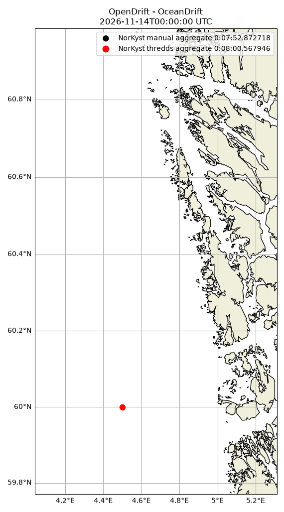

Note
Go to the end to download the full example code.
Manual aggregate
from datetime import datetime, timedelta
import pandas as pd
import matplotlib.pyplot as plt
from opendrift.readers import reader_netCDF_CF_generic
from opendrift.readers import open_mfdataset_overlap
from opendrift.models.oceandrift import OceanDrift
#%
# Create manual aggregate from individual URLs, for NorKyst ocean model initialized at 00 hours every day
start_time = datetime.now().date()-timedelta(days=3)
end_time = datetime.now().date()-timedelta(days=2)
ds = open_mfdataset_overlap(
'https://thredds.met.no/thredds/dodsC/fou-hi/norkystv3_his_files/%Y/%m/%d/norkyst800_his_zdepth_%Y%m%dT00Z_m00_AN.nc',
time_series=pd.date_range(start_time, end_time, freq='1D'))
#%
# Create reader from Xarray dataset
rm = reader_netCDF_CF_generic.Reader(ds, name='NorKyst manual aggregate')
print(rm)
om = OceanDrift()
om.add_reader(rm)
om.seed_elements(lon=4.5, lat=60.0, number=1000, radius=100, time=rm.start_time)
om.run(end_time=rm.end_time)
#%
# Second simulation using ready made aggregate from thredds
ot = OceanDrift()
ot.add_readers_from_list(['https://thredds.met.no/thredds/dodsC/fou-hi/norkystv3_800m_m00_be'])
ot.seed_elements(lon=4.5, lat=60.0, number=1000, radius=100, time=rm.start_time)
ot.run(end_time=rm.end_time)
#%
# Simulation should be identical, but we see that manual aggregate is significantly slower than using thredds aggregate
om.animation(compare=ot,
legend=[f'NorKyst manual aggregate {om.timing["total time"]}',
f'NorKyst thredds aggregate {ot.timing["total time"]}'])
Opening individual URLs...
Concatenating...
===========================
Reader: NorKyst manual aggregate
Reader type: opendrift.readers.reader_netCDF_CF_generic
Projection:
+proj=stere +lat_0=90 +lat_ts=60 +lon_0=70 +x_0=3369600 +y_0=1844800 +a=6378137 +b=6356752.3142 +units=m +no_defs +type=crs
Coverage: [degrees]
xmin: 0.000000 xmax: 2196800.000000 step: 800 numx: 2747
ymin: 0.000000 ymax: 917600.000000 step: 800 numy: 1148
Corners (lon, lat):
( -4.61, 57.34) ( 18.33, 75.73)
( 8.70, 54.29) ( 37.55, 69.25)
Vertical levels [m]:
[ -0. -1. -2. -3. -5. -7. -10. -15. -25. -50. -65. -75.
-100. -200. -300.]
Available time range:
start: 2026-11-09 00:00:00 end: 2026-11-10 23:00:00 step: 1:00:00
48 times (0 missing)
Variables:
ocean_vertical_diffusivity
eastward_wind
northward_wind
sea_floor_depth_below_sea_level
sea_water_salinity
sea_water_temperature
eastward_sea_water_velocity
northward_sea_water_velocity
upward_sea_water_velocity
sea_surface_height
latitude
longitude
x_wind
y_wind
x_sea_water_velocity
y_sea_water_velocity
wind_speed - derived from ['x_wind', 'y_wind']
sea_water_speed - derived from ['x_sea_water_velocity', 'y_sea_water_velocity']
===========================
16:05:37 DEBUG opendrift.config:168: Adding 18 config items from __init__
16:05:37 DEBUG opendrift.config:178: Overwriting config item readers:max_number_of_fails
16:05:37 DEBUG opendrift.config:168: Adding 5 config items from __init__
16:05:37 INFO opendrift:579: OpenDriftSimulation initialised (version 1.14.11 / v1.14.12-75-gf9e7122)
16:05:37 DEBUG opendrift.config:168: Adding 19 config items from oceandrift
16:05:37 DEBUG opendrift.config:178: Overwriting config item seed:z
16:05:37 DEBUG opendrift.models.basemodel.environment:312: Added reader NorKyst manual aggregate
16:05:37 INFO opendrift.models.basemodel.environment:203: Adding a global landmask from GSHHG
16:05:37 DEBUG opendrift.readers.basereader.variables:571: Skipping calculation of vector component, since y is not north
16:05:37 DEBUG opendrift.readers.basereader.variables:571: Skipping calculation of vector component, since y is not north
16:05:37 DEBUG opendrift.readers.basereader.variables:571: Skipping calculation of vector component, since y is not north
16:05:37 DEBUG opendrift.readers.basereader.variables:571: Skipping calculation of vector component, since y is not north
16:05:37 DEBUG opendrift.readers.basereader:185: Variable mapping: ['sea_floor_depth_below_sea_level'] -> ['land_binary_mask'] is not activated
16:05:43 DEBUG opendrift.models.basemodel.environment:312: Added reader global_landmask
16:05:43 INFO opendrift.models.basemodel.environment:227: Fallback values will be used for the following variables which have no readers:
16:05:43 INFO opendrift.models.basemodel.environment:230: horizontal_diffusivity: 0.000000
16:05:43 INFO opendrift.models.basemodel.environment:230: sea_surface_wave_significant_height: 0.000000
16:05:43 INFO opendrift.models.basemodel.environment:230: sea_surface_wave_stokes_drift_x_velocity: 0.000000
16:05:43 INFO opendrift.models.basemodel.environment:230: sea_surface_wave_stokes_drift_y_velocity: 0.000000
16:05:43 INFO opendrift.models.basemodel.environment:230: ocean_mixed_layer_thickness: 50.000000
16:05:43 DEBUG opendrift:165: Changed mode from Mode.Config to Mode.Ready
16:05:43 DEBUG opendrift:165: Changed mode from Mode.Ready to Mode.Run
16:05:43 DEBUG opendrift:1893:
------------------------------------------------------
Software and hardware:
OpenDrift version 1.14.11
Platform: Linux, 7.0.0-1017-aws
4.0 GB memory
36 processors (x86_64)
NumPy version 2.5.4
SciPy version 1.18.1
Matplotlib version 3.11.2
NetCDF4 version 1.7.5
Xarray version 2026.9.0
ADIOS (adios_db) version 1.2.5
Copernicusmarine version 2.5.1
Python version 3.14.10 | packaged by conda-forge | (main, Oct 26 2026, 11:35:38) [GCC 15.3.0]
------------------------------------------------------
16:05:43 DEBUG opendrift:1906: No output file is specified, neglecting export_buffer_length
16:05:43 INFO opendrift:1921: Skipping environment variable ocean_vertical_diffusivity because of condition ['drift:vertical_mixing', 'is', False]
16:05:43 INFO opendrift:1921: Skipping environment variable ocean_mixed_layer_thickness because of condition ['drift:vertical_mixing', 'is', False]
16:05:43 INFO opendrift:1932: Storing previous values of element property lon because of condition (('general:coastline_action', 'in', ['stranding', 'previous']), 'or', ('general:seafloor_action', 'in', ['previous']))
16:05:43 INFO opendrift:1932: Storing previous values of element property lat because of condition (('general:coastline_action', 'in', ['stranding', 'previous']), 'or', ('general:seafloor_action', 'in', ['previous']))
16:05:43 INFO opendrift:1940: Storing previous values of environment variable sea_surface_height because of condition ['drift:vertical_advection', 'is', True]
16:05:43 DEBUG opendrift:2057: Finalizing environment and preparing readers for simulation coverage ([-1.60275842 56.94866199 10.60224392 63.05149441]) and time (2026-11-09 00:00:00 to 2026-11-10 23:00:00)
16:05:43 DEBUG opendrift.models.basemodel.environment:166: Preparing NorKyst manual aggregate for extent [-1.60275842 56.94866199 10.60224392 63.05149441]
16:05:43 DEBUG opendrift.readers.basereader.structured:151: Clearing cache for reader NorKyst manual aggregate before starting new simulation
16:05:43 DEBUG opendrift.readers.basereader.variables:643: Setting buffer size 11 for reader NorKyst manual aggregate, assuming a maximum average speed of 2 m/s and time span of 1:00:00
16:05:43 DEBUG opendrift.readers.basereader.variables:584: Nothing more to prepare for NorKyst manual aggregate
16:05:43 DEBUG opendrift.models.basemodel.environment:166: Preparing global_landmask for extent [-1.60275842 56.94866199 10.60224392 63.05149441]
16:05:43 DEBUG opendrift.readers.basereader.variables:584: Nothing more to prepare for global_landmask
16:05:43 DEBUG opendrift:2154: Initial self.result, size Frozen({'trajectory': 1000, 'time': 48})
16:05:43 INFO opendrift:968: Using existing reader for land_binary_mask to move elements to ocean
16:05:43 DEBUG opendrift.models.basemodel.environment:598: ----------------------------------------
16:05:43 DEBUG opendrift.models.basemodel.environment:599: Variable group ['land_binary_mask']
16:05:43 DEBUG opendrift.models.basemodel.environment:600: ----------------------------------------
16:05:43 DEBUG opendrift.models.basemodel.environment:604: Calling reader global_landmask
16:05:43 DEBUG opendrift.models.basemodel.environment:605: ----------------------------------------
16:05:43 DEBUG opendrift.models.basemodel.environment:625: Data needed for 1000 elements
16:05:43 DEBUG opendrift.readers.basereader.variables:790: Fetching variables from global_landmask covering 1000 elements
16:05:43 DEBUG opendrift.readers.basereader.continuous:37: Fetched env-before
16:05:43 DEBUG opendrift.readers.basereader.variables:668: Checking land_binary_mask for invalid values
16:05:43 DEBUG opendrift.readers.basereader.variables:826: Reader projection is latlon - rotation of vectors is not needed.
16:05:43 DEBUG opendrift.models.basemodel.environment:761: Obtained data for all elements.
16:05:43 DEBUG opendrift.models.basemodel.environment:774: ---------------------------------------
16:05:43 DEBUG opendrift.models.basemodel.environment:775: Finished processing all variable groups
16:05:43 DEBUG opendrift.models.basemodel.environment:897: ------------ SUMMARY -------------
16:05:43 DEBUG opendrift.models.basemodel.environment:899: land_binary_mask: 0 (min) 0 (max)
16:05:43 DEBUG opendrift.models.basemodel.environment:901: ---------------------------------
16:05:43 INFO opendrift:1000: All points are in ocean
16:05:43 DEBUG opendrift:925: to be seeded: 1000, already seeded 0
16:05:43 DEBUG opendrift:947: Released 1000 new elements.
16:05:43 DEBUG opendrift:2247: ======================================================================
16:05:43 INFO opendrift:2248: 2026-11-09 00:00:00 - step 1 of 47 - 1000 active elements (0 deactivated)
16:05:43 DEBUG opendrift:2254: 0 elements scheduled.
16:05:43 DEBUG opendrift:2256: ======================================================================
16:05:43 DEBUG opendrift:2267: 59.997310638427734 <- latitude -> 60.002845764160156
16:05:43 DEBUG opendrift:2267: 4.494540691375732 <- longitude -> 4.504944801330566
16:05:43 DEBUG opendrift:2265: z = 0.0
16:05:43 DEBUG opendrift:2268: ---------------------------------
16:05:43 DEBUG opendrift.models.basemodel.environment:598: ----------------------------------------
16:05:43 DEBUG opendrift.models.basemodel.environment:599: Variable group ['sea_floor_depth_below_sea_level', 'upward_sea_water_velocity', 'sea_surface_height', 'x_wind', 'y_wind', 'x_sea_water_velocity', 'y_sea_water_velocity']
16:05:43 DEBUG opendrift.models.basemodel.environment:600: ----------------------------------------
16:05:43 DEBUG opendrift.models.basemodel.environment:604: Calling reader NorKyst manual aggregate
16:05:43 DEBUG opendrift.models.basemodel.environment:605: ----------------------------------------
16:05:43 DEBUG opendrift.models.basemodel.environment:625: Data needed for 1000 elements
16:05:43 DEBUG opendrift.readers.basereader.variables:790: Fetching variables from NorKyst manual aggregate covering 1000 elements
16:05:43 DEBUG opendrift.readers.basereader.structured:220: Reader time:
2026-11-09 00:00:00 (before)
2026-11-09 01:00:00 (after)
16:05:46 DEBUG opendrift.readers.reader_netCDF_CF_generic:475: Using eastward_wind to retrieve x_wind
16:05:47 DEBUG opendrift.readers.reader_netCDF_CF_generic:475: Using northward_wind to retrieve y_wind
16:05:47 DEBUG opendrift.readers.reader_netCDF_CF_generic:475: Using eastward_sea_water_velocity to retrieve x_sea_water_velocity
16:05:49 DEBUG opendrift.readers.reader_netCDF_CF_generic:475: Using northward_sea_water_velocity to retrieve y_sea_water_velocity
16:05:50 DEBUG opendrift.readers.reader_netCDF_CF_generic:607: Rotating vector from east/north to xy orientation: ['x_wind', 'y_wind']
16:05:50 DEBUG opendrift.readers.basereader.variables:126: Rotating vectors between 65.28400783875489 and 65.70176334471121 degrees.
16:05:50 DEBUG opendrift.readers.reader_netCDF_CF_generic:607: Rotating vector from east/north to xy orientation: ['x_sea_water_velocity', 'y_sea_water_velocity']
16:05:50 DEBUG opendrift.readers.basereader.variables:126: Rotating vectors between 65.28400783875489 and 65.70176334471121 degrees.
16:05:50 DEBUG opendrift.readers.basereader.variables:668: Checking sea_floor_depth_below_sea_level for invalid values
16:05:50 DEBUG opendrift.readers.basereader.variables:668: Checking x_wind for invalid values
16:05:50 DEBUG opendrift.readers.basereader.variables:668: Checking y_wind for invalid values
16:05:50 DEBUG opendrift.readers.basereader.variables:668: Checking x_sea_water_velocity for invalid values
16:05:50 DEBUG opendrift.readers.basereader.variables:668: Checking y_sea_water_velocity for invalid values
16:05:50 DEBUG opendrift.readers.basereader.structured:290: Fetched env-block (size 23x23x2) for time before (2026-11-09 00:00:00)
16:05:50 DEBUG opendrift.readers.basereader.structured:334: Interpolating before (2026-11-09 00:00:00) in space (linearNDFast)
16:05:50 DEBUG opendrift.readers.interpolation.structured:97: Initialising interpolator.
16:05:50 DEBUG opendrift.readers.basereader.structured:388: No time interpolation needed - right on time.
16:05:50 DEBUG opendrift.readers.basereader.variables:126: Rotating vectors between -65.5054702318003 and -65.49506612654369 degrees.
16:05:50 DEBUG opendrift.readers.basereader.variables:126: Rotating vectors between -65.5054702318003 and -65.49506612654369 degrees.
16:05:50 DEBUG opendrift.models.basemodel.environment:761: Obtained data for all elements.
16:05:50 DEBUG opendrift.models.basemodel.environment:598: ----------------------------------------
16:05:50 DEBUG opendrift.models.basemodel.environment:599: Variable group ['land_binary_mask']
16:05:50 DEBUG opendrift.models.basemodel.environment:600: ----------------------------------------
16:05:50 DEBUG opendrift.models.basemodel.environment:604: Calling reader global_landmask
16:05:50 DEBUG opendrift.models.basemodel.environment:605: ----------------------------------------
16:05:50 DEBUG opendrift.models.basemodel.environment:625: Data needed for 1000 elements
16:05:50 DEBUG opendrift.readers.basereader.variables:790: Fetching variables from global_landmask covering 1000 elements
16:05:50 DEBUG opendrift.readers.basereader.continuous:37: Fetched env-before
16:05:50 DEBUG opendrift.readers.basereader.variables:668: Checking land_binary_mask for invalid values
16:05:50 DEBUG opendrift.readers.basereader.variables:826: Reader projection is latlon - rotation of vectors is not needed.
16:05:50 DEBUG opendrift.models.basemodel.environment:761: Obtained data for all elements.
16:05:50 DEBUG opendrift.models.basemodel.environment:774: ---------------------------------------
16:05:50 DEBUG opendrift.models.basemodel.environment:775: Finished processing all variable groups
16:05:50 DEBUG opendrift.models.basemodel.environment:897: ------------ SUMMARY -------------
16:05:50 DEBUG opendrift.models.basemodel.environment:899: x_sea_water_velocity: -0.0723958 (min) -0.0553018 (max)
16:05:50 DEBUG opendrift.models.basemodel.environment:899: y_sea_water_velocity: 0.0809141 (min) 0.0948228 (max)
16:05:50 DEBUG opendrift.models.basemodel.environment:899: sea_surface_height: -0.285775 (min) -0.284798 (max)
16:05:50 DEBUG opendrift.models.basemodel.environment:899: x_wind: -0.540291 (min) -0.512123 (max)
16:05:50 DEBUG opendrift.models.basemodel.environment:899: y_wind: 5.13753 (min) 5.16584 (max)
16:05:50 DEBUG opendrift.models.basemodel.environment:899: upward_sea_water_velocity: 0 (min) 0 (max)
16:05:50 DEBUG opendrift.models.basemodel.environment:899: horizontal_diffusivity: 0 (min) 0 (max)
16:05:50 DEBUG opendrift.models.basemodel.environment:899: sea_surface_wave_significant_height: 0 (min) 0 (max)
16:05:50 DEBUG opendrift.models.basemodel.environment:899: sea_surface_wave_stokes_drift_x_velocity: 0 (min) 0 (max)
16:05:50 DEBUG opendrift.models.basemodel.environment:899: sea_surface_wave_stokes_drift_y_velocity: 0 (min) 0 (max)
16:05:50 DEBUG opendrift.models.basemodel.environment:899: sea_floor_depth_below_sea_level: 262.501 (min) 264.452 (max)
16:05:50 DEBUG opendrift.models.basemodel.environment:899: land_binary_mask: 0 (min) 0 (max)
16:05:50 DEBUG opendrift.models.basemodel.environment:901: ---------------------------------
16:05:50 DEBUG opendrift.models.physics_methods:928: Calculating Hs from wind, min: 0.655774, mean: 0.659676, max: 0.663451
16:05:50 DEBUG opendrift:710: No elements hit coastline.
16:05:50 DEBUG opendrift:781: No elements hit seafloor.
16:05:50 DEBUG opendrift:1821: No elements to deactivate
16:05:50 DEBUG opendrift:2305: Calling OceanDrift.update()
16:05:50 DEBUG opendrift.models.physics_methods:842: Advecting 1000 of 1000 elements above 0.100m with wind-sheared ocean current (0.103262 m/s - 0.103864 m/s)
16:05:50 DEBUG opendrift.models.physics_methods:867: No Stokes drift velocity available
16:05:50 DEBUG opendrift.models.oceandrift:330: Vertical advection, excluding elements at surface
16:05:50 DEBUG opendrift:1769: Horizontal diffusivity is 0, no random walk.
16:05:50 DEBUG opendrift:925: to be seeded: 0, already seeded 1000
16:05:50 DEBUG opendrift:2247: ======================================================================
16:05:50 INFO opendrift:2248: 2026-11-09 01:00:00 - step 2 of 47 - 1000 active elements (0 deactivated)
16:05:50 DEBUG opendrift:2254: 0 elements scheduled.
16:05:50 DEBUG opendrift:2256: ======================================================================
16:05:50 DEBUG opendrift:2267: 60.00349399095063 <- latitude -> 60.009054637758055
16:05:50 DEBUG opendrift:2267: 4.489885123314084 <- longitude -> 4.500002374985635
16:05:50 DEBUG opendrift:2265: z = 0.0
16:05:50 DEBUG opendrift:2268: ---------------------------------
16:05:50 DEBUG opendrift.models.basemodel.environment:598: ----------------------------------------
16:05:50 DEBUG opendrift.models.basemodel.environment:599: Variable group ['sea_floor_depth_below_sea_level', 'upward_sea_water_velocity', 'sea_surface_height', 'x_wind', 'y_wind', 'x_sea_water_velocity', 'y_sea_water_velocity']
16:05:50 DEBUG opendrift.models.basemodel.environment:600: ----------------------------------------
16:05:50 DEBUG opendrift.models.basemodel.environment:604: Calling reader NorKyst manual aggregate
16:05:50 DEBUG opendrift.models.basemodel.environment:605: ----------------------------------------
16:05:50 DEBUG opendrift.models.basemodel.environment:625: Data needed for 1000 elements
16:05:50 DEBUG opendrift.readers.basereader.variables:790: Fetching variables from NorKyst manual aggregate covering 1000 elements
16:05:50 DEBUG opendrift.readers.basereader.structured:220: Reader time:
2026-11-09 01:00:00 (before)
2026-11-09 02:00:00 (after)
16:05:52 DEBUG opendrift.readers.reader_netCDF_CF_generic:475: Using eastward_wind to retrieve x_wind
16:05:53 DEBUG opendrift.readers.reader_netCDF_CF_generic:475: Using northward_wind to retrieve y_wind
16:05:53 DEBUG opendrift.readers.reader_netCDF_CF_generic:475: Using eastward_sea_water_velocity to retrieve x_sea_water_velocity
16:05:54 DEBUG opendrift.readers.reader_netCDF_CF_generic:475: Using northward_sea_water_velocity to retrieve y_sea_water_velocity
16:05:56 DEBUG opendrift.readers.reader_netCDF_CF_generic:607: Rotating vector from east/north to xy orientation: ['x_wind', 'y_wind']
16:05:56 DEBUG opendrift.readers.basereader.variables:126: Rotating vectors between 65.2910474445012 and 65.70176334471121 degrees.
16:05:56 DEBUG opendrift.readers.reader_netCDF_CF_generic:607: Rotating vector from east/north to xy orientation: ['x_sea_water_velocity', 'y_sea_water_velocity']
16:05:56 DEBUG opendrift.readers.basereader.variables:126: Rotating vectors between 65.2910474445012 and 65.70176334471121 degrees.
16:05:56 DEBUG opendrift.readers.basereader.variables:668: Checking sea_floor_depth_below_sea_level for invalid values
16:05:56 DEBUG opendrift.readers.basereader.variables:668: Checking x_wind for invalid values
16:05:56 DEBUG opendrift.readers.basereader.variables:668: Checking y_wind for invalid values
16:05:56 DEBUG opendrift.readers.basereader.variables:668: Checking x_sea_water_velocity for invalid values
16:05:56 DEBUG opendrift.readers.basereader.variables:668: Checking y_sea_water_velocity for invalid values
16:05:56 DEBUG opendrift.readers.basereader.structured:290: Fetched env-block (size 24x22x2) for time before (2026-11-09 01:00:00)
16:05:56 DEBUG opendrift.readers.basereader.structured:334: Interpolating before (2026-11-09 01:00:00) in space (linearNDFast)
16:05:56 DEBUG opendrift.readers.interpolation.structured:97: Initialising interpolator.
16:05:56 DEBUG opendrift.readers.basereader.structured:388: No time interpolation needed - right on time.
16:05:56 DEBUG opendrift.readers.basereader.variables:126: Rotating vectors between -65.51012580826406 and -65.5000085454873 degrees.
16:05:56 DEBUG opendrift.readers.basereader.variables:126: Rotating vectors between -65.51012580826406 and -65.5000085454873 degrees.
16:05:56 DEBUG opendrift.models.basemodel.environment:761: Obtained data for all elements.
16:05:56 DEBUG opendrift.models.basemodel.environment:598: ----------------------------------------
16:05:56 DEBUG opendrift.models.basemodel.environment:599: Variable group ['land_binary_mask']
16:05:56 DEBUG opendrift.models.basemodel.environment:600: ----------------------------------------
16:05:56 DEBUG opendrift.models.basemodel.environment:604: Calling reader global_landmask
16:05:56 DEBUG opendrift.models.basemodel.environment:605: ----------------------------------------
16:05:56 DEBUG opendrift.models.basemodel.environment:625: Data needed for 1000 elements
16:05:56 DEBUG opendrift.readers.basereader.variables:790: Fetching variables from global_landmask covering 1000 elements
16:05:56 DEBUG opendrift.readers.basereader.continuous:37: Fetched env-before
16:05:56 DEBUG opendrift.readers.basereader.variables:668: Checking land_binary_mask for invalid values
16:05:56 DEBUG opendrift.readers.basereader.variables:826: Reader projection is latlon - rotation of vectors is not needed.
16:05:56 DEBUG opendrift.models.basemodel.environment:761: Obtained data for all elements.
16:05:56 DEBUG opendrift.models.basemodel.environment:774: ---------------------------------------
16:05:56 DEBUG opendrift.models.basemodel.environment:775: Finished processing all variable groups
16:05:56 DEBUG opendrift.models.basemodel.environment:897: ------------ SUMMARY -------------
16:05:56 DEBUG opendrift.models.basemodel.environment:899: x_sea_water_velocity: -0.0651896 (min) -0.0474512 (max)
16:05:56 DEBUG opendrift.models.basemodel.environment:899: y_sea_water_velocity: 0.111159 (min) 0.121986 (max)
16:05:56 DEBUG opendrift.models.basemodel.environment:899: sea_surface_height: -0.494747 (min) -0.49401 (max)
16:05:56 DEBUG opendrift.models.basemodel.environment:899: x_wind: -0.852537 (min) -0.82816 (max)
16:05:56 DEBUG opendrift.models.basemodel.environment:899: y_wind: 4.39223 (min) 4.42599 (max)
16:05:56 DEBUG opendrift.models.basemodel.environment:899: upward_sea_water_velocity: -6e-05 (min) -6e-05 (max)
16:05:56 DEBUG opendrift.models.basemodel.environment:899: horizontal_diffusivity: 0 (min) 0 (max)
16:05:56 DEBUG opendrift.models.basemodel.environment:899: sea_surface_wave_significant_height: 0 (min) 0 (max)
16:05:56 DEBUG opendrift.models.basemodel.environment:899: sea_surface_wave_stokes_drift_x_velocity: 0 (min) 0 (max)
16:05:56 DEBUG opendrift.models.basemodel.environment:899: sea_surface_wave_stokes_drift_y_velocity: 0 (min) 0 (max)
16:05:56 DEBUG opendrift.models.basemodel.environment:899: sea_floor_depth_below_sea_level: 263.231 (min) 264.942 (max)
16:05:56 DEBUG opendrift.models.basemodel.environment:899: land_binary_mask: 0 (min) 0 (max)
16:05:56 DEBUG opendrift.models.basemodel.environment:901: ---------------------------------
16:05:56 DEBUG opendrift.models.physics_methods:928: Calculating Hs from wind, min: 0.492456, mean: 0.495569, max: 0.498861
16:05:56 DEBUG opendrift:710: No elements hit coastline.
16:05:56 DEBUG opendrift:781: No elements hit seafloor.
16:05:56 DEBUG opendrift:1821: No elements to deactivate
16:05:56 DEBUG opendrift:2305: Calling OceanDrift.update()
16:05:56 DEBUG opendrift.models.physics_methods:842: Advecting 1000 of 1000 elements above 0.100m with wind-sheared ocean current (0.089484 m/s - 0.090064 m/s)
16:05:56 DEBUG opendrift.models.physics_methods:867: No Stokes drift velocity available
16:05:56 DEBUG opendrift.models.oceandrift:330: Vertical advection, excluding elements at surface
16:05:56 DEBUG opendrift:1769: Horizontal diffusivity is 0, no random walk.
16:05:56 DEBUG opendrift:925: to be seeded: 0, already seeded 1000
16:05:56 DEBUG opendrift:2247: ======================================================================
16:05:56 INFO opendrift:2248: 2026-11-09 02:00:00 - step 3 of 47 - 1000 active elements (0 deactivated)
16:05:56 DEBUG opendrift:2254: 0 elements scheduled.
16:05:56 DEBUG opendrift:2256: ======================================================================
16:05:56 DEBUG opendrift:2267: 60.01007925139055 <- latitude -> 60.01573901675012
16:05:56 DEBUG opendrift:2267: 4.4853216193160845 <- longitude -> 4.495100680564575
16:05:56 DEBUG opendrift:2265: z = 0.0
16:05:56 DEBUG opendrift:2268: ---------------------------------
16:05:56 DEBUG opendrift.models.basemodel.environment:598: ----------------------------------------
16:05:56 DEBUG opendrift.models.basemodel.environment:599: Variable group ['sea_floor_depth_below_sea_level', 'upward_sea_water_velocity', 'sea_surface_height', 'x_wind', 'y_wind', 'x_sea_water_velocity', 'y_sea_water_velocity']
16:05:56 DEBUG opendrift.models.basemodel.environment:600: ----------------------------------------
16:05:56 DEBUG opendrift.models.basemodel.environment:604: Calling reader NorKyst manual aggregate
16:05:56 DEBUG opendrift.models.basemodel.environment:605: ----------------------------------------
16:05:56 DEBUG opendrift.models.basemodel.environment:625: Data needed for 1000 elements
16:05:56 DEBUG opendrift.readers.basereader.variables:790: Fetching variables from NorKyst manual aggregate covering 1000 elements
16:05:56 DEBUG opendrift.readers.basereader.structured:220: Reader time:
2026-11-09 02:00:00 (before)
2026-11-09 03:00:00 (after)
16:06:00 DEBUG opendrift.readers.reader_netCDF_CF_generic:475: Using eastward_wind to retrieve x_wind
16:06:01 DEBUG opendrift.readers.reader_netCDF_CF_generic:475: Using northward_wind to retrieve y_wind
16:06:01 DEBUG opendrift.readers.reader_netCDF_CF_generic:475: Using eastward_sea_water_velocity to retrieve x_sea_water_velocity
16:06:03 DEBUG opendrift.readers.reader_netCDF_CF_generic:475: Using northward_sea_water_velocity to retrieve y_sea_water_velocity
16:06:05 DEBUG opendrift.readers.reader_netCDF_CF_generic:607: Rotating vector from east/north to xy orientation: ['x_wind', 'y_wind']
16:06:05 DEBUG opendrift.readers.basereader.variables:126: Rotating vectors between 65.28504405137811 and 65.70892208923631 degrees.
16:06:05 DEBUG opendrift.readers.reader_netCDF_CF_generic:607: Rotating vector from east/north to xy orientation: ['x_sea_water_velocity', 'y_sea_water_velocity']
16:06:05 DEBUG opendrift.readers.basereader.variables:126: Rotating vectors between 65.28504405137811 and 65.70892208923631 degrees.
16:06:05 DEBUG opendrift.readers.basereader.variables:668: Checking sea_floor_depth_below_sea_level for invalid values
16:06:05 DEBUG opendrift.readers.basereader.variables:668: Checking x_wind for invalid values
16:06:05 DEBUG opendrift.readers.basereader.variables:668: Checking y_wind for invalid values
16:06:05 DEBUG opendrift.readers.basereader.variables:668: Checking x_sea_water_velocity for invalid values
16:06:05 DEBUG opendrift.readers.basereader.variables:668: Checking y_sea_water_velocity for invalid values
16:06:05 DEBUG opendrift.readers.basereader.structured:290: Fetched env-block (size 24x23x2) for time before (2026-11-09 02:00:00)
16:06:05 DEBUG opendrift.readers.basereader.structured:334: Interpolating before (2026-11-09 02:00:00) in space (linearNDFast)
16:06:05 DEBUG opendrift.readers.interpolation.structured:97: Initialising interpolator.
16:06:05 DEBUG opendrift.readers.basereader.structured:388: No time interpolation needed - right on time.
16:06:05 DEBUG opendrift.readers.basereader.variables:126: Rotating vectors between -65.5146893036368 and -65.5049102381455 degrees.
16:06:05 DEBUG opendrift.readers.basereader.variables:126: Rotating vectors between -65.5146893036368 and -65.5049102381455 degrees.
16:06:05 DEBUG opendrift.models.basemodel.environment:761: Obtained data for all elements.
16:06:05 DEBUG opendrift.models.basemodel.environment:598: ----------------------------------------
16:06:05 DEBUG opendrift.models.basemodel.environment:599: Variable group ['land_binary_mask']
16:06:05 DEBUG opendrift.models.basemodel.environment:600: ----------------------------------------
16:06:05 DEBUG opendrift.models.basemodel.environment:604: Calling reader global_landmask
16:06:05 DEBUG opendrift.models.basemodel.environment:605: ----------------------------------------
16:06:05 DEBUG opendrift.models.basemodel.environment:625: Data needed for 1000 elements
16:06:05 DEBUG opendrift.readers.basereader.variables:790: Fetching variables from global_landmask covering 1000 elements
16:06:05 DEBUG opendrift.readers.basereader.continuous:37: Fetched env-before
16:06:05 DEBUG opendrift.readers.basereader.variables:668: Checking land_binary_mask for invalid values
16:06:05 DEBUG opendrift.readers.basereader.variables:826: Reader projection is latlon - rotation of vectors is not needed.
16:06:05 DEBUG opendrift.models.basemodel.environment:761: Obtained data for all elements.
16:06:05 DEBUG opendrift.models.basemodel.environment:774: ---------------------------------------
16:06:05 DEBUG opendrift.models.basemodel.environment:775: Finished processing all variable groups
16:06:05 DEBUG opendrift.models.basemodel.environment:897: ------------ SUMMARY -------------
16:06:05 DEBUG opendrift.models.basemodel.environment:899: x_sea_water_velocity: -0.0506069 (min) -0.0335913 (max)
16:06:05 DEBUG opendrift.models.basemodel.environment:899: y_sea_water_velocity: 0.153796 (min) 0.164587 (max)
16:06:05 DEBUG opendrift.models.basemodel.environment:899: sea_surface_height: -0.679718 (min) -0.67873 (max)
16:06:05 DEBUG opendrift.models.basemodel.environment:899: x_wind: -1.97516 (min) -1.90723 (max)
16:06:05 DEBUG opendrift.models.basemodel.environment:899: y_wind: 3.49993 (min) 3.54014 (max)
16:06:05 DEBUG opendrift.models.basemodel.environment:899: upward_sea_water_velocity: -4e-05 (min) -4e-05 (max)
16:06:05 DEBUG opendrift.models.basemodel.environment:899: horizontal_diffusivity: 0 (min) 0 (max)
16:06:05 DEBUG opendrift.models.basemodel.environment:899: sea_surface_wave_significant_height: 0 (min) 0 (max)
16:06:05 DEBUG opendrift.models.basemodel.environment:899: sea_surface_wave_stokes_drift_x_velocity: 0 (min) 0 (max)
16:06:05 DEBUG opendrift.models.basemodel.environment:899: sea_surface_wave_stokes_drift_y_velocity: 0 (min) 0 (max)
16:06:05 DEBUG opendrift.models.basemodel.environment:899: sea_floor_depth_below_sea_level: 263.966 (min) 265.532 (max)
16:06:05 DEBUG opendrift.models.basemodel.environment:899: land_binary_mask: 0 (min) 0 (max)
16:06:05 DEBUG opendrift.models.basemodel.environment:901: ---------------------------------
16:06:05 DEBUG opendrift.models.physics_methods:928: Calculating Hs from wind, min: 0.393560, mean: 0.397148, max: 0.401262
16:06:05 DEBUG opendrift:710: No elements hit coastline.
16:06:05 DEBUG opendrift:781: No elements hit seafloor.
16:06:05 DEBUG opendrift:1821: No elements to deactivate
16:06:05 DEBUG opendrift:2305: Calling OceanDrift.update()
16:06:05 DEBUG opendrift.models.physics_methods:842: Advecting 1000 of 1000 elements above 0.100m with wind-sheared ocean current (0.079996 m/s - 0.080775 m/s)
16:06:05 DEBUG opendrift.models.physics_methods:867: No Stokes drift velocity available
16:06:05 DEBUG opendrift.models.oceandrift:330: Vertical advection, excluding elements at surface
16:06:05 DEBUG opendrift:1769: Horizontal diffusivity is 0, no random walk.
16:06:05 DEBUG opendrift:925: to be seeded: 0, already seeded 1000
16:06:05 DEBUG opendrift:2247: ======================================================================
16:06:05 INFO opendrift:2248: 2026-11-09 03:00:00 - step 4 of 47 - 1000 active elements (0 deactivated)
16:06:05 DEBUG opendrift:2254: 0 elements scheduled.
16:06:05 DEBUG opendrift:2256: ======================================================================
16:06:05 DEBUG opendrift:2267: 60.017400403769614 <- latitude -> 60.02326251390066
16:06:05 DEBUG opendrift:2267: 4.480180125524576 <- longitude -> 4.489998039154978
16:06:05 DEBUG opendrift:2265: z = 0.0
16:06:05 DEBUG opendrift:2268: ---------------------------------
16:06:05 DEBUG opendrift.models.basemodel.environment:598: ----------------------------------------
16:06:05 DEBUG opendrift.models.basemodel.environment:599: Variable group ['sea_floor_depth_below_sea_level', 'upward_sea_water_velocity', 'sea_surface_height', 'x_wind', 'y_wind', 'x_sea_water_velocity', 'y_sea_water_velocity']
16:06:05 DEBUG opendrift.models.basemodel.environment:600: ----------------------------------------
16:06:05 DEBUG opendrift.models.basemodel.environment:604: Calling reader NorKyst manual aggregate
16:06:05 DEBUG opendrift.models.basemodel.environment:605: ----------------------------------------
16:06:05 DEBUG opendrift.models.basemodel.environment:625: Data needed for 1000 elements
16:06:05 DEBUG opendrift.readers.basereader.variables:790: Fetching variables from NorKyst manual aggregate covering 1000 elements
16:06:05 DEBUG opendrift.readers.basereader.structured:220: Reader time:
2026-11-09 03:00:00 (before)
2026-11-09 04:00:00 (after)
16:06:09 DEBUG opendrift.readers.reader_netCDF_CF_generic:475: Using eastward_wind to retrieve x_wind
16:06:09 DEBUG opendrift.readers.reader_netCDF_CF_generic:475: Using northward_wind to retrieve y_wind
16:06:10 DEBUG opendrift.readers.reader_netCDF_CF_generic:475: Using eastward_sea_water_velocity to retrieve x_sea_water_velocity
16:06:12 DEBUG opendrift.readers.reader_netCDF_CF_generic:475: Using northward_sea_water_velocity to retrieve y_sea_water_velocity
16:06:14 DEBUG opendrift.readers.reader_netCDF_CF_generic:607: Rotating vector from east/north to xy orientation: ['x_wind', 'y_wind']
16:06:14 DEBUG opendrift.readers.basereader.variables:126: Rotating vectors between 65.29208794670579 and 65.71608556879951 degrees.
16:06:14 DEBUG opendrift.readers.reader_netCDF_CF_generic:607: Rotating vector from east/north to xy orientation: ['x_sea_water_velocity', 'y_sea_water_velocity']
16:06:14 DEBUG opendrift.readers.basereader.variables:126: Rotating vectors between 65.29208794670579 and 65.71608556879951 degrees.
16:06:14 DEBUG opendrift.readers.basereader.variables:668: Checking sea_floor_depth_below_sea_level for invalid values
16:06:14 DEBUG opendrift.readers.basereader.variables:668: Checking x_wind for invalid values
16:06:14 DEBUG opendrift.readers.basereader.variables:668: Checking y_wind for invalid values
16:06:14 DEBUG opendrift.readers.basereader.variables:668: Checking x_sea_water_velocity for invalid values
16:06:14 DEBUG opendrift.readers.basereader.variables:668: Checking y_sea_water_velocity for invalid values
16:06:14 DEBUG opendrift.readers.basereader.structured:290: Fetched env-block (size 24x23x2) for time before (2026-11-09 03:00:00)
16:06:14 DEBUG opendrift.readers.basereader.structured:334: Interpolating before (2026-11-09 03:00:00) in space (linearNDFast)
16:06:14 DEBUG opendrift.readers.interpolation.structured:97: Initialising interpolator.
16:06:14 DEBUG opendrift.readers.basereader.structured:388: No time interpolation needed - right on time.
16:06:14 DEBUG opendrift.readers.basereader.variables:126: Rotating vectors between -65.51983078862551 and -65.51001288547495 degrees.
16:06:14 DEBUG opendrift.readers.basereader.variables:126: Rotating vectors between -65.51983078862551 and -65.51001288547495 degrees.
16:06:14 DEBUG opendrift.models.basemodel.environment:761: Obtained data for all elements.
16:06:14 DEBUG opendrift.models.basemodel.environment:598: ----------------------------------------
16:06:14 DEBUG opendrift.models.basemodel.environment:599: Variable group ['land_binary_mask']
16:06:14 DEBUG opendrift.models.basemodel.environment:600: ----------------------------------------
16:06:14 DEBUG opendrift.models.basemodel.environment:604: Calling reader global_landmask
16:06:14 DEBUG opendrift.models.basemodel.environment:605: ----------------------------------------
16:06:14 DEBUG opendrift.models.basemodel.environment:625: Data needed for 1000 elements
16:06:14 DEBUG opendrift.readers.basereader.variables:790: Fetching variables from global_landmask covering 1000 elements
16:06:14 DEBUG opendrift.readers.basereader.continuous:37: Fetched env-before
16:06:14 DEBUG opendrift.readers.basereader.variables:668: Checking land_binary_mask for invalid values
16:06:14 DEBUG opendrift.readers.basereader.variables:826: Reader projection is latlon - rotation of vectors is not needed.
16:06:14 DEBUG opendrift.models.basemodel.environment:761: Obtained data for all elements.
16:06:14 DEBUG opendrift.models.basemodel.environment:774: ---------------------------------------
16:06:14 DEBUG opendrift.models.basemodel.environment:775: Finished processing all variable groups
16:06:14 DEBUG opendrift.models.basemodel.environment:897: ------------ SUMMARY -------------
16:06:14 DEBUG opendrift.models.basemodel.environment:899: x_sea_water_velocity: -0.0384175 (min) -0.0231753 (max)
16:06:14 DEBUG opendrift.models.basemodel.environment:899: y_sea_water_velocity: 0.207253 (min) 0.217849 (max)
16:06:14 DEBUG opendrift.models.basemodel.environment:899: sea_surface_height: -0.791349 (min) -0.790041 (max)
16:06:14 DEBUG opendrift.models.basemodel.environment:899: x_wind: -2.12645 (min) -2.08983 (max)
16:06:14 DEBUG opendrift.models.basemodel.environment:899: y_wind: 3.87595 (min) 3.90214 (max)
16:06:14 DEBUG opendrift.models.basemodel.environment:899: upward_sea_water_velocity: -2e-05 (min) -2e-05 (max)
16:06:14 DEBUG opendrift.models.basemodel.environment:899: horizontal_diffusivity: 0 (min) 0 (max)
16:06:14 DEBUG opendrift.models.basemodel.environment:899: sea_surface_wave_significant_height: 0 (min) 0 (max)
16:06:14 DEBUG opendrift.models.basemodel.environment:899: sea_surface_wave_stokes_drift_x_velocity: 0 (min) 0 (max)
16:06:14 DEBUG opendrift.models.basemodel.environment:899: sea_surface_wave_stokes_drift_y_velocity: 0 (min) 0 (max)
16:06:14 DEBUG opendrift.models.basemodel.environment:899: sea_floor_depth_below_sea_level: 264.913 (min) 266.179 (max)
16:06:14 DEBUG opendrift.models.basemodel.environment:899: land_binary_mask: 0 (min) 0 (max)
16:06:14 DEBUG opendrift.models.basemodel.environment:901: ---------------------------------
16:06:14 DEBUG opendrift.models.physics_methods:928: Calculating Hs from wind, min: 0.480404, mean: 0.481243, max: 0.482104
16:06:14 DEBUG opendrift:710: No elements hit coastline.
16:06:14 DEBUG opendrift:781: No elements hit seafloor.
16:06:14 DEBUG opendrift:1821: No elements to deactivate
16:06:14 DEBUG opendrift:2305: Calling OceanDrift.update()
16:06:14 DEBUG opendrift.models.physics_methods:842: Advecting 1000 of 1000 elements above 0.100m with wind-sheared ocean current (0.088382 m/s - 0.088539 m/s)
16:06:14 DEBUG opendrift.models.physics_methods:867: No Stokes drift velocity available
16:06:14 DEBUG opendrift.models.oceandrift:330: Vertical advection, excluding elements at surface
16:06:14 DEBUG opendrift:1769: Horizontal diffusivity is 0, no random walk.
16:06:14 DEBUG opendrift:925: to be seeded: 0, already seeded 1000
16:06:14 DEBUG opendrift:2247: ======================================================================
16:06:14 INFO opendrift:2248: 2026-11-09 04:00:00 - step 5 of 47 - 1000 active elements (0 deactivated)
16:06:14 DEBUG opendrift:2254: 0 elements scheduled.
16:06:14 DEBUG opendrift:2256: ======================================================================
16:06:14 DEBUG opendrift:2267: 60.026644572178625 <- latitude -> 60.03276308812963
16:06:14 DEBUG opendrift:2267: 4.4752286701167705 <- longitude -> 4.4855053148424835
16:06:14 DEBUG opendrift:2265: z = 0.0
16:06:14 DEBUG opendrift:2268: ---------------------------------
16:06:14 DEBUG opendrift.models.basemodel.environment:598: ----------------------------------------
16:06:14 DEBUG opendrift.models.basemodel.environment:599: Variable group ['sea_floor_depth_below_sea_level', 'upward_sea_water_velocity', 'sea_surface_height', 'x_wind', 'y_wind', 'x_sea_water_velocity', 'y_sea_water_velocity']
16:06:14 DEBUG opendrift.models.basemodel.environment:600: ----------------------------------------
16:06:14 DEBUG opendrift.models.basemodel.environment:604: Calling reader NorKyst manual aggregate
16:06:14 DEBUG opendrift.models.basemodel.environment:605: ----------------------------------------
16:06:14 DEBUG opendrift.models.basemodel.environment:625: Data needed for 1000 elements
16:06:14 DEBUG opendrift.readers.basereader.variables:790: Fetching variables from NorKyst manual aggregate covering 1000 elements
16:06:14 DEBUG opendrift.readers.basereader.structured:220: Reader time:
2026-11-09 04:00:00 (before)
2026-11-09 05:00:00 (after)
16:06:17 DEBUG opendrift.readers.reader_netCDF_CF_generic:475: Using eastward_wind to retrieve x_wind
16:06:18 DEBUG opendrift.readers.reader_netCDF_CF_generic:475: Using northward_wind to retrieve y_wind
16:06:18 DEBUG opendrift.readers.reader_netCDF_CF_generic:475: Using eastward_sea_water_velocity to retrieve x_sea_water_velocity
16:06:20 DEBUG opendrift.readers.reader_netCDF_CF_generic:475: Using northward_sea_water_velocity to retrieve y_sea_water_velocity
16:06:22 DEBUG opendrift.readers.reader_netCDF_CF_generic:607: Rotating vector from east/north to xy orientation: ['x_wind', 'y_wind']
16:06:22 DEBUG opendrift.readers.basereader.variables:126: Rotating vectors between 65.29913652918091 and 65.71019326108967 degrees.
16:06:22 DEBUG opendrift.readers.reader_netCDF_CF_generic:607: Rotating vector from east/north to xy orientation: ['x_sea_water_velocity', 'y_sea_water_velocity']
16:06:22 DEBUG opendrift.readers.basereader.variables:126: Rotating vectors between 65.29913652918091 and 65.71019326108967 degrees.
16:06:22 DEBUG opendrift.readers.basereader.variables:668: Checking sea_floor_depth_below_sea_level for invalid values
16:06:22 DEBUG opendrift.readers.basereader.variables:668: Checking x_wind for invalid values
16:06:22 DEBUG opendrift.readers.basereader.variables:668: Checking y_wind for invalid values
16:06:22 DEBUG opendrift.readers.basereader.variables:668: Checking x_sea_water_velocity for invalid values
16:06:22 DEBUG opendrift.readers.basereader.variables:668: Checking y_sea_water_velocity for invalid values
16:06:22 DEBUG opendrift.readers.basereader.structured:290: Fetched env-block (size 24x22x2) for time before (2026-11-09 04:00:00)
16:06:22 DEBUG opendrift.readers.basereader.structured:334: Interpolating before (2026-11-09 04:00:00) in space (linearNDFast)
16:06:22 DEBUG opendrift.readers.interpolation.structured:97: Initialising interpolator.
16:06:22 DEBUG opendrift.readers.basereader.structured:388: No time interpolation needed - right on time.
16:06:22 DEBUG opendrift.readers.basereader.variables:126: Rotating vectors between -65.52478224648385 and -65.51450558913139 degrees.
16:06:22 DEBUG opendrift.readers.basereader.variables:126: Rotating vectors between -65.52478224648385 and -65.51450558913139 degrees.
16:06:22 DEBUG opendrift.models.basemodel.environment:761: Obtained data for all elements.
16:06:22 DEBUG opendrift.models.basemodel.environment:598: ----------------------------------------
16:06:22 DEBUG opendrift.models.basemodel.environment:599: Variable group ['land_binary_mask']
16:06:22 DEBUG opendrift.models.basemodel.environment:600: ----------------------------------------
16:06:22 DEBUG opendrift.models.basemodel.environment:604: Calling reader global_landmask
16:06:22 DEBUG opendrift.models.basemodel.environment:605: ----------------------------------------
16:06:22 DEBUG opendrift.models.basemodel.environment:625: Data needed for 1000 elements
16:06:22 DEBUG opendrift.readers.basereader.variables:790: Fetching variables from global_landmask covering 1000 elements
16:06:22 DEBUG opendrift.readers.basereader.continuous:37: Fetched env-before
16:06:22 DEBUG opendrift.readers.basereader.variables:668: Checking land_binary_mask for invalid values
16:06:22 DEBUG opendrift.readers.basereader.variables:826: Reader projection is latlon - rotation of vectors is not needed.
16:06:22 DEBUG opendrift.models.basemodel.environment:761: Obtained data for all elements.
16:06:22 DEBUG opendrift.models.basemodel.environment:774: ---------------------------------------
16:06:22 DEBUG opendrift.models.basemodel.environment:775: Finished processing all variable groups
16:06:22 DEBUG opendrift.models.basemodel.environment:897: ------------ SUMMARY -------------
16:06:22 DEBUG opendrift.models.basemodel.environment:899: x_sea_water_velocity: -0.0294663 (min) -0.0133566 (max)
16:06:22 DEBUG opendrift.models.basemodel.environment:899: y_sea_water_velocity: 0.261481 (min) 0.27655 (max)
16:06:22 DEBUG opendrift.models.basemodel.environment:899: sea_surface_height: -0.790893 (min) -0.789169 (max)
16:06:22 DEBUG opendrift.models.basemodel.environment:899: x_wind: -2.52851 (min) -2.48664 (max)
16:06:22 DEBUG opendrift.models.basemodel.environment:899: y_wind: 2.66341 (min) 2.68309 (max)
16:06:22 DEBUG opendrift.models.basemodel.environment:899: upward_sea_water_velocity: 2e-05 (min) 2e-05 (max)
16:06:22 DEBUG opendrift.models.basemodel.environment:899: horizontal_diffusivity: 0 (min) 0 (max)
16:06:22 DEBUG opendrift.models.basemodel.environment:899: sea_surface_wave_significant_height: 0 (min) 0 (max)
16:06:22 DEBUG opendrift.models.basemodel.environment:899: sea_surface_wave_stokes_drift_x_velocity: 0 (min) 0 (max)
16:06:22 DEBUG opendrift.models.basemodel.environment:899: sea_surface_wave_stokes_drift_y_velocity: 0 (min) 0 (max)
16:06:22 DEBUG opendrift.models.basemodel.environment:899: sea_floor_depth_below_sea_level: 265.983 (min) 266.887 (max)
16:06:22 DEBUG opendrift.models.basemodel.environment:899: land_binary_mask: 0 (min) 0 (max)
16:06:22 DEBUG opendrift.models.basemodel.environment:901: ---------------------------------
16:06:22 DEBUG opendrift.models.physics_methods:928: Calculating Hs from wind, min: 0.329206, mean: 0.330531, max: 0.331782
16:06:22 DEBUG opendrift:710: No elements hit coastline.
16:06:22 DEBUG opendrift:781: No elements hit seafloor.
16:06:23 DEBUG opendrift:1821: No elements to deactivate
16:06:23 DEBUG opendrift:2305: Calling OceanDrift.update()
16:06:23 DEBUG opendrift.models.physics_methods:842: Advecting 1000 of 1000 elements above 0.100m with wind-sheared ocean current (0.073164 m/s - 0.073450 m/s)
16:06:23 DEBUG opendrift.models.physics_methods:867: No Stokes drift velocity available
16:06:23 DEBUG opendrift.models.oceandrift:330: Vertical advection, excluding elements at surface
16:06:23 DEBUG opendrift:1769: Horizontal diffusivity is 0, no random walk.
16:06:23 DEBUG opendrift:925: to be seeded: 0, already seeded 1000
16:06:23 DEBUG opendrift:2247: ======================================================================
16:06:23 INFO opendrift:2248: 2026-11-09 05:00:00 - step 6 of 47 - 1000 active elements (0 deactivated)
16:06:23 DEBUG opendrift:2254: 0 elements scheduled.
16:06:23 DEBUG opendrift:2256: ======================================================================
16:06:23 DEBUG opendrift:2267: 60.03684081951793 <- latitude -> 60.0433780012973
16:06:23 DEBUG opendrift:2267: 4.470330391826414 <- longitude -> 4.481169128669749
16:06:23 DEBUG opendrift:2265: z = 0.0
16:06:23 DEBUG opendrift:2268: ---------------------------------
16:06:23 DEBUG opendrift.models.basemodel.environment:598: ----------------------------------------
16:06:23 DEBUG opendrift.models.basemodel.environment:599: Variable group ['sea_floor_depth_below_sea_level', 'upward_sea_water_velocity', 'sea_surface_height', 'x_wind', 'y_wind', 'x_sea_water_velocity', 'y_sea_water_velocity']
16:06:23 DEBUG opendrift.models.basemodel.environment:600: ----------------------------------------
16:06:23 DEBUG opendrift.models.basemodel.environment:604: Calling reader NorKyst manual aggregate
16:06:23 DEBUG opendrift.models.basemodel.environment:605: ----------------------------------------
16:06:23 DEBUG opendrift.models.basemodel.environment:625: Data needed for 1000 elements
16:06:23 DEBUG opendrift.readers.basereader.variables:790: Fetching variables from NorKyst manual aggregate covering 1000 elements
16:06:23 DEBUG opendrift.readers.basereader.structured:220: Reader time:
2026-11-09 05:00:00 (before)
2026-11-09 06:00:00 (after)
16:06:25 DEBUG opendrift.readers.reader_netCDF_CF_generic:475: Using eastward_wind to retrieve x_wind
16:06:25 DEBUG opendrift.readers.reader_netCDF_CF_generic:475: Using northward_wind to retrieve y_wind
16:06:25 DEBUG opendrift.readers.reader_netCDF_CF_generic:475: Using eastward_sea_water_velocity to retrieve x_sea_water_velocity
16:06:27 DEBUG opendrift.readers.reader_netCDF_CF_generic:475: Using northward_sea_water_velocity to retrieve y_sea_water_velocity
16:06:28 DEBUG opendrift.readers.reader_netCDF_CF_generic:607: Rotating vector from east/north to xy orientation: ['x_wind', 'y_wind']
16:06:28 DEBUG opendrift.readers.basereader.variables:126: Rotating vectors between 65.30618980327405 and 65.71736116493113 degrees.
16:06:28 DEBUG opendrift.readers.reader_netCDF_CF_generic:607: Rotating vector from east/north to xy orientation: ['x_sea_water_velocity', 'y_sea_water_velocity']
16:06:28 DEBUG opendrift.readers.basereader.variables:126: Rotating vectors between 65.30618980327405 and 65.71736116493113 degrees.
16:06:28 DEBUG opendrift.readers.basereader.variables:668: Checking sea_floor_depth_below_sea_level for invalid values
16:06:28 DEBUG opendrift.readers.basereader.variables:668: Checking x_wind for invalid values
16:06:28 DEBUG opendrift.readers.basereader.variables:668: Checking y_wind for invalid values
16:06:28 DEBUG opendrift.readers.basereader.variables:668: Checking x_sea_water_velocity for invalid values
16:06:28 DEBUG opendrift.readers.basereader.variables:668: Checking y_sea_water_velocity for invalid values
16:06:28 DEBUG opendrift.readers.basereader.structured:290: Fetched env-block (size 24x22x2) for time before (2026-11-09 05:00:00)
16:06:28 DEBUG opendrift.readers.basereader.structured:334: Interpolating before (2026-11-09 05:00:00) in space (linearNDFast)
16:06:28 DEBUG opendrift.readers.interpolation.structured:97: Initialising interpolator.
16:06:28 DEBUG opendrift.readers.basereader.structured:388: No time interpolation needed - right on time.
16:06:28 DEBUG opendrift.readers.basereader.variables:126: Rotating vectors between -65.52968051520735 and -65.51884178563876 degrees.
16:06:28 DEBUG opendrift.readers.basereader.variables:126: Rotating vectors between -65.52968051520735 and -65.51884178563876 degrees.
16:06:28 DEBUG opendrift.models.basemodel.environment:761: Obtained data for all elements.
16:06:28 DEBUG opendrift.models.basemodel.environment:598: ----------------------------------------
16:06:28 DEBUG opendrift.models.basemodel.environment:599: Variable group ['land_binary_mask']
16:06:28 DEBUG opendrift.models.basemodel.environment:600: ----------------------------------------
16:06:28 DEBUG opendrift.models.basemodel.environment:604: Calling reader global_landmask
16:06:28 DEBUG opendrift.models.basemodel.environment:605: ----------------------------------------
16:06:28 DEBUG opendrift.models.basemodel.environment:625: Data needed for 1000 elements
16:06:28 DEBUG opendrift.readers.basereader.variables:790: Fetching variables from global_landmask covering 1000 elements
16:06:28 DEBUG opendrift.readers.basereader.continuous:37: Fetched env-before
16:06:28 DEBUG opendrift.readers.basereader.variables:668: Checking land_binary_mask for invalid values
16:06:28 DEBUG opendrift.readers.basereader.variables:826: Reader projection is latlon - rotation of vectors is not needed.
16:06:28 DEBUG opendrift.models.basemodel.environment:761: Obtained data for all elements.
16:06:28 DEBUG opendrift.models.basemodel.environment:774: ---------------------------------------
16:06:28 DEBUG opendrift.models.basemodel.environment:775: Finished processing all variable groups
16:06:28 DEBUG opendrift.models.basemodel.environment:897: ------------ SUMMARY -------------
16:06:28 DEBUG opendrift.models.basemodel.environment:899: x_sea_water_velocity: -0.0247112 (min) -0.00766452 (max)
16:06:28 DEBUG opendrift.models.basemodel.environment:899: y_sea_water_velocity: 0.310002 (min) 0.328486 (max)
16:06:28 DEBUG opendrift.models.basemodel.environment:899: sea_surface_height: -0.687981 (min) -0.685965 (max)
16:06:28 DEBUG opendrift.models.basemodel.environment:899: x_wind: -2.28638 (min) -2.28141 (max)
16:06:28 DEBUG opendrift.models.basemodel.environment:899: y_wind: 3.05676 (min) 3.07925 (max)
16:06:28 DEBUG opendrift.models.basemodel.environment:899: upward_sea_water_velocity: 4e-05 (min) 4e-05 (max)
16:06:28 DEBUG opendrift.models.basemodel.environment:899: horizontal_diffusivity: 0 (min) 0 (max)
16:06:28 DEBUG opendrift.models.basemodel.environment:899: sea_surface_wave_significant_height: 0 (min) 0 (max)
16:06:28 DEBUG opendrift.models.basemodel.environment:899: sea_surface_wave_stokes_drift_x_velocity: 0 (min) 0 (max)
16:06:28 DEBUG opendrift.models.basemodel.environment:899: sea_surface_wave_stokes_drift_y_velocity: 0 (min) 0 (max)
16:06:28 DEBUG opendrift.models.basemodel.environment:899: sea_floor_depth_below_sea_level: 267.312 (min) 267.939 (max)
16:06:28 DEBUG opendrift.models.basemodel.environment:899: land_binary_mask: 0 (min) 0 (max)
16:06:28 DEBUG opendrift.models.basemodel.environment:901: ---------------------------------
16:06:28 DEBUG opendrift.models.physics_methods:928: Calculating Hs from wind, min: 0.357952, mean: 0.360235, max: 0.361756
16:06:28 DEBUG opendrift:710: No elements hit coastline.
16:06:28 DEBUG opendrift:781: No elements hit seafloor.
16:06:28 DEBUG opendrift:1821: No elements to deactivate
16:06:28 DEBUG opendrift:2305: Calling OceanDrift.update()
16:06:28 DEBUG opendrift.models.physics_methods:842: Advecting 1000 of 1000 elements above 0.100m with wind-sheared ocean current (0.076291 m/s - 0.076696 m/s)
16:06:28 DEBUG opendrift.models.physics_methods:867: No Stokes drift velocity available
16:06:28 DEBUG opendrift.models.oceandrift:330: Vertical advection, excluding elements at surface
16:06:28 DEBUG opendrift:1769: Horizontal diffusivity is 0, no random walk.
16:06:28 DEBUG opendrift:925: to be seeded: 0, already seeded 1000
16:06:28 DEBUG opendrift:2247: ======================================================================
16:06:28 INFO opendrift:2248: 2026-11-09 06:00:00 - step 7 of 47 - 1000 active elements (0 deactivated)
16:06:28 DEBUG opendrift:2254: 0 elements scheduled.
16:06:28 DEBUG opendrift:2256: ======================================================================
16:06:28 DEBUG opendrift:2267: 60.04885755713753 <- latitude -> 60.05594568254382
16:06:28 DEBUG opendrift:2267: 4.466037126055195 <- longitude -> 4.477492868180003
16:06:28 DEBUG opendrift:2265: z = 0.0
16:06:28 DEBUG opendrift:2268: ---------------------------------
16:06:28 DEBUG opendrift.models.basemodel.environment:598: ----------------------------------------
16:06:28 DEBUG opendrift.models.basemodel.environment:599: Variable group ['sea_floor_depth_below_sea_level', 'upward_sea_water_velocity', 'sea_surface_height', 'x_wind', 'y_wind', 'x_sea_water_velocity', 'y_sea_water_velocity']
16:06:28 DEBUG opendrift.models.basemodel.environment:600: ----------------------------------------
16:06:28 DEBUG opendrift.models.basemodel.environment:604: Calling reader NorKyst manual aggregate
16:06:28 DEBUG opendrift.models.basemodel.environment:605: ----------------------------------------
16:06:28 DEBUG opendrift.models.basemodel.environment:625: Data needed for 1000 elements
16:06:28 DEBUG opendrift.readers.basereader.variables:790: Fetching variables from NorKyst manual aggregate covering 1000 elements
16:06:28 DEBUG opendrift.readers.basereader.structured:220: Reader time:
2026-11-09 06:00:00 (before)
2026-11-09 07:00:00 (after)
16:06:31 DEBUG opendrift.readers.reader_netCDF_CF_generic:475: Using eastward_wind to retrieve x_wind
16:06:32 DEBUG opendrift.readers.reader_netCDF_CF_generic:475: Using northward_wind to retrieve y_wind
16:06:32 DEBUG opendrift.readers.reader_netCDF_CF_generic:475: Using eastward_sea_water_velocity to retrieve x_sea_water_velocity
16:06:34 DEBUG opendrift.readers.reader_netCDF_CF_generic:475: Using northward_sea_water_velocity to retrieve y_sea_water_velocity
16:06:35 DEBUG opendrift.readers.reader_netCDF_CF_generic:607: Rotating vector from east/north to xy orientation: ['x_wind', 'y_wind']
16:06:35 DEBUG opendrift.readers.basereader.variables:126: Rotating vectors between 65.31324777345583 and 65.7245338138218 degrees.
16:06:35 DEBUG opendrift.readers.reader_netCDF_CF_generic:607: Rotating vector from east/north to xy orientation: ['x_sea_water_velocity', 'y_sea_water_velocity']
16:06:35 DEBUG opendrift.readers.basereader.variables:126: Rotating vectors between 65.31324777345583 and 65.7245338138218 degrees.
16:06:35 DEBUG opendrift.readers.basereader.variables:668: Checking sea_floor_depth_below_sea_level for invalid values
16:06:35 DEBUG opendrift.readers.basereader.variables:668: Checking x_wind for invalid values
16:06:35 DEBUG opendrift.readers.basereader.variables:668: Checking y_wind for invalid values
16:06:35 DEBUG opendrift.readers.basereader.variables:668: Checking x_sea_water_velocity for invalid values
16:06:35 DEBUG opendrift.readers.basereader.variables:668: Checking y_sea_water_velocity for invalid values
16:06:35 DEBUG opendrift.readers.basereader.structured:290: Fetched env-block (size 24x22x2) for time before (2026-11-09 06:00:00)
16:06:35 DEBUG opendrift.readers.basereader.structured:334: Interpolating before (2026-11-09 06:00:00) in space (linearNDFast)
16:06:35 DEBUG opendrift.readers.interpolation.structured:97: Initialising interpolator.
16:06:35 DEBUG opendrift.readers.basereader.structured:388: No time interpolation needed - right on time.
16:06:35 DEBUG opendrift.readers.basereader.variables:126: Rotating vectors between -65.53397378055008 and -65.52251803829988 degrees.
16:06:35 DEBUG opendrift.readers.basereader.variables:126: Rotating vectors between -65.53397378055008 and -65.52251803829988 degrees.
16:06:35 DEBUG opendrift.models.basemodel.environment:761: Obtained data for all elements.
16:06:35 DEBUG opendrift.models.basemodel.environment:598: ----------------------------------------
16:06:35 DEBUG opendrift.models.basemodel.environment:599: Variable group ['land_binary_mask']
16:06:35 DEBUG opendrift.models.basemodel.environment:600: ----------------------------------------
16:06:35 DEBUG opendrift.models.basemodel.environment:604: Calling reader global_landmask
16:06:35 DEBUG opendrift.models.basemodel.environment:605: ----------------------------------------
16:06:35 DEBUG opendrift.models.basemodel.environment:625: Data needed for 1000 elements
16:06:35 DEBUG opendrift.readers.basereader.variables:790: Fetching variables from global_landmask covering 1000 elements
16:06:35 DEBUG opendrift.readers.basereader.continuous:37: Fetched env-before
16:06:35 DEBUG opendrift.readers.basereader.variables:668: Checking land_binary_mask for invalid values
16:06:35 DEBUG opendrift.readers.basereader.variables:826: Reader projection is latlon - rotation of vectors is not needed.
16:06:35 DEBUG opendrift.models.basemodel.environment:761: Obtained data for all elements.
16:06:35 DEBUG opendrift.models.basemodel.environment:774: ---------------------------------------
16:06:35 DEBUG opendrift.models.basemodel.environment:775: Finished processing all variable groups
16:06:35 DEBUG opendrift.models.basemodel.environment:897: ------------ SUMMARY -------------
16:06:35 DEBUG opendrift.models.basemodel.environment:899: x_sea_water_velocity: -0.0137265 (min) 0.00368797 (max)
16:06:35 DEBUG opendrift.models.basemodel.environment:899: y_sea_water_velocity: 0.339553 (min) 0.360161 (max)
16:06:35 DEBUG opendrift.models.basemodel.environment:899: sea_surface_height: -0.511478 (min) -0.50924 (max)
16:06:35 DEBUG opendrift.models.basemodel.environment:899: x_wind: -2.10812 (min) -2.10064 (max)
16:06:35 DEBUG opendrift.models.basemodel.environment:899: y_wind: 2.62473 (min) 2.72441 (max)
16:06:35 DEBUG opendrift.models.basemodel.environment:899: upward_sea_water_velocity: 5.39653e-05 (min) 5.91605e-05 (max)
16:06:35 DEBUG opendrift.models.basemodel.environment:899: horizontal_diffusivity: 0 (min) 0 (max)
16:06:35 DEBUG opendrift.models.basemodel.environment:899: sea_surface_wave_significant_height: 0 (min) 0 (max)
16:06:35 DEBUG opendrift.models.basemodel.environment:899: sea_surface_wave_stokes_drift_x_velocity: 0 (min) 0 (max)
16:06:35 DEBUG opendrift.models.basemodel.environment:899: sea_surface_wave_stokes_drift_y_velocity: 0 (min) 0 (max)
16:06:35 DEBUG opendrift.models.basemodel.environment:899: sea_floor_depth_below_sea_level: 269.065 (min) 270.326 (max)
16:06:35 DEBUG opendrift.models.basemodel.environment:899: land_binary_mask: 0 (min) 0 (max)
16:06:35 DEBUG opendrift.models.basemodel.environment:901: ---------------------------------
16:06:35 DEBUG opendrift.models.physics_methods:928: Calculating Hs from wind, min: 0.278029, mean: 0.284388, max: 0.291694
16:06:35 DEBUG opendrift:710: No elements hit coastline.
16:06:35 DEBUG opendrift:781: No elements hit seafloor.
16:06:35 DEBUG opendrift:1821: No elements to deactivate
16:06:35 DEBUG opendrift:2305: Calling OceanDrift.update()
16:06:35 DEBUG opendrift.models.physics_methods:842: Advecting 1000 of 1000 elements above 0.100m with wind-sheared ocean current (0.067237 m/s - 0.068869 m/s)
16:06:35 DEBUG opendrift.models.physics_methods:867: No Stokes drift velocity available
16:06:35 DEBUG opendrift.models.oceandrift:330: Vertical advection, excluding elements at surface
16:06:35 DEBUG opendrift:1769: Horizontal diffusivity is 0, no random walk.
16:06:35 DEBUG opendrift:925: to be seeded: 0, already seeded 1000
16:06:35 DEBUG opendrift:2247: ======================================================================
16:06:35 INFO opendrift:2248: 2026-11-09 07:00:00 - step 8 of 47 - 1000 active elements (0 deactivated)
16:06:35 DEBUG opendrift:2254: 0 elements scheduled.
16:06:35 DEBUG opendrift:2256: ======================================================================
16:06:35 DEBUG opendrift:2267: 60.06154401085531 <- latitude -> 60.0693196632238
16:06:35 DEBUG opendrift:2267: 4.462684448718254 <- longitude -> 4.474796023381457
16:06:35 DEBUG opendrift:2265: z = 0.0
16:06:35 DEBUG opendrift:2268: ---------------------------------
16:06:35 DEBUG opendrift.models.basemodel.environment:598: ----------------------------------------
16:06:35 DEBUG opendrift.models.basemodel.environment:599: Variable group ['sea_floor_depth_below_sea_level', 'upward_sea_water_velocity', 'sea_surface_height', 'x_wind', 'y_wind', 'x_sea_water_velocity', 'y_sea_water_velocity']
16:06:35 DEBUG opendrift.models.basemodel.environment:600: ----------------------------------------
16:06:35 DEBUG opendrift.models.basemodel.environment:604: Calling reader NorKyst manual aggregate
16:06:35 DEBUG opendrift.models.basemodel.environment:605: ----------------------------------------
16:06:35 DEBUG opendrift.models.basemodel.environment:625: Data needed for 1000 elements
16:06:35 DEBUG opendrift.readers.basereader.variables:790: Fetching variables from NorKyst manual aggregate covering 1000 elements
16:06:35 DEBUG opendrift.readers.basereader.structured:220: Reader time:
2026-11-09 07:00:00 (before)
2026-11-09 08:00:00 (after)
16:06:38 DEBUG opendrift.readers.reader_netCDF_CF_generic:475: Using eastward_wind to retrieve x_wind
16:06:39 DEBUG opendrift.readers.reader_netCDF_CF_generic:475: Using northward_wind to retrieve y_wind
16:06:39 DEBUG opendrift.readers.reader_netCDF_CF_generic:475: Using eastward_sea_water_velocity to retrieve x_sea_water_velocity
16:06:41 DEBUG opendrift.readers.reader_netCDF_CF_generic:475: Using northward_sea_water_velocity to retrieve y_sea_water_velocity
16:06:43 DEBUG opendrift.readers.reader_netCDF_CF_generic:607: Rotating vector from east/north to xy orientation: ['x_wind', 'y_wind']
16:06:43 DEBUG opendrift.readers.basereader.variables:126: Rotating vectors between 65.31430235957632 and 65.72581527184654 degrees.
16:06:43 DEBUG opendrift.readers.reader_netCDF_CF_generic:607: Rotating vector from east/north to xy orientation: ['x_sea_water_velocity', 'y_sea_water_velocity']
16:06:43 DEBUG opendrift.readers.basereader.variables:126: Rotating vectors between 65.31430235957632 and 65.72581527184654 degrees.
16:06:43 DEBUG opendrift.readers.basereader.variables:668: Checking sea_floor_depth_below_sea_level for invalid values
16:06:43 DEBUG opendrift.readers.basereader.variables:668: Checking x_wind for invalid values
16:06:43 DEBUG opendrift.readers.basereader.variables:668: Checking y_wind for invalid values
16:06:43 DEBUG opendrift.readers.basereader.variables:668: Checking x_sea_water_velocity for invalid values
16:06:43 DEBUG opendrift.readers.basereader.variables:668: Checking y_sea_water_velocity for invalid values
16:06:43 DEBUG opendrift.readers.basereader.structured:290: Fetched env-block (size 24x22x2) for time before (2026-11-09 07:00:00)
16:06:43 DEBUG opendrift.readers.basereader.structured:334: Interpolating before (2026-11-09 07:00:00) in space (linearNDFast)
16:06:43 DEBUG opendrift.readers.interpolation.structured:97: Initialising interpolator.
16:06:43 DEBUG opendrift.readers.basereader.structured:388: No time interpolation needed - right on time.
16:06:43 DEBUG opendrift.readers.basereader.variables:126: Rotating vectors between -65.53732645462678 and -65.5252148753819 degrees.
16:06:43 DEBUG opendrift.readers.basereader.variables:126: Rotating vectors between -65.53732645462678 and -65.5252148753819 degrees.
16:06:43 DEBUG opendrift.models.basemodel.environment:761: Obtained data for all elements.
16:06:43 DEBUG opendrift.models.basemodel.environment:598: ----------------------------------------
16:06:43 DEBUG opendrift.models.basemodel.environment:599: Variable group ['land_binary_mask']
16:06:43 DEBUG opendrift.models.basemodel.environment:600: ----------------------------------------
16:06:43 DEBUG opendrift.models.basemodel.environment:604: Calling reader global_landmask
16:06:43 DEBUG opendrift.models.basemodel.environment:605: ----------------------------------------
16:06:43 DEBUG opendrift.models.basemodel.environment:625: Data needed for 1000 elements
16:06:43 DEBUG opendrift.readers.basereader.variables:790: Fetching variables from global_landmask covering 1000 elements
16:06:43 DEBUG opendrift.readers.basereader.continuous:37: Fetched env-before
16:06:43 DEBUG opendrift.readers.basereader.variables:668: Checking land_binary_mask for invalid values
16:06:43 DEBUG opendrift.readers.basereader.variables:826: Reader projection is latlon - rotation of vectors is not needed.
16:06:43 DEBUG opendrift.models.basemodel.environment:761: Obtained data for all elements.
16:06:43 DEBUG opendrift.models.basemodel.environment:774: ---------------------------------------
16:06:43 DEBUG opendrift.models.basemodel.environment:775: Finished processing all variable groups
16:06:43 DEBUG opendrift.models.basemodel.environment:897: ------------ SUMMARY -------------
16:06:43 DEBUG opendrift.models.basemodel.environment:899: x_sea_water_velocity: 0.0023594 (min) 0.0198228 (max)
16:06:43 DEBUG opendrift.models.basemodel.environment:899: y_sea_water_velocity: 0.342377 (min) 0.364449 (max)
16:06:43 DEBUG opendrift.models.basemodel.environment:899: sea_surface_height: -0.3048 (min) -0.302143 (max)
16:06:43 DEBUG opendrift.models.basemodel.environment:899: x_wind: -2.72128 (min) -2.70271 (max)
16:06:43 DEBUG opendrift.models.basemodel.environment:899: y_wind: 1.93946 (min) 1.98096 (max)
16:06:43 DEBUG opendrift.models.basemodel.environment:899: upward_sea_water_velocity: 6e-05 (min) 6e-05 (max)
16:06:43 DEBUG opendrift.models.basemodel.environment:899: horizontal_diffusivity: 0 (min) 0 (max)
16:06:43 DEBUG opendrift.models.basemodel.environment:899: sea_surface_wave_significant_height: 0 (min) 0 (max)
16:06:43 DEBUG opendrift.models.basemodel.environment:899: sea_surface_wave_stokes_drift_x_velocity: 0 (min) 0 (max)
16:06:43 DEBUG opendrift.models.basemodel.environment:899: sea_surface_wave_stokes_drift_y_velocity: 0 (min) 0 (max)
16:06:43 DEBUG opendrift.models.basemodel.environment:899: sea_floor_depth_below_sea_level: 271.438 (min) 273.853 (max)
16:06:43 DEBUG opendrift.models.basemodel.environment:899: land_binary_mask: 0 (min) 0 (max)
16:06:43 DEBUG opendrift.models.basemodel.environment:901: ---------------------------------
16:06:43 DEBUG opendrift.models.physics_methods:928: Calculating Hs from wind, min: 0.273714, mean: 0.275540, max: 0.277189
16:06:43 DEBUG opendrift:710: No elements hit coastline.
16:06:43 DEBUG opendrift:781: No elements hit seafloor.
16:06:43 DEBUG opendrift:1821: No elements to deactivate
16:06:43 DEBUG opendrift:2305: Calling OceanDrift.update()
16:06:43 DEBUG opendrift.models.physics_methods:842: Advecting 1000 of 1000 elements above 0.100m with wind-sheared ocean current (0.066713 m/s - 0.067135 m/s)
16:06:43 DEBUG opendrift.models.physics_methods:867: No Stokes drift velocity available
16:06:43 DEBUG opendrift.models.oceandrift:330: Vertical advection, excluding elements at surface
16:06:43 DEBUG opendrift:1769: Horizontal diffusivity is 0, no random walk.
16:06:43 DEBUG opendrift:925: to be seeded: 0, already seeded 1000
16:06:43 DEBUG opendrift:2247: ======================================================================
16:06:43 INFO opendrift:2248: 2026-11-09 08:00:00 - step 9 of 47 - 1000 active elements (0 deactivated)
16:06:43 DEBUG opendrift:2254: 0 elements scheduled.
16:06:43 DEBUG opendrift:2256: ======================================================================
16:06:43 DEBUG opendrift:2267: 60.07387553388932 <- latitude -> 60.082336162999404
16:06:43 DEBUG opendrift:2267: 4.459579413252073 <- longitude -> 4.47238686592273
16:06:43 DEBUG opendrift:2265: z = 0.0
16:06:43 DEBUG opendrift:2268: ---------------------------------
16:06:43 DEBUG opendrift.models.basemodel.environment:598: ----------------------------------------
16:06:43 DEBUG opendrift.models.basemodel.environment:599: Variable group ['sea_floor_depth_below_sea_level', 'upward_sea_water_velocity', 'sea_surface_height', 'x_wind', 'y_wind', 'x_sea_water_velocity', 'y_sea_water_velocity']
16:06:43 DEBUG opendrift.models.basemodel.environment:600: ----------------------------------------
16:06:43 DEBUG opendrift.models.basemodel.environment:604: Calling reader NorKyst manual aggregate
16:06:43 DEBUG opendrift.models.basemodel.environment:605: ----------------------------------------
16:06:43 DEBUG opendrift.models.basemodel.environment:625: Data needed for 1000 elements
16:06:43 DEBUG opendrift.readers.basereader.variables:790: Fetching variables from NorKyst manual aggregate covering 1000 elements
16:06:43 DEBUG opendrift.readers.basereader.structured:220: Reader time:
2026-11-09 08:00:00 (before)
2026-11-09 09:00:00 (after)
16:06:45 DEBUG opendrift.readers.reader_netCDF_CF_generic:475: Using eastward_wind to retrieve x_wind
16:06:46 DEBUG opendrift.readers.reader_netCDF_CF_generic:475: Using northward_wind to retrieve y_wind
16:06:47 DEBUG opendrift.readers.reader_netCDF_CF_generic:475: Using eastward_sea_water_velocity to retrieve x_sea_water_velocity
16:06:49 DEBUG opendrift.readers.reader_netCDF_CF_generic:475: Using northward_sea_water_velocity to retrieve y_sea_water_velocity
16:06:51 DEBUG opendrift.readers.reader_netCDF_CF_generic:607: Rotating vector from east/north to xy orientation: ['x_wind', 'y_wind']
16:06:51 DEBUG opendrift.readers.basereader.variables:126: Rotating vectors between 65.3153581301486 and 65.73299711106978 degrees.
16:06:51 DEBUG opendrift.readers.reader_netCDF_CF_generic:607: Rotating vector from east/north to xy orientation: ['x_sea_water_velocity', 'y_sea_water_velocity']
16:06:51 DEBUG opendrift.readers.basereader.variables:126: Rotating vectors between 65.3153581301486 and 65.73299711106978 degrees.
16:06:51 DEBUG opendrift.readers.basereader.variables:668: Checking sea_floor_depth_below_sea_level for invalid values
16:06:51 DEBUG opendrift.readers.basereader.variables:668: Checking x_wind for invalid values
16:06:51 DEBUG opendrift.readers.basereader.variables:668: Checking y_wind for invalid values
16:06:51 DEBUG opendrift.readers.basereader.variables:668: Checking x_sea_water_velocity for invalid values
16:06:51 DEBUG opendrift.readers.basereader.variables:668: Checking y_sea_water_velocity for invalid values
16:06:51 DEBUG opendrift.readers.basereader.structured:290: Fetched env-block (size 25x22x2) for time before (2026-11-09 08:00:00)
16:06:51 DEBUG opendrift.readers.basereader.structured:334: Interpolating before (2026-11-09 08:00:00) in space (linearNDFast)
16:06:51 DEBUG opendrift.readers.interpolation.structured:97: Initialising interpolator.
16:06:51 DEBUG opendrift.readers.basereader.structured:388: No time interpolation needed - right on time.
16:06:51 DEBUG opendrift.readers.basereader.variables:126: Rotating vectors between -65.54043149046817 and -65.52762402685971 degrees.
16:06:51 DEBUG opendrift.readers.basereader.variables:126: Rotating vectors between -65.54043149046817 and -65.52762402685971 degrees.
16:06:51 DEBUG opendrift.models.basemodel.environment:761: Obtained data for all elements.
16:06:51 DEBUG opendrift.models.basemodel.environment:598: ----------------------------------------
16:06:51 DEBUG opendrift.models.basemodel.environment:599: Variable group ['land_binary_mask']
16:06:51 DEBUG opendrift.models.basemodel.environment:600: ----------------------------------------
16:06:51 DEBUG opendrift.models.basemodel.environment:604: Calling reader global_landmask
16:06:51 DEBUG opendrift.models.basemodel.environment:605: ----------------------------------------
16:06:51 DEBUG opendrift.models.basemodel.environment:625: Data needed for 1000 elements
16:06:51 DEBUG opendrift.readers.basereader.variables:790: Fetching variables from global_landmask covering 1000 elements
16:06:51 DEBUG opendrift.readers.basereader.continuous:37: Fetched env-before
16:06:51 DEBUG opendrift.readers.basereader.variables:668: Checking land_binary_mask for invalid values
16:06:51 DEBUG opendrift.readers.basereader.variables:826: Reader projection is latlon - rotation of vectors is not needed.
16:06:51 DEBUG opendrift.models.basemodel.environment:761: Obtained data for all elements.
16:06:51 DEBUG opendrift.models.basemodel.environment:774: ---------------------------------------
16:06:51 DEBUG opendrift.models.basemodel.environment:775: Finished processing all variable groups
16:06:51 DEBUG opendrift.models.basemodel.environment:897: ------------ SUMMARY -------------
16:06:51 DEBUG opendrift.models.basemodel.environment:899: x_sea_water_velocity: 0.0240579 (min) 0.0398888 (max)
16:06:51 DEBUG opendrift.models.basemodel.environment:899: y_sea_water_velocity: 0.313095 (min) 0.336468 (max)
16:06:51 DEBUG opendrift.models.basemodel.environment:899: sea_surface_height: -0.104454 (min) -0.101578 (max)
16:06:51 DEBUG opendrift.models.basemodel.environment:899: x_wind: -3.38912 (min) -3.3778 (max)
16:06:51 DEBUG opendrift.models.basemodel.environment:899: y_wind: 1.57852 (min) 1.67386 (max)
16:06:51 DEBUG opendrift.models.basemodel.environment:899: upward_sea_water_velocity: 5e-05 (min) 5e-05 (max)
16:06:51 DEBUG opendrift.models.basemodel.environment:899: horizontal_diffusivity: 0 (min) 0 (max)
16:06:51 DEBUG opendrift.models.basemodel.environment:899: sea_surface_wave_significant_height: 0 (min) 0 (max)
16:06:51 DEBUG opendrift.models.basemodel.environment:899: sea_surface_wave_stokes_drift_x_velocity: 0 (min) 0 (max)
16:06:51 DEBUG opendrift.models.basemodel.environment:899: sea_surface_wave_stokes_drift_y_velocity: 0 (min) 0 (max)
16:06:51 DEBUG opendrift.models.basemodel.environment:899: sea_floor_depth_below_sea_level: 274.52 (min) 277.837 (max)
16:06:51 DEBUG opendrift.models.basemodel.environment:899: land_binary_mask: 0 (min) 0 (max)
16:06:51 DEBUG opendrift.models.basemodel.environment:901: ---------------------------------
16:06:51 DEBUG opendrift.models.physics_methods:928: Calculating Hs from wind, min: 0.341980, mean: 0.346710, max: 0.351444
16:06:51 DEBUG opendrift:710: No elements hit coastline.
16:06:51 DEBUG opendrift:781: No elements hit seafloor.
16:06:51 DEBUG opendrift:1821: No elements to deactivate
16:06:51 DEBUG opendrift:2305: Calling OceanDrift.update()
16:06:51 DEBUG opendrift.models.physics_methods:842: Advecting 1000 of 1000 elements above 0.100m with wind-sheared ocean current (0.074570 m/s - 0.075595 m/s)
16:06:51 DEBUG opendrift.models.physics_methods:867: No Stokes drift velocity available
16:06:51 DEBUG opendrift.models.oceandrift:330: Vertical advection, excluding elements at surface
16:06:51 DEBUG opendrift:1769: Horizontal diffusivity is 0, no random walk.
16:06:51 DEBUG opendrift:925: to be seeded: 0, already seeded 1000
16:06:51 DEBUG opendrift:2247: ======================================================================
16:06:51 INFO opendrift:2248: 2026-11-09 09:00:00 - step 10 of 47 - 1000 active elements (0 deactivated)
16:06:51 DEBUG opendrift:2254: 0 elements scheduled.
16:06:51 DEBUG opendrift:2256: ======================================================================
16:06:51 DEBUG opendrift:2267: 60.08508017426974 <- latitude -> 60.0941627812733
16:06:51 DEBUG opendrift:2267: 4.45696775964443 <- longitude -> 4.470465116250274
16:06:51 DEBUG opendrift:2265: z = 0.0
16:06:51 DEBUG opendrift:2268: ---------------------------------
16:06:51 DEBUG opendrift.models.basemodel.environment:598: ----------------------------------------
16:06:51 DEBUG opendrift.models.basemodel.environment:599: Variable group ['sea_floor_depth_below_sea_level', 'upward_sea_water_velocity', 'sea_surface_height', 'x_wind', 'y_wind', 'x_sea_water_velocity', 'y_sea_water_velocity']
16:06:51 DEBUG opendrift.models.basemodel.environment:600: ----------------------------------------
16:06:51 DEBUG opendrift.models.basemodel.environment:604: Calling reader NorKyst manual aggregate
16:06:51 DEBUG opendrift.models.basemodel.environment:605: ----------------------------------------
16:06:51 DEBUG opendrift.models.basemodel.environment:625: Data needed for 1000 elements
16:06:51 DEBUG opendrift.readers.basereader.variables:790: Fetching variables from NorKyst manual aggregate covering 1000 elements
16:06:51 DEBUG opendrift.readers.basereader.structured:220: Reader time:
2026-11-09 09:00:00 (before)
2026-11-09 10:00:00 (after)
16:06:54 DEBUG opendrift.readers.reader_netCDF_CF_generic:475: Using eastward_wind to retrieve x_wind
16:06:54 DEBUG opendrift.readers.reader_netCDF_CF_generic:475: Using northward_wind to retrieve y_wind
16:06:55 DEBUG opendrift.readers.reader_netCDF_CF_generic:475: Using eastward_sea_water_velocity to retrieve x_sea_water_velocity
16:06:57 DEBUG opendrift.readers.reader_netCDF_CF_generic:475: Using northward_sea_water_velocity to retrieve y_sea_water_velocity
16:06:58 DEBUG opendrift.readers.reader_netCDF_CF_generic:607: Rotating vector from east/north to xy orientation: ['x_wind', 'y_wind']
16:06:58 DEBUG opendrift.readers.basereader.variables:126: Rotating vectors between 65.3093441677858 and 65.74018370988458 degrees.
16:06:58 DEBUG opendrift.readers.reader_netCDF_CF_generic:607: Rotating vector from east/north to xy orientation: ['x_sea_water_velocity', 'y_sea_water_velocity']
16:06:58 DEBUG opendrift.readers.basereader.variables:126: Rotating vectors between 65.3093441677858 and 65.74018370988458 degrees.
16:06:58 DEBUG opendrift.readers.basereader.variables:668: Checking sea_floor_depth_below_sea_level for invalid values
16:06:58 DEBUG opendrift.readers.basereader.variables:668: Checking x_wind for invalid values
16:06:58 DEBUG opendrift.readers.basereader.variables:668: Checking y_wind for invalid values
16:06:58 DEBUG opendrift.readers.basereader.variables:668: Checking x_sea_water_velocity for invalid values
16:06:58 DEBUG opendrift.readers.basereader.variables:668: Checking y_sea_water_velocity for invalid values
16:06:58 DEBUG opendrift.readers.basereader.structured:290: Fetched env-block (size 25x23x2) for time before (2026-11-09 09:00:00)
16:06:58 DEBUG opendrift.readers.basereader.structured:334: Interpolating before (2026-11-09 09:00:00) in space (linearNDFast)
16:06:58 DEBUG opendrift.readers.interpolation.structured:97: Initialising interpolator.
16:06:58 DEBUG opendrift.readers.basereader.structured:388: No time interpolation needed - right on time.
16:06:58 DEBUG opendrift.readers.basereader.variables:126: Rotating vectors between -65.54304313479255 and -65.52954578271708 degrees.
16:06:58 DEBUG opendrift.readers.basereader.variables:126: Rotating vectors between -65.54304313479255 and -65.52954578271708 degrees.
16:06:58 DEBUG opendrift.models.basemodel.environment:761: Obtained data for all elements.
16:06:58 DEBUG opendrift.models.basemodel.environment:598: ----------------------------------------
16:06:58 DEBUG opendrift.models.basemodel.environment:599: Variable group ['land_binary_mask']
16:06:58 DEBUG opendrift.models.basemodel.environment:600: ----------------------------------------
16:06:58 DEBUG opendrift.models.basemodel.environment:604: Calling reader global_landmask
16:06:58 DEBUG opendrift.models.basemodel.environment:605: ----------------------------------------
16:06:58 DEBUG opendrift.models.basemodel.environment:625: Data needed for 1000 elements
16:06:58 DEBUG opendrift.readers.basereader.variables:790: Fetching variables from global_landmask covering 1000 elements
16:06:58 DEBUG opendrift.readers.basereader.continuous:37: Fetched env-before
16:06:58 DEBUG opendrift.readers.basereader.variables:668: Checking land_binary_mask for invalid values
16:06:58 DEBUG opendrift.readers.basereader.variables:826: Reader projection is latlon - rotation of vectors is not needed.
16:06:58 DEBUG opendrift.models.basemodel.environment:761: Obtained data for all elements.
16:06:58 DEBUG opendrift.models.basemodel.environment:774: ---------------------------------------
16:06:58 DEBUG opendrift.models.basemodel.environment:775: Finished processing all variable groups
16:06:58 DEBUG opendrift.models.basemodel.environment:897: ------------ SUMMARY -------------
16:06:58 DEBUG opendrift.models.basemodel.environment:899: x_sea_water_velocity: 0.0436565 (min) 0.0558222 (max)
16:06:58 DEBUG opendrift.models.basemodel.environment:899: y_sea_water_velocity: 0.259991 (min) 0.281539 (max)
16:06:58 DEBUG opendrift.models.basemodel.environment:899: sea_surface_height: 0.0202857 (min) 0.0234557 (max)
16:06:58 DEBUG opendrift.models.basemodel.environment:899: x_wind: -2.86376 (min) -2.82684 (max)
16:06:58 DEBUG opendrift.models.basemodel.environment:899: y_wind: 2.37267 (min) 2.43226 (max)
16:06:58 DEBUG opendrift.models.basemodel.environment:899: upward_sea_water_velocity: 2e-05 (min) 2e-05 (max)
16:06:58 DEBUG opendrift.models.basemodel.environment:899: horizontal_diffusivity: 0 (min) 0 (max)
16:06:58 DEBUG opendrift.models.basemodel.environment:899: sea_surface_wave_significant_height: 0 (min) 0 (max)
16:06:58 DEBUG opendrift.models.basemodel.environment:899: sea_surface_wave_stokes_drift_x_velocity: 0 (min) 0 (max)
16:06:58 DEBUG opendrift.models.basemodel.environment:899: sea_surface_wave_stokes_drift_y_velocity: 0 (min) 0 (max)
16:06:58 DEBUG opendrift.models.basemodel.environment:899: sea_floor_depth_below_sea_level: 277.675 (min) 281.568 (max)
16:06:58 DEBUG opendrift.models.basemodel.environment:899: land_binary_mask: 0 (min) 0 (max)
16:06:58 DEBUG opendrift.models.basemodel.environment:901: ---------------------------------
16:06:58 DEBUG opendrift.models.physics_methods:928: Calculating Hs from wind, min: 0.335185, mean: 0.341343, max: 0.347229
16:06:58 DEBUG opendrift:710: No elements hit coastline.
16:06:58 DEBUG opendrift:781: No elements hit seafloor.
16:06:58 DEBUG opendrift:1821: No elements to deactivate
16:06:58 DEBUG opendrift:2305: Calling OceanDrift.update()
16:06:58 DEBUG opendrift.models.physics_methods:842: Advecting 1000 of 1000 elements above 0.100m with wind-sheared ocean current (0.073825 m/s - 0.075140 m/s)
16:06:58 DEBUG opendrift.models.physics_methods:867: No Stokes drift velocity available
16:06:58 DEBUG opendrift.models.oceandrift:330: Vertical advection, excluding elements at surface
16:06:58 DEBUG opendrift:1769: Horizontal diffusivity is 0, no random walk.
16:06:58 DEBUG opendrift:925: to be seeded: 0, already seeded 1000
16:06:58 DEBUG opendrift:2247: ======================================================================
16:06:58 INFO opendrift:2248: 2026-11-09 10:00:00 - step 11 of 47 - 1000 active elements (0 deactivated)
16:06:58 DEBUG opendrift:2254: 0 elements scheduled.
16:06:58 DEBUG opendrift:2256: ======================================================================
16:06:58 DEBUG opendrift:2267: 60.09505272872282 <- latitude -> 60.104669577813056
16:06:58 DEBUG opendrift:2267: 4.456221658410011 <- longitude -> 4.470381384849816
16:06:58 DEBUG opendrift:2265: z = 0.0
16:06:58 DEBUG opendrift:2268: ---------------------------------
16:06:58 DEBUG opendrift.models.basemodel.environment:598: ----------------------------------------
16:06:58 DEBUG opendrift.models.basemodel.environment:599: Variable group ['sea_floor_depth_below_sea_level', 'upward_sea_water_velocity', 'sea_surface_height', 'x_wind', 'y_wind', 'x_sea_water_velocity', 'y_sea_water_velocity']
16:06:58 DEBUG opendrift.models.basemodel.environment:600: ----------------------------------------
16:06:58 DEBUG opendrift.models.basemodel.environment:604: Calling reader NorKyst manual aggregate
16:06:58 DEBUG opendrift.models.basemodel.environment:605: ----------------------------------------
16:06:58 DEBUG opendrift.models.basemodel.environment:625: Data needed for 1000 elements
16:06:58 DEBUG opendrift.readers.basereader.variables:790: Fetching variables from NorKyst manual aggregate covering 1000 elements
16:06:58 DEBUG opendrift.readers.basereader.structured:220: Reader time:
2026-11-09 10:00:00 (before)
2026-11-09 11:00:00 (after)
16:07:01 DEBUG opendrift.readers.reader_netCDF_CF_generic:475: Using eastward_wind to retrieve x_wind
16:07:01 DEBUG opendrift.readers.reader_netCDF_CF_generic:475: Using northward_wind to retrieve y_wind
16:07:02 DEBUG opendrift.readers.reader_netCDF_CF_generic:475: Using eastward_sea_water_velocity to retrieve x_sea_water_velocity
16:07:04 DEBUG opendrift.readers.reader_netCDF_CF_generic:475: Using northward_sea_water_velocity to retrieve y_sea_water_velocity
16:07:05 DEBUG opendrift.readers.reader_netCDF_CF_generic:607: Rotating vector from east/north to xy orientation: ['x_wind', 'y_wind']
16:07:05 DEBUG opendrift.readers.basereader.variables:126: Rotating vectors between 65.31641508716756 and 65.74147550043868 degrees.
16:07:05 DEBUG opendrift.readers.reader_netCDF_CF_generic:607: Rotating vector from east/north to xy orientation: ['x_sea_water_velocity', 'y_sea_water_velocity']
16:07:05 DEBUG opendrift.readers.basereader.variables:126: Rotating vectors between 65.31641508716756 and 65.74147550043868 degrees.
16:07:05 DEBUG opendrift.readers.basereader.variables:668: Checking sea_floor_depth_below_sea_level for invalid values
16:07:05 DEBUG opendrift.readers.basereader.variables:668: Checking x_wind for invalid values
16:07:05 DEBUG opendrift.readers.basereader.variables:668: Checking y_wind for invalid values
16:07:05 DEBUG opendrift.readers.basereader.variables:668: Checking x_sea_water_velocity for invalid values
16:07:05 DEBUG opendrift.readers.basereader.variables:668: Checking y_sea_water_velocity for invalid values
16:07:05 DEBUG opendrift.readers.basereader.structured:290: Fetched env-block (size 24x23x2) for time before (2026-11-09 10:00:00)
16:07:05 DEBUG opendrift.readers.basereader.structured:334: Interpolating before (2026-11-09 10:00:00) in space (linearNDFast)
16:07:05 DEBUG opendrift.readers.interpolation.structured:97: Initialising interpolator.
16:07:05 DEBUG opendrift.readers.basereader.structured:388: No time interpolation needed - right on time.
16:07:05 DEBUG opendrift.readers.basereader.variables:126: Rotating vectors between -65.54378924167392 and -65.52962950431748 degrees.
16:07:05 DEBUG opendrift.readers.basereader.variables:126: Rotating vectors between -65.54378924167392 and -65.52962950431748 degrees.
16:07:05 DEBUG opendrift.models.basemodel.environment:761: Obtained data for all elements.
16:07:05 DEBUG opendrift.models.basemodel.environment:598: ----------------------------------------
16:07:05 DEBUG opendrift.models.basemodel.environment:599: Variable group ['land_binary_mask']
16:07:05 DEBUG opendrift.models.basemodel.environment:600: ----------------------------------------
16:07:05 DEBUG opendrift.models.basemodel.environment:604: Calling reader global_landmask
16:07:05 DEBUG opendrift.models.basemodel.environment:605: ----------------------------------------
16:07:05 DEBUG opendrift.models.basemodel.environment:625: Data needed for 1000 elements
16:07:05 DEBUG opendrift.readers.basereader.variables:790: Fetching variables from global_landmask covering 1000 elements
16:07:05 DEBUG opendrift.readers.basereader.continuous:37: Fetched env-before
16:07:05 DEBUG opendrift.readers.basereader.variables:668: Checking land_binary_mask for invalid values
16:07:05 DEBUG opendrift.readers.basereader.variables:826: Reader projection is latlon - rotation of vectors is not needed.
16:07:05 DEBUG opendrift.models.basemodel.environment:761: Obtained data for all elements.
16:07:05 DEBUG opendrift.models.basemodel.environment:774: ---------------------------------------
16:07:05 DEBUG opendrift.models.basemodel.environment:775: Finished processing all variable groups
16:07:05 DEBUG opendrift.models.basemodel.environment:897: ------------ SUMMARY -------------
16:07:05 DEBUG opendrift.models.basemodel.environment:899: x_sea_water_velocity: 0.0533964 (min) 0.0567906 (max)
16:07:05 DEBUG opendrift.models.basemodel.environment:899: y_sea_water_velocity: 0.197088 (min) 0.208753 (max)
16:07:05 DEBUG opendrift.models.basemodel.environment:899: sea_surface_height: 0.040257 (min) 0.0430764 (max)
16:07:05 DEBUG opendrift.models.basemodel.environment:899: x_wind: -2.44306 (min) -2.3841 (max)
16:07:05 DEBUG opendrift.models.basemodel.environment:899: y_wind: 3.4612 (min) 3.47456 (max)
16:07:05 DEBUG opendrift.models.basemodel.environment:899: upward_sea_water_velocity: -1e-05 (min) -1e-05 (max)
16:07:05 DEBUG opendrift.models.basemodel.environment:899: horizontal_diffusivity: 0 (min) 0 (max)
16:07:05 DEBUG opendrift.models.basemodel.environment:899: sea_surface_wave_significant_height: 0 (min) 0 (max)
16:07:05 DEBUG opendrift.models.basemodel.environment:899: sea_surface_wave_stokes_drift_x_velocity: 0 (min) 0 (max)
16:07:05 DEBUG opendrift.models.basemodel.environment:899: sea_surface_wave_stokes_drift_y_velocity: 0 (min) 0 (max)
16:07:05 DEBUG opendrift.models.basemodel.environment:899: sea_floor_depth_below_sea_level: 280.653 (min) 284.762 (max)
16:07:05 DEBUG opendrift.models.basemodel.environment:899: land_binary_mask: 0 (min) 0 (max)
16:07:05 DEBUG opendrift.models.basemodel.environment:901: ---------------------------------
16:07:05 DEBUG opendrift.models.physics_methods:928: Calculating Hs from wind, min: 0.434530, mean: 0.439501, max: 0.443059
16:07:05 DEBUG opendrift:710: No elements hit coastline.
16:07:05 DEBUG opendrift:781: No elements hit seafloor.
16:07:05 DEBUG opendrift:1821: No elements to deactivate
16:07:05 DEBUG opendrift:2305: Calling OceanDrift.update()
16:07:05 DEBUG opendrift.models.physics_methods:842: Advecting 1000 of 1000 elements above 0.100m with wind-sheared ocean current (0.084057 m/s - 0.084878 m/s)
16:07:05 DEBUG opendrift.models.physics_methods:867: No Stokes drift velocity available
16:07:05 DEBUG opendrift.models.oceandrift:330: Vertical advection, excluding elements at surface
16:07:05 DEBUG opendrift:1769: Horizontal diffusivity is 0, no random walk.
16:07:05 DEBUG opendrift:925: to be seeded: 0, already seeded 1000
16:07:05 DEBUG opendrift:2247: ======================================================================
16:07:05 INFO opendrift:2248: 2026-11-09 11:00:00 - step 12 of 47 - 1000 active elements (0 deactivated)
16:07:05 DEBUG opendrift:2254: 0 elements scheduled.
16:07:05 DEBUG opendrift:2256: ======================================================================
16:07:05 DEBUG opendrift:2267: 60.103691153898616 <- latitude -> 60.11352744936476
16:07:05 DEBUG opendrift:2267: 4.456622684453416 <- longitude -> 4.4707933947576475
16:07:05 DEBUG opendrift:2265: z = 0.0
16:07:05 DEBUG opendrift:2268: ---------------------------------
16:07:05 DEBUG opendrift.models.basemodel.environment:598: ----------------------------------------
16:07:05 DEBUG opendrift.models.basemodel.environment:599: Variable group ['sea_floor_depth_below_sea_level', 'upward_sea_water_velocity', 'sea_surface_height', 'x_wind', 'y_wind', 'x_sea_water_velocity', 'y_sea_water_velocity']
16:07:05 DEBUG opendrift.models.basemodel.environment:600: ----------------------------------------
16:07:05 DEBUG opendrift.models.basemodel.environment:604: Calling reader NorKyst manual aggregate
16:07:05 DEBUG opendrift.models.basemodel.environment:605: ----------------------------------------
16:07:05 DEBUG opendrift.models.basemodel.environment:625: Data needed for 1000 elements
16:07:05 DEBUG opendrift.readers.basereader.variables:790: Fetching variables from NorKyst manual aggregate covering 1000 elements
16:07:05 DEBUG opendrift.readers.basereader.structured:220: Reader time:
2026-11-09 11:00:00 (before)
2026-11-09 12:00:00 (after)
16:07:08 DEBUG opendrift.readers.reader_netCDF_CF_generic:475: Using eastward_wind to retrieve x_wind
16:07:08 DEBUG opendrift.readers.reader_netCDF_CF_generic:475: Using northward_wind to retrieve y_wind
16:07:08 DEBUG opendrift.readers.reader_netCDF_CF_generic:475: Using eastward_sea_water_velocity to retrieve x_sea_water_velocity
16:07:09 DEBUG opendrift.readers.reader_netCDF_CF_generic:475: Using northward_sea_water_velocity to retrieve y_sea_water_velocity
16:07:11 DEBUG opendrift.readers.reader_netCDF_CF_generic:607: Rotating vector from east/north to xy orientation: ['x_wind', 'y_wind']
16:07:11 DEBUG opendrift.readers.basereader.variables:126: Rotating vectors between 65.32349072358305 and 65.73557323088666 degrees.
16:07:11 DEBUG opendrift.readers.reader_netCDF_CF_generic:607: Rotating vector from east/north to xy orientation: ['x_sea_water_velocity', 'y_sea_water_velocity']
16:07:11 DEBUG opendrift.readers.basereader.variables:126: Rotating vectors between 65.32349072358305 and 65.73557323088666 degrees.
16:07:11 DEBUG opendrift.readers.basereader.variables:668: Checking sea_floor_depth_below_sea_level for invalid values
16:07:11 DEBUG opendrift.readers.basereader.variables:668: Checking x_wind for invalid values
16:07:11 DEBUG opendrift.readers.basereader.variables:668: Checking y_wind for invalid values
16:07:11 DEBUG opendrift.readers.basereader.variables:668: Checking x_sea_water_velocity for invalid values
16:07:11 DEBUG opendrift.readers.basereader.variables:668: Checking y_sea_water_velocity for invalid values
16:07:11 DEBUG opendrift.readers.basereader.structured:290: Fetched env-block (size 24x22x2) for time before (2026-11-09 11:00:00)
16:07:11 DEBUG opendrift.readers.basereader.structured:334: Interpolating before (2026-11-09 11:00:00) in space (linearNDFast)
16:07:11 DEBUG opendrift.readers.interpolation.structured:97: Initialising interpolator.
16:07:11 DEBUG opendrift.readers.basereader.structured:388: No time interpolation needed - right on time.
16:07:11 DEBUG opendrift.readers.basereader.variables:126: Rotating vectors between -65.54338820105167 and -65.5292174940335 degrees.
16:07:11 DEBUG opendrift.readers.basereader.variables:126: Rotating vectors between -65.54338820105167 and -65.5292174940335 degrees.
16:07:11 DEBUG opendrift.models.basemodel.environment:761: Obtained data for all elements.
16:07:11 DEBUG opendrift.models.basemodel.environment:598: ----------------------------------------
16:07:11 DEBUG opendrift.models.basemodel.environment:599: Variable group ['land_binary_mask']
16:07:11 DEBUG opendrift.models.basemodel.environment:600: ----------------------------------------
16:07:11 DEBUG opendrift.models.basemodel.environment:604: Calling reader global_landmask
16:07:11 DEBUG opendrift.models.basemodel.environment:605: ----------------------------------------
16:07:11 DEBUG opendrift.models.basemodel.environment:625: Data needed for 1000 elements
16:07:11 DEBUG opendrift.readers.basereader.variables:790: Fetching variables from global_landmask covering 1000 elements
16:07:11 DEBUG opendrift.readers.basereader.continuous:37: Fetched env-before
16:07:11 DEBUG opendrift.readers.basereader.variables:668: Checking land_binary_mask for invalid values
16:07:11 DEBUG opendrift.readers.basereader.variables:826: Reader projection is latlon - rotation of vectors is not needed.
16:07:11 DEBUG opendrift.models.basemodel.environment:761: Obtained data for all elements.
16:07:11 DEBUG opendrift.models.basemodel.environment:774: ---------------------------------------
16:07:11 DEBUG opendrift.models.basemodel.environment:775: Finished processing all variable groups
16:07:11 DEBUG opendrift.models.basemodel.environment:897: ------------ SUMMARY -------------
16:07:11 DEBUG opendrift.models.basemodel.environment:899: x_sea_water_velocity: 0.0403427 (min) 0.0469056 (max)
16:07:11 DEBUG opendrift.models.basemodel.environment:899: y_sea_water_velocity: 0.131943 (min) 0.148418 (max)
16:07:11 DEBUG opendrift.models.basemodel.environment:899: sea_surface_height: -0.0431173 (min) -0.0411513 (max)
16:07:11 DEBUG opendrift.models.basemodel.environment:899: x_wind: -2.32603 (min) -2.20785 (max)
16:07:11 DEBUG opendrift.models.basemodel.environment:899: y_wind: 3.76867 (min) 3.88024 (max)
16:07:11 DEBUG opendrift.models.basemodel.environment:899: upward_sea_water_velocity: -4e-05 (min) -4e-05 (max)
16:07:11 DEBUG opendrift.models.basemodel.environment:899: horizontal_diffusivity: 0 (min) 0 (max)
16:07:11 DEBUG opendrift.models.basemodel.environment:899: sea_surface_wave_significant_height: 0 (min) 0 (max)
16:07:11 DEBUG opendrift.models.basemodel.environment:899: sea_surface_wave_stokes_drift_x_velocity: 0 (min) 0 (max)
16:07:11 DEBUG opendrift.models.basemodel.environment:899: sea_surface_wave_stokes_drift_y_velocity: 0 (min) 0 (max)
16:07:11 DEBUG opendrift.models.basemodel.environment:899: sea_floor_depth_below_sea_level: 283.143 (min) 287.169 (max)
16:07:11 DEBUG opendrift.models.basemodel.environment:899: land_binary_mask: 0 (min) 0 (max)
16:07:11 DEBUG opendrift.models.basemodel.environment:901: ---------------------------------
16:07:11 DEBUG opendrift.models.physics_methods:928: Calculating Hs from wind, min: 0.482480, mean: 0.486699, max: 0.490466
16:07:11 DEBUG opendrift:710: No elements hit coastline.
16:07:11 DEBUG opendrift:781: No elements hit seafloor.
16:07:11 DEBUG opendrift:1821: No elements to deactivate
16:07:11 DEBUG opendrift:2305: Calling OceanDrift.update()
16:07:11 DEBUG opendrift.models.physics_methods:842: Advecting 1000 of 1000 elements above 0.100m with wind-sheared ocean current (0.088573 m/s - 0.089303 m/s)
16:07:11 DEBUG opendrift.models.physics_methods:867: No Stokes drift velocity available
16:07:11 DEBUG opendrift.models.oceandrift:330: Vertical advection, excluding elements at surface
16:07:11 DEBUG opendrift:1769: Horizontal diffusivity is 0, no random walk.
16:07:11 DEBUG opendrift:925: to be seeded: 0, already seeded 1000
16:07:11 DEBUG opendrift:2247: ======================================================================
16:07:11 INFO opendrift:2248: 2026-11-09 12:00:00 - step 13 of 47 - 1000 active elements (0 deactivated)
16:07:11 DEBUG opendrift:2254: 0 elements scheduled.
16:07:11 DEBUG opendrift:2256: ======================================================================
16:07:11 DEBUG opendrift:2267: 60.110446574322204 <- latitude -> 60.12064839478387
16:07:11 DEBUG opendrift:2267: 4.456554720207815 <- longitude -> 4.470696331348485
16:07:11 DEBUG opendrift:2265: z = 0.0
16:07:11 DEBUG opendrift:2268: ---------------------------------
16:07:11 DEBUG opendrift.models.basemodel.environment:598: ----------------------------------------
16:07:11 DEBUG opendrift.models.basemodel.environment:599: Variable group ['sea_floor_depth_below_sea_level', 'upward_sea_water_velocity', 'sea_surface_height', 'x_wind', 'y_wind', 'x_sea_water_velocity', 'y_sea_water_velocity']
16:07:11 DEBUG opendrift.models.basemodel.environment:600: ----------------------------------------
16:07:11 DEBUG opendrift.models.basemodel.environment:604: Calling reader NorKyst manual aggregate
16:07:11 DEBUG opendrift.models.basemodel.environment:605: ----------------------------------------
16:07:11 DEBUG opendrift.models.basemodel.environment:625: Data needed for 1000 elements
16:07:11 DEBUG opendrift.readers.basereader.variables:790: Fetching variables from NorKyst manual aggregate covering 1000 elements
16:07:11 DEBUG opendrift.readers.basereader.structured:220: Reader time:
2026-11-09 12:00:00 (before)
2026-11-09 13:00:00 (after)
16:07:14 DEBUG opendrift.readers.reader_netCDF_CF_generic:475: Using eastward_wind to retrieve x_wind
16:07:14 DEBUG opendrift.readers.reader_netCDF_CF_generic:475: Using northward_wind to retrieve y_wind
16:07:15 DEBUG opendrift.readers.reader_netCDF_CF_generic:475: Using eastward_sea_water_velocity to retrieve x_sea_water_velocity
16:07:17 DEBUG opendrift.readers.reader_netCDF_CF_generic:475: Using northward_sea_water_velocity to retrieve y_sea_water_velocity
16:07:18 DEBUG opendrift.readers.reader_netCDF_CF_generic:607: Rotating vector from east/north to xy orientation: ['x_wind', 'y_wind']
16:07:18 DEBUG opendrift.readers.basereader.variables:126: Rotating vectors between 65.31747323263386 and 65.72966826242227 degrees.
16:07:18 DEBUG opendrift.readers.reader_netCDF_CF_generic:607: Rotating vector from east/north to xy orientation: ['x_sea_water_velocity', 'y_sea_water_velocity']
16:07:18 DEBUG opendrift.readers.basereader.variables:126: Rotating vectors between 65.31747323263386 and 65.72966826242227 degrees.
16:07:18 DEBUG opendrift.readers.basereader.variables:668: Checking sea_floor_depth_below_sea_level for invalid values
16:07:18 DEBUG opendrift.readers.basereader.variables:668: Checking x_wind for invalid values
16:07:18 DEBUG opendrift.readers.basereader.variables:668: Checking y_wind for invalid values
16:07:18 DEBUG opendrift.readers.basereader.variables:668: Checking x_sea_water_velocity for invalid values
16:07:18 DEBUG opendrift.readers.basereader.variables:668: Checking y_sea_water_velocity for invalid values
16:07:18 DEBUG opendrift.readers.basereader.structured:290: Fetched env-block (size 24x22x2) for time before (2026-11-09 12:00:00)
16:07:18 DEBUG opendrift.readers.basereader.structured:334: Interpolating before (2026-11-09 12:00:00) in space (linearNDFast)
16:07:18 DEBUG opendrift.readers.interpolation.structured:97: Initialising interpolator.
16:07:18 DEBUG opendrift.readers.basereader.structured:388: No time interpolation needed - right on time.
16:07:18 DEBUG opendrift.readers.basereader.variables:126: Rotating vectors between -65.5434561605296 and -65.52931455898589 degrees.
16:07:18 DEBUG opendrift.readers.basereader.variables:126: Rotating vectors between -65.5434561605296 and -65.52931455898589 degrees.
16:07:18 DEBUG opendrift.models.basemodel.environment:761: Obtained data for all elements.
16:07:18 DEBUG opendrift.models.basemodel.environment:598: ----------------------------------------
16:07:18 DEBUG opendrift.models.basemodel.environment:599: Variable group ['land_binary_mask']
16:07:18 DEBUG opendrift.models.basemodel.environment:600: ----------------------------------------
16:07:18 DEBUG opendrift.models.basemodel.environment:604: Calling reader global_landmask
16:07:18 DEBUG opendrift.models.basemodel.environment:605: ----------------------------------------
16:07:18 DEBUG opendrift.models.basemodel.environment:625: Data needed for 1000 elements
16:07:18 DEBUG opendrift.readers.basereader.variables:790: Fetching variables from global_landmask covering 1000 elements
16:07:18 DEBUG opendrift.readers.basereader.continuous:37: Fetched env-before
16:07:18 DEBUG opendrift.readers.basereader.variables:668: Checking land_binary_mask for invalid values
16:07:18 DEBUG opendrift.readers.basereader.variables:826: Reader projection is latlon - rotation of vectors is not needed.
16:07:18 DEBUG opendrift.models.basemodel.environment:761: Obtained data for all elements.
16:07:18 DEBUG opendrift.models.basemodel.environment:774: ---------------------------------------
16:07:18 DEBUG opendrift.models.basemodel.environment:775: Finished processing all variable groups
16:07:18 DEBUG opendrift.models.basemodel.environment:897: ------------ SUMMARY -------------
16:07:18 DEBUG opendrift.models.basemodel.environment:899: x_sea_water_velocity: 0.0278384 (min) 0.0344788 (max)
16:07:18 DEBUG opendrift.models.basemodel.environment:899: y_sea_water_velocity: 0.093059 (min) 0.110584 (max)
16:07:18 DEBUG opendrift.models.basemodel.environment:899: sea_surface_height: -0.201892 (min) -0.201539 (max)
16:07:18 DEBUG opendrift.models.basemodel.environment:899: x_wind: -2.60008 (min) -2.50794 (max)
16:07:18 DEBUG opendrift.models.basemodel.environment:899: y_wind: 3.30064 (min) 3.30443 (max)
16:07:18 DEBUG opendrift.models.basemodel.environment:899: upward_sea_water_velocity: -5e-05 (min) -5e-05 (max)
16:07:18 DEBUG opendrift.models.basemodel.environment:899: horizontal_diffusivity: 0 (min) 0 (max)
16:07:18 DEBUG opendrift.models.basemodel.environment:899: sea_surface_wave_significant_height: 0 (min) 0 (max)
16:07:18 DEBUG opendrift.models.basemodel.environment:899: sea_surface_wave_stokes_drift_x_velocity: 0 (min) 0 (max)
16:07:18 DEBUG opendrift.models.basemodel.environment:899: sea_surface_wave_stokes_drift_y_velocity: 0 (min) 0 (max)
16:07:18 DEBUG opendrift.models.basemodel.environment:899: sea_floor_depth_below_sea_level: 284.853 (min) 288.779 (max)
16:07:18 DEBUG opendrift.models.basemodel.environment:899: land_binary_mask: 0 (min) 0 (max)
16:07:18 DEBUG opendrift.models.basemodel.environment:901: ---------------------------------
16:07:18 DEBUG opendrift.models.physics_methods:928: Calculating Hs from wind, min: 0.423248, mean: 0.428780, max: 0.434872
16:07:18 DEBUG opendrift:710: No elements hit coastline.
16:07:18 DEBUG opendrift:781: No elements hit seafloor.
16:07:18 DEBUG opendrift:1821: No elements to deactivate
16:07:18 DEBUG opendrift:2305: Calling OceanDrift.update()
16:07:18 DEBUG opendrift.models.physics_methods:842: Advecting 1000 of 1000 elements above 0.100m with wind-sheared ocean current (0.082958 m/s - 0.084090 m/s)
16:07:18 DEBUG opendrift.models.physics_methods:867: No Stokes drift velocity available
16:07:18 DEBUG opendrift.models.oceandrift:330: Vertical advection, excluding elements at surface
16:07:18 DEBUG opendrift:1769: Horizontal diffusivity is 0, no random walk.
16:07:18 DEBUG opendrift:925: to be seeded: 0, already seeded 1000
16:07:18 DEBUG opendrift:2247: ======================================================================
16:07:18 INFO opendrift:2248: 2026-11-09 13:00:00 - step 14 of 47 - 1000 active elements (0 deactivated)
16:07:18 DEBUG opendrift:2254: 0 elements scheduled.
16:07:18 DEBUG opendrift:2256: ======================================================================
16:07:18 DEBUG opendrift:2267: 60.11564755637312 <- latitude -> 60.12635381954613
16:07:18 DEBUG opendrift:2267: 4.455328266002148 <- longitude -> 4.469419456528308
16:07:18 DEBUG opendrift:2265: z = 0.0
16:07:18 DEBUG opendrift:2268: ---------------------------------
16:07:18 DEBUG opendrift.models.basemodel.environment:598: ----------------------------------------
16:07:18 DEBUG opendrift.models.basemodel.environment:599: Variable group ['sea_floor_depth_below_sea_level', 'upward_sea_water_velocity', 'sea_surface_height', 'x_wind', 'y_wind', 'x_sea_water_velocity', 'y_sea_water_velocity']
16:07:18 DEBUG opendrift.models.basemodel.environment:600: ----------------------------------------
16:07:18 DEBUG opendrift.models.basemodel.environment:604: Calling reader NorKyst manual aggregate
16:07:18 DEBUG opendrift.models.basemodel.environment:605: ----------------------------------------
16:07:18 DEBUG opendrift.models.basemodel.environment:625: Data needed for 1000 elements
16:07:18 DEBUG opendrift.readers.basereader.variables:790: Fetching variables from NorKyst manual aggregate covering 1000 elements
16:07:18 DEBUG opendrift.readers.basereader.structured:220: Reader time:
2026-11-09 13:00:00 (before)
2026-11-09 14:00:00 (after)
16:07:20 DEBUG opendrift.readers.reader_netCDF_CF_generic:475: Using eastward_wind to retrieve x_wind
16:07:20 DEBUG opendrift.readers.reader_netCDF_CF_generic:475: Using northward_wind to retrieve y_wind
16:07:21 DEBUG opendrift.readers.reader_netCDF_CF_generic:475: Using eastward_sea_water_velocity to retrieve x_sea_water_velocity
16:07:22 DEBUG opendrift.readers.reader_netCDF_CF_generic:475: Using northward_sea_water_velocity to retrieve y_sea_water_velocity
16:07:24 DEBUG opendrift.readers.reader_netCDF_CF_generic:607: Rotating vector from east/north to xy orientation: ['x_wind', 'y_wind']
16:07:24 DEBUG opendrift.readers.basereader.variables:126: Rotating vectors between 65.31145299014604 and 65.7427687387869 degrees.
16:07:24 DEBUG opendrift.readers.reader_netCDF_CF_generic:607: Rotating vector from east/north to xy orientation: ['x_sea_water_velocity', 'y_sea_water_velocity']
16:07:24 DEBUG opendrift.readers.basereader.variables:126: Rotating vectors between 65.31145299014604 and 65.7427687387869 degrees.
16:07:24 DEBUG opendrift.readers.basereader.variables:668: Checking sea_floor_depth_below_sea_level for invalid values
16:07:24 DEBUG opendrift.readers.basereader.variables:668: Checking x_wind for invalid values
16:07:24 DEBUG opendrift.readers.basereader.variables:668: Checking y_wind for invalid values
16:07:24 DEBUG opendrift.readers.basereader.variables:668: Checking x_sea_water_velocity for invalid values
16:07:24 DEBUG opendrift.readers.basereader.variables:668: Checking y_sea_water_velocity for invalid values
16:07:24 DEBUG opendrift.readers.basereader.structured:290: Fetched env-block (size 25x23x2) for time before (2026-11-09 13:00:00)
16:07:24 DEBUG opendrift.readers.basereader.structured:334: Interpolating before (2026-11-09 13:00:00) in space (linearNDFast)
16:07:24 DEBUG opendrift.readers.interpolation.structured:97: Initialising interpolator.
16:07:24 DEBUG opendrift.readers.basereader.structured:388: No time interpolation needed - right on time.
16:07:24 DEBUG opendrift.readers.basereader.variables:126: Rotating vectors between -65.54468262718775 and -65.53059142301939 degrees.
16:07:24 DEBUG opendrift.readers.basereader.variables:126: Rotating vectors between -65.54468262718775 and -65.53059142301939 degrees.
16:07:24 DEBUG opendrift.models.basemodel.environment:761: Obtained data for all elements.
16:07:24 DEBUG opendrift.models.basemodel.environment:598: ----------------------------------------
16:07:24 DEBUG opendrift.models.basemodel.environment:599: Variable group ['land_binary_mask']
16:07:24 DEBUG opendrift.models.basemodel.environment:600: ----------------------------------------
16:07:24 DEBUG opendrift.models.basemodel.environment:604: Calling reader global_landmask
16:07:24 DEBUG opendrift.models.basemodel.environment:605: ----------------------------------------
16:07:24 DEBUG opendrift.models.basemodel.environment:625: Data needed for 1000 elements
16:07:24 DEBUG opendrift.readers.basereader.variables:790: Fetching variables from global_landmask covering 1000 elements
16:07:24 DEBUG opendrift.readers.basereader.continuous:37: Fetched env-before
16:07:24 DEBUG opendrift.readers.basereader.variables:668: Checking land_binary_mask for invalid values
16:07:24 DEBUG opendrift.readers.basereader.variables:826: Reader projection is latlon - rotation of vectors is not needed.
16:07:24 DEBUG opendrift.models.basemodel.environment:761: Obtained data for all elements.
16:07:24 DEBUG opendrift.models.basemodel.environment:774: ---------------------------------------
16:07:24 DEBUG opendrift.models.basemodel.environment:775: Finished processing all variable groups
16:07:24 DEBUG opendrift.models.basemodel.environment:897: ------------ SUMMARY -------------
16:07:24 DEBUG opendrift.models.basemodel.environment:899: x_sea_water_velocity: 0.0190585 (min) 0.0247948 (max)
16:07:24 DEBUG opendrift.models.basemodel.environment:899: y_sea_water_velocity: 0.0868585 (min) 0.101776 (max)
16:07:24 DEBUG opendrift.models.basemodel.environment:899: sea_surface_height: -0.408 (min) -0.407111 (max)
16:07:24 DEBUG opendrift.models.basemodel.environment:899: x_wind: -2.41953 (min) -2.3087 (max)
16:07:24 DEBUG opendrift.models.basemodel.environment:899: y_wind: 3.94902 (min) 4.01929 (max)
16:07:24 DEBUG opendrift.models.basemodel.environment:899: upward_sea_water_velocity: -6e-05 (min) -6e-05 (max)
16:07:24 DEBUG opendrift.models.basemodel.environment:899: horizontal_diffusivity: 0 (min) 0 (max)
16:07:24 DEBUG opendrift.models.basemodel.environment:899: sea_surface_wave_significant_height: 0 (min) 0 (max)
16:07:24 DEBUG opendrift.models.basemodel.environment:899: sea_surface_wave_stokes_drift_x_velocity: 0 (min) 0 (max)
16:07:24 DEBUG opendrift.models.basemodel.environment:899: sea_surface_wave_stokes_drift_y_velocity: 0 (min) 0 (max)
16:07:24 DEBUG opendrift.models.basemodel.environment:899: sea_floor_depth_below_sea_level: 285.884 (min) 289.694 (max)
16:07:24 DEBUG opendrift.models.basemodel.environment:899: land_binary_mask: 0 (min) 0 (max)
16:07:24 DEBUG opendrift.models.basemodel.environment:901: ---------------------------------
16:07:24 DEBUG opendrift.models.physics_methods:928: Calculating Hs from wind, min: 0.514750, mean: 0.527413, max: 0.541417
16:07:24 DEBUG opendrift:710: No elements hit coastline.
16:07:24 DEBUG opendrift:781: No elements hit seafloor.
16:07:24 DEBUG opendrift:1821: No elements to deactivate
16:07:24 DEBUG opendrift:2305: Calling OceanDrift.update()
16:07:24 DEBUG opendrift.models.physics_methods:842: Advecting 1000 of 1000 elements above 0.100m with wind-sheared ocean current (0.091487 m/s - 0.093827 m/s)
16:07:24 DEBUG opendrift.models.physics_methods:867: No Stokes drift velocity available
16:07:24 DEBUG opendrift.models.oceandrift:330: Vertical advection, excluding elements at surface
16:07:24 DEBUG opendrift:1769: Horizontal diffusivity is 0, no random walk.
16:07:24 DEBUG opendrift:925: to be seeded: 0, already seeded 1000
16:07:24 DEBUG opendrift:2247: ======================================================================
16:07:24 INFO opendrift:2248: 2026-11-09 14:00:00 - step 15 of 47 - 1000 active elements (0 deactivated)
16:07:24 DEBUG opendrift:2254: 0 elements scheduled.
16:07:24 DEBUG opendrift:2256: ======================================================================
16:07:24 DEBUG opendrift:2267: 60.121149253402066 <- latitude -> 60.132108141293585
16:07:24 DEBUG opendrift:2267: 4.453544175433486 <- longitude -> 4.467816572112743
16:07:24 DEBUG opendrift:2265: z = 0.0
16:07:24 DEBUG opendrift:2268: ---------------------------------
16:07:24 DEBUG opendrift.models.basemodel.environment:598: ----------------------------------------
16:07:24 DEBUG opendrift.models.basemodel.environment:599: Variable group ['sea_floor_depth_below_sea_level', 'upward_sea_water_velocity', 'sea_surface_height', 'x_wind', 'y_wind', 'x_sea_water_velocity', 'y_sea_water_velocity']
16:07:24 DEBUG opendrift.models.basemodel.environment:600: ----------------------------------------
16:07:24 DEBUG opendrift.models.basemodel.environment:604: Calling reader NorKyst manual aggregate
16:07:24 DEBUG opendrift.models.basemodel.environment:605: ----------------------------------------
16:07:24 DEBUG opendrift.models.basemodel.environment:625: Data needed for 1000 elements
16:07:24 DEBUG opendrift.readers.basereader.variables:790: Fetching variables from NorKyst manual aggregate covering 1000 elements
16:07:24 DEBUG opendrift.readers.basereader.structured:220: Reader time:
2026-11-09 14:00:00 (before)
2026-11-09 15:00:00 (after)
16:07:26 DEBUG opendrift.readers.reader_netCDF_CF_generic:475: Using eastward_wind to retrieve x_wind
16:07:26 DEBUG opendrift.readers.reader_netCDF_CF_generic:475: Using northward_wind to retrieve y_wind
16:07:27 DEBUG opendrift.readers.reader_netCDF_CF_generic:475: Using eastward_sea_water_velocity to retrieve x_sea_water_velocity
16:07:28 DEBUG opendrift.readers.reader_netCDF_CF_generic:475: Using northward_sea_water_velocity to retrieve y_sea_water_velocity
16:07:29 DEBUG opendrift.readers.reader_netCDF_CF_generic:607: Rotating vector from east/north to xy orientation: ['x_wind', 'y_wind']
16:07:29 DEBUG opendrift.readers.basereader.variables:126: Rotating vectors between 65.31853256855621 and 65.73686345672215 degrees.
16:07:29 DEBUG opendrift.readers.reader_netCDF_CF_generic:607: Rotating vector from east/north to xy orientation: ['x_sea_water_velocity', 'y_sea_water_velocity']
16:07:29 DEBUG opendrift.readers.basereader.variables:126: Rotating vectors between 65.31853256855621 and 65.73686345672215 degrees.
16:07:29 DEBUG opendrift.readers.basereader.variables:668: Checking sea_floor_depth_below_sea_level for invalid values
16:07:29 DEBUG opendrift.readers.basereader.variables:668: Checking x_wind for invalid values
16:07:29 DEBUG opendrift.readers.basereader.variables:668: Checking y_wind for invalid values
16:07:29 DEBUG opendrift.readers.basereader.variables:668: Checking x_sea_water_velocity for invalid values
16:07:29 DEBUG opendrift.readers.basereader.variables:668: Checking y_sea_water_velocity for invalid values
16:07:29 DEBUG opendrift.readers.basereader.structured:290: Fetched env-block (size 25x22x2) for time before (2026-11-09 14:00:00)
16:07:29 DEBUG opendrift.readers.basereader.structured:334: Interpolating before (2026-11-09 14:00:00) in space (linearNDFast)
16:07:29 DEBUG opendrift.readers.interpolation.structured:97: Initialising interpolator.
16:07:29 DEBUG opendrift.readers.basereader.structured:388: No time interpolation needed - right on time.
16:07:29 DEBUG opendrift.readers.basereader.variables:126: Rotating vectors between -65.54646671021484 and -65.53219431330278 degrees.
16:07:29 DEBUG opendrift.readers.basereader.variables:126: Rotating vectors between -65.54646671021484 and -65.53219431330278 degrees.
16:07:30 DEBUG opendrift.models.basemodel.environment:761: Obtained data for all elements.
16:07:30 DEBUG opendrift.models.basemodel.environment:598: ----------------------------------------
16:07:30 DEBUG opendrift.models.basemodel.environment:599: Variable group ['land_binary_mask']
16:07:30 DEBUG opendrift.models.basemodel.environment:600: ----------------------------------------
16:07:30 DEBUG opendrift.models.basemodel.environment:604: Calling reader global_landmask
16:07:30 DEBUG opendrift.models.basemodel.environment:605: ----------------------------------------
16:07:30 DEBUG opendrift.models.basemodel.environment:625: Data needed for 1000 elements
16:07:30 DEBUG opendrift.readers.basereader.variables:790: Fetching variables from global_landmask covering 1000 elements
16:07:30 DEBUG opendrift.readers.basereader.continuous:37: Fetched env-before
16:07:30 DEBUG opendrift.readers.basereader.variables:668: Checking land_binary_mask for invalid values
16:07:30 DEBUG opendrift.readers.basereader.variables:826: Reader projection is latlon - rotation of vectors is not needed.
16:07:30 DEBUG opendrift.models.basemodel.environment:761: Obtained data for all elements.
16:07:30 DEBUG opendrift.models.basemodel.environment:774: ---------------------------------------
16:07:30 DEBUG opendrift.models.basemodel.environment:775: Finished processing all variable groups
16:07:30 DEBUG opendrift.models.basemodel.environment:897: ------------ SUMMARY -------------
16:07:30 DEBUG opendrift.models.basemodel.environment:899: x_sea_water_velocity: 0.00812588 (min) 0.0131626 (max)
16:07:30 DEBUG opendrift.models.basemodel.environment:899: y_sea_water_velocity: 0.096054 (min) 0.112106 (max)
16:07:30 DEBUG opendrift.models.basemodel.environment:899: sea_surface_height: -0.60651 (min) -0.605469 (max)
16:07:30 DEBUG opendrift.models.basemodel.environment:899: x_wind: -2.73912 (min) -2.6141 (max)
16:07:30 DEBUG opendrift.models.basemodel.environment:899: y_wind: 3.39251 (min) 3.42382 (max)
16:07:30 DEBUG opendrift.models.basemodel.environment:899: upward_sea_water_velocity: -5e-05 (min) -5e-05 (max)
16:07:30 DEBUG opendrift.models.basemodel.environment:899: horizontal_diffusivity: 0 (min) 0 (max)
16:07:30 DEBUG opendrift.models.basemodel.environment:899: sea_surface_wave_significant_height: 0 (min) 0 (max)
16:07:30 DEBUG opendrift.models.basemodel.environment:899: sea_surface_wave_stokes_drift_x_velocity: 0 (min) 0 (max)
16:07:30 DEBUG opendrift.models.basemodel.environment:899: sea_surface_wave_stokes_drift_y_velocity: 0 (min) 0 (max)
16:07:30 DEBUG opendrift.models.basemodel.environment:899: sea_floor_depth_below_sea_level: 286.728 (min) 290.394 (max)
16:07:30 DEBUG opendrift.models.basemodel.environment:899: land_binary_mask: 0 (min) 0 (max)
16:07:30 DEBUG opendrift.models.basemodel.environment:901: ---------------------------------
16:07:30 DEBUG opendrift.models.physics_methods:928: Calculating Hs from wind, min: 0.451229, mean: 0.461580, max: 0.472943
16:07:30 DEBUG opendrift:710: No elements hit coastline.
16:07:30 DEBUG opendrift:781: No elements hit seafloor.
16:07:30 DEBUG opendrift:1821: No elements to deactivate
16:07:30 DEBUG opendrift:2305: Calling OceanDrift.update()
16:07:30 DEBUG opendrift.models.physics_methods:842: Advecting 1000 of 1000 elements above 0.100m with wind-sheared ocean current (0.085657 m/s - 0.087693 m/s)
16:07:30 DEBUG opendrift.models.physics_methods:867: No Stokes drift velocity available
16:07:30 DEBUG opendrift.models.oceandrift:330: Vertical advection, excluding elements at surface
16:07:30 DEBUG opendrift:1769: Horizontal diffusivity is 0, no random walk.
16:07:30 DEBUG opendrift:925: to be seeded: 0, already seeded 1000
16:07:30 DEBUG opendrift:2247: ======================================================================
16:07:30 INFO opendrift:2248: 2026-11-09 15:00:00 - step 16 of 47 - 1000 active elements (0 deactivated)
16:07:30 DEBUG opendrift:2254: 0 elements scheduled.
16:07:30 DEBUG opendrift:2256: ======================================================================
16:07:30 DEBUG opendrift:2267: 60.12670847604146 <- latitude -> 60.13771112542763
16:07:30 DEBUG opendrift:2267: 4.45067185625523 <- longitude -> 4.465019111475358
16:07:30 DEBUG opendrift:2265: z = 0.0
16:07:30 DEBUG opendrift:2268: ---------------------------------
16:07:30 DEBUG opendrift.models.basemodel.environment:598: ----------------------------------------
16:07:30 DEBUG opendrift.models.basemodel.environment:599: Variable group ['sea_floor_depth_below_sea_level', 'upward_sea_water_velocity', 'sea_surface_height', 'x_wind', 'y_wind', 'x_sea_water_velocity', 'y_sea_water_velocity']
16:07:30 DEBUG opendrift.models.basemodel.environment:600: ----------------------------------------
16:07:30 DEBUG opendrift.models.basemodel.environment:604: Calling reader NorKyst manual aggregate
16:07:30 DEBUG opendrift.models.basemodel.environment:605: ----------------------------------------
16:07:30 DEBUG opendrift.models.basemodel.environment:625: Data needed for 1000 elements
16:07:30 DEBUG opendrift.readers.basereader.variables:790: Fetching variables from NorKyst manual aggregate covering 1000 elements
16:07:30 DEBUG opendrift.readers.basereader.structured:220: Reader time:
2026-11-09 15:00:00 (before)
2026-11-09 16:00:00 (after)
16:07:32 DEBUG opendrift.readers.reader_netCDF_CF_generic:475: Using eastward_wind to retrieve x_wind
16:07:32 DEBUG opendrift.readers.reader_netCDF_CF_generic:475: Using northward_wind to retrieve y_wind
16:07:32 DEBUG opendrift.readers.reader_netCDF_CF_generic:475: Using eastward_sea_water_velocity to retrieve x_sea_water_velocity
16:07:34 DEBUG opendrift.readers.reader_netCDF_CF_generic:475: Using northward_sea_water_velocity to retrieve y_sea_water_velocity
16:07:35 DEBUG opendrift.readers.reader_netCDF_CF_generic:607: Rotating vector from east/north to xy orientation: ['x_wind', 'y_wind']
16:07:35 DEBUG opendrift.readers.basereader.variables:126: Rotating vectors between 65.31853256855621 and 65.74406342736589 degrees.
16:07:35 DEBUG opendrift.readers.reader_netCDF_CF_generic:607: Rotating vector from east/north to xy orientation: ['x_sea_water_velocity', 'y_sea_water_velocity']
16:07:35 DEBUG opendrift.readers.basereader.variables:126: Rotating vectors between 65.31853256855621 and 65.74406342736589 degrees.
16:07:35 DEBUG opendrift.readers.basereader.variables:668: Checking sea_floor_depth_below_sea_level for invalid values
16:07:35 DEBUG opendrift.readers.basereader.variables:668: Checking x_wind for invalid values
16:07:35 DEBUG opendrift.readers.basereader.variables:668: Checking y_wind for invalid values
16:07:35 DEBUG opendrift.readers.basereader.variables:668: Checking x_sea_water_velocity for invalid values
16:07:35 DEBUG opendrift.readers.basereader.variables:668: Checking y_sea_water_velocity for invalid values
16:07:35 DEBUG opendrift.readers.basereader.structured:290: Fetched env-block (size 24x23x2) for time before (2026-11-09 15:00:00)
16:07:35 DEBUG opendrift.readers.basereader.structured:334: Interpolating before (2026-11-09 15:00:00) in space (linearNDFast)
16:07:35 DEBUG opendrift.readers.interpolation.structured:97: Initialising interpolator.
16:07:35 DEBUG opendrift.readers.basereader.structured:388: No time interpolation needed - right on time.
16:07:35 DEBUG opendrift.readers.basereader.variables:126: Rotating vectors between -65.54933902686585 and -65.53499176536235 degrees.
16:07:35 DEBUG opendrift.readers.basereader.variables:126: Rotating vectors between -65.54933902686585 and -65.53499176536235 degrees.
16:07:35 DEBUG opendrift.models.basemodel.environment:761: Obtained data for all elements.
16:07:35 DEBUG opendrift.models.basemodel.environment:598: ----------------------------------------
16:07:35 DEBUG opendrift.models.basemodel.environment:599: Variable group ['land_binary_mask']
16:07:35 DEBUG opendrift.models.basemodel.environment:600: ----------------------------------------
16:07:35 DEBUG opendrift.models.basemodel.environment:604: Calling reader global_landmask
16:07:35 DEBUG opendrift.models.basemodel.environment:605: ----------------------------------------
16:07:35 DEBUG opendrift.models.basemodel.environment:625: Data needed for 1000 elements
16:07:35 DEBUG opendrift.readers.basereader.variables:790: Fetching variables from global_landmask covering 1000 elements
16:07:35 DEBUG opendrift.readers.basereader.continuous:37: Fetched env-before
16:07:35 DEBUG opendrift.readers.basereader.variables:668: Checking land_binary_mask for invalid values
16:07:35 DEBUG opendrift.readers.basereader.variables:826: Reader projection is latlon - rotation of vectors is not needed.
16:07:35 DEBUG opendrift.models.basemodel.environment:761: Obtained data for all elements.
16:07:35 DEBUG opendrift.models.basemodel.environment:774: ---------------------------------------
16:07:35 DEBUG opendrift.models.basemodel.environment:775: Finished processing all variable groups
16:07:35 DEBUG opendrift.models.basemodel.environment:897: ------------ SUMMARY -------------
16:07:35 DEBUG opendrift.models.basemodel.environment:899: x_sea_water_velocity: -0.0174597 (min) -0.0100229 (max)
16:07:35 DEBUG opendrift.models.basemodel.environment:899: y_sea_water_velocity: 0.116805 (min) 0.130921 (max)
16:07:35 DEBUG opendrift.models.basemodel.environment:899: sea_surface_height: -0.741193 (min) -0.740744 (max)
16:07:35 DEBUG opendrift.models.basemodel.environment:899: x_wind: -4.16558 (min) -4.0517 (max)
16:07:35 DEBUG opendrift.models.basemodel.environment:899: y_wind: 2.68567 (min) 2.84352 (max)
16:07:35 DEBUG opendrift.models.basemodel.environment:899: upward_sea_water_velocity: -2e-05 (min) -2e-05 (max)
16:07:35 DEBUG opendrift.models.basemodel.environment:899: horizontal_diffusivity: 0 (min) 0 (max)
16:07:35 DEBUG opendrift.models.basemodel.environment:899: sea_surface_wave_significant_height: 0 (min) 0 (max)
16:07:35 DEBUG opendrift.models.basemodel.environment:899: sea_surface_wave_stokes_drift_x_velocity: 0 (min) 0 (max)
16:07:35 DEBUG opendrift.models.basemodel.environment:899: sea_surface_wave_stokes_drift_y_velocity: 0 (min) 0 (max)
16:07:35 DEBUG opendrift.models.basemodel.environment:899: sea_floor_depth_below_sea_level: 287.264 (min) 290.745 (max)
16:07:35 DEBUG opendrift.models.basemodel.environment:899: land_binary_mask: 0 (min) 0 (max)
16:07:35 DEBUG opendrift.models.basemodel.environment:901: ---------------------------------
16:07:35 DEBUG opendrift.models.physics_methods:928: Calculating Hs from wind, min: 0.581276, mean: 0.602704, max: 0.625767
16:07:35 DEBUG opendrift:710: No elements hit coastline.
16:07:35 DEBUG opendrift:781: No elements hit seafloor.
16:07:35 DEBUG opendrift:1821: No elements to deactivate
16:07:35 DEBUG opendrift:2305: Calling OceanDrift.update()
16:07:35 DEBUG opendrift.models.physics_methods:842: Advecting 1000 of 1000 elements above 0.100m with wind-sheared ocean current (0.097220 m/s - 0.100872 m/s)
16:07:35 DEBUG opendrift.models.physics_methods:867: No Stokes drift velocity available
16:07:35 DEBUG opendrift.models.oceandrift:330: Vertical advection, excluding elements at surface
16:07:35 DEBUG opendrift:1769: Horizontal diffusivity is 0, no random walk.
16:07:35 DEBUG opendrift:925: to be seeded: 0, already seeded 1000
16:07:35 DEBUG opendrift:2247: ======================================================================
16:07:35 INFO opendrift:2248: 2026-11-09 16:00:00 - step 17 of 47 - 1000 active elements (0 deactivated)
16:07:35 DEBUG opendrift:2254: 0 elements scheduled.
16:07:35 DEBUG opendrift:2256: ======================================================================
16:07:35 DEBUG opendrift:2267: 60.13259756148275 <- latitude -> 60.14354797690109
16:07:35 DEBUG opendrift:2267: 4.44455107435563 <- longitude -> 4.458702667518812
16:07:35 DEBUG opendrift:2265: z = 0.0
16:07:35 DEBUG opendrift:2268: ---------------------------------
16:07:35 DEBUG opendrift.models.basemodel.environment:598: ----------------------------------------
16:07:35 DEBUG opendrift.models.basemodel.environment:599: Variable group ['sea_floor_depth_below_sea_level', 'upward_sea_water_velocity', 'sea_surface_height', 'x_wind', 'y_wind', 'x_sea_water_velocity', 'y_sea_water_velocity']
16:07:35 DEBUG opendrift.models.basemodel.environment:600: ----------------------------------------
16:07:35 DEBUG opendrift.models.basemodel.environment:604: Calling reader NorKyst manual aggregate
16:07:35 DEBUG opendrift.models.basemodel.environment:605: ----------------------------------------
16:07:35 DEBUG opendrift.models.basemodel.environment:625: Data needed for 1000 elements
16:07:35 DEBUG opendrift.readers.basereader.variables:790: Fetching variables from NorKyst manual aggregate covering 1000 elements
16:07:35 DEBUG opendrift.readers.basereader.structured:220: Reader time:
2026-11-09 16:00:00 (before)
2026-11-09 17:00:00 (after)
16:07:37 DEBUG opendrift.readers.reader_netCDF_CF_generic:475: Using eastward_wind to retrieve x_wind
16:07:38 DEBUG opendrift.readers.reader_netCDF_CF_generic:475: Using northward_wind to retrieve y_wind
16:07:38 DEBUG opendrift.readers.reader_netCDF_CF_generic:475: Using eastward_sea_water_velocity to retrieve x_sea_water_velocity
16:07:40 DEBUG opendrift.readers.reader_netCDF_CF_generic:475: Using northward_sea_water_velocity to retrieve y_sea_water_velocity
16:07:41 DEBUG opendrift.readers.reader_netCDF_CF_generic:607: Rotating vector from east/north to xy orientation: ['x_wind', 'y_wind']
16:07:41 DEBUG opendrift.readers.basereader.variables:126: Rotating vectors between 65.32561687502786 and 65.74406342736589 degrees.
16:07:41 DEBUG opendrift.readers.reader_netCDF_CF_generic:607: Rotating vector from east/north to xy orientation: ['x_sea_water_velocity', 'y_sea_water_velocity']
16:07:41 DEBUG opendrift.readers.basereader.variables:126: Rotating vectors between 65.32561687502786 and 65.74406342736589 degrees.
16:07:41 DEBUG opendrift.readers.basereader.variables:668: Checking sea_floor_depth_below_sea_level for invalid values
16:07:41 DEBUG opendrift.readers.basereader.variables:668: Checking x_wind for invalid values
16:07:41 DEBUG opendrift.readers.basereader.variables:668: Checking y_wind for invalid values
16:07:41 DEBUG opendrift.readers.basereader.variables:668: Checking x_sea_water_velocity for invalid values
16:07:41 DEBUG opendrift.readers.basereader.variables:668: Checking y_sea_water_velocity for invalid values
16:07:41 DEBUG opendrift.readers.basereader.structured:290: Fetched env-block (size 25x22x2) for time before (2026-11-09 16:00:00)
16:07:41 DEBUG opendrift.readers.basereader.structured:334: Interpolating before (2026-11-09 16:00:00) in space (linearNDFast)
16:07:41 DEBUG opendrift.readers.interpolation.structured:97: Initialising interpolator.
16:07:41 DEBUG opendrift.readers.basereader.structured:388: No time interpolation needed - right on time.
16:07:41 DEBUG opendrift.readers.basereader.variables:126: Rotating vectors between -65.55545980656511 and -65.54130820108573 degrees.
16:07:41 DEBUG opendrift.readers.basereader.variables:126: Rotating vectors between -65.55545980656511 and -65.54130820108573 degrees.
16:07:41 DEBUG opendrift.models.basemodel.environment:761: Obtained data for all elements.
16:07:41 DEBUG opendrift.models.basemodel.environment:598: ----------------------------------------
16:07:41 DEBUG opendrift.models.basemodel.environment:599: Variable group ['land_binary_mask']
16:07:41 DEBUG opendrift.models.basemodel.environment:600: ----------------------------------------
16:07:41 DEBUG opendrift.models.basemodel.environment:604: Calling reader global_landmask
16:07:41 DEBUG opendrift.models.basemodel.environment:605: ----------------------------------------
16:07:41 DEBUG opendrift.models.basemodel.environment:625: Data needed for 1000 elements
16:07:41 DEBUG opendrift.readers.basereader.variables:790: Fetching variables from global_landmask covering 1000 elements
16:07:41 DEBUG opendrift.readers.basereader.continuous:37: Fetched env-before
16:07:41 DEBUG opendrift.readers.basereader.variables:668: Checking land_binary_mask for invalid values
16:07:41 DEBUG opendrift.readers.basereader.variables:826: Reader projection is latlon - rotation of vectors is not needed.
16:07:41 DEBUG opendrift.models.basemodel.environment:761: Obtained data for all elements.
16:07:41 DEBUG opendrift.models.basemodel.environment:774: ---------------------------------------
16:07:41 DEBUG opendrift.models.basemodel.environment:775: Finished processing all variable groups
16:07:41 DEBUG opendrift.models.basemodel.environment:897: ------------ SUMMARY -------------
16:07:41 DEBUG opendrift.models.basemodel.environment:899: x_sea_water_velocity: -0.041461 (min) -0.0368703 (max)
16:07:41 DEBUG opendrift.models.basemodel.environment:899: y_sea_water_velocity: 0.156556 (min) 0.176804 (max)
16:07:41 DEBUG opendrift.models.basemodel.environment:899: sea_surface_height: -0.772819 (min) -0.772209 (max)
16:07:41 DEBUG opendrift.models.basemodel.environment:899: x_wind: -3.7369 (min) -3.65985 (max)
16:07:41 DEBUG opendrift.models.basemodel.environment:899: y_wind: 3.70538 (min) 3.88006 (max)
16:07:41 DEBUG opendrift.models.basemodel.environment:899: upward_sea_water_velocity: 1e-05 (min) 1e-05 (max)
16:07:41 DEBUG opendrift.models.basemodel.environment:899: horizontal_diffusivity: 0 (min) 0 (max)
16:07:41 DEBUG opendrift.models.basemodel.environment:899: sea_surface_wave_significant_height: 0 (min) 0 (max)
16:07:41 DEBUG opendrift.models.basemodel.environment:899: sea_surface_wave_stokes_drift_x_velocity: 0 (min) 0 (max)
16:07:41 DEBUG opendrift.models.basemodel.environment:899: sea_surface_wave_stokes_drift_y_velocity: 0 (min) 0 (max)
16:07:41 DEBUG opendrift.models.basemodel.environment:899: sea_floor_depth_below_sea_level: 287.201 (min) 290.457 (max)
16:07:41 DEBUG opendrift.models.basemodel.environment:899: land_binary_mask: 0 (min) 0 (max)
16:07:41 DEBUG opendrift.models.basemodel.environment:901: ---------------------------------
16:07:41 DEBUG opendrift.models.physics_methods:928: Calculating Hs from wind, min: 0.667259, mean: 0.690776, max: 0.713874
16:07:41 DEBUG opendrift:710: No elements hit coastline.
16:07:41 DEBUG opendrift:781: No elements hit seafloor.
16:07:41 DEBUG opendrift:1821: No elements to deactivate
16:07:41 DEBUG opendrift:2305: Calling OceanDrift.update()
16:07:41 DEBUG opendrift.models.physics_methods:842: Advecting 1000 of 1000 elements above 0.100m with wind-sheared ocean current (0.104162 m/s - 0.107739 m/s)
16:07:41 DEBUG opendrift.models.physics_methods:867: No Stokes drift velocity available
16:07:41 DEBUG opendrift.models.oceandrift:330: Vertical advection, excluding elements at surface
16:07:41 DEBUG opendrift:1769: Horizontal diffusivity is 0, no random walk.
16:07:41 DEBUG opendrift:925: to be seeded: 0, already seeded 1000
16:07:41 DEBUG opendrift:2247: ======================================================================
16:07:41 INFO opendrift:2248: 2026-11-09 17:00:00 - step 18 of 47 - 1000 active elements (0 deactivated)
16:07:41 DEBUG opendrift:2254: 0 elements scheduled.
16:07:41 DEBUG opendrift:2256: ======================================================================
16:07:41 DEBUG opendrift:2267: 60.14031663494477 <- latitude -> 60.1516552348649
16:07:41 DEBUG opendrift:2267: 4.437143521002764 <- longitude -> 4.451448073115723
16:07:41 DEBUG opendrift:2265: z = 0.0
16:07:41 DEBUG opendrift:2268: ---------------------------------
16:07:41 DEBUG opendrift.models.basemodel.environment:598: ----------------------------------------
16:07:41 DEBUG opendrift.models.basemodel.environment:599: Variable group ['sea_floor_depth_below_sea_level', 'upward_sea_water_velocity', 'sea_surface_height', 'x_wind', 'y_wind', 'x_sea_water_velocity', 'y_sea_water_velocity']
16:07:41 DEBUG opendrift.models.basemodel.environment:600: ----------------------------------------
16:07:41 DEBUG opendrift.models.basemodel.environment:604: Calling reader NorKyst manual aggregate
16:07:41 DEBUG opendrift.models.basemodel.environment:605: ----------------------------------------
16:07:41 DEBUG opendrift.models.basemodel.environment:625: Data needed for 1000 elements
16:07:41 DEBUG opendrift.readers.basereader.variables:790: Fetching variables from NorKyst manual aggregate covering 1000 elements
16:07:41 DEBUG opendrift.readers.basereader.structured:220: Reader time:
2026-11-09 17:00:00 (before)
2026-11-09 18:00:00 (after)
16:07:44 DEBUG opendrift.readers.reader_netCDF_CF_generic:475: Using eastward_wind to retrieve x_wind
16:07:45 DEBUG opendrift.readers.reader_netCDF_CF_generic:475: Using northward_wind to retrieve y_wind
16:07:45 DEBUG opendrift.readers.reader_netCDF_CF_generic:475: Using eastward_sea_water_velocity to retrieve x_sea_water_velocity
16:07:47 DEBUG opendrift.readers.reader_netCDF_CF_generic:475: Using northward_sea_water_velocity to retrieve y_sea_water_velocity
16:07:48 DEBUG opendrift.readers.reader_netCDF_CF_generic:607: Rotating vector from east/north to xy orientation: ['x_wind', 'y_wind']
16:07:48 DEBUG opendrift.readers.basereader.variables:126: Rotating vectors between 65.33270591408007 and 65.75126817888308 degrees.
16:07:48 DEBUG opendrift.readers.reader_netCDF_CF_generic:607: Rotating vector from east/north to xy orientation: ['x_sea_water_velocity', 'y_sea_water_velocity']
16:07:48 DEBUG opendrift.readers.basereader.variables:126: Rotating vectors between 65.33270591408007 and 65.75126817888308 degrees.
16:07:48 DEBUG opendrift.readers.basereader.variables:668: Checking sea_floor_depth_below_sea_level for invalid values
16:07:48 DEBUG opendrift.readers.basereader.variables:668: Checking x_wind for invalid values
16:07:48 DEBUG opendrift.readers.basereader.variables:668: Checking y_wind for invalid values
16:07:48 DEBUG opendrift.readers.basereader.variables:668: Checking x_sea_water_velocity for invalid values
16:07:48 DEBUG opendrift.readers.basereader.variables:668: Checking y_sea_water_velocity for invalid values
16:07:48 DEBUG opendrift.readers.basereader.structured:290: Fetched env-block (size 25x22x2) for time before (2026-11-09 17:00:00)
16:07:48 DEBUG opendrift.readers.basereader.structured:334: Interpolating before (2026-11-09 17:00:00) in space (linearNDFast)
16:07:48 DEBUG opendrift.readers.interpolation.structured:97: Initialising interpolator.
16:07:48 DEBUG opendrift.readers.basereader.structured:388: No time interpolation needed - right on time.
16:07:48 DEBUG opendrift.readers.basereader.variables:126: Rotating vectors between -65.56286736514703 and -65.54856280297338 degrees.
16:07:48 DEBUG opendrift.readers.basereader.variables:126: Rotating vectors between -65.56286736514703 and -65.54856280297338 degrees.
16:07:48 DEBUG opendrift.models.basemodel.environment:761: Obtained data for all elements.
16:07:48 DEBUG opendrift.models.basemodel.environment:598: ----------------------------------------
16:07:48 DEBUG opendrift.models.basemodel.environment:599: Variable group ['land_binary_mask']
16:07:48 DEBUG opendrift.models.basemodel.environment:600: ----------------------------------------
16:07:48 DEBUG opendrift.models.basemodel.environment:604: Calling reader global_landmask
16:07:48 DEBUG opendrift.models.basemodel.environment:605: ----------------------------------------
16:07:48 DEBUG opendrift.models.basemodel.environment:625: Data needed for 1000 elements
16:07:48 DEBUG opendrift.readers.basereader.variables:790: Fetching variables from global_landmask covering 1000 elements
16:07:48 DEBUG opendrift.readers.basereader.continuous:37: Fetched env-before
16:07:48 DEBUG opendrift.readers.basereader.variables:668: Checking land_binary_mask for invalid values
16:07:48 DEBUG opendrift.readers.basereader.variables:826: Reader projection is latlon - rotation of vectors is not needed.
16:07:48 DEBUG opendrift.models.basemodel.environment:761: Obtained data for all elements.
16:07:48 DEBUG opendrift.models.basemodel.environment:774: ---------------------------------------
16:07:48 DEBUG opendrift.models.basemodel.environment:775: Finished processing all variable groups
16:07:48 DEBUG opendrift.models.basemodel.environment:897: ------------ SUMMARY -------------
16:07:48 DEBUG opendrift.models.basemodel.environment:899: x_sea_water_velocity: -0.056977 (min) -0.0496277 (max)
16:07:48 DEBUG opendrift.models.basemodel.environment:899: y_sea_water_velocity: 0.213327 (min) 0.237683 (max)
16:07:48 DEBUG opendrift.models.basemodel.environment:899: sea_surface_height: -0.693635 (min) -0.693052 (max)
16:07:48 DEBUG opendrift.models.basemodel.environment:899: x_wind: -3.67259 (min) -3.57027 (max)
16:07:48 DEBUG opendrift.models.basemodel.environment:899: y_wind: 5.53762 (min) 5.64149 (max)
16:07:48 DEBUG opendrift.models.basemodel.environment:899: upward_sea_water_velocity: 4e-05 (min) 4e-05 (max)
16:07:48 DEBUG opendrift.models.basemodel.environment:899: horizontal_diffusivity: 0 (min) 0 (max)
16:07:48 DEBUG opendrift.models.basemodel.environment:899: sea_surface_wave_significant_height: 0 (min) 0 (max)
16:07:48 DEBUG opendrift.models.basemodel.environment:899: sea_surface_wave_stokes_drift_x_velocity: 0 (min) 0 (max)
16:07:48 DEBUG opendrift.models.basemodel.environment:899: sea_surface_wave_stokes_drift_y_velocity: 0 (min) 0 (max)
16:07:48 DEBUG opendrift.models.basemodel.environment:899: sea_floor_depth_below_sea_level: 286.957 (min) 290.201 (max)
16:07:48 DEBUG opendrift.models.basemodel.environment:899: land_binary_mask: 0 (min) 0 (max)
16:07:48 DEBUG opendrift.models.basemodel.environment:901: ---------------------------------
16:07:48 DEBUG opendrift.models.physics_methods:928: Calculating Hs from wind, min: 1.085977, mean: 1.090178, max: 1.096502
16:07:48 DEBUG opendrift:710: No elements hit coastline.
16:07:48 DEBUG opendrift:781: No elements hit seafloor.
16:07:48 DEBUG opendrift:1821: No elements to deactivate
16:07:48 DEBUG opendrift:2305: Calling OceanDrift.update()
16:07:48 DEBUG opendrift.models.physics_methods:842: Advecting 1000 of 1000 elements above 0.100m with wind-sheared ocean current (0.132884 m/s - 0.133526 m/s)
16:07:48 DEBUG opendrift.models.physics_methods:867: No Stokes drift velocity available
16:07:48 DEBUG opendrift.models.oceandrift:330: Vertical advection, excluding elements at surface
16:07:48 DEBUG opendrift:1769: Horizontal diffusivity is 0, no random walk.
16:07:48 DEBUG opendrift:925: to be seeded: 0, already seeded 1000
16:07:48 DEBUG opendrift:2247: ======================================================================
16:07:48 INFO opendrift:2248: 2026-11-09 18:00:00 - step 19 of 47 - 1000 active elements (0 deactivated)
16:07:48 DEBUG opendrift:2254: 0 elements scheduled.
16:07:48 DEBUG opendrift:2256: ======================================================================
16:07:48 DEBUG opendrift:2267: 60.15084740601815 <- latitude -> 60.162980760305715
16:07:48 DEBUG opendrift:2267: 4.428715099309266 <- longitude -> 4.44360121160267
16:07:48 DEBUG opendrift:2265: z = 0.0
16:07:48 DEBUG opendrift:2268: ---------------------------------
16:07:48 DEBUG opendrift.models.basemodel.environment:598: ----------------------------------------
16:07:48 DEBUG opendrift.models.basemodel.environment:599: Variable group ['sea_floor_depth_below_sea_level', 'upward_sea_water_velocity', 'sea_surface_height', 'x_wind', 'y_wind', 'x_sea_water_velocity', 'y_sea_water_velocity']
16:07:48 DEBUG opendrift.models.basemodel.environment:600: ----------------------------------------
16:07:48 DEBUG opendrift.models.basemodel.environment:604: Calling reader NorKyst manual aggregate
16:07:48 DEBUG opendrift.models.basemodel.environment:605: ----------------------------------------
16:07:48 DEBUG opendrift.models.basemodel.environment:625: Data needed for 1000 elements
16:07:48 DEBUG opendrift.readers.basereader.variables:790: Fetching variables from NorKyst manual aggregate covering 1000 elements
16:07:48 DEBUG opendrift.readers.basereader.structured:220: Reader time:
2026-11-09 18:00:00 (before)
2026-11-09 19:00:00 (after)
16:07:50 DEBUG opendrift.readers.reader_netCDF_CF_generic:475: Using eastward_wind to retrieve x_wind
16:07:51 DEBUG opendrift.readers.reader_netCDF_CF_generic:475: Using northward_wind to retrieve y_wind
16:07:51 DEBUG opendrift.readers.reader_netCDF_CF_generic:475: Using eastward_sea_water_velocity to retrieve x_sea_water_velocity
16:07:52 DEBUG opendrift.readers.reader_netCDF_CF_generic:475: Using northward_sea_water_velocity to retrieve y_sea_water_velocity
16:07:54 DEBUG opendrift.readers.reader_netCDF_CF_generic:607: Rotating vector from east/north to xy orientation: ['x_wind', 'y_wind']
16:07:54 DEBUG opendrift.readers.basereader.variables:126: Rotating vectors between 65.33979969024374 and 65.75847771580739 degrees.
16:07:54 DEBUG opendrift.readers.reader_netCDF_CF_generic:607: Rotating vector from east/north to xy orientation: ['x_sea_water_velocity', 'y_sea_water_velocity']
16:07:54 DEBUG opendrift.readers.basereader.variables:126: Rotating vectors between 65.33979969024374 and 65.75847771580739 degrees.
16:07:54 DEBUG opendrift.readers.basereader.variables:668: Checking sea_floor_depth_below_sea_level for invalid values
16:07:54 DEBUG opendrift.readers.basereader.variables:668: Checking x_wind for invalid values
16:07:54 DEBUG opendrift.readers.basereader.variables:668: Checking y_wind for invalid values
16:07:54 DEBUG opendrift.readers.basereader.variables:668: Checking x_sea_water_velocity for invalid values
16:07:54 DEBUG opendrift.readers.basereader.variables:668: Checking y_sea_water_velocity for invalid values
16:07:54 DEBUG opendrift.readers.basereader.structured:290: Fetched env-block (size 25x22x2) for time before (2026-11-09 18:00:00)
16:07:54 DEBUG opendrift.readers.basereader.structured:334: Interpolating before (2026-11-09 18:00:00) in space (linearNDFast)
16:07:54 DEBUG opendrift.readers.interpolation.structured:97: Initialising interpolator.
16:07:54 DEBUG opendrift.readers.basereader.structured:388: No time interpolation needed - right on time.
16:07:54 DEBUG opendrift.readers.basereader.variables:126: Rotating vectors between -65.57129579570339 and -65.55640965132523 degrees.
16:07:54 DEBUG opendrift.readers.basereader.variables:126: Rotating vectors between -65.57129579570339 and -65.55640965132523 degrees.
16:07:54 DEBUG opendrift.models.basemodel.environment:761: Obtained data for all elements.
16:07:54 DEBUG opendrift.models.basemodel.environment:598: ----------------------------------------
16:07:54 DEBUG opendrift.models.basemodel.environment:599: Variable group ['land_binary_mask']
16:07:54 DEBUG opendrift.models.basemodel.environment:600: ----------------------------------------
16:07:54 DEBUG opendrift.models.basemodel.environment:604: Calling reader global_landmask
16:07:54 DEBUG opendrift.models.basemodel.environment:605: ----------------------------------------
16:07:54 DEBUG opendrift.models.basemodel.environment:625: Data needed for 1000 elements
16:07:54 DEBUG opendrift.readers.basereader.variables:790: Fetching variables from global_landmask covering 1000 elements
16:07:54 DEBUG opendrift.readers.basereader.continuous:37: Fetched env-before
16:07:54 DEBUG opendrift.readers.basereader.variables:668: Checking land_binary_mask for invalid values
16:07:54 DEBUG opendrift.readers.basereader.variables:826: Reader projection is latlon - rotation of vectors is not needed.
16:07:54 DEBUG opendrift.models.basemodel.environment:761: Obtained data for all elements.
16:07:54 DEBUG opendrift.models.basemodel.environment:774: ---------------------------------------
16:07:54 DEBUG opendrift.models.basemodel.environment:775: Finished processing all variable groups
16:07:54 DEBUG opendrift.models.basemodel.environment:897: ------------ SUMMARY -------------
16:07:54 DEBUG opendrift.models.basemodel.environment:899: x_sea_water_velocity: -0.0596651 (min) -0.0474941 (max)
16:07:54 DEBUG opendrift.models.basemodel.environment:899: y_sea_water_velocity: 0.253994 (min) 0.277265 (max)
16:07:54 DEBUG opendrift.models.basemodel.environment:899: sea_surface_height: -0.526391 (min) -0.52492 (max)
16:07:54 DEBUG opendrift.models.basemodel.environment:899: x_wind: -3.5448 (min) -3.34886 (max)
16:07:54 DEBUG opendrift.models.basemodel.environment:899: y_wind: 5.73249 (min) 5.79591 (max)
16:07:54 DEBUG opendrift.models.basemodel.environment:899: upward_sea_water_velocity: 5e-05 (min) 5e-05 (max)
16:07:54 DEBUG opendrift.models.basemodel.environment:899: horizontal_diffusivity: 0 (min) 0 (max)
16:07:54 DEBUG opendrift.models.basemodel.environment:899: sea_surface_wave_significant_height: 0 (min) 0 (max)
16:07:54 DEBUG opendrift.models.basemodel.environment:899: sea_surface_wave_stokes_drift_x_velocity: 0 (min) 0 (max)
16:07:54 DEBUG opendrift.models.basemodel.environment:899: sea_surface_wave_stokes_drift_y_velocity: 0 (min) 0 (max)
16:07:54 DEBUG opendrift.models.basemodel.environment:899: sea_floor_depth_below_sea_level: 286.775 (min) 290.422 (max)
16:07:54 DEBUG opendrift.models.basemodel.environment:899: land_binary_mask: 0 (min) 0 (max)
16:07:54 DEBUG opendrift.models.basemodel.environment:901: ---------------------------------
16:07:54 DEBUG opendrift.models.physics_methods:928: Calculating Hs from wind, min: 1.084276, mean: 1.109802, max: 1.135489
16:07:54 DEBUG opendrift:710: No elements hit coastline.
16:07:54 DEBUG opendrift:781: No elements hit seafloor.
16:07:54 DEBUG opendrift:1821: No elements to deactivate
16:07:54 DEBUG opendrift:2305: Calling OceanDrift.update()
16:07:54 DEBUG opendrift.models.physics_methods:842: Advecting 1000 of 1000 elements above 0.100m with wind-sheared ocean current (0.132780 m/s - 0.135880 m/s)
16:07:54 DEBUG opendrift.models.physics_methods:867: No Stokes drift velocity available
16:07:54 DEBUG opendrift.models.oceandrift:330: Vertical advection, excluding elements at surface
16:07:54 DEBUG opendrift:1769: Horizontal diffusivity is 0, no random walk.
16:07:54 DEBUG opendrift:925: to be seeded: 0, already seeded 1000
16:07:54 DEBUG opendrift:2247: ======================================================================
16:07:54 INFO opendrift:2248: 2026-11-09 19:00:00 - step 20 of 47 - 1000 active elements (0 deactivated)
16:07:54 DEBUG opendrift:2254: 0 elements scheduled.
16:07:54 DEBUG opendrift:2256: ======================================================================
16:07:54 DEBUG opendrift:2267: 60.16284215156771 <- latitude -> 60.17564402401116
16:07:54 DEBUG opendrift:2267: 4.4202546603708495 <- longitude -> 4.436176926632279
16:07:54 DEBUG opendrift:2265: z = 0.0
16:07:54 DEBUG opendrift:2268: ---------------------------------
16:07:54 DEBUG opendrift.models.basemodel.environment:598: ----------------------------------------
16:07:54 DEBUG opendrift.models.basemodel.environment:599: Variable group ['sea_floor_depth_below_sea_level', 'upward_sea_water_velocity', 'sea_surface_height', 'x_wind', 'y_wind', 'x_sea_water_velocity', 'y_sea_water_velocity']
16:07:54 DEBUG opendrift.models.basemodel.environment:600: ----------------------------------------
16:07:54 DEBUG opendrift.models.basemodel.environment:604: Calling reader NorKyst manual aggregate
16:07:54 DEBUG opendrift.models.basemodel.environment:605: ----------------------------------------
16:07:54 DEBUG opendrift.models.basemodel.environment:625: Data needed for 1000 elements
16:07:54 DEBUG opendrift.readers.basereader.variables:790: Fetching variables from NorKyst manual aggregate covering 1000 elements
16:07:54 DEBUG opendrift.readers.basereader.structured:220: Reader time:
2026-11-09 19:00:00 (before)
2026-11-09 20:00:00 (after)
16:07:56 DEBUG opendrift.readers.reader_netCDF_CF_generic:475: Using eastward_wind to retrieve x_wind
16:07:57 DEBUG opendrift.readers.reader_netCDF_CF_generic:475: Using northward_wind to retrieve y_wind
16:07:57 DEBUG opendrift.readers.reader_netCDF_CF_generic:475: Using eastward_sea_water_velocity to retrieve x_sea_water_velocity
16:07:58 DEBUG opendrift.readers.reader_netCDF_CF_generic:475: Using northward_sea_water_velocity to retrieve y_sea_water_velocity
16:08:00 DEBUG opendrift.readers.reader_netCDF_CF_generic:607: Rotating vector from east/north to xy orientation: ['x_wind', 'y_wind']
16:08:00 DEBUG opendrift.readers.basereader.variables:126: Rotating vectors between 65.34689820804454 and 65.77881799799809 degrees.
16:08:00 DEBUG opendrift.readers.reader_netCDF_CF_generic:607: Rotating vector from east/north to xy orientation: ['x_sea_water_velocity', 'y_sea_water_velocity']
16:08:00 DEBUG opendrift.readers.basereader.variables:126: Rotating vectors between 65.34689820804454 and 65.77881799799809 degrees.
16:08:00 DEBUG opendrift.readers.basereader.variables:668: Checking sea_floor_depth_below_sea_level for invalid values
16:08:00 DEBUG opendrift.readers.basereader.variables:668: Checking x_wind for invalid values
16:08:00 DEBUG opendrift.readers.basereader.variables:668: Checking y_wind for invalid values
16:08:00 DEBUG opendrift.readers.basereader.variables:668: Checking x_sea_water_velocity for invalid values
16:08:00 DEBUG opendrift.readers.basereader.variables:668: Checking y_sea_water_velocity for invalid values
16:08:00 DEBUG opendrift.readers.basereader.structured:290: Fetched env-block (size 25x23x2) for time before (2026-11-09 19:00:00)
16:08:00 DEBUG opendrift.readers.basereader.structured:334: Interpolating before (2026-11-09 19:00:00) in space (linearNDFast)
16:08:00 DEBUG opendrift.readers.interpolation.structured:97: Initialising interpolator.
16:08:00 DEBUG opendrift.readers.basereader.structured:388: No time interpolation needed - right on time.
16:08:00 DEBUG opendrift.readers.basereader.variables:126: Rotating vectors between -65.5797562138091 and -65.56383393817782 degrees.
16:08:00 DEBUG opendrift.readers.basereader.variables:126: Rotating vectors between -65.5797562138091 and -65.56383393817782 degrees.
16:08:00 DEBUG opendrift.models.basemodel.environment:761: Obtained data for all elements.
16:08:00 DEBUG opendrift.models.basemodel.environment:598: ----------------------------------------
16:08:00 DEBUG opendrift.models.basemodel.environment:599: Variable group ['land_binary_mask']
16:08:00 DEBUG opendrift.models.basemodel.environment:600: ----------------------------------------
16:08:00 DEBUG opendrift.models.basemodel.environment:604: Calling reader global_landmask
16:08:00 DEBUG opendrift.models.basemodel.environment:605: ----------------------------------------
16:08:00 DEBUG opendrift.models.basemodel.environment:625: Data needed for 1000 elements
16:08:00 DEBUG opendrift.readers.basereader.variables:790: Fetching variables from global_landmask covering 1000 elements
16:08:00 DEBUG opendrift.readers.basereader.continuous:37: Fetched env-before
16:08:00 DEBUG opendrift.readers.basereader.variables:668: Checking land_binary_mask for invalid values
16:08:00 DEBUG opendrift.readers.basereader.variables:826: Reader projection is latlon - rotation of vectors is not needed.
16:08:00 DEBUG opendrift.models.basemodel.environment:761: Obtained data for all elements.
16:08:00 DEBUG opendrift.models.basemodel.environment:774: ---------------------------------------
16:08:00 DEBUG opendrift.models.basemodel.environment:775: Finished processing all variable groups
16:08:00 DEBUG opendrift.models.basemodel.environment:897: ------------ SUMMARY -------------
16:08:00 DEBUG opendrift.models.basemodel.environment:899: x_sea_water_velocity: -0.052522 (min) -0.0437436 (max)
16:08:00 DEBUG opendrift.models.basemodel.environment:899: y_sea_water_velocity: 0.268064 (min) 0.284092 (max)
16:08:00 DEBUG opendrift.models.basemodel.environment:899: sea_surface_height: -0.317364 (min) -0.314149 (max)
16:08:00 DEBUG opendrift.models.basemodel.environment:899: x_wind: -4.53924 (min) -4.34707 (max)
16:08:00 DEBUG opendrift.models.basemodel.environment:899: y_wind: 5.78456 (min) 5.80919 (max)
16:08:00 DEBUG opendrift.models.basemodel.environment:899: upward_sea_water_velocity: 6e-05 (min) 6e-05 (max)
16:08:00 DEBUG opendrift.models.basemodel.environment:899: horizontal_diffusivity: 0 (min) 0 (max)
16:08:00 DEBUG opendrift.models.basemodel.environment:899: sea_surface_wave_significant_height: 0 (min) 0 (max)
16:08:00 DEBUG opendrift.models.basemodel.environment:899: sea_surface_wave_stokes_drift_x_velocity: 0 (min) 0 (max)
16:08:00 DEBUG opendrift.models.basemodel.environment:899: sea_surface_wave_stokes_drift_y_velocity: 0 (min) 0 (max)
16:08:00 DEBUG opendrift.models.basemodel.environment:899: sea_floor_depth_below_sea_level: 287.16 (min) 291.38 (max)
16:08:00 DEBUG opendrift.models.basemodel.environment:899: land_binary_mask: 0 (min) 0 (max)
16:08:00 DEBUG opendrift.models.basemodel.environment:901: ---------------------------------
16:08:00 DEBUG opendrift.models.physics_methods:928: Calculating Hs from wind, min: 1.295035, mean: 1.310407, max: 1.330474
16:08:00 DEBUG opendrift:710: No elements hit coastline.
16:08:00 DEBUG opendrift:781: No elements hit seafloor.
16:08:00 DEBUG opendrift:1821: No elements to deactivate
16:08:00 DEBUG opendrift:2305: Calling OceanDrift.update()
16:08:00 DEBUG opendrift.models.physics_methods:842: Advecting 1000 of 1000 elements above 0.100m with wind-sheared ocean current (0.145112 m/s - 0.147084 m/s)
16:08:00 DEBUG opendrift.models.physics_methods:867: No Stokes drift velocity available
16:08:00 DEBUG opendrift.models.oceandrift:330: Vertical advection, excluding elements at surface
16:08:00 DEBUG opendrift:1769: Horizontal diffusivity is 0, no random walk.
16:08:00 DEBUG opendrift:925: to be seeded: 0, already seeded 1000
16:08:00 DEBUG opendrift:2247: ======================================================================
16:08:00 INFO opendrift:2248: 2026-11-09 20:00:00 - step 21 of 47 - 1000 active elements (0 deactivated)
16:08:00 DEBUG opendrift:2254: 0 elements scheduled.
16:08:00 DEBUG opendrift:2256: ======================================================================
16:08:00 DEBUG opendrift:2267: 60.17526017882588 <- latitude -> 60.18857738051251
16:08:00 DEBUG opendrift:2267: 4.410960243983595 <- longitude -> 4.42769765528645
16:08:00 DEBUG opendrift:2265: z = 0.0
16:08:00 DEBUG opendrift:2268: ---------------------------------
16:08:00 DEBUG opendrift.models.basemodel.environment:598: ----------------------------------------
16:08:00 DEBUG opendrift.models.basemodel.environment:599: Variable group ['sea_floor_depth_below_sea_level', 'upward_sea_water_velocity', 'sea_surface_height', 'x_wind', 'y_wind', 'x_sea_water_velocity', 'y_sea_water_velocity']
16:08:00 DEBUG opendrift.models.basemodel.environment:600: ----------------------------------------
16:08:00 DEBUG opendrift.models.basemodel.environment:604: Calling reader NorKyst manual aggregate
16:08:00 DEBUG opendrift.models.basemodel.environment:605: ----------------------------------------
16:08:00 DEBUG opendrift.models.basemodel.environment:625: Data needed for 1000 elements
16:08:00 DEBUG opendrift.readers.basereader.variables:790: Fetching variables from NorKyst manual aggregate covering 1000 elements
16:08:00 DEBUG opendrift.readers.basereader.structured:220: Reader time:
2026-11-09 20:00:00 (before)
2026-11-09 21:00:00 (after)
16:08:02 DEBUG opendrift.readers.reader_netCDF_CF_generic:475: Using eastward_wind to retrieve x_wind
16:08:02 DEBUG opendrift.readers.reader_netCDF_CF_generic:475: Using northward_wind to retrieve y_wind
16:08:03 DEBUG opendrift.readers.reader_netCDF_CF_generic:475: Using eastward_sea_water_velocity to retrieve x_sea_water_velocity
16:08:05 DEBUG opendrift.readers.reader_netCDF_CF_generic:475: Using northward_sea_water_velocity to retrieve y_sea_water_velocity
16:08:06 DEBUG opendrift.readers.reader_netCDF_CF_generic:607: Rotating vector from east/north to xy orientation: ['x_wind', 'y_wind']
16:08:06 DEBUG opendrift.readers.basereader.variables:126: Rotating vectors between 65.36110948672737 and 65.78013508445937 degrees.
16:08:06 DEBUG opendrift.readers.reader_netCDF_CF_generic:607: Rotating vector from east/north to xy orientation: ['x_sea_water_velocity', 'y_sea_water_velocity']
16:08:06 DEBUG opendrift.readers.basereader.variables:126: Rotating vectors between 65.36110948672737 and 65.78013508445937 degrees.
16:08:06 DEBUG opendrift.readers.basereader.variables:668: Checking sea_floor_depth_below_sea_level for invalid values
16:08:06 DEBUG opendrift.readers.basereader.variables:668: Checking x_wind for invalid values
16:08:06 DEBUG opendrift.readers.basereader.variables:668: Checking y_wind for invalid values
16:08:06 DEBUG opendrift.readers.basereader.variables:668: Checking x_sea_water_velocity for invalid values
16:08:06 DEBUG opendrift.readers.basereader.variables:668: Checking y_sea_water_velocity for invalid values
16:08:06 DEBUG opendrift.readers.basereader.structured:290: Fetched env-block (size 25x22x2) for time before (2026-11-09 20:00:00)
16:08:06 DEBUG opendrift.readers.basereader.structured:334: Interpolating before (2026-11-09 20:00:00) in space (linearNDFast)
16:08:06 DEBUG opendrift.readers.interpolation.structured:97: Initialising interpolator.
16:08:06 DEBUG opendrift.readers.basereader.structured:388: No time interpolation needed - right on time.
16:08:06 DEBUG opendrift.readers.basereader.variables:126: Rotating vectors between -65.58905062096522 and -65.57231321158302 degrees.
16:08:06 DEBUG opendrift.readers.basereader.variables:126: Rotating vectors between -65.58905062096522 and -65.57231321158302 degrees.
16:08:06 DEBUG opendrift.models.basemodel.environment:761: Obtained data for all elements.
16:08:06 DEBUG opendrift.models.basemodel.environment:598: ----------------------------------------
16:08:06 DEBUG opendrift.models.basemodel.environment:599: Variable group ['land_binary_mask']
16:08:06 DEBUG opendrift.models.basemodel.environment:600: ----------------------------------------
16:08:06 DEBUG opendrift.models.basemodel.environment:604: Calling reader global_landmask
16:08:06 DEBUG opendrift.models.basemodel.environment:605: ----------------------------------------
16:08:06 DEBUG opendrift.models.basemodel.environment:625: Data needed for 1000 elements
16:08:06 DEBUG opendrift.readers.basereader.variables:790: Fetching variables from global_landmask covering 1000 elements
16:08:06 DEBUG opendrift.readers.basereader.continuous:37: Fetched env-before
16:08:06 DEBUG opendrift.readers.basereader.variables:668: Checking land_binary_mask for invalid values
16:08:06 DEBUG opendrift.readers.basereader.variables:826: Reader projection is latlon - rotation of vectors is not needed.
16:08:06 DEBUG opendrift.models.basemodel.environment:761: Obtained data for all elements.
16:08:06 DEBUG opendrift.models.basemodel.environment:774: ---------------------------------------
16:08:06 DEBUG opendrift.models.basemodel.environment:775: Finished processing all variable groups
16:08:06 DEBUG opendrift.models.basemodel.environment:897: ------------ SUMMARY -------------
16:08:06 DEBUG opendrift.models.basemodel.environment:899: x_sea_water_velocity: -0.0508085 (min) -0.047738 (max)
16:08:06 DEBUG opendrift.models.basemodel.environment:899: y_sea_water_velocity: 0.258712 (min) 0.27043 (max)
16:08:06 DEBUG opendrift.models.basemodel.environment:899: sea_surface_height: -0.102244 (min) -0.0986976 (max)
16:08:06 DEBUG opendrift.models.basemodel.environment:899: x_wind: -6.56439 (min) -6.39627 (max)
16:08:06 DEBUG opendrift.models.basemodel.environment:899: y_wind: 6.34232 (min) 6.58797 (max)
16:08:06 DEBUG opendrift.models.basemodel.environment:899: upward_sea_water_velocity: 5e-05 (min) 5e-05 (max)
16:08:06 DEBUG opendrift.models.basemodel.environment:899: horizontal_diffusivity: 0 (min) 0 (max)
16:08:06 DEBUG opendrift.models.basemodel.environment:899: sea_surface_wave_significant_height: 0 (min) 0 (max)
16:08:06 DEBUG opendrift.models.basemodel.environment:899: sea_surface_wave_stokes_drift_x_velocity: 0 (min) 0 (max)
16:08:06 DEBUG opendrift.models.basemodel.environment:899: sea_surface_wave_stokes_drift_y_velocity: 0 (min) 0 (max)
16:08:06 DEBUG opendrift.models.basemodel.environment:899: sea_floor_depth_below_sea_level: 288.19 (min) 292.716 (max)
16:08:06 DEBUG opendrift.models.basemodel.environment:899: land_binary_mask: 0 (min) 0 (max)
16:08:06 DEBUG opendrift.models.basemodel.environment:901: ---------------------------------
16:08:06 DEBUG opendrift.models.physics_methods:928: Calculating Hs from wind, min: 1.995978, mean: 2.057854, max: 2.127718
16:08:06 DEBUG opendrift:710: No elements hit coastline.
16:08:06 DEBUG opendrift:781: No elements hit seafloor.
16:08:06 DEBUG opendrift:1821: No elements to deactivate
16:08:06 DEBUG opendrift:2305: Calling OceanDrift.update()
16:08:06 DEBUG opendrift.models.physics_methods:842: Advecting 1000 of 1000 elements above 0.100m with wind-sheared ocean current (0.180153 m/s - 0.186003 m/s)
16:08:06 DEBUG opendrift.models.physics_methods:867: No Stokes drift velocity available
16:08:06 DEBUG opendrift.models.oceandrift:330: Vertical advection, excluding elements at surface
16:08:06 DEBUG opendrift:1769: Horizontal diffusivity is 0, no random walk.
16:08:06 DEBUG opendrift:925: to be seeded: 0, already seeded 1000
16:08:06 DEBUG opendrift:2247: ======================================================================
16:08:06 INFO opendrift:2248: 2026-11-09 21:00:00 - step 22 of 47 - 1000 active elements (0 deactivated)
16:08:06 DEBUG opendrift:2254: 0 elements scheduled.
16:08:06 DEBUG opendrift:2256: ======================================================================
16:08:06 DEBUG opendrift:2267: 60.18789369776952 <- latitude -> 60.20141366063952
16:08:06 DEBUG opendrift:2267: 4.399155108653311 <- longitude -> 4.416272858640715
16:08:06 DEBUG opendrift:2265: z = 0.0
16:08:06 DEBUG opendrift:2268: ---------------------------------
16:08:06 DEBUG opendrift.models.basemodel.environment:598: ----------------------------------------
16:08:06 DEBUG opendrift.models.basemodel.environment:599: Variable group ['sea_floor_depth_below_sea_level', 'upward_sea_water_velocity', 'sea_surface_height', 'x_wind', 'y_wind', 'x_sea_water_velocity', 'y_sea_water_velocity']
16:08:06 DEBUG opendrift.models.basemodel.environment:600: ----------------------------------------
16:08:06 DEBUG opendrift.models.basemodel.environment:604: Calling reader NorKyst manual aggregate
16:08:06 DEBUG opendrift.models.basemodel.environment:605: ----------------------------------------
16:08:06 DEBUG opendrift.models.basemodel.environment:625: Data needed for 1000 elements
16:08:06 DEBUG opendrift.readers.basereader.variables:790: Fetching variables from NorKyst manual aggregate covering 1000 elements
16:08:06 DEBUG opendrift.readers.basereader.structured:220: Reader time:
2026-11-09 21:00:00 (before)
2026-11-09 22:00:00 (after)
16:08:13 DEBUG opendrift.readers.reader_netCDF_CF_generic:475: Using eastward_wind to retrieve x_wind
16:08:14 DEBUG opendrift.readers.reader_netCDF_CF_generic:475: Using northward_wind to retrieve y_wind
16:08:14 DEBUG opendrift.readers.reader_netCDF_CF_generic:475: Using eastward_sea_water_velocity to retrieve x_sea_water_velocity
16:08:15 DEBUG opendrift.readers.reader_netCDF_CF_generic:475: Using northward_sea_water_velocity to retrieve y_sea_water_velocity
16:08:17 DEBUG opendrift.readers.reader_netCDF_CF_generic:607: Rotating vector from east/north to xy orientation: ['x_wind', 'y_wind']
16:08:17 DEBUG opendrift.readers.basereader.variables:126: Rotating vectors between 65.36822225669776 and 65.78736380847833 degrees.
16:08:17 DEBUG opendrift.readers.reader_netCDF_CF_generic:607: Rotating vector from east/north to xy orientation: ['x_sea_water_velocity', 'y_sea_water_velocity']
16:08:17 DEBUG opendrift.readers.basereader.variables:126: Rotating vectors between 65.36822225669776 and 65.78736380847833 degrees.
16:08:17 DEBUG opendrift.readers.basereader.variables:668: Checking sea_floor_depth_below_sea_level for invalid values
16:08:17 DEBUG opendrift.readers.basereader.variables:668: Checking x_wind for invalid values
16:08:17 DEBUG opendrift.readers.basereader.variables:668: Checking y_wind for invalid values
16:08:17 DEBUG opendrift.readers.basereader.variables:668: Checking x_sea_water_velocity for invalid values
16:08:17 DEBUG opendrift.readers.basereader.variables:668: Checking y_sea_water_velocity for invalid values
16:08:17 DEBUG opendrift.readers.basereader.structured:290: Fetched env-block (size 25x22x2) for time before (2026-11-09 21:00:00)
16:08:17 DEBUG opendrift.readers.basereader.structured:334: Interpolating before (2026-11-09 21:00:00) in space (linearNDFast)
16:08:17 DEBUG opendrift.readers.interpolation.structured:97: Initialising interpolator.
16:08:17 DEBUG opendrift.readers.basereader.structured:388: No time interpolation needed - right on time.
16:08:17 DEBUG opendrift.readers.basereader.variables:126: Rotating vectors between -65.60085576366984 and -65.5837380099236 degrees.
16:08:17 DEBUG opendrift.readers.basereader.variables:126: Rotating vectors between -65.60085576366984 and -65.5837380099236 degrees.
16:08:17 DEBUG opendrift.models.basemodel.environment:761: Obtained data for all elements.
16:08:17 DEBUG opendrift.models.basemodel.environment:598: ----------------------------------------
16:08:17 DEBUG opendrift.models.basemodel.environment:599: Variable group ['land_binary_mask']
16:08:17 DEBUG opendrift.models.basemodel.environment:600: ----------------------------------------
16:08:17 DEBUG opendrift.models.basemodel.environment:604: Calling reader global_landmask
16:08:17 DEBUG opendrift.models.basemodel.environment:605: ----------------------------------------
16:08:17 DEBUG opendrift.models.basemodel.environment:625: Data needed for 1000 elements
16:08:17 DEBUG opendrift.readers.basereader.variables:790: Fetching variables from global_landmask covering 1000 elements
16:08:17 DEBUG opendrift.readers.basereader.continuous:37: Fetched env-before
16:08:17 DEBUG opendrift.readers.basereader.variables:668: Checking land_binary_mask for invalid values
16:08:17 DEBUG opendrift.readers.basereader.variables:826: Reader projection is latlon - rotation of vectors is not needed.
16:08:17 DEBUG opendrift.models.basemodel.environment:761: Obtained data for all elements.
16:08:17 DEBUG opendrift.models.basemodel.environment:774: ---------------------------------------
16:08:17 DEBUG opendrift.models.basemodel.environment:775: Finished processing all variable groups
16:08:17 DEBUG opendrift.models.basemodel.environment:897: ------------ SUMMARY -------------
16:08:17 DEBUG opendrift.models.basemodel.environment:899: x_sea_water_velocity: -0.0463413 (min) -0.0366115 (max)
16:08:17 DEBUG opendrift.models.basemodel.environment:899: y_sea_water_velocity: 0.206865 (min) 0.225159 (max)
16:08:17 DEBUG opendrift.models.basemodel.environment:899: sea_surface_height: 0.0507846 (min) 0.0542816 (max)
16:08:17 DEBUG opendrift.models.basemodel.environment:899: x_wind: -7.36153 (min) -6.81236 (max)
16:08:17 DEBUG opendrift.models.basemodel.environment:899: y_wind: 4.02603 (min) 4.62558 (max)
16:08:17 DEBUG opendrift.models.basemodel.environment:899: upward_sea_water_velocity: 3e-05 (min) 3e-05 (max)
16:08:17 DEBUG opendrift.models.basemodel.environment:899: horizontal_diffusivity: 0 (min) 0 (max)
16:08:17 DEBUG opendrift.models.basemodel.environment:899: sea_surface_wave_significant_height: 0 (min) 0 (max)
16:08:17 DEBUG opendrift.models.basemodel.environment:899: sea_surface_wave_stokes_drift_x_velocity: 0 (min) 0 (max)
16:08:17 DEBUG opendrift.models.basemodel.environment:899: sea_surface_wave_stokes_drift_y_velocity: 0 (min) 0 (max)
16:08:17 DEBUG opendrift.models.basemodel.environment:899: sea_floor_depth_below_sea_level: 289.428 (min) 293.706 (max)
16:08:17 DEBUG opendrift.models.basemodel.environment:899: land_binary_mask: 0 (min) 0 (max)
16:08:17 DEBUG opendrift.models.basemodel.environment:901: ---------------------------------
16:08:17 DEBUG opendrift.models.physics_methods:928: Calculating Hs from wind, min: 1.540381, mean: 1.710057, max: 1.859470
16:08:17 DEBUG opendrift:710: No elements hit coastline.
16:08:17 DEBUG opendrift:781: No elements hit seafloor.
16:08:17 DEBUG opendrift:1821: No elements to deactivate
16:08:17 DEBUG opendrift:2305: Calling OceanDrift.update()
16:08:17 DEBUG opendrift.models.physics_methods:842: Advecting 1000 of 1000 elements above 0.100m with wind-sheared ocean current (0.158262 m/s - 0.173883 m/s)
16:08:17 DEBUG opendrift.models.physics_methods:867: No Stokes drift velocity available
16:08:17 DEBUG opendrift.models.oceandrift:330: Vertical advection, excluding elements at surface
16:08:17 DEBUG opendrift:1769: Horizontal diffusivity is 0, no random walk.
16:08:17 DEBUG opendrift:925: to be seeded: 0, already seeded 1000
16:08:17 DEBUG opendrift:2247: ======================================================================
16:08:17 INFO opendrift:2248: 2026-11-09 22:00:00 - step 23 of 47 - 1000 active elements (0 deactivated)
16:08:17 DEBUG opendrift:2254: 0 elements scheduled.
16:08:17 DEBUG opendrift:2256: ======================================================================
16:08:17 DEBUG opendrift:2267: 60.19719169023994 <- latitude -> 60.21167766441022
16:08:17 DEBUG opendrift:2267: 4.3879132360138495 <- longitude -> 4.4037042375459166
16:08:17 DEBUG opendrift:2265: z = 0.0
16:08:17 DEBUG opendrift:2268: ---------------------------------
16:08:17 DEBUG opendrift.models.basemodel.environment:598: ----------------------------------------
16:08:17 DEBUG opendrift.models.basemodel.environment:599: Variable group ['sea_floor_depth_below_sea_level', 'upward_sea_water_velocity', 'sea_surface_height', 'x_wind', 'y_wind', 'x_sea_water_velocity', 'y_sea_water_velocity']
16:08:17 DEBUG opendrift.models.basemodel.environment:600: ----------------------------------------
16:08:17 DEBUG opendrift.models.basemodel.environment:604: Calling reader NorKyst manual aggregate
16:08:17 DEBUG opendrift.models.basemodel.environment:605: ----------------------------------------
16:08:17 DEBUG opendrift.models.basemodel.environment:625: Data needed for 1000 elements
16:08:17 DEBUG opendrift.readers.basereader.variables:790: Fetching variables from NorKyst manual aggregate covering 1000 elements
16:08:17 DEBUG opendrift.readers.basereader.structured:220: Reader time:
2026-11-09 22:00:00 (before)
2026-11-09 23:00:00 (after)
16:08:21 DEBUG opendrift.readers.reader_netCDF_CF_generic:475: Using eastward_wind to retrieve x_wind
16:08:21 DEBUG opendrift.readers.reader_netCDF_CF_generic:475: Using northward_wind to retrieve y_wind
16:08:21 DEBUG opendrift.readers.reader_netCDF_CF_generic:475: Using eastward_sea_water_velocity to retrieve x_sea_water_velocity
16:08:23 DEBUG opendrift.readers.reader_netCDF_CF_generic:475: Using northward_sea_water_velocity to retrieve y_sea_water_velocity
16:08:25 DEBUG opendrift.readers.reader_netCDF_CF_generic:607: Rotating vector from east/north to xy orientation: ['x_wind', 'y_wind']
16:08:25 DEBUG opendrift.readers.basereader.variables:126: Rotating vectors between 65.37533978649165 and 65.80774374156644 degrees.
16:08:25 DEBUG opendrift.readers.reader_netCDF_CF_generic:607: Rotating vector from east/north to xy orientation: ['x_sea_water_velocity', 'y_sea_water_velocity']
16:08:25 DEBUG opendrift.readers.basereader.variables:126: Rotating vectors between 65.37533978649165 and 65.80774374156644 degrees.
16:08:25 DEBUG opendrift.readers.basereader.variables:668: Checking sea_floor_depth_below_sea_level for invalid values
16:08:25 DEBUG opendrift.readers.basereader.variables:668: Checking x_wind for invalid values
16:08:25 DEBUG opendrift.readers.basereader.variables:668: Checking y_wind for invalid values
16:08:25 DEBUG opendrift.readers.basereader.variables:668: Checking x_sea_water_velocity for invalid values
16:08:25 DEBUG opendrift.readers.basereader.variables:668: Checking y_sea_water_velocity for invalid values
16:08:25 DEBUG opendrift.readers.basereader.structured:290: Fetched env-block (size 25x23x2) for time before (2026-11-09 22:00:00)
16:08:25 DEBUG opendrift.readers.basereader.structured:334: Interpolating before (2026-11-09 22:00:00) in space (linearNDFast)
16:08:25 DEBUG opendrift.readers.interpolation.structured:97: Initialising interpolator.
16:08:25 DEBUG opendrift.readers.basereader.structured:388: No time interpolation needed - right on time.
16:08:25 DEBUG opendrift.readers.basereader.variables:126: Rotating vectors between -65.61209763153477 and -65.59630662514516 degrees.
16:08:25 DEBUG opendrift.readers.basereader.variables:126: Rotating vectors between -65.61209763153477 and -65.59630662514516 degrees.
16:08:25 DEBUG opendrift.models.basemodel.environment:761: Obtained data for all elements.
16:08:25 DEBUG opendrift.models.basemodel.environment:598: ----------------------------------------
16:08:25 DEBUG opendrift.models.basemodel.environment:599: Variable group ['land_binary_mask']
16:08:25 DEBUG opendrift.models.basemodel.environment:600: ----------------------------------------
16:08:25 DEBUG opendrift.models.basemodel.environment:604: Calling reader global_landmask
16:08:25 DEBUG opendrift.models.basemodel.environment:605: ----------------------------------------
16:08:25 DEBUG opendrift.models.basemodel.environment:625: Data needed for 1000 elements
16:08:25 DEBUG opendrift.readers.basereader.variables:790: Fetching variables from global_landmask covering 1000 elements
16:08:25 DEBUG opendrift.readers.basereader.continuous:37: Fetched env-before
16:08:25 DEBUG opendrift.readers.basereader.variables:668: Checking land_binary_mask for invalid values
16:08:25 DEBUG opendrift.readers.basereader.variables:826: Reader projection is latlon - rotation of vectors is not needed.
16:08:25 DEBUG opendrift.models.basemodel.environment:761: Obtained data for all elements.
16:08:25 DEBUG opendrift.models.basemodel.environment:774: ---------------------------------------
16:08:25 DEBUG opendrift.models.basemodel.environment:775: Finished processing all variable groups
16:08:25 DEBUG opendrift.models.basemodel.environment:897: ------------ SUMMARY -------------
16:08:25 DEBUG opendrift.models.basemodel.environment:899: x_sea_water_velocity: 0.00409096 (min) 0.0196333 (max)
16:08:25 DEBUG opendrift.models.basemodel.environment:899: y_sea_water_velocity: 0.131934 (min) 0.15379 (max)
16:08:25 DEBUG opendrift.models.basemodel.environment:899: sea_surface_height: 0.101455 (min) 0.104509 (max)
16:08:25 DEBUG opendrift.models.basemodel.environment:899: x_wind: 1.65293 (min) 1.89638 (max)
16:08:25 DEBUG opendrift.models.basemodel.environment:899: y_wind: 3.87581 (min) 3.89346 (max)
16:08:25 DEBUG opendrift.models.basemodel.environment:899: upward_sea_water_velocity: 0 (min) 0 (max)
16:08:25 DEBUG opendrift.models.basemodel.environment:899: horizontal_diffusivity: 0 (min) 0 (max)
16:08:25 DEBUG opendrift.models.basemodel.environment:899: sea_surface_wave_significant_height: 0 (min) 0 (max)
16:08:25 DEBUG opendrift.models.basemodel.environment:899: sea_surface_wave_stokes_drift_x_velocity: 0 (min) 0 (max)
16:08:25 DEBUG opendrift.models.basemodel.environment:899: sea_surface_wave_stokes_drift_y_velocity: 0 (min) 0 (max)
16:08:25 DEBUG opendrift.models.basemodel.environment:899: sea_floor_depth_below_sea_level: 290.16 (min) 293.943 (max)
16:08:25 DEBUG opendrift.models.basemodel.environment:899: land_binary_mask: 0 (min) 0 (max)
16:08:25 DEBUG opendrift.models.basemodel.environment:901: ---------------------------------
16:08:25 DEBUG opendrift.models.physics_methods:928: Calculating Hs from wind, min: 0.438137, mean: 0.449293, max: 0.461104
16:08:25 DEBUG opendrift:710: No elements hit coastline.
16:08:25 DEBUG opendrift:781: No elements hit seafloor.
16:08:25 DEBUG opendrift:1821: No elements to deactivate
16:08:25 DEBUG opendrift:2305: Calling OceanDrift.update()
16:08:25 DEBUG opendrift.models.physics_methods:842: Advecting 1000 of 1000 elements above 0.100m with wind-sheared ocean current (0.084405 m/s - 0.086589 m/s)
16:08:25 DEBUG opendrift.models.physics_methods:867: No Stokes drift velocity available
16:08:25 DEBUG opendrift.models.oceandrift:330: Vertical advection, excluding elements at surface
16:08:25 DEBUG opendrift:1769: Horizontal diffusivity is 0, no random walk.
16:08:25 DEBUG opendrift:925: to be seeded: 0, already seeded 1000
16:08:25 DEBUG opendrift:2247: ======================================================================
16:08:25 INFO opendrift:2248: 2026-11-09 23:00:00 - step 24 of 47 - 1000 active elements (0 deactivated)
16:08:25 DEBUG opendrift:2254: 0 elements scheduled.
16:08:25 DEBUG opendrift:2256: ======================================================================
16:08:25 DEBUG opendrift:2267: 60.20398819485533 <- latitude -> 60.21915614108053
16:08:25 DEBUG opendrift:2267: 4.391648833053277 <- longitude -> 4.406116939226457
16:08:25 DEBUG opendrift:2265: z = 0.0
16:08:25 DEBUG opendrift:2268: ---------------------------------
16:08:25 DEBUG opendrift.models.basemodel.environment:598: ----------------------------------------
16:08:25 DEBUG opendrift.models.basemodel.environment:599: Variable group ['sea_floor_depth_below_sea_level', 'upward_sea_water_velocity', 'sea_surface_height', 'x_wind', 'y_wind', 'x_sea_water_velocity', 'y_sea_water_velocity']
16:08:25 DEBUG opendrift.models.basemodel.environment:600: ----------------------------------------
16:08:25 DEBUG opendrift.models.basemodel.environment:604: Calling reader NorKyst manual aggregate
16:08:25 DEBUG opendrift.models.basemodel.environment:605: ----------------------------------------
16:08:25 DEBUG opendrift.models.basemodel.environment:625: Data needed for 1000 elements
16:08:25 DEBUG opendrift.readers.basereader.variables:790: Fetching variables from NorKyst manual aggregate covering 1000 elements
16:08:25 DEBUG opendrift.readers.basereader.structured:220: Reader time:
2026-11-09 23:00:00 (before)
2026-11-10 00:00:00 (after)
16:08:27 DEBUG opendrift.readers.reader_netCDF_CF_generic:475: Using eastward_wind to retrieve x_wind
16:08:27 DEBUG opendrift.readers.reader_netCDF_CF_generic:475: Using northward_wind to retrieve y_wind
16:08:27 DEBUG opendrift.readers.reader_netCDF_CF_generic:475: Using eastward_sea_water_velocity to retrieve x_sea_water_velocity
16:08:29 DEBUG opendrift.readers.reader_netCDF_CF_generic:475: Using northward_sea_water_velocity to retrieve y_sea_water_velocity
16:08:31 DEBUG opendrift.readers.reader_netCDF_CF_generic:607: Rotating vector from east/north to xy orientation: ['x_wind', 'y_wind']
16:08:31 DEBUG opendrift.readers.basereader.variables:126: Rotating vectors between 65.38246208067073 and 65.80183568557946 degrees.
16:08:31 DEBUG opendrift.readers.reader_netCDF_CF_generic:607: Rotating vector from east/north to xy orientation: ['x_sea_water_velocity', 'y_sea_water_velocity']
16:08:31 DEBUG opendrift.readers.basereader.variables:126: Rotating vectors between 65.38246208067073 and 65.80183568557946 degrees.
16:08:31 DEBUG opendrift.readers.basereader.variables:668: Checking sea_floor_depth_below_sea_level for invalid values
16:08:31 DEBUG opendrift.readers.basereader.variables:668: Checking x_wind for invalid values
16:08:31 DEBUG opendrift.readers.basereader.variables:668: Checking y_wind for invalid values
16:08:31 DEBUG opendrift.readers.basereader.variables:668: Checking x_sea_water_velocity for invalid values
16:08:31 DEBUG opendrift.readers.basereader.variables:668: Checking y_sea_water_velocity for invalid values
16:08:31 DEBUG opendrift.readers.basereader.structured:290: Fetched env-block (size 25x22x2) for time before (2026-11-09 23:00:00)
16:08:31 DEBUG opendrift.readers.basereader.structured:334: Interpolating before (2026-11-09 23:00:00) in space (linearNDFast)
16:08:31 DEBUG opendrift.readers.interpolation.structured:97: Initialising interpolator.
16:08:31 DEBUG opendrift.readers.basereader.structured:388: No time interpolation needed - right on time.
16:08:31 DEBUG opendrift.readers.basereader.variables:126: Rotating vectors between -65.60836203080152 and -65.59389392439448 degrees.
16:08:31 DEBUG opendrift.readers.basereader.variables:126: Rotating vectors between -65.60836203080152 and -65.59389392439448 degrees.
16:08:31 DEBUG opendrift.models.basemodel.environment:761: Obtained data for all elements.
16:08:31 DEBUG opendrift.models.basemodel.environment:598: ----------------------------------------
16:08:31 DEBUG opendrift.models.basemodel.environment:599: Variable group ['land_binary_mask']
16:08:31 DEBUG opendrift.models.basemodel.environment:600: ----------------------------------------
16:08:31 DEBUG opendrift.models.basemodel.environment:604: Calling reader global_landmask
16:08:31 DEBUG opendrift.models.basemodel.environment:605: ----------------------------------------
16:08:31 DEBUG opendrift.models.basemodel.environment:625: Data needed for 1000 elements
16:08:31 DEBUG opendrift.readers.basereader.variables:790: Fetching variables from global_landmask covering 1000 elements
16:08:31 DEBUG opendrift.readers.basereader.continuous:37: Fetched env-before
16:08:31 DEBUG opendrift.readers.basereader.variables:668: Checking land_binary_mask for invalid values
16:08:31 DEBUG opendrift.readers.basereader.variables:826: Reader projection is latlon - rotation of vectors is not needed.
16:08:31 DEBUG opendrift.models.basemodel.environment:761: Obtained data for all elements.
16:08:31 DEBUG opendrift.models.basemodel.environment:774: ---------------------------------------
16:08:31 DEBUG opendrift.models.basemodel.environment:775: Finished processing all variable groups
16:08:31 DEBUG opendrift.models.basemodel.environment:897: ------------ SUMMARY -------------
16:08:31 DEBUG opendrift.models.basemodel.environment:899: x_sea_water_velocity: 0.0486945 (min) 0.0639992 (max)
16:08:31 DEBUG opendrift.models.basemodel.environment:899: y_sea_water_velocity: 0.0559391 (min) 0.0829639 (max)
16:08:31 DEBUG opendrift.models.basemodel.environment:899: sea_surface_height: 0.0356357 (min) 0.0385174 (max)
16:08:31 DEBUG opendrift.models.basemodel.environment:899: x_wind: 4.38948 (min) 4.74783 (max)
16:08:31 DEBUG opendrift.models.basemodel.environment:899: y_wind: 1.91403 (min) 2.1964 (max)
16:08:31 DEBUG opendrift.models.basemodel.environment:899: upward_sea_water_velocity: -3e-05 (min) -3e-05 (max)
16:08:31 DEBUG opendrift.models.basemodel.environment:899: horizontal_diffusivity: 0 (min) 0 (max)
16:08:31 DEBUG opendrift.models.basemodel.environment:899: sea_surface_wave_significant_height: 0 (min) 0 (max)
16:08:31 DEBUG opendrift.models.basemodel.environment:899: sea_surface_wave_stokes_drift_x_velocity: 0 (min) 0 (max)
16:08:31 DEBUG opendrift.models.basemodel.environment:899: sea_surface_wave_stokes_drift_y_velocity: 0 (min) 0 (max)
16:08:31 DEBUG opendrift.models.basemodel.environment:899: sea_floor_depth_below_sea_level: 291.508 (min) 295.423 (max)
16:08:31 DEBUG opendrift.models.basemodel.environment:899: land_binary_mask: 0 (min) 0 (max)
16:08:31 DEBUG opendrift.models.basemodel.environment:901: ---------------------------------
16:08:31 DEBUG opendrift.models.physics_methods:928: Calculating Hs from wind, min: 0.592655, mean: 0.620709, max: 0.645684
16:08:31 DEBUG opendrift:710: No elements hit coastline.
16:08:31 DEBUG opendrift:781: No elements hit seafloor.
16:08:31 DEBUG opendrift:1821: No elements to deactivate
16:08:31 DEBUG opendrift:2305: Calling OceanDrift.update()
16:08:31 DEBUG opendrift.models.physics_methods:842: Advecting 1000 of 1000 elements above 0.100m with wind-sheared ocean current (0.098167 m/s - 0.102464 m/s)
16:08:31 DEBUG opendrift.models.physics_methods:867: No Stokes drift velocity available
16:08:31 DEBUG opendrift.models.oceandrift:330: Vertical advection, excluding elements at surface
16:08:31 DEBUG opendrift:1769: Horizontal diffusivity is 0, no random walk.
16:08:31 DEBUG opendrift:925: to be seeded: 0, already seeded 1000
16:08:31 DEBUG opendrift:2247: ======================================================================
16:08:31 INFO opendrift:2248: 2026-11-10 00:00:00 - step 25 of 47 - 1000 active elements (0 deactivated)
16:08:31 DEBUG opendrift:2254: 0 elements scheduled.
16:08:31 DEBUG opendrift:2256: ======================================================================
16:08:31 DEBUG opendrift:2267: 60.20706077964327 <- latitude -> 60.22325602508384
16:08:31 DEBUG opendrift:2267: 4.401967463233394 <- longitude -> 4.414982027416302
16:08:31 DEBUG opendrift:2265: z = 0.0
16:08:31 DEBUG opendrift:2268: ---------------------------------
16:08:31 DEBUG opendrift.models.basemodel.environment:598: ----------------------------------------
16:08:31 DEBUG opendrift.models.basemodel.environment:599: Variable group ['sea_floor_depth_below_sea_level', 'upward_sea_water_velocity', 'sea_surface_height', 'x_wind', 'y_wind', 'x_sea_water_velocity', 'y_sea_water_velocity']
16:08:31 DEBUG opendrift.models.basemodel.environment:600: ----------------------------------------
16:08:31 DEBUG opendrift.models.basemodel.environment:604: Calling reader NorKyst manual aggregate
16:08:31 DEBUG opendrift.models.basemodel.environment:605: ----------------------------------------
16:08:31 DEBUG opendrift.models.basemodel.environment:625: Data needed for 1000 elements
16:08:31 DEBUG opendrift.readers.basereader.variables:790: Fetching variables from NorKyst manual aggregate covering 1000 elements
16:08:31 DEBUG opendrift.readers.basereader.structured:220: Reader time:
2026-11-10 00:00:00 (before)
2026-11-10 01:00:00 (after)
16:08:33 DEBUG opendrift.readers.reader_netCDF_CF_generic:475: Using eastward_wind to retrieve x_wind
16:08:34 DEBUG opendrift.readers.reader_netCDF_CF_generic:475: Using northward_wind to retrieve y_wind
16:08:34 DEBUG opendrift.readers.reader_netCDF_CF_generic:475: Using eastward_sea_water_velocity to retrieve x_sea_water_velocity
16:08:36 DEBUG opendrift.readers.reader_netCDF_CF_generic:475: Using northward_sea_water_velocity to retrieve y_sea_water_velocity
16:08:37 DEBUG opendrift.readers.reader_netCDF_CF_generic:607: Rotating vector from east/north to xy orientation: ['x_wind', 'y_wind']
16:08:37 DEBUG opendrift.readers.basereader.variables:126: Rotating vectors between 65.3632840515093 and 65.80183568557946 degrees.
16:08:37 DEBUG opendrift.readers.reader_netCDF_CF_generic:607: Rotating vector from east/north to xy orientation: ['x_sea_water_velocity', 'y_sea_water_velocity']
16:08:37 DEBUG opendrift.readers.basereader.variables:126: Rotating vectors between 65.3632840515093 and 65.80183568557946 degrees.
16:08:37 DEBUG opendrift.readers.basereader.variables:668: Checking sea_floor_depth_below_sea_level for invalid values
16:08:37 DEBUG opendrift.readers.basereader.variables:668: Checking x_wind for invalid values
16:08:37 DEBUG opendrift.readers.basereader.variables:668: Checking y_wind for invalid values
16:08:37 DEBUG opendrift.readers.basereader.variables:668: Checking x_sea_water_velocity for invalid values
16:08:37 DEBUG opendrift.readers.basereader.variables:668: Checking y_sea_water_velocity for invalid values
16:08:37 DEBUG opendrift.readers.basereader.structured:290: Fetched env-block (size 26x23x2) for time before (2026-11-10 00:00:00)
16:08:37 DEBUG opendrift.readers.basereader.structured:334: Interpolating before (2026-11-10 00:00:00) in space (linearNDFast)
16:08:37 DEBUG opendrift.readers.interpolation.structured:97: Initialising interpolator.
16:08:37 DEBUG opendrift.readers.basereader.structured:388: No time interpolation needed - right on time.
16:08:37 DEBUG opendrift.readers.basereader.variables:126: Rotating vectors between -65.59804340606013 and -65.58502883275345 degrees.
16:08:37 DEBUG opendrift.readers.basereader.variables:126: Rotating vectors between -65.59804340606013 and -65.58502883275345 degrees.
16:08:37 DEBUG opendrift.models.basemodel.environment:761: Obtained data for all elements.
16:08:37 DEBUG opendrift.models.basemodel.environment:598: ----------------------------------------
16:08:37 DEBUG opendrift.models.basemodel.environment:599: Variable group ['land_binary_mask']
16:08:37 DEBUG opendrift.models.basemodel.environment:600: ----------------------------------------
16:08:37 DEBUG opendrift.models.basemodel.environment:604: Calling reader global_landmask
16:08:37 DEBUG opendrift.models.basemodel.environment:605: ----------------------------------------
16:08:37 DEBUG opendrift.models.basemodel.environment:625: Data needed for 1000 elements
16:08:37 DEBUG opendrift.readers.basereader.variables:790: Fetching variables from global_landmask covering 1000 elements
16:08:37 DEBUG opendrift.readers.basereader.continuous:37: Fetched env-before
16:08:37 DEBUG opendrift.readers.basereader.variables:668: Checking land_binary_mask for invalid values
16:08:37 DEBUG opendrift.readers.basereader.variables:826: Reader projection is latlon - rotation of vectors is not needed.
16:08:37 DEBUG opendrift.models.basemodel.environment:761: Obtained data for all elements.
16:08:37 DEBUG opendrift.models.basemodel.environment:774: ---------------------------------------
16:08:37 DEBUG opendrift.models.basemodel.environment:775: Finished processing all variable groups
16:08:37 DEBUG opendrift.models.basemodel.environment:897: ------------ SUMMARY -------------
16:08:37 DEBUG opendrift.models.basemodel.environment:899: x_sea_water_velocity: 0.0369086 (min) 0.0534718 (max)
16:08:37 DEBUG opendrift.models.basemodel.environment:899: y_sea_water_velocity: -0.0230909 (min) 5.40549e-05 (max)
16:08:37 DEBUG opendrift.models.basemodel.environment:899: sea_surface_height: -0.12102 (min) -0.11871 (max)
16:08:37 DEBUG opendrift.models.basemodel.environment:899: x_wind: 2.7569 (min) 3.14302 (max)
16:08:37 DEBUG opendrift.models.basemodel.environment:899: y_wind: -1.6724 (min) -1.54959 (max)
16:08:37 DEBUG opendrift.models.basemodel.environment:899: upward_sea_water_velocity: 0 (min) 0 (max)
16:08:37 DEBUG opendrift.models.basemodel.environment:899: horizontal_diffusivity: 0 (min) 0 (max)
16:08:37 DEBUG opendrift.models.basemodel.environment:899: sea_surface_wave_significant_height: 0 (min) 0 (max)
16:08:37 DEBUG opendrift.models.basemodel.environment:899: sea_surface_wave_stokes_drift_x_velocity: 0 (min) 0 (max)
16:08:37 DEBUG opendrift.models.basemodel.environment:899: sea_surface_wave_stokes_drift_y_velocity: 0 (min) 0 (max)
16:08:37 DEBUG opendrift.models.basemodel.environment:899: sea_floor_depth_below_sea_level: 293.004 (min) 297.136 (max)
16:08:37 DEBUG opendrift.models.basemodel.environment:899: land_binary_mask: 0 (min) 0 (max)
16:08:37 DEBUG opendrift.models.basemodel.environment:901: ---------------------------------
16:08:37 DEBUG opendrift.models.physics_methods:928: Calculating Hs from wind, min: 0.246042, mean: 0.287851, max: 0.311015
16:08:37 DEBUG opendrift:710: No elements hit coastline.
16:08:37 DEBUG opendrift:781: No elements hit seafloor.
16:08:37 DEBUG opendrift:1821: No elements to deactivate
16:08:37 DEBUG opendrift:2305: Calling OceanDrift.update()
16:08:37 DEBUG opendrift.models.physics_methods:842: Advecting 1000 of 1000 elements above 0.100m with wind-sheared ocean current (0.063251 m/s - 0.071114 m/s)
16:08:37 DEBUG opendrift.models.physics_methods:867: No Stokes drift velocity available
16:08:37 DEBUG opendrift.models.oceandrift:330: Vertical advection, excluding elements at surface
16:08:37 DEBUG opendrift:1769: Horizontal diffusivity is 0, no random walk.
16:08:37 DEBUG opendrift:925: to be seeded: 0, already seeded 1000
16:08:37 DEBUG opendrift:2247: ======================================================================
16:08:37 INFO opendrift:2248: 2026-11-10 01:00:00 - step 26 of 47 - 1000 active elements (0 deactivated)
16:08:37 DEBUG opendrift:2254: 0 elements scheduled.
16:08:37 DEBUG opendrift:2256: ======================================================================
16:08:37 DEBUG opendrift:2267: 60.205258012803455 <- latitude -> 60.22225631293041
16:08:37 DEBUG opendrift:2267: 4.409507696434296 <- longitude -> 4.42096073171874
16:08:37 DEBUG opendrift:2265: z = 0.0
16:08:37 DEBUG opendrift:2268: ---------------------------------
16:08:37 DEBUG opendrift.models.basemodel.environment:598: ----------------------------------------
16:08:37 DEBUG opendrift.models.basemodel.environment:599: Variable group ['sea_floor_depth_below_sea_level', 'upward_sea_water_velocity', 'sea_surface_height', 'x_wind', 'y_wind', 'x_sea_water_velocity', 'y_sea_water_velocity']
16:08:37 DEBUG opendrift.models.basemodel.environment:600: ----------------------------------------
16:08:37 DEBUG opendrift.models.basemodel.environment:604: Calling reader NorKyst manual aggregate
16:08:37 DEBUG opendrift.models.basemodel.environment:605: ----------------------------------------
16:08:37 DEBUG opendrift.models.basemodel.environment:625: Data needed for 1000 elements
16:08:37 DEBUG opendrift.readers.basereader.variables:790: Fetching variables from NorKyst manual aggregate covering 1000 elements
16:08:37 DEBUG opendrift.readers.basereader.structured:220: Reader time:
2026-11-10 01:00:00 (before)
2026-11-10 02:00:00 (after)
16:08:40 DEBUG opendrift.readers.reader_netCDF_CF_generic:475: Using eastward_wind to retrieve x_wind
16:08:40 DEBUG opendrift.readers.reader_netCDF_CF_generic:475: Using northward_wind to retrieve y_wind
16:08:41 DEBUG opendrift.readers.reader_netCDF_CF_generic:475: Using eastward_sea_water_velocity to retrieve x_sea_water_velocity
16:08:42 DEBUG opendrift.readers.reader_netCDF_CF_generic:475: Using northward_sea_water_velocity to retrieve y_sea_water_velocity
16:08:43 DEBUG opendrift.readers.reader_netCDF_CF_generic:607: Rotating vector from east/north to xy orientation: ['x_wind', 'y_wind']
16:08:43 DEBUG opendrift.readers.basereader.variables:126: Rotating vectors between 65.3632840515093 and 65.78868687716495 degrees.
16:08:43 DEBUG opendrift.readers.reader_netCDF_CF_generic:607: Rotating vector from east/north to xy orientation: ['x_sea_water_velocity', 'y_sea_water_velocity']
16:08:43 DEBUG opendrift.readers.basereader.variables:126: Rotating vectors between 65.3632840515093 and 65.78868687716495 degrees.
16:08:43 DEBUG opendrift.readers.basereader.variables:668: Checking sea_floor_depth_below_sea_level for invalid values
16:08:43 DEBUG opendrift.readers.basereader.variables:668: Checking x_wind for invalid values
16:08:43 DEBUG opendrift.readers.basereader.variables:668: Checking y_wind for invalid values
16:08:43 DEBUG opendrift.readers.basereader.variables:668: Checking x_sea_water_velocity for invalid values
16:08:43 DEBUG opendrift.readers.basereader.variables:668: Checking y_sea_water_velocity for invalid values
16:08:43 DEBUG opendrift.readers.basereader.structured:290: Fetched env-block (size 26x22x2) for time before (2026-11-10 01:00:00)
16:08:43 DEBUG opendrift.readers.basereader.structured:334: Interpolating before (2026-11-10 01:00:00) in space (linearNDFast)
16:08:43 DEBUG opendrift.readers.interpolation.structured:97: Initialising interpolator.
16:08:43 DEBUG opendrift.readers.basereader.structured:388: No time interpolation needed - right on time.
16:08:43 DEBUG opendrift.readers.basereader.variables:126: Rotating vectors between -65.59050316322664 and -65.5790501283656 degrees.
16:08:43 DEBUG opendrift.readers.basereader.variables:126: Rotating vectors between -65.59050316322664 and -65.5790501283656 degrees.
16:08:43 DEBUG opendrift.models.basemodel.environment:761: Obtained data for all elements.
16:08:43 DEBUG opendrift.models.basemodel.environment:598: ----------------------------------------
16:08:43 DEBUG opendrift.models.basemodel.environment:599: Variable group ['land_binary_mask']
16:08:43 DEBUG opendrift.models.basemodel.environment:600: ----------------------------------------
16:08:43 DEBUG opendrift.models.basemodel.environment:604: Calling reader global_landmask
16:08:43 DEBUG opendrift.models.basemodel.environment:605: ----------------------------------------
16:08:43 DEBUG opendrift.models.basemodel.environment:625: Data needed for 1000 elements
16:08:43 DEBUG opendrift.readers.basereader.variables:790: Fetching variables from global_landmask covering 1000 elements
16:08:43 DEBUG opendrift.readers.basereader.continuous:37: Fetched env-before
16:08:43 DEBUG opendrift.readers.basereader.variables:668: Checking land_binary_mask for invalid values
16:08:43 DEBUG opendrift.readers.basereader.variables:826: Reader projection is latlon - rotation of vectors is not needed.
16:08:43 DEBUG opendrift.models.basemodel.environment:761: Obtained data for all elements.
16:08:43 DEBUG opendrift.models.basemodel.environment:774: ---------------------------------------
16:08:43 DEBUG opendrift.models.basemodel.environment:775: Finished processing all variable groups
16:08:43 DEBUG opendrift.models.basemodel.environment:897: ------------ SUMMARY -------------
16:08:43 DEBUG opendrift.models.basemodel.environment:899: x_sea_water_velocity: 0.0290959 (min) 0.0421276 (max)
16:08:43 DEBUG opendrift.models.basemodel.environment:899: y_sea_water_velocity: -0.0628558 (min) -0.039097 (max)
16:08:43 DEBUG opendrift.models.basemodel.environment:899: sea_surface_height: -0.32714 (min) -0.326 (max)
16:08:43 DEBUG opendrift.models.basemodel.environment:899: x_wind: 4.14906 (min) 4.86156 (max)
16:08:43 DEBUG opendrift.models.basemodel.environment:899: y_wind: 0.224189 (min) 0.338639 (max)
16:08:43 DEBUG opendrift.models.basemodel.environment:899: upward_sea_water_velocity: -6e-05 (min) -6e-05 (max)
16:08:43 DEBUG opendrift.models.basemodel.environment:899: horizontal_diffusivity: 0 (min) 0 (max)
16:08:43 DEBUG opendrift.models.basemodel.environment:899: sea_surface_wave_significant_height: 0 (min) 0 (max)
16:08:43 DEBUG opendrift.models.basemodel.environment:899: sea_surface_wave_stokes_drift_x_velocity: 0 (min) 0 (max)
16:08:43 DEBUG opendrift.models.basemodel.environment:899: sea_surface_wave_stokes_drift_y_velocity: 0 (min) 0 (max)
16:08:43 DEBUG opendrift.models.basemodel.environment:899: sea_floor_depth_below_sea_level: 293.562 (min) 297.829 (max)
16:08:43 DEBUG opendrift.models.basemodel.environment:899: land_binary_mask: 0 (min) 0 (max)
16:08:43 DEBUG opendrift.models.basemodel.environment:901: ---------------------------------
16:08:43 DEBUG opendrift.models.physics_methods:928: Calculating Hs from wind, min: 0.426302, mean: 0.516244, max: 0.582653
16:08:43 DEBUG opendrift:710: No elements hit coastline.
16:08:43 DEBUG opendrift:781: No elements hit seafloor.
16:08:43 DEBUG opendrift:1821: No elements to deactivate
16:08:43 DEBUG opendrift:2305: Calling OceanDrift.update()
16:08:43 DEBUG opendrift.models.physics_methods:842: Advecting 1000 of 1000 elements above 0.100m with wind-sheared ocean current (0.083257 m/s - 0.097335 m/s)
16:08:43 DEBUG opendrift.models.physics_methods:867: No Stokes drift velocity available
16:08:43 DEBUG opendrift.models.oceandrift:330: Vertical advection, excluding elements at surface
16:08:43 DEBUG opendrift:1769: Horizontal diffusivity is 0, no random walk.
16:08:43 DEBUG opendrift:925: to be seeded: 0, already seeded 1000
16:08:43 DEBUG opendrift:2247: ======================================================================
16:08:43 INFO opendrift:2248: 2026-11-10 02:00:00 - step 27 of 47 - 1000 active elements (0 deactivated)
16:08:43 DEBUG opendrift:2254: 0 elements scheduled.
16:08:43 DEBUG opendrift:2256: ======================================================================
16:08:43 DEBUG opendrift:2267: 60.20340112013793 <- latitude -> 60.221211752491776
16:08:43 DEBUG opendrift:2267: 4.418551642197354 <- longitude -> 4.428240152998635
16:08:43 DEBUG opendrift:2265: z = 0.0
16:08:43 DEBUG opendrift:2268: ---------------------------------
16:08:43 DEBUG opendrift.models.basemodel.environment:598: ----------------------------------------
16:08:43 DEBUG opendrift.models.basemodel.environment:599: Variable group ['sea_floor_depth_below_sea_level', 'upward_sea_water_velocity', 'sea_surface_height', 'x_wind', 'y_wind', 'x_sea_water_velocity', 'y_sea_water_velocity']
16:08:43 DEBUG opendrift.models.basemodel.environment:600: ----------------------------------------
16:08:43 DEBUG opendrift.models.basemodel.environment:604: Calling reader NorKyst manual aggregate
16:08:43 DEBUG opendrift.models.basemodel.environment:605: ----------------------------------------
16:08:43 DEBUG opendrift.models.basemodel.environment:625: Data needed for 1000 elements
16:08:43 DEBUG opendrift.readers.basereader.variables:790: Fetching variables from NorKyst manual aggregate covering 1000 elements
16:08:43 DEBUG opendrift.readers.basereader.structured:220: Reader time:
2026-11-10 02:00:00 (before)
2026-11-10 03:00:00 (after)
16:08:47 DEBUG opendrift.readers.reader_netCDF_CF_generic:475: Using eastward_wind to retrieve x_wind
16:08:47 DEBUG opendrift.readers.reader_netCDF_CF_generic:475: Using northward_wind to retrieve y_wind
16:08:48 DEBUG opendrift.readers.reader_netCDF_CF_generic:475: Using eastward_sea_water_velocity to retrieve x_sea_water_velocity
16:08:49 DEBUG opendrift.readers.reader_netCDF_CF_generic:475: Using northward_sea_water_velocity to retrieve y_sea_water_velocity
16:08:51 DEBUG opendrift.readers.reader_netCDF_CF_generic:607: Rotating vector from east/north to xy orientation: ['x_wind', 'y_wind']
16:08:51 DEBUG opendrift.readers.basereader.variables:126: Rotating vectors between 65.3501356573244 and 65.78868687716495 degrees.
16:08:51 DEBUG opendrift.readers.reader_netCDF_CF_generic:607: Rotating vector from east/north to xy orientation: ['x_sea_water_velocity', 'y_sea_water_velocity']
16:08:51 DEBUG opendrift.readers.basereader.variables:126: Rotating vectors between 65.3501356573244 and 65.78868687716495 degrees.
16:08:51 DEBUG opendrift.readers.basereader.variables:668: Checking sea_floor_depth_below_sea_level for invalid values
16:08:51 DEBUG opendrift.readers.basereader.variables:668: Checking x_wind for invalid values
16:08:51 DEBUG opendrift.readers.basereader.variables:668: Checking y_wind for invalid values
16:08:51 DEBUG opendrift.readers.basereader.variables:668: Checking x_sea_water_velocity for invalid values
16:08:51 DEBUG opendrift.readers.basereader.variables:668: Checking y_sea_water_velocity for invalid values
16:08:51 DEBUG opendrift.readers.basereader.structured:290: Fetched env-block (size 26x23x2) for time before (2026-11-10 02:00:00)
16:08:51 DEBUG opendrift.readers.basereader.structured:334: Interpolating before (2026-11-10 02:00:00) in space (linearNDFast)
16:08:51 DEBUG opendrift.readers.interpolation.structured:97: Initialising interpolator.
16:08:51 DEBUG opendrift.readers.basereader.structured:388: No time interpolation needed - right on time.
16:08:51 DEBUG opendrift.readers.basereader.variables:126: Rotating vectors between -65.5814592143793 and -65.57177070054786 degrees.
16:08:51 DEBUG opendrift.readers.basereader.variables:126: Rotating vectors between -65.5814592143793 and -65.57177070054786 degrees.
16:08:51 DEBUG opendrift.models.basemodel.environment:761: Obtained data for all elements.
16:08:51 DEBUG opendrift.models.basemodel.environment:598: ----------------------------------------
16:08:51 DEBUG opendrift.models.basemodel.environment:599: Variable group ['land_binary_mask']
16:08:51 DEBUG opendrift.models.basemodel.environment:600: ----------------------------------------
16:08:51 DEBUG opendrift.models.basemodel.environment:604: Calling reader global_landmask
16:08:51 DEBUG opendrift.models.basemodel.environment:605: ----------------------------------------
16:08:51 DEBUG opendrift.models.basemodel.environment:625: Data needed for 1000 elements
16:08:51 DEBUG opendrift.readers.basereader.variables:790: Fetching variables from global_landmask covering 1000 elements
16:08:51 DEBUG opendrift.readers.basereader.continuous:37: Fetched env-before
16:08:51 DEBUG opendrift.readers.basereader.variables:668: Checking land_binary_mask for invalid values
16:08:51 DEBUG opendrift.readers.basereader.variables:826: Reader projection is latlon - rotation of vectors is not needed.
16:08:51 DEBUG opendrift.models.basemodel.environment:761: Obtained data for all elements.
16:08:51 DEBUG opendrift.models.basemodel.environment:774: ---------------------------------------
16:08:51 DEBUG opendrift.models.basemodel.environment:775: Finished processing all variable groups
16:08:51 DEBUG opendrift.models.basemodel.environment:897: ------------ SUMMARY -------------
16:08:51 DEBUG opendrift.models.basemodel.environment:899: x_sea_water_velocity: 0.00787092 (min) 0.0169174 (max)
16:08:51 DEBUG opendrift.models.basemodel.environment:899: y_sea_water_velocity: -0.0584916 (min) -0.036013 (max)
16:08:51 DEBUG opendrift.models.basemodel.environment:899: sea_surface_height: -0.551 (min) -0.550872 (max)
16:08:51 DEBUG opendrift.models.basemodel.environment:899: x_wind: 5.15271 (min) 5.52901 (max)
16:08:51 DEBUG opendrift.models.basemodel.environment:899: y_wind: -0.595648 (min) -0.280805 (max)
16:08:51 DEBUG opendrift.models.basemodel.environment:899: upward_sea_water_velocity: -6e-05 (min) -6e-05 (max)
16:08:51 DEBUG opendrift.models.basemodel.environment:899: horizontal_diffusivity: 0 (min) 0 (max)
16:08:51 DEBUG opendrift.models.basemodel.environment:899: sea_surface_wave_significant_height: 0 (min) 0 (max)
16:08:51 DEBUG opendrift.models.basemodel.environment:899: sea_surface_wave_stokes_drift_x_velocity: 0 (min) 0 (max)
16:08:51 DEBUG opendrift.models.basemodel.environment:899: sea_surface_wave_stokes_drift_y_velocity: 0 (min) 0 (max)
16:08:51 DEBUG opendrift.models.basemodel.environment:899: sea_floor_depth_below_sea_level: 294.384 (min) 298.703 (max)
16:08:51 DEBUG opendrift.models.basemodel.environment:899: land_binary_mask: 0 (min) 0 (max)
16:08:51 DEBUG opendrift.models.basemodel.environment:901: ---------------------------------
16:08:51 DEBUG opendrift.models.physics_methods:928: Calculating Hs from wind, min: 0.655133, mean: 0.708371, max: 0.760750
16:08:51 DEBUG opendrift:710: No elements hit coastline.
16:08:51 DEBUG opendrift:781: No elements hit seafloor.
16:08:51 DEBUG opendrift:1821: No elements to deactivate
16:08:51 DEBUG opendrift:2305: Calling OceanDrift.update()
16:08:51 DEBUG opendrift.models.physics_methods:842: Advecting 1000 of 1000 elements above 0.100m with wind-sheared ocean current (0.103211 m/s - 0.111220 m/s)
16:08:51 DEBUG opendrift.models.physics_methods:867: No Stokes drift velocity available
16:08:51 DEBUG opendrift.models.oceandrift:330: Vertical advection, excluding elements at surface
16:08:51 DEBUG opendrift:1769: Horizontal diffusivity is 0, no random walk.
16:08:51 DEBUG opendrift:925: to be seeded: 0, already seeded 1000
16:08:51 DEBUG opendrift:2247: ======================================================================
16:08:51 INFO opendrift:2248: 2026-11-10 03:00:00 - step 28 of 47 - 1000 active elements (0 deactivated)
16:08:51 DEBUG opendrift:2254: 0 elements scheduled.
16:08:51 DEBUG opendrift:2256: ======================================================================
16:08:51 DEBUG opendrift:2267: 60.201347670287944 <- latitude -> 60.219663005206385
16:08:51 DEBUG opendrift:2267: 4.426332584071053 <- longitude -> 4.435933227061606
16:08:51 DEBUG opendrift:2265: z = 0.0
16:08:51 DEBUG opendrift:2268: ---------------------------------
16:08:51 DEBUG opendrift.models.basemodel.environment:598: ----------------------------------------
16:08:51 DEBUG opendrift.models.basemodel.environment:599: Variable group ['sea_floor_depth_below_sea_level', 'upward_sea_water_velocity', 'sea_surface_height', 'x_wind', 'y_wind', 'x_sea_water_velocity', 'y_sea_water_velocity']
16:08:51 DEBUG opendrift.models.basemodel.environment:600: ----------------------------------------
16:08:51 DEBUG opendrift.models.basemodel.environment:604: Calling reader NorKyst manual aggregate
16:08:51 DEBUG opendrift.models.basemodel.environment:605: ----------------------------------------
16:08:51 DEBUG opendrift.models.basemodel.environment:625: Data needed for 1000 elements
16:08:51 DEBUG opendrift.readers.basereader.variables:790: Fetching variables from NorKyst manual aggregate covering 1000 elements
16:08:51 DEBUG opendrift.readers.basereader.structured:220: Reader time:
2026-11-10 03:00:00 (before)
2026-11-10 04:00:00 (after)
16:08:54 DEBUG opendrift.readers.reader_netCDF_CF_generic:475: Using eastward_wind to retrieve x_wind
16:08:54 DEBUG opendrift.readers.reader_netCDF_CF_generic:475: Using northward_wind to retrieve y_wind
16:08:54 DEBUG opendrift.readers.reader_netCDF_CF_generic:475: Using eastward_sea_water_velocity to retrieve x_sea_water_velocity
16:08:56 DEBUG opendrift.readers.reader_netCDF_CF_generic:475: Using northward_sea_water_velocity to retrieve y_sea_water_velocity
16:08:58 DEBUG opendrift.readers.reader_netCDF_CF_generic:607: Rotating vector from east/north to xy orientation: ['x_wind', 'y_wind']
16:08:58 DEBUG opendrift.readers.basereader.variables:126: Rotating vectors between 65.33699003179855 and 65.77554078187845 degrees.
16:08:58 DEBUG opendrift.readers.reader_netCDF_CF_generic:607: Rotating vector from east/north to xy orientation: ['x_sea_water_velocity', 'y_sea_water_velocity']
16:08:58 DEBUG opendrift.readers.basereader.variables:126: Rotating vectors between 65.33699003179855 and 65.77554078187845 degrees.
16:08:58 DEBUG opendrift.readers.basereader.variables:668: Checking sea_floor_depth_below_sea_level for invalid values
16:08:58 DEBUG opendrift.readers.basereader.variables:668: Checking x_wind for invalid values
16:08:58 DEBUG opendrift.readers.basereader.variables:668: Checking y_wind for invalid values
16:08:58 DEBUG opendrift.readers.basereader.variables:668: Checking x_sea_water_velocity for invalid values
16:08:58 DEBUG opendrift.readers.basereader.variables:668: Checking y_sea_water_velocity for invalid values
16:08:58 DEBUG opendrift.readers.basereader.structured:290: Fetched env-block (size 26x23x2) for time before (2026-11-10 03:00:00)
16:08:58 DEBUG opendrift.readers.basereader.structured:334: Interpolating before (2026-11-10 03:00:00) in space (linearNDFast)
16:08:58 DEBUG opendrift.readers.interpolation.structured:97: Initialising interpolator.
16:08:58 DEBUG opendrift.readers.basereader.structured:388: No time interpolation needed - right on time.
16:08:58 DEBUG opendrift.readers.basereader.variables:126: Rotating vectors between -65.57367828404227 and -65.5640776378288 degrees.
16:08:58 DEBUG opendrift.readers.basereader.variables:126: Rotating vectors between -65.57367828404227 and -65.5640776378288 degrees.
16:08:58 DEBUG opendrift.models.basemodel.environment:761: Obtained data for all elements.
16:08:58 DEBUG opendrift.models.basemodel.environment:598: ----------------------------------------
16:08:58 DEBUG opendrift.models.basemodel.environment:599: Variable group ['land_binary_mask']
16:08:58 DEBUG opendrift.models.basemodel.environment:600: ----------------------------------------
16:08:58 DEBUG opendrift.models.basemodel.environment:604: Calling reader global_landmask
16:08:58 DEBUG opendrift.models.basemodel.environment:605: ----------------------------------------
16:08:58 DEBUG opendrift.models.basemodel.environment:625: Data needed for 1000 elements
16:08:58 DEBUG opendrift.readers.basereader.variables:790: Fetching variables from global_landmask covering 1000 elements
16:08:58 DEBUG opendrift.readers.basereader.continuous:37: Fetched env-before
16:08:58 DEBUG opendrift.readers.basereader.variables:668: Checking land_binary_mask for invalid values
16:08:58 DEBUG opendrift.readers.basereader.variables:826: Reader projection is latlon - rotation of vectors is not needed.
16:08:58 DEBUG opendrift.models.basemodel.environment:761: Obtained data for all elements.
16:08:58 DEBUG opendrift.models.basemodel.environment:774: ---------------------------------------
16:08:58 DEBUG opendrift.models.basemodel.environment:775: Finished processing all variable groups
16:08:58 DEBUG opendrift.models.basemodel.environment:897: ------------ SUMMARY -------------
16:08:58 DEBUG opendrift.models.basemodel.environment:899: x_sea_water_velocity: -0.0356779 (min) -0.0278498 (max)
16:08:58 DEBUG opendrift.models.basemodel.environment:899: y_sea_water_velocity: -0.0179626 (min) 0.00841948 (max)
16:08:58 DEBUG opendrift.models.basemodel.environment:899: sea_surface_height: -0.710444 (min) -0.709966 (max)
16:08:58 DEBUG opendrift.models.basemodel.environment:899: x_wind: 3.54886 (min) 3.78002 (max)
16:08:58 DEBUG opendrift.models.basemodel.environment:899: y_wind: -1.16579 (min) -0.968642 (max)
16:08:58 DEBUG opendrift.models.basemodel.environment:899: upward_sea_water_velocity: -4e-05 (min) -3.56511e-05 (max)
16:08:58 DEBUG opendrift.models.basemodel.environment:899: horizontal_diffusivity: 0 (min) 0 (max)
16:08:58 DEBUG opendrift.models.basemodel.environment:899: sea_surface_wave_significant_height: 0 (min) 0 (max)
16:08:58 DEBUG opendrift.models.basemodel.environment:899: sea_surface_wave_stokes_drift_x_velocity: 0 (min) 0 (max)
16:08:58 DEBUG opendrift.models.basemodel.environment:899: sea_surface_wave_stokes_drift_y_velocity: 0 (min) 0 (max)
16:08:58 DEBUG opendrift.models.basemodel.environment:899: sea_floor_depth_below_sea_level: 295.068 (min) 299.668 (max)
16:08:58 DEBUG opendrift.models.basemodel.environment:899: land_binary_mask: 0 (min) 0 (max)
16:08:58 DEBUG opendrift.models.basemodel.environment:901: ---------------------------------
16:08:58 DEBUG opendrift.models.physics_methods:928: Calculating Hs from wind, min: 0.333069, mean: 0.355555, max: 0.384932
16:08:58 DEBUG opendrift:710: No elements hit coastline.
16:08:58 DEBUG opendrift:781: No elements hit seafloor.
16:08:58 DEBUG opendrift:1821: No elements to deactivate
16:08:58 DEBUG opendrift:2305: Calling OceanDrift.update()
16:08:58 DEBUG opendrift.models.physics_methods:842: Advecting 1000 of 1000 elements above 0.100m with wind-sheared ocean current (0.073592 m/s - 0.079114 m/s)
16:08:58 DEBUG opendrift.models.physics_methods:867: No Stokes drift velocity available
16:08:58 DEBUG opendrift.models.oceandrift:330: Vertical advection, excluding elements at surface
16:08:58 DEBUG opendrift:1769: Horizontal diffusivity is 0, no random walk.
16:08:58 DEBUG opendrift:925: to be seeded: 0, already seeded 1000
16:08:58 DEBUG opendrift:2247: ======================================================================
16:08:58 INFO opendrift:2248: 2026-11-10 04:00:00 - step 29 of 47 - 1000 active elements (0 deactivated)
16:08:58 DEBUG opendrift:2254: 0 elements scheduled.
16:08:58 DEBUG opendrift:2256: ======================================================================
16:08:58 DEBUG opendrift:2267: 60.200143483007054 <- latitude -> 60.21918157249709
16:08:58 DEBUG opendrift:2267: 4.429131892571405 <- longitude -> 4.4385259920124085
16:08:58 DEBUG opendrift:2265: z = 0.0
16:08:58 DEBUG opendrift:2268: ---------------------------------
16:08:58 DEBUG opendrift.models.basemodel.environment:598: ----------------------------------------
16:08:58 DEBUG opendrift.models.basemodel.environment:599: Variable group ['sea_floor_depth_below_sea_level', 'upward_sea_water_velocity', 'sea_surface_height', 'x_wind', 'y_wind', 'x_sea_water_velocity', 'y_sea_water_velocity']
16:08:58 DEBUG opendrift.models.basemodel.environment:600: ----------------------------------------
16:08:58 DEBUG opendrift.models.basemodel.environment:604: Calling reader NorKyst manual aggregate
16:08:58 DEBUG opendrift.models.basemodel.environment:605: ----------------------------------------
16:08:58 DEBUG opendrift.models.basemodel.environment:625: Data needed for 1000 elements
16:08:58 DEBUG opendrift.readers.basereader.variables:790: Fetching variables from NorKyst manual aggregate covering 1000 elements
16:08:58 DEBUG opendrift.readers.basereader.structured:220: Reader time:
2026-11-10 04:00:00 (before)
2026-11-10 05:00:00 (after)
16:09:06 DEBUG opendrift.readers.reader_netCDF_CF_generic:475: Using eastward_wind to retrieve x_wind
16:09:06 DEBUG opendrift.readers.reader_netCDF_CF_generic:475: Using northward_wind to retrieve y_wind
16:09:07 DEBUG opendrift.readers.reader_netCDF_CF_generic:475: Using eastward_sea_water_velocity to retrieve x_sea_water_velocity
16:09:08 DEBUG opendrift.readers.reader_netCDF_CF_generic:475: Using northward_sea_water_velocity to retrieve y_sea_water_velocity
16:09:10 DEBUG opendrift.readers.reader_netCDF_CF_generic:607: Rotating vector from east/north to xy orientation: ['x_wind', 'y_wind']
16:09:10 DEBUG opendrift.readers.basereader.variables:126: Rotating vectors between 65.33699003179855 and 65.77554078187845 degrees.
16:09:10 DEBUG opendrift.readers.reader_netCDF_CF_generic:607: Rotating vector from east/north to xy orientation: ['x_sea_water_velocity', 'y_sea_water_velocity']
16:09:10 DEBUG opendrift.readers.basereader.variables:126: Rotating vectors between 65.33699003179855 and 65.77554078187845 degrees.
16:09:10 DEBUG opendrift.readers.basereader.variables:668: Checking sea_floor_depth_below_sea_level for invalid values
16:09:10 DEBUG opendrift.readers.basereader.variables:668: Checking x_wind for invalid values
16:09:10 DEBUG opendrift.readers.basereader.variables:668: Checking y_wind for invalid values
16:09:10 DEBUG opendrift.readers.basereader.variables:668: Checking x_sea_water_velocity for invalid values
16:09:10 DEBUG opendrift.readers.basereader.variables:668: Checking y_sea_water_velocity for invalid values
16:09:10 DEBUG opendrift.readers.basereader.structured:290: Fetched env-block (size 26x23x2) for time before (2026-11-10 04:00:00)
16:09:10 DEBUG opendrift.readers.basereader.structured:334: Interpolating before (2026-11-10 04:00:00) in space (linearNDFast)
16:09:10 DEBUG opendrift.readers.interpolation.structured:97: Initialising interpolator.
16:09:10 DEBUG opendrift.readers.basereader.structured:388: No time interpolation needed - right on time.
16:09:10 DEBUG opendrift.readers.basereader.variables:126: Rotating vectors between -65.57087896415146 and -65.56148487731072 degrees.
16:09:10 DEBUG opendrift.readers.basereader.variables:126: Rotating vectors between -65.57087896415146 and -65.56148487731072 degrees.
16:09:10 DEBUG opendrift.models.basemodel.environment:761: Obtained data for all elements.
16:09:10 DEBUG opendrift.models.basemodel.environment:598: ----------------------------------------
16:09:10 DEBUG opendrift.models.basemodel.environment:599: Variable group ['land_binary_mask']
16:09:10 DEBUG opendrift.models.basemodel.environment:600: ----------------------------------------
16:09:10 DEBUG opendrift.models.basemodel.environment:604: Calling reader global_landmask
16:09:10 DEBUG opendrift.models.basemodel.environment:605: ----------------------------------------
16:09:10 DEBUG opendrift.models.basemodel.environment:625: Data needed for 1000 elements
16:09:10 DEBUG opendrift.readers.basereader.variables:790: Fetching variables from global_landmask covering 1000 elements
16:09:10 DEBUG opendrift.readers.basereader.continuous:37: Fetched env-before
16:09:10 DEBUG opendrift.readers.basereader.variables:668: Checking land_binary_mask for invalid values
16:09:10 DEBUG opendrift.readers.basereader.variables:826: Reader projection is latlon - rotation of vectors is not needed.
16:09:10 DEBUG opendrift.models.basemodel.environment:761: Obtained data for all elements.
16:09:10 DEBUG opendrift.models.basemodel.environment:774: ---------------------------------------
16:09:10 DEBUG opendrift.models.basemodel.environment:775: Finished processing all variable groups
16:09:10 DEBUG opendrift.models.basemodel.environment:897: ------------ SUMMARY -------------
16:09:10 DEBUG opendrift.models.basemodel.environment:899: x_sea_water_velocity: -0.0830932 (min) -0.0780012 (max)
16:09:10 DEBUG opendrift.models.basemodel.environment:899: y_sea_water_velocity: 0.0543217 (min) 0.0824058 (max)
16:09:10 DEBUG opendrift.models.basemodel.environment:899: sea_surface_height: -0.778599 (min) -0.777868 (max)
16:09:10 DEBUG opendrift.models.basemodel.environment:899: x_wind: 3.3361 (min) 3.75268 (max)
16:09:10 DEBUG opendrift.models.basemodel.environment:899: y_wind: -2.02724 (min) -1.68336 (max)
16:09:10 DEBUG opendrift.models.basemodel.environment:899: upward_sea_water_velocity: 0 (min) 0 (max)
16:09:10 DEBUG opendrift.models.basemodel.environment:899: horizontal_diffusivity: 0 (min) 0 (max)
16:09:10 DEBUG opendrift.models.basemodel.environment:899: sea_surface_wave_significant_height: 0 (min) 0 (max)
16:09:10 DEBUG opendrift.models.basemodel.environment:899: sea_surface_wave_stokes_drift_x_velocity: 0 (min) 0 (max)
16:09:10 DEBUG opendrift.models.basemodel.environment:899: sea_surface_wave_stokes_drift_y_velocity: 0 (min) 0 (max)
16:09:10 DEBUG opendrift.models.basemodel.environment:899: sea_floor_depth_below_sea_level: 295.282 (min) 300.001 (max)
16:09:10 DEBUG opendrift.models.basemodel.environment:899: land_binary_mask: 0 (min) 0 (max)
16:09:10 DEBUG opendrift.models.basemodel.environment:901: ---------------------------------
16:09:10 DEBUG opendrift.models.physics_methods:928: Calculating Hs from wind, min: 0.374422, mean: 0.392289, max: 0.416140
16:09:10 DEBUG opendrift:710: No elements hit coastline.
16:09:10 DEBUG opendrift:781: No elements hit seafloor.
16:09:10 DEBUG opendrift:1821: No elements to deactivate
16:09:10 DEBUG opendrift:2305: Calling OceanDrift.update()
16:09:10 DEBUG opendrift.models.physics_methods:842: Advecting 1000 of 1000 elements above 0.100m with wind-sheared ocean current (0.078027 m/s - 0.082259 m/s)
16:09:10 DEBUG opendrift.models.physics_methods:867: No Stokes drift velocity available
16:09:10 DEBUG opendrift.models.oceandrift:330: Vertical advection, excluding elements at surface
16:09:10 DEBUG opendrift:1769: Horizontal diffusivity is 0, no random walk.
16:09:10 DEBUG opendrift:925: to be seeded: 0, already seeded 1000
16:09:10 DEBUG opendrift:2247: ======================================================================
16:09:10 INFO opendrift:2248: 2026-11-10 05:00:00 - step 30 of 47 - 1000 active elements (0 deactivated)
16:09:10 DEBUG opendrift:2254: 0 elements scheduled.
16:09:10 DEBUG opendrift:2256: ======================================================================
16:09:10 DEBUG opendrift:2267: 60.20058846648098 <- latitude -> 60.22075618563718
16:09:10 DEBUG opendrift:2267: 4.428400342060373 <- longitude -> 4.438003638745381
16:09:10 DEBUG opendrift:2265: z = 0.0
16:09:10 DEBUG opendrift:2268: ---------------------------------
16:09:10 DEBUG opendrift.models.basemodel.environment:598: ----------------------------------------
16:09:10 DEBUG opendrift.models.basemodel.environment:599: Variable group ['sea_floor_depth_below_sea_level', 'upward_sea_water_velocity', 'sea_surface_height', 'x_wind', 'y_wind', 'x_sea_water_velocity', 'y_sea_water_velocity']
16:09:10 DEBUG opendrift.models.basemodel.environment:600: ----------------------------------------
16:09:10 DEBUG opendrift.models.basemodel.environment:604: Calling reader NorKyst manual aggregate
16:09:10 DEBUG opendrift.models.basemodel.environment:605: ----------------------------------------
16:09:10 DEBUG opendrift.models.basemodel.environment:625: Data needed for 1000 elements
16:09:10 DEBUG opendrift.readers.basereader.variables:790: Fetching variables from NorKyst manual aggregate covering 1000 elements
16:09:10 DEBUG opendrift.readers.basereader.structured:220: Reader time:
2026-11-10 05:00:00 (before)
2026-11-10 06:00:00 (after)
16:09:13 DEBUG opendrift.readers.reader_netCDF_CF_generic:475: Using eastward_wind to retrieve x_wind
16:09:13 DEBUG opendrift.readers.reader_netCDF_CF_generic:475: Using northward_wind to retrieve y_wind
16:09:13 DEBUG opendrift.readers.reader_netCDF_CF_generic:475: Using eastward_sea_water_velocity to retrieve x_sea_water_velocity
16:09:15 DEBUG opendrift.readers.reader_netCDF_CF_generic:475: Using northward_sea_water_velocity to retrieve y_sea_water_velocity
16:09:17 DEBUG opendrift.readers.reader_netCDF_CF_generic:607: Rotating vector from east/north to xy orientation: ['x_wind', 'y_wind']
16:09:17 DEBUG opendrift.readers.basereader.variables:126: Rotating vectors between 65.33699003179855 and 65.77554078187845 degrees.
16:09:17 DEBUG opendrift.readers.reader_netCDF_CF_generic:607: Rotating vector from east/north to xy orientation: ['x_sea_water_velocity', 'y_sea_water_velocity']
16:09:17 DEBUG opendrift.readers.basereader.variables:126: Rotating vectors between 65.33699003179855 and 65.77554078187845 degrees.
16:09:17 DEBUG opendrift.readers.basereader.variables:668: Checking sea_floor_depth_below_sea_level for invalid values
16:09:17 DEBUG opendrift.readers.basereader.variables:668: Checking x_wind for invalid values
16:09:17 DEBUG opendrift.readers.basereader.variables:668: Checking y_wind for invalid values
16:09:17 DEBUG opendrift.readers.basereader.variables:668: Checking x_sea_water_velocity for invalid values
16:09:17 DEBUG opendrift.readers.basereader.variables:668: Checking y_sea_water_velocity for invalid values
16:09:17 DEBUG opendrift.readers.basereader.structured:290: Fetched env-block (size 26x23x2) for time before (2026-11-10 05:00:00)
16:09:17 DEBUG opendrift.readers.basereader.structured:334: Interpolating before (2026-11-10 05:00:00) in space (linearNDFast)
16:09:17 DEBUG opendrift.readers.interpolation.structured:97: Initialising interpolator.
16:09:17 DEBUG opendrift.readers.basereader.structured:388: No time interpolation needed - right on time.
16:09:17 DEBUG opendrift.readers.basereader.variables:126: Rotating vectors between -65.57161052924778 and -65.5620072177287 degrees.
16:09:17 DEBUG opendrift.readers.basereader.variables:126: Rotating vectors between -65.57161052924778 and -65.5620072177287 degrees.
16:09:17 DEBUG opendrift.models.basemodel.environment:761: Obtained data for all elements.
16:09:17 DEBUG opendrift.models.basemodel.environment:598: ----------------------------------------
16:09:17 DEBUG opendrift.models.basemodel.environment:599: Variable group ['land_binary_mask']
16:09:17 DEBUG opendrift.models.basemodel.environment:600: ----------------------------------------
16:09:17 DEBUG opendrift.models.basemodel.environment:604: Calling reader global_landmask
16:09:17 DEBUG opendrift.models.basemodel.environment:605: ----------------------------------------
16:09:17 DEBUG opendrift.models.basemodel.environment:625: Data needed for 1000 elements
16:09:17 DEBUG opendrift.readers.basereader.variables:790: Fetching variables from global_landmask covering 1000 elements
16:09:17 DEBUG opendrift.readers.basereader.continuous:37: Fetched env-before
16:09:17 DEBUG opendrift.readers.basereader.variables:668: Checking land_binary_mask for invalid values
16:09:17 DEBUG opendrift.readers.basereader.variables:826: Reader projection is latlon - rotation of vectors is not needed.
16:09:17 DEBUG opendrift.models.basemodel.environment:761: Obtained data for all elements.
16:09:17 DEBUG opendrift.models.basemodel.environment:774: ---------------------------------------
16:09:17 DEBUG opendrift.models.basemodel.environment:775: Finished processing all variable groups
16:09:17 DEBUG opendrift.models.basemodel.environment:897: ------------ SUMMARY -------------
16:09:17 DEBUG opendrift.models.basemodel.environment:899: x_sea_water_velocity: -0.110873 (min) -0.10824 (max)
16:09:17 DEBUG opendrift.models.basemodel.environment:899: y_sea_water_velocity: 0.138145 (min) 0.164593 (max)
16:09:17 DEBUG opendrift.models.basemodel.environment:899: sea_surface_height: -0.715694 (min) -0.714919 (max)
16:09:17 DEBUG opendrift.models.basemodel.environment:899: x_wind: 3.37421 (min) 3.90553 (max)
16:09:17 DEBUG opendrift.models.basemodel.environment:899: y_wind: -3.57044 (min) -3.18052 (max)
16:09:17 DEBUG opendrift.models.basemodel.environment:899: upward_sea_water_velocity: 3e-05 (min) 3e-05 (max)
16:09:17 DEBUG opendrift.models.basemodel.environment:899: horizontal_diffusivity: 0 (min) 0 (max)
16:09:17 DEBUG opendrift.models.basemodel.environment:899: sea_surface_wave_significant_height: 0 (min) 0 (max)
16:09:17 DEBUG opendrift.models.basemodel.environment:899: sea_surface_wave_stokes_drift_x_velocity: 0 (min) 0 (max)
16:09:17 DEBUG opendrift.models.basemodel.environment:899: sea_surface_wave_stokes_drift_y_velocity: 0 (min) 0 (max)
16:09:17 DEBUG opendrift.models.basemodel.environment:899: sea_floor_depth_below_sea_level: 295.252 (min) 300.139 (max)
16:09:17 DEBUG opendrift.models.basemodel.environment:899: land_binary_mask: 0 (min) 0 (max)
16:09:17 DEBUG opendrift.models.basemodel.environment:901: ---------------------------------
16:09:17 DEBUG opendrift.models.physics_methods:928: Calculating Hs from wind, min: 0.528925, mean: 0.603949, max: 0.688828
16:09:17 DEBUG opendrift:710: No elements hit coastline.
16:09:17 DEBUG opendrift:781: No elements hit seafloor.
16:09:17 DEBUG opendrift:1821: No elements to deactivate
16:09:17 DEBUG opendrift:2305: Calling OceanDrift.update()
16:09:17 DEBUG opendrift.models.physics_methods:842: Advecting 1000 of 1000 elements above 0.100m with wind-sheared ocean current (0.092738 m/s - 0.105832 m/s)
16:09:17 DEBUG opendrift.models.physics_methods:867: No Stokes drift velocity available
16:09:17 DEBUG opendrift.models.oceandrift:330: Vertical advection, excluding elements at surface
16:09:17 DEBUG opendrift:1769: Horizontal diffusivity is 0, no random walk.
16:09:17 DEBUG opendrift:925: to be seeded: 0, already seeded 1000
16:09:17 DEBUG opendrift:2247: ======================================================================
16:09:17 INFO opendrift:2248: 2026-11-10 06:00:00 - step 31 of 47 - 1000 active elements (0 deactivated)
16:09:17 DEBUG opendrift:2254: 0 elements scheduled.
16:09:17 DEBUG opendrift:2256: ======================================================================
16:09:17 DEBUG opendrift:2267: 60.202993099678665 <- latitude -> 60.223766787236464
16:09:17 DEBUG opendrift:2267: 4.425738934591745 <- longitude -> 4.4358750472251165
16:09:17 DEBUG opendrift:2265: z = 0.0
16:09:17 DEBUG opendrift:2268: ---------------------------------
16:09:17 DEBUG opendrift.models.basemodel.environment:598: ----------------------------------------
16:09:17 DEBUG opendrift.models.basemodel.environment:599: Variable group ['sea_floor_depth_below_sea_level', 'upward_sea_water_velocity', 'sea_surface_height', 'x_wind', 'y_wind', 'x_sea_water_velocity', 'y_sea_water_velocity']
16:09:17 DEBUG opendrift.models.basemodel.environment:600: ----------------------------------------
16:09:17 DEBUG opendrift.models.basemodel.environment:604: Calling reader NorKyst manual aggregate
16:09:17 DEBUG opendrift.models.basemodel.environment:605: ----------------------------------------
16:09:17 DEBUG opendrift.models.basemodel.environment:625: Data needed for 1000 elements
16:09:17 DEBUG opendrift.readers.basereader.variables:790: Fetching variables from NorKyst manual aggregate covering 1000 elements
16:09:17 DEBUG opendrift.readers.basereader.structured:220: Reader time:
2026-11-10 06:00:00 (before)
2026-11-10 07:00:00 (after)
16:09:20 DEBUG opendrift.readers.reader_netCDF_CF_generic:475: Using eastward_wind to retrieve x_wind
16:09:20 DEBUG opendrift.readers.reader_netCDF_CF_generic:475: Using northward_wind to retrieve y_wind
16:09:21 DEBUG opendrift.readers.reader_netCDF_CF_generic:475: Using eastward_sea_water_velocity to retrieve x_sea_water_velocity
16:09:22 DEBUG opendrift.readers.reader_netCDF_CF_generic:475: Using northward_sea_water_velocity to retrieve y_sea_water_velocity
16:09:24 DEBUG opendrift.readers.reader_netCDF_CF_generic:607: Rotating vector from east/north to xy orientation: ['x_wind', 'y_wind']
16:09:24 DEBUG opendrift.readers.basereader.variables:126: Rotating vectors between 65.3501356573244 and 65.76962519894109 degrees.
16:09:24 DEBUG opendrift.readers.reader_netCDF_CF_generic:607: Rotating vector from east/north to xy orientation: ['x_sea_water_velocity', 'y_sea_water_velocity']
16:09:24 DEBUG opendrift.readers.basereader.variables:126: Rotating vectors between 65.3501356573244 and 65.76962519894109 degrees.
16:09:24 DEBUG opendrift.readers.basereader.variables:668: Checking sea_floor_depth_below_sea_level for invalid values
16:09:24 DEBUG opendrift.readers.basereader.variables:668: Checking x_wind for invalid values
16:09:24 DEBUG opendrift.readers.basereader.variables:668: Checking y_wind for invalid values
16:09:24 DEBUG opendrift.readers.basereader.variables:668: Checking x_sea_water_velocity for invalid values
16:09:24 DEBUG opendrift.readers.basereader.variables:668: Checking y_sea_water_velocity for invalid values
16:09:24 DEBUG opendrift.readers.basereader.structured:290: Fetched env-block (size 25x22x2) for time before (2026-11-10 06:00:00)
16:09:24 DEBUG opendrift.readers.basereader.structured:334: Interpolating before (2026-11-10 06:00:00) in space (linearNDFast)
16:09:24 DEBUG opendrift.readers.interpolation.structured:97: Initialising interpolator.
16:09:24 DEBUG opendrift.readers.basereader.structured:388: No time interpolation needed - right on time.
16:09:24 DEBUG opendrift.readers.basereader.variables:126: Rotating vectors between -65.57427193124258 and -65.56413580785613 degrees.
16:09:24 DEBUG opendrift.readers.basereader.variables:126: Rotating vectors between -65.57427193124258 and -65.56413580785613 degrees.
16:09:24 DEBUG opendrift.models.basemodel.environment:761: Obtained data for all elements.
16:09:24 DEBUG opendrift.models.basemodel.environment:598: ----------------------------------------
16:09:24 DEBUG opendrift.models.basemodel.environment:599: Variable group ['land_binary_mask']
16:09:24 DEBUG opendrift.models.basemodel.environment:600: ----------------------------------------
16:09:24 DEBUG opendrift.models.basemodel.environment:604: Calling reader global_landmask
16:09:24 DEBUG opendrift.models.basemodel.environment:605: ----------------------------------------
16:09:24 DEBUG opendrift.models.basemodel.environment:625: Data needed for 1000 elements
16:09:24 DEBUG opendrift.readers.basereader.variables:790: Fetching variables from global_landmask covering 1000 elements
16:09:24 DEBUG opendrift.readers.basereader.continuous:37: Fetched env-before
16:09:24 DEBUG opendrift.readers.basereader.variables:668: Checking land_binary_mask for invalid values
16:09:24 DEBUG opendrift.readers.basereader.variables:826: Reader projection is latlon - rotation of vectors is not needed.
16:09:24 DEBUG opendrift.models.basemodel.environment:761: Obtained data for all elements.
16:09:24 DEBUG opendrift.models.basemodel.environment:774: ---------------------------------------
16:09:24 DEBUG opendrift.models.basemodel.environment:775: Finished processing all variable groups
16:09:24 DEBUG opendrift.models.basemodel.environment:897: ------------ SUMMARY -------------
16:09:24 DEBUG opendrift.models.basemodel.environment:899: x_sea_water_velocity: -0.123959 (min) -0.118519 (max)
16:09:24 DEBUG opendrift.models.basemodel.environment:899: y_sea_water_velocity: 0.214217 (min) 0.237211 (max)
16:09:24 DEBUG opendrift.models.basemodel.environment:899: sea_surface_height: -0.556223 (min) -0.554113 (max)
16:09:24 DEBUG opendrift.models.basemodel.environment:899: x_wind: 2.67957 (min) 2.81972 (max)
16:09:24 DEBUG opendrift.models.basemodel.environment:899: y_wind: -3.8595 (min) -3.7933 (max)
16:09:24 DEBUG opendrift.models.basemodel.environment:899: upward_sea_water_velocity: 5e-05 (min) 5e-05 (max)
16:09:24 DEBUG opendrift.models.basemodel.environment:899: horizontal_diffusivity: 0 (min) 0 (max)
16:09:24 DEBUG opendrift.models.basemodel.environment:899: sea_surface_wave_significant_height: 0 (min) 0 (max)
16:09:24 DEBUG opendrift.models.basemodel.environment:899: sea_surface_wave_stokes_drift_x_velocity: 0 (min) 0 (max)
16:09:24 DEBUG opendrift.models.basemodel.environment:899: sea_surface_wave_stokes_drift_y_velocity: 0 (min) 0 (max)
16:09:24 DEBUG opendrift.models.basemodel.environment:899: sea_floor_depth_below_sea_level: 295.307 (min) 300.218 (max)
16:09:24 DEBUG opendrift.models.basemodel.environment:899: land_binary_mask: 0 (min) 0 (max)
16:09:24 DEBUG opendrift.models.basemodel.environment:901: ---------------------------------
16:09:24 DEBUG opendrift.models.physics_methods:928: Calculating Hs from wind, min: 0.533195, mean: 0.540310, max: 0.562025
16:09:24 DEBUG opendrift:710: No elements hit coastline.
16:09:24 DEBUG opendrift:781: No elements hit seafloor.
16:09:24 DEBUG opendrift:1821: No elements to deactivate
16:09:24 DEBUG opendrift:2305: Calling OceanDrift.update()
16:09:24 DEBUG opendrift.models.physics_methods:842: Advecting 1000 of 1000 elements above 0.100m with wind-sheared ocean current (0.093112 m/s - 0.095596 m/s)
16:09:24 DEBUG opendrift.models.physics_methods:867: No Stokes drift velocity available
16:09:24 DEBUG opendrift.models.oceandrift:330: Vertical advection, excluding elements at surface
16:09:24 DEBUG opendrift:1769: Horizontal diffusivity is 0, no random walk.
16:09:24 DEBUG opendrift:925: to be seeded: 0, already seeded 1000
16:09:24 DEBUG opendrift:2247: ======================================================================
16:09:24 INFO opendrift:2248: 2026-11-10 07:00:00 - step 32 of 47 - 1000 active elements (0 deactivated)
16:09:24 DEBUG opendrift:2254: 0 elements scheduled.
16:09:24 DEBUG opendrift:2256: ======================================================================
16:09:24 DEBUG opendrift:2267: 60.20745327095675 <- latitude -> 60.22893699575847
16:09:24 DEBUG opendrift:2267: 4.421518261184488 <- longitude -> 4.431485075411476
16:09:24 DEBUG opendrift:2265: z = 0.0
16:09:24 DEBUG opendrift:2268: ---------------------------------
16:09:24 DEBUG opendrift.models.basemodel.environment:598: ----------------------------------------
16:09:24 DEBUG opendrift.models.basemodel.environment:599: Variable group ['sea_floor_depth_below_sea_level', 'upward_sea_water_velocity', 'sea_surface_height', 'x_wind', 'y_wind', 'x_sea_water_velocity', 'y_sea_water_velocity']
16:09:24 DEBUG opendrift.models.basemodel.environment:600: ----------------------------------------
16:09:24 DEBUG opendrift.models.basemodel.environment:604: Calling reader NorKyst manual aggregate
16:09:24 DEBUG opendrift.models.basemodel.environment:605: ----------------------------------------
16:09:24 DEBUG opendrift.models.basemodel.environment:625: Data needed for 1000 elements
16:09:24 DEBUG opendrift.readers.basereader.variables:790: Fetching variables from NorKyst manual aggregate covering 1000 elements
16:09:24 DEBUG opendrift.readers.basereader.structured:220: Reader time:
2026-11-10 07:00:00 (before)
2026-11-10 08:00:00 (after)
16:09:26 DEBUG opendrift.readers.reader_netCDF_CF_generic:475: Using eastward_wind to retrieve x_wind
16:09:27 DEBUG opendrift.readers.reader_netCDF_CF_generic:475: Using northward_wind to retrieve y_wind
16:09:27 DEBUG opendrift.readers.reader_netCDF_CF_generic:475: Using eastward_sea_water_velocity to retrieve x_sea_water_velocity
16:09:29 DEBUG opendrift.readers.reader_netCDF_CF_generic:475: Using northward_sea_water_velocity to retrieve y_sea_water_velocity
16:09:30 DEBUG opendrift.readers.reader_netCDF_CF_generic:607: Rotating vector from east/north to xy orientation: ['x_wind', 'y_wind']
16:09:30 DEBUG opendrift.readers.basereader.variables:126: Rotating vectors between 65.34410125591837 and 65.78277370054148 degrees.
16:09:30 DEBUG opendrift.readers.reader_netCDF_CF_generic:607: Rotating vector from east/north to xy orientation: ['x_sea_water_velocity', 'y_sea_water_velocity']
16:09:30 DEBUG opendrift.readers.basereader.variables:126: Rotating vectors between 65.34410125591837 and 65.78277370054148 degrees.
16:09:30 DEBUG opendrift.readers.basereader.variables:668: Checking sea_floor_depth_below_sea_level for invalid values
16:09:30 DEBUG opendrift.readers.basereader.variables:668: Checking x_wind for invalid values
16:09:30 DEBUG opendrift.readers.basereader.variables:668: Checking y_wind for invalid values
16:09:30 DEBUG opendrift.readers.basereader.variables:668: Checking x_sea_water_velocity for invalid values
16:09:30 DEBUG opendrift.readers.basereader.variables:668: Checking y_sea_water_velocity for invalid values
16:09:30 DEBUG opendrift.readers.basereader.structured:290: Fetched env-block (size 26x23x2) for time before (2026-11-10 07:00:00)
16:09:30 DEBUG opendrift.readers.basereader.structured:334: Interpolating before (2026-11-10 07:00:00) in space (linearNDFast)
16:09:30 DEBUG opendrift.readers.interpolation.structured:97: Initialising interpolator.
16:09:30 DEBUG opendrift.readers.basereader.structured:388: No time interpolation needed - right on time.
16:09:30 DEBUG opendrift.readers.basereader.variables:126: Rotating vectors between -65.57849259903293 and -65.56852577712489 degrees.
16:09:30 DEBUG opendrift.readers.basereader.variables:126: Rotating vectors between -65.57849259903293 and -65.56852577712489 degrees.
16:09:30 DEBUG opendrift.models.basemodel.environment:761: Obtained data for all elements.
16:09:30 DEBUG opendrift.models.basemodel.environment:598: ----------------------------------------
16:09:30 DEBUG opendrift.models.basemodel.environment:599: Variable group ['land_binary_mask']
16:09:30 DEBUG opendrift.models.basemodel.environment:600: ----------------------------------------
16:09:30 DEBUG opendrift.models.basemodel.environment:604: Calling reader global_landmask
16:09:30 DEBUG opendrift.models.basemodel.environment:605: ----------------------------------------
16:09:30 DEBUG opendrift.models.basemodel.environment:625: Data needed for 1000 elements
16:09:30 DEBUG opendrift.readers.basereader.variables:790: Fetching variables from global_landmask covering 1000 elements
16:09:30 DEBUG opendrift.readers.basereader.continuous:37: Fetched env-before
16:09:30 DEBUG opendrift.readers.basereader.variables:668: Checking land_binary_mask for invalid values
16:09:30 DEBUG opendrift.readers.basereader.variables:826: Reader projection is latlon - rotation of vectors is not needed.
16:09:30 DEBUG opendrift.models.basemodel.environment:761: Obtained data for all elements.
16:09:30 DEBUG opendrift.models.basemodel.environment:774: ---------------------------------------
16:09:30 DEBUG opendrift.models.basemodel.environment:775: Finished processing all variable groups
16:09:30 DEBUG opendrift.models.basemodel.environment:897: ------------ SUMMARY -------------
16:09:30 DEBUG opendrift.models.basemodel.environment:899: x_sea_water_velocity: -0.123962 (min) -0.111781 (max)
16:09:30 DEBUG opendrift.models.basemodel.environment:899: y_sea_water_velocity: 0.26123 (min) 0.28334 (max)
16:09:30 DEBUG opendrift.models.basemodel.environment:899: sea_surface_height: -0.341349 (min) -0.337551 (max)
16:09:30 DEBUG opendrift.models.basemodel.environment:899: x_wind: 2.59736 (min) 2.70348 (max)
16:09:30 DEBUG opendrift.models.basemodel.environment:899: y_wind: -2.76033 (min) -2.72649 (max)
16:09:30 DEBUG opendrift.models.basemodel.environment:899: upward_sea_water_velocity: 6e-05 (min) 6e-05 (max)
16:09:30 DEBUG opendrift.models.basemodel.environment:899: horizontal_diffusivity: 0 (min) 0 (max)
16:09:30 DEBUG opendrift.models.basemodel.environment:899: sea_surface_wave_significant_height: 0 (min) 0 (max)
16:09:30 DEBUG opendrift.models.basemodel.environment:899: sea_surface_wave_stokes_drift_x_velocity: 0 (min) 0 (max)
16:09:30 DEBUG opendrift.models.basemodel.environment:899: sea_surface_wave_stokes_drift_y_velocity: 0 (min) 0 (max)
16:09:30 DEBUG opendrift.models.basemodel.environment:899: sea_floor_depth_below_sea_level: 295.529 (min) 300.153 (max)
16:09:30 DEBUG opendrift.models.basemodel.environment:899: land_binary_mask: 0 (min) 0 (max)
16:09:30 DEBUG opendrift.models.basemodel.environment:901: ---------------------------------
16:09:30 DEBUG opendrift.models.physics_methods:928: Calculating Hs from wind, min: 0.350043, mean: 0.356528, max: 0.367057
16:09:30 DEBUG opendrift:710: No elements hit coastline.
16:09:30 DEBUG opendrift:781: No elements hit seafloor.
16:09:30 DEBUG opendrift:1821: No elements to deactivate
16:09:30 DEBUG opendrift:2305: Calling OceanDrift.update()
16:09:30 DEBUG opendrift.models.physics_methods:842: Advecting 1000 of 1000 elements above 0.100m with wind-sheared ocean current (0.075444 m/s - 0.077255 m/s)
16:09:30 DEBUG opendrift.models.physics_methods:867: No Stokes drift velocity available
16:09:30 DEBUG opendrift.models.oceandrift:330: Vertical advection, excluding elements at surface
16:09:30 DEBUG opendrift:1769: Horizontal diffusivity is 0, no random walk.
16:09:30 DEBUG opendrift:925: to be seeded: 0, already seeded 1000
16:09:30 DEBUG opendrift:2247: ======================================================================
16:09:30 INFO opendrift:2248: 2026-11-10 08:00:00 - step 33 of 47 - 1000 active elements (0 deactivated)
16:09:30 DEBUG opendrift:2254: 0 elements scheduled.
16:09:30 DEBUG opendrift:2256: ======================================================================
16:09:30 DEBUG opendrift:2267: 60.21411087110398 <- latitude -> 60.23632400704287
16:09:30 DEBUG opendrift:2267: 4.417765670528687 <- longitude -> 4.426805110874565
16:09:30 DEBUG opendrift:2265: z = 0.0
16:09:30 DEBUG opendrift:2268: ---------------------------------
16:09:30 DEBUG opendrift.models.basemodel.environment:598: ----------------------------------------
16:09:30 DEBUG opendrift.models.basemodel.environment:599: Variable group ['sea_floor_depth_below_sea_level', 'upward_sea_water_velocity', 'sea_surface_height', 'x_wind', 'y_wind', 'x_sea_water_velocity', 'y_sea_water_velocity']
16:09:30 DEBUG opendrift.models.basemodel.environment:600: ----------------------------------------
16:09:30 DEBUG opendrift.models.basemodel.environment:604: Calling reader NorKyst manual aggregate
16:09:30 DEBUG opendrift.models.basemodel.environment:605: ----------------------------------------
16:09:30 DEBUG opendrift.models.basemodel.environment:625: Data needed for 1000 elements
16:09:30 DEBUG opendrift.readers.basereader.variables:790: Fetching variables from NorKyst manual aggregate covering 1000 elements
16:09:30 DEBUG opendrift.readers.basereader.structured:220: Reader time:
2026-11-10 08:00:00 (before)
2026-11-10 09:00:00 (after)
16:09:33 DEBUG opendrift.readers.reader_netCDF_CF_generic:475: Using eastward_wind to retrieve x_wind
16:09:34 DEBUG opendrift.readers.reader_netCDF_CF_generic:475: Using northward_wind to retrieve y_wind
16:09:34 DEBUG opendrift.readers.reader_netCDF_CF_generic:475: Using eastward_sea_water_velocity to retrieve x_sea_water_velocity
16:09:36 DEBUG opendrift.readers.reader_netCDF_CF_generic:475: Using northward_sea_water_velocity to retrieve y_sea_water_velocity
16:09:37 DEBUG opendrift.readers.reader_netCDF_CF_generic:607: Rotating vector from east/north to xy orientation: ['x_wind', 'y_wind']
16:09:37 DEBUG opendrift.readers.basereader.variables:126: Rotating vectors between 65.35121724394345 and 65.77685780904962 degrees.
16:09:37 DEBUG opendrift.readers.reader_netCDF_CF_generic:607: Rotating vector from east/north to xy orientation: ['x_sea_water_velocity', 'y_sea_water_velocity']
16:09:37 DEBUG opendrift.readers.basereader.variables:126: Rotating vectors between 65.35121724394345 and 65.77685780904962 degrees.
16:09:37 DEBUG opendrift.readers.basereader.variables:668: Checking sea_floor_depth_below_sea_level for invalid values
16:09:37 DEBUG opendrift.readers.basereader.variables:668: Checking x_wind for invalid values
16:09:37 DEBUG opendrift.readers.basereader.variables:668: Checking y_wind for invalid values
16:09:37 DEBUG opendrift.readers.basereader.variables:668: Checking x_sea_water_velocity for invalid values
16:09:37 DEBUG opendrift.readers.basereader.variables:668: Checking y_sea_water_velocity for invalid values
16:09:37 DEBUG opendrift.readers.basereader.structured:290: Fetched env-block (size 26x22x2) for time before (2026-11-10 08:00:00)
16:09:37 DEBUG opendrift.readers.basereader.structured:334: Interpolating before (2026-11-10 08:00:00) in space (linearNDFast)
16:09:37 DEBUG opendrift.readers.interpolation.structured:97: Initialising interpolator.
16:09:37 DEBUG opendrift.readers.basereader.structured:388: No time interpolation needed - right on time.
16:09:37 DEBUG opendrift.readers.basereader.variables:126: Rotating vectors between -65.58224518933024 and -65.57320574126811 degrees.
16:09:37 DEBUG opendrift.readers.basereader.variables:126: Rotating vectors between -65.58224518933024 and -65.57320574126811 degrees.
16:09:37 DEBUG opendrift.models.basemodel.environment:761: Obtained data for all elements.
16:09:37 DEBUG opendrift.models.basemodel.environment:598: ----------------------------------------
16:09:37 DEBUG opendrift.models.basemodel.environment:599: Variable group ['land_binary_mask']
16:09:37 DEBUG opendrift.models.basemodel.environment:600: ----------------------------------------
16:09:37 DEBUG opendrift.models.basemodel.environment:604: Calling reader global_landmask
16:09:37 DEBUG opendrift.models.basemodel.environment:605: ----------------------------------------
16:09:37 DEBUG opendrift.models.basemodel.environment:625: Data needed for 1000 elements
16:09:37 DEBUG opendrift.readers.basereader.variables:790: Fetching variables from global_landmask covering 1000 elements
16:09:37 DEBUG opendrift.readers.basereader.continuous:37: Fetched env-before
16:09:37 DEBUG opendrift.readers.basereader.variables:668: Checking land_binary_mask for invalid values
16:09:37 DEBUG opendrift.readers.basereader.variables:826: Reader projection is latlon - rotation of vectors is not needed.
16:09:37 DEBUG opendrift.models.basemodel.environment:761: Obtained data for all elements.
16:09:37 DEBUG opendrift.models.basemodel.environment:774: ---------------------------------------
16:09:37 DEBUG opendrift.models.basemodel.environment:775: Finished processing all variable groups
16:09:37 DEBUG opendrift.models.basemodel.environment:897: ------------ SUMMARY -------------
16:09:37 DEBUG opendrift.models.basemodel.environment:899: x_sea_water_velocity: -0.11036 (min) -0.0948681 (max)
16:09:37 DEBUG opendrift.models.basemodel.environment:899: y_sea_water_velocity: 0.272438 (min) 0.298077 (max)
16:09:37 DEBUG opendrift.models.basemodel.environment:899: sea_surface_height: -0.117847 (min) -0.112103 (max)
16:09:37 DEBUG opendrift.models.basemodel.environment:899: x_wind: 2.23165 (min) 2.28256 (max)
16:09:37 DEBUG opendrift.models.basemodel.environment:899: y_wind: -1.07212 (min) -0.985147 (max)
16:09:37 DEBUG opendrift.models.basemodel.environment:899: upward_sea_water_velocity: 6e-05 (min) 6e-05 (max)
16:09:37 DEBUG opendrift.models.basemodel.environment:899: horizontal_diffusivity: 0 (min) 0 (max)
16:09:37 DEBUG opendrift.models.basemodel.environment:899: sea_surface_wave_significant_height: 0 (min) 0 (max)
16:09:37 DEBUG opendrift.models.basemodel.environment:899: sea_surface_wave_stokes_drift_x_velocity: 0 (min) 0 (max)
16:09:37 DEBUG opendrift.models.basemodel.environment:899: sea_surface_wave_stokes_drift_y_velocity: 0 (min) 0 (max)
16:09:37 DEBUG opendrift.models.basemodel.environment:899: sea_floor_depth_below_sea_level: 296.141 (min) 300.222 (max)
16:09:37 DEBUG opendrift.models.basemodel.environment:899: land_binary_mask: 0 (min) 0 (max)
16:09:37 DEBUG opendrift.models.basemodel.environment:901: ---------------------------------
16:09:37 DEBUG opendrift.models.physics_methods:928: Calculating Hs from wind, min: 0.146414, mean: 0.150621, max: 0.156349
16:09:37 DEBUG opendrift:710: No elements hit coastline.
16:09:37 DEBUG opendrift:781: No elements hit seafloor.
16:09:37 DEBUG opendrift:1821: No elements to deactivate
16:09:37 DEBUG opendrift:2305: Calling OceanDrift.update()
16:09:37 DEBUG opendrift.models.physics_methods:842: Advecting 1000 of 1000 elements above 0.100m with wind-sheared ocean current (0.048793 m/s - 0.050421 m/s)
16:09:37 DEBUG opendrift.models.physics_methods:867: No Stokes drift velocity available
16:09:37 DEBUG opendrift.models.oceandrift:330: Vertical advection, excluding elements at surface
16:09:37 DEBUG opendrift:1769: Horizontal diffusivity is 0, no random walk.
16:09:37 DEBUG opendrift:925: to be seeded: 0, already seeded 1000
16:09:37 DEBUG opendrift:2247: ======================================================================
16:09:37 INFO opendrift:2248: 2026-11-10 09:00:00 - step 34 of 47 - 1000 active elements (0 deactivated)
16:09:37 DEBUG opendrift:2254: 0 elements scheduled.
16:09:37 DEBUG opendrift:2256: ======================================================================
16:09:37 DEBUG opendrift:2267: 60.2222218783847 <- latitude -> 60.24531840511615
16:09:37 DEBUG opendrift:2267: 4.414568798952618 <- longitude -> 4.422533156213758
16:09:37 DEBUG opendrift:2265: z = 0.0
16:09:37 DEBUG opendrift:2268: ---------------------------------
16:09:37 DEBUG opendrift.models.basemodel.environment:598: ----------------------------------------
16:09:37 DEBUG opendrift.models.basemodel.environment:599: Variable group ['sea_floor_depth_below_sea_level', 'upward_sea_water_velocity', 'sea_surface_height', 'x_wind', 'y_wind', 'x_sea_water_velocity', 'y_sea_water_velocity']
16:09:37 DEBUG opendrift.models.basemodel.environment:600: ----------------------------------------
16:09:37 DEBUG opendrift.models.basemodel.environment:604: Calling reader NorKyst manual aggregate
16:09:37 DEBUG opendrift.models.basemodel.environment:605: ----------------------------------------
16:09:37 DEBUG opendrift.models.basemodel.environment:625: Data needed for 1000 elements
16:09:37 DEBUG opendrift.readers.basereader.variables:790: Fetching variables from NorKyst manual aggregate covering 1000 elements
16:09:37 DEBUG opendrift.readers.basereader.structured:220: Reader time:
2026-11-10 09:00:00 (before)
2026-11-10 10:00:00 (after)
16:09:40 DEBUG opendrift.readers.reader_netCDF_CF_generic:475: Using eastward_wind to retrieve x_wind
16:09:40 DEBUG opendrift.readers.reader_netCDF_CF_generic:475: Using northward_wind to retrieve y_wind
16:09:41 DEBUG opendrift.readers.reader_netCDF_CF_generic:475: Using eastward_sea_water_velocity to retrieve x_sea_water_velocity
16:09:43 DEBUG opendrift.readers.reader_netCDF_CF_generic:475: Using northward_sea_water_velocity to retrieve y_sea_water_velocity
16:09:44 DEBUG opendrift.readers.reader_netCDF_CF_generic:607: Rotating vector from east/north to xy orientation: ['x_wind', 'y_wind']
16:09:44 DEBUG opendrift.readers.basereader.variables:126: Rotating vectors between 65.34517968350904 and 65.78409523515764 degrees.
16:09:44 DEBUG opendrift.readers.reader_netCDF_CF_generic:607: Rotating vector from east/north to xy orientation: ['x_sea_water_velocity', 'y_sea_water_velocity']
16:09:44 DEBUG opendrift.readers.basereader.variables:126: Rotating vectors between 65.34517968350904 and 65.78409523515764 degrees.
16:09:44 DEBUG opendrift.readers.basereader.variables:668: Checking sea_floor_depth_below_sea_level for invalid values
16:09:44 DEBUG opendrift.readers.basereader.variables:668: Checking x_wind for invalid values
16:09:44 DEBUG opendrift.readers.basereader.variables:668: Checking y_wind for invalid values
16:09:44 DEBUG opendrift.readers.basereader.variables:668: Checking x_sea_water_velocity for invalid values
16:09:44 DEBUG opendrift.readers.basereader.variables:668: Checking y_sea_water_velocity for invalid values
16:09:44 DEBUG opendrift.readers.basereader.structured:290: Fetched env-block (size 26x23x2) for time before (2026-11-10 09:00:00)
16:09:44 DEBUG opendrift.readers.basereader.structured:334: Interpolating before (2026-11-10 09:00:00) in space (linearNDFast)
16:09:44 DEBUG opendrift.readers.interpolation.structured:97: Initialising interpolator.
16:09:44 DEBUG opendrift.readers.basereader.structured:388: No time interpolation needed - right on time.
16:09:44 DEBUG opendrift.readers.basereader.variables:126: Rotating vectors between -65.58544205791587 and -65.57747768863122 degrees.
16:09:44 DEBUG opendrift.readers.basereader.variables:126: Rotating vectors between -65.58544205791587 and -65.57747768863122 degrees.
16:09:44 DEBUG opendrift.models.basemodel.environment:761: Obtained data for all elements.
16:09:44 DEBUG opendrift.models.basemodel.environment:598: ----------------------------------------
16:09:44 DEBUG opendrift.models.basemodel.environment:599: Variable group ['land_binary_mask']
16:09:44 DEBUG opendrift.models.basemodel.environment:600: ----------------------------------------
16:09:44 DEBUG opendrift.models.basemodel.environment:604: Calling reader global_landmask
16:09:44 DEBUG opendrift.models.basemodel.environment:605: ----------------------------------------
16:09:44 DEBUG opendrift.models.basemodel.environment:625: Data needed for 1000 elements
16:09:44 DEBUG opendrift.readers.basereader.variables:790: Fetching variables from global_landmask covering 1000 elements
16:09:44 DEBUG opendrift.readers.basereader.continuous:37: Fetched env-before
16:09:44 DEBUG opendrift.readers.basereader.variables:668: Checking land_binary_mask for invalid values
16:09:44 DEBUG opendrift.readers.basereader.variables:826: Reader projection is latlon - rotation of vectors is not needed.
16:09:44 DEBUG opendrift.models.basemodel.environment:761: Obtained data for all elements.
16:09:44 DEBUG opendrift.models.basemodel.environment:774: ---------------------------------------
16:09:44 DEBUG opendrift.models.basemodel.environment:775: Finished processing all variable groups
16:09:44 DEBUG opendrift.models.basemodel.environment:897: ------------ SUMMARY -------------
16:09:44 DEBUG opendrift.models.basemodel.environment:899: x_sea_water_velocity: -0.0838875 (min) -0.0676624 (max)
16:09:44 DEBUG opendrift.models.basemodel.environment:899: y_sea_water_velocity: 0.247763 (min) 0.28006 (max)
16:09:44 DEBUG opendrift.models.basemodel.environment:899: sea_surface_height: 0.0635052 (min) 0.0709091 (max)
16:09:44 DEBUG opendrift.models.basemodel.environment:899: x_wind: 2.38829 (min) 2.43011 (max)
16:09:44 DEBUG opendrift.models.basemodel.environment:899: y_wind: 0.562121 (min) 0.694225 (max)
16:09:44 DEBUG opendrift.models.basemodel.environment:899: upward_sea_water_velocity: 4e-05 (min) 4e-05 (max)
16:09:44 DEBUG opendrift.models.basemodel.environment:899: horizontal_diffusivity: 0 (min) 0 (max)
16:09:44 DEBUG opendrift.models.basemodel.environment:899: sea_surface_wave_significant_height: 0 (min) 0 (max)
16:09:44 DEBUG opendrift.models.basemodel.environment:899: sea_surface_wave_stokes_drift_x_velocity: 0 (min) 0 (max)
16:09:44 DEBUG opendrift.models.basemodel.environment:899: sea_surface_wave_stokes_drift_y_velocity: 0 (min) 0 (max)
16:09:44 DEBUG opendrift.models.basemodel.environment:899: sea_floor_depth_below_sea_level: 296.941 (min) 300.329 (max)
16:09:44 DEBUG opendrift.models.basemodel.environment:899: land_binary_mask: 0 (min) 0 (max)
16:09:44 DEBUG opendrift.models.basemodel.environment:901: ---------------------------------
16:09:44 DEBUG opendrift.models.physics_methods:928: Calculating Hs from wind, min: 0.152172, mean: 0.152639, max: 0.153085
16:09:44 DEBUG opendrift:710: No elements hit coastline.
16:09:44 DEBUG opendrift:781: No elements hit seafloor.
16:09:44 DEBUG opendrift:1821: No elements to deactivate
16:09:44 DEBUG opendrift:2305: Calling OceanDrift.update()
16:09:44 DEBUG opendrift.models.physics_methods:842: Advecting 1000 of 1000 elements above 0.100m with wind-sheared ocean current (0.049743 m/s - 0.049892 m/s)
16:09:44 DEBUG opendrift.models.physics_methods:867: No Stokes drift velocity available
16:09:44 DEBUG opendrift.models.oceandrift:330: Vertical advection, excluding elements at surface
16:09:44 DEBUG opendrift:1769: Horizontal diffusivity is 0, no random walk.
16:09:44 DEBUG opendrift:925: to be seeded: 0, already seeded 1000
16:09:44 DEBUG opendrift:2247: ======================================================================
16:09:44 INFO opendrift:2248: 2026-11-10 10:00:00 - step 35 of 47 - 1000 active elements (0 deactivated)
16:09:44 DEBUG opendrift:2254: 0 elements scheduled.
16:09:44 DEBUG opendrift:2256: ======================================================================
16:09:44 DEBUG opendrift:2267: 60.23067593367648 <- latitude -> 60.254730593941694
16:09:44 DEBUG opendrift:2267: 4.413276194031933 <- longitude -> 4.420253370746388
16:09:44 DEBUG opendrift:2265: z = 0.0
16:09:44 DEBUG opendrift:2268: ---------------------------------
16:09:44 DEBUG opendrift.models.basemodel.environment:598: ----------------------------------------
16:09:44 DEBUG opendrift.models.basemodel.environment:599: Variable group ['sea_floor_depth_below_sea_level', 'upward_sea_water_velocity', 'sea_surface_height', 'x_wind', 'y_wind', 'x_sea_water_velocity', 'y_sea_water_velocity']
16:09:44 DEBUG opendrift.models.basemodel.environment:600: ----------------------------------------
16:09:44 DEBUG opendrift.models.basemodel.environment:604: Calling reader NorKyst manual aggregate
16:09:44 DEBUG opendrift.models.basemodel.environment:605: ----------------------------------------
16:09:44 DEBUG opendrift.models.basemodel.environment:625: Data needed for 1000 elements
16:09:44 DEBUG opendrift.readers.basereader.variables:790: Fetching variables from NorKyst manual aggregate covering 1000 elements
16:09:44 DEBUG opendrift.readers.basereader.structured:220: Reader time:
2026-11-10 10:00:00 (before)
2026-11-10 11:00:00 (after)
16:09:47 DEBUG opendrift.readers.reader_netCDF_CF_generic:475: Using eastward_wind to retrieve x_wind
16:09:47 DEBUG opendrift.readers.reader_netCDF_CF_generic:475: Using northward_wind to retrieve y_wind
16:09:47 DEBUG opendrift.readers.reader_netCDF_CF_generic:475: Using eastward_sea_water_velocity to retrieve x_sea_water_velocity
16:09:49 DEBUG opendrift.readers.reader_netCDF_CF_generic:475: Using northward_sea_water_velocity to retrieve y_sea_water_velocity
16:09:51 DEBUG opendrift.readers.reader_netCDF_CF_generic:607: Rotating vector from east/north to xy orientation: ['x_wind', 'y_wind']
16:09:51 DEBUG opendrift.readers.basereader.variables:126: Rotating vectors between 65.35230005243167 and 65.79133748185023 degrees.
16:09:51 DEBUG opendrift.readers.reader_netCDF_CF_generic:607: Rotating vector from east/north to xy orientation: ['x_sea_water_velocity', 'y_sea_water_velocity']
16:09:51 DEBUG opendrift.readers.basereader.variables:126: Rotating vectors between 65.35230005243167 and 65.79133748185023 degrees.
16:09:51 DEBUG opendrift.readers.basereader.variables:668: Checking sea_floor_depth_below_sea_level for invalid values
16:09:51 DEBUG opendrift.readers.basereader.variables:668: Checking x_wind for invalid values
16:09:51 DEBUG opendrift.readers.basereader.variables:668: Checking y_wind for invalid values
16:09:51 DEBUG opendrift.readers.basereader.variables:668: Checking x_sea_water_velocity for invalid values
16:09:51 DEBUG opendrift.readers.basereader.variables:668: Checking y_sea_water_velocity for invalid values
16:09:51 DEBUG opendrift.readers.basereader.structured:290: Fetched env-block (size 26x23x2) for time before (2026-11-10 10:00:00)
16:09:51 DEBUG opendrift.readers.basereader.structured:334: Interpolating before (2026-11-10 10:00:00) in space (linearNDFast)
16:09:51 DEBUG opendrift.readers.interpolation.structured:97: Initialising interpolator.
16:09:51 DEBUG opendrift.readers.basereader.structured:388: No time interpolation needed - right on time.
16:09:51 DEBUG opendrift.readers.basereader.variables:126: Rotating vectors between -65.58673466319976 and -65.57975748730459 degrees.
16:09:51 DEBUG opendrift.readers.basereader.variables:126: Rotating vectors between -65.58673466319976 and -65.57975748730459 degrees.
16:09:51 DEBUG opendrift.models.basemodel.environment:761: Obtained data for all elements.
16:09:51 DEBUG opendrift.models.basemodel.environment:598: ----------------------------------------
16:09:51 DEBUG opendrift.models.basemodel.environment:599: Variable group ['land_binary_mask']
16:09:51 DEBUG opendrift.models.basemodel.environment:600: ----------------------------------------
16:09:51 DEBUG opendrift.models.basemodel.environment:604: Calling reader global_landmask
16:09:51 DEBUG opendrift.models.basemodel.environment:605: ----------------------------------------
16:09:51 DEBUG opendrift.models.basemodel.environment:625: Data needed for 1000 elements
16:09:51 DEBUG opendrift.readers.basereader.variables:790: Fetching variables from global_landmask covering 1000 elements
16:09:51 DEBUG opendrift.readers.basereader.continuous:37: Fetched env-before
16:09:51 DEBUG opendrift.readers.basereader.variables:668: Checking land_binary_mask for invalid values
16:09:51 DEBUG opendrift.readers.basereader.variables:826: Reader projection is latlon - rotation of vectors is not needed.
16:09:51 DEBUG opendrift.models.basemodel.environment:761: Obtained data for all elements.
16:09:51 DEBUG opendrift.models.basemodel.environment:774: ---------------------------------------
16:09:51 DEBUG opendrift.models.basemodel.environment:775: Finished processing all variable groups
16:09:51 DEBUG opendrift.models.basemodel.environment:897: ------------ SUMMARY -------------
16:09:51 DEBUG opendrift.models.basemodel.environment:899: x_sea_water_velocity: -0.0488242 (min) -0.0341398 (max)
16:09:51 DEBUG opendrift.models.basemodel.environment:899: y_sea_water_velocity: 0.200337 (min) 0.237338 (max)
16:09:51 DEBUG opendrift.models.basemodel.environment:899: sea_surface_height: 0.14795 (min) 0.155091 (max)
16:09:51 DEBUG opendrift.models.basemodel.environment:899: x_wind: 3.46214 (min) 3.53813 (max)
16:09:51 DEBUG opendrift.models.basemodel.environment:899: y_wind: 1.20227 (min) 1.33926 (max)
16:09:51 DEBUG opendrift.models.basemodel.environment:899: upward_sea_water_velocity: 1e-05 (min) 1e-05 (max)
16:09:51 DEBUG opendrift.models.basemodel.environment:899: horizontal_diffusivity: 0 (min) 0 (max)
16:09:51 DEBUG opendrift.models.basemodel.environment:899: sea_surface_wave_significant_height: 0 (min) 0 (max)
16:09:51 DEBUG opendrift.models.basemodel.environment:899: sea_surface_wave_stokes_drift_x_velocity: 0 (min) 0 (max)
16:09:51 DEBUG opendrift.models.basemodel.environment:899: sea_surface_wave_stokes_drift_y_velocity: 0 (min) 0 (max)
16:09:51 DEBUG opendrift.models.basemodel.environment:899: sea_floor_depth_below_sea_level: 297.906 (min) 300.399 (max)
16:09:51 DEBUG opendrift.models.basemodel.environment:899: land_binary_mask: 0 (min) 0 (max)
16:09:51 DEBUG opendrift.models.basemodel.environment:901: ---------------------------------
16:09:51 DEBUG opendrift.models.physics_methods:928: Calculating Hs from wind, min: 0.338942, mean: 0.341184, max: 0.343509
16:09:51 DEBUG opendrift:710: No elements hit coastline.
16:09:51 DEBUG opendrift:781: No elements hit seafloor.
16:09:51 DEBUG opendrift:1821: No elements to deactivate
16:09:51 DEBUG opendrift:2305: Calling OceanDrift.update()
16:09:51 DEBUG opendrift.models.physics_methods:842: Advecting 1000 of 1000 elements above 0.100m with wind-sheared ocean current (0.074238 m/s - 0.074736 m/s)
16:09:51 DEBUG opendrift.models.physics_methods:867: No Stokes drift velocity available
16:09:51 DEBUG opendrift.models.oceandrift:330: Vertical advection, excluding elements at surface
16:09:51 DEBUG opendrift:1769: Horizontal diffusivity is 0, no random walk.
16:09:51 DEBUG opendrift:925: to be seeded: 0, already seeded 1000
16:09:51 DEBUG opendrift:2247: ======================================================================
16:09:51 INFO opendrift:2248: 2026-11-10 11:00:00 - step 36 of 47 - 1000 active elements (0 deactivated)
16:09:51 DEBUG opendrift:2254: 0 elements scheduled.
16:09:51 DEBUG opendrift:2256: ======================================================================
16:09:51 DEBUG opendrift:2267: 60.23801444372171 <- latitude -> 60.263176065444014
16:09:51 DEBUG opendrift:2267: 4.415561255977222 <- longitude -> 4.421694458309043
16:09:51 DEBUG opendrift:2265: z = 0.0
16:09:51 DEBUG opendrift:2268: ---------------------------------
16:09:51 DEBUG opendrift.models.basemodel.environment:598: ----------------------------------------
16:09:51 DEBUG opendrift.models.basemodel.environment:599: Variable group ['sea_floor_depth_below_sea_level', 'upward_sea_water_velocity', 'sea_surface_height', 'x_wind', 'y_wind', 'x_sea_water_velocity', 'y_sea_water_velocity']
16:09:51 DEBUG opendrift.models.basemodel.environment:600: ----------------------------------------
16:09:51 DEBUG opendrift.models.basemodel.environment:604: Calling reader NorKyst manual aggregate
16:09:51 DEBUG opendrift.models.basemodel.environment:605: ----------------------------------------
16:09:51 DEBUG opendrift.models.basemodel.environment:625: Data needed for 1000 elements
16:09:51 DEBUG opendrift.readers.basereader.variables:790: Fetching variables from NorKyst manual aggregate covering 1000 elements
16:09:51 DEBUG opendrift.readers.basereader.structured:220: Reader time:
2026-11-10 11:00:00 (before)
2026-11-10 12:00:00 (after)
16:09:54 DEBUG opendrift.readers.reader_netCDF_CF_generic:475: Using eastward_wind to retrieve x_wind
16:09:54 DEBUG opendrift.readers.reader_netCDF_CF_generic:475: Using northward_wind to retrieve y_wind
16:09:55 DEBUG opendrift.readers.reader_netCDF_CF_generic:475: Using eastward_sea_water_velocity to retrieve x_sea_water_velocity
16:09:56 DEBUG opendrift.readers.reader_netCDF_CF_generic:475: Using northward_sea_water_velocity to retrieve y_sea_water_velocity
16:09:58 DEBUG opendrift.readers.reader_netCDF_CF_generic:607: Rotating vector from east/north to xy orientation: ['x_wind', 'y_wind']
16:09:58 DEBUG opendrift.readers.basereader.variables:126: Rotating vectors between 65.34625932968541 and 65.78541825749608 degrees.
16:09:58 DEBUG opendrift.readers.reader_netCDF_CF_generic:607: Rotating vector from east/north to xy orientation: ['x_sea_water_velocity', 'y_sea_water_velocity']
16:09:58 DEBUG opendrift.readers.basereader.variables:126: Rotating vectors between 65.34625932968541 and 65.78541825749608 degrees.
16:09:58 DEBUG opendrift.readers.basereader.variables:668: Checking sea_floor_depth_below_sea_level for invalid values
16:09:58 DEBUG opendrift.readers.basereader.variables:668: Checking x_wind for invalid values
16:09:58 DEBUG opendrift.readers.basereader.variables:668: Checking y_wind for invalid values
16:09:58 DEBUG opendrift.readers.basereader.variables:668: Checking x_sea_water_velocity for invalid values
16:09:58 DEBUG opendrift.readers.basereader.variables:668: Checking y_sea_water_velocity for invalid values
16:09:58 DEBUG opendrift.readers.basereader.structured:290: Fetched env-block (size 26x23x2) for time before (2026-11-10 11:00:00)
16:09:58 DEBUG opendrift.readers.basereader.structured:334: Interpolating before (2026-11-10 11:00:00) in space (linearNDFast)
16:09:58 DEBUG opendrift.readers.interpolation.structured:97: Initialising interpolator.
16:09:58 DEBUG opendrift.readers.basereader.structured:388: No time interpolation needed - right on time.
16:09:58 DEBUG opendrift.readers.basereader.variables:126: Rotating vectors between -65.58444960300234 and -65.57831638590649 degrees.
16:09:58 DEBUG opendrift.readers.basereader.variables:126: Rotating vectors between -65.58444960300234 and -65.57831638590649 degrees.
16:09:58 DEBUG opendrift.models.basemodel.environment:761: Obtained data for all elements.
16:09:58 DEBUG opendrift.models.basemodel.environment:598: ----------------------------------------
16:09:58 DEBUG opendrift.models.basemodel.environment:599: Variable group ['land_binary_mask']
16:09:58 DEBUG opendrift.models.basemodel.environment:600: ----------------------------------------
16:09:58 DEBUG opendrift.models.basemodel.environment:604: Calling reader global_landmask
16:09:58 DEBUG opendrift.models.basemodel.environment:605: ----------------------------------------
16:09:58 DEBUG opendrift.models.basemodel.environment:625: Data needed for 1000 elements
16:09:58 DEBUG opendrift.readers.basereader.variables:790: Fetching variables from global_landmask covering 1000 elements
16:09:58 DEBUG opendrift.readers.basereader.continuous:37: Fetched env-before
16:09:58 DEBUG opendrift.readers.basereader.variables:668: Checking land_binary_mask for invalid values
16:09:58 DEBUG opendrift.readers.basereader.variables:826: Reader projection is latlon - rotation of vectors is not needed.
16:09:58 DEBUG opendrift.models.basemodel.environment:761: Obtained data for all elements.
16:09:58 DEBUG opendrift.models.basemodel.environment:774: ---------------------------------------
16:09:58 DEBUG opendrift.models.basemodel.environment:775: Finished processing all variable groups
16:09:58 DEBUG opendrift.models.basemodel.environment:897: ------------ SUMMARY -------------
16:09:58 DEBUG opendrift.models.basemodel.environment:899: x_sea_water_velocity: -0.0135412 (min) -0.00392024 (max)
16:09:58 DEBUG opendrift.models.basemodel.environment:899: y_sea_water_velocity: 0.145275 (min) 0.180708 (max)
16:09:58 DEBUG opendrift.models.basemodel.environment:899: sea_surface_height: 0.123353 (min) 0.130076 (max)
16:09:58 DEBUG opendrift.models.basemodel.environment:899: x_wind: 4.42866 (min) 4.51627 (max)
16:09:58 DEBUG opendrift.models.basemodel.environment:899: y_wind: 1.4005 (min) 1.52359 (max)
16:09:58 DEBUG opendrift.models.basemodel.environment:899: upward_sea_water_velocity: -3e-05 (min) -3e-05 (max)
16:09:58 DEBUG opendrift.models.basemodel.environment:899: horizontal_diffusivity: 0 (min) 0 (max)
16:09:58 DEBUG opendrift.models.basemodel.environment:899: sea_surface_wave_significant_height: 0 (min) 0 (max)
16:09:58 DEBUG opendrift.models.basemodel.environment:899: sea_surface_wave_stokes_drift_x_velocity: 0 (min) 0 (max)
16:09:58 DEBUG opendrift.models.basemodel.environment:899: sea_surface_wave_stokes_drift_y_velocity: 0 (min) 0 (max)
16:09:58 DEBUG opendrift.models.basemodel.environment:899: sea_floor_depth_below_sea_level: 298.972 (min) 300.565 (max)
16:09:58 DEBUG opendrift.models.basemodel.environment:899: land_binary_mask: 0 (min) 0 (max)
16:09:58 DEBUG opendrift.models.basemodel.environment:901: ---------------------------------
16:09:58 DEBUG opendrift.models.physics_methods:928: Calculating Hs from wind, min: 0.539585, mean: 0.543913, max: 0.550022
16:09:58 DEBUG opendrift:710: No elements hit coastline.
16:09:58 DEBUG opendrift:781: No elements hit seafloor.
16:09:58 DEBUG opendrift:1821: No elements to deactivate
16:09:58 DEBUG opendrift:2305: Calling OceanDrift.update()
16:09:58 DEBUG opendrift.models.physics_methods:842: Advecting 1000 of 1000 elements above 0.100m with wind-sheared ocean current (0.093668 m/s - 0.094570 m/s)
16:09:58 DEBUG opendrift.models.physics_methods:867: No Stokes drift velocity available
16:09:58 DEBUG opendrift.models.oceandrift:330: Vertical advection, excluding elements at surface
16:09:58 DEBUG opendrift:1769: Horizontal diffusivity is 0, no random walk.
16:09:58 DEBUG opendrift:925: to be seeded: 0, already seeded 1000
16:09:58 DEBUG opendrift:2247: ======================================================================
16:09:58 INFO opendrift:2248: 2026-11-10 12:00:00 - step 37 of 47 - 1000 active elements (0 deactivated)
16:09:58 DEBUG opendrift:2254: 0 elements scheduled.
16:09:58 DEBUG opendrift:2256: ======================================================================
16:09:58 DEBUG opendrift:2267: 60.24361348844445 <- latitude -> 60.26999938608717
16:09:58 DEBUG opendrift:2267: 4.421177129678563 <- longitude -> 4.4266578234043745
16:09:58 DEBUG opendrift:2265: z = 0.0
16:09:58 DEBUG opendrift:2268: ---------------------------------
16:09:58 DEBUG opendrift.models.basemodel.environment:598: ----------------------------------------
16:09:58 DEBUG opendrift.models.basemodel.environment:599: Variable group ['sea_floor_depth_below_sea_level', 'upward_sea_water_velocity', 'sea_surface_height', 'x_wind', 'y_wind', 'x_sea_water_velocity', 'y_sea_water_velocity']
16:09:58 DEBUG opendrift.models.basemodel.environment:600: ----------------------------------------
16:09:58 DEBUG opendrift.models.basemodel.environment:604: Calling reader NorKyst manual aggregate
16:09:58 DEBUG opendrift.models.basemodel.environment:605: ----------------------------------------
16:09:58 DEBUG opendrift.models.basemodel.environment:625: Data needed for 1000 elements
16:09:58 DEBUG opendrift.readers.basereader.variables:790: Fetching variables from NorKyst manual aggregate covering 1000 elements
16:09:58 DEBUG opendrift.readers.basereader.structured:220: Reader time:
2026-11-10 12:00:00 (before)
2026-11-10 13:00:00 (after)
16:10:00 DEBUG opendrift.readers.reader_netCDF_CF_generic:475: Using eastward_wind to retrieve x_wind
16:10:01 DEBUG opendrift.readers.reader_netCDF_CF_generic:475: Using northward_wind to retrieve y_wind
16:10:01 DEBUG opendrift.readers.reader_netCDF_CF_generic:475: Using eastward_sea_water_velocity to retrieve x_sea_water_velocity
16:10:02 DEBUG opendrift.readers.reader_netCDF_CF_generic:475: Using northward_sea_water_velocity to retrieve y_sea_water_velocity
16:10:04 DEBUG opendrift.readers.reader_netCDF_CF_generic:607: Rotating vector from east/north to xy orientation: ['x_wind', 'y_wind']
16:10:04 DEBUG opendrift.readers.basereader.variables:126: Rotating vectors between 65.34021583042808 and 65.77949631238049 degrees.
16:10:04 DEBUG opendrift.readers.reader_netCDF_CF_generic:607: Rotating vector from east/north to xy orientation: ['x_sea_water_velocity', 'y_sea_water_velocity']
16:10:04 DEBUG opendrift.readers.basereader.variables:126: Rotating vectors between 65.34021583042808 and 65.77949631238049 degrees.
16:10:04 DEBUG opendrift.readers.basereader.variables:668: Checking sea_floor_depth_below_sea_level for invalid values
16:10:04 DEBUG opendrift.readers.basereader.variables:668: Checking x_wind for invalid values
16:10:04 DEBUG opendrift.readers.basereader.variables:668: Checking y_wind for invalid values
16:10:04 DEBUG opendrift.readers.basereader.variables:668: Checking x_sea_water_velocity for invalid values
16:10:04 DEBUG opendrift.readers.basereader.variables:668: Checking y_sea_water_velocity for invalid values
16:10:04 DEBUG opendrift.readers.basereader.structured:290: Fetched env-block (size 26x23x2) for time before (2026-11-10 12:00:00)
16:10:04 DEBUG opendrift.readers.basereader.structured:334: Interpolating before (2026-11-10 12:00:00) in space (linearNDFast)
16:10:04 DEBUG opendrift.readers.interpolation.structured:97: Initialising interpolator.
16:10:04 DEBUG opendrift.readers.basereader.structured:388: No time interpolation needed - right on time.
16:10:04 DEBUG opendrift.readers.basereader.variables:126: Rotating vectors between -65.57883371546193 and -65.57335302451307 degrees.
16:10:04 DEBUG opendrift.readers.basereader.variables:126: Rotating vectors between -65.57883371546193 and -65.57335302451307 degrees.
16:10:04 DEBUG opendrift.models.basemodel.environment:761: Obtained data for all elements.
16:10:04 DEBUG opendrift.models.basemodel.environment:598: ----------------------------------------
16:10:04 DEBUG opendrift.models.basemodel.environment:599: Variable group ['land_binary_mask']
16:10:04 DEBUG opendrift.models.basemodel.environment:600: ----------------------------------------
16:10:04 DEBUG opendrift.models.basemodel.environment:604: Calling reader global_landmask
16:10:04 DEBUG opendrift.models.basemodel.environment:605: ----------------------------------------
16:10:04 DEBUG opendrift.models.basemodel.environment:625: Data needed for 1000 elements
16:10:04 DEBUG opendrift.readers.basereader.variables:790: Fetching variables from global_landmask covering 1000 elements
16:10:04 DEBUG opendrift.readers.basereader.continuous:37: Fetched env-before
16:10:04 DEBUG opendrift.readers.basereader.variables:668: Checking land_binary_mask for invalid values
16:10:04 DEBUG opendrift.readers.basereader.variables:826: Reader projection is latlon - rotation of vectors is not needed.
16:10:04 DEBUG opendrift.models.basemodel.environment:761: Obtained data for all elements.
16:10:04 DEBUG opendrift.models.basemodel.environment:774: ---------------------------------------
16:10:04 DEBUG opendrift.models.basemodel.environment:775: Finished processing all variable groups
16:10:04 DEBUG opendrift.models.basemodel.environment:897: ------------ SUMMARY -------------
16:10:04 DEBUG opendrift.models.basemodel.environment:899: x_sea_water_velocity: 0.00851781 (min) 0.016079 (max)
16:10:04 DEBUG opendrift.models.basemodel.environment:899: y_sea_water_velocity: 0.0978517 (min) 0.131188 (max)
16:10:04 DEBUG opendrift.models.basemodel.environment:899: sea_surface_height: -0.000907237 (min) 0.00508359 (max)
16:10:04 DEBUG opendrift.models.basemodel.environment:899: x_wind: 4.23063 (min) 4.28708 (max)
16:10:04 DEBUG opendrift.models.basemodel.environment:899: y_wind: 2.51646 (min) 2.55581 (max)
16:10:04 DEBUG opendrift.models.basemodel.environment:899: upward_sea_water_velocity: -5e-05 (min) -5e-05 (max)
16:10:04 DEBUG opendrift.models.basemodel.environment:899: horizontal_diffusivity: 0 (min) 0 (max)
16:10:04 DEBUG opendrift.models.basemodel.environment:899: sea_surface_wave_significant_height: 0 (min) 0 (max)
16:10:04 DEBUG opendrift.models.basemodel.environment:899: sea_surface_wave_stokes_drift_x_velocity: 0 (min) 0 (max)
16:10:04 DEBUG opendrift.models.basemodel.environment:899: sea_surface_wave_stokes_drift_y_velocity: 0 (min) 0 (max)
16:10:04 DEBUG opendrift.models.basemodel.environment:899: sea_floor_depth_below_sea_level: 300.104 (min) 300.916 (max)
16:10:04 DEBUG opendrift.models.basemodel.environment:899: land_binary_mask: 0 (min) 0 (max)
16:10:04 DEBUG opendrift.models.basemodel.environment:901: ---------------------------------
16:10:04 DEBUG opendrift.models.physics_methods:928: Calculating Hs from wind, min: 0.596323, mean: 0.602025, max: 0.612743
16:10:04 DEBUG opendrift:710: No elements hit coastline.
16:10:04 DEBUG opendrift:781: No elements hit seafloor.
16:10:04 DEBUG opendrift:1821: No elements to deactivate
16:10:04 DEBUG opendrift:2305: Calling OceanDrift.update()
16:10:04 DEBUG opendrift.models.physics_methods:842: Advecting 1000 of 1000 elements above 0.100m with wind-sheared ocean current (0.098470 m/s - 0.099816 m/s)
16:10:04 DEBUG opendrift.models.physics_methods:867: No Stokes drift velocity available
16:10:04 DEBUG opendrift.models.oceandrift:330: Vertical advection, excluding elements at surface
16:10:04 DEBUG opendrift:1769: Horizontal diffusivity is 0, no random walk.
16:10:04 DEBUG opendrift:925: to be seeded: 0, already seeded 1000
16:10:04 DEBUG opendrift:2247: ======================================================================
16:10:04 INFO opendrift:2248: 2026-11-10 13:00:00 - step 38 of 47 - 1000 active elements (0 deactivated)
16:10:04 DEBUG opendrift:2254: 0 elements scheduled.
16:10:04 DEBUG opendrift:2256: ======================================================================
16:10:04 DEBUG opendrift:2267: 60.248426700378744 <- latitude -> 60.27586557432164
16:10:04 DEBUG opendrift:2267: 4.42779537910111 <- longitude -> 4.4327925267845245
16:10:04 DEBUG opendrift:2265: z = 0.0
16:10:04 DEBUG opendrift:2268: ---------------------------------
16:10:04 DEBUG opendrift.models.basemodel.environment:598: ----------------------------------------
16:10:04 DEBUG opendrift.models.basemodel.environment:599: Variable group ['sea_floor_depth_below_sea_level', 'upward_sea_water_velocity', 'sea_surface_height', 'x_wind', 'y_wind', 'x_sea_water_velocity', 'y_sea_water_velocity']
16:10:04 DEBUG opendrift.models.basemodel.environment:600: ----------------------------------------
16:10:04 DEBUG opendrift.models.basemodel.environment:604: Calling reader NorKyst manual aggregate
16:10:04 DEBUG opendrift.models.basemodel.environment:605: ----------------------------------------
16:10:04 DEBUG opendrift.models.basemodel.environment:625: Data needed for 1000 elements
16:10:04 DEBUG opendrift.readers.basereader.variables:790: Fetching variables from NorKyst manual aggregate covering 1000 elements
16:10:04 DEBUG opendrift.readers.basereader.structured:220: Reader time:
2026-11-10 13:00:00 (before)
2026-11-10 14:00:00 (after)
16:10:07 DEBUG opendrift.readers.reader_netCDF_CF_generic:475: Using eastward_wind to retrieve x_wind
16:10:08 DEBUG opendrift.readers.reader_netCDF_CF_generic:475: Using northward_wind to retrieve y_wind
16:10:08 DEBUG opendrift.readers.reader_netCDF_CF_generic:475: Using eastward_sea_water_velocity to retrieve x_sea_water_velocity
16:10:10 DEBUG opendrift.readers.reader_netCDF_CF_generic:475: Using northward_sea_water_velocity to retrieve y_sea_water_velocity
16:10:11 DEBUG opendrift.readers.reader_netCDF_CF_generic:607: Rotating vector from east/north to xy orientation: ['x_wind', 'y_wind']
16:10:11 DEBUG opendrift.readers.basereader.variables:126: Rotating vectors between 65.3341695528771 and 65.77949631238049 degrees.
16:10:11 DEBUG opendrift.readers.reader_netCDF_CF_generic:607: Rotating vector from east/north to xy orientation: ['x_sea_water_velocity', 'y_sea_water_velocity']
16:10:11 DEBUG opendrift.readers.basereader.variables:126: Rotating vectors between 65.3341695528771 and 65.77949631238049 degrees.
16:10:11 DEBUG opendrift.readers.basereader.variables:668: Checking sea_floor_depth_below_sea_level for invalid values
16:10:11 DEBUG opendrift.readers.basereader.variables:668: Checking x_wind for invalid values
16:10:11 DEBUG opendrift.readers.basereader.variables:668: Checking y_wind for invalid values
16:10:11 DEBUG opendrift.readers.basereader.variables:668: Checking x_sea_water_velocity for invalid values
16:10:11 DEBUG opendrift.readers.basereader.variables:668: Checking y_sea_water_velocity for invalid values
16:10:11 DEBUG opendrift.readers.basereader.structured:290: Fetched env-block (size 27x23x2) for time before (2026-11-10 13:00:00)
16:10:11 DEBUG opendrift.readers.basereader.structured:334: Interpolating before (2026-11-10 13:00:00) in space (linearNDFast)
16:10:11 DEBUG opendrift.readers.interpolation.structured:97: Initialising interpolator.
16:10:11 DEBUG opendrift.readers.basereader.structured:388: No time interpolation needed - right on time.
16:10:11 DEBUG opendrift.readers.basereader.variables:126: Rotating vectors between -65.57221546653776 and -65.56721831892915 degrees.
16:10:11 DEBUG opendrift.readers.basereader.variables:126: Rotating vectors between -65.57221546653776 and -65.56721831892915 degrees.
16:10:11 DEBUG opendrift.models.basemodel.environment:761: Obtained data for all elements.
16:10:11 DEBUG opendrift.models.basemodel.environment:598: ----------------------------------------
16:10:11 DEBUG opendrift.models.basemodel.environment:599: Variable group ['land_binary_mask']
16:10:11 DEBUG opendrift.models.basemodel.environment:600: ----------------------------------------
16:10:11 DEBUG opendrift.models.basemodel.environment:604: Calling reader global_landmask
16:10:11 DEBUG opendrift.models.basemodel.environment:605: ----------------------------------------
16:10:11 DEBUG opendrift.models.basemodel.environment:625: Data needed for 1000 elements
16:10:11 DEBUG opendrift.readers.basereader.variables:790: Fetching variables from global_landmask covering 1000 elements
16:10:11 DEBUG opendrift.readers.basereader.continuous:37: Fetched env-before
16:10:11 DEBUG opendrift.readers.basereader.variables:668: Checking land_binary_mask for invalid values
16:10:11 DEBUG opendrift.readers.basereader.variables:826: Reader projection is latlon - rotation of vectors is not needed.
16:10:11 DEBUG opendrift.models.basemodel.environment:761: Obtained data for all elements.
16:10:11 DEBUG opendrift.models.basemodel.environment:774: ---------------------------------------
16:10:11 DEBUG opendrift.models.basemodel.environment:775: Finished processing all variable groups
16:10:11 DEBUG opendrift.models.basemodel.environment:897: ------------ SUMMARY -------------
16:10:11 DEBUG opendrift.models.basemodel.environment:899: x_sea_water_velocity: 0.0112546 (min) 0.0240263 (max)
16:10:11 DEBUG opendrift.models.basemodel.environment:899: y_sea_water_velocity: 0.0657679 (min) 0.0919292 (max)
16:10:11 DEBUG opendrift.models.basemodel.environment:899: sea_surface_height: -0.190155 (min) -0.185084 (max)
16:10:11 DEBUG opendrift.models.basemodel.environment:899: x_wind: 4.40621 (min) 4.47735 (max)
16:10:11 DEBUG opendrift.models.basemodel.environment:899: y_wind: 2.23972 (min) 2.37055 (max)
16:10:11 DEBUG opendrift.models.basemodel.environment:899: upward_sea_water_velocity: -6e-05 (min) -6e-05 (max)
16:10:11 DEBUG opendrift.models.basemodel.environment:899: horizontal_diffusivity: 0 (min) 0 (max)
16:10:11 DEBUG opendrift.models.basemodel.environment:899: sea_surface_wave_significant_height: 0 (min) 0 (max)
16:10:11 DEBUG opendrift.models.basemodel.environment:899: sea_surface_wave_stokes_drift_x_velocity: 0 (min) 0 (max)
16:10:11 DEBUG opendrift.models.basemodel.environment:899: sea_surface_wave_stokes_drift_y_velocity: 0 (min) 0 (max)
16:10:11 DEBUG opendrift.models.basemodel.environment:899: sea_floor_depth_below_sea_level: 299.64 (min) 301.312 (max)
16:10:11 DEBUG opendrift.models.basemodel.environment:899: land_binary_mask: 0 (min) 0 (max)
16:10:11 DEBUG opendrift.models.basemodel.environment:901: ---------------------------------
16:10:11 DEBUG opendrift.models.physics_methods:928: Calculating Hs from wind, min: 0.614041, mean: 0.614623, max: 0.616550
16:10:11 DEBUG opendrift:710: No elements hit coastline.
16:10:11 DEBUG opendrift:781: No elements hit seafloor.
16:10:11 DEBUG opendrift:1821: No elements to deactivate
16:10:11 DEBUG opendrift:2305: Calling OceanDrift.update()
16:10:11 DEBUG opendrift.models.physics_methods:842: Advecting 1000 of 1000 elements above 0.100m with wind-sheared ocean current (0.099922 m/s - 0.100126 m/s)
16:10:11 DEBUG opendrift.models.physics_methods:867: No Stokes drift velocity available
16:10:11 DEBUG opendrift.models.oceandrift:330: Vertical advection, excluding elements at surface
16:10:11 DEBUG opendrift:1769: Horizontal diffusivity is 0, no random walk.
16:10:11 DEBUG opendrift:925: to be seeded: 0, already seeded 1000
16:10:11 DEBUG opendrift:2247: ======================================================================
16:10:11 INFO opendrift:2248: 2026-11-10 14:00:00 - step 39 of 47 - 1000 active elements (0 deactivated)
16:10:11 DEBUG opendrift:2254: 0 elements scheduled.
16:10:11 DEBUG opendrift:2256: ======================================================================
16:10:11 DEBUG opendrift:2267: 60.25199896244271 <- latitude -> 60.28036552085153
16:10:11 DEBUG opendrift:2267: 4.435178847349501 <- longitude -> 4.4394844910521165
16:10:11 DEBUG opendrift:2265: z = 0.0
16:10:11 DEBUG opendrift:2268: ---------------------------------
16:10:11 DEBUG opendrift.models.basemodel.environment:598: ----------------------------------------
16:10:11 DEBUG opendrift.models.basemodel.environment:599: Variable group ['sea_floor_depth_below_sea_level', 'upward_sea_water_velocity', 'sea_surface_height', 'x_wind', 'y_wind', 'x_sea_water_velocity', 'y_sea_water_velocity']
16:10:11 DEBUG opendrift.models.basemodel.environment:600: ----------------------------------------
16:10:11 DEBUG opendrift.models.basemodel.environment:604: Calling reader NorKyst manual aggregate
16:10:11 DEBUG opendrift.models.basemodel.environment:605: ----------------------------------------
16:10:11 DEBUG opendrift.models.basemodel.environment:625: Data needed for 1000 elements
16:10:11 DEBUG opendrift.readers.basereader.variables:790: Fetching variables from NorKyst manual aggregate covering 1000 elements
16:10:11 DEBUG opendrift.readers.basereader.structured:220: Reader time:
2026-11-10 14:00:00 (before)
2026-11-10 15:00:00 (after)
16:10:14 DEBUG opendrift.readers.reader_netCDF_CF_generic:475: Using eastward_wind to retrieve x_wind
16:10:14 DEBUG opendrift.readers.reader_netCDF_CF_generic:475: Using northward_wind to retrieve y_wind
16:10:15 DEBUG opendrift.readers.reader_netCDF_CF_generic:475: Using eastward_sea_water_velocity to retrieve x_sea_water_velocity
16:10:16 DEBUG opendrift.readers.reader_netCDF_CF_generic:475: Using northward_sea_water_velocity to retrieve y_sea_water_velocity
16:10:18 DEBUG opendrift.readers.reader_netCDF_CF_generic:607: Rotating vector from east/north to xy orientation: ['x_wind', 'y_wind']
16:10:18 DEBUG opendrift.readers.basereader.variables:126: Rotating vectors between 65.32812049525235 and 65.77357164475099 degrees.
16:10:18 DEBUG opendrift.readers.reader_netCDF_CF_generic:607: Rotating vector from east/north to xy orientation: ['x_sea_water_velocity', 'y_sea_water_velocity']
16:10:18 DEBUG opendrift.readers.basereader.variables:126: Rotating vectors between 65.32812049525235 and 65.77357164475099 degrees.
16:10:18 DEBUG opendrift.readers.basereader.variables:668: Checking sea_floor_depth_below_sea_level for invalid values
16:10:18 DEBUG opendrift.readers.basereader.variables:668: Checking x_wind for invalid values
16:10:18 DEBUG opendrift.readers.basereader.variables:668: Checking y_wind for invalid values
16:10:18 DEBUG opendrift.readers.basereader.variables:668: Checking x_sea_water_velocity for invalid values
16:10:18 DEBUG opendrift.readers.basereader.variables:668: Checking y_sea_water_velocity for invalid values
16:10:18 DEBUG opendrift.readers.basereader.structured:290: Fetched env-block (size 27x23x2) for time before (2026-11-10 14:00:00)
16:10:18 DEBUG opendrift.readers.basereader.structured:334: Interpolating before (2026-11-10 14:00:00) in space (linearNDFast)
16:10:18 DEBUG opendrift.readers.interpolation.structured:97: Initialising interpolator.
16:10:18 DEBUG opendrift.readers.basereader.structured:388: No time interpolation needed - right on time.
16:10:18 DEBUG opendrift.readers.basereader.variables:126: Rotating vectors between -65.56483200284575 and -65.56052635918674 degrees.
16:10:18 DEBUG opendrift.readers.basereader.variables:126: Rotating vectors between -65.56483200284575 and -65.56052635918674 degrees.
16:10:18 DEBUG opendrift.models.basemodel.environment:761: Obtained data for all elements.
16:10:18 DEBUG opendrift.models.basemodel.environment:598: ----------------------------------------
16:10:18 DEBUG opendrift.models.basemodel.environment:599: Variable group ['land_binary_mask']
16:10:18 DEBUG opendrift.models.basemodel.environment:600: ----------------------------------------
16:10:18 DEBUG opendrift.models.basemodel.environment:604: Calling reader global_landmask
16:10:18 DEBUG opendrift.models.basemodel.environment:605: ----------------------------------------
16:10:18 DEBUG opendrift.models.basemodel.environment:625: Data needed for 1000 elements
16:10:18 DEBUG opendrift.readers.basereader.variables:790: Fetching variables from global_landmask covering 1000 elements
16:10:18 DEBUG opendrift.readers.basereader.continuous:37: Fetched env-before
16:10:18 DEBUG opendrift.readers.basereader.variables:668: Checking land_binary_mask for invalid values
16:10:18 DEBUG opendrift.readers.basereader.variables:826: Reader projection is latlon - rotation of vectors is not needed.
16:10:18 DEBUG opendrift.models.basemodel.environment:761: Obtained data for all elements.
16:10:18 DEBUG opendrift.models.basemodel.environment:774: ---------------------------------------
16:10:18 DEBUG opendrift.models.basemodel.environment:775: Finished processing all variable groups
16:10:18 DEBUG opendrift.models.basemodel.environment:897: ------------ SUMMARY -------------
16:10:18 DEBUG opendrift.models.basemodel.environment:899: x_sea_water_velocity: -0.0135434 (min) 0.00886225 (max)
16:10:18 DEBUG opendrift.models.basemodel.environment:899: y_sea_water_velocity: 0.0623955 (min) 0.0851941 (max)
16:10:18 DEBUG opendrift.models.basemodel.environment:899: sea_surface_height: -0.407844 (min) -0.404527 (max)
16:10:18 DEBUG opendrift.models.basemodel.environment:899: x_wind: 4.52253 (min) 4.65937 (max)
16:10:18 DEBUG opendrift.models.basemodel.environment:899: y_wind: 2.54915 (min) 2.57682 (max)
16:10:18 DEBUG opendrift.models.basemodel.environment:899: upward_sea_water_velocity: -6e-05 (min) -6e-05 (max)
16:10:18 DEBUG opendrift.models.basemodel.environment:899: horizontal_diffusivity: 0 (min) 0 (max)
16:10:18 DEBUG opendrift.models.basemodel.environment:899: sea_surface_wave_significant_height: 0 (min) 0 (max)
16:10:18 DEBUG opendrift.models.basemodel.environment:899: sea_surface_wave_stokes_drift_x_velocity: 0 (min) 0 (max)
16:10:18 DEBUG opendrift.models.basemodel.environment:899: sea_surface_wave_stokes_drift_y_velocity: 0 (min) 0 (max)
16:10:18 DEBUG opendrift.models.basemodel.environment:899: sea_floor_depth_below_sea_level: 298.705 (min) 301.806 (max)
16:10:18 DEBUG opendrift.models.basemodel.environment:899: land_binary_mask: 0 (min) 0 (max)
16:10:18 DEBUG opendrift.models.basemodel.environment:901: ---------------------------------
16:10:18 DEBUG opendrift.models.physics_methods:928: Calculating Hs from wind, min: 0.666495, mean: 0.679278, max: 0.694257
16:10:18 DEBUG opendrift:710: No elements hit coastline.
16:10:18 DEBUG opendrift:781: No elements hit seafloor.
16:10:18 DEBUG opendrift:1821: No elements to deactivate
16:10:18 DEBUG opendrift:2305: Calling OceanDrift.update()
16:10:18 DEBUG opendrift.models.physics_methods:842: Advecting 1000 of 1000 elements above 0.100m with wind-sheared ocean current (0.104102 m/s - 0.106248 m/s)
16:10:18 DEBUG opendrift.models.physics_methods:867: No Stokes drift velocity available
16:10:18 DEBUG opendrift.models.oceandrift:330: Vertical advection, excluding elements at surface
16:10:18 DEBUG opendrift:1769: Horizontal diffusivity is 0, no random walk.
16:10:18 DEBUG opendrift:925: to be seeded: 0, already seeded 1000
16:10:18 DEBUG opendrift:2247: ======================================================================
16:10:18 INFO opendrift:2248: 2026-11-10 15:00:00 - step 40 of 47 - 1000 active elements (0 deactivated)
16:10:18 DEBUG opendrift:2254: 0 elements scheduled.
16:10:18 DEBUG opendrift:2256: ======================================================================
16:10:18 DEBUG opendrift:2267: 60.255663979432086 <- latitude -> 60.28478328962885
16:10:18 DEBUG opendrift:2267: 4.441813929069762 <- longitude -> 4.445161332288576
16:10:18 DEBUG opendrift:2265: z = 0.0
16:10:18 DEBUG opendrift:2268: ---------------------------------
16:10:18 DEBUG opendrift.models.basemodel.environment:598: ----------------------------------------
16:10:18 DEBUG opendrift.models.basemodel.environment:599: Variable group ['sea_floor_depth_below_sea_level', 'upward_sea_water_velocity', 'sea_surface_height', 'x_wind', 'y_wind', 'x_sea_water_velocity', 'y_sea_water_velocity']
16:10:18 DEBUG opendrift.models.basemodel.environment:600: ----------------------------------------
16:10:18 DEBUG opendrift.models.basemodel.environment:604: Calling reader NorKyst manual aggregate
16:10:18 DEBUG opendrift.models.basemodel.environment:605: ----------------------------------------
16:10:18 DEBUG opendrift.models.basemodel.environment:625: Data needed for 1000 elements
16:10:18 DEBUG opendrift.readers.basereader.variables:790: Fetching variables from NorKyst manual aggregate covering 1000 elements
16:10:18 DEBUG opendrift.readers.basereader.structured:220: Reader time:
2026-11-10 15:00:00 (before)
2026-11-10 16:00:00 (after)
16:10:21 DEBUG opendrift.readers.reader_netCDF_CF_generic:475: Using eastward_wind to retrieve x_wind
16:10:21 DEBUG opendrift.readers.reader_netCDF_CF_generic:475: Using northward_wind to retrieve y_wind
16:10:22 DEBUG opendrift.readers.reader_netCDF_CF_generic:475: Using eastward_sea_water_velocity to retrieve x_sea_water_velocity
16:10:23 DEBUG opendrift.readers.reader_netCDF_CF_generic:475: Using northward_sea_water_velocity to retrieve y_sea_water_velocity
16:10:25 DEBUG opendrift.readers.reader_netCDF_CF_generic:607: Rotating vector from east/north to xy orientation: ['x_wind', 'y_wind']
16:10:25 DEBUG opendrift.readers.basereader.variables:126: Rotating vectors between 65.32812049525235 and 65.76764425285901 degrees.
16:10:25 DEBUG opendrift.readers.reader_netCDF_CF_generic:607: Rotating vector from east/north to xy orientation: ['x_sea_water_velocity', 'y_sea_water_velocity']
16:10:25 DEBUG opendrift.readers.basereader.variables:126: Rotating vectors between 65.32812049525235 and 65.76764425285901 degrees.
16:10:25 DEBUG opendrift.readers.basereader.variables:668: Checking sea_floor_depth_below_sea_level for invalid values
16:10:25 DEBUG opendrift.readers.basereader.variables:668: Checking x_wind for invalid values
16:10:25 DEBUG opendrift.readers.basereader.variables:668: Checking y_wind for invalid values
16:10:25 DEBUG opendrift.readers.basereader.variables:668: Checking x_sea_water_velocity for invalid values
16:10:25 DEBUG opendrift.readers.basereader.variables:668: Checking y_sea_water_velocity for invalid values
16:10:25 DEBUG opendrift.readers.basereader.structured:290: Fetched env-block (size 26x23x2) for time before (2026-11-10 15:00:00)
16:10:25 DEBUG opendrift.readers.basereader.structured:334: Interpolating before (2026-11-10 15:00:00) in space (linearNDFast)
16:10:25 DEBUG opendrift.readers.interpolation.structured:97: Initialising interpolator.
16:10:25 DEBUG opendrift.readers.basereader.structured:388: No time interpolation needed - right on time.
16:10:25 DEBUG opendrift.readers.basereader.variables:126: Rotating vectors between -65.55819691121187 and -65.55484950506201 degrees.
16:10:25 DEBUG opendrift.readers.basereader.variables:126: Rotating vectors between -65.55819691121187 and -65.55484950506201 degrees.
16:10:25 DEBUG opendrift.models.basemodel.environment:761: Obtained data for all elements.
16:10:25 DEBUG opendrift.models.basemodel.environment:598: ----------------------------------------
16:10:25 DEBUG opendrift.models.basemodel.environment:599: Variable group ['land_binary_mask']
16:10:25 DEBUG opendrift.models.basemodel.environment:600: ----------------------------------------
16:10:25 DEBUG opendrift.models.basemodel.environment:604: Calling reader global_landmask
16:10:25 DEBUG opendrift.models.basemodel.environment:605: ----------------------------------------
16:10:25 DEBUG opendrift.models.basemodel.environment:625: Data needed for 1000 elements
16:10:25 DEBUG opendrift.readers.basereader.variables:790: Fetching variables from global_landmask covering 1000 elements
16:10:25 DEBUG opendrift.readers.basereader.continuous:37: Fetched env-before
16:10:25 DEBUG opendrift.readers.basereader.variables:668: Checking land_binary_mask for invalid values
16:10:25 DEBUG opendrift.readers.basereader.variables:826: Reader projection is latlon - rotation of vectors is not needed.
16:10:25 DEBUG opendrift.models.basemodel.environment:761: Obtained data for all elements.
16:10:25 DEBUG opendrift.models.basemodel.environment:774: ---------------------------------------
16:10:25 DEBUG opendrift.models.basemodel.environment:775: Finished processing all variable groups
16:10:25 DEBUG opendrift.models.basemodel.environment:897: ------------ SUMMARY -------------
16:10:25 DEBUG opendrift.models.basemodel.environment:899: x_sea_water_velocity: -0.057868 (min) -0.0264153 (max)
16:10:25 DEBUG opendrift.models.basemodel.environment:899: y_sea_water_velocity: 0.102288 (min) 0.126436 (max)
16:10:25 DEBUG opendrift.models.basemodel.environment:899: sea_surface_height: -0.593129 (min) -0.592382 (max)
16:10:25 DEBUG opendrift.models.basemodel.environment:899: x_wind: 4.12071 (min) 4.13458 (max)
16:10:25 DEBUG opendrift.models.basemodel.environment:899: y_wind: 3.26896 (min) 3.31523 (max)
16:10:25 DEBUG opendrift.models.basemodel.environment:899: upward_sea_water_velocity: -4e-05 (min) -4e-05 (max)
16:10:25 DEBUG opendrift.models.basemodel.environment:899: horizontal_diffusivity: 0 (min) 0 (max)
16:10:25 DEBUG opendrift.models.basemodel.environment:899: sea_surface_wave_significant_height: 0 (min) 0 (max)
16:10:25 DEBUG opendrift.models.basemodel.environment:899: sea_surface_wave_stokes_drift_x_velocity: 0 (min) 0 (max)
16:10:25 DEBUG opendrift.models.basemodel.environment:899: sea_surface_wave_stokes_drift_y_velocity: 0 (min) 0 (max)
16:10:25 DEBUG opendrift.models.basemodel.environment:899: sea_floor_depth_below_sea_level: 297.432 (min) 302.148 (max)
16:10:25 DEBUG opendrift.models.basemodel.environment:899: land_binary_mask: 0 (min) 0 (max)
16:10:25 DEBUG opendrift.models.basemodel.environment:901: ---------------------------------
16:10:25 DEBUG opendrift.models.physics_methods:928: Calculating Hs from wind, min: 0.680592, mean: 0.685422, max: 0.690904
16:10:25 DEBUG opendrift:710: No elements hit coastline.
16:10:25 DEBUG opendrift:781: No elements hit seafloor.
16:10:25 DEBUG opendrift:1821: No elements to deactivate
16:10:25 DEBUG opendrift:2305: Calling OceanDrift.update()
16:10:25 DEBUG opendrift.models.physics_methods:842: Advecting 1000 of 1000 elements above 0.100m with wind-sheared ocean current (0.105198 m/s - 0.105992 m/s)
16:10:25 DEBUG opendrift.models.physics_methods:867: No Stokes drift velocity available
16:10:25 DEBUG opendrift.models.oceandrift:330: Vertical advection, excluding elements at surface
16:10:25 DEBUG opendrift:1769: Horizontal diffusivity is 0, no random walk.
16:10:25 DEBUG opendrift:925: to be seeded: 0, already seeded 1000
16:10:25 DEBUG opendrift:2247: ======================================================================
16:10:25 INFO opendrift:2248: 2026-11-10 16:00:00 - step 41 of 47 - 1000 active elements (0 deactivated)
16:10:25 DEBUG opendrift:2254: 0 elements scheduled.
16:10:25 DEBUG opendrift:2256: ======================================================================
16:10:25 DEBUG opendrift:2267: 60.261081377259195 <- latitude -> 60.29101075307695
16:10:25 DEBUG opendrift:2267: 4.445455611269721 <- longitude -> 4.44771388928158
16:10:25 DEBUG opendrift:2265: z = 0.0
16:10:25 DEBUG opendrift:2268: ---------------------------------
16:10:25 DEBUG opendrift.models.basemodel.environment:598: ----------------------------------------
16:10:25 DEBUG opendrift.models.basemodel.environment:599: Variable group ['sea_floor_depth_below_sea_level', 'upward_sea_water_velocity', 'sea_surface_height', 'x_wind', 'y_wind', 'x_sea_water_velocity', 'y_sea_water_velocity']
16:10:25 DEBUG opendrift.models.basemodel.environment:600: ----------------------------------------
16:10:25 DEBUG opendrift.models.basemodel.environment:604: Calling reader NorKyst manual aggregate
16:10:25 DEBUG opendrift.models.basemodel.environment:605: ----------------------------------------
16:10:25 DEBUG opendrift.models.basemodel.environment:625: Data needed for 1000 elements
16:10:25 DEBUG opendrift.readers.basereader.variables:790: Fetching variables from NorKyst manual aggregate covering 1000 elements
16:10:25 DEBUG opendrift.readers.basereader.structured:220: Reader time:
2026-11-10 16:00:00 (before)
2026-11-10 17:00:00 (after)
16:10:28 DEBUG opendrift.readers.reader_netCDF_CF_generic:475: Using eastward_wind to retrieve x_wind
16:10:28 DEBUG opendrift.readers.reader_netCDF_CF_generic:475: Using northward_wind to retrieve y_wind
16:10:28 DEBUG opendrift.readers.reader_netCDF_CF_generic:475: Using eastward_sea_water_velocity to retrieve x_sea_water_velocity
16:10:31 DEBUG opendrift.readers.reader_netCDF_CF_generic:475: Using northward_sea_water_velocity to retrieve y_sea_water_velocity
16:10:32 DEBUG opendrift.readers.reader_netCDF_CF_generic:607: Rotating vector from east/north to xy orientation: ['x_wind', 'y_wind']
16:10:32 DEBUG opendrift.readers.basereader.variables:126: Rotating vectors between 65.32206865576964 and 65.76764425285901 degrees.
16:10:32 DEBUG opendrift.readers.reader_netCDF_CF_generic:607: Rotating vector from east/north to xy orientation: ['x_sea_water_velocity', 'y_sea_water_velocity']
16:10:32 DEBUG opendrift.readers.basereader.variables:126: Rotating vectors between 65.32206865576964 and 65.76764425285901 degrees.
16:10:32 DEBUG opendrift.readers.basereader.variables:668: Checking sea_floor_depth_below_sea_level for invalid values
16:10:32 DEBUG opendrift.readers.basereader.variables:668: Checking x_wind for invalid values
16:10:32 DEBUG opendrift.readers.basereader.variables:668: Checking y_wind for invalid values
16:10:32 DEBUG opendrift.readers.basereader.variables:668: Checking x_sea_water_velocity for invalid values
16:10:32 DEBUG opendrift.readers.basereader.variables:668: Checking y_sea_water_velocity for invalid values
16:10:32 DEBUG opendrift.readers.basereader.structured:290: Fetched env-block (size 27x23x2) for time before (2026-11-10 16:00:00)
16:10:32 DEBUG opendrift.readers.basereader.structured:334: Interpolating before (2026-11-10 16:00:00) in space (linearNDFast)
16:10:32 DEBUG opendrift.readers.interpolation.structured:97: Initialising interpolator.
16:10:32 DEBUG opendrift.readers.basereader.structured:388: No time interpolation needed - right on time.
16:10:32 DEBUG opendrift.readers.basereader.variables:126: Rotating vectors between -65.55455523417311 and -65.55229694829372 degrees.
16:10:32 DEBUG opendrift.readers.basereader.variables:126: Rotating vectors between -65.55455523417311 and -65.55229694829372 degrees.
16:10:32 DEBUG opendrift.models.basemodel.environment:761: Obtained data for all elements.
16:10:32 DEBUG opendrift.models.basemodel.environment:598: ----------------------------------------
16:10:32 DEBUG opendrift.models.basemodel.environment:599: Variable group ['land_binary_mask']
16:10:32 DEBUG opendrift.models.basemodel.environment:600: ----------------------------------------
16:10:32 DEBUG opendrift.models.basemodel.environment:604: Calling reader global_landmask
16:10:32 DEBUG opendrift.models.basemodel.environment:605: ----------------------------------------
16:10:32 DEBUG opendrift.models.basemodel.environment:625: Data needed for 1000 elements
16:10:32 DEBUG opendrift.readers.basereader.variables:790: Fetching variables from global_landmask covering 1000 elements
16:10:32 DEBUG opendrift.readers.basereader.continuous:37: Fetched env-before
16:10:32 DEBUG opendrift.readers.basereader.variables:668: Checking land_binary_mask for invalid values
16:10:32 DEBUG opendrift.readers.basereader.variables:826: Reader projection is latlon - rotation of vectors is not needed.
16:10:32 DEBUG opendrift.models.basemodel.environment:761: Obtained data for all elements.
16:10:32 DEBUG opendrift.models.basemodel.environment:774: ---------------------------------------
16:10:32 DEBUG opendrift.models.basemodel.environment:775: Finished processing all variable groups
16:10:32 DEBUG opendrift.models.basemodel.environment:897: ------------ SUMMARY -------------
16:10:32 DEBUG opendrift.models.basemodel.environment:899: x_sea_water_velocity: -0.107345 (min) -0.0708472 (max)
16:10:32 DEBUG opendrift.models.basemodel.environment:899: y_sea_water_velocity: 0.184329 (min) 0.204687 (max)
16:10:32 DEBUG opendrift.models.basemodel.environment:899: sea_surface_height: -0.686684 (min) -0.685932 (max)
16:10:32 DEBUG opendrift.models.basemodel.environment:899: x_wind: 3.39909 (min) 3.48365 (max)
16:10:32 DEBUG opendrift.models.basemodel.environment:899: y_wind: 5.05857 (min) 5.11782 (max)
16:10:32 DEBUG opendrift.models.basemodel.environment:899: upward_sea_water_velocity: -1e-05 (min) -1e-05 (max)
16:10:32 DEBUG opendrift.models.basemodel.environment:899: horizontal_diffusivity: 0 (min) 0 (max)
16:10:32 DEBUG opendrift.models.basemodel.environment:899: sea_surface_wave_significant_height: 0 (min) 0 (max)
16:10:32 DEBUG opendrift.models.basemodel.environment:899: sea_surface_wave_stokes_drift_x_velocity: 0 (min) 0 (max)
16:10:32 DEBUG opendrift.models.basemodel.environment:899: sea_surface_wave_stokes_drift_y_velocity: 0 (min) 0 (max)
16:10:32 DEBUG opendrift.models.basemodel.environment:899: sea_floor_depth_below_sea_level: 295.781 (min) 301.843 (max)
16:10:32 DEBUG opendrift.models.basemodel.environment:899: land_binary_mask: 0 (min) 0 (max)
16:10:32 DEBUG opendrift.models.basemodel.environment:901: ---------------------------------
16:10:32 DEBUG opendrift.models.physics_methods:928: Calculating Hs from wind, min: 0.922410, mean: 0.923746, max: 0.930127
16:10:32 DEBUG opendrift:710: No elements hit coastline.
16:10:32 DEBUG opendrift:781: No elements hit seafloor.
16:10:32 DEBUG opendrift:1821: No elements to deactivate
16:10:32 DEBUG opendrift:2305: Calling OceanDrift.update()
16:10:32 DEBUG opendrift.models.physics_methods:842: Advecting 1000 of 1000 elements above 0.100m with wind-sheared ocean current (0.122469 m/s - 0.122980 m/s)
16:10:32 DEBUG opendrift.models.physics_methods:867: No Stokes drift velocity available
16:10:32 DEBUG opendrift.models.oceandrift:330: Vertical advection, excluding elements at surface
16:10:32 DEBUG opendrift:1769: Horizontal diffusivity is 0, no random walk.
16:10:32 DEBUG opendrift:925: to be seeded: 0, already seeded 1000
16:10:32 DEBUG opendrift:2247: ======================================================================
16:10:32 INFO opendrift:2248: 2026-11-10 17:00:00 - step 42 of 47 - 1000 active elements (0 deactivated)
16:10:32 DEBUG opendrift:2254: 0 elements scheduled.
16:10:32 DEBUG opendrift:2256: ======================================================================
16:10:32 DEBUG opendrift:2267: 60.27034436236879 <- latitude -> 60.30089850109785
16:10:32 DEBUG opendrift:2267: 4.4432405361605625 <- longitude -> 4.446554454912129
16:10:32 DEBUG opendrift:2265: z = 0.0
16:10:32 DEBUG opendrift:2268: ---------------------------------
16:10:32 DEBUG opendrift.models.basemodel.environment:598: ----------------------------------------
16:10:32 DEBUG opendrift.models.basemodel.environment:599: Variable group ['sea_floor_depth_below_sea_level', 'upward_sea_water_velocity', 'sea_surface_height', 'x_wind', 'y_wind', 'x_sea_water_velocity', 'y_sea_water_velocity']
16:10:32 DEBUG opendrift.models.basemodel.environment:600: ----------------------------------------
16:10:32 DEBUG opendrift.models.basemodel.environment:604: Calling reader NorKyst manual aggregate
16:10:32 DEBUG opendrift.models.basemodel.environment:605: ----------------------------------------
16:10:32 DEBUG opendrift.models.basemodel.environment:625: Data needed for 1000 elements
16:10:32 DEBUG opendrift.readers.basereader.variables:790: Fetching variables from NorKyst manual aggregate covering 1000 elements
16:10:32 DEBUG opendrift.readers.basereader.structured:220: Reader time:
2026-11-10 17:00:00 (before)
2026-11-10 18:00:00 (after)
16:10:35 DEBUG opendrift.readers.reader_netCDF_CF_generic:475: Using eastward_wind to retrieve x_wind
16:10:35 DEBUG opendrift.readers.reader_netCDF_CF_generic:475: Using northward_wind to retrieve y_wind
16:10:36 DEBUG opendrift.readers.reader_netCDF_CF_generic:475: Using eastward_sea_water_velocity to retrieve x_sea_water_velocity
16:10:37 DEBUG opendrift.readers.reader_netCDF_CF_generic:475: Using northward_sea_water_velocity to retrieve y_sea_water_velocity
16:10:39 DEBUG opendrift.readers.reader_netCDF_CF_generic:607: Rotating vector from east/north to xy orientation: ['x_wind', 'y_wind']
16:10:39 DEBUG opendrift.readers.basereader.variables:126: Rotating vectors between 65.31601403264345 and 65.76895966235237 degrees.
16:10:39 DEBUG opendrift.readers.reader_netCDF_CF_generic:607: Rotating vector from east/north to xy orientation: ['x_sea_water_velocity', 'y_sea_water_velocity']
16:10:39 DEBUG opendrift.readers.basereader.variables:126: Rotating vectors between 65.31601403264345 and 65.76895966235237 degrees.
16:10:39 DEBUG opendrift.readers.basereader.variables:668: Checking sea_floor_depth_below_sea_level for invalid values
16:10:39 DEBUG opendrift.readers.basereader.variables:668: Checking x_wind for invalid values
16:10:39 DEBUG opendrift.readers.basereader.variables:668: Checking y_wind for invalid values
16:10:39 DEBUG opendrift.readers.basereader.variables:668: Checking x_sea_water_velocity for invalid values
16:10:39 DEBUG opendrift.readers.basereader.variables:668: Checking y_sea_water_velocity for invalid values
16:10:39 DEBUG opendrift.readers.basereader.structured:290: Fetched env-block (size 26x24x2) for time before (2026-11-10 17:00:00)
16:10:39 DEBUG opendrift.readers.basereader.structured:334: Interpolating before (2026-11-10 17:00:00) in space (linearNDFast)
16:10:39 DEBUG opendrift.readers.interpolation.structured:97: Initialising interpolator.
16:10:39 DEBUG opendrift.readers.basereader.structured:388: No time interpolation needed - right on time.
16:10:39 DEBUG opendrift.readers.basereader.variables:126: Rotating vectors between -65.55677029766812 and -65.55345638428187 degrees.
16:10:39 DEBUG opendrift.readers.basereader.variables:126: Rotating vectors between -65.55677029766812 and -65.55345638428187 degrees.
16:10:39 DEBUG opendrift.models.basemodel.environment:761: Obtained data for all elements.
16:10:39 DEBUG opendrift.models.basemodel.environment:598: ----------------------------------------
16:10:39 DEBUG opendrift.models.basemodel.environment:599: Variable group ['land_binary_mask']
16:10:39 DEBUG opendrift.models.basemodel.environment:600: ----------------------------------------
16:10:39 DEBUG opendrift.models.basemodel.environment:604: Calling reader global_landmask
16:10:39 DEBUG opendrift.models.basemodel.environment:605: ----------------------------------------
16:10:39 DEBUG opendrift.models.basemodel.environment:625: Data needed for 1000 elements
16:10:39 DEBUG opendrift.readers.basereader.variables:790: Fetching variables from global_landmask covering 1000 elements
16:10:39 DEBUG opendrift.readers.basereader.continuous:37: Fetched env-before
16:10:39 DEBUG opendrift.readers.basereader.variables:668: Checking land_binary_mask for invalid values
16:10:39 DEBUG opendrift.readers.basereader.variables:826: Reader projection is latlon - rotation of vectors is not needed.
16:10:39 DEBUG opendrift.models.basemodel.environment:761: Obtained data for all elements.
16:10:39 DEBUG opendrift.models.basemodel.environment:774: ---------------------------------------
16:10:39 DEBUG opendrift.models.basemodel.environment:775: Finished processing all variable groups
16:10:39 DEBUG opendrift.models.basemodel.environment:897: ------------ SUMMARY -------------
16:10:39 DEBUG opendrift.models.basemodel.environment:899: x_sea_water_velocity: -0.131591 (min) -0.0920573 (max)
16:10:39 DEBUG opendrift.models.basemodel.environment:899: y_sea_water_velocity: 0.27271 (min) 0.290103 (max)
16:10:39 DEBUG opendrift.models.basemodel.environment:899: sea_surface_height: -0.664078 (min) -0.663055 (max)
16:10:39 DEBUG opendrift.models.basemodel.environment:899: x_wind: 7.37164 (min) 7.62442 (max)
16:10:39 DEBUG opendrift.models.basemodel.environment:899: y_wind: 4.29413 (min) 4.44012 (max)
16:10:39 DEBUG opendrift.models.basemodel.environment:899: upward_sea_water_velocity: 2e-05 (min) 2e-05 (max)
16:10:39 DEBUG opendrift.models.basemodel.environment:899: horizontal_diffusivity: 0 (min) 0 (max)
16:10:39 DEBUG opendrift.models.basemodel.environment:899: sea_surface_wave_significant_height: 0 (min) 0 (max)
16:10:39 DEBUG opendrift.models.basemodel.environment:899: sea_surface_wave_stokes_drift_x_velocity: 0 (min) 0 (max)
16:10:39 DEBUG opendrift.models.basemodel.environment:899: sea_surface_wave_stokes_drift_y_velocity: 0 (min) 0 (max)
16:10:39 DEBUG opendrift.models.basemodel.environment:899: sea_floor_depth_below_sea_level: 293.858 (min) 300.369 (max)
16:10:39 DEBUG opendrift.models.basemodel.environment:899: land_binary_mask: 0 (min) 0 (max)
16:10:39 DEBUG opendrift.models.basemodel.environment:901: ---------------------------------
16:10:39 DEBUG opendrift.models.physics_methods:928: Calculating Hs from wind, min: 1.821771, mean: 1.862846, max: 1.883653
16:10:39 DEBUG opendrift:710: No elements hit coastline.
16:10:39 DEBUG opendrift:781: No elements hit seafloor.
16:10:39 DEBUG opendrift:1821: No elements to deactivate
16:10:39 DEBUG opendrift:2305: Calling OceanDrift.update()
16:10:39 DEBUG opendrift.models.physics_methods:842: Advecting 1000 of 1000 elements above 0.100m with wind-sheared ocean current (0.172111 m/s - 0.175010 m/s)
16:10:39 DEBUG opendrift.models.physics_methods:867: No Stokes drift velocity available
16:10:39 DEBUG opendrift.models.oceandrift:330: Vertical advection, excluding elements at surface
16:10:39 DEBUG opendrift:1769: Horizontal diffusivity is 0, no random walk.
16:10:39 DEBUG opendrift:925: to be seeded: 0, already seeded 1000
16:10:39 DEBUG opendrift:2247: ======================================================================
16:10:39 INFO opendrift:2248: 2026-11-10 18:00:00 - step 43 of 47 - 1000 active elements (0 deactivated)
16:10:39 DEBUG opendrift:2254: 0 elements scheduled.
16:10:39 DEBUG opendrift:2256: ======================================================================
16:10:39 DEBUG opendrift:2267: 60.281930356846786 <- latitude -> 60.313140667066016
16:10:39 DEBUG opendrift:2267: 4.444273113204647 <- longitude -> 4.4496590169413075
16:10:39 DEBUG opendrift:2265: z = 0.0
16:10:39 DEBUG opendrift:2268: ---------------------------------
16:10:39 DEBUG opendrift.models.basemodel.environment:598: ----------------------------------------
16:10:39 DEBUG opendrift.models.basemodel.environment:599: Variable group ['sea_floor_depth_below_sea_level', 'upward_sea_water_velocity', 'sea_surface_height', 'x_wind', 'y_wind', 'x_sea_water_velocity', 'y_sea_water_velocity']
16:10:39 DEBUG opendrift.models.basemodel.environment:600: ----------------------------------------
16:10:39 DEBUG opendrift.models.basemodel.environment:604: Calling reader NorKyst manual aggregate
16:10:39 DEBUG opendrift.models.basemodel.environment:605: ----------------------------------------
16:10:39 DEBUG opendrift.models.basemodel.environment:625: Data needed for 1000 elements
16:10:39 DEBUG opendrift.readers.basereader.variables:790: Fetching variables from NorKyst manual aggregate covering 1000 elements
16:10:39 DEBUG opendrift.readers.basereader.structured:220: Reader time:
2026-11-10 18:00:00 (before)
2026-11-10 19:00:00 (after)
16:10:43 DEBUG opendrift.readers.reader_netCDF_CF_generic:475: Using eastward_wind to retrieve x_wind
16:10:43 DEBUG opendrift.readers.reader_netCDF_CF_generic:475: Using northward_wind to retrieve y_wind
16:10:44 DEBUG opendrift.readers.reader_netCDF_CF_generic:475: Using eastward_sea_water_velocity to retrieve x_sea_water_velocity
16:10:45 DEBUG opendrift.readers.reader_netCDF_CF_generic:475: Using northward_sea_water_velocity to retrieve y_sea_water_velocity
16:10:48 DEBUG opendrift.readers.reader_netCDF_CF_generic:607: Rotating vector from east/north to xy orientation: ['x_wind', 'y_wind']
16:10:48 DEBUG opendrift.readers.basereader.variables:126: Rotating vectors between 65.31707902565756 and 65.77621002498799 degrees.
16:10:48 DEBUG opendrift.readers.reader_netCDF_CF_generic:607: Rotating vector from east/north to xy orientation: ['x_sea_water_velocity', 'y_sea_water_velocity']
16:10:48 DEBUG opendrift.readers.basereader.variables:126: Rotating vectors between 65.31707902565756 and 65.77621002498799 degrees.
16:10:48 DEBUG opendrift.readers.basereader.variables:668: Checking sea_floor_depth_below_sea_level for invalid values
16:10:48 DEBUG opendrift.readers.basereader.variables:668: Checking x_wind for invalid values
16:10:48 DEBUG opendrift.readers.basereader.variables:668: Checking y_wind for invalid values
16:10:48 DEBUG opendrift.readers.basereader.variables:668: Checking x_sea_water_velocity for invalid values
16:10:48 DEBUG opendrift.readers.basereader.variables:668: Checking y_sea_water_velocity for invalid values
16:10:48 DEBUG opendrift.readers.basereader.structured:290: Fetched env-block (size 27x24x2) for time before (2026-11-10 18:00:00)
16:10:48 DEBUG opendrift.readers.basereader.structured:334: Interpolating before (2026-11-10 18:00:00) in space (linearNDFast)
16:10:48 DEBUG opendrift.readers.interpolation.structured:97: Initialising interpolator.
16:10:48 DEBUG opendrift.readers.basereader.structured:388: No time interpolation needed - right on time.
16:10:48 DEBUG opendrift.readers.basereader.variables:126: Rotating vectors between -65.55573771896435 and -65.55035181932165 degrees.
16:10:48 DEBUG opendrift.readers.basereader.variables:126: Rotating vectors between -65.55573771896435 and -65.55035181932165 degrees.
16:10:48 DEBUG opendrift.models.basemodel.environment:761: Obtained data for all elements.
16:10:48 DEBUG opendrift.models.basemodel.environment:598: ----------------------------------------
16:10:48 DEBUG opendrift.models.basemodel.environment:599: Variable group ['land_binary_mask']
16:10:48 DEBUG opendrift.models.basemodel.environment:600: ----------------------------------------
16:10:48 DEBUG opendrift.models.basemodel.environment:604: Calling reader global_landmask
16:10:48 DEBUG opendrift.models.basemodel.environment:605: ----------------------------------------
16:10:48 DEBUG opendrift.models.basemodel.environment:625: Data needed for 1000 elements
16:10:48 DEBUG opendrift.readers.basereader.variables:790: Fetching variables from global_landmask covering 1000 elements
16:10:48 DEBUG opendrift.readers.basereader.continuous:37: Fetched env-before
16:10:48 DEBUG opendrift.readers.basereader.variables:668: Checking land_binary_mask for invalid values
16:10:48 DEBUG opendrift.readers.basereader.variables:826: Reader projection is latlon - rotation of vectors is not needed.
16:10:48 DEBUG opendrift.models.basemodel.environment:761: Obtained data for all elements.
16:10:48 DEBUG opendrift.models.basemodel.environment:774: ---------------------------------------
16:10:48 DEBUG opendrift.models.basemodel.environment:775: Finished processing all variable groups
16:10:48 DEBUG opendrift.models.basemodel.environment:897: ------------ SUMMARY -------------
16:10:48 DEBUG opendrift.models.basemodel.environment:899: x_sea_water_velocity: -0.155518 (min) -0.120189 (max)
16:10:48 DEBUG opendrift.models.basemodel.environment:899: y_sea_water_velocity: 0.341415 (min) 0.352701 (max)
16:10:48 DEBUG opendrift.models.basemodel.environment:899: sea_surface_height: -0.538613 (min) -0.536364 (max)
16:10:48 DEBUG opendrift.models.basemodel.environment:899: x_wind: 6.37361 (min) 6.72036 (max)
16:10:48 DEBUG opendrift.models.basemodel.environment:899: y_wind: 0.741128 (min) 0.950559 (max)
16:10:48 DEBUG opendrift.models.basemodel.environment:899: upward_sea_water_velocity: 5e-05 (min) 5e-05 (max)
16:10:48 DEBUG opendrift.models.basemodel.environment:899: horizontal_diffusivity: 0 (min) 0 (max)
16:10:48 DEBUG opendrift.models.basemodel.environment:899: sea_surface_wave_significant_height: 0 (min) 0 (max)
16:10:48 DEBUG opendrift.models.basemodel.environment:899: sea_surface_wave_stokes_drift_x_velocity: 0 (min) 0 (max)
16:10:48 DEBUG opendrift.models.basemodel.environment:899: sea_surface_wave_stokes_drift_y_velocity: 0 (min) 0 (max)
16:10:48 DEBUG opendrift.models.basemodel.environment:899: sea_floor_depth_below_sea_level: 290.954 (min) 297.566 (max)
16:10:48 DEBUG opendrift.models.basemodel.environment:899: land_binary_mask: 0 (min) 0 (max)
16:10:48 DEBUG opendrift.models.basemodel.environment:901: ---------------------------------
16:10:48 DEBUG opendrift.models.physics_methods:928: Calculating Hs from wind, min: 1.012837, mean: 1.072899, max: 1.133243
16:10:48 DEBUG opendrift:710: No elements hit coastline.
16:10:48 DEBUG opendrift:781: No elements hit seafloor.
16:10:48 DEBUG opendrift:1821: No elements to deactivate
16:10:48 DEBUG opendrift:2305: Calling OceanDrift.update()
16:10:48 DEBUG opendrift.models.physics_methods:842: Advecting 1000 of 1000 elements above 0.100m with wind-sheared ocean current (0.128331 m/s - 0.135745 m/s)
16:10:48 DEBUG opendrift.models.physics_methods:867: No Stokes drift velocity available
16:10:48 DEBUG opendrift.models.oceandrift:330: Vertical advection, excluding elements at surface
16:10:48 DEBUG opendrift:1769: Horizontal diffusivity is 0, no random walk.
16:10:48 DEBUG opendrift:925: to be seeded: 0, already seeded 1000
16:10:48 DEBUG opendrift:2247: ======================================================================
16:10:48 INFO opendrift:2248: 2026-11-10 19:00:00 - step 44 of 47 - 1000 active elements (0 deactivated)
16:10:48 DEBUG opendrift:2254: 0 elements scheduled.
16:10:48 DEBUG opendrift:2256: ======================================================================
16:10:48 DEBUG opendrift:2267: 60.29344026861618 <- latitude -> 60.325108387477485
16:10:48 DEBUG opendrift:2267: 4.4428978140494335 <- longitude -> 4.449908412119645
16:10:48 DEBUG opendrift:2265: z = 0.0
16:10:48 DEBUG opendrift:2268: ---------------------------------
16:10:48 DEBUG opendrift.models.basemodel.environment:598: ----------------------------------------
16:10:48 DEBUG opendrift.models.basemodel.environment:599: Variable group ['sea_floor_depth_below_sea_level', 'upward_sea_water_velocity', 'sea_surface_height', 'x_wind', 'y_wind', 'x_sea_water_velocity', 'y_sea_water_velocity']
16:10:48 DEBUG opendrift.models.basemodel.environment:600: ----------------------------------------
16:10:48 DEBUG opendrift.models.basemodel.environment:604: Calling reader NorKyst manual aggregate
16:10:48 DEBUG opendrift.models.basemodel.environment:605: ----------------------------------------
16:10:48 DEBUG opendrift.models.basemodel.environment:625: Data needed for 1000 elements
16:10:48 DEBUG opendrift.readers.basereader.variables:790: Fetching variables from NorKyst manual aggregate covering 1000 elements
16:10:48 DEBUG opendrift.readers.basereader.structured:220: Reader time:
2026-11-10 19:00:00 (before)
2026-11-10 20:00:00 (after)
16:10:51 DEBUG opendrift.readers.reader_netCDF_CF_generic:475: Using eastward_wind to retrieve x_wind
16:10:51 DEBUG opendrift.readers.reader_netCDF_CF_generic:475: Using northward_wind to retrieve y_wind
16:10:52 DEBUG opendrift.readers.reader_netCDF_CF_generic:475: Using eastward_sea_water_velocity to retrieve x_sea_water_velocity
16:10:54 DEBUG opendrift.readers.reader_netCDF_CF_generic:475: Using northward_sea_water_velocity to retrieve y_sea_water_velocity
16:10:56 DEBUG opendrift.readers.reader_netCDF_CF_generic:607: Rotating vector from east/north to xy orientation: ['x_wind', 'y_wind']
16:10:56 DEBUG opendrift.readers.basereader.variables:126: Rotating vectors between 65.31101843316212 and 65.77753144754186 degrees.
16:10:56 DEBUG opendrift.readers.reader_netCDF_CF_generic:607: Rotating vector from east/north to xy orientation: ['x_sea_water_velocity', 'y_sea_water_velocity']
16:10:56 DEBUG opendrift.readers.basereader.variables:126: Rotating vectors between 65.31101843316212 and 65.77753144754186 degrees.
16:10:56 DEBUG opendrift.readers.basereader.variables:668: Checking sea_floor_depth_below_sea_level for invalid values
16:10:56 DEBUG opendrift.readers.basereader.variables:668: Checking x_wind for invalid values
16:10:56 DEBUG opendrift.readers.basereader.variables:668: Checking y_wind for invalid values
16:10:56 DEBUG opendrift.readers.basereader.variables:668: Checking x_sea_water_velocity for invalid values
16:10:56 DEBUG opendrift.readers.basereader.variables:668: Checking y_sea_water_velocity for invalid values
16:10:56 DEBUG opendrift.readers.basereader.structured:290: Fetched env-block (size 26x25x2) for time before (2026-11-10 19:00:00)
16:10:56 DEBUG opendrift.readers.basereader.structured:334: Interpolating before (2026-11-10 19:00:00) in space (linearNDFast)
16:10:56 DEBUG opendrift.readers.interpolation.structured:97: Initialising interpolator.
16:10:56 DEBUG opendrift.readers.basereader.structured:388: No time interpolation needed - right on time.
16:10:56 DEBUG opendrift.readers.basereader.variables:126: Rotating vectors between -65.55711301130924 and -65.55010241721455 degrees.
16:10:56 DEBUG opendrift.readers.basereader.variables:126: Rotating vectors between -65.55711301130924 and -65.55010241721455 degrees.
16:10:56 DEBUG opendrift.models.basemodel.environment:761: Obtained data for all elements.
16:10:56 DEBUG opendrift.models.basemodel.environment:598: ----------------------------------------
16:10:56 DEBUG opendrift.models.basemodel.environment:599: Variable group ['land_binary_mask']
16:10:56 DEBUG opendrift.models.basemodel.environment:600: ----------------------------------------
16:10:56 DEBUG opendrift.models.basemodel.environment:604: Calling reader global_landmask
16:10:56 DEBUG opendrift.models.basemodel.environment:605: ----------------------------------------
16:10:56 DEBUG opendrift.models.basemodel.environment:625: Data needed for 1000 elements
16:10:56 DEBUG opendrift.readers.basereader.variables:790: Fetching variables from global_landmask covering 1000 elements
16:10:56 DEBUG opendrift.readers.basereader.continuous:37: Fetched env-before
16:10:56 DEBUG opendrift.readers.basereader.variables:668: Checking land_binary_mask for invalid values
16:10:56 DEBUG opendrift.readers.basereader.variables:826: Reader projection is latlon - rotation of vectors is not needed.
16:10:56 DEBUG opendrift.models.basemodel.environment:761: Obtained data for all elements.
16:10:56 DEBUG opendrift.models.basemodel.environment:774: ---------------------------------------
16:10:56 DEBUG opendrift.models.basemodel.environment:775: Finished processing all variable groups
16:10:56 DEBUG opendrift.models.basemodel.environment:897: ------------ SUMMARY -------------
16:10:56 DEBUG opendrift.models.basemodel.environment:899: x_sea_water_velocity: -0.175919 (min) -0.151003 (max)
16:10:56 DEBUG opendrift.models.basemodel.environment:899: y_sea_water_velocity: 0.373151 (min) 0.384349 (max)
16:10:56 DEBUG opendrift.models.basemodel.environment:899: sea_surface_height: -0.344934 (min) -0.341263 (max)
16:10:56 DEBUG opendrift.models.basemodel.environment:899: x_wind: 5.92528 (min) 6.15737 (max)
16:10:56 DEBUG opendrift.models.basemodel.environment:899: y_wind: -2.58741 (min) -2.21166 (max)
16:10:56 DEBUG opendrift.models.basemodel.environment:899: upward_sea_water_velocity: 6e-05 (min) 6e-05 (max)
16:10:56 DEBUG opendrift.models.basemodel.environment:899: horizontal_diffusivity: 0 (min) 0 (max)
16:10:56 DEBUG opendrift.models.basemodel.environment:899: sea_surface_wave_significant_height: 0 (min) 0 (max)
16:10:56 DEBUG opendrift.models.basemodel.environment:899: sea_surface_wave_stokes_drift_x_velocity: 0 (min) 0 (max)
16:10:56 DEBUG opendrift.models.basemodel.environment:899: sea_surface_wave_stokes_drift_y_velocity: 0 (min) 0 (max)
16:10:56 DEBUG opendrift.models.basemodel.environment:899: sea_floor_depth_below_sea_level: 288.894 (min) 294.612 (max)
16:10:56 DEBUG opendrift.models.basemodel.environment:899: land_binary_mask: 0 (min) 0 (max)
16:10:56 DEBUG opendrift.models.basemodel.environment:901: ---------------------------------
16:10:56 DEBUG opendrift.models.physics_methods:928: Calculating Hs from wind, min: 0.984011, mean: 1.065483, max: 1.087511
16:10:56 DEBUG opendrift:710: No elements hit coastline.
16:10:56 DEBUG opendrift:781: No elements hit seafloor.
16:10:56 DEBUG opendrift:1821: No elements to deactivate
16:10:56 DEBUG opendrift:2305: Calling OceanDrift.update()
16:10:56 DEBUG opendrift.models.physics_methods:842: Advecting 1000 of 1000 elements above 0.100m with wind-sheared ocean current (0.126492 m/s - 0.132978 m/s)
16:10:56 DEBUG opendrift.models.physics_methods:867: No Stokes drift velocity available
16:10:56 DEBUG opendrift.models.oceandrift:330: Vertical advection, excluding elements at surface
16:10:56 DEBUG opendrift:1769: Horizontal diffusivity is 0, no random walk.
16:10:56 DEBUG opendrift:925: to be seeded: 0, already seeded 1000
16:10:56 DEBUG opendrift:2247: ======================================================================
16:10:56 INFO opendrift:2248: 2026-11-10 20:00:00 - step 45 of 47 - 1000 active elements (0 deactivated)
16:10:56 DEBUG opendrift:2254: 0 elements scheduled.
16:10:56 DEBUG opendrift:2256: ======================================================================
16:10:56 DEBUG opendrift:2267: 60.304067331504285 <- latitude -> 60.33590418006395
16:10:56 DEBUG opendrift:2267: 4.439457726311562 <- longitude -> 4.447763300649486
16:10:56 DEBUG opendrift:2265: z = 0.0
16:10:56 DEBUG opendrift:2268: ---------------------------------
16:10:56 DEBUG opendrift.models.basemodel.environment:598: ----------------------------------------
16:10:56 DEBUG opendrift.models.basemodel.environment:599: Variable group ['sea_floor_depth_below_sea_level', 'upward_sea_water_velocity', 'sea_surface_height', 'x_wind', 'y_wind', 'x_sea_water_velocity', 'y_sea_water_velocity']
16:10:56 DEBUG opendrift.models.basemodel.environment:600: ----------------------------------------
16:10:56 DEBUG opendrift.models.basemodel.environment:604: Calling reader NorKyst manual aggregate
16:10:56 DEBUG opendrift.models.basemodel.environment:605: ----------------------------------------
16:10:56 DEBUG opendrift.models.basemodel.environment:625: Data needed for 1000 elements
16:10:56 DEBUG opendrift.readers.basereader.variables:790: Fetching variables from NorKyst manual aggregate covering 1000 elements
16:10:56 DEBUG opendrift.readers.basereader.structured:220: Reader time:
2026-11-10 20:00:00 (before)
2026-11-10 21:00:00 (after)
16:10:59 DEBUG opendrift.readers.reader_netCDF_CF_generic:475: Using eastward_wind to retrieve x_wind
16:11:00 DEBUG opendrift.readers.reader_netCDF_CF_generic:475: Using northward_wind to retrieve y_wind
16:11:00 DEBUG opendrift.readers.reader_netCDF_CF_generic:475: Using eastward_sea_water_velocity to retrieve x_sea_water_velocity
16:11:02 DEBUG opendrift.readers.reader_netCDF_CF_generic:475: Using northward_sea_water_velocity to retrieve y_sea_water_velocity
16:11:05 DEBUG opendrift.readers.reader_netCDF_CF_generic:607: Rotating vector from east/north to xy orientation: ['x_wind', 'y_wind']
16:11:05 DEBUG opendrift.readers.basereader.variables:126: Rotating vectors between 65.31208144507818 and 65.77159493445396 degrees.
16:11:05 DEBUG opendrift.readers.reader_netCDF_CF_generic:607: Rotating vector from east/north to xy orientation: ['x_sea_water_velocity', 'y_sea_water_velocity']
16:11:05 DEBUG opendrift.readers.basereader.variables:126: Rotating vectors between 65.31208144507818 and 65.77159493445396 degrees.
16:11:05 DEBUG opendrift.readers.basereader.variables:668: Checking sea_floor_depth_below_sea_level for invalid values
16:11:05 DEBUG opendrift.readers.basereader.variables:668: Checking x_wind for invalid values
16:11:05 DEBUG opendrift.readers.basereader.variables:668: Checking y_wind for invalid values
16:11:05 DEBUG opendrift.readers.basereader.variables:668: Checking x_sea_water_velocity for invalid values
16:11:05 DEBUG opendrift.readers.basereader.variables:668: Checking y_sea_water_velocity for invalid values
16:11:05 DEBUG opendrift.readers.basereader.structured:290: Fetched env-block (size 27x24x2) for time before (2026-11-10 20:00:00)
16:11:05 DEBUG opendrift.readers.basereader.structured:334: Interpolating before (2026-11-10 20:00:00) in space (linearNDFast)
16:11:05 DEBUG opendrift.readers.interpolation.structured:97: Initialising interpolator.
16:11:05 DEBUG opendrift.readers.basereader.structured:388: No time interpolation needed - right on time.
16:11:05 DEBUG opendrift.readers.basereader.variables:126: Rotating vectors between -65.56055308924982 and -65.55224752711477 degrees.
16:11:05 DEBUG opendrift.readers.basereader.variables:126: Rotating vectors between -65.56055308924982 and -65.55224752711477 degrees.
16:11:05 DEBUG opendrift.models.basemodel.environment:761: Obtained data for all elements.
16:11:05 DEBUG opendrift.models.basemodel.environment:598: ----------------------------------------
16:11:05 DEBUG opendrift.models.basemodel.environment:599: Variable group ['land_binary_mask']
16:11:05 DEBUG opendrift.models.basemodel.environment:600: ----------------------------------------
16:11:05 DEBUG opendrift.models.basemodel.environment:604: Calling reader global_landmask
16:11:05 DEBUG opendrift.models.basemodel.environment:605: ----------------------------------------
16:11:05 DEBUG opendrift.models.basemodel.environment:625: Data needed for 1000 elements
16:11:05 DEBUG opendrift.readers.basereader.variables:790: Fetching variables from global_landmask covering 1000 elements
16:11:05 DEBUG opendrift.readers.basereader.continuous:37: Fetched env-before
16:11:05 DEBUG opendrift.readers.basereader.variables:668: Checking land_binary_mask for invalid values
16:11:05 DEBUG opendrift.readers.basereader.variables:826: Reader projection is latlon - rotation of vectors is not needed.
16:11:05 DEBUG opendrift.models.basemodel.environment:761: Obtained data for all elements.
16:11:05 DEBUG opendrift.models.basemodel.environment:774: ---------------------------------------
16:11:05 DEBUG opendrift.models.basemodel.environment:775: Finished processing all variable groups
16:11:05 DEBUG opendrift.models.basemodel.environment:897: ------------ SUMMARY -------------
16:11:05 DEBUG opendrift.models.basemodel.environment:899: x_sea_water_velocity: -0.17231 (min) -0.160982 (max)
16:11:05 DEBUG opendrift.models.basemodel.environment:899: y_sea_water_velocity: 0.382312 (min) 0.391912 (max)
16:11:05 DEBUG opendrift.models.basemodel.environment:899: sea_surface_height: -0.132886 (min) -0.126712 (max)
16:11:05 DEBUG opendrift.models.basemodel.environment:899: x_wind: 5.94157 (min) 6.19498 (max)
16:11:05 DEBUG opendrift.models.basemodel.environment:899: y_wind: -3.36547 (min) -3.26152 (max)
16:11:05 DEBUG opendrift.models.basemodel.environment:899: upward_sea_water_velocity: 6e-05 (min) 6e-05 (max)
16:11:05 DEBUG opendrift.models.basemodel.environment:899: horizontal_diffusivity: 0 (min) 0 (max)
16:11:05 DEBUG opendrift.models.basemodel.environment:899: sea_surface_wave_significant_height: 0 (min) 0 (max)
16:11:05 DEBUG opendrift.models.basemodel.environment:899: sea_surface_wave_stokes_drift_x_velocity: 0 (min) 0 (max)
16:11:05 DEBUG opendrift.models.basemodel.environment:899: sea_surface_wave_stokes_drift_y_velocity: 0 (min) 0 (max)
16:11:05 DEBUG opendrift.models.basemodel.environment:899: sea_floor_depth_below_sea_level: 287.98 (min) 292.349 (max)
16:11:05 DEBUG opendrift.models.basemodel.environment:899: land_binary_mask: 0 (min) 0 (max)
16:11:05 DEBUG opendrift.models.basemodel.environment:901: ---------------------------------
16:11:05 DEBUG opendrift.models.physics_methods:928: Calculating Hs from wind, min: 1.146993, mean: 1.180733, max: 1.205776
16:11:05 DEBUG opendrift:710: No elements hit coastline.
16:11:05 DEBUG opendrift:781: No elements hit seafloor.
16:11:05 DEBUG opendrift:1821: No elements to deactivate
16:11:05 DEBUG opendrift:2305: Calling OceanDrift.update()
16:11:05 DEBUG opendrift.models.physics_methods:842: Advecting 1000 of 1000 elements above 0.100m with wind-sheared ocean current (0.136566 m/s - 0.140022 m/s)
16:11:05 DEBUG opendrift.models.physics_methods:867: No Stokes drift velocity available
16:11:05 DEBUG opendrift.models.oceandrift:330: Vertical advection, excluding elements at surface
16:11:05 DEBUG opendrift:1769: Horizontal diffusivity is 0, no random walk.
16:11:05 DEBUG opendrift:925: to be seeded: 0, already seeded 1000
16:11:05 DEBUG opendrift:2247: ======================================================================
16:11:05 INFO opendrift:2248: 2026-11-10 21:00:00 - step 46 of 47 - 1000 active elements (0 deactivated)
16:11:05 DEBUG opendrift:2254: 0 elements scheduled.
16:11:05 DEBUG opendrift:2256: ======================================================================
16:11:05 DEBUG opendrift:2267: 60.31424497976106 <- latitude -> 60.34635212314509
16:11:05 DEBUG opendrift:2267: 4.436300684485485 <- longitude -> 4.445006644362933
16:11:05 DEBUG opendrift:2265: z = 0.0
16:11:05 DEBUG opendrift:2268: ---------------------------------
16:11:05 DEBUG opendrift.models.basemodel.environment:598: ----------------------------------------
16:11:05 DEBUG opendrift.models.basemodel.environment:599: Variable group ['sea_floor_depth_below_sea_level', 'upward_sea_water_velocity', 'sea_surface_height', 'x_wind', 'y_wind', 'x_sea_water_velocity', 'y_sea_water_velocity']
16:11:05 DEBUG opendrift.models.basemodel.environment:600: ----------------------------------------
16:11:05 DEBUG opendrift.models.basemodel.environment:604: Calling reader NorKyst manual aggregate
16:11:05 DEBUG opendrift.models.basemodel.environment:605: ----------------------------------------
16:11:05 DEBUG opendrift.models.basemodel.environment:625: Data needed for 1000 elements
16:11:05 DEBUG opendrift.readers.basereader.variables:790: Fetching variables from NorKyst manual aggregate covering 1000 elements
16:11:05 DEBUG opendrift.readers.basereader.structured:220: Reader time:
2026-11-10 21:00:00 (before)
2026-11-10 22:00:00 (after)
16:11:08 DEBUG opendrift.readers.reader_netCDF_CF_generic:475: Using eastward_wind to retrieve x_wind
16:11:08 DEBUG opendrift.readers.reader_netCDF_CF_generic:475: Using northward_wind to retrieve y_wind
16:11:09 DEBUG opendrift.readers.reader_netCDF_CF_generic:475: Using eastward_sea_water_velocity to retrieve x_sea_water_velocity
16:11:11 DEBUG opendrift.readers.reader_netCDF_CF_generic:475: Using northward_sea_water_velocity to retrieve y_sea_water_velocity
16:11:13 DEBUG opendrift.readers.reader_netCDF_CF_generic:607: Rotating vector from east/north to xy orientation: ['x_wind', 'y_wind']
16:11:13 DEBUG opendrift.readers.basereader.variables:126: Rotating vectors between 65.31921263225172 and 65.77885436174238 degrees.
16:11:13 DEBUG opendrift.readers.reader_netCDF_CF_generic:607: Rotating vector from east/north to xy orientation: ['x_sea_water_velocity', 'y_sea_water_velocity']
16:11:13 DEBUG opendrift.readers.basereader.variables:126: Rotating vectors between 65.31921263225172 and 65.77885436174238 degrees.
16:11:13 DEBUG opendrift.readers.basereader.variables:668: Checking sea_floor_depth_below_sea_level for invalid values
16:11:13 DEBUG opendrift.readers.basereader.variables:668: Checking x_wind for invalid values
16:11:13 DEBUG opendrift.readers.basereader.variables:668: Checking y_wind for invalid values
16:11:13 DEBUG opendrift.readers.basereader.variables:668: Checking x_sea_water_velocity for invalid values
16:11:13 DEBUG opendrift.readers.basereader.variables:668: Checking y_sea_water_velocity for invalid values
16:11:13 DEBUG opendrift.readers.basereader.structured:290: Fetched env-block (size 27x24x2) for time before (2026-11-10 21:00:00)
16:11:13 DEBUG opendrift.readers.basereader.structured:334: Interpolating before (2026-11-10 21:00:00) in space (linearNDFast)
16:11:13 DEBUG opendrift.readers.interpolation.structured:97: Initialising interpolator.
16:11:13 DEBUG opendrift.readers.basereader.structured:388: No time interpolation needed - right on time.
16:11:13 DEBUG opendrift.readers.basereader.variables:126: Rotating vectors between -65.56371013253371 and -65.55500417711859 degrees.
16:11:13 DEBUG opendrift.readers.basereader.variables:126: Rotating vectors between -65.56371013253371 and -65.55500417711859 degrees.
16:11:13 DEBUG opendrift.models.basemodel.environment:761: Obtained data for all elements.
16:11:13 DEBUG opendrift.models.basemodel.environment:598: ----------------------------------------
16:11:13 DEBUG opendrift.models.basemodel.environment:599: Variable group ['land_binary_mask']
16:11:13 DEBUG opendrift.models.basemodel.environment:600: ----------------------------------------
16:11:13 DEBUG opendrift.models.basemodel.environment:604: Calling reader global_landmask
16:11:13 DEBUG opendrift.models.basemodel.environment:605: ----------------------------------------
16:11:13 DEBUG opendrift.models.basemodel.environment:625: Data needed for 1000 elements
16:11:13 DEBUG opendrift.readers.basereader.variables:790: Fetching variables from global_landmask covering 1000 elements
16:11:13 DEBUG opendrift.readers.basereader.continuous:37: Fetched env-before
16:11:13 DEBUG opendrift.readers.basereader.variables:668: Checking land_binary_mask for invalid values
16:11:13 DEBUG opendrift.readers.basereader.variables:826: Reader projection is latlon - rotation of vectors is not needed.
16:11:13 DEBUG opendrift.models.basemodel.environment:761: Obtained data for all elements.
16:11:13 DEBUG opendrift.models.basemodel.environment:774: ---------------------------------------
16:11:13 DEBUG opendrift.models.basemodel.environment:775: Finished processing all variable groups
16:11:13 DEBUG opendrift.models.basemodel.environment:897: ------------ SUMMARY -------------
16:11:13 DEBUG opendrift.models.basemodel.environment:899: x_sea_water_velocity: -0.160238 (min) -0.149899 (max)
16:11:13 DEBUG opendrift.models.basemodel.environment:899: y_sea_water_velocity: 0.367357 (min) 0.375271 (max)
16:11:13 DEBUG opendrift.models.basemodel.environment:899: sea_surface_height: 0.0536793 (min) 0.0635313 (max)
16:11:13 DEBUG opendrift.models.basemodel.environment:899: x_wind: 5.91997 (min) 6.33728 (max)
16:11:13 DEBUG opendrift.models.basemodel.environment:899: y_wind: -2.31422 (min) -1.93235 (max)
16:11:13 DEBUG opendrift.models.basemodel.environment:899: upward_sea_water_velocity: 4e-05 (min) 4e-05 (max)
16:11:13 DEBUG opendrift.models.basemodel.environment:899: horizontal_diffusivity: 0 (min) 0 (max)
16:11:13 DEBUG opendrift.models.basemodel.environment:899: sea_surface_wave_significant_height: 0 (min) 0 (max)
16:11:13 DEBUG opendrift.models.basemodel.environment:899: sea_surface_wave_stokes_drift_x_velocity: 0 (min) 0 (max)
16:11:13 DEBUG opendrift.models.basemodel.environment:899: sea_surface_wave_stokes_drift_y_velocity: 0 (min) 0 (max)
16:11:13 DEBUG opendrift.models.basemodel.environment:899: sea_floor_depth_below_sea_level: 287.514 (min) 290.615 (max)
16:11:13 DEBUG opendrift.models.basemodel.environment:899: land_binary_mask: 0 (min) 0 (max)
16:11:13 DEBUG opendrift.models.basemodel.environment:901: ---------------------------------
16:11:13 DEBUG opendrift.models.physics_methods:928: Calculating Hs from wind, min: 0.953988, mean: 1.046286, max: 1.119712
16:11:13 DEBUG opendrift:710: No elements hit coastline.
16:11:13 DEBUG opendrift:781: No elements hit seafloor.
16:11:13 DEBUG opendrift:1821: No elements to deactivate
16:11:13 DEBUG opendrift:2305: Calling OceanDrift.update()
16:11:13 DEBUG opendrift.models.physics_methods:842: Advecting 1000 of 1000 elements above 0.100m with wind-sheared ocean current (0.124547 m/s - 0.134932 m/s)
16:11:13 DEBUG opendrift.models.physics_methods:867: No Stokes drift velocity available
16:11:13 DEBUG opendrift.models.oceandrift:330: Vertical advection, excluding elements at surface
16:11:13 DEBUG opendrift:1769: Horizontal diffusivity is 0, no random walk.
16:11:13 DEBUG opendrift:925: to be seeded: 0, already seeded 1000
16:11:13 DEBUG opendrift:2247: ======================================================================
16:11:13 INFO opendrift:2248: 2026-11-10 22:00:00 - step 47 of 47 - 1000 active elements (0 deactivated)
16:11:13 DEBUG opendrift:2254: 0 elements scheduled.
16:11:13 DEBUG opendrift:2256: ======================================================================
16:11:13 DEBUG opendrift:2267: 60.32483337952637 <- latitude -> 60.35697234007422
16:11:13 DEBUG opendrift:2267: 4.433571560982064 <- longitude -> 4.443481306403603
16:11:13 DEBUG opendrift:2265: z = 0.0
16:11:13 DEBUG opendrift:2268: ---------------------------------
16:11:13 DEBUG opendrift.models.basemodel.environment:598: ----------------------------------------
16:11:13 DEBUG opendrift.models.basemodel.environment:599: Variable group ['sea_floor_depth_below_sea_level', 'upward_sea_water_velocity', 'sea_surface_height', 'x_wind', 'y_wind', 'x_sea_water_velocity', 'y_sea_water_velocity']
16:11:13 DEBUG opendrift.models.basemodel.environment:600: ----------------------------------------
16:11:13 DEBUG opendrift.models.basemodel.environment:604: Calling reader NorKyst manual aggregate
16:11:13 DEBUG opendrift.models.basemodel.environment:605: ----------------------------------------
16:11:13 DEBUG opendrift.models.basemodel.environment:625: Data needed for 1000 elements
16:11:13 DEBUG opendrift.readers.basereader.variables:790: Fetching variables from NorKyst manual aggregate covering 1000 elements
16:11:13 DEBUG opendrift.readers.basereader.structured:220: Reader time:
2026-11-10 22:00:00 (before)
2026-11-10 23:00:00 (after)
16:11:16 DEBUG opendrift.readers.reader_netCDF_CF_generic:475: Using eastward_wind to retrieve x_wind
16:11:17 DEBUG opendrift.readers.reader_netCDF_CF_generic:475: Using northward_wind to retrieve y_wind
16:11:17 DEBUG opendrift.readers.reader_netCDF_CF_generic:475: Using eastward_sea_water_velocity to retrieve x_sea_water_velocity
16:11:19 DEBUG opendrift.readers.reader_netCDF_CF_generic:475: Using northward_sea_water_velocity to retrieve y_sea_water_velocity
16:11:21 DEBUG opendrift.readers.reader_netCDF_CF_generic:607: Rotating vector from east/north to xy orientation: ['x_wind', 'y_wind']
16:11:21 DEBUG opendrift.readers.basereader.variables:126: Rotating vectors between 65.32634861651864 and 65.78611864031458 degrees.
16:11:21 DEBUG opendrift.readers.reader_netCDF_CF_generic:607: Rotating vector from east/north to xy orientation: ['x_sea_water_velocity', 'y_sea_water_velocity']
16:11:21 DEBUG opendrift.readers.basereader.variables:126: Rotating vectors between 65.32634861651864 and 65.78611864031458 degrees.
16:11:21 DEBUG opendrift.readers.basereader.variables:668: Checking sea_floor_depth_below_sea_level for invalid values
16:11:21 DEBUG opendrift.readers.basereader.variables:668: Checking x_wind for invalid values
16:11:21 DEBUG opendrift.readers.basereader.variables:668: Checking y_wind for invalid values
16:11:21 DEBUG opendrift.readers.basereader.variables:668: Checking x_sea_water_velocity for invalid values
16:11:21 DEBUG opendrift.readers.basereader.variables:668: Checking y_sea_water_velocity for invalid values
16:11:21 DEBUG opendrift.readers.basereader.structured:290: Fetched env-block (size 27x24x2) for time before (2026-11-10 22:00:00)
16:11:21 DEBUG opendrift.readers.basereader.structured:334: Interpolating before (2026-11-10 22:00:00) in space (linearNDFast)
16:11:21 DEBUG opendrift.readers.interpolation.structured:97: Initialising interpolator.
16:11:21 DEBUG opendrift.readers.basereader.structured:388: No time interpolation needed - right on time.
16:11:21 DEBUG opendrift.readers.basereader.variables:126: Rotating vectors between -65.56643925829083 and -65.5565295265551 degrees.
16:11:21 DEBUG opendrift.readers.basereader.variables:126: Rotating vectors between -65.56643925829083 and -65.5565295265551 degrees.
16:11:21 DEBUG opendrift.models.basemodel.environment:761: Obtained data for all elements.
16:11:21 DEBUG opendrift.models.basemodel.environment:598: ----------------------------------------
16:11:21 DEBUG opendrift.models.basemodel.environment:599: Variable group ['land_binary_mask']
16:11:21 DEBUG opendrift.models.basemodel.environment:600: ----------------------------------------
16:11:21 DEBUG opendrift.models.basemodel.environment:604: Calling reader global_landmask
16:11:21 DEBUG opendrift.models.basemodel.environment:605: ----------------------------------------
16:11:21 DEBUG opendrift.models.basemodel.environment:625: Data needed for 1000 elements
16:11:21 DEBUG opendrift.readers.basereader.variables:790: Fetching variables from global_landmask covering 1000 elements
16:11:21 DEBUG opendrift.readers.basereader.continuous:37: Fetched env-before
16:11:21 DEBUG opendrift.readers.basereader.variables:668: Checking land_binary_mask for invalid values
16:11:21 DEBUG opendrift.readers.basereader.variables:826: Reader projection is latlon - rotation of vectors is not needed.
16:11:21 DEBUG opendrift.models.basemodel.environment:761: Obtained data for all elements.
16:11:21 DEBUG opendrift.models.basemodel.environment:774: ---------------------------------------
16:11:21 DEBUG opendrift.models.basemodel.environment:775: Finished processing all variable groups
16:11:21 DEBUG opendrift.models.basemodel.environment:897: ------------ SUMMARY -------------
16:11:21 DEBUG opendrift.models.basemodel.environment:899: x_sea_water_velocity: -0.169482 (min) -0.152957 (max)
16:11:21 DEBUG opendrift.models.basemodel.environment:899: y_sea_water_velocity: 0.290181 (min) 0.299005 (max)
16:11:21 DEBUG opendrift.models.basemodel.environment:899: sea_surface_height: 0.153789 (min) 0.164417 (max)
16:11:21 DEBUG opendrift.models.basemodel.environment:899: x_wind: 0.0457025 (min) 0.340525 (max)
16:11:21 DEBUG opendrift.models.basemodel.environment:899: y_wind: -9.78708 (min) -9.51485 (max)
16:11:21 DEBUG opendrift.models.basemodel.environment:899: upward_sea_water_velocity: 1e-05 (min) 1e-05 (max)
16:11:21 DEBUG opendrift.models.basemodel.environment:899: horizontal_diffusivity: 0 (min) 0 (max)
16:11:21 DEBUG opendrift.models.basemodel.environment:899: sea_surface_wave_significant_height: 0 (min) 0 (max)
16:11:21 DEBUG opendrift.models.basemodel.environment:899: sea_surface_wave_stokes_drift_x_velocity: 0 (min) 0 (max)
16:11:21 DEBUG opendrift.models.basemodel.environment:899: sea_surface_wave_stokes_drift_y_velocity: 0 (min) 0 (max)
16:11:21 DEBUG opendrift.models.basemodel.environment:899: sea_floor_depth_below_sea_level: 287.297 (min) 288.873 (max)
16:11:21 DEBUG opendrift.models.basemodel.environment:899: land_binary_mask: 0 (min) 0 (max)
16:11:21 DEBUG opendrift.models.basemodel.environment:901: ---------------------------------
16:11:21 DEBUG opendrift.models.physics_methods:928: Calculating Hs from wind, min: 2.228173, mean: 2.253872, max: 2.356458
16:11:21 DEBUG opendrift:710: No elements hit coastline.
16:11:21 DEBUG opendrift:781: No elements hit seafloor.
16:11:21 DEBUG opendrift:1821: No elements to deactivate
16:11:21 DEBUG opendrift:2305: Calling OceanDrift.update()
16:11:21 DEBUG opendrift.models.physics_methods:842: Advecting 1000 of 1000 elements above 0.100m with wind-sheared ocean current (0.190343 m/s - 0.195746 m/s)
16:11:21 DEBUG opendrift.models.physics_methods:867: No Stokes drift velocity available
16:11:21 DEBUG opendrift.models.oceandrift:330: Vertical advection, excluding elements at surface
16:11:21 DEBUG opendrift:1769: Horizontal diffusivity is 0, no random walk.
16:11:21 DEBUG opendrift:2343: Cleaning up
16:11:21 DEBUG opendrift.models.basemodel.environment:598: ----------------------------------------
16:11:21 DEBUG opendrift.models.basemodel.environment:599: Variable group ['land_binary_mask']
16:11:21 DEBUG opendrift.models.basemodel.environment:600: ----------------------------------------
16:11:21 DEBUG opendrift.models.basemodel.environment:604: Calling reader global_landmask
16:11:21 DEBUG opendrift.models.basemodel.environment:605: ----------------------------------------
16:11:21 DEBUG opendrift.models.basemodel.environment:625: Data needed for 1000 elements
16:11:21 DEBUG opendrift.readers.basereader.variables:790: Fetching variables from global_landmask covering 1000 elements
16:11:21 DEBUG opendrift.readers.basereader.continuous:37: Fetched env-before
16:11:21 DEBUG opendrift.readers.basereader.variables:668: Checking land_binary_mask for invalid values
16:11:21 DEBUG opendrift.readers.basereader.variables:826: Reader projection is latlon - rotation of vectors is not needed.
16:11:21 DEBUG opendrift.models.basemodel.environment:761: Obtained data for all elements.
16:11:21 DEBUG opendrift.models.basemodel.environment:774: ---------------------------------------
16:11:21 DEBUG opendrift.models.basemodel.environment:775: Finished processing all variable groups
16:11:21 DEBUG opendrift.models.basemodel.environment:897: ------------ SUMMARY -------------
16:11:21 DEBUG opendrift.models.basemodel.environment:899: land_binary_mask: 0 (min) 0 (max)
16:11:21 DEBUG opendrift.models.basemodel.environment:901: ---------------------------------
16:11:21 DEBUG opendrift:710: No elements hit coastline.
16:11:21 DEBUG opendrift:2443: Updating minval and maxval
16:11:21 DEBUG opendrift:2523: Writing to file
16:11:21 DEBUG opendrift:1821: No elements to deactivate
16:11:21 DEBUG opendrift:165: Changed mode from Mode.Run to Mode.Result
16:11:21 DEBUG opendrift.models.oceandrift:110: No machine learning correction available.
16:11:21 DEBUG opendrift.config:168: Adding 28 config items from environment
16:11:21 DEBUG opendrift.config:168: Adding 5 config items from environment
16:11:21 DEBUG opendrift.config:168: Adding 18 config items from __init__
16:11:21 DEBUG opendrift.config:178: Overwriting config item readers:max_number_of_fails
16:11:21 DEBUG opendrift.config:168: Adding 5 config items from __init__
16:11:21 INFO opendrift:579: OpenDriftSimulation initialised (version 1.14.11 / v1.14.12-75-gf9e7122)
16:11:21 DEBUG opendrift.config:168: Adding 19 config items from oceandrift
16:11:21 DEBUG opendrift.config:178: Overwriting config item seed:z
16:11:21 DEBUG opendrift.readers.reader_lazy:37: Delaying initialisation of LazyReader: https://thredds.met.no/thredds/dodsC/fou-hi/norkystv3_800m_m00_be
16:11:21 DEBUG opendrift.models.basemodel.environment:312: Added reader LazyReader: https://thredds.met.no/thredds/dodsC/fou-hi/norkystv3_800m_m00_be
16:11:21 INFO opendrift.models.basemodel.environment:203: Adding a global landmask from GSHHG
16:11:21 DEBUG opendrift.readers.basereader.variables:571: Skipping calculation of vector component, since y is not north
16:11:21 DEBUG opendrift.readers.basereader.variables:571: Skipping calculation of vector component, since y is not north
16:11:21 DEBUG opendrift.readers.basereader.variables:571: Skipping calculation of vector component, since y is not north
16:11:21 DEBUG opendrift.readers.basereader.variables:571: Skipping calculation of vector component, since y is not north
16:11:21 DEBUG opendrift.readers.basereader:185: Variable mapping: ['sea_floor_depth_below_sea_level'] -> ['land_binary_mask'] is not activated
16:11:21 DEBUG opendrift.models.basemodel.environment:312: Added reader global_landmask
16:11:21 INFO opendrift.models.basemodel.environment:227: Fallback values will be used for the following variables which have no readers:
16:11:21 INFO opendrift.models.basemodel.environment:230: x_sea_water_velocity: 0.000000
16:11:21 INFO opendrift.models.basemodel.environment:230: y_sea_water_velocity: 0.000000
16:11:21 INFO opendrift.models.basemodel.environment:230: sea_surface_height: 0.000000
16:11:21 INFO opendrift.models.basemodel.environment:230: x_wind: 0.000000
16:11:21 INFO opendrift.models.basemodel.environment:230: y_wind: 0.000000
16:11:21 INFO opendrift.models.basemodel.environment:230: upward_sea_water_velocity: 0.000000
16:11:21 INFO opendrift.models.basemodel.environment:230: ocean_vertical_diffusivity: 0.000000
16:11:21 INFO opendrift.models.basemodel.environment:230: horizontal_diffusivity: 0.000000
16:11:21 INFO opendrift.models.basemodel.environment:230: sea_surface_wave_significant_height: 0.000000
16:11:21 INFO opendrift.models.basemodel.environment:230: sea_surface_wave_stokes_drift_x_velocity: 0.000000
16:11:21 INFO opendrift.models.basemodel.environment:230: sea_surface_wave_stokes_drift_y_velocity: 0.000000
16:11:21 INFO opendrift.models.basemodel.environment:230: ocean_mixed_layer_thickness: 50.000000
16:11:21 INFO opendrift.models.basemodel.environment:230: sea_floor_depth_below_sea_level: 10000.000000
16:11:21 DEBUG opendrift:165: Changed mode from Mode.Config to Mode.Ready
16:11:21 DEBUG opendrift:165: Changed mode from Mode.Ready to Mode.Run
16:11:21 DEBUG opendrift:1893:
------------------------------------------------------
Software and hardware:
OpenDrift version 1.14.11
Platform: Linux, 7.0.0-1017-aws
4.0 GB memory
36 processors (x86_64)
NumPy version 2.5.4
SciPy version 1.18.1
Matplotlib version 3.11.2
NetCDF4 version 1.7.5
Xarray version 2026.9.0
ADIOS (adios_db) version 1.2.5
Copernicusmarine version 2.5.1
Python version 3.14.10 | packaged by conda-forge | (main, Oct 26 2026, 11:35:38) [GCC 15.3.0]
------------------------------------------------------
16:11:21 DEBUG opendrift:1906: No output file is specified, neglecting export_buffer_length
16:11:21 INFO opendrift:1921: Skipping environment variable ocean_vertical_diffusivity because of condition ['drift:vertical_mixing', 'is', False]
16:11:21 INFO opendrift:1921: Skipping environment variable ocean_mixed_layer_thickness because of condition ['drift:vertical_mixing', 'is', False]
16:11:21 INFO opendrift:1932: Storing previous values of element property lon because of condition (('general:coastline_action', 'in', ['stranding', 'previous']), 'or', ('general:seafloor_action', 'in', ['previous']))
16:11:21 INFO opendrift:1932: Storing previous values of element property lat because of condition (('general:coastline_action', 'in', ['stranding', 'previous']), 'or', ('general:seafloor_action', 'in', ['previous']))
16:11:21 INFO opendrift:1940: Storing previous values of environment variable sea_surface_height because of condition ['drift:vertical_advection', 'is', True]
16:11:21 DEBUG opendrift:2057: Finalizing environment and preparing readers for simulation coverage ([-1.60275842 56.94866199 10.60224392 63.05149441]) and time (2026-11-09 00:00:00 to 2026-11-10 23:00:00)
16:11:21 DEBUG opendrift.models.basemodel.environment:166: Preparing LazyReader: https://thredds.met.no/thredds/dodsC/fou-hi/norkystv3_800m_m00_be for extent [-1.60275842 56.94866199 10.60224392 63.05149441]
16:11:21 DEBUG opendrift.models.basemodel.environment:166: Preparing global_landmask for extent [-1.60275842 56.94866199 10.60224392 63.05149441]
16:11:21 DEBUG opendrift.readers.basereader.variables:584: Nothing more to prepare for global_landmask
16:11:21 DEBUG opendrift:2154: Initial self.result, size Frozen({'trajectory': 1000, 'time': 48})
16:11:21 INFO opendrift:968: Using existing reader for land_binary_mask to move elements to ocean
16:11:21 DEBUG opendrift.models.basemodel.environment:598: ----------------------------------------
16:11:21 DEBUG opendrift.models.basemodel.environment:599: Variable group ['land_binary_mask']
16:11:21 DEBUG opendrift.models.basemodel.environment:600: ----------------------------------------
16:11:21 DEBUG opendrift.models.basemodel.environment:604: Calling reader global_landmask
16:11:21 DEBUG opendrift.models.basemodel.environment:605: ----------------------------------------
16:11:21 DEBUG opendrift.models.basemodel.environment:625: Data needed for 1000 elements
16:11:21 DEBUG opendrift.readers.basereader.variables:790: Fetching variables from global_landmask covering 1000 elements
16:11:21 DEBUG opendrift.readers.basereader.continuous:37: Fetched env-before
16:11:21 DEBUG opendrift.readers.basereader.variables:668: Checking land_binary_mask for invalid values
16:11:21 DEBUG opendrift.readers.basereader.variables:826: Reader projection is latlon - rotation of vectors is not needed.
16:11:21 DEBUG opendrift.models.basemodel.environment:761: Obtained data for all elements.
16:11:21 DEBUG opendrift.models.basemodel.environment:774: ---------------------------------------
16:11:21 DEBUG opendrift.models.basemodel.environment:775: Finished processing all variable groups
16:11:21 DEBUG opendrift.models.basemodel.environment:897: ------------ SUMMARY -------------
16:11:21 DEBUG opendrift.models.basemodel.environment:899: land_binary_mask: 0 (min) 0 (max)
16:11:21 DEBUG opendrift.models.basemodel.environment:901: ---------------------------------
16:11:21 INFO opendrift:1000: All points are in ocean
16:11:21 DEBUG opendrift:925: to be seeded: 1000, already seeded 0
16:11:21 DEBUG opendrift:947: Released 1000 new elements.
16:11:21 DEBUG opendrift:2247: ======================================================================
16:11:21 INFO opendrift:2248: 2026-11-09 00:00:00 - step 1 of 47 - 1000 active elements (0 deactivated)
16:11:21 DEBUG opendrift:2254: 0 elements scheduled.
16:11:21 DEBUG opendrift:2256: ======================================================================
16:11:21 DEBUG opendrift:2267: 59.997310638427734 <- latitude -> 60.002845764160156
16:11:21 DEBUG opendrift:2267: 4.494540691375732 <- longitude -> 4.504944801330566
16:11:21 DEBUG opendrift:2265: z = 0.0
16:11:21 DEBUG opendrift:2268: ---------------------------------
16:11:21 DEBUG opendrift.models.basemodel.environment:573: Variables not covered by any reader: ['x_sea_water_velocity', 'sea_surface_wave_stokes_drift_y_velocity', 'y_wind', 'sea_surface_wave_significant_height', 'x_wind', 'y_sea_water_velocity', 'upward_sea_water_velocity', 'horizontal_diffusivity', 'sea_floor_depth_below_sea_level', 'sea_surface_wave_stokes_drift_x_velocity', 'sea_surface_height']
16:11:21 DEBUG opendrift.readers.reader_lazy:56: Initialising: LazyReader: https://thredds.met.no/thredds/dodsC/fou-hi/norkystv3_800m_m00_be
16:11:21 DEBUG opendrift.readers:269: Testing reader <module 'opendrift.readers.reader_netCDF_CF_generic' from '/root/project/opendrift/readers/reader_netCDF_CF_generic.py'>
16:11:21 INFO opendrift.readers:67: Opening file with xr.open_dataset
16:11:32 DEBUG opendrift.readers.reader_netCDF_CF_generic:131: Finding coordinate variables.
16:11:32 DEBUG opendrift.readers.reader_netCDF_CF_generic:146: Parsing CF grid mapping dictionary: {'grid_mapping_name': 'polar_stereographic', 'straight_vertical_longitude_from_pole': np.float64(70.0), 'latitude_of_projection_origin': np.float64(90.0), 'false_northing': np.float64(1844800.0), 'false_easting': np.float64(3369600.0), 'semi_major_axis': np.float64(6378137.0), 'semi_minor_axis': np.float64(6356752.3142), 'standard_parallel': np.float64(60.0), 'proj4': '+proj=stere +lat_0=90 +lat_ts=60 +lon_0=70 +x_0=3369600 +y_0=1844800 +a=6378137 +b=6356752.3142 +units=m +no_defs +type=crs'}
16:11:32 DEBUG pyproj:40: PROJ_ERROR: proj_create: several objects matching this name: Krovak (Greenwich), Equal Earth Greenwich, Laborde Grid (Greenwich), Modified Krovak (Greenwich), Krovak East North (Greenwich), Modified Krovak East North (Greenwich), ...
16:11:32 INFO opendrift.readers.reader_netCDF_CF_generic:340: Detected dimensions: {'x': 'X', 'y': 'Y', 'z': 'depth', 'time': 'time'}
16:11:32 DEBUG opendrift.readers.basereader.variables:571: Skipping calculation of vector component, since y is not north
16:11:32 DEBUG opendrift.readers.basereader.variables:571: Skipping calculation of vector component, since y is not north
16:11:32 DEBUG opendrift.readers.basereader.variables:571: Skipping calculation of vector component, since y is not north
16:11:32 DEBUG opendrift.readers.basereader.variables:571: Skipping calculation of vector component, since y is not north
16:11:32 DEBUG opendrift.readers.basereader.variables:643: Setting buffer size 25 for reader https://thredds.met.no/thredds/dodsC/fou-hi/norkystv3_800m_m00_be, assuming a maximum average speed of 5 m/s and time span of 1:00:00
16:11:32 INFO opendrift.readers.basereader:175: Variable x_sea_water_velocity will be rotated from eastward_sea_water_velocity
16:11:32 INFO opendrift.readers.basereader:175: Variable y_sea_water_velocity will be rotated from northward_sea_water_velocity
16:11:32 INFO opendrift.readers.basereader:175: Variable x_wind will be rotated from eastward_wind
16:11:32 INFO opendrift.readers.basereader:175: Variable y_wind will be rotated from northward_wind
16:11:32 DEBUG opendrift.readers.basereader:185: Variable mapping: ['sea_floor_depth_below_sea_level'] -> ['land_binary_mask'] is not activated
16:11:32 DEBUG opendrift.readers.basereader.variables:598: Adding variable mapping: ['x_wind', 'y_wind'] -> wind_speed
16:11:32 DEBUG opendrift.readers.basereader.variables:598: Adding variable mapping: ['x_sea_water_velocity', 'y_sea_water_velocity'] -> sea_water_speed
16:11:32 DEBUG opendrift.readers.basereader.structured:151: Clearing cache for reader https://thredds.met.no/thredds/dodsC/fou-hi/norkystv3_800m_m00_be before starting new simulation
16:11:32 DEBUG opendrift.readers.basereader.variables:643: Setting buffer size 11 for reader https://thredds.met.no/thredds/dodsC/fou-hi/norkystv3_800m_m00_be, assuming a maximum average speed of 2 m/s and time span of 1:00:00
16:11:32 DEBUG opendrift.readers.basereader.variables:584: Nothing more to prepare for https://thredds.met.no/thredds/dodsC/fou-hi/norkystv3_800m_m00_be
16:11:32 DEBUG opendrift.readers.reader_lazy:71: Reader initialised: https://thredds.met.no/thredds/dodsC/fou-hi/norkystv3_800m_m00_be
16:11:32 DEBUG opendrift.readers.basereader.variables:643: Setting buffer size 11 for reader https://thredds.met.no/thredds/dodsC/fou-hi/norkystv3_800m_m00_be, assuming a maximum average speed of 2 m/s and time span of 1:00:00
16:11:32 DEBUG opendrift.models.basemodel.environment:598: ----------------------------------------
16:11:32 DEBUG opendrift.models.basemodel.environment:599: Variable group ['land_binary_mask']
16:11:32 DEBUG opendrift.models.basemodel.environment:600: ----------------------------------------
16:11:32 DEBUG opendrift.models.basemodel.environment:604: Calling reader global_landmask
16:11:32 DEBUG opendrift.models.basemodel.environment:605: ----------------------------------------
16:11:32 DEBUG opendrift.models.basemodel.environment:625: Data needed for 1000 elements
16:11:32 DEBUG opendrift.readers.basereader.variables:790: Fetching variables from global_landmask covering 1000 elements
16:11:32 DEBUG opendrift.readers.basereader.continuous:37: Fetched env-before
16:11:32 DEBUG opendrift.readers.basereader.variables:668: Checking land_binary_mask for invalid values
16:11:32 DEBUG opendrift.readers.basereader.variables:826: Reader projection is latlon - rotation of vectors is not needed.
16:11:32 DEBUG opendrift.models.basemodel.environment:761: Obtained data for all elements.
16:11:32 DEBUG opendrift.models.basemodel.environment:598: ----------------------------------------
16:11:32 DEBUG opendrift.models.basemodel.environment:599: Variable group ['sea_floor_depth_below_sea_level', 'sea_surface_height', 'upward_sea_water_velocity', 'x_sea_water_velocity', 'y_sea_water_velocity', 'x_wind', 'y_wind']
16:11:32 DEBUG opendrift.models.basemodel.environment:600: ----------------------------------------
16:11:32 DEBUG opendrift.models.basemodel.environment:604: Calling reader https://thredds.met.no/thredds/dodsC/fou-hi/norkystv3_800m_m00_be
16:11:32 DEBUG opendrift.models.basemodel.environment:605: ----------------------------------------
16:11:32 DEBUG opendrift.models.basemodel.environment:625: Data needed for 1000 elements
16:11:32 DEBUG opendrift.readers.basereader.variables:790: Fetching variables from https://thredds.met.no/thredds/dodsC/fou-hi/norkystv3_800m_m00_be covering 1000 elements
16:11:32 DEBUG opendrift.readers.basereader.structured:220: Reader time:
2026-11-09 00:00:00 (before)
2026-11-09 01:00:00 (after)
16:11:40 DEBUG opendrift.readers.reader_netCDF_CF_generic:475: Using eastward_sea_water_velocity to retrieve x_sea_water_velocity
16:11:42 DEBUG opendrift.readers.reader_netCDF_CF_generic:475: Using northward_sea_water_velocity to retrieve y_sea_water_velocity
16:11:42 DEBUG opendrift.readers.reader_netCDF_CF_generic:475: Using eastward_wind to retrieve x_wind
16:11:45 DEBUG opendrift.readers.reader_netCDF_CF_generic:475: Using northward_wind to retrieve y_wind
16:11:47 DEBUG opendrift.readers.reader_netCDF_CF_generic:607: Rotating vector from east/north to xy orientation: ['x_wind', 'y_wind']
16:11:47 DEBUG opendrift.readers.basereader.variables:126: Rotating vectors between 65.28400783875489 and 65.70176334471121 degrees.
16:11:47 DEBUG opendrift.readers.reader_netCDF_CF_generic:607: Rotating vector from east/north to xy orientation: ['x_sea_water_velocity', 'y_sea_water_velocity']
16:11:47 DEBUG opendrift.readers.basereader.variables:126: Rotating vectors between 65.28400783875489 and 65.70176334471121 degrees.
16:11:47 DEBUG opendrift.readers.basereader.variables:668: Checking sea_floor_depth_below_sea_level for invalid values
16:11:47 DEBUG opendrift.readers.basereader.variables:668: Checking x_sea_water_velocity for invalid values
16:11:47 DEBUG opendrift.readers.basereader.variables:668: Checking y_sea_water_velocity for invalid values
16:11:47 DEBUG opendrift.readers.basereader.variables:668: Checking x_wind for invalid values
16:11:47 DEBUG opendrift.readers.basereader.variables:668: Checking y_wind for invalid values
16:11:47 DEBUG opendrift.readers.basereader.structured:290: Fetched env-block (size 23x23x2) for time before (2026-11-09 00:00:00)
16:11:47 DEBUG opendrift.readers.basereader.structured:334: Interpolating before (2026-11-09 00:00:00) in space (linearNDFast)
16:11:47 DEBUG opendrift.readers.interpolation.structured:97: Initialising interpolator.
16:11:47 DEBUG opendrift.readers.basereader.structured:388: No time interpolation needed - right on time.
16:11:47 DEBUG opendrift.readers.basereader.variables:126: Rotating vectors between -65.5054702318003 and -65.49506612654369 degrees.
16:11:47 DEBUG opendrift.readers.basereader.variables:126: Rotating vectors between -65.5054702318003 and -65.49506612654369 degrees.
16:11:47 DEBUG opendrift.models.basemodel.environment:761: Obtained data for all elements.
16:11:47 DEBUG opendrift.models.basemodel.environment:774: ---------------------------------------
16:11:47 DEBUG opendrift.models.basemodel.environment:775: Finished processing all variable groups
16:11:47 DEBUG opendrift.models.basemodel.environment:897: ------------ SUMMARY -------------
16:11:47 DEBUG opendrift.models.basemodel.environment:899: x_sea_water_velocity: -0.0723958 (min) -0.0553018 (max)
16:11:47 DEBUG opendrift.models.basemodel.environment:899: y_sea_water_velocity: 0.0809141 (min) 0.0948228 (max)
16:11:47 DEBUG opendrift.models.basemodel.environment:899: sea_surface_height: -0.285775 (min) -0.284798 (max)
16:11:47 DEBUG opendrift.models.basemodel.environment:899: x_wind: -0.540291 (min) -0.512123 (max)
16:11:47 DEBUG opendrift.models.basemodel.environment:899: y_wind: 5.13753 (min) 5.16584 (max)
16:11:47 DEBUG opendrift.models.basemodel.environment:899: upward_sea_water_velocity: 0 (min) 0 (max)
16:11:47 DEBUG opendrift.models.basemodel.environment:899: horizontal_diffusivity: 0 (min) 0 (max)
16:11:47 DEBUG opendrift.models.basemodel.environment:899: sea_surface_wave_significant_height: 0 (min) 0 (max)
16:11:47 DEBUG opendrift.models.basemodel.environment:899: sea_surface_wave_stokes_drift_x_velocity: 0 (min) 0 (max)
16:11:47 DEBUG opendrift.models.basemodel.environment:899: sea_surface_wave_stokes_drift_y_velocity: 0 (min) 0 (max)
16:11:47 DEBUG opendrift.models.basemodel.environment:899: sea_floor_depth_below_sea_level: 262.501 (min) 264.452 (max)
16:11:47 DEBUG opendrift.models.basemodel.environment:899: land_binary_mask: 0 (min) 0 (max)
16:11:47 DEBUG opendrift.models.basemodel.environment:901: ---------------------------------
16:11:47 DEBUG opendrift.models.physics_methods:928: Calculating Hs from wind, min: 0.655774, mean: 0.659676, max: 0.663451
16:11:47 DEBUG opendrift:710: No elements hit coastline.
16:11:47 DEBUG opendrift:781: No elements hit seafloor.
16:11:47 DEBUG opendrift:1821: No elements to deactivate
16:11:47 DEBUG opendrift:2305: Calling OceanDrift.update()
16:11:47 DEBUG opendrift.models.physics_methods:842: Advecting 1000 of 1000 elements above 0.100m with wind-sheared ocean current (0.103262 m/s - 0.103864 m/s)
16:11:47 DEBUG opendrift.models.physics_methods:867: No Stokes drift velocity available
16:11:47 DEBUG opendrift.models.oceandrift:330: Vertical advection, excluding elements at surface
16:11:47 DEBUG opendrift:1769: Horizontal diffusivity is 0, no random walk.
16:11:47 DEBUG opendrift:925: to be seeded: 0, already seeded 1000
16:11:47 DEBUG opendrift:2247: ======================================================================
16:11:47 INFO opendrift:2248: 2026-11-09 01:00:00 - step 2 of 47 - 1000 active elements (0 deactivated)
16:11:47 DEBUG opendrift:2254: 0 elements scheduled.
16:11:47 DEBUG opendrift:2256: ======================================================================
16:11:47 DEBUG opendrift:2267: 60.00349399095063 <- latitude -> 60.009054637758055
16:11:47 DEBUG opendrift:2267: 4.489885123314084 <- longitude -> 4.500002374985635
16:11:47 DEBUG opendrift:2265: z = 0.0
16:11:47 DEBUG opendrift:2268: ---------------------------------
16:11:47 DEBUG opendrift.models.basemodel.environment:598: ----------------------------------------
16:11:47 DEBUG opendrift.models.basemodel.environment:599: Variable group ['land_binary_mask']
16:11:47 DEBUG opendrift.models.basemodel.environment:600: ----------------------------------------
16:11:47 DEBUG opendrift.models.basemodel.environment:604: Calling reader global_landmask
16:11:47 DEBUG opendrift.models.basemodel.environment:605: ----------------------------------------
16:11:47 DEBUG opendrift.models.basemodel.environment:625: Data needed for 1000 elements
16:11:47 DEBUG opendrift.readers.basereader.variables:790: Fetching variables from global_landmask covering 1000 elements
16:11:47 DEBUG opendrift.readers.basereader.continuous:37: Fetched env-before
16:11:47 DEBUG opendrift.readers.basereader.variables:668: Checking land_binary_mask for invalid values
16:11:47 DEBUG opendrift.readers.basereader.variables:826: Reader projection is latlon - rotation of vectors is not needed.
16:11:47 DEBUG opendrift.models.basemodel.environment:761: Obtained data for all elements.
16:11:47 DEBUG opendrift.models.basemodel.environment:598: ----------------------------------------
16:11:47 DEBUG opendrift.models.basemodel.environment:599: Variable group ['sea_floor_depth_below_sea_level', 'sea_surface_height', 'upward_sea_water_velocity', 'x_sea_water_velocity', 'y_sea_water_velocity', 'x_wind', 'y_wind']
16:11:47 DEBUG opendrift.models.basemodel.environment:600: ----------------------------------------
16:11:47 DEBUG opendrift.models.basemodel.environment:604: Calling reader https://thredds.met.no/thredds/dodsC/fou-hi/norkystv3_800m_m00_be
16:11:47 DEBUG opendrift.models.basemodel.environment:605: ----------------------------------------
16:11:47 DEBUG opendrift.models.basemodel.environment:625: Data needed for 1000 elements
16:11:47 DEBUG opendrift.readers.basereader.variables:790: Fetching variables from https://thredds.met.no/thredds/dodsC/fou-hi/norkystv3_800m_m00_be covering 1000 elements
16:11:47 DEBUG opendrift.readers.basereader.structured:220: Reader time:
2026-11-09 01:00:00 (before)
2026-11-09 02:00:00 (after)
16:11:53 DEBUG opendrift.readers.reader_netCDF_CF_generic:475: Using eastward_sea_water_velocity to retrieve x_sea_water_velocity
16:11:55 DEBUG opendrift.readers.reader_netCDF_CF_generic:475: Using northward_sea_water_velocity to retrieve y_sea_water_velocity
16:11:58 DEBUG opendrift.readers.reader_netCDF_CF_generic:475: Using eastward_wind to retrieve x_wind
16:11:59 DEBUG opendrift.readers.reader_netCDF_CF_generic:475: Using northward_wind to retrieve y_wind
16:12:01 DEBUG opendrift.readers.reader_netCDF_CF_generic:607: Rotating vector from east/north to xy orientation: ['x_wind', 'y_wind']
16:12:01 DEBUG opendrift.readers.basereader.variables:126: Rotating vectors between 65.2910474445012 and 65.70176334471121 degrees.
16:12:01 DEBUG opendrift.readers.reader_netCDF_CF_generic:607: Rotating vector from east/north to xy orientation: ['x_sea_water_velocity', 'y_sea_water_velocity']
16:12:01 DEBUG opendrift.readers.basereader.variables:126: Rotating vectors between 65.2910474445012 and 65.70176334471121 degrees.
16:12:01 DEBUG opendrift.readers.basereader.variables:668: Checking sea_floor_depth_below_sea_level for invalid values
16:12:01 DEBUG opendrift.readers.basereader.variables:668: Checking x_sea_water_velocity for invalid values
16:12:01 DEBUG opendrift.readers.basereader.variables:668: Checking y_sea_water_velocity for invalid values
16:12:01 DEBUG opendrift.readers.basereader.variables:668: Checking x_wind for invalid values
16:12:01 DEBUG opendrift.readers.basereader.variables:668: Checking y_wind for invalid values
16:12:01 DEBUG opendrift.readers.basereader.structured:290: Fetched env-block (size 24x22x2) for time before (2026-11-09 01:00:00)
16:12:01 DEBUG opendrift.readers.basereader.structured:334: Interpolating before (2026-11-09 01:00:00) in space (linearNDFast)
16:12:01 DEBUG opendrift.readers.interpolation.structured:97: Initialising interpolator.
16:12:01 DEBUG opendrift.readers.basereader.structured:388: No time interpolation needed - right on time.
16:12:01 DEBUG opendrift.readers.basereader.variables:126: Rotating vectors between -65.51012580826406 and -65.5000085454873 degrees.
16:12:01 DEBUG opendrift.readers.basereader.variables:126: Rotating vectors between -65.51012580826406 and -65.5000085454873 degrees.
16:12:01 DEBUG opendrift.models.basemodel.environment:761: Obtained data for all elements.
16:12:01 DEBUG opendrift.models.basemodel.environment:774: ---------------------------------------
16:12:01 DEBUG opendrift.models.basemodel.environment:775: Finished processing all variable groups
16:12:01 DEBUG opendrift.models.basemodel.environment:897: ------------ SUMMARY -------------
16:12:01 DEBUG opendrift.models.basemodel.environment:899: x_sea_water_velocity: -0.0651896 (min) -0.0474512 (max)
16:12:01 DEBUG opendrift.models.basemodel.environment:899: y_sea_water_velocity: 0.111159 (min) 0.121986 (max)
16:12:01 DEBUG opendrift.models.basemodel.environment:899: sea_surface_height: -0.494747 (min) -0.49401 (max)
16:12:01 DEBUG opendrift.models.basemodel.environment:899: x_wind: -0.852537 (min) -0.82816 (max)
16:12:01 DEBUG opendrift.models.basemodel.environment:899: y_wind: 4.39223 (min) 4.42599 (max)
16:12:01 DEBUG opendrift.models.basemodel.environment:899: upward_sea_water_velocity: -6e-05 (min) -6e-05 (max)
16:12:01 DEBUG opendrift.models.basemodel.environment:899: horizontal_diffusivity: 0 (min) 0 (max)
16:12:01 DEBUG opendrift.models.basemodel.environment:899: sea_surface_wave_significant_height: 0 (min) 0 (max)
16:12:01 DEBUG opendrift.models.basemodel.environment:899: sea_surface_wave_stokes_drift_x_velocity: 0 (min) 0 (max)
16:12:01 DEBUG opendrift.models.basemodel.environment:899: sea_surface_wave_stokes_drift_y_velocity: 0 (min) 0 (max)
16:12:01 DEBUG opendrift.models.basemodel.environment:899: sea_floor_depth_below_sea_level: 263.23 (min) 264.942 (max)
16:12:01 DEBUG opendrift.models.basemodel.environment:899: land_binary_mask: 0 (min) 0 (max)
16:12:01 DEBUG opendrift.models.basemodel.environment:901: ---------------------------------
16:12:01 DEBUG opendrift.models.physics_methods:928: Calculating Hs from wind, min: 0.492456, mean: 0.495569, max: 0.498861
16:12:01 DEBUG opendrift:710: No elements hit coastline.
16:12:01 DEBUG opendrift:781: No elements hit seafloor.
16:12:01 DEBUG opendrift:1821: No elements to deactivate
16:12:01 DEBUG opendrift:2305: Calling OceanDrift.update()
16:12:01 DEBUG opendrift.models.physics_methods:842: Advecting 1000 of 1000 elements above 0.100m with wind-sheared ocean current (0.089484 m/s - 0.090064 m/s)
16:12:01 DEBUG opendrift.models.physics_methods:867: No Stokes drift velocity available
16:12:01 DEBUG opendrift.models.oceandrift:330: Vertical advection, excluding elements at surface
16:12:01 DEBUG opendrift:1769: Horizontal diffusivity is 0, no random walk.
16:12:01 DEBUG opendrift:925: to be seeded: 0, already seeded 1000
16:12:01 DEBUG opendrift:2247: ======================================================================
16:12:01 INFO opendrift:2248: 2026-11-09 02:00:00 - step 3 of 47 - 1000 active elements (0 deactivated)
16:12:01 DEBUG opendrift:2254: 0 elements scheduled.
16:12:01 DEBUG opendrift:2256: ======================================================================
16:12:01 DEBUG opendrift:2267: 60.01007925139055 <- latitude -> 60.01573901675012
16:12:01 DEBUG opendrift:2267: 4.4853216193160845 <- longitude -> 4.495100680564575
16:12:01 DEBUG opendrift:2265: z = 0.0
16:12:01 DEBUG opendrift:2268: ---------------------------------
16:12:01 DEBUG opendrift.models.basemodel.environment:598: ----------------------------------------
16:12:01 DEBUG opendrift.models.basemodel.environment:599: Variable group ['land_binary_mask']
16:12:01 DEBUG opendrift.models.basemodel.environment:600: ----------------------------------------
16:12:01 DEBUG opendrift.models.basemodel.environment:604: Calling reader global_landmask
16:12:01 DEBUG opendrift.models.basemodel.environment:605: ----------------------------------------
16:12:01 DEBUG opendrift.models.basemodel.environment:625: Data needed for 1000 elements
16:12:01 DEBUG opendrift.readers.basereader.variables:790: Fetching variables from global_landmask covering 1000 elements
16:12:01 DEBUG opendrift.readers.basereader.continuous:37: Fetched env-before
16:12:01 DEBUG opendrift.readers.basereader.variables:668: Checking land_binary_mask for invalid values
16:12:01 DEBUG opendrift.readers.basereader.variables:826: Reader projection is latlon - rotation of vectors is not needed.
16:12:01 DEBUG opendrift.models.basemodel.environment:761: Obtained data for all elements.
16:12:01 DEBUG opendrift.models.basemodel.environment:598: ----------------------------------------
16:12:01 DEBUG opendrift.models.basemodel.environment:599: Variable group ['sea_floor_depth_below_sea_level', 'sea_surface_height', 'upward_sea_water_velocity', 'x_sea_water_velocity', 'y_sea_water_velocity', 'x_wind', 'y_wind']
16:12:01 DEBUG opendrift.models.basemodel.environment:600: ----------------------------------------
16:12:01 DEBUG opendrift.models.basemodel.environment:604: Calling reader https://thredds.met.no/thredds/dodsC/fou-hi/norkystv3_800m_m00_be
16:12:01 DEBUG opendrift.models.basemodel.environment:605: ----------------------------------------
16:12:01 DEBUG opendrift.models.basemodel.environment:625: Data needed for 1000 elements
16:12:01 DEBUG opendrift.readers.basereader.variables:790: Fetching variables from https://thredds.met.no/thredds/dodsC/fou-hi/norkystv3_800m_m00_be covering 1000 elements
16:12:01 DEBUG opendrift.readers.basereader.structured:220: Reader time:
2026-11-09 02:00:00 (before)
2026-11-09 03:00:00 (after)
16:12:07 DEBUG opendrift.readers.reader_netCDF_CF_generic:475: Using eastward_sea_water_velocity to retrieve x_sea_water_velocity
16:12:10 DEBUG opendrift.readers.reader_netCDF_CF_generic:475: Using northward_sea_water_velocity to retrieve y_sea_water_velocity
16:12:12 DEBUG opendrift.readers.reader_netCDF_CF_generic:475: Using eastward_wind to retrieve x_wind
16:12:12 DEBUG opendrift.readers.reader_netCDF_CF_generic:475: Using northward_wind to retrieve y_wind
16:12:13 DEBUG opendrift.readers.reader_netCDF_CF_generic:607: Rotating vector from east/north to xy orientation: ['x_wind', 'y_wind']
16:12:13 DEBUG opendrift.readers.basereader.variables:126: Rotating vectors between 65.28504405137811 and 65.70892208923631 degrees.
16:12:13 DEBUG opendrift.readers.reader_netCDF_CF_generic:607: Rotating vector from east/north to xy orientation: ['x_sea_water_velocity', 'y_sea_water_velocity']
16:12:13 DEBUG opendrift.readers.basereader.variables:126: Rotating vectors between 65.28504405137811 and 65.70892208923631 degrees.
16:12:13 DEBUG opendrift.readers.basereader.variables:668: Checking sea_floor_depth_below_sea_level for invalid values
16:12:13 DEBUG opendrift.readers.basereader.variables:668: Checking x_sea_water_velocity for invalid values
16:12:13 DEBUG opendrift.readers.basereader.variables:668: Checking y_sea_water_velocity for invalid values
16:12:13 DEBUG opendrift.readers.basereader.variables:668: Checking x_wind for invalid values
16:12:13 DEBUG opendrift.readers.basereader.variables:668: Checking y_wind for invalid values
16:12:13 DEBUG opendrift.readers.basereader.structured:290: Fetched env-block (size 24x23x2) for time before (2026-11-09 02:00:00)
16:12:13 DEBUG opendrift.readers.basereader.structured:334: Interpolating before (2026-11-09 02:00:00) in space (linearNDFast)
16:12:13 DEBUG opendrift.readers.interpolation.structured:97: Initialising interpolator.
16:12:13 DEBUG opendrift.readers.basereader.structured:388: No time interpolation needed - right on time.
16:12:13 DEBUG opendrift.readers.basereader.variables:126: Rotating vectors between -65.5146893036368 and -65.5049102381455 degrees.
16:12:13 DEBUG opendrift.readers.basereader.variables:126: Rotating vectors between -65.5146893036368 and -65.5049102381455 degrees.
16:12:13 DEBUG opendrift.models.basemodel.environment:761: Obtained data for all elements.
16:12:13 DEBUG opendrift.models.basemodel.environment:774: ---------------------------------------
16:12:13 DEBUG opendrift.models.basemodel.environment:775: Finished processing all variable groups
16:12:13 DEBUG opendrift.models.basemodel.environment:897: ------------ SUMMARY -------------
16:12:13 DEBUG opendrift.models.basemodel.environment:899: x_sea_water_velocity: -0.0506069 (min) -0.0335913 (max)
16:12:13 DEBUG opendrift.models.basemodel.environment:899: y_sea_water_velocity: 0.153796 (min) 0.164587 (max)
16:12:13 DEBUG opendrift.models.basemodel.environment:899: sea_surface_height: -0.679718 (min) -0.67873 (max)
16:12:13 DEBUG opendrift.models.basemodel.environment:899: x_wind: -1.97516 (min) -1.90723 (max)
16:12:13 DEBUG opendrift.models.basemodel.environment:899: y_wind: 3.49993 (min) 3.54014 (max)
16:12:13 DEBUG opendrift.models.basemodel.environment:899: upward_sea_water_velocity: -4e-05 (min) -4e-05 (max)
16:12:13 DEBUG opendrift.models.basemodel.environment:899: horizontal_diffusivity: 0 (min) 0 (max)
16:12:13 DEBUG opendrift.models.basemodel.environment:899: sea_surface_wave_significant_height: 0 (min) 0 (max)
16:12:13 DEBUG opendrift.models.basemodel.environment:899: sea_surface_wave_stokes_drift_x_velocity: 0 (min) 0 (max)
16:12:13 DEBUG opendrift.models.basemodel.environment:899: sea_surface_wave_stokes_drift_y_velocity: 0 (min) 0 (max)
16:12:13 DEBUG opendrift.models.basemodel.environment:899: sea_floor_depth_below_sea_level: 263.966 (min) 265.532 (max)
16:12:13 DEBUG opendrift.models.basemodel.environment:899: land_binary_mask: 0 (min) 0 (max)
16:12:13 DEBUG opendrift.models.basemodel.environment:901: ---------------------------------
16:12:13 DEBUG opendrift.models.physics_methods:928: Calculating Hs from wind, min: 0.393560, mean: 0.397148, max: 0.401262
16:12:13 DEBUG opendrift:710: No elements hit coastline.
16:12:13 DEBUG opendrift:781: No elements hit seafloor.
16:12:13 DEBUG opendrift:1821: No elements to deactivate
16:12:13 DEBUG opendrift:2305: Calling OceanDrift.update()
16:12:13 DEBUG opendrift.models.physics_methods:842: Advecting 1000 of 1000 elements above 0.100m with wind-sheared ocean current (0.079996 m/s - 0.080775 m/s)
16:12:13 DEBUG opendrift.models.physics_methods:867: No Stokes drift velocity available
16:12:13 DEBUG opendrift.models.oceandrift:330: Vertical advection, excluding elements at surface
16:12:13 DEBUG opendrift:1769: Horizontal diffusivity is 0, no random walk.
16:12:13 DEBUG opendrift:925: to be seeded: 0, already seeded 1000
16:12:13 DEBUG opendrift:2247: ======================================================================
16:12:13 INFO opendrift:2248: 2026-11-09 03:00:00 - step 4 of 47 - 1000 active elements (0 deactivated)
16:12:13 DEBUG opendrift:2254: 0 elements scheduled.
16:12:13 DEBUG opendrift:2256: ======================================================================
16:12:13 DEBUG opendrift:2267: 60.017400403769614 <- latitude -> 60.02326251390066
16:12:13 DEBUG opendrift:2267: 4.480180125524576 <- longitude -> 4.489998039154978
16:12:13 DEBUG opendrift:2265: z = 0.0
16:12:13 DEBUG opendrift:2268: ---------------------------------
16:12:13 DEBUG opendrift.models.basemodel.environment:598: ----------------------------------------
16:12:13 DEBUG opendrift.models.basemodel.environment:599: Variable group ['land_binary_mask']
16:12:13 DEBUG opendrift.models.basemodel.environment:600: ----------------------------------------
16:12:13 DEBUG opendrift.models.basemodel.environment:604: Calling reader global_landmask
16:12:13 DEBUG opendrift.models.basemodel.environment:605: ----------------------------------------
16:12:13 DEBUG opendrift.models.basemodel.environment:625: Data needed for 1000 elements
16:12:13 DEBUG opendrift.readers.basereader.variables:790: Fetching variables from global_landmask covering 1000 elements
16:12:13 DEBUG opendrift.readers.basereader.continuous:37: Fetched env-before
16:12:13 DEBUG opendrift.readers.basereader.variables:668: Checking land_binary_mask for invalid values
16:12:13 DEBUG opendrift.readers.basereader.variables:826: Reader projection is latlon - rotation of vectors is not needed.
16:12:13 DEBUG opendrift.models.basemodel.environment:761: Obtained data for all elements.
16:12:13 DEBUG opendrift.models.basemodel.environment:598: ----------------------------------------
16:12:13 DEBUG opendrift.models.basemodel.environment:599: Variable group ['sea_floor_depth_below_sea_level', 'sea_surface_height', 'upward_sea_water_velocity', 'x_sea_water_velocity', 'y_sea_water_velocity', 'x_wind', 'y_wind']
16:12:13 DEBUG opendrift.models.basemodel.environment:600: ----------------------------------------
16:12:13 DEBUG opendrift.models.basemodel.environment:604: Calling reader https://thredds.met.no/thredds/dodsC/fou-hi/norkystv3_800m_m00_be
16:12:13 DEBUG opendrift.models.basemodel.environment:605: ----------------------------------------
16:12:13 DEBUG opendrift.models.basemodel.environment:625: Data needed for 1000 elements
16:12:13 DEBUG opendrift.readers.basereader.variables:790: Fetching variables from https://thredds.met.no/thredds/dodsC/fou-hi/norkystv3_800m_m00_be covering 1000 elements
16:12:13 DEBUG opendrift.readers.basereader.structured:220: Reader time:
2026-11-09 03:00:00 (before)
2026-11-09 04:00:00 (after)
16:12:20 DEBUG opendrift.readers.reader_netCDF_CF_generic:475: Using eastward_sea_water_velocity to retrieve x_sea_water_velocity
16:12:22 DEBUG opendrift.readers.reader_netCDF_CF_generic:475: Using northward_sea_water_velocity to retrieve y_sea_water_velocity
16:12:24 DEBUG opendrift.readers.reader_netCDF_CF_generic:475: Using eastward_wind to retrieve x_wind
16:12:28 DEBUG opendrift.readers.reader_netCDF_CF_generic:475: Using northward_wind to retrieve y_wind
16:12:30 DEBUG opendrift.readers.reader_netCDF_CF_generic:607: Rotating vector from east/north to xy orientation: ['x_wind', 'y_wind']
16:12:30 DEBUG opendrift.readers.basereader.variables:126: Rotating vectors between 65.29208794670579 and 65.71608556879951 degrees.
16:12:30 DEBUG opendrift.readers.reader_netCDF_CF_generic:607: Rotating vector from east/north to xy orientation: ['x_sea_water_velocity', 'y_sea_water_velocity']
16:12:30 DEBUG opendrift.readers.basereader.variables:126: Rotating vectors between 65.29208794670579 and 65.71608556879951 degrees.
16:12:30 DEBUG opendrift.readers.basereader.variables:668: Checking sea_floor_depth_below_sea_level for invalid values
16:12:30 DEBUG opendrift.readers.basereader.variables:668: Checking x_sea_water_velocity for invalid values
16:12:30 DEBUG opendrift.readers.basereader.variables:668: Checking y_sea_water_velocity for invalid values
16:12:30 DEBUG opendrift.readers.basereader.variables:668: Checking x_wind for invalid values
16:12:30 DEBUG opendrift.readers.basereader.variables:668: Checking y_wind for invalid values
16:12:30 DEBUG opendrift.readers.basereader.structured:290: Fetched env-block (size 24x23x2) for time before (2026-11-09 03:00:00)
16:12:30 DEBUG opendrift.readers.basereader.structured:334: Interpolating before (2026-11-09 03:00:00) in space (linearNDFast)
16:12:30 DEBUG opendrift.readers.interpolation.structured:97: Initialising interpolator.
16:12:30 DEBUG opendrift.readers.basereader.structured:388: No time interpolation needed - right on time.
16:12:30 DEBUG opendrift.readers.basereader.variables:126: Rotating vectors between -65.51983078862551 and -65.51001288547495 degrees.
16:12:30 DEBUG opendrift.readers.basereader.variables:126: Rotating vectors between -65.51983078862551 and -65.51001288547495 degrees.
16:12:30 DEBUG opendrift.models.basemodel.environment:761: Obtained data for all elements.
16:12:30 DEBUG opendrift.models.basemodel.environment:774: ---------------------------------------
16:12:30 DEBUG opendrift.models.basemodel.environment:775: Finished processing all variable groups
16:12:30 DEBUG opendrift.models.basemodel.environment:897: ------------ SUMMARY -------------
16:12:30 DEBUG opendrift.models.basemodel.environment:899: x_sea_water_velocity: -0.0384175 (min) -0.0231753 (max)
16:12:30 DEBUG opendrift.models.basemodel.environment:899: y_sea_water_velocity: 0.207253 (min) 0.217849 (max)
16:12:30 DEBUG opendrift.models.basemodel.environment:899: sea_surface_height: -0.791349 (min) -0.790041 (max)
16:12:30 DEBUG opendrift.models.basemodel.environment:899: x_wind: -2.12645 (min) -2.08983 (max)
16:12:30 DEBUG opendrift.models.basemodel.environment:899: y_wind: 3.87595 (min) 3.90214 (max)
16:12:30 DEBUG opendrift.models.basemodel.environment:899: upward_sea_water_velocity: -2e-05 (min) -2e-05 (max)
16:12:30 DEBUG opendrift.models.basemodel.environment:899: horizontal_diffusivity: 0 (min) 0 (max)
16:12:30 DEBUG opendrift.models.basemodel.environment:899: sea_surface_wave_significant_height: 0 (min) 0 (max)
16:12:30 DEBUG opendrift.models.basemodel.environment:899: sea_surface_wave_stokes_drift_x_velocity: 0 (min) 0 (max)
16:12:30 DEBUG opendrift.models.basemodel.environment:899: sea_surface_wave_stokes_drift_y_velocity: 0 (min) 0 (max)
16:12:30 DEBUG opendrift.models.basemodel.environment:899: sea_floor_depth_below_sea_level: 264.913 (min) 266.179 (max)
16:12:30 DEBUG opendrift.models.basemodel.environment:899: land_binary_mask: 0 (min) 0 (max)
16:12:30 DEBUG opendrift.models.basemodel.environment:901: ---------------------------------
16:12:30 DEBUG opendrift.models.physics_methods:928: Calculating Hs from wind, min: 0.480404, mean: 0.481243, max: 0.482104
16:12:30 DEBUG opendrift:710: No elements hit coastline.
16:12:30 DEBUG opendrift:781: No elements hit seafloor.
16:12:30 DEBUG opendrift:1821: No elements to deactivate
16:12:30 DEBUG opendrift:2305: Calling OceanDrift.update()
16:12:30 DEBUG opendrift.models.physics_methods:842: Advecting 1000 of 1000 elements above 0.100m with wind-sheared ocean current (0.088382 m/s - 0.088539 m/s)
16:12:30 DEBUG opendrift.models.physics_methods:867: No Stokes drift velocity available
16:12:30 DEBUG opendrift.models.oceandrift:330: Vertical advection, excluding elements at surface
16:12:30 DEBUG opendrift:1769: Horizontal diffusivity is 0, no random walk.
16:12:30 DEBUG opendrift:925: to be seeded: 0, already seeded 1000
16:12:30 DEBUG opendrift:2247: ======================================================================
16:12:30 INFO opendrift:2248: 2026-11-09 04:00:00 - step 5 of 47 - 1000 active elements (0 deactivated)
16:12:30 DEBUG opendrift:2254: 0 elements scheduled.
16:12:30 DEBUG opendrift:2256: ======================================================================
16:12:30 DEBUG opendrift:2267: 60.026644572178625 <- latitude -> 60.03276308812963
16:12:30 DEBUG opendrift:2267: 4.4752286701167705 <- longitude -> 4.4855053148424835
16:12:30 DEBUG opendrift:2265: z = 0.0
16:12:30 DEBUG opendrift:2268: ---------------------------------
16:12:30 DEBUG opendrift.models.basemodel.environment:598: ----------------------------------------
16:12:30 DEBUG opendrift.models.basemodel.environment:599: Variable group ['land_binary_mask']
16:12:30 DEBUG opendrift.models.basemodel.environment:600: ----------------------------------------
16:12:30 DEBUG opendrift.models.basemodel.environment:604: Calling reader global_landmask
16:12:30 DEBUG opendrift.models.basemodel.environment:605: ----------------------------------------
16:12:30 DEBUG opendrift.models.basemodel.environment:625: Data needed for 1000 elements
16:12:30 DEBUG opendrift.readers.basereader.variables:790: Fetching variables from global_landmask covering 1000 elements
16:12:30 DEBUG opendrift.readers.basereader.continuous:37: Fetched env-before
16:12:30 DEBUG opendrift.readers.basereader.variables:668: Checking land_binary_mask for invalid values
16:12:30 DEBUG opendrift.readers.basereader.variables:826: Reader projection is latlon - rotation of vectors is not needed.
16:12:30 DEBUG opendrift.models.basemodel.environment:761: Obtained data for all elements.
16:12:30 DEBUG opendrift.models.basemodel.environment:598: ----------------------------------------
16:12:30 DEBUG opendrift.models.basemodel.environment:599: Variable group ['sea_floor_depth_below_sea_level', 'sea_surface_height', 'upward_sea_water_velocity', 'x_sea_water_velocity', 'y_sea_water_velocity', 'x_wind', 'y_wind']
16:12:30 DEBUG opendrift.models.basemodel.environment:600: ----------------------------------------
16:12:30 DEBUG opendrift.models.basemodel.environment:604: Calling reader https://thredds.met.no/thredds/dodsC/fou-hi/norkystv3_800m_m00_be
16:12:30 DEBUG opendrift.models.basemodel.environment:605: ----------------------------------------
16:12:30 DEBUG opendrift.models.basemodel.environment:625: Data needed for 1000 elements
16:12:30 DEBUG opendrift.readers.basereader.variables:790: Fetching variables from https://thredds.met.no/thredds/dodsC/fou-hi/norkystv3_800m_m00_be covering 1000 elements
16:12:30 DEBUG opendrift.readers.basereader.structured:220: Reader time:
2026-11-09 04:00:00 (before)
2026-11-09 05:00:00 (after)
16:12:35 DEBUG opendrift.readers.reader_netCDF_CF_generic:475: Using eastward_sea_water_velocity to retrieve x_sea_water_velocity
16:12:36 DEBUG opendrift.readers.reader_netCDF_CF_generic:475: Using northward_sea_water_velocity to retrieve y_sea_water_velocity
16:12:38 DEBUG opendrift.readers.reader_netCDF_CF_generic:475: Using eastward_wind to retrieve x_wind
16:12:40 DEBUG opendrift.readers.reader_netCDF_CF_generic:475: Using northward_wind to retrieve y_wind
16:12:43 DEBUG opendrift.readers.reader_netCDF_CF_generic:607: Rotating vector from east/north to xy orientation: ['x_wind', 'y_wind']
16:12:43 DEBUG opendrift.readers.basereader.variables:126: Rotating vectors between 65.29913652918091 and 65.71019326108967 degrees.
16:12:43 DEBUG opendrift.readers.reader_netCDF_CF_generic:607: Rotating vector from east/north to xy orientation: ['x_sea_water_velocity', 'y_sea_water_velocity']
16:12:43 DEBUG opendrift.readers.basereader.variables:126: Rotating vectors between 65.29913652918091 and 65.71019326108967 degrees.
16:12:43 DEBUG opendrift.readers.basereader.variables:668: Checking sea_floor_depth_below_sea_level for invalid values
16:12:43 DEBUG opendrift.readers.basereader.variables:668: Checking x_sea_water_velocity for invalid values
16:12:43 DEBUG opendrift.readers.basereader.variables:668: Checking y_sea_water_velocity for invalid values
16:12:43 DEBUG opendrift.readers.basereader.variables:668: Checking x_wind for invalid values
16:12:43 DEBUG opendrift.readers.basereader.variables:668: Checking y_wind for invalid values
16:12:43 DEBUG opendrift.readers.basereader.structured:290: Fetched env-block (size 24x22x2) for time before (2026-11-09 04:00:00)
16:12:43 DEBUG opendrift.readers.basereader.structured:334: Interpolating before (2026-11-09 04:00:00) in space (linearNDFast)
16:12:43 DEBUG opendrift.readers.interpolation.structured:97: Initialising interpolator.
16:12:43 DEBUG opendrift.readers.basereader.structured:388: No time interpolation needed - right on time.
16:12:43 DEBUG opendrift.readers.basereader.variables:126: Rotating vectors between -65.52478224648385 and -65.51450558913139 degrees.
16:12:43 DEBUG opendrift.readers.basereader.variables:126: Rotating vectors between -65.52478224648385 and -65.51450558913139 degrees.
16:12:43 DEBUG opendrift.models.basemodel.environment:761: Obtained data for all elements.
16:12:43 DEBUG opendrift.models.basemodel.environment:774: ---------------------------------------
16:12:43 DEBUG opendrift.models.basemodel.environment:775: Finished processing all variable groups
16:12:43 DEBUG opendrift.models.basemodel.environment:897: ------------ SUMMARY -------------
16:12:43 DEBUG opendrift.models.basemodel.environment:899: x_sea_water_velocity: -0.0294663 (min) -0.0133566 (max)
16:12:43 DEBUG opendrift.models.basemodel.environment:899: y_sea_water_velocity: 0.261481 (min) 0.27655 (max)
16:12:43 DEBUG opendrift.models.basemodel.environment:899: sea_surface_height: -0.790893 (min) -0.789169 (max)
16:12:43 DEBUG opendrift.models.basemodel.environment:899: x_wind: -2.52851 (min) -2.48664 (max)
16:12:43 DEBUG opendrift.models.basemodel.environment:899: y_wind: 2.66341 (min) 2.68309 (max)
16:12:43 DEBUG opendrift.models.basemodel.environment:899: upward_sea_water_velocity: 2e-05 (min) 2e-05 (max)
16:12:43 DEBUG opendrift.models.basemodel.environment:899: horizontal_diffusivity: 0 (min) 0 (max)
16:12:43 DEBUG opendrift.models.basemodel.environment:899: sea_surface_wave_significant_height: 0 (min) 0 (max)
16:12:43 DEBUG opendrift.models.basemodel.environment:899: sea_surface_wave_stokes_drift_x_velocity: 0 (min) 0 (max)
16:12:43 DEBUG opendrift.models.basemodel.environment:899: sea_surface_wave_stokes_drift_y_velocity: 0 (min) 0 (max)
16:12:43 DEBUG opendrift.models.basemodel.environment:899: sea_floor_depth_below_sea_level: 265.983 (min) 266.886 (max)
16:12:43 DEBUG opendrift.models.basemodel.environment:899: land_binary_mask: 0 (min) 0 (max)
16:12:43 DEBUG opendrift.models.basemodel.environment:901: ---------------------------------
16:12:43 DEBUG opendrift.models.physics_methods:928: Calculating Hs from wind, min: 0.329206, mean: 0.330531, max: 0.331782
16:12:43 DEBUG opendrift:710: No elements hit coastline.
16:12:43 DEBUG opendrift:781: No elements hit seafloor.
16:12:43 DEBUG opendrift:1821: No elements to deactivate
16:12:43 DEBUG opendrift:2305: Calling OceanDrift.update()
16:12:43 DEBUG opendrift.models.physics_methods:842: Advecting 1000 of 1000 elements above 0.100m with wind-sheared ocean current (0.073164 m/s - 0.073450 m/s)
16:12:43 DEBUG opendrift.models.physics_methods:867: No Stokes drift velocity available
16:12:43 DEBUG opendrift.models.oceandrift:330: Vertical advection, excluding elements at surface
16:12:43 DEBUG opendrift:1769: Horizontal diffusivity is 0, no random walk.
16:12:43 DEBUG opendrift:925: to be seeded: 0, already seeded 1000
16:12:43 DEBUG opendrift:2247: ======================================================================
16:12:43 INFO opendrift:2248: 2026-11-09 05:00:00 - step 6 of 47 - 1000 active elements (0 deactivated)
16:12:43 DEBUG opendrift:2254: 0 elements scheduled.
16:12:43 DEBUG opendrift:2256: ======================================================================
16:12:43 DEBUG opendrift:2267: 60.03684081951793 <- latitude -> 60.0433780012973
16:12:43 DEBUG opendrift:2267: 4.470330391826414 <- longitude -> 4.481169128669749
16:12:43 DEBUG opendrift:2265: z = 0.0
16:12:43 DEBUG opendrift:2268: ---------------------------------
16:12:43 DEBUG opendrift.models.basemodel.environment:598: ----------------------------------------
16:12:43 DEBUG opendrift.models.basemodel.environment:599: Variable group ['land_binary_mask']
16:12:43 DEBUG opendrift.models.basemodel.environment:600: ----------------------------------------
16:12:43 DEBUG opendrift.models.basemodel.environment:604: Calling reader global_landmask
16:12:43 DEBUG opendrift.models.basemodel.environment:605: ----------------------------------------
16:12:43 DEBUG opendrift.models.basemodel.environment:625: Data needed for 1000 elements
16:12:43 DEBUG opendrift.readers.basereader.variables:790: Fetching variables from global_landmask covering 1000 elements
16:12:43 DEBUG opendrift.readers.basereader.continuous:37: Fetched env-before
16:12:43 DEBUG opendrift.readers.basereader.variables:668: Checking land_binary_mask for invalid values
16:12:43 DEBUG opendrift.readers.basereader.variables:826: Reader projection is latlon - rotation of vectors is not needed.
16:12:43 DEBUG opendrift.models.basemodel.environment:761: Obtained data for all elements.
16:12:43 DEBUG opendrift.models.basemodel.environment:598: ----------------------------------------
16:12:43 DEBUG opendrift.models.basemodel.environment:599: Variable group ['sea_floor_depth_below_sea_level', 'sea_surface_height', 'upward_sea_water_velocity', 'x_sea_water_velocity', 'y_sea_water_velocity', 'x_wind', 'y_wind']
16:12:43 DEBUG opendrift.models.basemodel.environment:600: ----------------------------------------
16:12:43 DEBUG opendrift.models.basemodel.environment:604: Calling reader https://thredds.met.no/thredds/dodsC/fou-hi/norkystv3_800m_m00_be
16:12:43 DEBUG opendrift.models.basemodel.environment:605: ----------------------------------------
16:12:43 DEBUG opendrift.models.basemodel.environment:625: Data needed for 1000 elements
16:12:43 DEBUG opendrift.readers.basereader.variables:790: Fetching variables from https://thredds.met.no/thredds/dodsC/fou-hi/norkystv3_800m_m00_be covering 1000 elements
16:12:43 DEBUG opendrift.readers.basereader.structured:220: Reader time:
2026-11-09 05:00:00 (before)
2026-11-09 06:00:00 (after)
16:12:50 DEBUG opendrift.readers.reader_netCDF_CF_generic:475: Using eastward_sea_water_velocity to retrieve x_sea_water_velocity
16:12:52 DEBUG opendrift.readers.reader_netCDF_CF_generic:475: Using northward_sea_water_velocity to retrieve y_sea_water_velocity
16:12:52 DEBUG opendrift.readers.reader_netCDF_CF_generic:475: Using eastward_wind to retrieve x_wind
16:12:54 DEBUG opendrift.readers.reader_netCDF_CF_generic:475: Using northward_wind to retrieve y_wind
16:12:54 DEBUG opendrift.readers.reader_netCDF_CF_generic:607: Rotating vector from east/north to xy orientation: ['x_wind', 'y_wind']
16:12:54 DEBUG opendrift.readers.basereader.variables:126: Rotating vectors between 65.30618980327405 and 65.71736116493113 degrees.
16:12:54 DEBUG opendrift.readers.reader_netCDF_CF_generic:607: Rotating vector from east/north to xy orientation: ['x_sea_water_velocity', 'y_sea_water_velocity']
16:12:54 DEBUG opendrift.readers.basereader.variables:126: Rotating vectors between 65.30618980327405 and 65.71736116493113 degrees.
16:12:54 DEBUG opendrift.readers.basereader.variables:668: Checking sea_floor_depth_below_sea_level for invalid values
16:12:54 DEBUG opendrift.readers.basereader.variables:668: Checking x_sea_water_velocity for invalid values
16:12:54 DEBUG opendrift.readers.basereader.variables:668: Checking y_sea_water_velocity for invalid values
16:12:54 DEBUG opendrift.readers.basereader.variables:668: Checking x_wind for invalid values
16:12:54 DEBUG opendrift.readers.basereader.variables:668: Checking y_wind for invalid values
16:12:54 DEBUG opendrift.readers.basereader.structured:290: Fetched env-block (size 24x22x2) for time before (2026-11-09 05:00:00)
16:12:54 DEBUG opendrift.readers.basereader.structured:334: Interpolating before (2026-11-09 05:00:00) in space (linearNDFast)
16:12:54 DEBUG opendrift.readers.interpolation.structured:97: Initialising interpolator.
16:12:54 DEBUG opendrift.readers.basereader.structured:388: No time interpolation needed - right on time.
16:12:54 DEBUG opendrift.readers.basereader.variables:126: Rotating vectors between -65.52968051520735 and -65.51884178563876 degrees.
16:12:54 DEBUG opendrift.readers.basereader.variables:126: Rotating vectors between -65.52968051520735 and -65.51884178563876 degrees.
16:12:54 DEBUG opendrift.models.basemodel.environment:761: Obtained data for all elements.
16:12:54 DEBUG opendrift.models.basemodel.environment:774: ---------------------------------------
16:12:54 DEBUG opendrift.models.basemodel.environment:775: Finished processing all variable groups
16:12:54 DEBUG opendrift.models.basemodel.environment:897: ------------ SUMMARY -------------
16:12:54 DEBUG opendrift.models.basemodel.environment:899: x_sea_water_velocity: -0.0247112 (min) -0.00766452 (max)
16:12:54 DEBUG opendrift.models.basemodel.environment:899: y_sea_water_velocity: 0.310002 (min) 0.328486 (max)
16:12:54 DEBUG opendrift.models.basemodel.environment:899: sea_surface_height: -0.687981 (min) -0.685965 (max)
16:12:54 DEBUG opendrift.models.basemodel.environment:899: x_wind: -2.28638 (min) -2.28141 (max)
16:12:54 DEBUG opendrift.models.basemodel.environment:899: y_wind: 3.05676 (min) 3.07925 (max)
16:12:54 DEBUG opendrift.models.basemodel.environment:899: upward_sea_water_velocity: 4e-05 (min) 4e-05 (max)
16:12:54 DEBUG opendrift.models.basemodel.environment:899: horizontal_diffusivity: 0 (min) 0 (max)
16:12:54 DEBUG opendrift.models.basemodel.environment:899: sea_surface_wave_significant_height: 0 (min) 0 (max)
16:12:54 DEBUG opendrift.models.basemodel.environment:899: sea_surface_wave_stokes_drift_x_velocity: 0 (min) 0 (max)
16:12:54 DEBUG opendrift.models.basemodel.environment:899: sea_surface_wave_stokes_drift_y_velocity: 0 (min) 0 (max)
16:12:54 DEBUG opendrift.models.basemodel.environment:899: sea_floor_depth_below_sea_level: 267.312 (min) 267.939 (max)
16:12:54 DEBUG opendrift.models.basemodel.environment:899: land_binary_mask: 0 (min) 0 (max)
16:12:54 DEBUG opendrift.models.basemodel.environment:901: ---------------------------------
16:12:54 DEBUG opendrift.models.physics_methods:928: Calculating Hs from wind, min: 0.357952, mean: 0.360235, max: 0.361756
16:12:54 DEBUG opendrift:710: No elements hit coastline.
16:12:54 DEBUG opendrift:781: No elements hit seafloor.
16:12:54 DEBUG opendrift:1821: No elements to deactivate
16:12:54 DEBUG opendrift:2305: Calling OceanDrift.update()
16:12:54 DEBUG opendrift.models.physics_methods:842: Advecting 1000 of 1000 elements above 0.100m with wind-sheared ocean current (0.076291 m/s - 0.076696 m/s)
16:12:54 DEBUG opendrift.models.physics_methods:867: No Stokes drift velocity available
16:12:54 DEBUG opendrift.models.oceandrift:330: Vertical advection, excluding elements at surface
16:12:54 DEBUG opendrift:1769: Horizontal diffusivity is 0, no random walk.
16:12:54 DEBUG opendrift:925: to be seeded: 0, already seeded 1000
16:12:54 DEBUG opendrift:2247: ======================================================================
16:12:54 INFO opendrift:2248: 2026-11-09 06:00:00 - step 7 of 47 - 1000 active elements (0 deactivated)
16:12:54 DEBUG opendrift:2254: 0 elements scheduled.
16:12:54 DEBUG opendrift:2256: ======================================================================
16:12:54 DEBUG opendrift:2267: 60.04885755713753 <- latitude -> 60.05594568254382
16:12:54 DEBUG opendrift:2267: 4.466037126055195 <- longitude -> 4.477492868180003
16:12:54 DEBUG opendrift:2265: z = 0.0
16:12:54 DEBUG opendrift:2268: ---------------------------------
16:12:54 DEBUG opendrift.models.basemodel.environment:598: ----------------------------------------
16:12:54 DEBUG opendrift.models.basemodel.environment:599: Variable group ['land_binary_mask']
16:12:54 DEBUG opendrift.models.basemodel.environment:600: ----------------------------------------
16:12:54 DEBUG opendrift.models.basemodel.environment:604: Calling reader global_landmask
16:12:54 DEBUG opendrift.models.basemodel.environment:605: ----------------------------------------
16:12:54 DEBUG opendrift.models.basemodel.environment:625: Data needed for 1000 elements
16:12:54 DEBUG opendrift.readers.basereader.variables:790: Fetching variables from global_landmask covering 1000 elements
16:12:54 DEBUG opendrift.readers.basereader.continuous:37: Fetched env-before
16:12:54 DEBUG opendrift.readers.basereader.variables:668: Checking land_binary_mask for invalid values
16:12:54 DEBUG opendrift.readers.basereader.variables:826: Reader projection is latlon - rotation of vectors is not needed.
16:12:54 DEBUG opendrift.models.basemodel.environment:761: Obtained data for all elements.
16:12:54 DEBUG opendrift.models.basemodel.environment:598: ----------------------------------------
16:12:54 DEBUG opendrift.models.basemodel.environment:599: Variable group ['sea_floor_depth_below_sea_level', 'sea_surface_height', 'upward_sea_water_velocity', 'x_sea_water_velocity', 'y_sea_water_velocity', 'x_wind', 'y_wind']
16:12:54 DEBUG opendrift.models.basemodel.environment:600: ----------------------------------------
16:12:54 DEBUG opendrift.models.basemodel.environment:604: Calling reader https://thredds.met.no/thredds/dodsC/fou-hi/norkystv3_800m_m00_be
16:12:54 DEBUG opendrift.models.basemodel.environment:605: ----------------------------------------
16:12:54 DEBUG opendrift.models.basemodel.environment:625: Data needed for 1000 elements
16:12:54 DEBUG opendrift.readers.basereader.variables:790: Fetching variables from https://thredds.met.no/thredds/dodsC/fou-hi/norkystv3_800m_m00_be covering 1000 elements
16:12:54 DEBUG opendrift.readers.basereader.structured:220: Reader time:
2026-11-09 06:00:00 (before)
2026-11-09 07:00:00 (after)
16:13:00 DEBUG opendrift.readers.reader_netCDF_CF_generic:475: Using eastward_sea_water_velocity to retrieve x_sea_water_velocity
16:13:00 DEBUG opendrift.readers.reader_netCDF_CF_generic:475: Using northward_sea_water_velocity to retrieve y_sea_water_velocity
16:13:02 DEBUG opendrift.readers.reader_netCDF_CF_generic:475: Using eastward_wind to retrieve x_wind
16:13:03 DEBUG opendrift.readers.reader_netCDF_CF_generic:475: Using northward_wind to retrieve y_wind
16:13:05 DEBUG opendrift.readers.reader_netCDF_CF_generic:607: Rotating vector from east/north to xy orientation: ['x_wind', 'y_wind']
16:13:05 DEBUG opendrift.readers.basereader.variables:126: Rotating vectors between 65.31324777345583 and 65.7245338138218 degrees.
16:13:05 DEBUG opendrift.readers.reader_netCDF_CF_generic:607: Rotating vector from east/north to xy orientation: ['x_sea_water_velocity', 'y_sea_water_velocity']
16:13:05 DEBUG opendrift.readers.basereader.variables:126: Rotating vectors between 65.31324777345583 and 65.7245338138218 degrees.
16:13:05 DEBUG opendrift.readers.basereader.variables:668: Checking sea_floor_depth_below_sea_level for invalid values
16:13:05 DEBUG opendrift.readers.basereader.variables:668: Checking x_sea_water_velocity for invalid values
16:13:05 DEBUG opendrift.readers.basereader.variables:668: Checking y_sea_water_velocity for invalid values
16:13:05 DEBUG opendrift.readers.basereader.variables:668: Checking x_wind for invalid values
16:13:05 DEBUG opendrift.readers.basereader.variables:668: Checking y_wind for invalid values
16:13:05 DEBUG opendrift.readers.basereader.structured:290: Fetched env-block (size 24x22x2) for time before (2026-11-09 06:00:00)
16:13:05 DEBUG opendrift.readers.basereader.structured:334: Interpolating before (2026-11-09 06:00:00) in space (linearNDFast)
16:13:05 DEBUG opendrift.readers.interpolation.structured:97: Initialising interpolator.
16:13:05 DEBUG opendrift.readers.basereader.structured:388: No time interpolation needed - right on time.
16:13:05 DEBUG opendrift.readers.basereader.variables:126: Rotating vectors between -65.53397378055008 and -65.52251803829988 degrees.
16:13:05 DEBUG opendrift.readers.basereader.variables:126: Rotating vectors between -65.53397378055008 and -65.52251803829988 degrees.
16:13:05 DEBUG opendrift.models.basemodel.environment:761: Obtained data for all elements.
16:13:05 DEBUG opendrift.models.basemodel.environment:774: ---------------------------------------
16:13:05 DEBUG opendrift.models.basemodel.environment:775: Finished processing all variable groups
16:13:05 DEBUG opendrift.models.basemodel.environment:897: ------------ SUMMARY -------------
16:13:05 DEBUG opendrift.models.basemodel.environment:899: x_sea_water_velocity: -0.0137265 (min) 0.00368797 (max)
16:13:05 DEBUG opendrift.models.basemodel.environment:899: y_sea_water_velocity: 0.339553 (min) 0.360161 (max)
16:13:05 DEBUG opendrift.models.basemodel.environment:899: sea_surface_height: -0.511478 (min) -0.50924 (max)
16:13:05 DEBUG opendrift.models.basemodel.environment:899: x_wind: -2.10812 (min) -2.10064 (max)
16:13:05 DEBUG opendrift.models.basemodel.environment:899: y_wind: 2.62473 (min) 2.72441 (max)
16:13:05 DEBUG opendrift.models.basemodel.environment:899: upward_sea_water_velocity: 5.39653e-05 (min) 5.91605e-05 (max)
16:13:05 DEBUG opendrift.models.basemodel.environment:899: horizontal_diffusivity: 0 (min) 0 (max)
16:13:05 DEBUG opendrift.models.basemodel.environment:899: sea_surface_wave_significant_height: 0 (min) 0 (max)
16:13:05 DEBUG opendrift.models.basemodel.environment:899: sea_surface_wave_stokes_drift_x_velocity: 0 (min) 0 (max)
16:13:05 DEBUG opendrift.models.basemodel.environment:899: sea_surface_wave_stokes_drift_y_velocity: 0 (min) 0 (max)
16:13:05 DEBUG opendrift.models.basemodel.environment:899: sea_floor_depth_below_sea_level: 269.065 (min) 270.326 (max)
16:13:05 DEBUG opendrift.models.basemodel.environment:899: land_binary_mask: 0 (min) 0 (max)
16:13:05 DEBUG opendrift.models.basemodel.environment:901: ---------------------------------
16:13:05 DEBUG opendrift.models.physics_methods:928: Calculating Hs from wind, min: 0.278029, mean: 0.284388, max: 0.291694
16:13:05 DEBUG opendrift:710: No elements hit coastline.
16:13:05 DEBUG opendrift:781: No elements hit seafloor.
16:13:05 DEBUG opendrift:1821: No elements to deactivate
16:13:05 DEBUG opendrift:2305: Calling OceanDrift.update()
16:13:05 DEBUG opendrift.models.physics_methods:842: Advecting 1000 of 1000 elements above 0.100m with wind-sheared ocean current (0.067237 m/s - 0.068869 m/s)
16:13:05 DEBUG opendrift.models.physics_methods:867: No Stokes drift velocity available
16:13:05 DEBUG opendrift.models.oceandrift:330: Vertical advection, excluding elements at surface
16:13:05 DEBUG opendrift:1769: Horizontal diffusivity is 0, no random walk.
16:13:05 DEBUG opendrift:925: to be seeded: 0, already seeded 1000
16:13:05 DEBUG opendrift:2247: ======================================================================
16:13:05 INFO opendrift:2248: 2026-11-09 07:00:00 - step 8 of 47 - 1000 active elements (0 deactivated)
16:13:05 DEBUG opendrift:2254: 0 elements scheduled.
16:13:05 DEBUG opendrift:2256: ======================================================================
16:13:05 DEBUG opendrift:2267: 60.06154401085531 <- latitude -> 60.0693196632238
16:13:05 DEBUG opendrift:2267: 4.462684448718254 <- longitude -> 4.474796023381457
16:13:05 DEBUG opendrift:2265: z = 0.0
16:13:05 DEBUG opendrift:2268: ---------------------------------
16:13:05 DEBUG opendrift.models.basemodel.environment:598: ----------------------------------------
16:13:05 DEBUG opendrift.models.basemodel.environment:599: Variable group ['land_binary_mask']
16:13:05 DEBUG opendrift.models.basemodel.environment:600: ----------------------------------------
16:13:05 DEBUG opendrift.models.basemodel.environment:604: Calling reader global_landmask
16:13:05 DEBUG opendrift.models.basemodel.environment:605: ----------------------------------------
16:13:05 DEBUG opendrift.models.basemodel.environment:625: Data needed for 1000 elements
16:13:05 DEBUG opendrift.readers.basereader.variables:790: Fetching variables from global_landmask covering 1000 elements
16:13:05 DEBUG opendrift.readers.basereader.continuous:37: Fetched env-before
16:13:05 DEBUG opendrift.readers.basereader.variables:668: Checking land_binary_mask for invalid values
16:13:05 DEBUG opendrift.readers.basereader.variables:826: Reader projection is latlon - rotation of vectors is not needed.
16:13:05 DEBUG opendrift.models.basemodel.environment:761: Obtained data for all elements.
16:13:05 DEBUG opendrift.models.basemodel.environment:598: ----------------------------------------
16:13:05 DEBUG opendrift.models.basemodel.environment:599: Variable group ['sea_floor_depth_below_sea_level', 'sea_surface_height', 'upward_sea_water_velocity', 'x_sea_water_velocity', 'y_sea_water_velocity', 'x_wind', 'y_wind']
16:13:05 DEBUG opendrift.models.basemodel.environment:600: ----------------------------------------
16:13:05 DEBUG opendrift.models.basemodel.environment:604: Calling reader https://thredds.met.no/thredds/dodsC/fou-hi/norkystv3_800m_m00_be
16:13:05 DEBUG opendrift.models.basemodel.environment:605: ----------------------------------------
16:13:05 DEBUG opendrift.models.basemodel.environment:625: Data needed for 1000 elements
16:13:05 DEBUG opendrift.readers.basereader.variables:790: Fetching variables from https://thredds.met.no/thredds/dodsC/fou-hi/norkystv3_800m_m00_be covering 1000 elements
16:13:05 DEBUG opendrift.readers.basereader.structured:220: Reader time:
2026-11-09 07:00:00 (before)
2026-11-09 08:00:00 (after)
16:13:11 DEBUG opendrift.readers.reader_netCDF_CF_generic:475: Using eastward_sea_water_velocity to retrieve x_sea_water_velocity
16:13:12 DEBUG opendrift.readers.reader_netCDF_CF_generic:475: Using northward_sea_water_velocity to retrieve y_sea_water_velocity
16:13:13 DEBUG opendrift.readers.reader_netCDF_CF_generic:475: Using eastward_wind to retrieve x_wind
16:13:14 DEBUG opendrift.readers.reader_netCDF_CF_generic:475: Using northward_wind to retrieve y_wind
16:13:16 DEBUG opendrift.readers.reader_netCDF_CF_generic:607: Rotating vector from east/north to xy orientation: ['x_wind', 'y_wind']
16:13:16 DEBUG opendrift.readers.basereader.variables:126: Rotating vectors between 65.31430235957632 and 65.72581527184654 degrees.
16:13:16 DEBUG opendrift.readers.reader_netCDF_CF_generic:607: Rotating vector from east/north to xy orientation: ['x_sea_water_velocity', 'y_sea_water_velocity']
16:13:16 DEBUG opendrift.readers.basereader.variables:126: Rotating vectors between 65.31430235957632 and 65.72581527184654 degrees.
16:13:16 DEBUG opendrift.readers.basereader.variables:668: Checking sea_floor_depth_below_sea_level for invalid values
16:13:16 DEBUG opendrift.readers.basereader.variables:668: Checking x_sea_water_velocity for invalid values
16:13:16 DEBUG opendrift.readers.basereader.variables:668: Checking y_sea_water_velocity for invalid values
16:13:16 DEBUG opendrift.readers.basereader.variables:668: Checking x_wind for invalid values
16:13:16 DEBUG opendrift.readers.basereader.variables:668: Checking y_wind for invalid values
16:13:16 DEBUG opendrift.readers.basereader.structured:290: Fetched env-block (size 24x22x2) for time before (2026-11-09 07:00:00)
16:13:16 DEBUG opendrift.readers.basereader.structured:334: Interpolating before (2026-11-09 07:00:00) in space (linearNDFast)
16:13:16 DEBUG opendrift.readers.interpolation.structured:97: Initialising interpolator.
16:13:16 DEBUG opendrift.readers.basereader.structured:388: No time interpolation needed - right on time.
16:13:16 DEBUG opendrift.readers.basereader.variables:126: Rotating vectors between -65.53732645462678 and -65.5252148753819 degrees.
16:13:16 DEBUG opendrift.readers.basereader.variables:126: Rotating vectors between -65.53732645462678 and -65.5252148753819 degrees.
16:13:16 DEBUG opendrift.models.basemodel.environment:761: Obtained data for all elements.
16:13:16 DEBUG opendrift.models.basemodel.environment:774: ---------------------------------------
16:13:16 DEBUG opendrift.models.basemodel.environment:775: Finished processing all variable groups
16:13:16 DEBUG opendrift.models.basemodel.environment:897: ------------ SUMMARY -------------
16:13:16 DEBUG opendrift.models.basemodel.environment:899: x_sea_water_velocity: 0.0023594 (min) 0.0198228 (max)
16:13:16 DEBUG opendrift.models.basemodel.environment:899: y_sea_water_velocity: 0.342377 (min) 0.364449 (max)
16:13:16 DEBUG opendrift.models.basemodel.environment:899: sea_surface_height: -0.3048 (min) -0.302143 (max)
16:13:16 DEBUG opendrift.models.basemodel.environment:899: x_wind: -2.72128 (min) -2.70271 (max)
16:13:16 DEBUG opendrift.models.basemodel.environment:899: y_wind: 1.93946 (min) 1.98096 (max)
16:13:16 DEBUG opendrift.models.basemodel.environment:899: upward_sea_water_velocity: 6e-05 (min) 6e-05 (max)
16:13:16 DEBUG opendrift.models.basemodel.environment:899: horizontal_diffusivity: 0 (min) 0 (max)
16:13:16 DEBUG opendrift.models.basemodel.environment:899: sea_surface_wave_significant_height: 0 (min) 0 (max)
16:13:16 DEBUG opendrift.models.basemodel.environment:899: sea_surface_wave_stokes_drift_x_velocity: 0 (min) 0 (max)
16:13:16 DEBUG opendrift.models.basemodel.environment:899: sea_surface_wave_stokes_drift_y_velocity: 0 (min) 0 (max)
16:13:16 DEBUG opendrift.models.basemodel.environment:899: sea_floor_depth_below_sea_level: 271.438 (min) 273.853 (max)
16:13:16 DEBUG opendrift.models.basemodel.environment:899: land_binary_mask: 0 (min) 0 (max)
16:13:16 DEBUG opendrift.models.basemodel.environment:901: ---------------------------------
16:13:16 DEBUG opendrift.models.physics_methods:928: Calculating Hs from wind, min: 0.273714, mean: 0.275540, max: 0.277189
16:13:16 DEBUG opendrift:710: No elements hit coastline.
16:13:16 DEBUG opendrift:781: No elements hit seafloor.
16:13:16 DEBUG opendrift:1821: No elements to deactivate
16:13:16 DEBUG opendrift:2305: Calling OceanDrift.update()
16:13:16 DEBUG opendrift.models.physics_methods:842: Advecting 1000 of 1000 elements above 0.100m with wind-sheared ocean current (0.066713 m/s - 0.067135 m/s)
16:13:16 DEBUG opendrift.models.physics_methods:867: No Stokes drift velocity available
16:13:16 DEBUG opendrift.models.oceandrift:330: Vertical advection, excluding elements at surface
16:13:16 DEBUG opendrift:1769: Horizontal diffusivity is 0, no random walk.
16:13:16 DEBUG opendrift:925: to be seeded: 0, already seeded 1000
16:13:16 DEBUG opendrift:2247: ======================================================================
16:13:16 INFO opendrift:2248: 2026-11-09 08:00:00 - step 9 of 47 - 1000 active elements (0 deactivated)
16:13:16 DEBUG opendrift:2254: 0 elements scheduled.
16:13:16 DEBUG opendrift:2256: ======================================================================
16:13:16 DEBUG opendrift:2267: 60.07387553388932 <- latitude -> 60.082336162999404
16:13:16 DEBUG opendrift:2267: 4.459579413252073 <- longitude -> 4.47238686592273
16:13:16 DEBUG opendrift:2265: z = 0.0
16:13:16 DEBUG opendrift:2268: ---------------------------------
16:13:16 DEBUG opendrift.models.basemodel.environment:598: ----------------------------------------
16:13:16 DEBUG opendrift.models.basemodel.environment:599: Variable group ['land_binary_mask']
16:13:16 DEBUG opendrift.models.basemodel.environment:600: ----------------------------------------
16:13:16 DEBUG opendrift.models.basemodel.environment:604: Calling reader global_landmask
16:13:16 DEBUG opendrift.models.basemodel.environment:605: ----------------------------------------
16:13:16 DEBUG opendrift.models.basemodel.environment:625: Data needed for 1000 elements
16:13:16 DEBUG opendrift.readers.basereader.variables:790: Fetching variables from global_landmask covering 1000 elements
16:13:16 DEBUG opendrift.readers.basereader.continuous:37: Fetched env-before
16:13:16 DEBUG opendrift.readers.basereader.variables:668: Checking land_binary_mask for invalid values
16:13:16 DEBUG opendrift.readers.basereader.variables:826: Reader projection is latlon - rotation of vectors is not needed.
16:13:16 DEBUG opendrift.models.basemodel.environment:761: Obtained data for all elements.
16:13:16 DEBUG opendrift.models.basemodel.environment:598: ----------------------------------------
16:13:16 DEBUG opendrift.models.basemodel.environment:599: Variable group ['sea_floor_depth_below_sea_level', 'sea_surface_height', 'upward_sea_water_velocity', 'x_sea_water_velocity', 'y_sea_water_velocity', 'x_wind', 'y_wind']
16:13:16 DEBUG opendrift.models.basemodel.environment:600: ----------------------------------------
16:13:16 DEBUG opendrift.models.basemodel.environment:604: Calling reader https://thredds.met.no/thredds/dodsC/fou-hi/norkystv3_800m_m00_be
16:13:16 DEBUG opendrift.models.basemodel.environment:605: ----------------------------------------
16:13:16 DEBUG opendrift.models.basemodel.environment:625: Data needed for 1000 elements
16:13:16 DEBUG opendrift.readers.basereader.variables:790: Fetching variables from https://thredds.met.no/thredds/dodsC/fou-hi/norkystv3_800m_m00_be covering 1000 elements
16:13:16 DEBUG opendrift.readers.basereader.structured:220: Reader time:
2026-11-09 08:00:00 (before)
2026-11-09 09:00:00 (after)
16:13:23 DEBUG opendrift.readers.reader_netCDF_CF_generic:475: Using eastward_sea_water_velocity to retrieve x_sea_water_velocity
16:13:23 DEBUG opendrift.readers.reader_netCDF_CF_generic:475: Using northward_sea_water_velocity to retrieve y_sea_water_velocity
16:13:24 DEBUG opendrift.readers.reader_netCDF_CF_generic:475: Using eastward_wind to retrieve x_wind
16:13:26 DEBUG opendrift.readers.reader_netCDF_CF_generic:475: Using northward_wind to retrieve y_wind
16:13:27 DEBUG opendrift.readers.reader_netCDF_CF_generic:607: Rotating vector from east/north to xy orientation: ['x_wind', 'y_wind']
16:13:27 DEBUG opendrift.readers.basereader.variables:126: Rotating vectors between 65.3153581301486 and 65.73299711106978 degrees.
16:13:27 DEBUG opendrift.readers.reader_netCDF_CF_generic:607: Rotating vector from east/north to xy orientation: ['x_sea_water_velocity', 'y_sea_water_velocity']
16:13:27 DEBUG opendrift.readers.basereader.variables:126: Rotating vectors between 65.3153581301486 and 65.73299711106978 degrees.
16:13:27 DEBUG opendrift.readers.basereader.variables:668: Checking sea_floor_depth_below_sea_level for invalid values
16:13:27 DEBUG opendrift.readers.basereader.variables:668: Checking x_sea_water_velocity for invalid values
16:13:27 DEBUG opendrift.readers.basereader.variables:668: Checking y_sea_water_velocity for invalid values
16:13:27 DEBUG opendrift.readers.basereader.variables:668: Checking x_wind for invalid values
16:13:27 DEBUG opendrift.readers.basereader.variables:668: Checking y_wind for invalid values
16:13:27 DEBUG opendrift.readers.basereader.structured:290: Fetched env-block (size 25x22x2) for time before (2026-11-09 08:00:00)
16:13:27 DEBUG opendrift.readers.basereader.structured:334: Interpolating before (2026-11-09 08:00:00) in space (linearNDFast)
16:13:27 DEBUG opendrift.readers.interpolation.structured:97: Initialising interpolator.
16:13:27 DEBUG opendrift.readers.basereader.structured:388: No time interpolation needed - right on time.
16:13:27 DEBUG opendrift.readers.basereader.variables:126: Rotating vectors between -65.54043149046817 and -65.52762402685971 degrees.
16:13:27 DEBUG opendrift.readers.basereader.variables:126: Rotating vectors between -65.54043149046817 and -65.52762402685971 degrees.
16:13:27 DEBUG opendrift.models.basemodel.environment:761: Obtained data for all elements.
16:13:27 DEBUG opendrift.models.basemodel.environment:774: ---------------------------------------
16:13:27 DEBUG opendrift.models.basemodel.environment:775: Finished processing all variable groups
16:13:27 DEBUG opendrift.models.basemodel.environment:897: ------------ SUMMARY -------------
16:13:27 DEBUG opendrift.models.basemodel.environment:899: x_sea_water_velocity: 0.0240579 (min) 0.0398888 (max)
16:13:27 DEBUG opendrift.models.basemodel.environment:899: y_sea_water_velocity: 0.313095 (min) 0.336468 (max)
16:13:27 DEBUG opendrift.models.basemodel.environment:899: sea_surface_height: -0.104454 (min) -0.101578 (max)
16:13:27 DEBUG opendrift.models.basemodel.environment:899: x_wind: -3.38912 (min) -3.3778 (max)
16:13:27 DEBUG opendrift.models.basemodel.environment:899: y_wind: 1.57852 (min) 1.67386 (max)
16:13:27 DEBUG opendrift.models.basemodel.environment:899: upward_sea_water_velocity: 5e-05 (min) 5e-05 (max)
16:13:27 DEBUG opendrift.models.basemodel.environment:899: horizontal_diffusivity: 0 (min) 0 (max)
16:13:27 DEBUG opendrift.models.basemodel.environment:899: sea_surface_wave_significant_height: 0 (min) 0 (max)
16:13:27 DEBUG opendrift.models.basemodel.environment:899: sea_surface_wave_stokes_drift_x_velocity: 0 (min) 0 (max)
16:13:27 DEBUG opendrift.models.basemodel.environment:899: sea_surface_wave_stokes_drift_y_velocity: 0 (min) 0 (max)
16:13:27 DEBUG opendrift.models.basemodel.environment:899: sea_floor_depth_below_sea_level: 274.52 (min) 277.837 (max)
16:13:27 DEBUG opendrift.models.basemodel.environment:899: land_binary_mask: 0 (min) 0 (max)
16:13:27 DEBUG opendrift.models.basemodel.environment:901: ---------------------------------
16:13:27 DEBUG opendrift.models.physics_methods:928: Calculating Hs from wind, min: 0.341980, mean: 0.346710, max: 0.351444
16:13:27 DEBUG opendrift:710: No elements hit coastline.
16:13:27 DEBUG opendrift:781: No elements hit seafloor.
16:13:27 DEBUG opendrift:1821: No elements to deactivate
16:13:27 DEBUG opendrift:2305: Calling OceanDrift.update()
16:13:27 DEBUG opendrift.models.physics_methods:842: Advecting 1000 of 1000 elements above 0.100m with wind-sheared ocean current (0.074570 m/s - 0.075595 m/s)
16:13:27 DEBUG opendrift.models.physics_methods:867: No Stokes drift velocity available
16:13:27 DEBUG opendrift.models.oceandrift:330: Vertical advection, excluding elements at surface
16:13:27 DEBUG opendrift:1769: Horizontal diffusivity is 0, no random walk.
16:13:27 DEBUG opendrift:925: to be seeded: 0, already seeded 1000
16:13:27 DEBUG opendrift:2247: ======================================================================
16:13:27 INFO opendrift:2248: 2026-11-09 09:00:00 - step 10 of 47 - 1000 active elements (0 deactivated)
16:13:27 DEBUG opendrift:2254: 0 elements scheduled.
16:13:27 DEBUG opendrift:2256: ======================================================================
16:13:27 DEBUG opendrift:2267: 60.08508017426974 <- latitude -> 60.0941627812733
16:13:27 DEBUG opendrift:2267: 4.45696775964443 <- longitude -> 4.470465116250274
16:13:27 DEBUG opendrift:2265: z = 0.0
16:13:27 DEBUG opendrift:2268: ---------------------------------
16:13:27 DEBUG opendrift.models.basemodel.environment:598: ----------------------------------------
16:13:27 DEBUG opendrift.models.basemodel.environment:599: Variable group ['land_binary_mask']
16:13:27 DEBUG opendrift.models.basemodel.environment:600: ----------------------------------------
16:13:27 DEBUG opendrift.models.basemodel.environment:604: Calling reader global_landmask
16:13:27 DEBUG opendrift.models.basemodel.environment:605: ----------------------------------------
16:13:27 DEBUG opendrift.models.basemodel.environment:625: Data needed for 1000 elements
16:13:27 DEBUG opendrift.readers.basereader.variables:790: Fetching variables from global_landmask covering 1000 elements
16:13:27 DEBUG opendrift.readers.basereader.continuous:37: Fetched env-before
16:13:27 DEBUG opendrift.readers.basereader.variables:668: Checking land_binary_mask for invalid values
16:13:27 DEBUG opendrift.readers.basereader.variables:826: Reader projection is latlon - rotation of vectors is not needed.
16:13:27 DEBUG opendrift.models.basemodel.environment:761: Obtained data for all elements.
16:13:27 DEBUG opendrift.models.basemodel.environment:598: ----------------------------------------
16:13:27 DEBUG opendrift.models.basemodel.environment:599: Variable group ['sea_floor_depth_below_sea_level', 'sea_surface_height', 'upward_sea_water_velocity', 'x_sea_water_velocity', 'y_sea_water_velocity', 'x_wind', 'y_wind']
16:13:27 DEBUG opendrift.models.basemodel.environment:600: ----------------------------------------
16:13:27 DEBUG opendrift.models.basemodel.environment:604: Calling reader https://thredds.met.no/thredds/dodsC/fou-hi/norkystv3_800m_m00_be
16:13:27 DEBUG opendrift.models.basemodel.environment:605: ----------------------------------------
16:13:27 DEBUG opendrift.models.basemodel.environment:625: Data needed for 1000 elements
16:13:27 DEBUG opendrift.readers.basereader.variables:790: Fetching variables from https://thredds.met.no/thredds/dodsC/fou-hi/norkystv3_800m_m00_be covering 1000 elements
16:13:27 DEBUG opendrift.readers.basereader.structured:220: Reader time:
2026-11-09 09:00:00 (before)
2026-11-09 10:00:00 (after)
16:13:29 DEBUG opendrift.readers.reader_netCDF_CF_generic:475: Using eastward_sea_water_velocity to retrieve x_sea_water_velocity
16:13:31 DEBUG opendrift.readers.reader_netCDF_CF_generic:475: Using northward_sea_water_velocity to retrieve y_sea_water_velocity
16:13:32 DEBUG opendrift.readers.reader_netCDF_CF_generic:475: Using eastward_wind to retrieve x_wind
16:13:33 DEBUG opendrift.readers.reader_netCDF_CF_generic:475: Using northward_wind to retrieve y_wind
16:13:35 DEBUG opendrift.readers.reader_netCDF_CF_generic:607: Rotating vector from east/north to xy orientation: ['x_wind', 'y_wind']
16:13:35 DEBUG opendrift.readers.basereader.variables:126: Rotating vectors between 65.3093441677858 and 65.74018370988458 degrees.
16:13:35 DEBUG opendrift.readers.reader_netCDF_CF_generic:607: Rotating vector from east/north to xy orientation: ['x_sea_water_velocity', 'y_sea_water_velocity']
16:13:35 DEBUG opendrift.readers.basereader.variables:126: Rotating vectors between 65.3093441677858 and 65.74018370988458 degrees.
16:13:35 DEBUG opendrift.readers.basereader.variables:668: Checking sea_floor_depth_below_sea_level for invalid values
16:13:35 DEBUG opendrift.readers.basereader.variables:668: Checking x_sea_water_velocity for invalid values
16:13:35 DEBUG opendrift.readers.basereader.variables:668: Checking y_sea_water_velocity for invalid values
16:13:35 DEBUG opendrift.readers.basereader.variables:668: Checking x_wind for invalid values
16:13:35 DEBUG opendrift.readers.basereader.variables:668: Checking y_wind for invalid values
16:13:35 DEBUG opendrift.readers.basereader.structured:290: Fetched env-block (size 25x23x2) for time before (2026-11-09 09:00:00)
16:13:35 DEBUG opendrift.readers.basereader.structured:334: Interpolating before (2026-11-09 09:00:00) in space (linearNDFast)
16:13:35 DEBUG opendrift.readers.interpolation.structured:97: Initialising interpolator.
16:13:35 DEBUG opendrift.readers.basereader.structured:388: No time interpolation needed - right on time.
16:13:35 DEBUG opendrift.readers.basereader.variables:126: Rotating vectors between -65.54304313479255 and -65.52954578271708 degrees.
16:13:35 DEBUG opendrift.readers.basereader.variables:126: Rotating vectors between -65.54304313479255 and -65.52954578271708 degrees.
16:13:35 DEBUG opendrift.models.basemodel.environment:761: Obtained data for all elements.
16:13:35 DEBUG opendrift.models.basemodel.environment:774: ---------------------------------------
16:13:35 DEBUG opendrift.models.basemodel.environment:775: Finished processing all variable groups
16:13:35 DEBUG opendrift.models.basemodel.environment:897: ------------ SUMMARY -------------
16:13:35 DEBUG opendrift.models.basemodel.environment:899: x_sea_water_velocity: 0.0436565 (min) 0.0558222 (max)
16:13:35 DEBUG opendrift.models.basemodel.environment:899: y_sea_water_velocity: 0.259991 (min) 0.281539 (max)
16:13:35 DEBUG opendrift.models.basemodel.environment:899: sea_surface_height: 0.0202857 (min) 0.0234557 (max)
16:13:35 DEBUG opendrift.models.basemodel.environment:899: x_wind: -2.86376 (min) -2.82684 (max)
16:13:35 DEBUG opendrift.models.basemodel.environment:899: y_wind: 2.37267 (min) 2.43226 (max)
16:13:35 DEBUG opendrift.models.basemodel.environment:899: upward_sea_water_velocity: 2e-05 (min) 2e-05 (max)
16:13:35 DEBUG opendrift.models.basemodel.environment:899: horizontal_diffusivity: 0 (min) 0 (max)
16:13:35 DEBUG opendrift.models.basemodel.environment:899: sea_surface_wave_significant_height: 0 (min) 0 (max)
16:13:35 DEBUG opendrift.models.basemodel.environment:899: sea_surface_wave_stokes_drift_x_velocity: 0 (min) 0 (max)
16:13:35 DEBUG opendrift.models.basemodel.environment:899: sea_surface_wave_stokes_drift_y_velocity: 0 (min) 0 (max)
16:13:35 DEBUG opendrift.models.basemodel.environment:899: sea_floor_depth_below_sea_level: 277.675 (min) 281.568 (max)
16:13:35 DEBUG opendrift.models.basemodel.environment:899: land_binary_mask: 0 (min) 0 (max)
16:13:35 DEBUG opendrift.models.basemodel.environment:901: ---------------------------------
16:13:35 DEBUG opendrift.models.physics_methods:928: Calculating Hs from wind, min: 0.335185, mean: 0.341343, max: 0.347229
16:13:35 DEBUG opendrift:710: No elements hit coastline.
16:13:35 DEBUG opendrift:781: No elements hit seafloor.
16:13:35 DEBUG opendrift:1821: No elements to deactivate
16:13:35 DEBUG opendrift:2305: Calling OceanDrift.update()
16:13:35 DEBUG opendrift.models.physics_methods:842: Advecting 1000 of 1000 elements above 0.100m with wind-sheared ocean current (0.073825 m/s - 0.075140 m/s)
16:13:35 DEBUG opendrift.models.physics_methods:867: No Stokes drift velocity available
16:13:35 DEBUG opendrift.models.oceandrift:330: Vertical advection, excluding elements at surface
16:13:35 DEBUG opendrift:1769: Horizontal diffusivity is 0, no random walk.
16:13:35 DEBUG opendrift:925: to be seeded: 0, already seeded 1000
16:13:35 DEBUG opendrift:2247: ======================================================================
16:13:35 INFO opendrift:2248: 2026-11-09 10:00:00 - step 11 of 47 - 1000 active elements (0 deactivated)
16:13:35 DEBUG opendrift:2254: 0 elements scheduled.
16:13:35 DEBUG opendrift:2256: ======================================================================
16:13:35 DEBUG opendrift:2267: 60.09505272872282 <- latitude -> 60.104669577813056
16:13:35 DEBUG opendrift:2267: 4.456221658410011 <- longitude -> 4.470381384849816
16:13:35 DEBUG opendrift:2265: z = 0.0
16:13:35 DEBUG opendrift:2268: ---------------------------------
16:13:35 DEBUG opendrift.models.basemodel.environment:598: ----------------------------------------
16:13:35 DEBUG opendrift.models.basemodel.environment:599: Variable group ['land_binary_mask']
16:13:35 DEBUG opendrift.models.basemodel.environment:600: ----------------------------------------
16:13:35 DEBUG opendrift.models.basemodel.environment:604: Calling reader global_landmask
16:13:35 DEBUG opendrift.models.basemodel.environment:605: ----------------------------------------
16:13:35 DEBUG opendrift.models.basemodel.environment:625: Data needed for 1000 elements
16:13:35 DEBUG opendrift.readers.basereader.variables:790: Fetching variables from global_landmask covering 1000 elements
16:13:35 DEBUG opendrift.readers.basereader.continuous:37: Fetched env-before
16:13:35 DEBUG opendrift.readers.basereader.variables:668: Checking land_binary_mask for invalid values
16:13:35 DEBUG opendrift.readers.basereader.variables:826: Reader projection is latlon - rotation of vectors is not needed.
16:13:35 DEBUG opendrift.models.basemodel.environment:761: Obtained data for all elements.
16:13:35 DEBUG opendrift.models.basemodel.environment:598: ----------------------------------------
16:13:35 DEBUG opendrift.models.basemodel.environment:599: Variable group ['sea_floor_depth_below_sea_level', 'sea_surface_height', 'upward_sea_water_velocity', 'x_sea_water_velocity', 'y_sea_water_velocity', 'x_wind', 'y_wind']
16:13:35 DEBUG opendrift.models.basemodel.environment:600: ----------------------------------------
16:13:35 DEBUG opendrift.models.basemodel.environment:604: Calling reader https://thredds.met.no/thredds/dodsC/fou-hi/norkystv3_800m_m00_be
16:13:35 DEBUG opendrift.models.basemodel.environment:605: ----------------------------------------
16:13:35 DEBUG opendrift.models.basemodel.environment:625: Data needed for 1000 elements
16:13:35 DEBUG opendrift.readers.basereader.variables:790: Fetching variables from https://thredds.met.no/thredds/dodsC/fou-hi/norkystv3_800m_m00_be covering 1000 elements
16:13:35 DEBUG opendrift.readers.basereader.structured:220: Reader time:
2026-11-09 10:00:00 (before)
2026-11-09 11:00:00 (after)
16:13:40 DEBUG opendrift.readers.reader_netCDF_CF_generic:475: Using eastward_sea_water_velocity to retrieve x_sea_water_velocity
16:13:42 DEBUG opendrift.readers.reader_netCDF_CF_generic:475: Using northward_sea_water_velocity to retrieve y_sea_water_velocity
16:13:44 DEBUG opendrift.readers.reader_netCDF_CF_generic:475: Using eastward_wind to retrieve x_wind
16:13:46 DEBUG opendrift.readers.reader_netCDF_CF_generic:475: Using northward_wind to retrieve y_wind
16:13:48 DEBUG opendrift.readers.reader_netCDF_CF_generic:607: Rotating vector from east/north to xy orientation: ['x_wind', 'y_wind']
16:13:48 DEBUG opendrift.readers.basereader.variables:126: Rotating vectors between 65.31641508716756 and 65.74147550043868 degrees.
16:13:48 DEBUG opendrift.readers.reader_netCDF_CF_generic:607: Rotating vector from east/north to xy orientation: ['x_sea_water_velocity', 'y_sea_water_velocity']
16:13:48 DEBUG opendrift.readers.basereader.variables:126: Rotating vectors between 65.31641508716756 and 65.74147550043868 degrees.
16:13:48 DEBUG opendrift.readers.basereader.variables:668: Checking sea_floor_depth_below_sea_level for invalid values
16:13:48 DEBUG opendrift.readers.basereader.variables:668: Checking x_sea_water_velocity for invalid values
16:13:48 DEBUG opendrift.readers.basereader.variables:668: Checking y_sea_water_velocity for invalid values
16:13:48 DEBUG opendrift.readers.basereader.variables:668: Checking x_wind for invalid values
16:13:48 DEBUG opendrift.readers.basereader.variables:668: Checking y_wind for invalid values
16:13:48 DEBUG opendrift.readers.basereader.structured:290: Fetched env-block (size 24x23x2) for time before (2026-11-09 10:00:00)
16:13:48 DEBUG opendrift.readers.basereader.structured:334: Interpolating before (2026-11-09 10:00:00) in space (linearNDFast)
16:13:48 DEBUG opendrift.readers.interpolation.structured:97: Initialising interpolator.
16:13:48 DEBUG opendrift.readers.basereader.structured:388: No time interpolation needed - right on time.
16:13:48 DEBUG opendrift.readers.basereader.variables:126: Rotating vectors between -65.54378924167392 and -65.52962950431748 degrees.
16:13:48 DEBUG opendrift.readers.basereader.variables:126: Rotating vectors between -65.54378924167392 and -65.52962950431748 degrees.
16:13:48 DEBUG opendrift.models.basemodel.environment:761: Obtained data for all elements.
16:13:48 DEBUG opendrift.models.basemodel.environment:774: ---------------------------------------
16:13:48 DEBUG opendrift.models.basemodel.environment:775: Finished processing all variable groups
16:13:48 DEBUG opendrift.models.basemodel.environment:897: ------------ SUMMARY -------------
16:13:48 DEBUG opendrift.models.basemodel.environment:899: x_sea_water_velocity: 0.0533964 (min) 0.0567906 (max)
16:13:48 DEBUG opendrift.models.basemodel.environment:899: y_sea_water_velocity: 0.197088 (min) 0.208753 (max)
16:13:48 DEBUG opendrift.models.basemodel.environment:899: sea_surface_height: 0.040257 (min) 0.0430764 (max)
16:13:48 DEBUG opendrift.models.basemodel.environment:899: x_wind: -2.44306 (min) -2.3841 (max)
16:13:48 DEBUG opendrift.models.basemodel.environment:899: y_wind: 3.4612 (min) 3.47456 (max)
16:13:48 DEBUG opendrift.models.basemodel.environment:899: upward_sea_water_velocity: -1e-05 (min) -1e-05 (max)
16:13:48 DEBUG opendrift.models.basemodel.environment:899: horizontal_diffusivity: 0 (min) 0 (max)
16:13:48 DEBUG opendrift.models.basemodel.environment:899: sea_surface_wave_significant_height: 0 (min) 0 (max)
16:13:48 DEBUG opendrift.models.basemodel.environment:899: sea_surface_wave_stokes_drift_x_velocity: 0 (min) 0 (max)
16:13:48 DEBUG opendrift.models.basemodel.environment:899: sea_surface_wave_stokes_drift_y_velocity: 0 (min) 0 (max)
16:13:48 DEBUG opendrift.models.basemodel.environment:899: sea_floor_depth_below_sea_level: 280.653 (min) 284.762 (max)
16:13:48 DEBUG opendrift.models.basemodel.environment:899: land_binary_mask: 0 (min) 0 (max)
16:13:48 DEBUG opendrift.models.basemodel.environment:901: ---------------------------------
16:13:48 DEBUG opendrift.models.physics_methods:928: Calculating Hs from wind, min: 0.434530, mean: 0.439501, max: 0.443059
16:13:48 DEBUG opendrift:710: No elements hit coastline.
16:13:48 DEBUG opendrift:781: No elements hit seafloor.
16:13:48 DEBUG opendrift:1821: No elements to deactivate
16:13:48 DEBUG opendrift:2305: Calling OceanDrift.update()
16:13:48 DEBUG opendrift.models.physics_methods:842: Advecting 1000 of 1000 elements above 0.100m with wind-sheared ocean current (0.084057 m/s - 0.084878 m/s)
16:13:48 DEBUG opendrift.models.physics_methods:867: No Stokes drift velocity available
16:13:48 DEBUG opendrift.models.oceandrift:330: Vertical advection, excluding elements at surface
16:13:48 DEBUG opendrift:1769: Horizontal diffusivity is 0, no random walk.
16:13:48 DEBUG opendrift:925: to be seeded: 0, already seeded 1000
16:13:48 DEBUG opendrift:2247: ======================================================================
16:13:48 INFO opendrift:2248: 2026-11-09 11:00:00 - step 12 of 47 - 1000 active elements (0 deactivated)
16:13:48 DEBUG opendrift:2254: 0 elements scheduled.
16:13:48 DEBUG opendrift:2256: ======================================================================
16:13:48 DEBUG opendrift:2267: 60.103691153898616 <- latitude -> 60.11352744936476
16:13:48 DEBUG opendrift:2267: 4.456622684453416 <- longitude -> 4.4707933947576475
16:13:48 DEBUG opendrift:2265: z = 0.0
16:13:48 DEBUG opendrift:2268: ---------------------------------
16:13:48 DEBUG opendrift.models.basemodel.environment:598: ----------------------------------------
16:13:48 DEBUG opendrift.models.basemodel.environment:599: Variable group ['land_binary_mask']
16:13:48 DEBUG opendrift.models.basemodel.environment:600: ----------------------------------------
16:13:48 DEBUG opendrift.models.basemodel.environment:604: Calling reader global_landmask
16:13:48 DEBUG opendrift.models.basemodel.environment:605: ----------------------------------------
16:13:48 DEBUG opendrift.models.basemodel.environment:625: Data needed for 1000 elements
16:13:48 DEBUG opendrift.readers.basereader.variables:790: Fetching variables from global_landmask covering 1000 elements
16:13:48 DEBUG opendrift.readers.basereader.continuous:37: Fetched env-before
16:13:48 DEBUG opendrift.readers.basereader.variables:668: Checking land_binary_mask for invalid values
16:13:48 DEBUG opendrift.readers.basereader.variables:826: Reader projection is latlon - rotation of vectors is not needed.
16:13:48 DEBUG opendrift.models.basemodel.environment:761: Obtained data for all elements.
16:13:48 DEBUG opendrift.models.basemodel.environment:598: ----------------------------------------
16:13:48 DEBUG opendrift.models.basemodel.environment:599: Variable group ['sea_floor_depth_below_sea_level', 'sea_surface_height', 'upward_sea_water_velocity', 'x_sea_water_velocity', 'y_sea_water_velocity', 'x_wind', 'y_wind']
16:13:48 DEBUG opendrift.models.basemodel.environment:600: ----------------------------------------
16:13:48 DEBUG opendrift.models.basemodel.environment:604: Calling reader https://thredds.met.no/thredds/dodsC/fou-hi/norkystv3_800m_m00_be
16:13:48 DEBUG opendrift.models.basemodel.environment:605: ----------------------------------------
16:13:48 DEBUG opendrift.models.basemodel.environment:625: Data needed for 1000 elements
16:13:48 DEBUG opendrift.readers.basereader.variables:790: Fetching variables from https://thredds.met.no/thredds/dodsC/fou-hi/norkystv3_800m_m00_be covering 1000 elements
16:13:48 DEBUG opendrift.readers.basereader.structured:220: Reader time:
2026-11-09 11:00:00 (before)
2026-11-09 12:00:00 (after)
16:13:52 DEBUG opendrift.readers.reader_netCDF_CF_generic:475: Using eastward_sea_water_velocity to retrieve x_sea_water_velocity
16:13:52 DEBUG opendrift.readers.reader_netCDF_CF_generic:475: Using northward_sea_water_velocity to retrieve y_sea_water_velocity
16:13:53 DEBUG opendrift.readers.reader_netCDF_CF_generic:475: Using eastward_wind to retrieve x_wind
16:13:55 DEBUG opendrift.readers.reader_netCDF_CF_generic:475: Using northward_wind to retrieve y_wind
16:13:58 DEBUG opendrift.readers.reader_netCDF_CF_generic:607: Rotating vector from east/north to xy orientation: ['x_wind', 'y_wind']
16:13:58 DEBUG opendrift.readers.basereader.variables:126: Rotating vectors between 65.32349072358305 and 65.73557323088666 degrees.
16:13:58 DEBUG opendrift.readers.reader_netCDF_CF_generic:607: Rotating vector from east/north to xy orientation: ['x_sea_water_velocity', 'y_sea_water_velocity']
16:13:58 DEBUG opendrift.readers.basereader.variables:126: Rotating vectors between 65.32349072358305 and 65.73557323088666 degrees.
16:13:58 DEBUG opendrift.readers.basereader.variables:668: Checking sea_floor_depth_below_sea_level for invalid values
16:13:58 DEBUG opendrift.readers.basereader.variables:668: Checking x_sea_water_velocity for invalid values
16:13:58 DEBUG opendrift.readers.basereader.variables:668: Checking y_sea_water_velocity for invalid values
16:13:58 DEBUG opendrift.readers.basereader.variables:668: Checking x_wind for invalid values
16:13:58 DEBUG opendrift.readers.basereader.variables:668: Checking y_wind for invalid values
16:13:58 DEBUG opendrift.readers.basereader.structured:290: Fetched env-block (size 24x22x2) for time before (2026-11-09 11:00:00)
16:13:58 DEBUG opendrift.readers.basereader.structured:334: Interpolating before (2026-11-09 11:00:00) in space (linearNDFast)
16:13:58 DEBUG opendrift.readers.interpolation.structured:97: Initialising interpolator.
16:13:58 DEBUG opendrift.readers.basereader.structured:388: No time interpolation needed - right on time.
16:13:58 DEBUG opendrift.readers.basereader.variables:126: Rotating vectors between -65.54338820105167 and -65.5292174940335 degrees.
16:13:58 DEBUG opendrift.readers.basereader.variables:126: Rotating vectors between -65.54338820105167 and -65.5292174940335 degrees.
16:13:58 DEBUG opendrift.models.basemodel.environment:761: Obtained data for all elements.
16:13:58 DEBUG opendrift.models.basemodel.environment:774: ---------------------------------------
16:13:58 DEBUG opendrift.models.basemodel.environment:775: Finished processing all variable groups
16:13:58 DEBUG opendrift.models.basemodel.environment:897: ------------ SUMMARY -------------
16:13:58 DEBUG opendrift.models.basemodel.environment:899: x_sea_water_velocity: 0.0403427 (min) 0.0469056 (max)
16:13:58 DEBUG opendrift.models.basemodel.environment:899: y_sea_water_velocity: 0.131943 (min) 0.148418 (max)
16:13:58 DEBUG opendrift.models.basemodel.environment:899: sea_surface_height: -0.0431173 (min) -0.0411513 (max)
16:13:58 DEBUG opendrift.models.basemodel.environment:899: x_wind: -2.32603 (min) -2.20785 (max)
16:13:58 DEBUG opendrift.models.basemodel.environment:899: y_wind: 3.76867 (min) 3.88024 (max)
16:13:58 DEBUG opendrift.models.basemodel.environment:899: upward_sea_water_velocity: -4e-05 (min) -4e-05 (max)
16:13:58 DEBUG opendrift.models.basemodel.environment:899: horizontal_diffusivity: 0 (min) 0 (max)
16:13:58 DEBUG opendrift.models.basemodel.environment:899: sea_surface_wave_significant_height: 0 (min) 0 (max)
16:13:58 DEBUG opendrift.models.basemodel.environment:899: sea_surface_wave_stokes_drift_x_velocity: 0 (min) 0 (max)
16:13:58 DEBUG opendrift.models.basemodel.environment:899: sea_surface_wave_stokes_drift_y_velocity: 0 (min) 0 (max)
16:13:58 DEBUG opendrift.models.basemodel.environment:899: sea_floor_depth_below_sea_level: 283.143 (min) 287.17 (max)
16:13:58 DEBUG opendrift.models.basemodel.environment:899: land_binary_mask: 0 (min) 0 (max)
16:13:58 DEBUG opendrift.models.basemodel.environment:901: ---------------------------------
16:13:58 DEBUG opendrift.models.physics_methods:928: Calculating Hs from wind, min: 0.482480, mean: 0.486699, max: 0.490466
16:13:58 DEBUG opendrift:710: No elements hit coastline.
16:13:58 DEBUG opendrift:781: No elements hit seafloor.
16:13:58 DEBUG opendrift:1821: No elements to deactivate
16:13:58 DEBUG opendrift:2305: Calling OceanDrift.update()
16:13:58 DEBUG opendrift.models.physics_methods:842: Advecting 1000 of 1000 elements above 0.100m with wind-sheared ocean current (0.088573 m/s - 0.089303 m/s)
16:13:58 DEBUG opendrift.models.physics_methods:867: No Stokes drift velocity available
16:13:58 DEBUG opendrift.models.oceandrift:330: Vertical advection, excluding elements at surface
16:13:58 DEBUG opendrift:1769: Horizontal diffusivity is 0, no random walk.
16:13:58 DEBUG opendrift:925: to be seeded: 0, already seeded 1000
16:13:58 DEBUG opendrift:2247: ======================================================================
16:13:58 INFO opendrift:2248: 2026-11-09 12:00:00 - step 13 of 47 - 1000 active elements (0 deactivated)
16:13:58 DEBUG opendrift:2254: 0 elements scheduled.
16:13:58 DEBUG opendrift:2256: ======================================================================
16:13:58 DEBUG opendrift:2267: 60.110446574322204 <- latitude -> 60.12064839478387
16:13:58 DEBUG opendrift:2267: 4.456554720207815 <- longitude -> 4.470696331348485
16:13:58 DEBUG opendrift:2265: z = 0.0
16:13:58 DEBUG opendrift:2268: ---------------------------------
16:13:58 DEBUG opendrift.models.basemodel.environment:598: ----------------------------------------
16:13:58 DEBUG opendrift.models.basemodel.environment:599: Variable group ['land_binary_mask']
16:13:58 DEBUG opendrift.models.basemodel.environment:600: ----------------------------------------
16:13:58 DEBUG opendrift.models.basemodel.environment:604: Calling reader global_landmask
16:13:58 DEBUG opendrift.models.basemodel.environment:605: ----------------------------------------
16:13:58 DEBUG opendrift.models.basemodel.environment:625: Data needed for 1000 elements
16:13:58 DEBUG opendrift.readers.basereader.variables:790: Fetching variables from global_landmask covering 1000 elements
16:13:58 DEBUG opendrift.readers.basereader.continuous:37: Fetched env-before
16:13:58 DEBUG opendrift.readers.basereader.variables:668: Checking land_binary_mask for invalid values
16:13:58 DEBUG opendrift.readers.basereader.variables:826: Reader projection is latlon - rotation of vectors is not needed.
16:13:58 DEBUG opendrift.models.basemodel.environment:761: Obtained data for all elements.
16:13:58 DEBUG opendrift.models.basemodel.environment:598: ----------------------------------------
16:13:58 DEBUG opendrift.models.basemodel.environment:599: Variable group ['sea_floor_depth_below_sea_level', 'sea_surface_height', 'upward_sea_water_velocity', 'x_sea_water_velocity', 'y_sea_water_velocity', 'x_wind', 'y_wind']
16:13:58 DEBUG opendrift.models.basemodel.environment:600: ----------------------------------------
16:13:58 DEBUG opendrift.models.basemodel.environment:604: Calling reader https://thredds.met.no/thredds/dodsC/fou-hi/norkystv3_800m_m00_be
16:13:58 DEBUG opendrift.models.basemodel.environment:605: ----------------------------------------
16:13:58 DEBUG opendrift.models.basemodel.environment:625: Data needed for 1000 elements
16:13:58 DEBUG opendrift.readers.basereader.variables:790: Fetching variables from https://thredds.met.no/thredds/dodsC/fou-hi/norkystv3_800m_m00_be covering 1000 elements
16:13:58 DEBUG opendrift.readers.basereader.structured:220: Reader time:
2026-11-09 12:00:00 (before)
2026-11-09 13:00:00 (after)
16:14:04 DEBUG opendrift.readers.reader_netCDF_CF_generic:475: Using eastward_sea_water_velocity to retrieve x_sea_water_velocity
16:14:05 DEBUG opendrift.readers.reader_netCDF_CF_generic:475: Using northward_sea_water_velocity to retrieve y_sea_water_velocity
16:14:07 DEBUG opendrift.readers.reader_netCDF_CF_generic:475: Using eastward_wind to retrieve x_wind
16:14:09 DEBUG opendrift.readers.reader_netCDF_CF_generic:475: Using northward_wind to retrieve y_wind
16:14:09 DEBUG opendrift.readers.reader_netCDF_CF_generic:607: Rotating vector from east/north to xy orientation: ['x_wind', 'y_wind']
16:14:09 DEBUG opendrift.readers.basereader.variables:126: Rotating vectors between 65.31747323263386 and 65.72966826242227 degrees.
16:14:09 DEBUG opendrift.readers.reader_netCDF_CF_generic:607: Rotating vector from east/north to xy orientation: ['x_sea_water_velocity', 'y_sea_water_velocity']
16:14:09 DEBUG opendrift.readers.basereader.variables:126: Rotating vectors between 65.31747323263386 and 65.72966826242227 degrees.
16:14:09 DEBUG opendrift.readers.basereader.variables:668: Checking sea_floor_depth_below_sea_level for invalid values
16:14:09 DEBUG opendrift.readers.basereader.variables:668: Checking x_sea_water_velocity for invalid values
16:14:09 DEBUG opendrift.readers.basereader.variables:668: Checking y_sea_water_velocity for invalid values
16:14:09 DEBUG opendrift.readers.basereader.variables:668: Checking x_wind for invalid values
16:14:09 DEBUG opendrift.readers.basereader.variables:668: Checking y_wind for invalid values
16:14:09 DEBUG opendrift.readers.basereader.structured:290: Fetched env-block (size 24x22x2) for time before (2026-11-09 12:00:00)
16:14:09 DEBUG opendrift.readers.basereader.structured:334: Interpolating before (2026-11-09 12:00:00) in space (linearNDFast)
16:14:09 DEBUG opendrift.readers.interpolation.structured:97: Initialising interpolator.
16:14:09 DEBUG opendrift.readers.basereader.structured:388: No time interpolation needed - right on time.
16:14:09 DEBUG opendrift.readers.basereader.variables:126: Rotating vectors between -65.5434561605296 and -65.52931455898589 degrees.
16:14:09 DEBUG opendrift.readers.basereader.variables:126: Rotating vectors between -65.5434561605296 and -65.52931455898589 degrees.
16:14:09 DEBUG opendrift.models.basemodel.environment:761: Obtained data for all elements.
16:14:09 DEBUG opendrift.models.basemodel.environment:774: ---------------------------------------
16:14:09 DEBUG opendrift.models.basemodel.environment:775: Finished processing all variable groups
16:14:09 DEBUG opendrift.models.basemodel.environment:897: ------------ SUMMARY -------------
16:14:09 DEBUG opendrift.models.basemodel.environment:899: x_sea_water_velocity: 0.0278384 (min) 0.0344788 (max)
16:14:09 DEBUG opendrift.models.basemodel.environment:899: y_sea_water_velocity: 0.093059 (min) 0.110584 (max)
16:14:09 DEBUG opendrift.models.basemodel.environment:899: sea_surface_height: -0.201892 (min) -0.201539 (max)
16:14:09 DEBUG opendrift.models.basemodel.environment:899: x_wind: -2.60008 (min) -2.50794 (max)
16:14:09 DEBUG opendrift.models.basemodel.environment:899: y_wind: 3.30064 (min) 3.30443 (max)
16:14:09 DEBUG opendrift.models.basemodel.environment:899: upward_sea_water_velocity: -5e-05 (min) -5e-05 (max)
16:14:09 DEBUG opendrift.models.basemodel.environment:899: horizontal_diffusivity: 0 (min) 0 (max)
16:14:09 DEBUG opendrift.models.basemodel.environment:899: sea_surface_wave_significant_height: 0 (min) 0 (max)
16:14:09 DEBUG opendrift.models.basemodel.environment:899: sea_surface_wave_stokes_drift_x_velocity: 0 (min) 0 (max)
16:14:09 DEBUG opendrift.models.basemodel.environment:899: sea_surface_wave_stokes_drift_y_velocity: 0 (min) 0 (max)
16:14:09 DEBUG opendrift.models.basemodel.environment:899: sea_floor_depth_below_sea_level: 284.854 (min) 288.778 (max)
16:14:09 DEBUG opendrift.models.basemodel.environment:899: land_binary_mask: 0 (min) 0 (max)
16:14:09 DEBUG opendrift.models.basemodel.environment:901: ---------------------------------
16:14:09 DEBUG opendrift.models.physics_methods:928: Calculating Hs from wind, min: 0.423248, mean: 0.428780, max: 0.434872
16:14:09 DEBUG opendrift:710: No elements hit coastline.
16:14:09 DEBUG opendrift:781: No elements hit seafloor.
16:14:09 DEBUG opendrift:1821: No elements to deactivate
16:14:09 DEBUG opendrift:2305: Calling OceanDrift.update()
16:14:09 DEBUG opendrift.models.physics_methods:842: Advecting 1000 of 1000 elements above 0.100m with wind-sheared ocean current (0.082958 m/s - 0.084090 m/s)
16:14:09 DEBUG opendrift.models.physics_methods:867: No Stokes drift velocity available
16:14:09 DEBUG opendrift.models.oceandrift:330: Vertical advection, excluding elements at surface
16:14:09 DEBUG opendrift:1769: Horizontal diffusivity is 0, no random walk.
16:14:09 DEBUG opendrift:925: to be seeded: 0, already seeded 1000
16:14:09 DEBUG opendrift:2247: ======================================================================
16:14:09 INFO opendrift:2248: 2026-11-09 13:00:00 - step 14 of 47 - 1000 active elements (0 deactivated)
16:14:09 DEBUG opendrift:2254: 0 elements scheduled.
16:14:09 DEBUG opendrift:2256: ======================================================================
16:14:09 DEBUG opendrift:2267: 60.11564755637312 <- latitude -> 60.12635381954613
16:14:09 DEBUG opendrift:2267: 4.455328266002148 <- longitude -> 4.469419456528308
16:14:09 DEBUG opendrift:2265: z = 0.0
16:14:09 DEBUG opendrift:2268: ---------------------------------
16:14:09 DEBUG opendrift.models.basemodel.environment:598: ----------------------------------------
16:14:09 DEBUG opendrift.models.basemodel.environment:599: Variable group ['land_binary_mask']
16:14:09 DEBUG opendrift.models.basemodel.environment:600: ----------------------------------------
16:14:09 DEBUG opendrift.models.basemodel.environment:604: Calling reader global_landmask
16:14:09 DEBUG opendrift.models.basemodel.environment:605: ----------------------------------------
16:14:09 DEBUG opendrift.models.basemodel.environment:625: Data needed for 1000 elements
16:14:09 DEBUG opendrift.readers.basereader.variables:790: Fetching variables from global_landmask covering 1000 elements
16:14:09 DEBUG opendrift.readers.basereader.continuous:37: Fetched env-before
16:14:09 DEBUG opendrift.readers.basereader.variables:668: Checking land_binary_mask for invalid values
16:14:09 DEBUG opendrift.readers.basereader.variables:826: Reader projection is latlon - rotation of vectors is not needed.
16:14:09 DEBUG opendrift.models.basemodel.environment:761: Obtained data for all elements.
16:14:09 DEBUG opendrift.models.basemodel.environment:598: ----------------------------------------
16:14:09 DEBUG opendrift.models.basemodel.environment:599: Variable group ['sea_floor_depth_below_sea_level', 'sea_surface_height', 'upward_sea_water_velocity', 'x_sea_water_velocity', 'y_sea_water_velocity', 'x_wind', 'y_wind']
16:14:09 DEBUG opendrift.models.basemodel.environment:600: ----------------------------------------
16:14:09 DEBUG opendrift.models.basemodel.environment:604: Calling reader https://thredds.met.no/thredds/dodsC/fou-hi/norkystv3_800m_m00_be
16:14:09 DEBUG opendrift.models.basemodel.environment:605: ----------------------------------------
16:14:09 DEBUG opendrift.models.basemodel.environment:625: Data needed for 1000 elements
16:14:09 DEBUG opendrift.readers.basereader.variables:790: Fetching variables from https://thredds.met.no/thredds/dodsC/fou-hi/norkystv3_800m_m00_be covering 1000 elements
16:14:09 DEBUG opendrift.readers.basereader.structured:220: Reader time:
2026-11-09 13:00:00 (before)
2026-11-09 14:00:00 (after)
16:14:17 DEBUG opendrift.readers.reader_netCDF_CF_generic:475: Using eastward_sea_water_velocity to retrieve x_sea_water_velocity
16:14:19 DEBUG opendrift.readers.reader_netCDF_CF_generic:475: Using northward_sea_water_velocity to retrieve y_sea_water_velocity
16:14:21 DEBUG opendrift.readers.reader_netCDF_CF_generic:475: Using eastward_wind to retrieve x_wind
16:14:23 DEBUG opendrift.readers.reader_netCDF_CF_generic:475: Using northward_wind to retrieve y_wind
16:14:24 DEBUG opendrift.readers.reader_netCDF_CF_generic:607: Rotating vector from east/north to xy orientation: ['x_wind', 'y_wind']
16:14:24 DEBUG opendrift.readers.basereader.variables:126: Rotating vectors between 65.31145299014604 and 65.7427687387869 degrees.
16:14:24 DEBUG opendrift.readers.reader_netCDF_CF_generic:607: Rotating vector from east/north to xy orientation: ['x_sea_water_velocity', 'y_sea_water_velocity']
16:14:24 DEBUG opendrift.readers.basereader.variables:126: Rotating vectors between 65.31145299014604 and 65.7427687387869 degrees.
16:14:24 DEBUG opendrift.readers.basereader.variables:668: Checking sea_floor_depth_below_sea_level for invalid values
16:14:24 DEBUG opendrift.readers.basereader.variables:668: Checking x_sea_water_velocity for invalid values
16:14:24 DEBUG opendrift.readers.basereader.variables:668: Checking y_sea_water_velocity for invalid values
16:14:24 DEBUG opendrift.readers.basereader.variables:668: Checking x_wind for invalid values
16:14:24 DEBUG opendrift.readers.basereader.variables:668: Checking y_wind for invalid values
16:14:24 DEBUG opendrift.readers.basereader.structured:290: Fetched env-block (size 25x23x2) for time before (2026-11-09 13:00:00)
16:14:24 DEBUG opendrift.readers.basereader.structured:334: Interpolating before (2026-11-09 13:00:00) in space (linearNDFast)
16:14:24 DEBUG opendrift.readers.interpolation.structured:97: Initialising interpolator.
16:14:24 DEBUG opendrift.readers.basereader.structured:388: No time interpolation needed - right on time.
16:14:24 DEBUG opendrift.readers.basereader.variables:126: Rotating vectors between -65.54468262718775 and -65.53059142301939 degrees.
16:14:24 DEBUG opendrift.readers.basereader.variables:126: Rotating vectors between -65.54468262718775 and -65.53059142301939 degrees.
16:14:24 DEBUG opendrift.models.basemodel.environment:761: Obtained data for all elements.
16:14:24 DEBUG opendrift.models.basemodel.environment:774: ---------------------------------------
16:14:24 DEBUG opendrift.models.basemodel.environment:775: Finished processing all variable groups
16:14:24 DEBUG opendrift.models.basemodel.environment:897: ------------ SUMMARY -------------
16:14:24 DEBUG opendrift.models.basemodel.environment:899: x_sea_water_velocity: 0.0190585 (min) 0.0247948 (max)
16:14:24 DEBUG opendrift.models.basemodel.environment:899: y_sea_water_velocity: 0.0868585 (min) 0.101776 (max)
16:14:24 DEBUG opendrift.models.basemodel.environment:899: sea_surface_height: -0.408 (min) -0.407111 (max)
16:14:24 DEBUG opendrift.models.basemodel.environment:899: x_wind: -2.41953 (min) -2.3087 (max)
16:14:24 DEBUG opendrift.models.basemodel.environment:899: y_wind: 3.94902 (min) 4.01929 (max)
16:14:24 DEBUG opendrift.models.basemodel.environment:899: upward_sea_water_velocity: -6e-05 (min) -6e-05 (max)
16:14:24 DEBUG opendrift.models.basemodel.environment:899: horizontal_diffusivity: 0 (min) 0 (max)
16:14:24 DEBUG opendrift.models.basemodel.environment:899: sea_surface_wave_significant_height: 0 (min) 0 (max)
16:14:24 DEBUG opendrift.models.basemodel.environment:899: sea_surface_wave_stokes_drift_x_velocity: 0 (min) 0 (max)
16:14:24 DEBUG opendrift.models.basemodel.environment:899: sea_surface_wave_stokes_drift_y_velocity: 0 (min) 0 (max)
16:14:24 DEBUG opendrift.models.basemodel.environment:899: sea_floor_depth_below_sea_level: 285.884 (min) 289.694 (max)
16:14:24 DEBUG opendrift.models.basemodel.environment:899: land_binary_mask: 0 (min) 0 (max)
16:14:24 DEBUG opendrift.models.basemodel.environment:901: ---------------------------------
16:14:24 DEBUG opendrift.models.physics_methods:928: Calculating Hs from wind, min: 0.514750, mean: 0.527413, max: 0.541417
16:14:24 DEBUG opendrift:710: No elements hit coastline.
16:14:24 DEBUG opendrift:781: No elements hit seafloor.
16:14:24 DEBUG opendrift:1821: No elements to deactivate
16:14:24 DEBUG opendrift:2305: Calling OceanDrift.update()
16:14:24 DEBUG opendrift.models.physics_methods:842: Advecting 1000 of 1000 elements above 0.100m with wind-sheared ocean current (0.091487 m/s - 0.093827 m/s)
16:14:24 DEBUG opendrift.models.physics_methods:867: No Stokes drift velocity available
16:14:24 DEBUG opendrift.models.oceandrift:330: Vertical advection, excluding elements at surface
16:14:24 DEBUG opendrift:1769: Horizontal diffusivity is 0, no random walk.
16:14:24 DEBUG opendrift:925: to be seeded: 0, already seeded 1000
16:14:24 DEBUG opendrift:2247: ======================================================================
16:14:24 INFO opendrift:2248: 2026-11-09 14:00:00 - step 15 of 47 - 1000 active elements (0 deactivated)
16:14:24 DEBUG opendrift:2254: 0 elements scheduled.
16:14:24 DEBUG opendrift:2256: ======================================================================
16:14:24 DEBUG opendrift:2267: 60.121149253402066 <- latitude -> 60.132108141293585
16:14:24 DEBUG opendrift:2267: 4.453544175433486 <- longitude -> 4.467816572112743
16:14:24 DEBUG opendrift:2265: z = 0.0
16:14:24 DEBUG opendrift:2268: ---------------------------------
16:14:24 DEBUG opendrift.models.basemodel.environment:598: ----------------------------------------
16:14:24 DEBUG opendrift.models.basemodel.environment:599: Variable group ['land_binary_mask']
16:14:24 DEBUG opendrift.models.basemodel.environment:600: ----------------------------------------
16:14:24 DEBUG opendrift.models.basemodel.environment:604: Calling reader global_landmask
16:14:24 DEBUG opendrift.models.basemodel.environment:605: ----------------------------------------
16:14:24 DEBUG opendrift.models.basemodel.environment:625: Data needed for 1000 elements
16:14:24 DEBUG opendrift.readers.basereader.variables:790: Fetching variables from global_landmask covering 1000 elements
16:14:24 DEBUG opendrift.readers.basereader.continuous:37: Fetched env-before
16:14:24 DEBUG opendrift.readers.basereader.variables:668: Checking land_binary_mask for invalid values
16:14:24 DEBUG opendrift.readers.basereader.variables:826: Reader projection is latlon - rotation of vectors is not needed.
16:14:24 DEBUG opendrift.models.basemodel.environment:761: Obtained data for all elements.
16:14:24 DEBUG opendrift.models.basemodel.environment:598: ----------------------------------------
16:14:24 DEBUG opendrift.models.basemodel.environment:599: Variable group ['sea_floor_depth_below_sea_level', 'sea_surface_height', 'upward_sea_water_velocity', 'x_sea_water_velocity', 'y_sea_water_velocity', 'x_wind', 'y_wind']
16:14:24 DEBUG opendrift.models.basemodel.environment:600: ----------------------------------------
16:14:24 DEBUG opendrift.models.basemodel.environment:604: Calling reader https://thredds.met.no/thredds/dodsC/fou-hi/norkystv3_800m_m00_be
16:14:24 DEBUG opendrift.models.basemodel.environment:605: ----------------------------------------
16:14:24 DEBUG opendrift.models.basemodel.environment:625: Data needed for 1000 elements
16:14:24 DEBUG opendrift.readers.basereader.variables:790: Fetching variables from https://thredds.met.no/thredds/dodsC/fou-hi/norkystv3_800m_m00_be covering 1000 elements
16:14:24 DEBUG opendrift.readers.basereader.structured:220: Reader time:
2026-11-09 14:00:00 (before)
2026-11-09 15:00:00 (after)
16:14:28 DEBUG opendrift.readers.reader_netCDF_CF_generic:475: Using eastward_sea_water_velocity to retrieve x_sea_water_velocity
16:14:30 DEBUG opendrift.readers.reader_netCDF_CF_generic:475: Using northward_sea_water_velocity to retrieve y_sea_water_velocity
16:14:31 DEBUG opendrift.readers.reader_netCDF_CF_generic:475: Using eastward_wind to retrieve x_wind
16:14:33 DEBUG opendrift.readers.reader_netCDF_CF_generic:475: Using northward_wind to retrieve y_wind
16:14:34 DEBUG opendrift.readers.reader_netCDF_CF_generic:607: Rotating vector from east/north to xy orientation: ['x_wind', 'y_wind']
16:14:34 DEBUG opendrift.readers.basereader.variables:126: Rotating vectors between 65.31853256855621 and 65.73686345672215 degrees.
16:14:34 DEBUG opendrift.readers.reader_netCDF_CF_generic:607: Rotating vector from east/north to xy orientation: ['x_sea_water_velocity', 'y_sea_water_velocity']
16:14:34 DEBUG opendrift.readers.basereader.variables:126: Rotating vectors between 65.31853256855621 and 65.73686345672215 degrees.
16:14:34 DEBUG opendrift.readers.basereader.variables:668: Checking sea_floor_depth_below_sea_level for invalid values
16:14:34 DEBUG opendrift.readers.basereader.variables:668: Checking x_sea_water_velocity for invalid values
16:14:34 DEBUG opendrift.readers.basereader.variables:668: Checking y_sea_water_velocity for invalid values
16:14:34 DEBUG opendrift.readers.basereader.variables:668: Checking x_wind for invalid values
16:14:34 DEBUG opendrift.readers.basereader.variables:668: Checking y_wind for invalid values
16:14:34 DEBUG opendrift.readers.basereader.structured:290: Fetched env-block (size 25x22x2) for time before (2026-11-09 14:00:00)
16:14:34 DEBUG opendrift.readers.basereader.structured:334: Interpolating before (2026-11-09 14:00:00) in space (linearNDFast)
16:14:34 DEBUG opendrift.readers.interpolation.structured:97: Initialising interpolator.
16:14:34 DEBUG opendrift.readers.basereader.structured:388: No time interpolation needed - right on time.
16:14:35 DEBUG opendrift.readers.basereader.variables:126: Rotating vectors between -65.54646671021484 and -65.53219431330278 degrees.
16:14:35 DEBUG opendrift.readers.basereader.variables:126: Rotating vectors between -65.54646671021484 and -65.53219431330278 degrees.
16:14:35 DEBUG opendrift.models.basemodel.environment:761: Obtained data for all elements.
16:14:35 DEBUG opendrift.models.basemodel.environment:774: ---------------------------------------
16:14:35 DEBUG opendrift.models.basemodel.environment:775: Finished processing all variable groups
16:14:35 DEBUG opendrift.models.basemodel.environment:897: ------------ SUMMARY -------------
16:14:35 DEBUG opendrift.models.basemodel.environment:899: x_sea_water_velocity: 0.00812588 (min) 0.0131626 (max)
16:14:35 DEBUG opendrift.models.basemodel.environment:899: y_sea_water_velocity: 0.096054 (min) 0.112106 (max)
16:14:35 DEBUG opendrift.models.basemodel.environment:899: sea_surface_height: -0.60651 (min) -0.605469 (max)
16:14:35 DEBUG opendrift.models.basemodel.environment:899: x_wind: -2.73912 (min) -2.6141 (max)
16:14:35 DEBUG opendrift.models.basemodel.environment:899: y_wind: 3.39251 (min) 3.42382 (max)
16:14:35 DEBUG opendrift.models.basemodel.environment:899: upward_sea_water_velocity: -5e-05 (min) -5e-05 (max)
16:14:35 DEBUG opendrift.models.basemodel.environment:899: horizontal_diffusivity: 0 (min) 0 (max)
16:14:35 DEBUG opendrift.models.basemodel.environment:899: sea_surface_wave_significant_height: 0 (min) 0 (max)
16:14:35 DEBUG opendrift.models.basemodel.environment:899: sea_surface_wave_stokes_drift_x_velocity: 0 (min) 0 (max)
16:14:35 DEBUG opendrift.models.basemodel.environment:899: sea_surface_wave_stokes_drift_y_velocity: 0 (min) 0 (max)
16:14:35 DEBUG opendrift.models.basemodel.environment:899: sea_floor_depth_below_sea_level: 286.728 (min) 290.393 (max)
16:14:35 DEBUG opendrift.models.basemodel.environment:899: land_binary_mask: 0 (min) 0 (max)
16:14:35 DEBUG opendrift.models.basemodel.environment:901: ---------------------------------
16:14:35 DEBUG opendrift.models.physics_methods:928: Calculating Hs from wind, min: 0.451229, mean: 0.461580, max: 0.472943
16:14:35 DEBUG opendrift:710: No elements hit coastline.
16:14:35 DEBUG opendrift:781: No elements hit seafloor.
16:14:35 DEBUG opendrift:1821: No elements to deactivate
16:14:35 DEBUG opendrift:2305: Calling OceanDrift.update()
16:14:35 DEBUG opendrift.models.physics_methods:842: Advecting 1000 of 1000 elements above 0.100m with wind-sheared ocean current (0.085657 m/s - 0.087693 m/s)
16:14:35 DEBUG opendrift.models.physics_methods:867: No Stokes drift velocity available
16:14:35 DEBUG opendrift.models.oceandrift:330: Vertical advection, excluding elements at surface
16:14:35 DEBUG opendrift:1769: Horizontal diffusivity is 0, no random walk.
16:14:35 DEBUG opendrift:925: to be seeded: 0, already seeded 1000
16:14:35 DEBUG opendrift:2247: ======================================================================
16:14:35 INFO opendrift:2248: 2026-11-09 15:00:00 - step 16 of 47 - 1000 active elements (0 deactivated)
16:14:35 DEBUG opendrift:2254: 0 elements scheduled.
16:14:35 DEBUG opendrift:2256: ======================================================================
16:14:35 DEBUG opendrift:2267: 60.12670847604146 <- latitude -> 60.13771112542763
16:14:35 DEBUG opendrift:2267: 4.45067185625523 <- longitude -> 4.465019111475358
16:14:35 DEBUG opendrift:2265: z = 0.0
16:14:35 DEBUG opendrift:2268: ---------------------------------
16:14:35 DEBUG opendrift.models.basemodel.environment:598: ----------------------------------------
16:14:35 DEBUG opendrift.models.basemodel.environment:599: Variable group ['land_binary_mask']
16:14:35 DEBUG opendrift.models.basemodel.environment:600: ----------------------------------------
16:14:35 DEBUG opendrift.models.basemodel.environment:604: Calling reader global_landmask
16:14:35 DEBUG opendrift.models.basemodel.environment:605: ----------------------------------------
16:14:35 DEBUG opendrift.models.basemodel.environment:625: Data needed for 1000 elements
16:14:35 DEBUG opendrift.readers.basereader.variables:790: Fetching variables from global_landmask covering 1000 elements
16:14:35 DEBUG opendrift.readers.basereader.continuous:37: Fetched env-before
16:14:35 DEBUG opendrift.readers.basereader.variables:668: Checking land_binary_mask for invalid values
16:14:35 DEBUG opendrift.readers.basereader.variables:826: Reader projection is latlon - rotation of vectors is not needed.
16:14:35 DEBUG opendrift.models.basemodel.environment:761: Obtained data for all elements.
16:14:35 DEBUG opendrift.models.basemodel.environment:598: ----------------------------------------
16:14:35 DEBUG opendrift.models.basemodel.environment:599: Variable group ['sea_floor_depth_below_sea_level', 'sea_surface_height', 'upward_sea_water_velocity', 'x_sea_water_velocity', 'y_sea_water_velocity', 'x_wind', 'y_wind']
16:14:35 DEBUG opendrift.models.basemodel.environment:600: ----------------------------------------
16:14:35 DEBUG opendrift.models.basemodel.environment:604: Calling reader https://thredds.met.no/thredds/dodsC/fou-hi/norkystv3_800m_m00_be
16:14:35 DEBUG opendrift.models.basemodel.environment:605: ----------------------------------------
16:14:35 DEBUG opendrift.models.basemodel.environment:625: Data needed for 1000 elements
16:14:35 DEBUG opendrift.readers.basereader.variables:790: Fetching variables from https://thredds.met.no/thredds/dodsC/fou-hi/norkystv3_800m_m00_be covering 1000 elements
16:14:35 DEBUG opendrift.readers.basereader.structured:220: Reader time:
2026-11-09 15:00:00 (before)
2026-11-09 16:00:00 (after)
16:14:38 DEBUG opendrift.readers.reader_netCDF_CF_generic:475: Using eastward_sea_water_velocity to retrieve x_sea_water_velocity
16:14:40 DEBUG opendrift.readers.reader_netCDF_CF_generic:475: Using northward_sea_water_velocity to retrieve y_sea_water_velocity
16:14:41 DEBUG opendrift.readers.reader_netCDF_CF_generic:475: Using eastward_wind to retrieve x_wind
16:14:42 DEBUG opendrift.readers.reader_netCDF_CF_generic:475: Using northward_wind to retrieve y_wind
16:14:43 DEBUG opendrift.readers.reader_netCDF_CF_generic:607: Rotating vector from east/north to xy orientation: ['x_wind', 'y_wind']
16:14:43 DEBUG opendrift.readers.basereader.variables:126: Rotating vectors between 65.31853256855621 and 65.74406342736589 degrees.
16:14:43 DEBUG opendrift.readers.reader_netCDF_CF_generic:607: Rotating vector from east/north to xy orientation: ['x_sea_water_velocity', 'y_sea_water_velocity']
16:14:43 DEBUG opendrift.readers.basereader.variables:126: Rotating vectors between 65.31853256855621 and 65.74406342736589 degrees.
16:14:43 DEBUG opendrift.readers.basereader.variables:668: Checking sea_floor_depth_below_sea_level for invalid values
16:14:43 DEBUG opendrift.readers.basereader.variables:668: Checking x_sea_water_velocity for invalid values
16:14:43 DEBUG opendrift.readers.basereader.variables:668: Checking y_sea_water_velocity for invalid values
16:14:43 DEBUG opendrift.readers.basereader.variables:668: Checking x_wind for invalid values
16:14:43 DEBUG opendrift.readers.basereader.variables:668: Checking y_wind for invalid values
16:14:43 DEBUG opendrift.readers.basereader.structured:290: Fetched env-block (size 24x23x2) for time before (2026-11-09 15:00:00)
16:14:43 DEBUG opendrift.readers.basereader.structured:334: Interpolating before (2026-11-09 15:00:00) in space (linearNDFast)
16:14:43 DEBUG opendrift.readers.interpolation.structured:97: Initialising interpolator.
16:14:43 DEBUG opendrift.readers.basereader.structured:388: No time interpolation needed - right on time.
16:14:43 DEBUG opendrift.readers.basereader.variables:126: Rotating vectors between -65.54933902686585 and -65.53499176536235 degrees.
16:14:43 DEBUG opendrift.readers.basereader.variables:126: Rotating vectors between -65.54933902686585 and -65.53499176536235 degrees.
16:14:43 DEBUG opendrift.models.basemodel.environment:761: Obtained data for all elements.
16:14:43 DEBUG opendrift.models.basemodel.environment:774: ---------------------------------------
16:14:43 DEBUG opendrift.models.basemodel.environment:775: Finished processing all variable groups
16:14:43 DEBUG opendrift.models.basemodel.environment:897: ------------ SUMMARY -------------
16:14:43 DEBUG opendrift.models.basemodel.environment:899: x_sea_water_velocity: -0.0174597 (min) -0.0100229 (max)
16:14:43 DEBUG opendrift.models.basemodel.environment:899: y_sea_water_velocity: 0.116805 (min) 0.130921 (max)
16:14:43 DEBUG opendrift.models.basemodel.environment:899: sea_surface_height: -0.741193 (min) -0.740744 (max)
16:14:43 DEBUG opendrift.models.basemodel.environment:899: x_wind: -4.16558 (min) -4.0517 (max)
16:14:43 DEBUG opendrift.models.basemodel.environment:899: y_wind: 2.68567 (min) 2.84352 (max)
16:14:43 DEBUG opendrift.models.basemodel.environment:899: upward_sea_water_velocity: -2e-05 (min) -2e-05 (max)
16:14:43 DEBUG opendrift.models.basemodel.environment:899: horizontal_diffusivity: 0 (min) 0 (max)
16:14:43 DEBUG opendrift.models.basemodel.environment:899: sea_surface_wave_significant_height: 0 (min) 0 (max)
16:14:43 DEBUG opendrift.models.basemodel.environment:899: sea_surface_wave_stokes_drift_x_velocity: 0 (min) 0 (max)
16:14:43 DEBUG opendrift.models.basemodel.environment:899: sea_surface_wave_stokes_drift_y_velocity: 0 (min) 0 (max)
16:14:43 DEBUG opendrift.models.basemodel.environment:899: sea_floor_depth_below_sea_level: 287.264 (min) 290.745 (max)
16:14:43 DEBUG opendrift.models.basemodel.environment:899: land_binary_mask: 0 (min) 0 (max)
16:14:43 DEBUG opendrift.models.basemodel.environment:901: ---------------------------------
16:14:43 DEBUG opendrift.models.physics_methods:928: Calculating Hs from wind, min: 0.581276, mean: 0.602704, max: 0.625767
16:14:43 DEBUG opendrift:710: No elements hit coastline.
16:14:43 DEBUG opendrift:781: No elements hit seafloor.
16:14:43 DEBUG opendrift:1821: No elements to deactivate
16:14:43 DEBUG opendrift:2305: Calling OceanDrift.update()
16:14:43 DEBUG opendrift.models.physics_methods:842: Advecting 1000 of 1000 elements above 0.100m with wind-sheared ocean current (0.097220 m/s - 0.100872 m/s)
16:14:43 DEBUG opendrift.models.physics_methods:867: No Stokes drift velocity available
16:14:43 DEBUG opendrift.models.oceandrift:330: Vertical advection, excluding elements at surface
16:14:43 DEBUG opendrift:1769: Horizontal diffusivity is 0, no random walk.
16:14:43 DEBUG opendrift:925: to be seeded: 0, already seeded 1000
16:14:43 DEBUG opendrift:2247: ======================================================================
16:14:43 INFO opendrift:2248: 2026-11-09 16:00:00 - step 17 of 47 - 1000 active elements (0 deactivated)
16:14:43 DEBUG opendrift:2254: 0 elements scheduled.
16:14:43 DEBUG opendrift:2256: ======================================================================
16:14:43 DEBUG opendrift:2267: 60.13259756148275 <- latitude -> 60.14354797690109
16:14:43 DEBUG opendrift:2267: 4.44455107435563 <- longitude -> 4.458702667518812
16:14:43 DEBUG opendrift:2265: z = 0.0
16:14:43 DEBUG opendrift:2268: ---------------------------------
16:14:43 DEBUG opendrift.models.basemodel.environment:598: ----------------------------------------
16:14:43 DEBUG opendrift.models.basemodel.environment:599: Variable group ['land_binary_mask']
16:14:43 DEBUG opendrift.models.basemodel.environment:600: ----------------------------------------
16:14:43 DEBUG opendrift.models.basemodel.environment:604: Calling reader global_landmask
16:14:43 DEBUG opendrift.models.basemodel.environment:605: ----------------------------------------
16:14:43 DEBUG opendrift.models.basemodel.environment:625: Data needed for 1000 elements
16:14:43 DEBUG opendrift.readers.basereader.variables:790: Fetching variables from global_landmask covering 1000 elements
16:14:43 DEBUG opendrift.readers.basereader.continuous:37: Fetched env-before
16:14:43 DEBUG opendrift.readers.basereader.variables:668: Checking land_binary_mask for invalid values
16:14:43 DEBUG opendrift.readers.basereader.variables:826: Reader projection is latlon - rotation of vectors is not needed.
16:14:43 DEBUG opendrift.models.basemodel.environment:761: Obtained data for all elements.
16:14:43 DEBUG opendrift.models.basemodel.environment:598: ----------------------------------------
16:14:43 DEBUG opendrift.models.basemodel.environment:599: Variable group ['sea_floor_depth_below_sea_level', 'sea_surface_height', 'upward_sea_water_velocity', 'x_sea_water_velocity', 'y_sea_water_velocity', 'x_wind', 'y_wind']
16:14:43 DEBUG opendrift.models.basemodel.environment:600: ----------------------------------------
16:14:43 DEBUG opendrift.models.basemodel.environment:604: Calling reader https://thredds.met.no/thredds/dodsC/fou-hi/norkystv3_800m_m00_be
16:14:43 DEBUG opendrift.models.basemodel.environment:605: ----------------------------------------
16:14:43 DEBUG opendrift.models.basemodel.environment:625: Data needed for 1000 elements
16:14:43 DEBUG opendrift.readers.basereader.variables:790: Fetching variables from https://thredds.met.no/thredds/dodsC/fou-hi/norkystv3_800m_m00_be covering 1000 elements
16:14:43 DEBUG opendrift.readers.basereader.structured:220: Reader time:
2026-11-09 16:00:00 (before)
2026-11-09 17:00:00 (after)
16:14:47 DEBUG opendrift.readers.reader_netCDF_CF_generic:475: Using eastward_sea_water_velocity to retrieve x_sea_water_velocity
16:14:49 DEBUG opendrift.readers.reader_netCDF_CF_generic:475: Using northward_sea_water_velocity to retrieve y_sea_water_velocity
16:14:50 DEBUG opendrift.readers.reader_netCDF_CF_generic:475: Using eastward_wind to retrieve x_wind
16:14:52 DEBUG opendrift.readers.reader_netCDF_CF_generic:475: Using northward_wind to retrieve y_wind
16:14:52 DEBUG opendrift.readers.reader_netCDF_CF_generic:607: Rotating vector from east/north to xy orientation: ['x_wind', 'y_wind']
16:14:52 DEBUG opendrift.readers.basereader.variables:126: Rotating vectors between 65.32561687502786 and 65.74406342736589 degrees.
16:14:52 DEBUG opendrift.readers.reader_netCDF_CF_generic:607: Rotating vector from east/north to xy orientation: ['x_sea_water_velocity', 'y_sea_water_velocity']
16:14:52 DEBUG opendrift.readers.basereader.variables:126: Rotating vectors between 65.32561687502786 and 65.74406342736589 degrees.
16:14:52 DEBUG opendrift.readers.basereader.variables:668: Checking sea_floor_depth_below_sea_level for invalid values
16:14:52 DEBUG opendrift.readers.basereader.variables:668: Checking x_sea_water_velocity for invalid values
16:14:52 DEBUG opendrift.readers.basereader.variables:668: Checking y_sea_water_velocity for invalid values
16:14:52 DEBUG opendrift.readers.basereader.variables:668: Checking x_wind for invalid values
16:14:52 DEBUG opendrift.readers.basereader.variables:668: Checking y_wind for invalid values
16:14:52 DEBUG opendrift.readers.basereader.structured:290: Fetched env-block (size 25x22x2) for time before (2026-11-09 16:00:00)
16:14:52 DEBUG opendrift.readers.basereader.structured:334: Interpolating before (2026-11-09 16:00:00) in space (linearNDFast)
16:14:52 DEBUG opendrift.readers.interpolation.structured:97: Initialising interpolator.
16:14:52 DEBUG opendrift.readers.basereader.structured:388: No time interpolation needed - right on time.
16:14:52 DEBUG opendrift.readers.basereader.variables:126: Rotating vectors between -65.55545980656511 and -65.54130820108573 degrees.
16:14:52 DEBUG opendrift.readers.basereader.variables:126: Rotating vectors between -65.55545980656511 and -65.54130820108573 degrees.
16:14:52 DEBUG opendrift.models.basemodel.environment:761: Obtained data for all elements.
16:14:52 DEBUG opendrift.models.basemodel.environment:774: ---------------------------------------
16:14:52 DEBUG opendrift.models.basemodel.environment:775: Finished processing all variable groups
16:14:52 DEBUG opendrift.models.basemodel.environment:897: ------------ SUMMARY -------------
16:14:52 DEBUG opendrift.models.basemodel.environment:899: x_sea_water_velocity: -0.041461 (min) -0.0368703 (max)
16:14:52 DEBUG opendrift.models.basemodel.environment:899: y_sea_water_velocity: 0.156556 (min) 0.176804 (max)
16:14:52 DEBUG opendrift.models.basemodel.environment:899: sea_surface_height: -0.772819 (min) -0.772209 (max)
16:14:52 DEBUG opendrift.models.basemodel.environment:899: x_wind: -3.7369 (min) -3.65985 (max)
16:14:52 DEBUG opendrift.models.basemodel.environment:899: y_wind: 3.70538 (min) 3.88006 (max)
16:14:52 DEBUG opendrift.models.basemodel.environment:899: upward_sea_water_velocity: 1e-05 (min) 1e-05 (max)
16:14:52 DEBUG opendrift.models.basemodel.environment:899: horizontal_diffusivity: 0 (min) 0 (max)
16:14:52 DEBUG opendrift.models.basemodel.environment:899: sea_surface_wave_significant_height: 0 (min) 0 (max)
16:14:52 DEBUG opendrift.models.basemodel.environment:899: sea_surface_wave_stokes_drift_x_velocity: 0 (min) 0 (max)
16:14:52 DEBUG opendrift.models.basemodel.environment:899: sea_surface_wave_stokes_drift_y_velocity: 0 (min) 0 (max)
16:14:52 DEBUG opendrift.models.basemodel.environment:899: sea_floor_depth_below_sea_level: 287.201 (min) 290.457 (max)
16:14:52 DEBUG opendrift.models.basemodel.environment:899: land_binary_mask: 0 (min) 0 (max)
16:14:52 DEBUG opendrift.models.basemodel.environment:901: ---------------------------------
16:14:52 DEBUG opendrift.models.physics_methods:928: Calculating Hs from wind, min: 0.667259, mean: 0.690776, max: 0.713874
16:14:52 DEBUG opendrift:710: No elements hit coastline.
16:14:52 DEBUG opendrift:781: No elements hit seafloor.
16:14:52 DEBUG opendrift:1821: No elements to deactivate
16:14:52 DEBUG opendrift:2305: Calling OceanDrift.update()
16:14:52 DEBUG opendrift.models.physics_methods:842: Advecting 1000 of 1000 elements above 0.100m with wind-sheared ocean current (0.104162 m/s - 0.107739 m/s)
16:14:52 DEBUG opendrift.models.physics_methods:867: No Stokes drift velocity available
16:14:52 DEBUG opendrift.models.oceandrift:330: Vertical advection, excluding elements at surface
16:14:52 DEBUG opendrift:1769: Horizontal diffusivity is 0, no random walk.
16:14:52 DEBUG opendrift:925: to be seeded: 0, already seeded 1000
16:14:52 DEBUG opendrift:2247: ======================================================================
16:14:52 INFO opendrift:2248: 2026-11-09 17:00:00 - step 18 of 47 - 1000 active elements (0 deactivated)
16:14:52 DEBUG opendrift:2254: 0 elements scheduled.
16:14:52 DEBUG opendrift:2256: ======================================================================
16:14:52 DEBUG opendrift:2267: 60.14031663494477 <- latitude -> 60.1516552348649
16:14:52 DEBUG opendrift:2267: 4.437143521002764 <- longitude -> 4.451448073115723
16:14:52 DEBUG opendrift:2265: z = 0.0
16:14:52 DEBUG opendrift:2268: ---------------------------------
16:14:52 DEBUG opendrift.models.basemodel.environment:598: ----------------------------------------
16:14:52 DEBUG opendrift.models.basemodel.environment:599: Variable group ['land_binary_mask']
16:14:52 DEBUG opendrift.models.basemodel.environment:600: ----------------------------------------
16:14:52 DEBUG opendrift.models.basemodel.environment:604: Calling reader global_landmask
16:14:52 DEBUG opendrift.models.basemodel.environment:605: ----------------------------------------
16:14:52 DEBUG opendrift.models.basemodel.environment:625: Data needed for 1000 elements
16:14:52 DEBUG opendrift.readers.basereader.variables:790: Fetching variables from global_landmask covering 1000 elements
16:14:52 DEBUG opendrift.readers.basereader.continuous:37: Fetched env-before
16:14:52 DEBUG opendrift.readers.basereader.variables:668: Checking land_binary_mask for invalid values
16:14:52 DEBUG opendrift.readers.basereader.variables:826: Reader projection is latlon - rotation of vectors is not needed.
16:14:52 DEBUG opendrift.models.basemodel.environment:761: Obtained data for all elements.
16:14:52 DEBUG opendrift.models.basemodel.environment:598: ----------------------------------------
16:14:52 DEBUG opendrift.models.basemodel.environment:599: Variable group ['sea_floor_depth_below_sea_level', 'sea_surface_height', 'upward_sea_water_velocity', 'x_sea_water_velocity', 'y_sea_water_velocity', 'x_wind', 'y_wind']
16:14:52 DEBUG opendrift.models.basemodel.environment:600: ----------------------------------------
16:14:52 DEBUG opendrift.models.basemodel.environment:604: Calling reader https://thredds.met.no/thredds/dodsC/fou-hi/norkystv3_800m_m00_be
16:14:52 DEBUG opendrift.models.basemodel.environment:605: ----------------------------------------
16:14:52 DEBUG opendrift.models.basemodel.environment:625: Data needed for 1000 elements
16:14:52 DEBUG opendrift.readers.basereader.variables:790: Fetching variables from https://thredds.met.no/thredds/dodsC/fou-hi/norkystv3_800m_m00_be covering 1000 elements
16:14:52 DEBUG opendrift.readers.basereader.structured:220: Reader time:
2026-11-09 17:00:00 (before)
2026-11-09 18:00:00 (after)
16:14:58 DEBUG opendrift.readers.reader_netCDF_CF_generic:475: Using eastward_sea_water_velocity to retrieve x_sea_water_velocity
16:15:00 DEBUG opendrift.readers.reader_netCDF_CF_generic:475: Using northward_sea_water_velocity to retrieve y_sea_water_velocity
16:15:01 DEBUG opendrift.readers.reader_netCDF_CF_generic:475: Using eastward_wind to retrieve x_wind
16:15:03 DEBUG opendrift.readers.reader_netCDF_CF_generic:475: Using northward_wind to retrieve y_wind
16:15:05 DEBUG opendrift.readers.reader_netCDF_CF_generic:607: Rotating vector from east/north to xy orientation: ['x_wind', 'y_wind']
16:15:05 DEBUG opendrift.readers.basereader.variables:126: Rotating vectors between 65.33270591408007 and 65.75126817888308 degrees.
16:15:05 DEBUG opendrift.readers.reader_netCDF_CF_generic:607: Rotating vector from east/north to xy orientation: ['x_sea_water_velocity', 'y_sea_water_velocity']
16:15:05 DEBUG opendrift.readers.basereader.variables:126: Rotating vectors between 65.33270591408007 and 65.75126817888308 degrees.
16:15:05 DEBUG opendrift.readers.basereader.variables:668: Checking sea_floor_depth_below_sea_level for invalid values
16:15:05 DEBUG opendrift.readers.basereader.variables:668: Checking x_sea_water_velocity for invalid values
16:15:05 DEBUG opendrift.readers.basereader.variables:668: Checking y_sea_water_velocity for invalid values
16:15:05 DEBUG opendrift.readers.basereader.variables:668: Checking x_wind for invalid values
16:15:05 DEBUG opendrift.readers.basereader.variables:668: Checking y_wind for invalid values
16:15:05 DEBUG opendrift.readers.basereader.structured:290: Fetched env-block (size 25x22x2) for time before (2026-11-09 17:00:00)
16:15:05 DEBUG opendrift.readers.basereader.structured:334: Interpolating before (2026-11-09 17:00:00) in space (linearNDFast)
16:15:05 DEBUG opendrift.readers.interpolation.structured:97: Initialising interpolator.
16:15:05 DEBUG opendrift.readers.basereader.structured:388: No time interpolation needed - right on time.
16:15:05 DEBUG opendrift.readers.basereader.variables:126: Rotating vectors between -65.56286736514703 and -65.54856280297338 degrees.
16:15:05 DEBUG opendrift.readers.basereader.variables:126: Rotating vectors between -65.56286736514703 and -65.54856280297338 degrees.
16:15:05 DEBUG opendrift.models.basemodel.environment:761: Obtained data for all elements.
16:15:05 DEBUG opendrift.models.basemodel.environment:774: ---------------------------------------
16:15:05 DEBUG opendrift.models.basemodel.environment:775: Finished processing all variable groups
16:15:05 DEBUG opendrift.models.basemodel.environment:897: ------------ SUMMARY -------------
16:15:05 DEBUG opendrift.models.basemodel.environment:899: x_sea_water_velocity: -0.056977 (min) -0.0496277 (max)
16:15:05 DEBUG opendrift.models.basemodel.environment:899: y_sea_water_velocity: 0.213327 (min) 0.237683 (max)
16:15:05 DEBUG opendrift.models.basemodel.environment:899: sea_surface_height: -0.693635 (min) -0.693052 (max)
16:15:05 DEBUG opendrift.models.basemodel.environment:899: x_wind: -3.67259 (min) -3.57027 (max)
16:15:05 DEBUG opendrift.models.basemodel.environment:899: y_wind: 5.53762 (min) 5.64149 (max)
16:15:05 DEBUG opendrift.models.basemodel.environment:899: upward_sea_water_velocity: 4e-05 (min) 4e-05 (max)
16:15:05 DEBUG opendrift.models.basemodel.environment:899: horizontal_diffusivity: 0 (min) 0 (max)
16:15:05 DEBUG opendrift.models.basemodel.environment:899: sea_surface_wave_significant_height: 0 (min) 0 (max)
16:15:05 DEBUG opendrift.models.basemodel.environment:899: sea_surface_wave_stokes_drift_x_velocity: 0 (min) 0 (max)
16:15:05 DEBUG opendrift.models.basemodel.environment:899: sea_surface_wave_stokes_drift_y_velocity: 0 (min) 0 (max)
16:15:05 DEBUG opendrift.models.basemodel.environment:899: sea_floor_depth_below_sea_level: 286.957 (min) 290.201 (max)
16:15:05 DEBUG opendrift.models.basemodel.environment:899: land_binary_mask: 0 (min) 0 (max)
16:15:05 DEBUG opendrift.models.basemodel.environment:901: ---------------------------------
16:15:05 DEBUG opendrift.models.physics_methods:928: Calculating Hs from wind, min: 1.085977, mean: 1.090178, max: 1.096502
16:15:05 DEBUG opendrift:710: No elements hit coastline.
16:15:05 DEBUG opendrift:781: No elements hit seafloor.
16:15:05 DEBUG opendrift:1821: No elements to deactivate
16:15:05 DEBUG opendrift:2305: Calling OceanDrift.update()
16:15:05 DEBUG opendrift.models.physics_methods:842: Advecting 1000 of 1000 elements above 0.100m with wind-sheared ocean current (0.132884 m/s - 0.133526 m/s)
16:15:05 DEBUG opendrift.models.physics_methods:867: No Stokes drift velocity available
16:15:05 DEBUG opendrift.models.oceandrift:330: Vertical advection, excluding elements at surface
16:15:05 DEBUG opendrift:1769: Horizontal diffusivity is 0, no random walk.
16:15:05 DEBUG opendrift:925: to be seeded: 0, already seeded 1000
16:15:05 DEBUG opendrift:2247: ======================================================================
16:15:05 INFO opendrift:2248: 2026-11-09 18:00:00 - step 19 of 47 - 1000 active elements (0 deactivated)
16:15:05 DEBUG opendrift:2254: 0 elements scheduled.
16:15:05 DEBUG opendrift:2256: ======================================================================
16:15:05 DEBUG opendrift:2267: 60.15084740601815 <- latitude -> 60.162980760305715
16:15:05 DEBUG opendrift:2267: 4.428715099309266 <- longitude -> 4.44360121160267
16:15:05 DEBUG opendrift:2265: z = 0.0
16:15:05 DEBUG opendrift:2268: ---------------------------------
16:15:05 DEBUG opendrift.models.basemodel.environment:598: ----------------------------------------
16:15:05 DEBUG opendrift.models.basemodel.environment:599: Variable group ['land_binary_mask']
16:15:05 DEBUG opendrift.models.basemodel.environment:600: ----------------------------------------
16:15:05 DEBUG opendrift.models.basemodel.environment:604: Calling reader global_landmask
16:15:05 DEBUG opendrift.models.basemodel.environment:605: ----------------------------------------
16:15:05 DEBUG opendrift.models.basemodel.environment:625: Data needed for 1000 elements
16:15:05 DEBUG opendrift.readers.basereader.variables:790: Fetching variables from global_landmask covering 1000 elements
16:15:05 DEBUG opendrift.readers.basereader.continuous:37: Fetched env-before
16:15:05 DEBUG opendrift.readers.basereader.variables:668: Checking land_binary_mask for invalid values
16:15:05 DEBUG opendrift.readers.basereader.variables:826: Reader projection is latlon - rotation of vectors is not needed.
16:15:05 DEBUG opendrift.models.basemodel.environment:761: Obtained data for all elements.
16:15:05 DEBUG opendrift.models.basemodel.environment:598: ----------------------------------------
16:15:05 DEBUG opendrift.models.basemodel.environment:599: Variable group ['sea_floor_depth_below_sea_level', 'sea_surface_height', 'upward_sea_water_velocity', 'x_sea_water_velocity', 'y_sea_water_velocity', 'x_wind', 'y_wind']
16:15:05 DEBUG opendrift.models.basemodel.environment:600: ----------------------------------------
16:15:05 DEBUG opendrift.models.basemodel.environment:604: Calling reader https://thredds.met.no/thredds/dodsC/fou-hi/norkystv3_800m_m00_be
16:15:05 DEBUG opendrift.models.basemodel.environment:605: ----------------------------------------
16:15:05 DEBUG opendrift.models.basemodel.environment:625: Data needed for 1000 elements
16:15:05 DEBUG opendrift.readers.basereader.variables:790: Fetching variables from https://thredds.met.no/thredds/dodsC/fou-hi/norkystv3_800m_m00_be covering 1000 elements
16:15:05 DEBUG opendrift.readers.basereader.structured:220: Reader time:
2026-11-09 18:00:00 (before)
2026-11-09 19:00:00 (after)
16:15:11 DEBUG opendrift.readers.reader_netCDF_CF_generic:475: Using eastward_sea_water_velocity to retrieve x_sea_water_velocity
16:15:13 DEBUG opendrift.readers.reader_netCDF_CF_generic:475: Using northward_sea_water_velocity to retrieve y_sea_water_velocity
16:15:14 DEBUG opendrift.readers.reader_netCDF_CF_generic:475: Using eastward_wind to retrieve x_wind
16:15:16 DEBUG opendrift.readers.reader_netCDF_CF_generic:475: Using northward_wind to retrieve y_wind
16:15:17 DEBUG opendrift.readers.reader_netCDF_CF_generic:607: Rotating vector from east/north to xy orientation: ['x_wind', 'y_wind']
16:15:17 DEBUG opendrift.readers.basereader.variables:126: Rotating vectors between 65.33979969024374 and 65.75847771580739 degrees.
16:15:17 DEBUG opendrift.readers.reader_netCDF_CF_generic:607: Rotating vector from east/north to xy orientation: ['x_sea_water_velocity', 'y_sea_water_velocity']
16:15:17 DEBUG opendrift.readers.basereader.variables:126: Rotating vectors between 65.33979969024374 and 65.75847771580739 degrees.
16:15:17 DEBUG opendrift.readers.basereader.variables:668: Checking sea_floor_depth_below_sea_level for invalid values
16:15:17 DEBUG opendrift.readers.basereader.variables:668: Checking x_sea_water_velocity for invalid values
16:15:17 DEBUG opendrift.readers.basereader.variables:668: Checking y_sea_water_velocity for invalid values
16:15:17 DEBUG opendrift.readers.basereader.variables:668: Checking x_wind for invalid values
16:15:17 DEBUG opendrift.readers.basereader.variables:668: Checking y_wind for invalid values
16:15:17 DEBUG opendrift.readers.basereader.structured:290: Fetched env-block (size 25x22x2) for time before (2026-11-09 18:00:00)
16:15:17 DEBUG opendrift.readers.basereader.structured:334: Interpolating before (2026-11-09 18:00:00) in space (linearNDFast)
16:15:17 DEBUG opendrift.readers.interpolation.structured:97: Initialising interpolator.
16:15:17 DEBUG opendrift.readers.basereader.structured:388: No time interpolation needed - right on time.
16:15:17 DEBUG opendrift.readers.basereader.variables:126: Rotating vectors between -65.57129579570339 and -65.55640965132523 degrees.
16:15:17 DEBUG opendrift.readers.basereader.variables:126: Rotating vectors between -65.57129579570339 and -65.55640965132523 degrees.
16:15:17 DEBUG opendrift.models.basemodel.environment:761: Obtained data for all elements.
16:15:17 DEBUG opendrift.models.basemodel.environment:774: ---------------------------------------
16:15:17 DEBUG opendrift.models.basemodel.environment:775: Finished processing all variable groups
16:15:17 DEBUG opendrift.models.basemodel.environment:897: ------------ SUMMARY -------------
16:15:17 DEBUG opendrift.models.basemodel.environment:899: x_sea_water_velocity: -0.0596651 (min) -0.0474941 (max)
16:15:17 DEBUG opendrift.models.basemodel.environment:899: y_sea_water_velocity: 0.253994 (min) 0.277265 (max)
16:15:17 DEBUG opendrift.models.basemodel.environment:899: sea_surface_height: -0.526391 (min) -0.52492 (max)
16:15:17 DEBUG opendrift.models.basemodel.environment:899: x_wind: -3.5448 (min) -3.34886 (max)
16:15:17 DEBUG opendrift.models.basemodel.environment:899: y_wind: 5.73249 (min) 5.79591 (max)
16:15:17 DEBUG opendrift.models.basemodel.environment:899: upward_sea_water_velocity: 5e-05 (min) 5e-05 (max)
16:15:17 DEBUG opendrift.models.basemodel.environment:899: horizontal_diffusivity: 0 (min) 0 (max)
16:15:17 DEBUG opendrift.models.basemodel.environment:899: sea_surface_wave_significant_height: 0 (min) 0 (max)
16:15:17 DEBUG opendrift.models.basemodel.environment:899: sea_surface_wave_stokes_drift_x_velocity: 0 (min) 0 (max)
16:15:17 DEBUG opendrift.models.basemodel.environment:899: sea_surface_wave_stokes_drift_y_velocity: 0 (min) 0 (max)
16:15:17 DEBUG opendrift.models.basemodel.environment:899: sea_floor_depth_below_sea_level: 286.775 (min) 290.422 (max)
16:15:17 DEBUG opendrift.models.basemodel.environment:899: land_binary_mask: 0 (min) 0 (max)
16:15:17 DEBUG opendrift.models.basemodel.environment:901: ---------------------------------
16:15:17 DEBUG opendrift.models.physics_methods:928: Calculating Hs from wind, min: 1.084276, mean: 1.109802, max: 1.135489
16:15:17 DEBUG opendrift:710: No elements hit coastline.
16:15:17 DEBUG opendrift:781: No elements hit seafloor.
16:15:17 DEBUG opendrift:1821: No elements to deactivate
16:15:17 DEBUG opendrift:2305: Calling OceanDrift.update()
16:15:17 DEBUG opendrift.models.physics_methods:842: Advecting 1000 of 1000 elements above 0.100m with wind-sheared ocean current (0.132780 m/s - 0.135880 m/s)
16:15:17 DEBUG opendrift.models.physics_methods:867: No Stokes drift velocity available
16:15:17 DEBUG opendrift.models.oceandrift:330: Vertical advection, excluding elements at surface
16:15:17 DEBUG opendrift:1769: Horizontal diffusivity is 0, no random walk.
16:15:17 DEBUG opendrift:925: to be seeded: 0, already seeded 1000
16:15:17 DEBUG opendrift:2247: ======================================================================
16:15:17 INFO opendrift:2248: 2026-11-09 19:00:00 - step 20 of 47 - 1000 active elements (0 deactivated)
16:15:17 DEBUG opendrift:2254: 0 elements scheduled.
16:15:17 DEBUG opendrift:2256: ======================================================================
16:15:17 DEBUG opendrift:2267: 60.16284215156771 <- latitude -> 60.17564402401116
16:15:17 DEBUG opendrift:2267: 4.4202546603708495 <- longitude -> 4.436176926632279
16:15:17 DEBUG opendrift:2265: z = 0.0
16:15:17 DEBUG opendrift:2268: ---------------------------------
16:15:17 DEBUG opendrift.models.basemodel.environment:598: ----------------------------------------
16:15:17 DEBUG opendrift.models.basemodel.environment:599: Variable group ['land_binary_mask']
16:15:17 DEBUG opendrift.models.basemodel.environment:600: ----------------------------------------
16:15:17 DEBUG opendrift.models.basemodel.environment:604: Calling reader global_landmask
16:15:17 DEBUG opendrift.models.basemodel.environment:605: ----------------------------------------
16:15:17 DEBUG opendrift.models.basemodel.environment:625: Data needed for 1000 elements
16:15:17 DEBUG opendrift.readers.basereader.variables:790: Fetching variables from global_landmask covering 1000 elements
16:15:17 DEBUG opendrift.readers.basereader.continuous:37: Fetched env-before
16:15:17 DEBUG opendrift.readers.basereader.variables:668: Checking land_binary_mask for invalid values
16:15:17 DEBUG opendrift.readers.basereader.variables:826: Reader projection is latlon - rotation of vectors is not needed.
16:15:17 DEBUG opendrift.models.basemodel.environment:761: Obtained data for all elements.
16:15:17 DEBUG opendrift.models.basemodel.environment:598: ----------------------------------------
16:15:17 DEBUG opendrift.models.basemodel.environment:599: Variable group ['sea_floor_depth_below_sea_level', 'sea_surface_height', 'upward_sea_water_velocity', 'x_sea_water_velocity', 'y_sea_water_velocity', 'x_wind', 'y_wind']
16:15:17 DEBUG opendrift.models.basemodel.environment:600: ----------------------------------------
16:15:17 DEBUG opendrift.models.basemodel.environment:604: Calling reader https://thredds.met.no/thredds/dodsC/fou-hi/norkystv3_800m_m00_be
16:15:17 DEBUG opendrift.models.basemodel.environment:605: ----------------------------------------
16:15:17 DEBUG opendrift.models.basemodel.environment:625: Data needed for 1000 elements
16:15:17 DEBUG opendrift.readers.basereader.variables:790: Fetching variables from https://thredds.met.no/thredds/dodsC/fou-hi/norkystv3_800m_m00_be covering 1000 elements
16:15:17 DEBUG opendrift.readers.basereader.structured:220: Reader time:
2026-11-09 19:00:00 (before)
2026-11-09 20:00:00 (after)
16:15:22 DEBUG opendrift.readers.reader_netCDF_CF_generic:475: Using eastward_sea_water_velocity to retrieve x_sea_water_velocity
16:15:24 DEBUG opendrift.readers.reader_netCDF_CF_generic:475: Using northward_sea_water_velocity to retrieve y_sea_water_velocity
16:15:24 DEBUG opendrift.readers.reader_netCDF_CF_generic:475: Using eastward_wind to retrieve x_wind
16:15:25 DEBUG opendrift.readers.reader_netCDF_CF_generic:475: Using northward_wind to retrieve y_wind
16:15:27 DEBUG opendrift.readers.reader_netCDF_CF_generic:607: Rotating vector from east/north to xy orientation: ['x_wind', 'y_wind']
16:15:27 DEBUG opendrift.readers.basereader.variables:126: Rotating vectors between 65.34689820804454 and 65.77881799799809 degrees.
16:15:27 DEBUG opendrift.readers.reader_netCDF_CF_generic:607: Rotating vector from east/north to xy orientation: ['x_sea_water_velocity', 'y_sea_water_velocity']
16:15:27 DEBUG opendrift.readers.basereader.variables:126: Rotating vectors between 65.34689820804454 and 65.77881799799809 degrees.
16:15:27 DEBUG opendrift.readers.basereader.variables:668: Checking sea_floor_depth_below_sea_level for invalid values
16:15:27 DEBUG opendrift.readers.basereader.variables:668: Checking x_sea_water_velocity for invalid values
16:15:27 DEBUG opendrift.readers.basereader.variables:668: Checking y_sea_water_velocity for invalid values
16:15:27 DEBUG opendrift.readers.basereader.variables:668: Checking x_wind for invalid values
16:15:27 DEBUG opendrift.readers.basereader.variables:668: Checking y_wind for invalid values
16:15:27 DEBUG opendrift.readers.basereader.structured:290: Fetched env-block (size 25x23x2) for time before (2026-11-09 19:00:00)
16:15:27 DEBUG opendrift.readers.basereader.structured:334: Interpolating before (2026-11-09 19:00:00) in space (linearNDFast)
16:15:27 DEBUG opendrift.readers.interpolation.structured:97: Initialising interpolator.
16:15:27 DEBUG opendrift.readers.basereader.structured:388: No time interpolation needed - right on time.
16:15:27 DEBUG opendrift.readers.basereader.variables:126: Rotating vectors between -65.5797562138091 and -65.56383393817782 degrees.
16:15:27 DEBUG opendrift.readers.basereader.variables:126: Rotating vectors between -65.5797562138091 and -65.56383393817782 degrees.
16:15:27 DEBUG opendrift.models.basemodel.environment:761: Obtained data for all elements.
16:15:27 DEBUG opendrift.models.basemodel.environment:774: ---------------------------------------
16:15:27 DEBUG opendrift.models.basemodel.environment:775: Finished processing all variable groups
16:15:27 DEBUG opendrift.models.basemodel.environment:897: ------------ SUMMARY -------------
16:15:27 DEBUG opendrift.models.basemodel.environment:899: x_sea_water_velocity: -0.052522 (min) -0.0437436 (max)
16:15:27 DEBUG opendrift.models.basemodel.environment:899: y_sea_water_velocity: 0.268064 (min) 0.284092 (max)
16:15:27 DEBUG opendrift.models.basemodel.environment:899: sea_surface_height: -0.317364 (min) -0.314149 (max)
16:15:27 DEBUG opendrift.models.basemodel.environment:899: x_wind: -4.53924 (min) -4.34707 (max)
16:15:27 DEBUG opendrift.models.basemodel.environment:899: y_wind: 5.78456 (min) 5.80919 (max)
16:15:27 DEBUG opendrift.models.basemodel.environment:899: upward_sea_water_velocity: 6e-05 (min) 6e-05 (max)
16:15:27 DEBUG opendrift.models.basemodel.environment:899: horizontal_diffusivity: 0 (min) 0 (max)
16:15:27 DEBUG opendrift.models.basemodel.environment:899: sea_surface_wave_significant_height: 0 (min) 0 (max)
16:15:27 DEBUG opendrift.models.basemodel.environment:899: sea_surface_wave_stokes_drift_x_velocity: 0 (min) 0 (max)
16:15:27 DEBUG opendrift.models.basemodel.environment:899: sea_surface_wave_stokes_drift_y_velocity: 0 (min) 0 (max)
16:15:27 DEBUG opendrift.models.basemodel.environment:899: sea_floor_depth_below_sea_level: 287.16 (min) 291.38 (max)
16:15:27 DEBUG opendrift.models.basemodel.environment:899: land_binary_mask: 0 (min) 0 (max)
16:15:27 DEBUG opendrift.models.basemodel.environment:901: ---------------------------------
16:15:27 DEBUG opendrift.models.physics_methods:928: Calculating Hs from wind, min: 1.295035, mean: 1.310407, max: 1.330474
16:15:27 DEBUG opendrift:710: No elements hit coastline.
16:15:27 DEBUG opendrift:781: No elements hit seafloor.
16:15:27 DEBUG opendrift:1821: No elements to deactivate
16:15:27 DEBUG opendrift:2305: Calling OceanDrift.update()
16:15:27 DEBUG opendrift.models.physics_methods:842: Advecting 1000 of 1000 elements above 0.100m with wind-sheared ocean current (0.145112 m/s - 0.147084 m/s)
16:15:27 DEBUG opendrift.models.physics_methods:867: No Stokes drift velocity available
16:15:27 DEBUG opendrift.models.oceandrift:330: Vertical advection, excluding elements at surface
16:15:27 DEBUG opendrift:1769: Horizontal diffusivity is 0, no random walk.
16:15:27 DEBUG opendrift:925: to be seeded: 0, already seeded 1000
16:15:27 DEBUG opendrift:2247: ======================================================================
16:15:27 INFO opendrift:2248: 2026-11-09 20:00:00 - step 21 of 47 - 1000 active elements (0 deactivated)
16:15:27 DEBUG opendrift:2254: 0 elements scheduled.
16:15:27 DEBUG opendrift:2256: ======================================================================
16:15:27 DEBUG opendrift:2267: 60.17526017882588 <- latitude -> 60.18857738051251
16:15:27 DEBUG opendrift:2267: 4.410960243983595 <- longitude -> 4.42769765528645
16:15:27 DEBUG opendrift:2265: z = 0.0
16:15:27 DEBUG opendrift:2268: ---------------------------------
16:15:27 DEBUG opendrift.models.basemodel.environment:598: ----------------------------------------
16:15:27 DEBUG opendrift.models.basemodel.environment:599: Variable group ['land_binary_mask']
16:15:27 DEBUG opendrift.models.basemodel.environment:600: ----------------------------------------
16:15:27 DEBUG opendrift.models.basemodel.environment:604: Calling reader global_landmask
16:15:27 DEBUG opendrift.models.basemodel.environment:605: ----------------------------------------
16:15:27 DEBUG opendrift.models.basemodel.environment:625: Data needed for 1000 elements
16:15:27 DEBUG opendrift.readers.basereader.variables:790: Fetching variables from global_landmask covering 1000 elements
16:15:27 DEBUG opendrift.readers.basereader.continuous:37: Fetched env-before
16:15:27 DEBUG opendrift.readers.basereader.variables:668: Checking land_binary_mask for invalid values
16:15:27 DEBUG opendrift.readers.basereader.variables:826: Reader projection is latlon - rotation of vectors is not needed.
16:15:27 DEBUG opendrift.models.basemodel.environment:761: Obtained data for all elements.
16:15:27 DEBUG opendrift.models.basemodel.environment:598: ----------------------------------------
16:15:27 DEBUG opendrift.models.basemodel.environment:599: Variable group ['sea_floor_depth_below_sea_level', 'sea_surface_height', 'upward_sea_water_velocity', 'x_sea_water_velocity', 'y_sea_water_velocity', 'x_wind', 'y_wind']
16:15:27 DEBUG opendrift.models.basemodel.environment:600: ----------------------------------------
16:15:27 DEBUG opendrift.models.basemodel.environment:604: Calling reader https://thredds.met.no/thredds/dodsC/fou-hi/norkystv3_800m_m00_be
16:15:27 DEBUG opendrift.models.basemodel.environment:605: ----------------------------------------
16:15:27 DEBUG opendrift.models.basemodel.environment:625: Data needed for 1000 elements
16:15:27 DEBUG opendrift.readers.basereader.variables:790: Fetching variables from https://thredds.met.no/thredds/dodsC/fou-hi/norkystv3_800m_m00_be covering 1000 elements
16:15:27 DEBUG opendrift.readers.basereader.structured:220: Reader time:
2026-11-09 20:00:00 (before)
2026-11-09 21:00:00 (after)
16:15:32 DEBUG opendrift.readers.reader_netCDF_CF_generic:475: Using eastward_sea_water_velocity to retrieve x_sea_water_velocity
16:15:34 DEBUG opendrift.readers.reader_netCDF_CF_generic:475: Using northward_sea_water_velocity to retrieve y_sea_water_velocity
16:15:35 DEBUG opendrift.readers.reader_netCDF_CF_generic:475: Using eastward_wind to retrieve x_wind
16:15:36 DEBUG opendrift.readers.reader_netCDF_CF_generic:475: Using northward_wind to retrieve y_wind
16:15:37 DEBUG opendrift.readers.reader_netCDF_CF_generic:607: Rotating vector from east/north to xy orientation: ['x_wind', 'y_wind']
16:15:37 DEBUG opendrift.readers.basereader.variables:126: Rotating vectors between 65.36110948672737 and 65.78013508445937 degrees.
16:15:37 DEBUG opendrift.readers.reader_netCDF_CF_generic:607: Rotating vector from east/north to xy orientation: ['x_sea_water_velocity', 'y_sea_water_velocity']
16:15:37 DEBUG opendrift.readers.basereader.variables:126: Rotating vectors between 65.36110948672737 and 65.78013508445937 degrees.
16:15:37 DEBUG opendrift.readers.basereader.variables:668: Checking sea_floor_depth_below_sea_level for invalid values
16:15:37 DEBUG opendrift.readers.basereader.variables:668: Checking x_sea_water_velocity for invalid values
16:15:37 DEBUG opendrift.readers.basereader.variables:668: Checking y_sea_water_velocity for invalid values
16:15:37 DEBUG opendrift.readers.basereader.variables:668: Checking x_wind for invalid values
16:15:37 DEBUG opendrift.readers.basereader.variables:668: Checking y_wind for invalid values
16:15:37 DEBUG opendrift.readers.basereader.structured:290: Fetched env-block (size 25x22x2) for time before (2026-11-09 20:00:00)
16:15:37 DEBUG opendrift.readers.basereader.structured:334: Interpolating before (2026-11-09 20:00:00) in space (linearNDFast)
16:15:37 DEBUG opendrift.readers.interpolation.structured:97: Initialising interpolator.
16:15:37 DEBUG opendrift.readers.basereader.structured:388: No time interpolation needed - right on time.
16:15:37 DEBUG opendrift.readers.basereader.variables:126: Rotating vectors between -65.58905062096522 and -65.57231321158302 degrees.
16:15:37 DEBUG opendrift.readers.basereader.variables:126: Rotating vectors between -65.58905062096522 and -65.57231321158302 degrees.
16:15:37 DEBUG opendrift.models.basemodel.environment:761: Obtained data for all elements.
16:15:37 DEBUG opendrift.models.basemodel.environment:774: ---------------------------------------
16:15:37 DEBUG opendrift.models.basemodel.environment:775: Finished processing all variable groups
16:15:37 DEBUG opendrift.models.basemodel.environment:897: ------------ SUMMARY -------------
16:15:37 DEBUG opendrift.models.basemodel.environment:899: x_sea_water_velocity: -0.0508085 (min) -0.047738 (max)
16:15:37 DEBUG opendrift.models.basemodel.environment:899: y_sea_water_velocity: 0.258712 (min) 0.27043 (max)
16:15:37 DEBUG opendrift.models.basemodel.environment:899: sea_surface_height: -0.102244 (min) -0.0986976 (max)
16:15:37 DEBUG opendrift.models.basemodel.environment:899: x_wind: -6.56439 (min) -6.39627 (max)
16:15:37 DEBUG opendrift.models.basemodel.environment:899: y_wind: 6.34232 (min) 6.58797 (max)
16:15:37 DEBUG opendrift.models.basemodel.environment:899: upward_sea_water_velocity: 5e-05 (min) 5e-05 (max)
16:15:37 DEBUG opendrift.models.basemodel.environment:899: horizontal_diffusivity: 0 (min) 0 (max)
16:15:37 DEBUG opendrift.models.basemodel.environment:899: sea_surface_wave_significant_height: 0 (min) 0 (max)
16:15:37 DEBUG opendrift.models.basemodel.environment:899: sea_surface_wave_stokes_drift_x_velocity: 0 (min) 0 (max)
16:15:37 DEBUG opendrift.models.basemodel.environment:899: sea_surface_wave_stokes_drift_y_velocity: 0 (min) 0 (max)
16:15:37 DEBUG opendrift.models.basemodel.environment:899: sea_floor_depth_below_sea_level: 288.19 (min) 292.716 (max)
16:15:37 DEBUG opendrift.models.basemodel.environment:899: land_binary_mask: 0 (min) 0 (max)
16:15:37 DEBUG opendrift.models.basemodel.environment:901: ---------------------------------
16:15:37 DEBUG opendrift.models.physics_methods:928: Calculating Hs from wind, min: 1.995978, mean: 2.057854, max: 2.127718
16:15:37 DEBUG opendrift:710: No elements hit coastline.
16:15:37 DEBUG opendrift:781: No elements hit seafloor.
16:15:37 DEBUG opendrift:1821: No elements to deactivate
16:15:37 DEBUG opendrift:2305: Calling OceanDrift.update()
16:15:37 DEBUG opendrift.models.physics_methods:842: Advecting 1000 of 1000 elements above 0.100m with wind-sheared ocean current (0.180153 m/s - 0.186003 m/s)
16:15:37 DEBUG opendrift.models.physics_methods:867: No Stokes drift velocity available
16:15:37 DEBUG opendrift.models.oceandrift:330: Vertical advection, excluding elements at surface
16:15:37 DEBUG opendrift:1769: Horizontal diffusivity is 0, no random walk.
16:15:37 DEBUG opendrift:925: to be seeded: 0, already seeded 1000
16:15:37 DEBUG opendrift:2247: ======================================================================
16:15:37 INFO opendrift:2248: 2026-11-09 21:00:00 - step 22 of 47 - 1000 active elements (0 deactivated)
16:15:37 DEBUG opendrift:2254: 0 elements scheduled.
16:15:37 DEBUG opendrift:2256: ======================================================================
16:15:37 DEBUG opendrift:2267: 60.18789369776952 <- latitude -> 60.20141366063952
16:15:37 DEBUG opendrift:2267: 4.399155108653311 <- longitude -> 4.416272858640715
16:15:37 DEBUG opendrift:2265: z = 0.0
16:15:37 DEBUG opendrift:2268: ---------------------------------
16:15:37 DEBUG opendrift.models.basemodel.environment:598: ----------------------------------------
16:15:37 DEBUG opendrift.models.basemodel.environment:599: Variable group ['land_binary_mask']
16:15:37 DEBUG opendrift.models.basemodel.environment:600: ----------------------------------------
16:15:37 DEBUG opendrift.models.basemodel.environment:604: Calling reader global_landmask
16:15:37 DEBUG opendrift.models.basemodel.environment:605: ----------------------------------------
16:15:37 DEBUG opendrift.models.basemodel.environment:625: Data needed for 1000 elements
16:15:37 DEBUG opendrift.readers.basereader.variables:790: Fetching variables from global_landmask covering 1000 elements
16:15:37 DEBUG opendrift.readers.basereader.continuous:37: Fetched env-before
16:15:37 DEBUG opendrift.readers.basereader.variables:668: Checking land_binary_mask for invalid values
16:15:37 DEBUG opendrift.readers.basereader.variables:826: Reader projection is latlon - rotation of vectors is not needed.
16:15:37 DEBUG opendrift.models.basemodel.environment:761: Obtained data for all elements.
16:15:37 DEBUG opendrift.models.basemodel.environment:598: ----------------------------------------
16:15:37 DEBUG opendrift.models.basemodel.environment:599: Variable group ['sea_floor_depth_below_sea_level', 'sea_surface_height', 'upward_sea_water_velocity', 'x_sea_water_velocity', 'y_sea_water_velocity', 'x_wind', 'y_wind']
16:15:37 DEBUG opendrift.models.basemodel.environment:600: ----------------------------------------
16:15:37 DEBUG opendrift.models.basemodel.environment:604: Calling reader https://thredds.met.no/thredds/dodsC/fou-hi/norkystv3_800m_m00_be
16:15:37 DEBUG opendrift.models.basemodel.environment:605: ----------------------------------------
16:15:37 DEBUG opendrift.models.basemodel.environment:625: Data needed for 1000 elements
16:15:37 DEBUG opendrift.readers.basereader.variables:790: Fetching variables from https://thredds.met.no/thredds/dodsC/fou-hi/norkystv3_800m_m00_be covering 1000 elements
16:15:37 DEBUG opendrift.readers.basereader.structured:220: Reader time:
2026-11-09 21:00:00 (before)
2026-11-09 22:00:00 (after)
16:15:40 DEBUG opendrift.readers.reader_netCDF_CF_generic:475: Using eastward_sea_water_velocity to retrieve x_sea_water_velocity
16:15:41 DEBUG opendrift.readers.reader_netCDF_CF_generic:475: Using northward_sea_water_velocity to retrieve y_sea_water_velocity
16:15:42 DEBUG opendrift.readers.reader_netCDF_CF_generic:475: Using eastward_wind to retrieve x_wind
16:15:44 DEBUG opendrift.readers.reader_netCDF_CF_generic:475: Using northward_wind to retrieve y_wind
16:15:45 DEBUG opendrift.readers.reader_netCDF_CF_generic:607: Rotating vector from east/north to xy orientation: ['x_wind', 'y_wind']
16:15:45 DEBUG opendrift.readers.basereader.variables:126: Rotating vectors between 65.36822225669776 and 65.78736380847833 degrees.
16:15:45 DEBUG opendrift.readers.reader_netCDF_CF_generic:607: Rotating vector from east/north to xy orientation: ['x_sea_water_velocity', 'y_sea_water_velocity']
16:15:45 DEBUG opendrift.readers.basereader.variables:126: Rotating vectors between 65.36822225669776 and 65.78736380847833 degrees.
16:15:45 DEBUG opendrift.readers.basereader.variables:668: Checking sea_floor_depth_below_sea_level for invalid values
16:15:45 DEBUG opendrift.readers.basereader.variables:668: Checking x_sea_water_velocity for invalid values
16:15:45 DEBUG opendrift.readers.basereader.variables:668: Checking y_sea_water_velocity for invalid values
16:15:45 DEBUG opendrift.readers.basereader.variables:668: Checking x_wind for invalid values
16:15:45 DEBUG opendrift.readers.basereader.variables:668: Checking y_wind for invalid values
16:15:45 DEBUG opendrift.readers.basereader.structured:290: Fetched env-block (size 25x22x2) for time before (2026-11-09 21:00:00)
16:15:45 DEBUG opendrift.readers.basereader.structured:334: Interpolating before (2026-11-09 21:00:00) in space (linearNDFast)
16:15:45 DEBUG opendrift.readers.interpolation.structured:97: Initialising interpolator.
16:15:45 DEBUG opendrift.readers.basereader.structured:388: No time interpolation needed - right on time.
16:15:45 DEBUG opendrift.readers.basereader.variables:126: Rotating vectors between -65.60085576366984 and -65.5837380099236 degrees.
16:15:45 DEBUG opendrift.readers.basereader.variables:126: Rotating vectors between -65.60085576366984 and -65.5837380099236 degrees.
16:15:45 DEBUG opendrift.models.basemodel.environment:761: Obtained data for all elements.
16:15:45 DEBUG opendrift.models.basemodel.environment:774: ---------------------------------------
16:15:45 DEBUG opendrift.models.basemodel.environment:775: Finished processing all variable groups
16:15:45 DEBUG opendrift.models.basemodel.environment:897: ------------ SUMMARY -------------
16:15:45 DEBUG opendrift.models.basemodel.environment:899: x_sea_water_velocity: -0.0463413 (min) -0.0366115 (max)
16:15:45 DEBUG opendrift.models.basemodel.environment:899: y_sea_water_velocity: 0.206865 (min) 0.225159 (max)
16:15:45 DEBUG opendrift.models.basemodel.environment:899: sea_surface_height: 0.0507846 (min) 0.0542816 (max)
16:15:45 DEBUG opendrift.models.basemodel.environment:899: x_wind: -7.36153 (min) -6.81236 (max)
16:15:45 DEBUG opendrift.models.basemodel.environment:899: y_wind: 4.02603 (min) 4.62558 (max)
16:15:45 DEBUG opendrift.models.basemodel.environment:899: upward_sea_water_velocity: 3e-05 (min) 3e-05 (max)
16:15:45 DEBUG opendrift.models.basemodel.environment:899: horizontal_diffusivity: 0 (min) 0 (max)
16:15:45 DEBUG opendrift.models.basemodel.environment:899: sea_surface_wave_significant_height: 0 (min) 0 (max)
16:15:45 DEBUG opendrift.models.basemodel.environment:899: sea_surface_wave_stokes_drift_x_velocity: 0 (min) 0 (max)
16:15:45 DEBUG opendrift.models.basemodel.environment:899: sea_surface_wave_stokes_drift_y_velocity: 0 (min) 0 (max)
16:15:45 DEBUG opendrift.models.basemodel.environment:899: sea_floor_depth_below_sea_level: 289.428 (min) 293.706 (max)
16:15:45 DEBUG opendrift.models.basemodel.environment:899: land_binary_mask: 0 (min) 0 (max)
16:15:45 DEBUG opendrift.models.basemodel.environment:901: ---------------------------------
16:15:45 DEBUG opendrift.models.physics_methods:928: Calculating Hs from wind, min: 1.540381, mean: 1.710057, max: 1.859470
16:15:45 DEBUG opendrift:710: No elements hit coastline.
16:15:45 DEBUG opendrift:781: No elements hit seafloor.
16:15:45 DEBUG opendrift:1821: No elements to deactivate
16:15:45 DEBUG opendrift:2305: Calling OceanDrift.update()
16:15:45 DEBUG opendrift.models.physics_methods:842: Advecting 1000 of 1000 elements above 0.100m with wind-sheared ocean current (0.158262 m/s - 0.173883 m/s)
16:15:45 DEBUG opendrift.models.physics_methods:867: No Stokes drift velocity available
16:15:45 DEBUG opendrift.models.oceandrift:330: Vertical advection, excluding elements at surface
16:15:45 DEBUG opendrift:1769: Horizontal diffusivity is 0, no random walk.
16:15:45 DEBUG opendrift:925: to be seeded: 0, already seeded 1000
16:15:45 DEBUG opendrift:2247: ======================================================================
16:15:45 INFO opendrift:2248: 2026-11-09 22:00:00 - step 23 of 47 - 1000 active elements (0 deactivated)
16:15:45 DEBUG opendrift:2254: 0 elements scheduled.
16:15:45 DEBUG opendrift:2256: ======================================================================
16:15:45 DEBUG opendrift:2267: 60.19719169023994 <- latitude -> 60.21167766441022
16:15:45 DEBUG opendrift:2267: 4.3879132360138495 <- longitude -> 4.4037042375459166
16:15:45 DEBUG opendrift:2265: z = 0.0
16:15:45 DEBUG opendrift:2268: ---------------------------------
16:15:45 DEBUG opendrift.models.basemodel.environment:598: ----------------------------------------
16:15:45 DEBUG opendrift.models.basemodel.environment:599: Variable group ['land_binary_mask']
16:15:45 DEBUG opendrift.models.basemodel.environment:600: ----------------------------------------
16:15:45 DEBUG opendrift.models.basemodel.environment:604: Calling reader global_landmask
16:15:45 DEBUG opendrift.models.basemodel.environment:605: ----------------------------------------
16:15:45 DEBUG opendrift.models.basemodel.environment:625: Data needed for 1000 elements
16:15:45 DEBUG opendrift.readers.basereader.variables:790: Fetching variables from global_landmask covering 1000 elements
16:15:45 DEBUG opendrift.readers.basereader.continuous:37: Fetched env-before
16:15:45 DEBUG opendrift.readers.basereader.variables:668: Checking land_binary_mask for invalid values
16:15:45 DEBUG opendrift.readers.basereader.variables:826: Reader projection is latlon - rotation of vectors is not needed.
16:15:45 DEBUG opendrift.models.basemodel.environment:761: Obtained data for all elements.
16:15:45 DEBUG opendrift.models.basemodel.environment:598: ----------------------------------------
16:15:45 DEBUG opendrift.models.basemodel.environment:599: Variable group ['sea_floor_depth_below_sea_level', 'sea_surface_height', 'upward_sea_water_velocity', 'x_sea_water_velocity', 'y_sea_water_velocity', 'x_wind', 'y_wind']
16:15:45 DEBUG opendrift.models.basemodel.environment:600: ----------------------------------------
16:15:45 DEBUG opendrift.models.basemodel.environment:604: Calling reader https://thredds.met.no/thredds/dodsC/fou-hi/norkystv3_800m_m00_be
16:15:45 DEBUG opendrift.models.basemodel.environment:605: ----------------------------------------
16:15:45 DEBUG opendrift.models.basemodel.environment:625: Data needed for 1000 elements
16:15:45 DEBUG opendrift.readers.basereader.variables:790: Fetching variables from https://thredds.met.no/thredds/dodsC/fou-hi/norkystv3_800m_m00_be covering 1000 elements
16:15:45 DEBUG opendrift.readers.basereader.structured:220: Reader time:
2026-11-09 22:00:00 (before)
2026-11-09 23:00:00 (after)
16:15:48 DEBUG opendrift.readers.reader_netCDF_CF_generic:475: Using eastward_sea_water_velocity to retrieve x_sea_water_velocity
16:15:49 DEBUG opendrift.readers.reader_netCDF_CF_generic:475: Using northward_sea_water_velocity to retrieve y_sea_water_velocity
16:15:51 DEBUG opendrift.readers.reader_netCDF_CF_generic:475: Using eastward_wind to retrieve x_wind
16:15:52 DEBUG opendrift.readers.reader_netCDF_CF_generic:475: Using northward_wind to retrieve y_wind
16:15:53 DEBUG opendrift.readers.reader_netCDF_CF_generic:607: Rotating vector from east/north to xy orientation: ['x_wind', 'y_wind']
16:15:53 DEBUG opendrift.readers.basereader.variables:126: Rotating vectors between 65.37533978649165 and 65.80774374156644 degrees.
16:15:53 DEBUG opendrift.readers.reader_netCDF_CF_generic:607: Rotating vector from east/north to xy orientation: ['x_sea_water_velocity', 'y_sea_water_velocity']
16:15:53 DEBUG opendrift.readers.basereader.variables:126: Rotating vectors between 65.37533978649165 and 65.80774374156644 degrees.
16:15:53 DEBUG opendrift.readers.basereader.variables:668: Checking sea_floor_depth_below_sea_level for invalid values
16:15:53 DEBUG opendrift.readers.basereader.variables:668: Checking x_sea_water_velocity for invalid values
16:15:53 DEBUG opendrift.readers.basereader.variables:668: Checking y_sea_water_velocity for invalid values
16:15:53 DEBUG opendrift.readers.basereader.variables:668: Checking x_wind for invalid values
16:15:53 DEBUG opendrift.readers.basereader.variables:668: Checking y_wind for invalid values
16:15:53 DEBUG opendrift.readers.basereader.structured:290: Fetched env-block (size 25x23x2) for time before (2026-11-09 22:00:00)
16:15:53 DEBUG opendrift.readers.basereader.structured:334: Interpolating before (2026-11-09 22:00:00) in space (linearNDFast)
16:15:53 DEBUG opendrift.readers.interpolation.structured:97: Initialising interpolator.
16:15:53 DEBUG opendrift.readers.basereader.structured:388: No time interpolation needed - right on time.
16:15:53 DEBUG opendrift.readers.basereader.variables:126: Rotating vectors between -65.61209763153477 and -65.59630662514516 degrees.
16:15:53 DEBUG opendrift.readers.basereader.variables:126: Rotating vectors between -65.61209763153477 and -65.59630662514516 degrees.
16:15:53 DEBUG opendrift.models.basemodel.environment:761: Obtained data for all elements.
16:15:53 DEBUG opendrift.models.basemodel.environment:774: ---------------------------------------
16:15:53 DEBUG opendrift.models.basemodel.environment:775: Finished processing all variable groups
16:15:53 DEBUG opendrift.models.basemodel.environment:897: ------------ SUMMARY -------------
16:15:53 DEBUG opendrift.models.basemodel.environment:899: x_sea_water_velocity: 0.00409096 (min) 0.0196333 (max)
16:15:53 DEBUG opendrift.models.basemodel.environment:899: y_sea_water_velocity: 0.131934 (min) 0.15379 (max)
16:15:53 DEBUG opendrift.models.basemodel.environment:899: sea_surface_height: 0.101455 (min) 0.104509 (max)
16:15:53 DEBUG opendrift.models.basemodel.environment:899: x_wind: 1.65293 (min) 1.89638 (max)
16:15:53 DEBUG opendrift.models.basemodel.environment:899: y_wind: 3.87581 (min) 3.89346 (max)
16:15:53 DEBUG opendrift.models.basemodel.environment:899: upward_sea_water_velocity: 0 (min) 0 (max)
16:15:53 DEBUG opendrift.models.basemodel.environment:899: horizontal_diffusivity: 0 (min) 0 (max)
16:15:53 DEBUG opendrift.models.basemodel.environment:899: sea_surface_wave_significant_height: 0 (min) 0 (max)
16:15:53 DEBUG opendrift.models.basemodel.environment:899: sea_surface_wave_stokes_drift_x_velocity: 0 (min) 0 (max)
16:15:53 DEBUG opendrift.models.basemodel.environment:899: sea_surface_wave_stokes_drift_y_velocity: 0 (min) 0 (max)
16:15:53 DEBUG opendrift.models.basemodel.environment:899: sea_floor_depth_below_sea_level: 290.161 (min) 293.942 (max)
16:15:53 DEBUG opendrift.models.basemodel.environment:899: land_binary_mask: 0 (min) 0 (max)
16:15:53 DEBUG opendrift.models.basemodel.environment:901: ---------------------------------
16:15:53 DEBUG opendrift.models.physics_methods:928: Calculating Hs from wind, min: 0.438137, mean: 0.449293, max: 0.461104
16:15:53 DEBUG opendrift:710: No elements hit coastline.
16:15:53 DEBUG opendrift:781: No elements hit seafloor.
16:15:53 DEBUG opendrift:1821: No elements to deactivate
16:15:53 DEBUG opendrift:2305: Calling OceanDrift.update()
16:15:53 DEBUG opendrift.models.physics_methods:842: Advecting 1000 of 1000 elements above 0.100m with wind-sheared ocean current (0.084405 m/s - 0.086589 m/s)
16:15:53 DEBUG opendrift.models.physics_methods:867: No Stokes drift velocity available
16:15:53 DEBUG opendrift.models.oceandrift:330: Vertical advection, excluding elements at surface
16:15:53 DEBUG opendrift:1769: Horizontal diffusivity is 0, no random walk.
16:15:53 DEBUG opendrift:925: to be seeded: 0, already seeded 1000
16:15:53 DEBUG opendrift:2247: ======================================================================
16:15:53 INFO opendrift:2248: 2026-11-09 23:00:00 - step 24 of 47 - 1000 active elements (0 deactivated)
16:15:53 DEBUG opendrift:2254: 0 elements scheduled.
16:15:53 DEBUG opendrift:2256: ======================================================================
16:15:53 DEBUG opendrift:2267: 60.20398819485533 <- latitude -> 60.21915614108053
16:15:53 DEBUG opendrift:2267: 4.391648833053277 <- longitude -> 4.406116939226457
16:15:53 DEBUG opendrift:2265: z = 0.0
16:15:53 DEBUG opendrift:2268: ---------------------------------
16:15:53 DEBUG opendrift.models.basemodel.environment:598: ----------------------------------------
16:15:53 DEBUG opendrift.models.basemodel.environment:599: Variable group ['land_binary_mask']
16:15:53 DEBUG opendrift.models.basemodel.environment:600: ----------------------------------------
16:15:53 DEBUG opendrift.models.basemodel.environment:604: Calling reader global_landmask
16:15:53 DEBUG opendrift.models.basemodel.environment:605: ----------------------------------------
16:15:53 DEBUG opendrift.models.basemodel.environment:625: Data needed for 1000 elements
16:15:53 DEBUG opendrift.readers.basereader.variables:790: Fetching variables from global_landmask covering 1000 elements
16:15:53 DEBUG opendrift.readers.basereader.continuous:37: Fetched env-before
16:15:53 DEBUG opendrift.readers.basereader.variables:668: Checking land_binary_mask for invalid values
16:15:53 DEBUG opendrift.readers.basereader.variables:826: Reader projection is latlon - rotation of vectors is not needed.
16:15:53 DEBUG opendrift.models.basemodel.environment:761: Obtained data for all elements.
16:15:53 DEBUG opendrift.models.basemodel.environment:598: ----------------------------------------
16:15:53 DEBUG opendrift.models.basemodel.environment:599: Variable group ['sea_floor_depth_below_sea_level', 'sea_surface_height', 'upward_sea_water_velocity', 'x_sea_water_velocity', 'y_sea_water_velocity', 'x_wind', 'y_wind']
16:15:53 DEBUG opendrift.models.basemodel.environment:600: ----------------------------------------
16:15:53 DEBUG opendrift.models.basemodel.environment:604: Calling reader https://thredds.met.no/thredds/dodsC/fou-hi/norkystv3_800m_m00_be
16:15:53 DEBUG opendrift.models.basemodel.environment:605: ----------------------------------------
16:15:53 DEBUG opendrift.models.basemodel.environment:625: Data needed for 1000 elements
16:15:53 DEBUG opendrift.readers.basereader.variables:790: Fetching variables from https://thredds.met.no/thredds/dodsC/fou-hi/norkystv3_800m_m00_be covering 1000 elements
16:15:53 DEBUG opendrift.readers.basereader.structured:220: Reader time:
2026-11-09 23:00:00 (before)
2026-11-10 00:00:00 (after)
16:15:56 DEBUG opendrift.readers.reader_netCDF_CF_generic:475: Using eastward_sea_water_velocity to retrieve x_sea_water_velocity
16:15:57 DEBUG opendrift.readers.reader_netCDF_CF_generic:475: Using northward_sea_water_velocity to retrieve y_sea_water_velocity
16:15:59 DEBUG opendrift.readers.reader_netCDF_CF_generic:475: Using eastward_wind to retrieve x_wind
16:15:59 DEBUG opendrift.readers.reader_netCDF_CF_generic:475: Using northward_wind to retrieve y_wind
16:16:00 DEBUG opendrift.readers.reader_netCDF_CF_generic:607: Rotating vector from east/north to xy orientation: ['x_wind', 'y_wind']
16:16:00 DEBUG opendrift.readers.basereader.variables:126: Rotating vectors between 65.38246208067073 and 65.80183568557946 degrees.
16:16:00 DEBUG opendrift.readers.reader_netCDF_CF_generic:607: Rotating vector from east/north to xy orientation: ['x_sea_water_velocity', 'y_sea_water_velocity']
16:16:00 DEBUG opendrift.readers.basereader.variables:126: Rotating vectors between 65.38246208067073 and 65.80183568557946 degrees.
16:16:00 DEBUG opendrift.readers.basereader.variables:668: Checking sea_floor_depth_below_sea_level for invalid values
16:16:00 DEBUG opendrift.readers.basereader.variables:668: Checking x_sea_water_velocity for invalid values
16:16:00 DEBUG opendrift.readers.basereader.variables:668: Checking y_sea_water_velocity for invalid values
16:16:00 DEBUG opendrift.readers.basereader.variables:668: Checking x_wind for invalid values
16:16:00 DEBUG opendrift.readers.basereader.variables:668: Checking y_wind for invalid values
16:16:00 DEBUG opendrift.readers.basereader.structured:290: Fetched env-block (size 25x22x2) for time before (2026-11-09 23:00:00)
16:16:00 DEBUG opendrift.readers.basereader.structured:334: Interpolating before (2026-11-09 23:00:00) in space (linearNDFast)
16:16:00 DEBUG opendrift.readers.interpolation.structured:97: Initialising interpolator.
16:16:00 DEBUG opendrift.readers.basereader.structured:388: No time interpolation needed - right on time.
16:16:00 DEBUG opendrift.readers.basereader.variables:126: Rotating vectors between -65.60836203080152 and -65.59389392439448 degrees.
16:16:00 DEBUG opendrift.readers.basereader.variables:126: Rotating vectors between -65.60836203080152 and -65.59389392439448 degrees.
16:16:00 DEBUG opendrift.models.basemodel.environment:761: Obtained data for all elements.
16:16:00 DEBUG opendrift.models.basemodel.environment:774: ---------------------------------------
16:16:00 DEBUG opendrift.models.basemodel.environment:775: Finished processing all variable groups
16:16:00 DEBUG opendrift.models.basemodel.environment:897: ------------ SUMMARY -------------
16:16:00 DEBUG opendrift.models.basemodel.environment:899: x_sea_water_velocity: 0.0486945 (min) 0.0639992 (max)
16:16:00 DEBUG opendrift.models.basemodel.environment:899: y_sea_water_velocity: 0.0559391 (min) 0.0829639 (max)
16:16:00 DEBUG opendrift.models.basemodel.environment:899: sea_surface_height: 0.0356357 (min) 0.0385174 (max)
16:16:00 DEBUG opendrift.models.basemodel.environment:899: x_wind: 4.38948 (min) 4.74783 (max)
16:16:00 DEBUG opendrift.models.basemodel.environment:899: y_wind: 1.91403 (min) 2.1964 (max)
16:16:00 DEBUG opendrift.models.basemodel.environment:899: upward_sea_water_velocity: -3e-05 (min) -3e-05 (max)
16:16:00 DEBUG opendrift.models.basemodel.environment:899: horizontal_diffusivity: 0 (min) 0 (max)
16:16:00 DEBUG opendrift.models.basemodel.environment:899: sea_surface_wave_significant_height: 0 (min) 0 (max)
16:16:00 DEBUG opendrift.models.basemodel.environment:899: sea_surface_wave_stokes_drift_x_velocity: 0 (min) 0 (max)
16:16:00 DEBUG opendrift.models.basemodel.environment:899: sea_surface_wave_stokes_drift_y_velocity: 0 (min) 0 (max)
16:16:00 DEBUG opendrift.models.basemodel.environment:899: sea_floor_depth_below_sea_level: 291.508 (min) 295.423 (max)
16:16:00 DEBUG opendrift.models.basemodel.environment:899: land_binary_mask: 0 (min) 0 (max)
16:16:00 DEBUG opendrift.models.basemodel.environment:901: ---------------------------------
16:16:00 DEBUG opendrift.models.physics_methods:928: Calculating Hs from wind, min: 0.592655, mean: 0.620709, max: 0.645684
16:16:00 DEBUG opendrift:710: No elements hit coastline.
16:16:00 DEBUG opendrift:781: No elements hit seafloor.
16:16:00 DEBUG opendrift:1821: No elements to deactivate
16:16:00 DEBUG opendrift:2305: Calling OceanDrift.update()
16:16:00 DEBUG opendrift.models.physics_methods:842: Advecting 1000 of 1000 elements above 0.100m with wind-sheared ocean current (0.098167 m/s - 0.102464 m/s)
16:16:00 DEBUG opendrift.models.physics_methods:867: No Stokes drift velocity available
16:16:00 DEBUG opendrift.models.oceandrift:330: Vertical advection, excluding elements at surface
16:16:00 DEBUG opendrift:1769: Horizontal diffusivity is 0, no random walk.
16:16:00 DEBUG opendrift:925: to be seeded: 0, already seeded 1000
16:16:00 DEBUG opendrift:2247: ======================================================================
16:16:00 INFO opendrift:2248: 2026-11-10 00:00:00 - step 25 of 47 - 1000 active elements (0 deactivated)
16:16:00 DEBUG opendrift:2254: 0 elements scheduled.
16:16:00 DEBUG opendrift:2256: ======================================================================
16:16:00 DEBUG opendrift:2267: 60.20706077964327 <- latitude -> 60.22325602508384
16:16:00 DEBUG opendrift:2267: 4.401967463233394 <- longitude -> 4.414982027416302
16:16:00 DEBUG opendrift:2265: z = 0.0
16:16:00 DEBUG opendrift:2268: ---------------------------------
16:16:00 DEBUG opendrift.models.basemodel.environment:598: ----------------------------------------
16:16:00 DEBUG opendrift.models.basemodel.environment:599: Variable group ['land_binary_mask']
16:16:00 DEBUG opendrift.models.basemodel.environment:600: ----------------------------------------
16:16:00 DEBUG opendrift.models.basemodel.environment:604: Calling reader global_landmask
16:16:00 DEBUG opendrift.models.basemodel.environment:605: ----------------------------------------
16:16:00 DEBUG opendrift.models.basemodel.environment:625: Data needed for 1000 elements
16:16:00 DEBUG opendrift.readers.basereader.variables:790: Fetching variables from global_landmask covering 1000 elements
16:16:00 DEBUG opendrift.readers.basereader.continuous:37: Fetched env-before
16:16:00 DEBUG opendrift.readers.basereader.variables:668: Checking land_binary_mask for invalid values
16:16:00 DEBUG opendrift.readers.basereader.variables:826: Reader projection is latlon - rotation of vectors is not needed.
16:16:00 DEBUG opendrift.models.basemodel.environment:761: Obtained data for all elements.
16:16:00 DEBUG opendrift.models.basemodel.environment:598: ----------------------------------------
16:16:00 DEBUG opendrift.models.basemodel.environment:599: Variable group ['sea_floor_depth_below_sea_level', 'sea_surface_height', 'upward_sea_water_velocity', 'x_sea_water_velocity', 'y_sea_water_velocity', 'x_wind', 'y_wind']
16:16:00 DEBUG opendrift.models.basemodel.environment:600: ----------------------------------------
16:16:00 DEBUG opendrift.models.basemodel.environment:604: Calling reader https://thredds.met.no/thredds/dodsC/fou-hi/norkystv3_800m_m00_be
16:16:00 DEBUG opendrift.models.basemodel.environment:605: ----------------------------------------
16:16:00 DEBUG opendrift.models.basemodel.environment:625: Data needed for 1000 elements
16:16:00 DEBUG opendrift.readers.basereader.variables:790: Fetching variables from https://thredds.met.no/thredds/dodsC/fou-hi/norkystv3_800m_m00_be covering 1000 elements
16:16:00 DEBUG opendrift.readers.basereader.structured:220: Reader time:
2026-11-10 00:00:00 (before)
2026-11-10 01:00:00 (after)
16:16:03 DEBUG opendrift.readers.reader_netCDF_CF_generic:475: Using eastward_sea_water_velocity to retrieve x_sea_water_velocity
16:16:05 DEBUG opendrift.readers.reader_netCDF_CF_generic:475: Using northward_sea_water_velocity to retrieve y_sea_water_velocity
16:16:06 DEBUG opendrift.readers.reader_netCDF_CF_generic:475: Using eastward_wind to retrieve x_wind
16:16:08 DEBUG opendrift.readers.reader_netCDF_CF_generic:475: Using northward_wind to retrieve y_wind
16:16:10 DEBUG opendrift.readers.reader_netCDF_CF_generic:607: Rotating vector from east/north to xy orientation: ['x_wind', 'y_wind']
16:16:10 DEBUG opendrift.readers.basereader.variables:126: Rotating vectors between 65.3632840515093 and 65.80183568557946 degrees.
16:16:10 DEBUG opendrift.readers.reader_netCDF_CF_generic:607: Rotating vector from east/north to xy orientation: ['x_sea_water_velocity', 'y_sea_water_velocity']
16:16:10 DEBUG opendrift.readers.basereader.variables:126: Rotating vectors between 65.3632840515093 and 65.80183568557946 degrees.
16:16:10 DEBUG opendrift.readers.basereader.variables:668: Checking sea_floor_depth_below_sea_level for invalid values
16:16:10 DEBUG opendrift.readers.basereader.variables:668: Checking x_sea_water_velocity for invalid values
16:16:10 DEBUG opendrift.readers.basereader.variables:668: Checking y_sea_water_velocity for invalid values
16:16:10 DEBUG opendrift.readers.basereader.variables:668: Checking x_wind for invalid values
16:16:10 DEBUG opendrift.readers.basereader.variables:668: Checking y_wind for invalid values
16:16:10 DEBUG opendrift.readers.basereader.structured:290: Fetched env-block (size 26x23x2) for time before (2026-11-10 00:00:00)
16:16:10 DEBUG opendrift.readers.basereader.structured:334: Interpolating before (2026-11-10 00:00:00) in space (linearNDFast)
16:16:10 DEBUG opendrift.readers.interpolation.structured:97: Initialising interpolator.
16:16:10 DEBUG opendrift.readers.basereader.structured:388: No time interpolation needed - right on time.
16:16:10 DEBUG opendrift.readers.basereader.variables:126: Rotating vectors between -65.59804340606013 and -65.58502883275345 degrees.
16:16:10 DEBUG opendrift.readers.basereader.variables:126: Rotating vectors between -65.59804340606013 and -65.58502883275345 degrees.
16:16:10 DEBUG opendrift.models.basemodel.environment:761: Obtained data for all elements.
16:16:10 DEBUG opendrift.models.basemodel.environment:774: ---------------------------------------
16:16:10 DEBUG opendrift.models.basemodel.environment:775: Finished processing all variable groups
16:16:10 DEBUG opendrift.models.basemodel.environment:897: ------------ SUMMARY -------------
16:16:10 DEBUG opendrift.models.basemodel.environment:899: x_sea_water_velocity: 0.0369086 (min) 0.0534718 (max)
16:16:10 DEBUG opendrift.models.basemodel.environment:899: y_sea_water_velocity: -0.0230909 (min) 5.40549e-05 (max)
16:16:10 DEBUG opendrift.models.basemodel.environment:899: sea_surface_height: -0.12102 (min) -0.11871 (max)
16:16:10 DEBUG opendrift.models.basemodel.environment:899: x_wind: 2.7569 (min) 3.14302 (max)
16:16:10 DEBUG opendrift.models.basemodel.environment:899: y_wind: -1.6724 (min) -1.54959 (max)
16:16:10 DEBUG opendrift.models.basemodel.environment:899: upward_sea_water_velocity: 0 (min) 0 (max)
16:16:10 DEBUG opendrift.models.basemodel.environment:899: horizontal_diffusivity: 0 (min) 0 (max)
16:16:10 DEBUG opendrift.models.basemodel.environment:899: sea_surface_wave_significant_height: 0 (min) 0 (max)
16:16:10 DEBUG opendrift.models.basemodel.environment:899: sea_surface_wave_stokes_drift_x_velocity: 0 (min) 0 (max)
16:16:10 DEBUG opendrift.models.basemodel.environment:899: sea_surface_wave_stokes_drift_y_velocity: 0 (min) 0 (max)
16:16:10 DEBUG opendrift.models.basemodel.environment:899: sea_floor_depth_below_sea_level: 293.004 (min) 297.136 (max)
16:16:10 DEBUG opendrift.models.basemodel.environment:899: land_binary_mask: 0 (min) 0 (max)
16:16:10 DEBUG opendrift.models.basemodel.environment:901: ---------------------------------
16:16:10 DEBUG opendrift.models.physics_methods:928: Calculating Hs from wind, min: 0.246042, mean: 0.287851, max: 0.311015
16:16:10 DEBUG opendrift:710: No elements hit coastline.
16:16:10 DEBUG opendrift:781: No elements hit seafloor.
16:16:10 DEBUG opendrift:1821: No elements to deactivate
16:16:10 DEBUG opendrift:2305: Calling OceanDrift.update()
16:16:10 DEBUG opendrift.models.physics_methods:842: Advecting 1000 of 1000 elements above 0.100m with wind-sheared ocean current (0.063251 m/s - 0.071114 m/s)
16:16:10 DEBUG opendrift.models.physics_methods:867: No Stokes drift velocity available
16:16:10 DEBUG opendrift.models.oceandrift:330: Vertical advection, excluding elements at surface
16:16:10 DEBUG opendrift:1769: Horizontal diffusivity is 0, no random walk.
16:16:10 DEBUG opendrift:925: to be seeded: 0, already seeded 1000
16:16:10 DEBUG opendrift:2247: ======================================================================
16:16:10 INFO opendrift:2248: 2026-11-10 01:00:00 - step 26 of 47 - 1000 active elements (0 deactivated)
16:16:10 DEBUG opendrift:2254: 0 elements scheduled.
16:16:10 DEBUG opendrift:2256: ======================================================================
16:16:10 DEBUG opendrift:2267: 60.205258012803455 <- latitude -> 60.22225631293041
16:16:10 DEBUG opendrift:2267: 4.409507696434296 <- longitude -> 4.42096073171874
16:16:10 DEBUG opendrift:2265: z = 0.0
16:16:10 DEBUG opendrift:2268: ---------------------------------
16:16:10 DEBUG opendrift.models.basemodel.environment:598: ----------------------------------------
16:16:10 DEBUG opendrift.models.basemodel.environment:599: Variable group ['land_binary_mask']
16:16:10 DEBUG opendrift.models.basemodel.environment:600: ----------------------------------------
16:16:10 DEBUG opendrift.models.basemodel.environment:604: Calling reader global_landmask
16:16:10 DEBUG opendrift.models.basemodel.environment:605: ----------------------------------------
16:16:10 DEBUG opendrift.models.basemodel.environment:625: Data needed for 1000 elements
16:16:10 DEBUG opendrift.readers.basereader.variables:790: Fetching variables from global_landmask covering 1000 elements
16:16:10 DEBUG opendrift.readers.basereader.continuous:37: Fetched env-before
16:16:10 DEBUG opendrift.readers.basereader.variables:668: Checking land_binary_mask for invalid values
16:16:10 DEBUG opendrift.readers.basereader.variables:826: Reader projection is latlon - rotation of vectors is not needed.
16:16:10 DEBUG opendrift.models.basemodel.environment:761: Obtained data for all elements.
16:16:10 DEBUG opendrift.models.basemodel.environment:598: ----------------------------------------
16:16:10 DEBUG opendrift.models.basemodel.environment:599: Variable group ['sea_floor_depth_below_sea_level', 'sea_surface_height', 'upward_sea_water_velocity', 'x_sea_water_velocity', 'y_sea_water_velocity', 'x_wind', 'y_wind']
16:16:10 DEBUG opendrift.models.basemodel.environment:600: ----------------------------------------
16:16:10 DEBUG opendrift.models.basemodel.environment:604: Calling reader https://thredds.met.no/thredds/dodsC/fou-hi/norkystv3_800m_m00_be
16:16:10 DEBUG opendrift.models.basemodel.environment:605: ----------------------------------------
16:16:10 DEBUG opendrift.models.basemodel.environment:625: Data needed for 1000 elements
16:16:10 DEBUG opendrift.readers.basereader.variables:790: Fetching variables from https://thredds.met.no/thredds/dodsC/fou-hi/norkystv3_800m_m00_be covering 1000 elements
16:16:10 DEBUG opendrift.readers.basereader.structured:220: Reader time:
2026-11-10 01:00:00 (before)
2026-11-10 02:00:00 (after)
16:16:14 DEBUG opendrift.readers.reader_netCDF_CF_generic:475: Using eastward_sea_water_velocity to retrieve x_sea_water_velocity
16:16:16 DEBUG opendrift.readers.reader_netCDF_CF_generic:475: Using northward_sea_water_velocity to retrieve y_sea_water_velocity
16:16:16 DEBUG opendrift.readers.reader_netCDF_CF_generic:475: Using eastward_wind to retrieve x_wind
16:16:17 DEBUG opendrift.readers.reader_netCDF_CF_generic:475: Using northward_wind to retrieve y_wind
16:16:19 DEBUG opendrift.readers.reader_netCDF_CF_generic:607: Rotating vector from east/north to xy orientation: ['x_wind', 'y_wind']
16:16:19 DEBUG opendrift.readers.basereader.variables:126: Rotating vectors between 65.3632840515093 and 65.78868687716495 degrees.
16:16:19 DEBUG opendrift.readers.reader_netCDF_CF_generic:607: Rotating vector from east/north to xy orientation: ['x_sea_water_velocity', 'y_sea_water_velocity']
16:16:19 DEBUG opendrift.readers.basereader.variables:126: Rotating vectors between 65.3632840515093 and 65.78868687716495 degrees.
16:16:19 DEBUG opendrift.readers.basereader.variables:668: Checking sea_floor_depth_below_sea_level for invalid values
16:16:19 DEBUG opendrift.readers.basereader.variables:668: Checking x_sea_water_velocity for invalid values
16:16:19 DEBUG opendrift.readers.basereader.variables:668: Checking y_sea_water_velocity for invalid values
16:16:19 DEBUG opendrift.readers.basereader.variables:668: Checking x_wind for invalid values
16:16:19 DEBUG opendrift.readers.basereader.variables:668: Checking y_wind for invalid values
16:16:19 DEBUG opendrift.readers.basereader.structured:290: Fetched env-block (size 26x22x2) for time before (2026-11-10 01:00:00)
16:16:19 DEBUG opendrift.readers.basereader.structured:334: Interpolating before (2026-11-10 01:00:00) in space (linearNDFast)
16:16:19 DEBUG opendrift.readers.interpolation.structured:97: Initialising interpolator.
16:16:19 DEBUG opendrift.readers.basereader.structured:388: No time interpolation needed - right on time.
16:16:19 DEBUG opendrift.readers.basereader.variables:126: Rotating vectors between -65.59050316322664 and -65.5790501283656 degrees.
16:16:19 DEBUG opendrift.readers.basereader.variables:126: Rotating vectors between -65.59050316322664 and -65.5790501283656 degrees.
16:16:19 DEBUG opendrift.models.basemodel.environment:761: Obtained data for all elements.
16:16:19 DEBUG opendrift.models.basemodel.environment:774: ---------------------------------------
16:16:19 DEBUG opendrift.models.basemodel.environment:775: Finished processing all variable groups
16:16:19 DEBUG opendrift.models.basemodel.environment:897: ------------ SUMMARY -------------
16:16:19 DEBUG opendrift.models.basemodel.environment:899: x_sea_water_velocity: 0.0290959 (min) 0.0421276 (max)
16:16:19 DEBUG opendrift.models.basemodel.environment:899: y_sea_water_velocity: -0.0628558 (min) -0.039097 (max)
16:16:19 DEBUG opendrift.models.basemodel.environment:899: sea_surface_height: -0.32714 (min) -0.326 (max)
16:16:19 DEBUG opendrift.models.basemodel.environment:899: x_wind: 4.14906 (min) 4.86156 (max)
16:16:19 DEBUG opendrift.models.basemodel.environment:899: y_wind: 0.224189 (min) 0.338639 (max)
16:16:19 DEBUG opendrift.models.basemodel.environment:899: upward_sea_water_velocity: -6e-05 (min) -6e-05 (max)
16:16:19 DEBUG opendrift.models.basemodel.environment:899: horizontal_diffusivity: 0 (min) 0 (max)
16:16:19 DEBUG opendrift.models.basemodel.environment:899: sea_surface_wave_significant_height: 0 (min) 0 (max)
16:16:19 DEBUG opendrift.models.basemodel.environment:899: sea_surface_wave_stokes_drift_x_velocity: 0 (min) 0 (max)
16:16:19 DEBUG opendrift.models.basemodel.environment:899: sea_surface_wave_stokes_drift_y_velocity: 0 (min) 0 (max)
16:16:19 DEBUG opendrift.models.basemodel.environment:899: sea_floor_depth_below_sea_level: 293.562 (min) 297.829 (max)
16:16:19 DEBUG opendrift.models.basemodel.environment:899: land_binary_mask: 0 (min) 0 (max)
16:16:19 DEBUG opendrift.models.basemodel.environment:901: ---------------------------------
16:16:19 DEBUG opendrift.models.physics_methods:928: Calculating Hs from wind, min: 0.426302, mean: 0.516244, max: 0.582653
16:16:19 DEBUG opendrift:710: No elements hit coastline.
16:16:19 DEBUG opendrift:781: No elements hit seafloor.
16:16:19 DEBUG opendrift:1821: No elements to deactivate
16:16:19 DEBUG opendrift:2305: Calling OceanDrift.update()
16:16:19 DEBUG opendrift.models.physics_methods:842: Advecting 1000 of 1000 elements above 0.100m with wind-sheared ocean current (0.083257 m/s - 0.097335 m/s)
16:16:19 DEBUG opendrift.models.physics_methods:867: No Stokes drift velocity available
16:16:19 DEBUG opendrift.models.oceandrift:330: Vertical advection, excluding elements at surface
16:16:19 DEBUG opendrift:1769: Horizontal diffusivity is 0, no random walk.
16:16:19 DEBUG opendrift:925: to be seeded: 0, already seeded 1000
16:16:19 DEBUG opendrift:2247: ======================================================================
16:16:19 INFO opendrift:2248: 2026-11-10 02:00:00 - step 27 of 47 - 1000 active elements (0 deactivated)
16:16:19 DEBUG opendrift:2254: 0 elements scheduled.
16:16:19 DEBUG opendrift:2256: ======================================================================
16:16:19 DEBUG opendrift:2267: 60.20340112013793 <- latitude -> 60.221211752491776
16:16:19 DEBUG opendrift:2267: 4.418551642197354 <- longitude -> 4.428240152998635
16:16:19 DEBUG opendrift:2265: z = 0.0
16:16:19 DEBUG opendrift:2268: ---------------------------------
16:16:19 DEBUG opendrift.models.basemodel.environment:598: ----------------------------------------
16:16:19 DEBUG opendrift.models.basemodel.environment:599: Variable group ['land_binary_mask']
16:16:19 DEBUG opendrift.models.basemodel.environment:600: ----------------------------------------
16:16:19 DEBUG opendrift.models.basemodel.environment:604: Calling reader global_landmask
16:16:19 DEBUG opendrift.models.basemodel.environment:605: ----------------------------------------
16:16:19 DEBUG opendrift.models.basemodel.environment:625: Data needed for 1000 elements
16:16:19 DEBUG opendrift.readers.basereader.variables:790: Fetching variables from global_landmask covering 1000 elements
16:16:19 DEBUG opendrift.readers.basereader.continuous:37: Fetched env-before
16:16:19 DEBUG opendrift.readers.basereader.variables:668: Checking land_binary_mask for invalid values
16:16:19 DEBUG opendrift.readers.basereader.variables:826: Reader projection is latlon - rotation of vectors is not needed.
16:16:19 DEBUG opendrift.models.basemodel.environment:761: Obtained data for all elements.
16:16:19 DEBUG opendrift.models.basemodel.environment:598: ----------------------------------------
16:16:19 DEBUG opendrift.models.basemodel.environment:599: Variable group ['sea_floor_depth_below_sea_level', 'sea_surface_height', 'upward_sea_water_velocity', 'x_sea_water_velocity', 'y_sea_water_velocity', 'x_wind', 'y_wind']
16:16:19 DEBUG opendrift.models.basemodel.environment:600: ----------------------------------------
16:16:19 DEBUG opendrift.models.basemodel.environment:604: Calling reader https://thredds.met.no/thredds/dodsC/fou-hi/norkystv3_800m_m00_be
16:16:19 DEBUG opendrift.models.basemodel.environment:605: ----------------------------------------
16:16:19 DEBUG opendrift.models.basemodel.environment:625: Data needed for 1000 elements
16:16:19 DEBUG opendrift.readers.basereader.variables:790: Fetching variables from https://thredds.met.no/thredds/dodsC/fou-hi/norkystv3_800m_m00_be covering 1000 elements
16:16:19 DEBUG opendrift.readers.basereader.structured:220: Reader time:
2026-11-10 02:00:00 (before)
2026-11-10 03:00:00 (after)
16:16:27 DEBUG opendrift.readers.reader_netCDF_CF_generic:475: Using eastward_sea_water_velocity to retrieve x_sea_water_velocity
16:16:27 DEBUG opendrift.readers.reader_netCDF_CF_generic:475: Using northward_sea_water_velocity to retrieve y_sea_water_velocity
16:16:29 DEBUG opendrift.readers.reader_netCDF_CF_generic:475: Using eastward_wind to retrieve x_wind
16:16:30 DEBUG opendrift.readers.reader_netCDF_CF_generic:475: Using northward_wind to retrieve y_wind
16:16:31 DEBUG opendrift.readers.reader_netCDF_CF_generic:607: Rotating vector from east/north to xy orientation: ['x_wind', 'y_wind']
16:16:31 DEBUG opendrift.readers.basereader.variables:126: Rotating vectors between 65.3501356573244 and 65.78868687716495 degrees.
16:16:31 DEBUG opendrift.readers.reader_netCDF_CF_generic:607: Rotating vector from east/north to xy orientation: ['x_sea_water_velocity', 'y_sea_water_velocity']
16:16:31 DEBUG opendrift.readers.basereader.variables:126: Rotating vectors between 65.3501356573244 and 65.78868687716495 degrees.
16:16:31 DEBUG opendrift.readers.basereader.variables:668: Checking sea_floor_depth_below_sea_level for invalid values
16:16:31 DEBUG opendrift.readers.basereader.variables:668: Checking x_sea_water_velocity for invalid values
16:16:31 DEBUG opendrift.readers.basereader.variables:668: Checking y_sea_water_velocity for invalid values
16:16:31 DEBUG opendrift.readers.basereader.variables:668: Checking x_wind for invalid values
16:16:31 DEBUG opendrift.readers.basereader.variables:668: Checking y_wind for invalid values
16:16:31 DEBUG opendrift.readers.basereader.structured:290: Fetched env-block (size 26x23x2) for time before (2026-11-10 02:00:00)
16:16:31 DEBUG opendrift.readers.basereader.structured:334: Interpolating before (2026-11-10 02:00:00) in space (linearNDFast)
16:16:31 DEBUG opendrift.readers.interpolation.structured:97: Initialising interpolator.
16:16:31 DEBUG opendrift.readers.basereader.structured:388: No time interpolation needed - right on time.
16:16:31 DEBUG opendrift.readers.basereader.variables:126: Rotating vectors between -65.5814592143793 and -65.57177070054786 degrees.
16:16:31 DEBUG opendrift.readers.basereader.variables:126: Rotating vectors between -65.5814592143793 and -65.57177070054786 degrees.
16:16:31 DEBUG opendrift.models.basemodel.environment:761: Obtained data for all elements.
16:16:31 DEBUG opendrift.models.basemodel.environment:774: ---------------------------------------
16:16:31 DEBUG opendrift.models.basemodel.environment:775: Finished processing all variable groups
16:16:31 DEBUG opendrift.models.basemodel.environment:897: ------------ SUMMARY -------------
16:16:31 DEBUG opendrift.models.basemodel.environment:899: x_sea_water_velocity: 0.00787092 (min) 0.0169174 (max)
16:16:31 DEBUG opendrift.models.basemodel.environment:899: y_sea_water_velocity: -0.0584916 (min) -0.036013 (max)
16:16:31 DEBUG opendrift.models.basemodel.environment:899: sea_surface_height: -0.551 (min) -0.550872 (max)
16:16:31 DEBUG opendrift.models.basemodel.environment:899: x_wind: 5.15271 (min) 5.52901 (max)
16:16:31 DEBUG opendrift.models.basemodel.environment:899: y_wind: -0.595648 (min) -0.280805 (max)
16:16:31 DEBUG opendrift.models.basemodel.environment:899: upward_sea_water_velocity: -6e-05 (min) -6e-05 (max)
16:16:31 DEBUG opendrift.models.basemodel.environment:899: horizontal_diffusivity: 0 (min) 0 (max)
16:16:31 DEBUG opendrift.models.basemodel.environment:899: sea_surface_wave_significant_height: 0 (min) 0 (max)
16:16:31 DEBUG opendrift.models.basemodel.environment:899: sea_surface_wave_stokes_drift_x_velocity: 0 (min) 0 (max)
16:16:31 DEBUG opendrift.models.basemodel.environment:899: sea_surface_wave_stokes_drift_y_velocity: 0 (min) 0 (max)
16:16:31 DEBUG opendrift.models.basemodel.environment:899: sea_floor_depth_below_sea_level: 294.384 (min) 298.703 (max)
16:16:31 DEBUG opendrift.models.basemodel.environment:899: land_binary_mask: 0 (min) 0 (max)
16:16:31 DEBUG opendrift.models.basemodel.environment:901: ---------------------------------
16:16:31 DEBUG opendrift.models.physics_methods:928: Calculating Hs from wind, min: 0.655133, mean: 0.708371, max: 0.760750
16:16:31 DEBUG opendrift:710: No elements hit coastline.
16:16:31 DEBUG opendrift:781: No elements hit seafloor.
16:16:31 DEBUG opendrift:1821: No elements to deactivate
16:16:31 DEBUG opendrift:2305: Calling OceanDrift.update()
16:16:31 DEBUG opendrift.models.physics_methods:842: Advecting 1000 of 1000 elements above 0.100m with wind-sheared ocean current (0.103211 m/s - 0.111220 m/s)
16:16:31 DEBUG opendrift.models.physics_methods:867: No Stokes drift velocity available
16:16:31 DEBUG opendrift.models.oceandrift:330: Vertical advection, excluding elements at surface
16:16:31 DEBUG opendrift:1769: Horizontal diffusivity is 0, no random walk.
16:16:31 DEBUG opendrift:925: to be seeded: 0, already seeded 1000
16:16:31 DEBUG opendrift:2247: ======================================================================
16:16:31 INFO opendrift:2248: 2026-11-10 03:00:00 - step 28 of 47 - 1000 active elements (0 deactivated)
16:16:31 DEBUG opendrift:2254: 0 elements scheduled.
16:16:31 DEBUG opendrift:2256: ======================================================================
16:16:31 DEBUG opendrift:2267: 60.201347670287944 <- latitude -> 60.219663005206385
16:16:31 DEBUG opendrift:2267: 4.426332584071053 <- longitude -> 4.435933227061606
16:16:31 DEBUG opendrift:2265: z = 0.0
16:16:31 DEBUG opendrift:2268: ---------------------------------
16:16:31 DEBUG opendrift.models.basemodel.environment:598: ----------------------------------------
16:16:31 DEBUG opendrift.models.basemodel.environment:599: Variable group ['land_binary_mask']
16:16:31 DEBUG opendrift.models.basemodel.environment:600: ----------------------------------------
16:16:31 DEBUG opendrift.models.basemodel.environment:604: Calling reader global_landmask
16:16:31 DEBUG opendrift.models.basemodel.environment:605: ----------------------------------------
16:16:31 DEBUG opendrift.models.basemodel.environment:625: Data needed for 1000 elements
16:16:31 DEBUG opendrift.readers.basereader.variables:790: Fetching variables from global_landmask covering 1000 elements
16:16:31 DEBUG opendrift.readers.basereader.continuous:37: Fetched env-before
16:16:31 DEBUG opendrift.readers.basereader.variables:668: Checking land_binary_mask for invalid values
16:16:31 DEBUG opendrift.readers.basereader.variables:826: Reader projection is latlon - rotation of vectors is not needed.
16:16:31 DEBUG opendrift.models.basemodel.environment:761: Obtained data for all elements.
16:16:31 DEBUG opendrift.models.basemodel.environment:598: ----------------------------------------
16:16:31 DEBUG opendrift.models.basemodel.environment:599: Variable group ['sea_floor_depth_below_sea_level', 'sea_surface_height', 'upward_sea_water_velocity', 'x_sea_water_velocity', 'y_sea_water_velocity', 'x_wind', 'y_wind']
16:16:31 DEBUG opendrift.models.basemodel.environment:600: ----------------------------------------
16:16:31 DEBUG opendrift.models.basemodel.environment:604: Calling reader https://thredds.met.no/thredds/dodsC/fou-hi/norkystv3_800m_m00_be
16:16:31 DEBUG opendrift.models.basemodel.environment:605: ----------------------------------------
16:16:31 DEBUG opendrift.models.basemodel.environment:625: Data needed for 1000 elements
16:16:31 DEBUG opendrift.readers.basereader.variables:790: Fetching variables from https://thredds.met.no/thredds/dodsC/fou-hi/norkystv3_800m_m00_be covering 1000 elements
16:16:31 DEBUG opendrift.readers.basereader.structured:220: Reader time:
2026-11-10 03:00:00 (before)
2026-11-10 04:00:00 (after)
16:16:35 DEBUG opendrift.readers.reader_netCDF_CF_generic:475: Using eastward_sea_water_velocity to retrieve x_sea_water_velocity
16:16:36 DEBUG opendrift.readers.reader_netCDF_CF_generic:475: Using northward_sea_water_velocity to retrieve y_sea_water_velocity
16:16:36 DEBUG opendrift.readers.reader_netCDF_CF_generic:475: Using eastward_wind to retrieve x_wind
16:16:38 DEBUG opendrift.readers.reader_netCDF_CF_generic:475: Using northward_wind to retrieve y_wind
16:16:39 DEBUG opendrift.readers.reader_netCDF_CF_generic:607: Rotating vector from east/north to xy orientation: ['x_wind', 'y_wind']
16:16:39 DEBUG opendrift.readers.basereader.variables:126: Rotating vectors between 65.33699003179855 and 65.77554078187845 degrees.
16:16:39 DEBUG opendrift.readers.reader_netCDF_CF_generic:607: Rotating vector from east/north to xy orientation: ['x_sea_water_velocity', 'y_sea_water_velocity']
16:16:39 DEBUG opendrift.readers.basereader.variables:126: Rotating vectors between 65.33699003179855 and 65.77554078187845 degrees.
16:16:39 DEBUG opendrift.readers.basereader.variables:668: Checking sea_floor_depth_below_sea_level for invalid values
16:16:39 DEBUG opendrift.readers.basereader.variables:668: Checking x_sea_water_velocity for invalid values
16:16:39 DEBUG opendrift.readers.basereader.variables:668: Checking y_sea_water_velocity for invalid values
16:16:39 DEBUG opendrift.readers.basereader.variables:668: Checking x_wind for invalid values
16:16:39 DEBUG opendrift.readers.basereader.variables:668: Checking y_wind for invalid values
16:16:39 DEBUG opendrift.readers.basereader.structured:290: Fetched env-block (size 26x23x2) for time before (2026-11-10 03:00:00)
16:16:39 DEBUG opendrift.readers.basereader.structured:334: Interpolating before (2026-11-10 03:00:00) in space (linearNDFast)
16:16:39 DEBUG opendrift.readers.interpolation.structured:97: Initialising interpolator.
16:16:39 DEBUG opendrift.readers.basereader.structured:388: No time interpolation needed - right on time.
16:16:39 DEBUG opendrift.readers.basereader.variables:126: Rotating vectors between -65.57367828404227 and -65.5640776378288 degrees.
16:16:39 DEBUG opendrift.readers.basereader.variables:126: Rotating vectors between -65.57367828404227 and -65.5640776378288 degrees.
16:16:39 DEBUG opendrift.models.basemodel.environment:761: Obtained data for all elements.
16:16:39 DEBUG opendrift.models.basemodel.environment:774: ---------------------------------------
16:16:39 DEBUG opendrift.models.basemodel.environment:775: Finished processing all variable groups
16:16:39 DEBUG opendrift.models.basemodel.environment:897: ------------ SUMMARY -------------
16:16:39 DEBUG opendrift.models.basemodel.environment:899: x_sea_water_velocity: -0.0356779 (min) -0.0278498 (max)
16:16:39 DEBUG opendrift.models.basemodel.environment:899: y_sea_water_velocity: -0.0179626 (min) 0.00841948 (max)
16:16:39 DEBUG opendrift.models.basemodel.environment:899: sea_surface_height: -0.710444 (min) -0.709966 (max)
16:16:39 DEBUG opendrift.models.basemodel.environment:899: x_wind: 3.54886 (min) 3.78002 (max)
16:16:39 DEBUG opendrift.models.basemodel.environment:899: y_wind: -1.16579 (min) -0.968642 (max)
16:16:39 DEBUG opendrift.models.basemodel.environment:899: upward_sea_water_velocity: -4e-05 (min) -3.56511e-05 (max)
16:16:39 DEBUG opendrift.models.basemodel.environment:899: horizontal_diffusivity: 0 (min) 0 (max)
16:16:39 DEBUG opendrift.models.basemodel.environment:899: sea_surface_wave_significant_height: 0 (min) 0 (max)
16:16:39 DEBUG opendrift.models.basemodel.environment:899: sea_surface_wave_stokes_drift_x_velocity: 0 (min) 0 (max)
16:16:39 DEBUG opendrift.models.basemodel.environment:899: sea_surface_wave_stokes_drift_y_velocity: 0 (min) 0 (max)
16:16:39 DEBUG opendrift.models.basemodel.environment:899: sea_floor_depth_below_sea_level: 295.068 (min) 299.668 (max)
16:16:39 DEBUG opendrift.models.basemodel.environment:899: land_binary_mask: 0 (min) 0 (max)
16:16:39 DEBUG opendrift.models.basemodel.environment:901: ---------------------------------
16:16:39 DEBUG opendrift.models.physics_methods:928: Calculating Hs from wind, min: 0.333069, mean: 0.355555, max: 0.384932
16:16:39 DEBUG opendrift:710: No elements hit coastline.
16:16:39 DEBUG opendrift:781: No elements hit seafloor.
16:16:39 DEBUG opendrift:1821: No elements to deactivate
16:16:39 DEBUG opendrift:2305: Calling OceanDrift.update()
16:16:39 DEBUG opendrift.models.physics_methods:842: Advecting 1000 of 1000 elements above 0.100m with wind-sheared ocean current (0.073592 m/s - 0.079114 m/s)
16:16:39 DEBUG opendrift.models.physics_methods:867: No Stokes drift velocity available
16:16:39 DEBUG opendrift.models.oceandrift:330: Vertical advection, excluding elements at surface
16:16:39 DEBUG opendrift:1769: Horizontal diffusivity is 0, no random walk.
16:16:39 DEBUG opendrift:925: to be seeded: 0, already seeded 1000
16:16:39 DEBUG opendrift:2247: ======================================================================
16:16:39 INFO opendrift:2248: 2026-11-10 04:00:00 - step 29 of 47 - 1000 active elements (0 deactivated)
16:16:39 DEBUG opendrift:2254: 0 elements scheduled.
16:16:39 DEBUG opendrift:2256: ======================================================================
16:16:39 DEBUG opendrift:2267: 60.200143483007054 <- latitude -> 60.21918157249709
16:16:39 DEBUG opendrift:2267: 4.429131892571405 <- longitude -> 4.4385259920124085
16:16:39 DEBUG opendrift:2265: z = 0.0
16:16:39 DEBUG opendrift:2268: ---------------------------------
16:16:39 DEBUG opendrift.models.basemodel.environment:598: ----------------------------------------
16:16:39 DEBUG opendrift.models.basemodel.environment:599: Variable group ['land_binary_mask']
16:16:39 DEBUG opendrift.models.basemodel.environment:600: ----------------------------------------
16:16:39 DEBUG opendrift.models.basemodel.environment:604: Calling reader global_landmask
16:16:39 DEBUG opendrift.models.basemodel.environment:605: ----------------------------------------
16:16:39 DEBUG opendrift.models.basemodel.environment:625: Data needed for 1000 elements
16:16:39 DEBUG opendrift.readers.basereader.variables:790: Fetching variables from global_landmask covering 1000 elements
16:16:39 DEBUG opendrift.readers.basereader.continuous:37: Fetched env-before
16:16:39 DEBUG opendrift.readers.basereader.variables:668: Checking land_binary_mask for invalid values
16:16:39 DEBUG opendrift.readers.basereader.variables:826: Reader projection is latlon - rotation of vectors is not needed.
16:16:39 DEBUG opendrift.models.basemodel.environment:761: Obtained data for all elements.
16:16:39 DEBUG opendrift.models.basemodel.environment:598: ----------------------------------------
16:16:39 DEBUG opendrift.models.basemodel.environment:599: Variable group ['sea_floor_depth_below_sea_level', 'sea_surface_height', 'upward_sea_water_velocity', 'x_sea_water_velocity', 'y_sea_water_velocity', 'x_wind', 'y_wind']
16:16:39 DEBUG opendrift.models.basemodel.environment:600: ----------------------------------------
16:16:39 DEBUG opendrift.models.basemodel.environment:604: Calling reader https://thredds.met.no/thredds/dodsC/fou-hi/norkystv3_800m_m00_be
16:16:39 DEBUG opendrift.models.basemodel.environment:605: ----------------------------------------
16:16:39 DEBUG opendrift.models.basemodel.environment:625: Data needed for 1000 elements
16:16:39 DEBUG opendrift.readers.basereader.variables:790: Fetching variables from https://thredds.met.no/thredds/dodsC/fou-hi/norkystv3_800m_m00_be covering 1000 elements
16:16:39 DEBUG opendrift.readers.basereader.structured:220: Reader time:
2026-11-10 04:00:00 (before)
2026-11-10 05:00:00 (after)
16:16:43 DEBUG opendrift.readers.reader_netCDF_CF_generic:475: Using eastward_sea_water_velocity to retrieve x_sea_water_velocity
16:16:45 DEBUG opendrift.readers.reader_netCDF_CF_generic:475: Using northward_sea_water_velocity to retrieve y_sea_water_velocity
16:16:46 DEBUG opendrift.readers.reader_netCDF_CF_generic:475: Using eastward_wind to retrieve x_wind
16:16:48 DEBUG opendrift.readers.reader_netCDF_CF_generic:475: Using northward_wind to retrieve y_wind
16:16:49 DEBUG opendrift.readers.reader_netCDF_CF_generic:607: Rotating vector from east/north to xy orientation: ['x_wind', 'y_wind']
16:16:49 DEBUG opendrift.readers.basereader.variables:126: Rotating vectors between 65.33699003179855 and 65.77554078187845 degrees.
16:16:49 DEBUG opendrift.readers.reader_netCDF_CF_generic:607: Rotating vector from east/north to xy orientation: ['x_sea_water_velocity', 'y_sea_water_velocity']
16:16:49 DEBUG opendrift.readers.basereader.variables:126: Rotating vectors between 65.33699003179855 and 65.77554078187845 degrees.
16:16:49 DEBUG opendrift.readers.basereader.variables:668: Checking sea_floor_depth_below_sea_level for invalid values
16:16:49 DEBUG opendrift.readers.basereader.variables:668: Checking x_sea_water_velocity for invalid values
16:16:49 DEBUG opendrift.readers.basereader.variables:668: Checking y_sea_water_velocity for invalid values
16:16:49 DEBUG opendrift.readers.basereader.variables:668: Checking x_wind for invalid values
16:16:49 DEBUG opendrift.readers.basereader.variables:668: Checking y_wind for invalid values
16:16:49 DEBUG opendrift.readers.basereader.structured:290: Fetched env-block (size 26x23x2) for time before (2026-11-10 04:00:00)
16:16:49 DEBUG opendrift.readers.basereader.structured:334: Interpolating before (2026-11-10 04:00:00) in space (linearNDFast)
16:16:49 DEBUG opendrift.readers.interpolation.structured:97: Initialising interpolator.
16:16:49 DEBUG opendrift.readers.basereader.structured:388: No time interpolation needed - right on time.
16:16:50 DEBUG opendrift.readers.basereader.variables:126: Rotating vectors between -65.57087896415146 and -65.56148487731072 degrees.
16:16:50 DEBUG opendrift.readers.basereader.variables:126: Rotating vectors between -65.57087896415146 and -65.56148487731072 degrees.
16:16:50 DEBUG opendrift.models.basemodel.environment:761: Obtained data for all elements.
16:16:50 DEBUG opendrift.models.basemodel.environment:774: ---------------------------------------
16:16:50 DEBUG opendrift.models.basemodel.environment:775: Finished processing all variable groups
16:16:50 DEBUG opendrift.models.basemodel.environment:897: ------------ SUMMARY -------------
16:16:50 DEBUG opendrift.models.basemodel.environment:899: x_sea_water_velocity: -0.0830932 (min) -0.0780012 (max)
16:16:50 DEBUG opendrift.models.basemodel.environment:899: y_sea_water_velocity: 0.0543217 (min) 0.0824058 (max)
16:16:50 DEBUG opendrift.models.basemodel.environment:899: sea_surface_height: -0.778599 (min) -0.777868 (max)
16:16:50 DEBUG opendrift.models.basemodel.environment:899: x_wind: 3.3361 (min) 3.75268 (max)
16:16:50 DEBUG opendrift.models.basemodel.environment:899: y_wind: -2.02724 (min) -1.68336 (max)
16:16:50 DEBUG opendrift.models.basemodel.environment:899: upward_sea_water_velocity: 0 (min) 0 (max)
16:16:50 DEBUG opendrift.models.basemodel.environment:899: horizontal_diffusivity: 0 (min) 0 (max)
16:16:50 DEBUG opendrift.models.basemodel.environment:899: sea_surface_wave_significant_height: 0 (min) 0 (max)
16:16:50 DEBUG opendrift.models.basemodel.environment:899: sea_surface_wave_stokes_drift_x_velocity: 0 (min) 0 (max)
16:16:50 DEBUG opendrift.models.basemodel.environment:899: sea_surface_wave_stokes_drift_y_velocity: 0 (min) 0 (max)
16:16:50 DEBUG opendrift.models.basemodel.environment:899: sea_floor_depth_below_sea_level: 295.283 (min) 300.001 (max)
16:16:50 DEBUG opendrift.models.basemodel.environment:899: land_binary_mask: 0 (min) 0 (max)
16:16:50 DEBUG opendrift.models.basemodel.environment:901: ---------------------------------
16:16:50 DEBUG opendrift.models.physics_methods:928: Calculating Hs from wind, min: 0.374422, mean: 0.392289, max: 0.416140
16:16:50 DEBUG opendrift:710: No elements hit coastline.
16:16:50 DEBUG opendrift:781: No elements hit seafloor.
16:16:50 DEBUG opendrift:1821: No elements to deactivate
16:16:50 DEBUG opendrift:2305: Calling OceanDrift.update()
16:16:50 DEBUG opendrift.models.physics_methods:842: Advecting 1000 of 1000 elements above 0.100m with wind-sheared ocean current (0.078027 m/s - 0.082259 m/s)
16:16:50 DEBUG opendrift.models.physics_methods:867: No Stokes drift velocity available
16:16:50 DEBUG opendrift.models.oceandrift:330: Vertical advection, excluding elements at surface
16:16:50 DEBUG opendrift:1769: Horizontal diffusivity is 0, no random walk.
16:16:50 DEBUG opendrift:925: to be seeded: 0, already seeded 1000
16:16:50 DEBUG opendrift:2247: ======================================================================
16:16:50 INFO opendrift:2248: 2026-11-10 05:00:00 - step 30 of 47 - 1000 active elements (0 deactivated)
16:16:50 DEBUG opendrift:2254: 0 elements scheduled.
16:16:50 DEBUG opendrift:2256: ======================================================================
16:16:50 DEBUG opendrift:2267: 60.20058846648098 <- latitude -> 60.22075618563718
16:16:50 DEBUG opendrift:2267: 4.428400342060373 <- longitude -> 4.438003638745381
16:16:50 DEBUG opendrift:2265: z = 0.0
16:16:50 DEBUG opendrift:2268: ---------------------------------
16:16:50 DEBUG opendrift.models.basemodel.environment:598: ----------------------------------------
16:16:50 DEBUG opendrift.models.basemodel.environment:599: Variable group ['land_binary_mask']
16:16:50 DEBUG opendrift.models.basemodel.environment:600: ----------------------------------------
16:16:50 DEBUG opendrift.models.basemodel.environment:604: Calling reader global_landmask
16:16:50 DEBUG opendrift.models.basemodel.environment:605: ----------------------------------------
16:16:50 DEBUG opendrift.models.basemodel.environment:625: Data needed for 1000 elements
16:16:50 DEBUG opendrift.readers.basereader.variables:790: Fetching variables from global_landmask covering 1000 elements
16:16:50 DEBUG opendrift.readers.basereader.continuous:37: Fetched env-before
16:16:50 DEBUG opendrift.readers.basereader.variables:668: Checking land_binary_mask for invalid values
16:16:50 DEBUG opendrift.readers.basereader.variables:826: Reader projection is latlon - rotation of vectors is not needed.
16:16:50 DEBUG opendrift.models.basemodel.environment:761: Obtained data for all elements.
16:16:50 DEBUG opendrift.models.basemodel.environment:598: ----------------------------------------
16:16:50 DEBUG opendrift.models.basemodel.environment:599: Variable group ['sea_floor_depth_below_sea_level', 'sea_surface_height', 'upward_sea_water_velocity', 'x_sea_water_velocity', 'y_sea_water_velocity', 'x_wind', 'y_wind']
16:16:50 DEBUG opendrift.models.basemodel.environment:600: ----------------------------------------
16:16:50 DEBUG opendrift.models.basemodel.environment:604: Calling reader https://thredds.met.no/thredds/dodsC/fou-hi/norkystv3_800m_m00_be
16:16:50 DEBUG opendrift.models.basemodel.environment:605: ----------------------------------------
16:16:50 DEBUG opendrift.models.basemodel.environment:625: Data needed for 1000 elements
16:16:50 DEBUG opendrift.readers.basereader.variables:790: Fetching variables from https://thredds.met.no/thredds/dodsC/fou-hi/norkystv3_800m_m00_be covering 1000 elements
16:16:50 DEBUG opendrift.readers.basereader.structured:220: Reader time:
2026-11-10 05:00:00 (before)
2026-11-10 06:00:00 (after)
16:16:56 DEBUG opendrift.readers.reader_netCDF_CF_generic:475: Using eastward_sea_water_velocity to retrieve x_sea_water_velocity
16:16:57 DEBUG opendrift.readers.reader_netCDF_CF_generic:475: Using northward_sea_water_velocity to retrieve y_sea_water_velocity
16:16:59 DEBUG opendrift.readers.reader_netCDF_CF_generic:475: Using eastward_wind to retrieve x_wind
16:16:59 DEBUG opendrift.readers.reader_netCDF_CF_generic:475: Using northward_wind to retrieve y_wind
16:17:00 DEBUG opendrift.readers.reader_netCDF_CF_generic:607: Rotating vector from east/north to xy orientation: ['x_wind', 'y_wind']
16:17:00 DEBUG opendrift.readers.basereader.variables:126: Rotating vectors between 65.33699003179855 and 65.77554078187845 degrees.
16:17:00 DEBUG opendrift.readers.reader_netCDF_CF_generic:607: Rotating vector from east/north to xy orientation: ['x_sea_water_velocity', 'y_sea_water_velocity']
16:17:00 DEBUG opendrift.readers.basereader.variables:126: Rotating vectors between 65.33699003179855 and 65.77554078187845 degrees.
16:17:00 DEBUG opendrift.readers.basereader.variables:668: Checking sea_floor_depth_below_sea_level for invalid values
16:17:00 DEBUG opendrift.readers.basereader.variables:668: Checking x_sea_water_velocity for invalid values
16:17:00 DEBUG opendrift.readers.basereader.variables:668: Checking y_sea_water_velocity for invalid values
16:17:00 DEBUG opendrift.readers.basereader.variables:668: Checking x_wind for invalid values
16:17:00 DEBUG opendrift.readers.basereader.variables:668: Checking y_wind for invalid values
16:17:00 DEBUG opendrift.readers.basereader.structured:290: Fetched env-block (size 26x23x2) for time before (2026-11-10 05:00:00)
16:17:00 DEBUG opendrift.readers.basereader.structured:334: Interpolating before (2026-11-10 05:00:00) in space (linearNDFast)
16:17:00 DEBUG opendrift.readers.interpolation.structured:97: Initialising interpolator.
16:17:00 DEBUG opendrift.readers.basereader.structured:388: No time interpolation needed - right on time.
16:17:00 DEBUG opendrift.readers.basereader.variables:126: Rotating vectors between -65.57161052924778 and -65.5620072177287 degrees.
16:17:00 DEBUG opendrift.readers.basereader.variables:126: Rotating vectors between -65.57161052924778 and -65.5620072177287 degrees.
16:17:00 DEBUG opendrift.models.basemodel.environment:761: Obtained data for all elements.
16:17:00 DEBUG opendrift.models.basemodel.environment:774: ---------------------------------------
16:17:00 DEBUG opendrift.models.basemodel.environment:775: Finished processing all variable groups
16:17:00 DEBUG opendrift.models.basemodel.environment:897: ------------ SUMMARY -------------
16:17:00 DEBUG opendrift.models.basemodel.environment:899: x_sea_water_velocity: -0.110873 (min) -0.10824 (max)
16:17:00 DEBUG opendrift.models.basemodel.environment:899: y_sea_water_velocity: 0.138145 (min) 0.164593 (max)
16:17:00 DEBUG opendrift.models.basemodel.environment:899: sea_surface_height: -0.715694 (min) -0.714919 (max)
16:17:00 DEBUG opendrift.models.basemodel.environment:899: x_wind: 3.37421 (min) 3.90553 (max)
16:17:00 DEBUG opendrift.models.basemodel.environment:899: y_wind: -3.57044 (min) -3.18052 (max)
16:17:00 DEBUG opendrift.models.basemodel.environment:899: upward_sea_water_velocity: 3e-05 (min) 3e-05 (max)
16:17:00 DEBUG opendrift.models.basemodel.environment:899: horizontal_diffusivity: 0 (min) 0 (max)
16:17:00 DEBUG opendrift.models.basemodel.environment:899: sea_surface_wave_significant_height: 0 (min) 0 (max)
16:17:00 DEBUG opendrift.models.basemodel.environment:899: sea_surface_wave_stokes_drift_x_velocity: 0 (min) 0 (max)
16:17:00 DEBUG opendrift.models.basemodel.environment:899: sea_surface_wave_stokes_drift_y_velocity: 0 (min) 0 (max)
16:17:00 DEBUG opendrift.models.basemodel.environment:899: sea_floor_depth_below_sea_level: 295.252 (min) 300.139 (max)
16:17:00 DEBUG opendrift.models.basemodel.environment:899: land_binary_mask: 0 (min) 0 (max)
16:17:00 DEBUG opendrift.models.basemodel.environment:901: ---------------------------------
16:17:00 DEBUG opendrift.models.physics_methods:928: Calculating Hs from wind, min: 0.528925, mean: 0.603949, max: 0.688828
16:17:00 DEBUG opendrift:710: No elements hit coastline.
16:17:00 DEBUG opendrift:781: No elements hit seafloor.
16:17:00 DEBUG opendrift:1821: No elements to deactivate
16:17:00 DEBUG opendrift:2305: Calling OceanDrift.update()
16:17:00 DEBUG opendrift.models.physics_methods:842: Advecting 1000 of 1000 elements above 0.100m with wind-sheared ocean current (0.092738 m/s - 0.105832 m/s)
16:17:00 DEBUG opendrift.models.physics_methods:867: No Stokes drift velocity available
16:17:00 DEBUG opendrift.models.oceandrift:330: Vertical advection, excluding elements at surface
16:17:00 DEBUG opendrift:1769: Horizontal diffusivity is 0, no random walk.
16:17:00 DEBUG opendrift:925: to be seeded: 0, already seeded 1000
16:17:00 DEBUG opendrift:2247: ======================================================================
16:17:00 INFO opendrift:2248: 2026-11-10 06:00:00 - step 31 of 47 - 1000 active elements (0 deactivated)
16:17:00 DEBUG opendrift:2254: 0 elements scheduled.
16:17:00 DEBUG opendrift:2256: ======================================================================
16:17:00 DEBUG opendrift:2267: 60.202993099678665 <- latitude -> 60.223766787236464
16:17:00 DEBUG opendrift:2267: 4.425738934591745 <- longitude -> 4.4358750472251165
16:17:00 DEBUG opendrift:2265: z = 0.0
16:17:00 DEBUG opendrift:2268: ---------------------------------
16:17:00 DEBUG opendrift.models.basemodel.environment:598: ----------------------------------------
16:17:00 DEBUG opendrift.models.basemodel.environment:599: Variable group ['land_binary_mask']
16:17:00 DEBUG opendrift.models.basemodel.environment:600: ----------------------------------------
16:17:00 DEBUG opendrift.models.basemodel.environment:604: Calling reader global_landmask
16:17:00 DEBUG opendrift.models.basemodel.environment:605: ----------------------------------------
16:17:00 DEBUG opendrift.models.basemodel.environment:625: Data needed for 1000 elements
16:17:00 DEBUG opendrift.readers.basereader.variables:790: Fetching variables from global_landmask covering 1000 elements
16:17:00 DEBUG opendrift.readers.basereader.continuous:37: Fetched env-before
16:17:00 DEBUG opendrift.readers.basereader.variables:668: Checking land_binary_mask for invalid values
16:17:00 DEBUG opendrift.readers.basereader.variables:826: Reader projection is latlon - rotation of vectors is not needed.
16:17:00 DEBUG opendrift.models.basemodel.environment:761: Obtained data for all elements.
16:17:00 DEBUG opendrift.models.basemodel.environment:598: ----------------------------------------
16:17:00 DEBUG opendrift.models.basemodel.environment:599: Variable group ['sea_floor_depth_below_sea_level', 'sea_surface_height', 'upward_sea_water_velocity', 'x_sea_water_velocity', 'y_sea_water_velocity', 'x_wind', 'y_wind']
16:17:00 DEBUG opendrift.models.basemodel.environment:600: ----------------------------------------
16:17:00 DEBUG opendrift.models.basemodel.environment:604: Calling reader https://thredds.met.no/thredds/dodsC/fou-hi/norkystv3_800m_m00_be
16:17:00 DEBUG opendrift.models.basemodel.environment:605: ----------------------------------------
16:17:00 DEBUG opendrift.models.basemodel.environment:625: Data needed for 1000 elements
16:17:00 DEBUG opendrift.readers.basereader.variables:790: Fetching variables from https://thredds.met.no/thredds/dodsC/fou-hi/norkystv3_800m_m00_be covering 1000 elements
16:17:00 DEBUG opendrift.readers.basereader.structured:220: Reader time:
2026-11-10 06:00:00 (before)
2026-11-10 07:00:00 (after)
16:17:03 DEBUG opendrift.readers.reader_netCDF_CF_generic:475: Using eastward_sea_water_velocity to retrieve x_sea_water_velocity
16:17:04 DEBUG opendrift.readers.reader_netCDF_CF_generic:475: Using northward_sea_water_velocity to retrieve y_sea_water_velocity
16:17:05 DEBUG opendrift.readers.reader_netCDF_CF_generic:475: Using eastward_wind to retrieve x_wind
16:17:05 DEBUG opendrift.readers.reader_netCDF_CF_generic:475: Using northward_wind to retrieve y_wind
16:17:06 DEBUG opendrift.readers.reader_netCDF_CF_generic:607: Rotating vector from east/north to xy orientation: ['x_wind', 'y_wind']
16:17:06 DEBUG opendrift.readers.basereader.variables:126: Rotating vectors between 65.3501356573244 and 65.76962519894109 degrees.
16:17:06 DEBUG opendrift.readers.reader_netCDF_CF_generic:607: Rotating vector from east/north to xy orientation: ['x_sea_water_velocity', 'y_sea_water_velocity']
16:17:06 DEBUG opendrift.readers.basereader.variables:126: Rotating vectors between 65.3501356573244 and 65.76962519894109 degrees.
16:17:06 DEBUG opendrift.readers.basereader.variables:668: Checking sea_floor_depth_below_sea_level for invalid values
16:17:06 DEBUG opendrift.readers.basereader.variables:668: Checking x_sea_water_velocity for invalid values
16:17:06 DEBUG opendrift.readers.basereader.variables:668: Checking y_sea_water_velocity for invalid values
16:17:06 DEBUG opendrift.readers.basereader.variables:668: Checking x_wind for invalid values
16:17:06 DEBUG opendrift.readers.basereader.variables:668: Checking y_wind for invalid values
16:17:06 DEBUG opendrift.readers.basereader.structured:290: Fetched env-block (size 25x22x2) for time before (2026-11-10 06:00:00)
16:17:06 DEBUG opendrift.readers.basereader.structured:334: Interpolating before (2026-11-10 06:00:00) in space (linearNDFast)
16:17:06 DEBUG opendrift.readers.interpolation.structured:97: Initialising interpolator.
16:17:06 DEBUG opendrift.readers.basereader.structured:388: No time interpolation needed - right on time.
16:17:06 DEBUG opendrift.readers.basereader.variables:126: Rotating vectors between -65.57427193124258 and -65.56413580785613 degrees.
16:17:06 DEBUG opendrift.readers.basereader.variables:126: Rotating vectors between -65.57427193124258 and -65.56413580785613 degrees.
16:17:06 DEBUG opendrift.models.basemodel.environment:761: Obtained data for all elements.
16:17:06 DEBUG opendrift.models.basemodel.environment:774: ---------------------------------------
16:17:06 DEBUG opendrift.models.basemodel.environment:775: Finished processing all variable groups
16:17:06 DEBUG opendrift.models.basemodel.environment:897: ------------ SUMMARY -------------
16:17:06 DEBUG opendrift.models.basemodel.environment:899: x_sea_water_velocity: -0.123959 (min) -0.118519 (max)
16:17:06 DEBUG opendrift.models.basemodel.environment:899: y_sea_water_velocity: 0.214217 (min) 0.237211 (max)
16:17:06 DEBUG opendrift.models.basemodel.environment:899: sea_surface_height: -0.556223 (min) -0.554113 (max)
16:17:06 DEBUG opendrift.models.basemodel.environment:899: x_wind: 2.67957 (min) 2.81972 (max)
16:17:06 DEBUG opendrift.models.basemodel.environment:899: y_wind: -3.8595 (min) -3.7933 (max)
16:17:06 DEBUG opendrift.models.basemodel.environment:899: upward_sea_water_velocity: 5e-05 (min) 5e-05 (max)
16:17:06 DEBUG opendrift.models.basemodel.environment:899: horizontal_diffusivity: 0 (min) 0 (max)
16:17:06 DEBUG opendrift.models.basemodel.environment:899: sea_surface_wave_significant_height: 0 (min) 0 (max)
16:17:06 DEBUG opendrift.models.basemodel.environment:899: sea_surface_wave_stokes_drift_x_velocity: 0 (min) 0 (max)
16:17:06 DEBUG opendrift.models.basemodel.environment:899: sea_surface_wave_stokes_drift_y_velocity: 0 (min) 0 (max)
16:17:06 DEBUG opendrift.models.basemodel.environment:899: sea_floor_depth_below_sea_level: 295.307 (min) 300.219 (max)
16:17:06 DEBUG opendrift.models.basemodel.environment:899: land_binary_mask: 0 (min) 0 (max)
16:17:06 DEBUG opendrift.models.basemodel.environment:901: ---------------------------------
16:17:06 DEBUG opendrift.models.physics_methods:928: Calculating Hs from wind, min: 0.533195, mean: 0.540310, max: 0.562025
16:17:06 DEBUG opendrift:710: No elements hit coastline.
16:17:06 DEBUG opendrift:781: No elements hit seafloor.
16:17:06 DEBUG opendrift:1821: No elements to deactivate
16:17:06 DEBUG opendrift:2305: Calling OceanDrift.update()
16:17:06 DEBUG opendrift.models.physics_methods:842: Advecting 1000 of 1000 elements above 0.100m with wind-sheared ocean current (0.093112 m/s - 0.095596 m/s)
16:17:06 DEBUG opendrift.models.physics_methods:867: No Stokes drift velocity available
16:17:06 DEBUG opendrift.models.oceandrift:330: Vertical advection, excluding elements at surface
16:17:06 DEBUG opendrift:1769: Horizontal diffusivity is 0, no random walk.
16:17:06 DEBUG opendrift:925: to be seeded: 0, already seeded 1000
16:17:06 DEBUG opendrift:2247: ======================================================================
16:17:06 INFO opendrift:2248: 2026-11-10 07:00:00 - step 32 of 47 - 1000 active elements (0 deactivated)
16:17:06 DEBUG opendrift:2254: 0 elements scheduled.
16:17:06 DEBUG opendrift:2256: ======================================================================
16:17:06 DEBUG opendrift:2267: 60.20745327095675 <- latitude -> 60.22893699575847
16:17:06 DEBUG opendrift:2267: 4.421518261184488 <- longitude -> 4.431485075411476
16:17:06 DEBUG opendrift:2265: z = 0.0
16:17:06 DEBUG opendrift:2268: ---------------------------------
16:17:06 DEBUG opendrift.models.basemodel.environment:598: ----------------------------------------
16:17:06 DEBUG opendrift.models.basemodel.environment:599: Variable group ['land_binary_mask']
16:17:06 DEBUG opendrift.models.basemodel.environment:600: ----------------------------------------
16:17:06 DEBUG opendrift.models.basemodel.environment:604: Calling reader global_landmask
16:17:06 DEBUG opendrift.models.basemodel.environment:605: ----------------------------------------
16:17:06 DEBUG opendrift.models.basemodel.environment:625: Data needed for 1000 elements
16:17:06 DEBUG opendrift.readers.basereader.variables:790: Fetching variables from global_landmask covering 1000 elements
16:17:06 DEBUG opendrift.readers.basereader.continuous:37: Fetched env-before
16:17:06 DEBUG opendrift.readers.basereader.variables:668: Checking land_binary_mask for invalid values
16:17:06 DEBUG opendrift.readers.basereader.variables:826: Reader projection is latlon - rotation of vectors is not needed.
16:17:06 DEBUG opendrift.models.basemodel.environment:761: Obtained data for all elements.
16:17:06 DEBUG opendrift.models.basemodel.environment:598: ----------------------------------------
16:17:06 DEBUG opendrift.models.basemodel.environment:599: Variable group ['sea_floor_depth_below_sea_level', 'sea_surface_height', 'upward_sea_water_velocity', 'x_sea_water_velocity', 'y_sea_water_velocity', 'x_wind', 'y_wind']
16:17:06 DEBUG opendrift.models.basemodel.environment:600: ----------------------------------------
16:17:06 DEBUG opendrift.models.basemodel.environment:604: Calling reader https://thredds.met.no/thredds/dodsC/fou-hi/norkystv3_800m_m00_be
16:17:06 DEBUG opendrift.models.basemodel.environment:605: ----------------------------------------
16:17:06 DEBUG opendrift.models.basemodel.environment:625: Data needed for 1000 elements
16:17:06 DEBUG opendrift.readers.basereader.variables:790: Fetching variables from https://thredds.met.no/thredds/dodsC/fou-hi/norkystv3_800m_m00_be covering 1000 elements
16:17:06 DEBUG opendrift.readers.basereader.structured:220: Reader time:
2026-11-10 07:00:00 (before)
2026-11-10 08:00:00 (after)
16:17:09 DEBUG opendrift.readers.reader_netCDF_CF_generic:475: Using eastward_sea_water_velocity to retrieve x_sea_water_velocity
16:17:10 DEBUG opendrift.readers.reader_netCDF_CF_generic:475: Using northward_sea_water_velocity to retrieve y_sea_water_velocity
16:17:11 DEBUG opendrift.readers.reader_netCDF_CF_generic:475: Using eastward_wind to retrieve x_wind
16:17:12 DEBUG opendrift.readers.reader_netCDF_CF_generic:475: Using northward_wind to retrieve y_wind
16:17:13 DEBUG opendrift.readers.reader_netCDF_CF_generic:607: Rotating vector from east/north to xy orientation: ['x_wind', 'y_wind']
16:17:13 DEBUG opendrift.readers.basereader.variables:126: Rotating vectors between 65.34410125591837 and 65.78277370054148 degrees.
16:17:13 DEBUG opendrift.readers.reader_netCDF_CF_generic:607: Rotating vector from east/north to xy orientation: ['x_sea_water_velocity', 'y_sea_water_velocity']
16:17:13 DEBUG opendrift.readers.basereader.variables:126: Rotating vectors between 65.34410125591837 and 65.78277370054148 degrees.
16:17:13 DEBUG opendrift.readers.basereader.variables:668: Checking sea_floor_depth_below_sea_level for invalid values
16:17:13 DEBUG opendrift.readers.basereader.variables:668: Checking x_sea_water_velocity for invalid values
16:17:13 DEBUG opendrift.readers.basereader.variables:668: Checking y_sea_water_velocity for invalid values
16:17:13 DEBUG opendrift.readers.basereader.variables:668: Checking x_wind for invalid values
16:17:13 DEBUG opendrift.readers.basereader.variables:668: Checking y_wind for invalid values
16:17:13 DEBUG opendrift.readers.basereader.structured:290: Fetched env-block (size 26x23x2) for time before (2026-11-10 07:00:00)
16:17:13 DEBUG opendrift.readers.basereader.structured:334: Interpolating before (2026-11-10 07:00:00) in space (linearNDFast)
16:17:13 DEBUG opendrift.readers.interpolation.structured:97: Initialising interpolator.
16:17:13 DEBUG opendrift.readers.basereader.structured:388: No time interpolation needed - right on time.
16:17:13 DEBUG opendrift.readers.basereader.variables:126: Rotating vectors between -65.57849259903293 and -65.56852577712489 degrees.
16:17:13 DEBUG opendrift.readers.basereader.variables:126: Rotating vectors between -65.57849259903293 and -65.56852577712489 degrees.
16:17:13 DEBUG opendrift.models.basemodel.environment:761: Obtained data for all elements.
16:17:13 DEBUG opendrift.models.basemodel.environment:774: ---------------------------------------
16:17:13 DEBUG opendrift.models.basemodel.environment:775: Finished processing all variable groups
16:17:13 DEBUG opendrift.models.basemodel.environment:897: ------------ SUMMARY -------------
16:17:13 DEBUG opendrift.models.basemodel.environment:899: x_sea_water_velocity: -0.123962 (min) -0.111781 (max)
16:17:13 DEBUG opendrift.models.basemodel.environment:899: y_sea_water_velocity: 0.26123 (min) 0.28334 (max)
16:17:13 DEBUG opendrift.models.basemodel.environment:899: sea_surface_height: -0.341349 (min) -0.337551 (max)
16:17:13 DEBUG opendrift.models.basemodel.environment:899: x_wind: 2.59736 (min) 2.70348 (max)
16:17:13 DEBUG opendrift.models.basemodel.environment:899: y_wind: -2.76033 (min) -2.72649 (max)
16:17:13 DEBUG opendrift.models.basemodel.environment:899: upward_sea_water_velocity: 6e-05 (min) 6e-05 (max)
16:17:13 DEBUG opendrift.models.basemodel.environment:899: horizontal_diffusivity: 0 (min) 0 (max)
16:17:13 DEBUG opendrift.models.basemodel.environment:899: sea_surface_wave_significant_height: 0 (min) 0 (max)
16:17:13 DEBUG opendrift.models.basemodel.environment:899: sea_surface_wave_stokes_drift_x_velocity: 0 (min) 0 (max)
16:17:13 DEBUG opendrift.models.basemodel.environment:899: sea_surface_wave_stokes_drift_y_velocity: 0 (min) 0 (max)
16:17:13 DEBUG opendrift.models.basemodel.environment:899: sea_floor_depth_below_sea_level: 295.529 (min) 300.153 (max)
16:17:13 DEBUG opendrift.models.basemodel.environment:899: land_binary_mask: 0 (min) 0 (max)
16:17:13 DEBUG opendrift.models.basemodel.environment:901: ---------------------------------
16:17:13 DEBUG opendrift.models.physics_methods:928: Calculating Hs from wind, min: 0.350043, mean: 0.356528, max: 0.367057
16:17:13 DEBUG opendrift:710: No elements hit coastline.
16:17:13 DEBUG opendrift:781: No elements hit seafloor.
16:17:13 DEBUG opendrift:1821: No elements to deactivate
16:17:13 DEBUG opendrift:2305: Calling OceanDrift.update()
16:17:13 DEBUG opendrift.models.physics_methods:842: Advecting 1000 of 1000 elements above 0.100m with wind-sheared ocean current (0.075444 m/s - 0.077255 m/s)
16:17:13 DEBUG opendrift.models.physics_methods:867: No Stokes drift velocity available
16:17:13 DEBUG opendrift.models.oceandrift:330: Vertical advection, excluding elements at surface
16:17:13 DEBUG opendrift:1769: Horizontal diffusivity is 0, no random walk.
16:17:13 DEBUG opendrift:925: to be seeded: 0, already seeded 1000
16:17:13 DEBUG opendrift:2247: ======================================================================
16:17:13 INFO opendrift:2248: 2026-11-10 08:00:00 - step 33 of 47 - 1000 active elements (0 deactivated)
16:17:13 DEBUG opendrift:2254: 0 elements scheduled.
16:17:13 DEBUG opendrift:2256: ======================================================================
16:17:13 DEBUG opendrift:2267: 60.21411087110398 <- latitude -> 60.23632400704287
16:17:13 DEBUG opendrift:2267: 4.417765670528687 <- longitude -> 4.426805110874565
16:17:13 DEBUG opendrift:2265: z = 0.0
16:17:13 DEBUG opendrift:2268: ---------------------------------
16:17:13 DEBUG opendrift.models.basemodel.environment:598: ----------------------------------------
16:17:13 DEBUG opendrift.models.basemodel.environment:599: Variable group ['land_binary_mask']
16:17:13 DEBUG opendrift.models.basemodel.environment:600: ----------------------------------------
16:17:13 DEBUG opendrift.models.basemodel.environment:604: Calling reader global_landmask
16:17:13 DEBUG opendrift.models.basemodel.environment:605: ----------------------------------------
16:17:13 DEBUG opendrift.models.basemodel.environment:625: Data needed for 1000 elements
16:17:13 DEBUG opendrift.readers.basereader.variables:790: Fetching variables from global_landmask covering 1000 elements
16:17:13 DEBUG opendrift.readers.basereader.continuous:37: Fetched env-before
16:17:13 DEBUG opendrift.readers.basereader.variables:668: Checking land_binary_mask for invalid values
16:17:13 DEBUG opendrift.readers.basereader.variables:826: Reader projection is latlon - rotation of vectors is not needed.
16:17:13 DEBUG opendrift.models.basemodel.environment:761: Obtained data for all elements.
16:17:13 DEBUG opendrift.models.basemodel.environment:598: ----------------------------------------
16:17:13 DEBUG opendrift.models.basemodel.environment:599: Variable group ['sea_floor_depth_below_sea_level', 'sea_surface_height', 'upward_sea_water_velocity', 'x_sea_water_velocity', 'y_sea_water_velocity', 'x_wind', 'y_wind']
16:17:13 DEBUG opendrift.models.basemodel.environment:600: ----------------------------------------
16:17:13 DEBUG opendrift.models.basemodel.environment:604: Calling reader https://thredds.met.no/thredds/dodsC/fou-hi/norkystv3_800m_m00_be
16:17:13 DEBUG opendrift.models.basemodel.environment:605: ----------------------------------------
16:17:13 DEBUG opendrift.models.basemodel.environment:625: Data needed for 1000 elements
16:17:13 DEBUG opendrift.readers.basereader.variables:790: Fetching variables from https://thredds.met.no/thredds/dodsC/fou-hi/norkystv3_800m_m00_be covering 1000 elements
16:17:13 DEBUG opendrift.readers.basereader.structured:220: Reader time:
2026-11-10 08:00:00 (before)
2026-11-10 09:00:00 (after)
16:17:16 DEBUG opendrift.readers.reader_netCDF_CF_generic:475: Using eastward_sea_water_velocity to retrieve x_sea_water_velocity
16:17:17 DEBUG opendrift.readers.reader_netCDF_CF_generic:475: Using northward_sea_water_velocity to retrieve y_sea_water_velocity
16:17:18 DEBUG opendrift.readers.reader_netCDF_CF_generic:475: Using eastward_wind to retrieve x_wind
16:17:19 DEBUG opendrift.readers.reader_netCDF_CF_generic:475: Using northward_wind to retrieve y_wind
16:17:20 DEBUG opendrift.readers.reader_netCDF_CF_generic:607: Rotating vector from east/north to xy orientation: ['x_wind', 'y_wind']
16:17:20 DEBUG opendrift.readers.basereader.variables:126: Rotating vectors between 65.35121724394345 and 65.77685780904962 degrees.
16:17:20 DEBUG opendrift.readers.reader_netCDF_CF_generic:607: Rotating vector from east/north to xy orientation: ['x_sea_water_velocity', 'y_sea_water_velocity']
16:17:20 DEBUG opendrift.readers.basereader.variables:126: Rotating vectors between 65.35121724394345 and 65.77685780904962 degrees.
16:17:20 DEBUG opendrift.readers.basereader.variables:668: Checking sea_floor_depth_below_sea_level for invalid values
16:17:20 DEBUG opendrift.readers.basereader.variables:668: Checking x_sea_water_velocity for invalid values
16:17:20 DEBUG opendrift.readers.basereader.variables:668: Checking y_sea_water_velocity for invalid values
16:17:20 DEBUG opendrift.readers.basereader.variables:668: Checking x_wind for invalid values
16:17:20 DEBUG opendrift.readers.basereader.variables:668: Checking y_wind for invalid values
16:17:20 DEBUG opendrift.readers.basereader.structured:290: Fetched env-block (size 26x22x2) for time before (2026-11-10 08:00:00)
16:17:20 DEBUG opendrift.readers.basereader.structured:334: Interpolating before (2026-11-10 08:00:00) in space (linearNDFast)
16:17:20 DEBUG opendrift.readers.interpolation.structured:97: Initialising interpolator.
16:17:20 DEBUG opendrift.readers.basereader.structured:388: No time interpolation needed - right on time.
16:17:20 DEBUG opendrift.readers.basereader.variables:126: Rotating vectors between -65.58224518933024 and -65.57320574126811 degrees.
16:17:20 DEBUG opendrift.readers.basereader.variables:126: Rotating vectors between -65.58224518933024 and -65.57320574126811 degrees.
16:17:20 DEBUG opendrift.models.basemodel.environment:761: Obtained data for all elements.
16:17:20 DEBUG opendrift.models.basemodel.environment:774: ---------------------------------------
16:17:20 DEBUG opendrift.models.basemodel.environment:775: Finished processing all variable groups
16:17:20 DEBUG opendrift.models.basemodel.environment:897: ------------ SUMMARY -------------
16:17:20 DEBUG opendrift.models.basemodel.environment:899: x_sea_water_velocity: -0.11036 (min) -0.0948681 (max)
16:17:20 DEBUG opendrift.models.basemodel.environment:899: y_sea_water_velocity: 0.272438 (min) 0.298077 (max)
16:17:20 DEBUG opendrift.models.basemodel.environment:899: sea_surface_height: -0.117847 (min) -0.112103 (max)
16:17:20 DEBUG opendrift.models.basemodel.environment:899: x_wind: 2.23165 (min) 2.28256 (max)
16:17:20 DEBUG opendrift.models.basemodel.environment:899: y_wind: -1.07212 (min) -0.985147 (max)
16:17:20 DEBUG opendrift.models.basemodel.environment:899: upward_sea_water_velocity: 6e-05 (min) 6e-05 (max)
16:17:20 DEBUG opendrift.models.basemodel.environment:899: horizontal_diffusivity: 0 (min) 0 (max)
16:17:20 DEBUG opendrift.models.basemodel.environment:899: sea_surface_wave_significant_height: 0 (min) 0 (max)
16:17:20 DEBUG opendrift.models.basemodel.environment:899: sea_surface_wave_stokes_drift_x_velocity: 0 (min) 0 (max)
16:17:20 DEBUG opendrift.models.basemodel.environment:899: sea_surface_wave_stokes_drift_y_velocity: 0 (min) 0 (max)
16:17:20 DEBUG opendrift.models.basemodel.environment:899: sea_floor_depth_below_sea_level: 296.14 (min) 300.223 (max)
16:17:20 DEBUG opendrift.models.basemodel.environment:899: land_binary_mask: 0 (min) 0 (max)
16:17:20 DEBUG opendrift.models.basemodel.environment:901: ---------------------------------
16:17:20 DEBUG opendrift.models.physics_methods:928: Calculating Hs from wind, min: 0.146414, mean: 0.150621, max: 0.156349
16:17:20 DEBUG opendrift:710: No elements hit coastline.
16:17:20 DEBUG opendrift:781: No elements hit seafloor.
16:17:20 DEBUG opendrift:1821: No elements to deactivate
16:17:20 DEBUG opendrift:2305: Calling OceanDrift.update()
16:17:20 DEBUG opendrift.models.physics_methods:842: Advecting 1000 of 1000 elements above 0.100m with wind-sheared ocean current (0.048793 m/s - 0.050421 m/s)
16:17:20 DEBUG opendrift.models.physics_methods:867: No Stokes drift velocity available
16:17:20 DEBUG opendrift.models.oceandrift:330: Vertical advection, excluding elements at surface
16:17:20 DEBUG opendrift:1769: Horizontal diffusivity is 0, no random walk.
16:17:20 DEBUG opendrift:925: to be seeded: 0, already seeded 1000
16:17:20 DEBUG opendrift:2247: ======================================================================
16:17:20 INFO opendrift:2248: 2026-11-10 09:00:00 - step 34 of 47 - 1000 active elements (0 deactivated)
16:17:20 DEBUG opendrift:2254: 0 elements scheduled.
16:17:20 DEBUG opendrift:2256: ======================================================================
16:17:20 DEBUG opendrift:2267: 60.2222218783847 <- latitude -> 60.24531840511615
16:17:20 DEBUG opendrift:2267: 4.414568798952618 <- longitude -> 4.422533156213758
16:17:20 DEBUG opendrift:2265: z = 0.0
16:17:20 DEBUG opendrift:2268: ---------------------------------
16:17:20 DEBUG opendrift.models.basemodel.environment:598: ----------------------------------------
16:17:20 DEBUG opendrift.models.basemodel.environment:599: Variable group ['land_binary_mask']
16:17:20 DEBUG opendrift.models.basemodel.environment:600: ----------------------------------------
16:17:20 DEBUG opendrift.models.basemodel.environment:604: Calling reader global_landmask
16:17:20 DEBUG opendrift.models.basemodel.environment:605: ----------------------------------------
16:17:20 DEBUG opendrift.models.basemodel.environment:625: Data needed for 1000 elements
16:17:20 DEBUG opendrift.readers.basereader.variables:790: Fetching variables from global_landmask covering 1000 elements
16:17:20 DEBUG opendrift.readers.basereader.continuous:37: Fetched env-before
16:17:20 DEBUG opendrift.readers.basereader.variables:668: Checking land_binary_mask for invalid values
16:17:20 DEBUG opendrift.readers.basereader.variables:826: Reader projection is latlon - rotation of vectors is not needed.
16:17:20 DEBUG opendrift.models.basemodel.environment:761: Obtained data for all elements.
16:17:20 DEBUG opendrift.models.basemodel.environment:598: ----------------------------------------
16:17:20 DEBUG opendrift.models.basemodel.environment:599: Variable group ['sea_floor_depth_below_sea_level', 'sea_surface_height', 'upward_sea_water_velocity', 'x_sea_water_velocity', 'y_sea_water_velocity', 'x_wind', 'y_wind']
16:17:20 DEBUG opendrift.models.basemodel.environment:600: ----------------------------------------
16:17:20 DEBUG opendrift.models.basemodel.environment:604: Calling reader https://thredds.met.no/thredds/dodsC/fou-hi/norkystv3_800m_m00_be
16:17:20 DEBUG opendrift.models.basemodel.environment:605: ----------------------------------------
16:17:20 DEBUG opendrift.models.basemodel.environment:625: Data needed for 1000 elements
16:17:20 DEBUG opendrift.readers.basereader.variables:790: Fetching variables from https://thredds.met.no/thredds/dodsC/fou-hi/norkystv3_800m_m00_be covering 1000 elements
16:17:20 DEBUG opendrift.readers.basereader.structured:220: Reader time:
2026-11-10 09:00:00 (before)
2026-11-10 10:00:00 (after)
16:17:24 DEBUG opendrift.readers.reader_netCDF_CF_generic:475: Using eastward_sea_water_velocity to retrieve x_sea_water_velocity
16:17:26 DEBUG opendrift.readers.reader_netCDF_CF_generic:475: Using northward_sea_water_velocity to retrieve y_sea_water_velocity
16:17:28 DEBUG opendrift.readers.reader_netCDF_CF_generic:475: Using eastward_wind to retrieve x_wind
16:17:28 DEBUG opendrift.readers.reader_netCDF_CF_generic:475: Using northward_wind to retrieve y_wind
16:17:31 DEBUG opendrift.readers.reader_netCDF_CF_generic:607: Rotating vector from east/north to xy orientation: ['x_wind', 'y_wind']
16:17:31 DEBUG opendrift.readers.basereader.variables:126: Rotating vectors between 65.34517968350904 and 65.78409523515764 degrees.
16:17:31 DEBUG opendrift.readers.reader_netCDF_CF_generic:607: Rotating vector from east/north to xy orientation: ['x_sea_water_velocity', 'y_sea_water_velocity']
16:17:31 DEBUG opendrift.readers.basereader.variables:126: Rotating vectors between 65.34517968350904 and 65.78409523515764 degrees.
16:17:31 DEBUG opendrift.readers.basereader.variables:668: Checking sea_floor_depth_below_sea_level for invalid values
16:17:31 DEBUG opendrift.readers.basereader.variables:668: Checking x_sea_water_velocity for invalid values
16:17:31 DEBUG opendrift.readers.basereader.variables:668: Checking y_sea_water_velocity for invalid values
16:17:31 DEBUG opendrift.readers.basereader.variables:668: Checking x_wind for invalid values
16:17:31 DEBUG opendrift.readers.basereader.variables:668: Checking y_wind for invalid values
16:17:31 DEBUG opendrift.readers.basereader.structured:290: Fetched env-block (size 26x23x2) for time before (2026-11-10 09:00:00)
16:17:31 DEBUG opendrift.readers.basereader.structured:334: Interpolating before (2026-11-10 09:00:00) in space (linearNDFast)
16:17:31 DEBUG opendrift.readers.interpolation.structured:97: Initialising interpolator.
16:17:31 DEBUG opendrift.readers.basereader.structured:388: No time interpolation needed - right on time.
16:17:31 DEBUG opendrift.readers.basereader.variables:126: Rotating vectors between -65.58544205791587 and -65.57747768863122 degrees.
16:17:31 DEBUG opendrift.readers.basereader.variables:126: Rotating vectors between -65.58544205791587 and -65.57747768863122 degrees.
16:17:31 DEBUG opendrift.models.basemodel.environment:761: Obtained data for all elements.
16:17:31 DEBUG opendrift.models.basemodel.environment:774: ---------------------------------------
16:17:31 DEBUG opendrift.models.basemodel.environment:775: Finished processing all variable groups
16:17:31 DEBUG opendrift.models.basemodel.environment:897: ------------ SUMMARY -------------
16:17:31 DEBUG opendrift.models.basemodel.environment:899: x_sea_water_velocity: -0.0838875 (min) -0.0676624 (max)
16:17:31 DEBUG opendrift.models.basemodel.environment:899: y_sea_water_velocity: 0.247763 (min) 0.28006 (max)
16:17:31 DEBUG opendrift.models.basemodel.environment:899: sea_surface_height: 0.0635052 (min) 0.0709091 (max)
16:17:31 DEBUG opendrift.models.basemodel.environment:899: x_wind: 2.38829 (min) 2.43011 (max)
16:17:31 DEBUG opendrift.models.basemodel.environment:899: y_wind: 0.562121 (min) 0.694225 (max)
16:17:31 DEBUG opendrift.models.basemodel.environment:899: upward_sea_water_velocity: 4e-05 (min) 4e-05 (max)
16:17:31 DEBUG opendrift.models.basemodel.environment:899: horizontal_diffusivity: 0 (min) 0 (max)
16:17:31 DEBUG opendrift.models.basemodel.environment:899: sea_surface_wave_significant_height: 0 (min) 0 (max)
16:17:31 DEBUG opendrift.models.basemodel.environment:899: sea_surface_wave_stokes_drift_x_velocity: 0 (min) 0 (max)
16:17:31 DEBUG opendrift.models.basemodel.environment:899: sea_surface_wave_stokes_drift_y_velocity: 0 (min) 0 (max)
16:17:31 DEBUG opendrift.models.basemodel.environment:899: sea_floor_depth_below_sea_level: 296.941 (min) 300.329 (max)
16:17:31 DEBUG opendrift.models.basemodel.environment:899: land_binary_mask: 0 (min) 0 (max)
16:17:31 DEBUG opendrift.models.basemodel.environment:901: ---------------------------------
16:17:31 DEBUG opendrift.models.physics_methods:928: Calculating Hs from wind, min: 0.152172, mean: 0.152639, max: 0.153085
16:17:31 DEBUG opendrift:710: No elements hit coastline.
16:17:31 DEBUG opendrift:781: No elements hit seafloor.
16:17:31 DEBUG opendrift:1821: No elements to deactivate
16:17:31 DEBUG opendrift:2305: Calling OceanDrift.update()
16:17:31 DEBUG opendrift.models.physics_methods:842: Advecting 1000 of 1000 elements above 0.100m with wind-sheared ocean current (0.049743 m/s - 0.049892 m/s)
16:17:31 DEBUG opendrift.models.physics_methods:867: No Stokes drift velocity available
16:17:31 DEBUG opendrift.models.oceandrift:330: Vertical advection, excluding elements at surface
16:17:31 DEBUG opendrift:1769: Horizontal diffusivity is 0, no random walk.
16:17:31 DEBUG opendrift:925: to be seeded: 0, already seeded 1000
16:17:31 DEBUG opendrift:2247: ======================================================================
16:17:31 INFO opendrift:2248: 2026-11-10 10:00:00 - step 35 of 47 - 1000 active elements (0 deactivated)
16:17:31 DEBUG opendrift:2254: 0 elements scheduled.
16:17:31 DEBUG opendrift:2256: ======================================================================
16:17:31 DEBUG opendrift:2267: 60.23067593367648 <- latitude -> 60.254730593941694
16:17:31 DEBUG opendrift:2267: 4.413276194031933 <- longitude -> 4.420253370746388
16:17:31 DEBUG opendrift:2265: z = 0.0
16:17:31 DEBUG opendrift:2268: ---------------------------------
16:17:31 DEBUG opendrift.models.basemodel.environment:598: ----------------------------------------
16:17:31 DEBUG opendrift.models.basemodel.environment:599: Variable group ['land_binary_mask']
16:17:31 DEBUG opendrift.models.basemodel.environment:600: ----------------------------------------
16:17:31 DEBUG opendrift.models.basemodel.environment:604: Calling reader global_landmask
16:17:31 DEBUG opendrift.models.basemodel.environment:605: ----------------------------------------
16:17:31 DEBUG opendrift.models.basemodel.environment:625: Data needed for 1000 elements
16:17:31 DEBUG opendrift.readers.basereader.variables:790: Fetching variables from global_landmask covering 1000 elements
16:17:31 DEBUG opendrift.readers.basereader.continuous:37: Fetched env-before
16:17:31 DEBUG opendrift.readers.basereader.variables:668: Checking land_binary_mask for invalid values
16:17:31 DEBUG opendrift.readers.basereader.variables:826: Reader projection is latlon - rotation of vectors is not needed.
16:17:31 DEBUG opendrift.models.basemodel.environment:761: Obtained data for all elements.
16:17:31 DEBUG opendrift.models.basemodel.environment:598: ----------------------------------------
16:17:31 DEBUG opendrift.models.basemodel.environment:599: Variable group ['sea_floor_depth_below_sea_level', 'sea_surface_height', 'upward_sea_water_velocity', 'x_sea_water_velocity', 'y_sea_water_velocity', 'x_wind', 'y_wind']
16:17:31 DEBUG opendrift.models.basemodel.environment:600: ----------------------------------------
16:17:31 DEBUG opendrift.models.basemodel.environment:604: Calling reader https://thredds.met.no/thredds/dodsC/fou-hi/norkystv3_800m_m00_be
16:17:31 DEBUG opendrift.models.basemodel.environment:605: ----------------------------------------
16:17:31 DEBUG opendrift.models.basemodel.environment:625: Data needed for 1000 elements
16:17:31 DEBUG opendrift.readers.basereader.variables:790: Fetching variables from https://thredds.met.no/thredds/dodsC/fou-hi/norkystv3_800m_m00_be covering 1000 elements
16:17:31 DEBUG opendrift.readers.basereader.structured:220: Reader time:
2026-11-10 10:00:00 (before)
2026-11-10 11:00:00 (after)
16:17:37 DEBUG opendrift.readers.reader_netCDF_CF_generic:475: Using eastward_sea_water_velocity to retrieve x_sea_water_velocity
16:17:39 DEBUG opendrift.readers.reader_netCDF_CF_generic:475: Using northward_sea_water_velocity to retrieve y_sea_water_velocity
16:17:42 DEBUG opendrift.readers.reader_netCDF_CF_generic:475: Using eastward_wind to retrieve x_wind
16:17:43 DEBUG opendrift.readers.reader_netCDF_CF_generic:475: Using northward_wind to retrieve y_wind
16:17:45 DEBUG opendrift.readers.reader_netCDF_CF_generic:607: Rotating vector from east/north to xy orientation: ['x_wind', 'y_wind']
16:17:45 DEBUG opendrift.readers.basereader.variables:126: Rotating vectors between 65.35230005243167 and 65.79133748185023 degrees.
16:17:45 DEBUG opendrift.readers.reader_netCDF_CF_generic:607: Rotating vector from east/north to xy orientation: ['x_sea_water_velocity', 'y_sea_water_velocity']
16:17:45 DEBUG opendrift.readers.basereader.variables:126: Rotating vectors between 65.35230005243167 and 65.79133748185023 degrees.
16:17:45 DEBUG opendrift.readers.basereader.variables:668: Checking sea_floor_depth_below_sea_level for invalid values
16:17:45 DEBUG opendrift.readers.basereader.variables:668: Checking x_sea_water_velocity for invalid values
16:17:45 DEBUG opendrift.readers.basereader.variables:668: Checking y_sea_water_velocity for invalid values
16:17:45 DEBUG opendrift.readers.basereader.variables:668: Checking x_wind for invalid values
16:17:45 DEBUG opendrift.readers.basereader.variables:668: Checking y_wind for invalid values
16:17:45 DEBUG opendrift.readers.basereader.structured:290: Fetched env-block (size 26x23x2) for time before (2026-11-10 10:00:00)
16:17:45 DEBUG opendrift.readers.basereader.structured:334: Interpolating before (2026-11-10 10:00:00) in space (linearNDFast)
16:17:45 DEBUG opendrift.readers.interpolation.structured:97: Initialising interpolator.
16:17:45 DEBUG opendrift.readers.basereader.structured:388: No time interpolation needed - right on time.
16:17:45 DEBUG opendrift.readers.basereader.variables:126: Rotating vectors between -65.58673466319976 and -65.57975748730459 degrees.
16:17:45 DEBUG opendrift.readers.basereader.variables:126: Rotating vectors between -65.58673466319976 and -65.57975748730459 degrees.
16:17:45 DEBUG opendrift.models.basemodel.environment:761: Obtained data for all elements.
16:17:45 DEBUG opendrift.models.basemodel.environment:774: ---------------------------------------
16:17:45 DEBUG opendrift.models.basemodel.environment:775: Finished processing all variable groups
16:17:45 DEBUG opendrift.models.basemodel.environment:897: ------------ SUMMARY -------------
16:17:45 DEBUG opendrift.models.basemodel.environment:899: x_sea_water_velocity: -0.0488242 (min) -0.0341398 (max)
16:17:45 DEBUG opendrift.models.basemodel.environment:899: y_sea_water_velocity: 0.200337 (min) 0.237338 (max)
16:17:45 DEBUG opendrift.models.basemodel.environment:899: sea_surface_height: 0.14795 (min) 0.155091 (max)
16:17:45 DEBUG opendrift.models.basemodel.environment:899: x_wind: 3.46214 (min) 3.53813 (max)
16:17:45 DEBUG opendrift.models.basemodel.environment:899: y_wind: 1.20227 (min) 1.33926 (max)
16:17:45 DEBUG opendrift.models.basemodel.environment:899: upward_sea_water_velocity: 1e-05 (min) 1e-05 (max)
16:17:45 DEBUG opendrift.models.basemodel.environment:899: horizontal_diffusivity: 0 (min) 0 (max)
16:17:45 DEBUG opendrift.models.basemodel.environment:899: sea_surface_wave_significant_height: 0 (min) 0 (max)
16:17:45 DEBUG opendrift.models.basemodel.environment:899: sea_surface_wave_stokes_drift_x_velocity: 0 (min) 0 (max)
16:17:45 DEBUG opendrift.models.basemodel.environment:899: sea_surface_wave_stokes_drift_y_velocity: 0 (min) 0 (max)
16:17:45 DEBUG opendrift.models.basemodel.environment:899: sea_floor_depth_below_sea_level: 297.906 (min) 300.399 (max)
16:17:45 DEBUG opendrift.models.basemodel.environment:899: land_binary_mask: 0 (min) 0 (max)
16:17:45 DEBUG opendrift.models.basemodel.environment:901: ---------------------------------
16:17:45 DEBUG opendrift.models.physics_methods:928: Calculating Hs from wind, min: 0.338942, mean: 0.341184, max: 0.343509
16:17:45 DEBUG opendrift:710: No elements hit coastline.
16:17:45 DEBUG opendrift:781: No elements hit seafloor.
16:17:45 DEBUG opendrift:1821: No elements to deactivate
16:17:45 DEBUG opendrift:2305: Calling OceanDrift.update()
16:17:45 DEBUG opendrift.models.physics_methods:842: Advecting 1000 of 1000 elements above 0.100m with wind-sheared ocean current (0.074238 m/s - 0.074736 m/s)
16:17:45 DEBUG opendrift.models.physics_methods:867: No Stokes drift velocity available
16:17:45 DEBUG opendrift.models.oceandrift:330: Vertical advection, excluding elements at surface
16:17:45 DEBUG opendrift:1769: Horizontal diffusivity is 0, no random walk.
16:17:45 DEBUG opendrift:925: to be seeded: 0, already seeded 1000
16:17:45 DEBUG opendrift:2247: ======================================================================
16:17:45 INFO opendrift:2248: 2026-11-10 11:00:00 - step 36 of 47 - 1000 active elements (0 deactivated)
16:17:45 DEBUG opendrift:2254: 0 elements scheduled.
16:17:45 DEBUG opendrift:2256: ======================================================================
16:17:45 DEBUG opendrift:2267: 60.23801444372171 <- latitude -> 60.263176065444014
16:17:45 DEBUG opendrift:2267: 4.415561255977222 <- longitude -> 4.421694458309043
16:17:45 DEBUG opendrift:2265: z = 0.0
16:17:45 DEBUG opendrift:2268: ---------------------------------
16:17:45 DEBUG opendrift.models.basemodel.environment:598: ----------------------------------------
16:17:45 DEBUG opendrift.models.basemodel.environment:599: Variable group ['land_binary_mask']
16:17:45 DEBUG opendrift.models.basemodel.environment:600: ----------------------------------------
16:17:45 DEBUG opendrift.models.basemodel.environment:604: Calling reader global_landmask
16:17:45 DEBUG opendrift.models.basemodel.environment:605: ----------------------------------------
16:17:45 DEBUG opendrift.models.basemodel.environment:625: Data needed for 1000 elements
16:17:45 DEBUG opendrift.readers.basereader.variables:790: Fetching variables from global_landmask covering 1000 elements
16:17:45 DEBUG opendrift.readers.basereader.continuous:37: Fetched env-before
16:17:45 DEBUG opendrift.readers.basereader.variables:668: Checking land_binary_mask for invalid values
16:17:45 DEBUG opendrift.readers.basereader.variables:826: Reader projection is latlon - rotation of vectors is not needed.
16:17:45 DEBUG opendrift.models.basemodel.environment:761: Obtained data for all elements.
16:17:45 DEBUG opendrift.models.basemodel.environment:598: ----------------------------------------
16:17:45 DEBUG opendrift.models.basemodel.environment:599: Variable group ['sea_floor_depth_below_sea_level', 'sea_surface_height', 'upward_sea_water_velocity', 'x_sea_water_velocity', 'y_sea_water_velocity', 'x_wind', 'y_wind']
16:17:45 DEBUG opendrift.models.basemodel.environment:600: ----------------------------------------
16:17:45 DEBUG opendrift.models.basemodel.environment:604: Calling reader https://thredds.met.no/thredds/dodsC/fou-hi/norkystv3_800m_m00_be
16:17:45 DEBUG opendrift.models.basemodel.environment:605: ----------------------------------------
16:17:45 DEBUG opendrift.models.basemodel.environment:625: Data needed for 1000 elements
16:17:45 DEBUG opendrift.readers.basereader.variables:790: Fetching variables from https://thredds.met.no/thredds/dodsC/fou-hi/norkystv3_800m_m00_be covering 1000 elements
16:17:45 DEBUG opendrift.readers.basereader.structured:220: Reader time:
2026-11-10 11:00:00 (before)
2026-11-10 12:00:00 (after)
16:17:49 DEBUG opendrift.readers.reader_netCDF_CF_generic:475: Using eastward_sea_water_velocity to retrieve x_sea_water_velocity
16:17:50 DEBUG opendrift.readers.reader_netCDF_CF_generic:475: Using northward_sea_water_velocity to retrieve y_sea_water_velocity
16:17:52 DEBUG opendrift.readers.reader_netCDF_CF_generic:475: Using eastward_wind to retrieve x_wind
16:17:54 DEBUG opendrift.readers.reader_netCDF_CF_generic:475: Using northward_wind to retrieve y_wind
16:17:55 DEBUG opendrift.readers.reader_netCDF_CF_generic:607: Rotating vector from east/north to xy orientation: ['x_wind', 'y_wind']
16:17:55 DEBUG opendrift.readers.basereader.variables:126: Rotating vectors between 65.34625932968541 and 65.78541825749608 degrees.
16:17:55 DEBUG opendrift.readers.reader_netCDF_CF_generic:607: Rotating vector from east/north to xy orientation: ['x_sea_water_velocity', 'y_sea_water_velocity']
16:17:55 DEBUG opendrift.readers.basereader.variables:126: Rotating vectors between 65.34625932968541 and 65.78541825749608 degrees.
16:17:55 DEBUG opendrift.readers.basereader.variables:668: Checking sea_floor_depth_below_sea_level for invalid values
16:17:55 DEBUG opendrift.readers.basereader.variables:668: Checking x_sea_water_velocity for invalid values
16:17:55 DEBUG opendrift.readers.basereader.variables:668: Checking y_sea_water_velocity for invalid values
16:17:55 DEBUG opendrift.readers.basereader.variables:668: Checking x_wind for invalid values
16:17:55 DEBUG opendrift.readers.basereader.variables:668: Checking y_wind for invalid values
16:17:55 DEBUG opendrift.readers.basereader.structured:290: Fetched env-block (size 26x23x2) for time before (2026-11-10 11:00:00)
16:17:55 DEBUG opendrift.readers.basereader.structured:334: Interpolating before (2026-11-10 11:00:00) in space (linearNDFast)
16:17:55 DEBUG opendrift.readers.interpolation.structured:97: Initialising interpolator.
16:17:55 DEBUG opendrift.readers.basereader.structured:388: No time interpolation needed - right on time.
16:17:55 DEBUG opendrift.readers.basereader.variables:126: Rotating vectors between -65.58444960300234 and -65.57831638590649 degrees.
16:17:55 DEBUG opendrift.readers.basereader.variables:126: Rotating vectors between -65.58444960300234 and -65.57831638590649 degrees.
16:17:55 DEBUG opendrift.models.basemodel.environment:761: Obtained data for all elements.
16:17:55 DEBUG opendrift.models.basemodel.environment:774: ---------------------------------------
16:17:55 DEBUG opendrift.models.basemodel.environment:775: Finished processing all variable groups
16:17:55 DEBUG opendrift.models.basemodel.environment:897: ------------ SUMMARY -------------
16:17:55 DEBUG opendrift.models.basemodel.environment:899: x_sea_water_velocity: -0.0135412 (min) -0.00392024 (max)
16:17:55 DEBUG opendrift.models.basemodel.environment:899: y_sea_water_velocity: 0.145275 (min) 0.180708 (max)
16:17:55 DEBUG opendrift.models.basemodel.environment:899: sea_surface_height: 0.123353 (min) 0.130076 (max)
16:17:55 DEBUG opendrift.models.basemodel.environment:899: x_wind: 4.42866 (min) 4.51627 (max)
16:17:55 DEBUG opendrift.models.basemodel.environment:899: y_wind: 1.4005 (min) 1.52359 (max)
16:17:55 DEBUG opendrift.models.basemodel.environment:899: upward_sea_water_velocity: -3e-05 (min) -3e-05 (max)
16:17:55 DEBUG opendrift.models.basemodel.environment:899: horizontal_diffusivity: 0 (min) 0 (max)
16:17:55 DEBUG opendrift.models.basemodel.environment:899: sea_surface_wave_significant_height: 0 (min) 0 (max)
16:17:55 DEBUG opendrift.models.basemodel.environment:899: sea_surface_wave_stokes_drift_x_velocity: 0 (min) 0 (max)
16:17:55 DEBUG opendrift.models.basemodel.environment:899: sea_surface_wave_stokes_drift_y_velocity: 0 (min) 0 (max)
16:17:55 DEBUG opendrift.models.basemodel.environment:899: sea_floor_depth_below_sea_level: 298.972 (min) 300.565 (max)
16:17:55 DEBUG opendrift.models.basemodel.environment:899: land_binary_mask: 0 (min) 0 (max)
16:17:55 DEBUG opendrift.models.basemodel.environment:901: ---------------------------------
16:17:55 DEBUG opendrift.models.physics_methods:928: Calculating Hs from wind, min: 0.539585, mean: 0.543913, max: 0.550022
16:17:55 DEBUG opendrift:710: No elements hit coastline.
16:17:55 DEBUG opendrift:781: No elements hit seafloor.
16:17:55 DEBUG opendrift:1821: No elements to deactivate
16:17:55 DEBUG opendrift:2305: Calling OceanDrift.update()
16:17:55 DEBUG opendrift.models.physics_methods:842: Advecting 1000 of 1000 elements above 0.100m with wind-sheared ocean current (0.093668 m/s - 0.094570 m/s)
16:17:55 DEBUG opendrift.models.physics_methods:867: No Stokes drift velocity available
16:17:55 DEBUG opendrift.models.oceandrift:330: Vertical advection, excluding elements at surface
16:17:55 DEBUG opendrift:1769: Horizontal diffusivity is 0, no random walk.
16:17:55 DEBUG opendrift:925: to be seeded: 0, already seeded 1000
16:17:55 DEBUG opendrift:2247: ======================================================================
16:17:55 INFO opendrift:2248: 2026-11-10 12:00:00 - step 37 of 47 - 1000 active elements (0 deactivated)
16:17:55 DEBUG opendrift:2254: 0 elements scheduled.
16:17:55 DEBUG opendrift:2256: ======================================================================
16:17:55 DEBUG opendrift:2267: 60.24361348844445 <- latitude -> 60.26999938608717
16:17:55 DEBUG opendrift:2267: 4.421177129678563 <- longitude -> 4.4266578234043745
16:17:55 DEBUG opendrift:2265: z = 0.0
16:17:55 DEBUG opendrift:2268: ---------------------------------
16:17:55 DEBUG opendrift.models.basemodel.environment:598: ----------------------------------------
16:17:55 DEBUG opendrift.models.basemodel.environment:599: Variable group ['land_binary_mask']
16:17:55 DEBUG opendrift.models.basemodel.environment:600: ----------------------------------------
16:17:55 DEBUG opendrift.models.basemodel.environment:604: Calling reader global_landmask
16:17:55 DEBUG opendrift.models.basemodel.environment:605: ----------------------------------------
16:17:55 DEBUG opendrift.models.basemodel.environment:625: Data needed for 1000 elements
16:17:55 DEBUG opendrift.readers.basereader.variables:790: Fetching variables from global_landmask covering 1000 elements
16:17:55 DEBUG opendrift.readers.basereader.continuous:37: Fetched env-before
16:17:55 DEBUG opendrift.readers.basereader.variables:668: Checking land_binary_mask for invalid values
16:17:55 DEBUG opendrift.readers.basereader.variables:826: Reader projection is latlon - rotation of vectors is not needed.
16:17:55 DEBUG opendrift.models.basemodel.environment:761: Obtained data for all elements.
16:17:55 DEBUG opendrift.models.basemodel.environment:598: ----------------------------------------
16:17:55 DEBUG opendrift.models.basemodel.environment:599: Variable group ['sea_floor_depth_below_sea_level', 'sea_surface_height', 'upward_sea_water_velocity', 'x_sea_water_velocity', 'y_sea_water_velocity', 'x_wind', 'y_wind']
16:17:55 DEBUG opendrift.models.basemodel.environment:600: ----------------------------------------
16:17:55 DEBUG opendrift.models.basemodel.environment:604: Calling reader https://thredds.met.no/thredds/dodsC/fou-hi/norkystv3_800m_m00_be
16:17:55 DEBUG opendrift.models.basemodel.environment:605: ----------------------------------------
16:17:55 DEBUG opendrift.models.basemodel.environment:625: Data needed for 1000 elements
16:17:55 DEBUG opendrift.readers.basereader.variables:790: Fetching variables from https://thredds.met.no/thredds/dodsC/fou-hi/norkystv3_800m_m00_be covering 1000 elements
16:17:55 DEBUG opendrift.readers.basereader.structured:220: Reader time:
2026-11-10 12:00:00 (before)
2026-11-10 13:00:00 (after)
16:18:01 DEBUG opendrift.readers.reader_netCDF_CF_generic:475: Using eastward_sea_water_velocity to retrieve x_sea_water_velocity
16:18:03 DEBUG opendrift.readers.reader_netCDF_CF_generic:475: Using northward_sea_water_velocity to retrieve y_sea_water_velocity
16:18:05 DEBUG opendrift.readers.reader_netCDF_CF_generic:475: Using eastward_wind to retrieve x_wind
16:18:07 DEBUG opendrift.readers.reader_netCDF_CF_generic:475: Using northward_wind to retrieve y_wind
16:18:09 DEBUG opendrift.readers.reader_netCDF_CF_generic:607: Rotating vector from east/north to xy orientation: ['x_wind', 'y_wind']
16:18:09 DEBUG opendrift.readers.basereader.variables:126: Rotating vectors between 65.34021583042808 and 65.77949631238049 degrees.
16:18:09 DEBUG opendrift.readers.reader_netCDF_CF_generic:607: Rotating vector from east/north to xy orientation: ['x_sea_water_velocity', 'y_sea_water_velocity']
16:18:09 DEBUG opendrift.readers.basereader.variables:126: Rotating vectors between 65.34021583042808 and 65.77949631238049 degrees.
16:18:09 DEBUG opendrift.readers.basereader.variables:668: Checking sea_floor_depth_below_sea_level for invalid values
16:18:09 DEBUG opendrift.readers.basereader.variables:668: Checking x_sea_water_velocity for invalid values
16:18:09 DEBUG opendrift.readers.basereader.variables:668: Checking y_sea_water_velocity for invalid values
16:18:09 DEBUG opendrift.readers.basereader.variables:668: Checking x_wind for invalid values
16:18:09 DEBUG opendrift.readers.basereader.variables:668: Checking y_wind for invalid values
16:18:09 DEBUG opendrift.readers.basereader.structured:290: Fetched env-block (size 26x23x2) for time before (2026-11-10 12:00:00)
16:18:09 DEBUG opendrift.readers.basereader.structured:334: Interpolating before (2026-11-10 12:00:00) in space (linearNDFast)
16:18:09 DEBUG opendrift.readers.interpolation.structured:97: Initialising interpolator.
16:18:09 DEBUG opendrift.readers.basereader.structured:388: No time interpolation needed - right on time.
16:18:09 DEBUG opendrift.readers.basereader.variables:126: Rotating vectors between -65.57883371546193 and -65.57335302451307 degrees.
16:18:09 DEBUG opendrift.readers.basereader.variables:126: Rotating vectors between -65.57883371546193 and -65.57335302451307 degrees.
16:18:09 DEBUG opendrift.models.basemodel.environment:761: Obtained data for all elements.
16:18:09 DEBUG opendrift.models.basemodel.environment:774: ---------------------------------------
16:18:09 DEBUG opendrift.models.basemodel.environment:775: Finished processing all variable groups
16:18:09 DEBUG opendrift.models.basemodel.environment:897: ------------ SUMMARY -------------
16:18:09 DEBUG opendrift.models.basemodel.environment:899: x_sea_water_velocity: 0.00851781 (min) 0.016079 (max)
16:18:09 DEBUG opendrift.models.basemodel.environment:899: y_sea_water_velocity: 0.0978517 (min) 0.131188 (max)
16:18:09 DEBUG opendrift.models.basemodel.environment:899: sea_surface_height: -0.000907237 (min) 0.00508359 (max)
16:18:09 DEBUG opendrift.models.basemodel.environment:899: x_wind: 4.23063 (min) 4.28708 (max)
16:18:09 DEBUG opendrift.models.basemodel.environment:899: y_wind: 2.51646 (min) 2.55581 (max)
16:18:09 DEBUG opendrift.models.basemodel.environment:899: upward_sea_water_velocity: -5e-05 (min) -5e-05 (max)
16:18:09 DEBUG opendrift.models.basemodel.environment:899: horizontal_diffusivity: 0 (min) 0 (max)
16:18:09 DEBUG opendrift.models.basemodel.environment:899: sea_surface_wave_significant_height: 0 (min) 0 (max)
16:18:09 DEBUG opendrift.models.basemodel.environment:899: sea_surface_wave_stokes_drift_x_velocity: 0 (min) 0 (max)
16:18:09 DEBUG opendrift.models.basemodel.environment:899: sea_surface_wave_stokes_drift_y_velocity: 0 (min) 0 (max)
16:18:09 DEBUG opendrift.models.basemodel.environment:899: sea_floor_depth_below_sea_level: 300.104 (min) 300.915 (max)
16:18:09 DEBUG opendrift.models.basemodel.environment:899: land_binary_mask: 0 (min) 0 (max)
16:18:09 DEBUG opendrift.models.basemodel.environment:901: ---------------------------------
16:18:09 DEBUG opendrift.models.physics_methods:928: Calculating Hs from wind, min: 0.596323, mean: 0.602025, max: 0.612743
16:18:09 DEBUG opendrift:710: No elements hit coastline.
16:18:09 DEBUG opendrift:781: No elements hit seafloor.
16:18:09 DEBUG opendrift:1821: No elements to deactivate
16:18:09 DEBUG opendrift:2305: Calling OceanDrift.update()
16:18:09 DEBUG opendrift.models.physics_methods:842: Advecting 1000 of 1000 elements above 0.100m with wind-sheared ocean current (0.098470 m/s - 0.099816 m/s)
16:18:09 DEBUG opendrift.models.physics_methods:867: No Stokes drift velocity available
16:18:09 DEBUG opendrift.models.oceandrift:330: Vertical advection, excluding elements at surface
16:18:09 DEBUG opendrift:1769: Horizontal diffusivity is 0, no random walk.
16:18:09 DEBUG opendrift:925: to be seeded: 0, already seeded 1000
16:18:09 DEBUG opendrift:2247: ======================================================================
16:18:09 INFO opendrift:2248: 2026-11-10 13:00:00 - step 38 of 47 - 1000 active elements (0 deactivated)
16:18:09 DEBUG opendrift:2254: 0 elements scheduled.
16:18:09 DEBUG opendrift:2256: ======================================================================
16:18:09 DEBUG opendrift:2267: 60.248426700378744 <- latitude -> 60.27586557432164
16:18:09 DEBUG opendrift:2267: 4.42779537910111 <- longitude -> 4.4327925267845245
16:18:09 DEBUG opendrift:2265: z = 0.0
16:18:09 DEBUG opendrift:2268: ---------------------------------
16:18:09 DEBUG opendrift.models.basemodel.environment:598: ----------------------------------------
16:18:09 DEBUG opendrift.models.basemodel.environment:599: Variable group ['land_binary_mask']
16:18:09 DEBUG opendrift.models.basemodel.environment:600: ----------------------------------------
16:18:09 DEBUG opendrift.models.basemodel.environment:604: Calling reader global_landmask
16:18:09 DEBUG opendrift.models.basemodel.environment:605: ----------------------------------------
16:18:09 DEBUG opendrift.models.basemodel.environment:625: Data needed for 1000 elements
16:18:09 DEBUG opendrift.readers.basereader.variables:790: Fetching variables from global_landmask covering 1000 elements
16:18:09 DEBUG opendrift.readers.basereader.continuous:37: Fetched env-before
16:18:09 DEBUG opendrift.readers.basereader.variables:668: Checking land_binary_mask for invalid values
16:18:09 DEBUG opendrift.readers.basereader.variables:826: Reader projection is latlon - rotation of vectors is not needed.
16:18:09 DEBUG opendrift.models.basemodel.environment:761: Obtained data for all elements.
16:18:09 DEBUG opendrift.models.basemodel.environment:598: ----------------------------------------
16:18:09 DEBUG opendrift.models.basemodel.environment:599: Variable group ['sea_floor_depth_below_sea_level', 'sea_surface_height', 'upward_sea_water_velocity', 'x_sea_water_velocity', 'y_sea_water_velocity', 'x_wind', 'y_wind']
16:18:09 DEBUG opendrift.models.basemodel.environment:600: ----------------------------------------
16:18:09 DEBUG opendrift.models.basemodel.environment:604: Calling reader https://thredds.met.no/thredds/dodsC/fou-hi/norkystv3_800m_m00_be
16:18:09 DEBUG opendrift.models.basemodel.environment:605: ----------------------------------------
16:18:09 DEBUG opendrift.models.basemodel.environment:625: Data needed for 1000 elements
16:18:09 DEBUG opendrift.readers.basereader.variables:790: Fetching variables from https://thredds.met.no/thredds/dodsC/fou-hi/norkystv3_800m_m00_be covering 1000 elements
16:18:09 DEBUG opendrift.readers.basereader.structured:220: Reader time:
2026-11-10 13:00:00 (before)
2026-11-10 14:00:00 (after)
16:18:13 DEBUG opendrift.readers.reader_netCDF_CF_generic:475: Using eastward_sea_water_velocity to retrieve x_sea_water_velocity
16:18:15 DEBUG opendrift.readers.reader_netCDF_CF_generic:475: Using northward_sea_water_velocity to retrieve y_sea_water_velocity
16:18:16 DEBUG opendrift.readers.reader_netCDF_CF_generic:475: Using eastward_wind to retrieve x_wind
16:18:17 DEBUG opendrift.readers.reader_netCDF_CF_generic:475: Using northward_wind to retrieve y_wind
16:18:20 DEBUG opendrift.readers.reader_netCDF_CF_generic:607: Rotating vector from east/north to xy orientation: ['x_wind', 'y_wind']
16:18:20 DEBUG opendrift.readers.basereader.variables:126: Rotating vectors between 65.3341695528771 and 65.77949631238049 degrees.
16:18:20 DEBUG opendrift.readers.reader_netCDF_CF_generic:607: Rotating vector from east/north to xy orientation: ['x_sea_water_velocity', 'y_sea_water_velocity']
16:18:20 DEBUG opendrift.readers.basereader.variables:126: Rotating vectors between 65.3341695528771 and 65.77949631238049 degrees.
16:18:20 DEBUG opendrift.readers.basereader.variables:668: Checking sea_floor_depth_below_sea_level for invalid values
16:18:20 DEBUG opendrift.readers.basereader.variables:668: Checking x_sea_water_velocity for invalid values
16:18:20 DEBUG opendrift.readers.basereader.variables:668: Checking y_sea_water_velocity for invalid values
16:18:20 DEBUG opendrift.readers.basereader.variables:668: Checking x_wind for invalid values
16:18:20 DEBUG opendrift.readers.basereader.variables:668: Checking y_wind for invalid values
16:18:20 DEBUG opendrift.readers.basereader.structured:290: Fetched env-block (size 27x23x2) for time before (2026-11-10 13:00:00)
16:18:20 DEBUG opendrift.readers.basereader.structured:334: Interpolating before (2026-11-10 13:00:00) in space (linearNDFast)
16:18:20 DEBUG opendrift.readers.interpolation.structured:97: Initialising interpolator.
16:18:20 DEBUG opendrift.readers.basereader.structured:388: No time interpolation needed - right on time.
16:18:20 DEBUG opendrift.readers.basereader.variables:126: Rotating vectors between -65.57221546653776 and -65.56721831892915 degrees.
16:18:20 DEBUG opendrift.readers.basereader.variables:126: Rotating vectors between -65.57221546653776 and -65.56721831892915 degrees.
16:18:20 DEBUG opendrift.models.basemodel.environment:761: Obtained data for all elements.
16:18:20 DEBUG opendrift.models.basemodel.environment:774: ---------------------------------------
16:18:20 DEBUG opendrift.models.basemodel.environment:775: Finished processing all variable groups
16:18:20 DEBUG opendrift.models.basemodel.environment:897: ------------ SUMMARY -------------
16:18:20 DEBUG opendrift.models.basemodel.environment:899: x_sea_water_velocity: 0.0112546 (min) 0.0240263 (max)
16:18:20 DEBUG opendrift.models.basemodel.environment:899: y_sea_water_velocity: 0.0657679 (min) 0.0919292 (max)
16:18:20 DEBUG opendrift.models.basemodel.environment:899: sea_surface_height: -0.190155 (min) -0.185084 (max)
16:18:20 DEBUG opendrift.models.basemodel.environment:899: x_wind: 4.40621 (min) 4.47735 (max)
16:18:20 DEBUG opendrift.models.basemodel.environment:899: y_wind: 2.23972 (min) 2.37055 (max)
16:18:20 DEBUG opendrift.models.basemodel.environment:899: upward_sea_water_velocity: -6e-05 (min) -6e-05 (max)
16:18:20 DEBUG opendrift.models.basemodel.environment:899: horizontal_diffusivity: 0 (min) 0 (max)
16:18:20 DEBUG opendrift.models.basemodel.environment:899: sea_surface_wave_significant_height: 0 (min) 0 (max)
16:18:20 DEBUG opendrift.models.basemodel.environment:899: sea_surface_wave_stokes_drift_x_velocity: 0 (min) 0 (max)
16:18:20 DEBUG opendrift.models.basemodel.environment:899: sea_surface_wave_stokes_drift_y_velocity: 0 (min) 0 (max)
16:18:20 DEBUG opendrift.models.basemodel.environment:899: sea_floor_depth_below_sea_level: 299.64 (min) 301.312 (max)
16:18:20 DEBUG opendrift.models.basemodel.environment:899: land_binary_mask: 0 (min) 0 (max)
16:18:20 DEBUG opendrift.models.basemodel.environment:901: ---------------------------------
16:18:20 DEBUG opendrift.models.physics_methods:928: Calculating Hs from wind, min: 0.614041, mean: 0.614623, max: 0.616550
16:18:20 DEBUG opendrift:710: No elements hit coastline.
16:18:20 DEBUG opendrift:781: No elements hit seafloor.
16:18:20 DEBUG opendrift:1821: No elements to deactivate
16:18:20 DEBUG opendrift:2305: Calling OceanDrift.update()
16:18:20 DEBUG opendrift.models.physics_methods:842: Advecting 1000 of 1000 elements above 0.100m with wind-sheared ocean current (0.099922 m/s - 0.100126 m/s)
16:18:20 DEBUG opendrift.models.physics_methods:867: No Stokes drift velocity available
16:18:20 DEBUG opendrift.models.oceandrift:330: Vertical advection, excluding elements at surface
16:18:20 DEBUG opendrift:1769: Horizontal diffusivity is 0, no random walk.
16:18:20 DEBUG opendrift:925: to be seeded: 0, already seeded 1000
16:18:20 DEBUG opendrift:2247: ======================================================================
16:18:20 INFO opendrift:2248: 2026-11-10 14:00:00 - step 39 of 47 - 1000 active elements (0 deactivated)
16:18:20 DEBUG opendrift:2254: 0 elements scheduled.
16:18:20 DEBUG opendrift:2256: ======================================================================
16:18:20 DEBUG opendrift:2267: 60.25199896244271 <- latitude -> 60.28036552085153
16:18:20 DEBUG opendrift:2267: 4.435178847349501 <- longitude -> 4.4394844910521165
16:18:20 DEBUG opendrift:2265: z = 0.0
16:18:20 DEBUG opendrift:2268: ---------------------------------
16:18:20 DEBUG opendrift.models.basemodel.environment:598: ----------------------------------------
16:18:20 DEBUG opendrift.models.basemodel.environment:599: Variable group ['land_binary_mask']
16:18:20 DEBUG opendrift.models.basemodel.environment:600: ----------------------------------------
16:18:20 DEBUG opendrift.models.basemodel.environment:604: Calling reader global_landmask
16:18:20 DEBUG opendrift.models.basemodel.environment:605: ----------------------------------------
16:18:20 DEBUG opendrift.models.basemodel.environment:625: Data needed for 1000 elements
16:18:20 DEBUG opendrift.readers.basereader.variables:790: Fetching variables from global_landmask covering 1000 elements
16:18:20 DEBUG opendrift.readers.basereader.continuous:37: Fetched env-before
16:18:20 DEBUG opendrift.readers.basereader.variables:668: Checking land_binary_mask for invalid values
16:18:20 DEBUG opendrift.readers.basereader.variables:826: Reader projection is latlon - rotation of vectors is not needed.
16:18:20 DEBUG opendrift.models.basemodel.environment:761: Obtained data for all elements.
16:18:20 DEBUG opendrift.models.basemodel.environment:598: ----------------------------------------
16:18:20 DEBUG opendrift.models.basemodel.environment:599: Variable group ['sea_floor_depth_below_sea_level', 'sea_surface_height', 'upward_sea_water_velocity', 'x_sea_water_velocity', 'y_sea_water_velocity', 'x_wind', 'y_wind']
16:18:20 DEBUG opendrift.models.basemodel.environment:600: ----------------------------------------
16:18:20 DEBUG opendrift.models.basemodel.environment:604: Calling reader https://thredds.met.no/thredds/dodsC/fou-hi/norkystv3_800m_m00_be
16:18:20 DEBUG opendrift.models.basemodel.environment:605: ----------------------------------------
16:18:20 DEBUG opendrift.models.basemodel.environment:625: Data needed for 1000 elements
16:18:20 DEBUG opendrift.readers.basereader.variables:790: Fetching variables from https://thredds.met.no/thredds/dodsC/fou-hi/norkystv3_800m_m00_be covering 1000 elements
16:18:20 DEBUG opendrift.readers.basereader.structured:220: Reader time:
2026-11-10 14:00:00 (before)
2026-11-10 15:00:00 (after)
16:18:25 DEBUG opendrift.readers.reader_netCDF_CF_generic:475: Using eastward_sea_water_velocity to retrieve x_sea_water_velocity
16:18:26 DEBUG opendrift.readers.reader_netCDF_CF_generic:475: Using northward_sea_water_velocity to retrieve y_sea_water_velocity
16:18:27 DEBUG opendrift.readers.reader_netCDF_CF_generic:475: Using eastward_wind to retrieve x_wind
16:18:29 DEBUG opendrift.readers.reader_netCDF_CF_generic:475: Using northward_wind to retrieve y_wind
16:18:30 DEBUG opendrift.readers.reader_netCDF_CF_generic:607: Rotating vector from east/north to xy orientation: ['x_wind', 'y_wind']
16:18:30 DEBUG opendrift.readers.basereader.variables:126: Rotating vectors between 65.32812049525235 and 65.77357164475099 degrees.
16:18:30 DEBUG opendrift.readers.reader_netCDF_CF_generic:607: Rotating vector from east/north to xy orientation: ['x_sea_water_velocity', 'y_sea_water_velocity']
16:18:30 DEBUG opendrift.readers.basereader.variables:126: Rotating vectors between 65.32812049525235 and 65.77357164475099 degrees.
16:18:30 DEBUG opendrift.readers.basereader.variables:668: Checking sea_floor_depth_below_sea_level for invalid values
16:18:30 DEBUG opendrift.readers.basereader.variables:668: Checking x_sea_water_velocity for invalid values
16:18:30 DEBUG opendrift.readers.basereader.variables:668: Checking y_sea_water_velocity for invalid values
16:18:30 DEBUG opendrift.readers.basereader.variables:668: Checking x_wind for invalid values
16:18:30 DEBUG opendrift.readers.basereader.variables:668: Checking y_wind for invalid values
16:18:30 DEBUG opendrift.readers.basereader.structured:290: Fetched env-block (size 27x23x2) for time before (2026-11-10 14:00:00)
16:18:30 DEBUG opendrift.readers.basereader.structured:334: Interpolating before (2026-11-10 14:00:00) in space (linearNDFast)
16:18:30 DEBUG opendrift.readers.interpolation.structured:97: Initialising interpolator.
16:18:30 DEBUG opendrift.readers.basereader.structured:388: No time interpolation needed - right on time.
16:18:30 DEBUG opendrift.readers.basereader.variables:126: Rotating vectors between -65.56483200284575 and -65.56052635918674 degrees.
16:18:30 DEBUG opendrift.readers.basereader.variables:126: Rotating vectors between -65.56483200284575 and -65.56052635918674 degrees.
16:18:30 DEBUG opendrift.models.basemodel.environment:761: Obtained data for all elements.
16:18:30 DEBUG opendrift.models.basemodel.environment:774: ---------------------------------------
16:18:30 DEBUG opendrift.models.basemodel.environment:775: Finished processing all variable groups
16:18:30 DEBUG opendrift.models.basemodel.environment:897: ------------ SUMMARY -------------
16:18:30 DEBUG opendrift.models.basemodel.environment:899: x_sea_water_velocity: -0.0135434 (min) 0.00886225 (max)
16:18:30 DEBUG opendrift.models.basemodel.environment:899: y_sea_water_velocity: 0.0623955 (min) 0.0851941 (max)
16:18:30 DEBUG opendrift.models.basemodel.environment:899: sea_surface_height: -0.407844 (min) -0.404527 (max)
16:18:30 DEBUG opendrift.models.basemodel.environment:899: x_wind: 4.52253 (min) 4.65937 (max)
16:18:30 DEBUG opendrift.models.basemodel.environment:899: y_wind: 2.54915 (min) 2.57682 (max)
16:18:30 DEBUG opendrift.models.basemodel.environment:899: upward_sea_water_velocity: -6e-05 (min) -6e-05 (max)
16:18:30 DEBUG opendrift.models.basemodel.environment:899: horizontal_diffusivity: 0 (min) 0 (max)
16:18:30 DEBUG opendrift.models.basemodel.environment:899: sea_surface_wave_significant_height: 0 (min) 0 (max)
16:18:30 DEBUG opendrift.models.basemodel.environment:899: sea_surface_wave_stokes_drift_x_velocity: 0 (min) 0 (max)
16:18:30 DEBUG opendrift.models.basemodel.environment:899: sea_surface_wave_stokes_drift_y_velocity: 0 (min) 0 (max)
16:18:30 DEBUG opendrift.models.basemodel.environment:899: sea_floor_depth_below_sea_level: 298.705 (min) 301.806 (max)
16:18:30 DEBUG opendrift.models.basemodel.environment:899: land_binary_mask: 0 (min) 0 (max)
16:18:30 DEBUG opendrift.models.basemodel.environment:901: ---------------------------------
16:18:30 DEBUG opendrift.models.physics_methods:928: Calculating Hs from wind, min: 0.666495, mean: 0.679278, max: 0.694257
16:18:30 DEBUG opendrift:710: No elements hit coastline.
16:18:30 DEBUG opendrift:781: No elements hit seafloor.
16:18:30 DEBUG opendrift:1821: No elements to deactivate
16:18:30 DEBUG opendrift:2305: Calling OceanDrift.update()
16:18:30 DEBUG opendrift.models.physics_methods:842: Advecting 1000 of 1000 elements above 0.100m with wind-sheared ocean current (0.104102 m/s - 0.106248 m/s)
16:18:30 DEBUG opendrift.models.physics_methods:867: No Stokes drift velocity available
16:18:30 DEBUG opendrift.models.oceandrift:330: Vertical advection, excluding elements at surface
16:18:30 DEBUG opendrift:1769: Horizontal diffusivity is 0, no random walk.
16:18:30 DEBUG opendrift:925: to be seeded: 0, already seeded 1000
16:18:30 DEBUG opendrift:2247: ======================================================================
16:18:30 INFO opendrift:2248: 2026-11-10 15:00:00 - step 40 of 47 - 1000 active elements (0 deactivated)
16:18:30 DEBUG opendrift:2254: 0 elements scheduled.
16:18:30 DEBUG opendrift:2256: ======================================================================
16:18:30 DEBUG opendrift:2267: 60.255663979432086 <- latitude -> 60.28478328962885
16:18:30 DEBUG opendrift:2267: 4.441813929069762 <- longitude -> 4.445161332288576
16:18:30 DEBUG opendrift:2265: z = 0.0
16:18:30 DEBUG opendrift:2268: ---------------------------------
16:18:30 DEBUG opendrift.models.basemodel.environment:598: ----------------------------------------
16:18:30 DEBUG opendrift.models.basemodel.environment:599: Variable group ['land_binary_mask']
16:18:30 DEBUG opendrift.models.basemodel.environment:600: ----------------------------------------
16:18:30 DEBUG opendrift.models.basemodel.environment:604: Calling reader global_landmask
16:18:30 DEBUG opendrift.models.basemodel.environment:605: ----------------------------------------
16:18:30 DEBUG opendrift.models.basemodel.environment:625: Data needed for 1000 elements
16:18:30 DEBUG opendrift.readers.basereader.variables:790: Fetching variables from global_landmask covering 1000 elements
16:18:30 DEBUG opendrift.readers.basereader.continuous:37: Fetched env-before
16:18:30 DEBUG opendrift.readers.basereader.variables:668: Checking land_binary_mask for invalid values
16:18:30 DEBUG opendrift.readers.basereader.variables:826: Reader projection is latlon - rotation of vectors is not needed.
16:18:30 DEBUG opendrift.models.basemodel.environment:761: Obtained data for all elements.
16:18:30 DEBUG opendrift.models.basemodel.environment:598: ----------------------------------------
16:18:30 DEBUG opendrift.models.basemodel.environment:599: Variable group ['sea_floor_depth_below_sea_level', 'sea_surface_height', 'upward_sea_water_velocity', 'x_sea_water_velocity', 'y_sea_water_velocity', 'x_wind', 'y_wind']
16:18:30 DEBUG opendrift.models.basemodel.environment:600: ----------------------------------------
16:18:30 DEBUG opendrift.models.basemodel.environment:604: Calling reader https://thredds.met.no/thredds/dodsC/fou-hi/norkystv3_800m_m00_be
16:18:30 DEBUG opendrift.models.basemodel.environment:605: ----------------------------------------
16:18:30 DEBUG opendrift.models.basemodel.environment:625: Data needed for 1000 elements
16:18:30 DEBUG opendrift.readers.basereader.variables:790: Fetching variables from https://thredds.met.no/thredds/dodsC/fou-hi/norkystv3_800m_m00_be covering 1000 elements
16:18:30 DEBUG opendrift.readers.basereader.structured:220: Reader time:
2026-11-10 15:00:00 (before)
2026-11-10 16:00:00 (after)
16:18:35 DEBUG opendrift.readers.reader_netCDF_CF_generic:475: Using eastward_sea_water_velocity to retrieve x_sea_water_velocity
16:18:36 DEBUG opendrift.readers.reader_netCDF_CF_generic:475: Using northward_sea_water_velocity to retrieve y_sea_water_velocity
16:18:36 DEBUG opendrift.readers.reader_netCDF_CF_generic:475: Using eastward_wind to retrieve x_wind
16:18:38 DEBUG opendrift.readers.reader_netCDF_CF_generic:475: Using northward_wind to retrieve y_wind
16:18:39 DEBUG opendrift.readers.reader_netCDF_CF_generic:607: Rotating vector from east/north to xy orientation: ['x_wind', 'y_wind']
16:18:39 DEBUG opendrift.readers.basereader.variables:126: Rotating vectors between 65.32812049525235 and 65.76764425285901 degrees.
16:18:39 DEBUG opendrift.readers.reader_netCDF_CF_generic:607: Rotating vector from east/north to xy orientation: ['x_sea_water_velocity', 'y_sea_water_velocity']
16:18:39 DEBUG opendrift.readers.basereader.variables:126: Rotating vectors between 65.32812049525235 and 65.76764425285901 degrees.
16:18:39 DEBUG opendrift.readers.basereader.variables:668: Checking sea_floor_depth_below_sea_level for invalid values
16:18:39 DEBUG opendrift.readers.basereader.variables:668: Checking x_sea_water_velocity for invalid values
16:18:39 DEBUG opendrift.readers.basereader.variables:668: Checking y_sea_water_velocity for invalid values
16:18:39 DEBUG opendrift.readers.basereader.variables:668: Checking x_wind for invalid values
16:18:39 DEBUG opendrift.readers.basereader.variables:668: Checking y_wind for invalid values
16:18:39 DEBUG opendrift.readers.basereader.structured:290: Fetched env-block (size 26x23x2) for time before (2026-11-10 15:00:00)
16:18:39 DEBUG opendrift.readers.basereader.structured:334: Interpolating before (2026-11-10 15:00:00) in space (linearNDFast)
16:18:39 DEBUG opendrift.readers.interpolation.structured:97: Initialising interpolator.
16:18:39 DEBUG opendrift.readers.basereader.structured:388: No time interpolation needed - right on time.
16:18:39 DEBUG opendrift.readers.basereader.variables:126: Rotating vectors between -65.55819691121187 and -65.55484950506201 degrees.
16:18:39 DEBUG opendrift.readers.basereader.variables:126: Rotating vectors between -65.55819691121187 and -65.55484950506201 degrees.
16:18:39 DEBUG opendrift.models.basemodel.environment:761: Obtained data for all elements.
16:18:39 DEBUG opendrift.models.basemodel.environment:774: ---------------------------------------
16:18:39 DEBUG opendrift.models.basemodel.environment:775: Finished processing all variable groups
16:18:39 DEBUG opendrift.models.basemodel.environment:897: ------------ SUMMARY -------------
16:18:39 DEBUG opendrift.models.basemodel.environment:899: x_sea_water_velocity: -0.057868 (min) -0.0264153 (max)
16:18:39 DEBUG opendrift.models.basemodel.environment:899: y_sea_water_velocity: 0.102288 (min) 0.126436 (max)
16:18:39 DEBUG opendrift.models.basemodel.environment:899: sea_surface_height: -0.593129 (min) -0.592382 (max)
16:18:39 DEBUG opendrift.models.basemodel.environment:899: x_wind: 4.12071 (min) 4.13458 (max)
16:18:39 DEBUG opendrift.models.basemodel.environment:899: y_wind: 3.26896 (min) 3.31523 (max)
16:18:39 DEBUG opendrift.models.basemodel.environment:899: upward_sea_water_velocity: -4e-05 (min) -4e-05 (max)
16:18:39 DEBUG opendrift.models.basemodel.environment:899: horizontal_diffusivity: 0 (min) 0 (max)
16:18:39 DEBUG opendrift.models.basemodel.environment:899: sea_surface_wave_significant_height: 0 (min) 0 (max)
16:18:39 DEBUG opendrift.models.basemodel.environment:899: sea_surface_wave_stokes_drift_x_velocity: 0 (min) 0 (max)
16:18:39 DEBUG opendrift.models.basemodel.environment:899: sea_surface_wave_stokes_drift_y_velocity: 0 (min) 0 (max)
16:18:39 DEBUG opendrift.models.basemodel.environment:899: sea_floor_depth_below_sea_level: 297.431 (min) 302.148 (max)
16:18:39 DEBUG opendrift.models.basemodel.environment:899: land_binary_mask: 0 (min) 0 (max)
16:18:39 DEBUG opendrift.models.basemodel.environment:901: ---------------------------------
16:18:39 DEBUG opendrift.models.physics_methods:928: Calculating Hs from wind, min: 0.680592, mean: 0.685422, max: 0.690904
16:18:39 DEBUG opendrift:710: No elements hit coastline.
16:18:39 DEBUG opendrift:781: No elements hit seafloor.
16:18:39 DEBUG opendrift:1821: No elements to deactivate
16:18:39 DEBUG opendrift:2305: Calling OceanDrift.update()
16:18:39 DEBUG opendrift.models.physics_methods:842: Advecting 1000 of 1000 elements above 0.100m with wind-sheared ocean current (0.105198 m/s - 0.105992 m/s)
16:18:39 DEBUG opendrift.models.physics_methods:867: No Stokes drift velocity available
16:18:39 DEBUG opendrift.models.oceandrift:330: Vertical advection, excluding elements at surface
16:18:39 DEBUG opendrift:1769: Horizontal diffusivity is 0, no random walk.
16:18:39 DEBUG opendrift:925: to be seeded: 0, already seeded 1000
16:18:39 DEBUG opendrift:2247: ======================================================================
16:18:39 INFO opendrift:2248: 2026-11-10 16:00:00 - step 41 of 47 - 1000 active elements (0 deactivated)
16:18:39 DEBUG opendrift:2254: 0 elements scheduled.
16:18:39 DEBUG opendrift:2256: ======================================================================
16:18:39 DEBUG opendrift:2267: 60.261081377259195 <- latitude -> 60.29101075307695
16:18:39 DEBUG opendrift:2267: 4.445455611269721 <- longitude -> 4.44771388928158
16:18:39 DEBUG opendrift:2265: z = 0.0
16:18:39 DEBUG opendrift:2268: ---------------------------------
16:18:39 DEBUG opendrift.models.basemodel.environment:598: ----------------------------------------
16:18:39 DEBUG opendrift.models.basemodel.environment:599: Variable group ['land_binary_mask']
16:18:39 DEBUG opendrift.models.basemodel.environment:600: ----------------------------------------
16:18:39 DEBUG opendrift.models.basemodel.environment:604: Calling reader global_landmask
16:18:39 DEBUG opendrift.models.basemodel.environment:605: ----------------------------------------
16:18:39 DEBUG opendrift.models.basemodel.environment:625: Data needed for 1000 elements
16:18:39 DEBUG opendrift.readers.basereader.variables:790: Fetching variables from global_landmask covering 1000 elements
16:18:39 DEBUG opendrift.readers.basereader.continuous:37: Fetched env-before
16:18:39 DEBUG opendrift.readers.basereader.variables:668: Checking land_binary_mask for invalid values
16:18:39 DEBUG opendrift.readers.basereader.variables:826: Reader projection is latlon - rotation of vectors is not needed.
16:18:39 DEBUG opendrift.models.basemodel.environment:761: Obtained data for all elements.
16:18:39 DEBUG opendrift.models.basemodel.environment:598: ----------------------------------------
16:18:39 DEBUG opendrift.models.basemodel.environment:599: Variable group ['sea_floor_depth_below_sea_level', 'sea_surface_height', 'upward_sea_water_velocity', 'x_sea_water_velocity', 'y_sea_water_velocity', 'x_wind', 'y_wind']
16:18:39 DEBUG opendrift.models.basemodel.environment:600: ----------------------------------------
16:18:39 DEBUG opendrift.models.basemodel.environment:604: Calling reader https://thredds.met.no/thredds/dodsC/fou-hi/norkystv3_800m_m00_be
16:18:39 DEBUG opendrift.models.basemodel.environment:605: ----------------------------------------
16:18:39 DEBUG opendrift.models.basemodel.environment:625: Data needed for 1000 elements
16:18:39 DEBUG opendrift.readers.basereader.variables:790: Fetching variables from https://thredds.met.no/thredds/dodsC/fou-hi/norkystv3_800m_m00_be covering 1000 elements
16:18:39 DEBUG opendrift.readers.basereader.structured:220: Reader time:
2026-11-10 16:00:00 (before)
2026-11-10 17:00:00 (after)
16:18:46 DEBUG opendrift.readers.reader_netCDF_CF_generic:475: Using eastward_sea_water_velocity to retrieve x_sea_water_velocity
16:18:47 DEBUG opendrift.readers.reader_netCDF_CF_generic:475: Using northward_sea_water_velocity to retrieve y_sea_water_velocity
16:18:47 DEBUG opendrift.readers.reader_netCDF_CF_generic:475: Using eastward_wind to retrieve x_wind
16:18:48 DEBUG opendrift.readers.reader_netCDF_CF_generic:475: Using northward_wind to retrieve y_wind
16:18:49 DEBUG opendrift.readers.reader_netCDF_CF_generic:607: Rotating vector from east/north to xy orientation: ['x_wind', 'y_wind']
16:18:49 DEBUG opendrift.readers.basereader.variables:126: Rotating vectors between 65.32206865576964 and 65.76764425285901 degrees.
16:18:49 DEBUG opendrift.readers.reader_netCDF_CF_generic:607: Rotating vector from east/north to xy orientation: ['x_sea_water_velocity', 'y_sea_water_velocity']
16:18:49 DEBUG opendrift.readers.basereader.variables:126: Rotating vectors between 65.32206865576964 and 65.76764425285901 degrees.
16:18:49 DEBUG opendrift.readers.basereader.variables:668: Checking sea_floor_depth_below_sea_level for invalid values
16:18:49 DEBUG opendrift.readers.basereader.variables:668: Checking x_sea_water_velocity for invalid values
16:18:49 DEBUG opendrift.readers.basereader.variables:668: Checking y_sea_water_velocity for invalid values
16:18:49 DEBUG opendrift.readers.basereader.variables:668: Checking x_wind for invalid values
16:18:49 DEBUG opendrift.readers.basereader.variables:668: Checking y_wind for invalid values
16:18:49 DEBUG opendrift.readers.basereader.structured:290: Fetched env-block (size 27x23x2) for time before (2026-11-10 16:00:00)
16:18:49 DEBUG opendrift.readers.basereader.structured:334: Interpolating before (2026-11-10 16:00:00) in space (linearNDFast)
16:18:49 DEBUG opendrift.readers.interpolation.structured:97: Initialising interpolator.
16:18:49 DEBUG opendrift.readers.basereader.structured:388: No time interpolation needed - right on time.
16:18:49 DEBUG opendrift.readers.basereader.variables:126: Rotating vectors between -65.55455523417311 and -65.55229694829372 degrees.
16:18:49 DEBUG opendrift.readers.basereader.variables:126: Rotating vectors between -65.55455523417311 and -65.55229694829372 degrees.
16:18:49 DEBUG opendrift.models.basemodel.environment:761: Obtained data for all elements.
16:18:49 DEBUG opendrift.models.basemodel.environment:774: ---------------------------------------
16:18:49 DEBUG opendrift.models.basemodel.environment:775: Finished processing all variable groups
16:18:49 DEBUG opendrift.models.basemodel.environment:897: ------------ SUMMARY -------------
16:18:49 DEBUG opendrift.models.basemodel.environment:899: x_sea_water_velocity: -0.107345 (min) -0.0708472 (max)
16:18:49 DEBUG opendrift.models.basemodel.environment:899: y_sea_water_velocity: 0.184329 (min) 0.204687 (max)
16:18:49 DEBUG opendrift.models.basemodel.environment:899: sea_surface_height: -0.686684 (min) -0.685932 (max)
16:18:49 DEBUG opendrift.models.basemodel.environment:899: x_wind: 3.39909 (min) 3.48365 (max)
16:18:49 DEBUG opendrift.models.basemodel.environment:899: y_wind: 5.05857 (min) 5.11782 (max)
16:18:49 DEBUG opendrift.models.basemodel.environment:899: upward_sea_water_velocity: -1e-05 (min) -1e-05 (max)
16:18:49 DEBUG opendrift.models.basemodel.environment:899: horizontal_diffusivity: 0 (min) 0 (max)
16:18:49 DEBUG opendrift.models.basemodel.environment:899: sea_surface_wave_significant_height: 0 (min) 0 (max)
16:18:49 DEBUG opendrift.models.basemodel.environment:899: sea_surface_wave_stokes_drift_x_velocity: 0 (min) 0 (max)
16:18:49 DEBUG opendrift.models.basemodel.environment:899: sea_surface_wave_stokes_drift_y_velocity: 0 (min) 0 (max)
16:18:49 DEBUG opendrift.models.basemodel.environment:899: sea_floor_depth_below_sea_level: 295.78 (min) 301.843 (max)
16:18:49 DEBUG opendrift.models.basemodel.environment:899: land_binary_mask: 0 (min) 0 (max)
16:18:49 DEBUG opendrift.models.basemodel.environment:901: ---------------------------------
16:18:49 DEBUG opendrift.models.physics_methods:928: Calculating Hs from wind, min: 0.922410, mean: 0.923746, max: 0.930127
16:18:49 DEBUG opendrift:710: No elements hit coastline.
16:18:49 DEBUG opendrift:781: No elements hit seafloor.
16:18:49 DEBUG opendrift:1821: No elements to deactivate
16:18:49 DEBUG opendrift:2305: Calling OceanDrift.update()
16:18:49 DEBUG opendrift.models.physics_methods:842: Advecting 1000 of 1000 elements above 0.100m with wind-sheared ocean current (0.122469 m/s - 0.122980 m/s)
16:18:49 DEBUG opendrift.models.physics_methods:867: No Stokes drift velocity available
16:18:49 DEBUG opendrift.models.oceandrift:330: Vertical advection, excluding elements at surface
16:18:49 DEBUG opendrift:1769: Horizontal diffusivity is 0, no random walk.
16:18:49 DEBUG opendrift:925: to be seeded: 0, already seeded 1000
16:18:49 DEBUG opendrift:2247: ======================================================================
16:18:49 INFO opendrift:2248: 2026-11-10 17:00:00 - step 42 of 47 - 1000 active elements (0 deactivated)
16:18:49 DEBUG opendrift:2254: 0 elements scheduled.
16:18:49 DEBUG opendrift:2256: ======================================================================
16:18:49 DEBUG opendrift:2267: 60.27034436236879 <- latitude -> 60.30089850109785
16:18:49 DEBUG opendrift:2267: 4.4432405361605625 <- longitude -> 4.446554454912129
16:18:49 DEBUG opendrift:2265: z = 0.0
16:18:49 DEBUG opendrift:2268: ---------------------------------
16:18:49 DEBUG opendrift.models.basemodel.environment:598: ----------------------------------------
16:18:49 DEBUG opendrift.models.basemodel.environment:599: Variable group ['land_binary_mask']
16:18:49 DEBUG opendrift.models.basemodel.environment:600: ----------------------------------------
16:18:49 DEBUG opendrift.models.basemodel.environment:604: Calling reader global_landmask
16:18:49 DEBUG opendrift.models.basemodel.environment:605: ----------------------------------------
16:18:49 DEBUG opendrift.models.basemodel.environment:625: Data needed for 1000 elements
16:18:49 DEBUG opendrift.readers.basereader.variables:790: Fetching variables from global_landmask covering 1000 elements
16:18:49 DEBUG opendrift.readers.basereader.continuous:37: Fetched env-before
16:18:49 DEBUG opendrift.readers.basereader.variables:668: Checking land_binary_mask for invalid values
16:18:49 DEBUG opendrift.readers.basereader.variables:826: Reader projection is latlon - rotation of vectors is not needed.
16:18:49 DEBUG opendrift.models.basemodel.environment:761: Obtained data for all elements.
16:18:49 DEBUG opendrift.models.basemodel.environment:598: ----------------------------------------
16:18:49 DEBUG opendrift.models.basemodel.environment:599: Variable group ['sea_floor_depth_below_sea_level', 'sea_surface_height', 'upward_sea_water_velocity', 'x_sea_water_velocity', 'y_sea_water_velocity', 'x_wind', 'y_wind']
16:18:49 DEBUG opendrift.models.basemodel.environment:600: ----------------------------------------
16:18:49 DEBUG opendrift.models.basemodel.environment:604: Calling reader https://thredds.met.no/thredds/dodsC/fou-hi/norkystv3_800m_m00_be
16:18:49 DEBUG opendrift.models.basemodel.environment:605: ----------------------------------------
16:18:49 DEBUG opendrift.models.basemodel.environment:625: Data needed for 1000 elements
16:18:49 DEBUG opendrift.readers.basereader.variables:790: Fetching variables from https://thredds.met.no/thredds/dodsC/fou-hi/norkystv3_800m_m00_be covering 1000 elements
16:18:49 DEBUG opendrift.readers.basereader.structured:220: Reader time:
2026-11-10 17:00:00 (before)
2026-11-10 18:00:00 (after)
16:18:55 DEBUG opendrift.readers.reader_netCDF_CF_generic:475: Using eastward_sea_water_velocity to retrieve x_sea_water_velocity
16:18:55 DEBUG opendrift.readers.reader_netCDF_CF_generic:475: Using northward_sea_water_velocity to retrieve y_sea_water_velocity
16:18:57 DEBUG opendrift.readers.reader_netCDF_CF_generic:475: Using eastward_wind to retrieve x_wind
16:18:59 DEBUG opendrift.readers.reader_netCDF_CF_generic:475: Using northward_wind to retrieve y_wind
16:19:00 DEBUG opendrift.readers.reader_netCDF_CF_generic:607: Rotating vector from east/north to xy orientation: ['x_wind', 'y_wind']
16:19:00 DEBUG opendrift.readers.basereader.variables:126: Rotating vectors between 65.31601403264345 and 65.76895966235237 degrees.
16:19:00 DEBUG opendrift.readers.reader_netCDF_CF_generic:607: Rotating vector from east/north to xy orientation: ['x_sea_water_velocity', 'y_sea_water_velocity']
16:19:00 DEBUG opendrift.readers.basereader.variables:126: Rotating vectors between 65.31601403264345 and 65.76895966235237 degrees.
16:19:00 DEBUG opendrift.readers.basereader.variables:668: Checking sea_floor_depth_below_sea_level for invalid values
16:19:00 DEBUG opendrift.readers.basereader.variables:668: Checking x_sea_water_velocity for invalid values
16:19:00 DEBUG opendrift.readers.basereader.variables:668: Checking y_sea_water_velocity for invalid values
16:19:00 DEBUG opendrift.readers.basereader.variables:668: Checking x_wind for invalid values
16:19:00 DEBUG opendrift.readers.basereader.variables:668: Checking y_wind for invalid values
16:19:00 DEBUG opendrift.readers.basereader.structured:290: Fetched env-block (size 26x24x2) for time before (2026-11-10 17:00:00)
16:19:00 DEBUG opendrift.readers.basereader.structured:334: Interpolating before (2026-11-10 17:00:00) in space (linearNDFast)
16:19:00 DEBUG opendrift.readers.interpolation.structured:97: Initialising interpolator.
16:19:00 DEBUG opendrift.readers.basereader.structured:388: No time interpolation needed - right on time.
16:19:00 DEBUG opendrift.readers.basereader.variables:126: Rotating vectors between -65.55677029766812 and -65.55345638428187 degrees.
16:19:00 DEBUG opendrift.readers.basereader.variables:126: Rotating vectors between -65.55677029766812 and -65.55345638428187 degrees.
16:19:00 DEBUG opendrift.models.basemodel.environment:761: Obtained data for all elements.
16:19:00 DEBUG opendrift.models.basemodel.environment:774: ---------------------------------------
16:19:00 DEBUG opendrift.models.basemodel.environment:775: Finished processing all variable groups
16:19:00 DEBUG opendrift.models.basemodel.environment:897: ------------ SUMMARY -------------
16:19:00 DEBUG opendrift.models.basemodel.environment:899: x_sea_water_velocity: -0.131591 (min) -0.0920573 (max)
16:19:00 DEBUG opendrift.models.basemodel.environment:899: y_sea_water_velocity: 0.27271 (min) 0.290103 (max)
16:19:00 DEBUG opendrift.models.basemodel.environment:899: sea_surface_height: -0.664078 (min) -0.663055 (max)
16:19:00 DEBUG opendrift.models.basemodel.environment:899: x_wind: 7.37164 (min) 7.62442 (max)
16:19:00 DEBUG opendrift.models.basemodel.environment:899: y_wind: 4.29413 (min) 4.44012 (max)
16:19:00 DEBUG opendrift.models.basemodel.environment:899: upward_sea_water_velocity: 2e-05 (min) 2e-05 (max)
16:19:00 DEBUG opendrift.models.basemodel.environment:899: horizontal_diffusivity: 0 (min) 0 (max)
16:19:00 DEBUG opendrift.models.basemodel.environment:899: sea_surface_wave_significant_height: 0 (min) 0 (max)
16:19:00 DEBUG opendrift.models.basemodel.environment:899: sea_surface_wave_stokes_drift_x_velocity: 0 (min) 0 (max)
16:19:00 DEBUG opendrift.models.basemodel.environment:899: sea_surface_wave_stokes_drift_y_velocity: 0 (min) 0 (max)
16:19:00 DEBUG opendrift.models.basemodel.environment:899: sea_floor_depth_below_sea_level: 293.859 (min) 300.369 (max)
16:19:00 DEBUG opendrift.models.basemodel.environment:899: land_binary_mask: 0 (min) 0 (max)
16:19:00 DEBUG opendrift.models.basemodel.environment:901: ---------------------------------
16:19:00 DEBUG opendrift.models.physics_methods:928: Calculating Hs from wind, min: 1.821771, mean: 1.862846, max: 1.883653
16:19:00 DEBUG opendrift:710: No elements hit coastline.
16:19:00 DEBUG opendrift:781: No elements hit seafloor.
16:19:00 DEBUG opendrift:1821: No elements to deactivate
16:19:00 DEBUG opendrift:2305: Calling OceanDrift.update()
16:19:00 DEBUG opendrift.models.physics_methods:842: Advecting 1000 of 1000 elements above 0.100m with wind-sheared ocean current (0.172111 m/s - 0.175010 m/s)
16:19:00 DEBUG opendrift.models.physics_methods:867: No Stokes drift velocity available
16:19:00 DEBUG opendrift.models.oceandrift:330: Vertical advection, excluding elements at surface
16:19:00 DEBUG opendrift:1769: Horizontal diffusivity is 0, no random walk.
16:19:00 DEBUG opendrift:925: to be seeded: 0, already seeded 1000
16:19:00 DEBUG opendrift:2247: ======================================================================
16:19:00 INFO opendrift:2248: 2026-11-10 18:00:00 - step 43 of 47 - 1000 active elements (0 deactivated)
16:19:00 DEBUG opendrift:2254: 0 elements scheduled.
16:19:00 DEBUG opendrift:2256: ======================================================================
16:19:00 DEBUG opendrift:2267: 60.281930356846786 <- latitude -> 60.313140667066016
16:19:00 DEBUG opendrift:2267: 4.444273113204647 <- longitude -> 4.4496590169413075
16:19:00 DEBUG opendrift:2265: z = 0.0
16:19:00 DEBUG opendrift:2268: ---------------------------------
16:19:00 DEBUG opendrift.models.basemodel.environment:598: ----------------------------------------
16:19:00 DEBUG opendrift.models.basemodel.environment:599: Variable group ['land_binary_mask']
16:19:00 DEBUG opendrift.models.basemodel.environment:600: ----------------------------------------
16:19:00 DEBUG opendrift.models.basemodel.environment:604: Calling reader global_landmask
16:19:00 DEBUG opendrift.models.basemodel.environment:605: ----------------------------------------
16:19:00 DEBUG opendrift.models.basemodel.environment:625: Data needed for 1000 elements
16:19:00 DEBUG opendrift.readers.basereader.variables:790: Fetching variables from global_landmask covering 1000 elements
16:19:00 DEBUG opendrift.readers.basereader.continuous:37: Fetched env-before
16:19:00 DEBUG opendrift.readers.basereader.variables:668: Checking land_binary_mask for invalid values
16:19:00 DEBUG opendrift.readers.basereader.variables:826: Reader projection is latlon - rotation of vectors is not needed.
16:19:00 DEBUG opendrift.models.basemodel.environment:761: Obtained data for all elements.
16:19:00 DEBUG opendrift.models.basemodel.environment:598: ----------------------------------------
16:19:00 DEBUG opendrift.models.basemodel.environment:599: Variable group ['sea_floor_depth_below_sea_level', 'sea_surface_height', 'upward_sea_water_velocity', 'x_sea_water_velocity', 'y_sea_water_velocity', 'x_wind', 'y_wind']
16:19:00 DEBUG opendrift.models.basemodel.environment:600: ----------------------------------------
16:19:00 DEBUG opendrift.models.basemodel.environment:604: Calling reader https://thredds.met.no/thredds/dodsC/fou-hi/norkystv3_800m_m00_be
16:19:00 DEBUG opendrift.models.basemodel.environment:605: ----------------------------------------
16:19:00 DEBUG opendrift.models.basemodel.environment:625: Data needed for 1000 elements
16:19:00 DEBUG opendrift.readers.basereader.variables:790: Fetching variables from https://thredds.met.no/thredds/dodsC/fou-hi/norkystv3_800m_m00_be covering 1000 elements
16:19:00 DEBUG opendrift.readers.basereader.structured:220: Reader time:
2026-11-10 18:00:00 (before)
2026-11-10 19:00:00 (after)
16:19:08 DEBUG opendrift.readers.reader_netCDF_CF_generic:475: Using eastward_sea_water_velocity to retrieve x_sea_water_velocity
16:19:10 DEBUG opendrift.readers.reader_netCDF_CF_generic:475: Using northward_sea_water_velocity to retrieve y_sea_water_velocity
16:19:12 DEBUG opendrift.readers.reader_netCDF_CF_generic:475: Using eastward_wind to retrieve x_wind
16:19:14 DEBUG opendrift.readers.reader_netCDF_CF_generic:475: Using northward_wind to retrieve y_wind
16:19:17 DEBUG opendrift.readers.reader_netCDF_CF_generic:607: Rotating vector from east/north to xy orientation: ['x_wind', 'y_wind']
16:19:17 DEBUG opendrift.readers.basereader.variables:126: Rotating vectors between 65.31707902565756 and 65.77621002498799 degrees.
16:19:17 DEBUG opendrift.readers.reader_netCDF_CF_generic:607: Rotating vector from east/north to xy orientation: ['x_sea_water_velocity', 'y_sea_water_velocity']
16:19:17 DEBUG opendrift.readers.basereader.variables:126: Rotating vectors between 65.31707902565756 and 65.77621002498799 degrees.
16:19:17 DEBUG opendrift.readers.basereader.variables:668: Checking sea_floor_depth_below_sea_level for invalid values
16:19:17 DEBUG opendrift.readers.basereader.variables:668: Checking x_sea_water_velocity for invalid values
16:19:17 DEBUG opendrift.readers.basereader.variables:668: Checking y_sea_water_velocity for invalid values
16:19:17 DEBUG opendrift.readers.basereader.variables:668: Checking x_wind for invalid values
16:19:17 DEBUG opendrift.readers.basereader.variables:668: Checking y_wind for invalid values
16:19:17 DEBUG opendrift.readers.basereader.structured:290: Fetched env-block (size 27x24x2) for time before (2026-11-10 18:00:00)
16:19:17 DEBUG opendrift.readers.basereader.structured:334: Interpolating before (2026-11-10 18:00:00) in space (linearNDFast)
16:19:17 DEBUG opendrift.readers.interpolation.structured:97: Initialising interpolator.
16:19:17 DEBUG opendrift.readers.basereader.structured:388: No time interpolation needed - right on time.
16:19:17 DEBUG opendrift.readers.basereader.variables:126: Rotating vectors between -65.55573771896435 and -65.55035181932165 degrees.
16:19:17 DEBUG opendrift.readers.basereader.variables:126: Rotating vectors between -65.55573771896435 and -65.55035181932165 degrees.
16:19:17 DEBUG opendrift.models.basemodel.environment:761: Obtained data for all elements.
16:19:17 DEBUG opendrift.models.basemodel.environment:774: ---------------------------------------
16:19:17 DEBUG opendrift.models.basemodel.environment:775: Finished processing all variable groups
16:19:17 DEBUG opendrift.models.basemodel.environment:897: ------------ SUMMARY -------------
16:19:17 DEBUG opendrift.models.basemodel.environment:899: x_sea_water_velocity: -0.155518 (min) -0.120189 (max)
16:19:17 DEBUG opendrift.models.basemodel.environment:899: y_sea_water_velocity: 0.341415 (min) 0.352701 (max)
16:19:17 DEBUG opendrift.models.basemodel.environment:899: sea_surface_height: -0.538613 (min) -0.536364 (max)
16:19:17 DEBUG opendrift.models.basemodel.environment:899: x_wind: 6.37361 (min) 6.72036 (max)
16:19:17 DEBUG opendrift.models.basemodel.environment:899: y_wind: 0.741128 (min) 0.950559 (max)
16:19:17 DEBUG opendrift.models.basemodel.environment:899: upward_sea_water_velocity: 5e-05 (min) 5e-05 (max)
16:19:17 DEBUG opendrift.models.basemodel.environment:899: horizontal_diffusivity: 0 (min) 0 (max)
16:19:17 DEBUG opendrift.models.basemodel.environment:899: sea_surface_wave_significant_height: 0 (min) 0 (max)
16:19:17 DEBUG opendrift.models.basemodel.environment:899: sea_surface_wave_stokes_drift_x_velocity: 0 (min) 0 (max)
16:19:17 DEBUG opendrift.models.basemodel.environment:899: sea_surface_wave_stokes_drift_y_velocity: 0 (min) 0 (max)
16:19:17 DEBUG opendrift.models.basemodel.environment:899: sea_floor_depth_below_sea_level: 290.953 (min) 297.566 (max)
16:19:17 DEBUG opendrift.models.basemodel.environment:899: land_binary_mask: 0 (min) 0 (max)
16:19:17 DEBUG opendrift.models.basemodel.environment:901: ---------------------------------
16:19:17 DEBUG opendrift.models.physics_methods:928: Calculating Hs from wind, min: 1.012837, mean: 1.072899, max: 1.133243
16:19:17 DEBUG opendrift:710: No elements hit coastline.
16:19:17 DEBUG opendrift:781: No elements hit seafloor.
16:19:17 DEBUG opendrift:1821: No elements to deactivate
16:19:17 DEBUG opendrift:2305: Calling OceanDrift.update()
16:19:17 DEBUG opendrift.models.physics_methods:842: Advecting 1000 of 1000 elements above 0.100m with wind-sheared ocean current (0.128331 m/s - 0.135745 m/s)
16:19:17 DEBUG opendrift.models.physics_methods:867: No Stokes drift velocity available
16:19:17 DEBUG opendrift.models.oceandrift:330: Vertical advection, excluding elements at surface
16:19:17 DEBUG opendrift:1769: Horizontal diffusivity is 0, no random walk.
16:19:17 DEBUG opendrift:925: to be seeded: 0, already seeded 1000
16:19:17 DEBUG opendrift:2247: ======================================================================
16:19:17 INFO opendrift:2248: 2026-11-10 19:00:00 - step 44 of 47 - 1000 active elements (0 deactivated)
16:19:17 DEBUG opendrift:2254: 0 elements scheduled.
16:19:17 DEBUG opendrift:2256: ======================================================================
16:19:17 DEBUG opendrift:2267: 60.29344026861618 <- latitude -> 60.325108387477485
16:19:17 DEBUG opendrift:2267: 4.4428978140494335 <- longitude -> 4.449908412119645
16:19:17 DEBUG opendrift:2265: z = 0.0
16:19:17 DEBUG opendrift:2268: ---------------------------------
16:19:17 DEBUG opendrift.models.basemodel.environment:598: ----------------------------------------
16:19:17 DEBUG opendrift.models.basemodel.environment:599: Variable group ['land_binary_mask']
16:19:17 DEBUG opendrift.models.basemodel.environment:600: ----------------------------------------
16:19:17 DEBUG opendrift.models.basemodel.environment:604: Calling reader global_landmask
16:19:17 DEBUG opendrift.models.basemodel.environment:605: ----------------------------------------
16:19:17 DEBUG opendrift.models.basemodel.environment:625: Data needed for 1000 elements
16:19:17 DEBUG opendrift.readers.basereader.variables:790: Fetching variables from global_landmask covering 1000 elements
16:19:17 DEBUG opendrift.readers.basereader.continuous:37: Fetched env-before
16:19:17 DEBUG opendrift.readers.basereader.variables:668: Checking land_binary_mask for invalid values
16:19:17 DEBUG opendrift.readers.basereader.variables:826: Reader projection is latlon - rotation of vectors is not needed.
16:19:17 DEBUG opendrift.models.basemodel.environment:761: Obtained data for all elements.
16:19:17 DEBUG opendrift.models.basemodel.environment:598: ----------------------------------------
16:19:17 DEBUG opendrift.models.basemodel.environment:599: Variable group ['sea_floor_depth_below_sea_level', 'sea_surface_height', 'upward_sea_water_velocity', 'x_sea_water_velocity', 'y_sea_water_velocity', 'x_wind', 'y_wind']
16:19:17 DEBUG opendrift.models.basemodel.environment:600: ----------------------------------------
16:19:17 DEBUG opendrift.models.basemodel.environment:604: Calling reader https://thredds.met.no/thredds/dodsC/fou-hi/norkystv3_800m_m00_be
16:19:17 DEBUG opendrift.models.basemodel.environment:605: ----------------------------------------
16:19:17 DEBUG opendrift.models.basemodel.environment:625: Data needed for 1000 elements
16:19:17 DEBUG opendrift.readers.basereader.variables:790: Fetching variables from https://thredds.met.no/thredds/dodsC/fou-hi/norkystv3_800m_m00_be covering 1000 elements
16:19:17 DEBUG opendrift.readers.basereader.structured:220: Reader time:
2026-11-10 19:00:00 (before)
2026-11-10 20:00:00 (after)
16:19:22 DEBUG opendrift.readers.reader_netCDF_CF_generic:475: Using eastward_sea_water_velocity to retrieve x_sea_water_velocity
16:19:23 DEBUG opendrift.readers.reader_netCDF_CF_generic:475: Using northward_sea_water_velocity to retrieve y_sea_water_velocity
16:19:24 DEBUG opendrift.readers.reader_netCDF_CF_generic:475: Using eastward_wind to retrieve x_wind
16:19:27 DEBUG opendrift.readers.reader_netCDF_CF_generic:475: Using northward_wind to retrieve y_wind
16:19:28 DEBUG opendrift.readers.reader_netCDF_CF_generic:607: Rotating vector from east/north to xy orientation: ['x_wind', 'y_wind']
16:19:28 DEBUG opendrift.readers.basereader.variables:126: Rotating vectors between 65.31101843316212 and 65.77753144754186 degrees.
16:19:28 DEBUG opendrift.readers.reader_netCDF_CF_generic:607: Rotating vector from east/north to xy orientation: ['x_sea_water_velocity', 'y_sea_water_velocity']
16:19:28 DEBUG opendrift.readers.basereader.variables:126: Rotating vectors between 65.31101843316212 and 65.77753144754186 degrees.
16:19:28 DEBUG opendrift.readers.basereader.variables:668: Checking sea_floor_depth_below_sea_level for invalid values
16:19:28 DEBUG opendrift.readers.basereader.variables:668: Checking x_sea_water_velocity for invalid values
16:19:28 DEBUG opendrift.readers.basereader.variables:668: Checking y_sea_water_velocity for invalid values
16:19:28 DEBUG opendrift.readers.basereader.variables:668: Checking x_wind for invalid values
16:19:28 DEBUG opendrift.readers.basereader.variables:668: Checking y_wind for invalid values
16:19:28 DEBUG opendrift.readers.basereader.structured:290: Fetched env-block (size 26x25x2) for time before (2026-11-10 19:00:00)
16:19:28 DEBUG opendrift.readers.basereader.structured:334: Interpolating before (2026-11-10 19:00:00) in space (linearNDFast)
16:19:28 DEBUG opendrift.readers.interpolation.structured:97: Initialising interpolator.
16:19:28 DEBUG opendrift.readers.basereader.structured:388: No time interpolation needed - right on time.
16:19:28 DEBUG opendrift.readers.basereader.variables:126: Rotating vectors between -65.55711301130924 and -65.55010241721455 degrees.
16:19:28 DEBUG opendrift.readers.basereader.variables:126: Rotating vectors between -65.55711301130924 and -65.55010241721455 degrees.
16:19:28 DEBUG opendrift.models.basemodel.environment:761: Obtained data for all elements.
16:19:28 DEBUG opendrift.models.basemodel.environment:774: ---------------------------------------
16:19:28 DEBUG opendrift.models.basemodel.environment:775: Finished processing all variable groups
16:19:28 DEBUG opendrift.models.basemodel.environment:897: ------------ SUMMARY -------------
16:19:28 DEBUG opendrift.models.basemodel.environment:899: x_sea_water_velocity: -0.175919 (min) -0.151003 (max)
16:19:28 DEBUG opendrift.models.basemodel.environment:899: y_sea_water_velocity: 0.373151 (min) 0.384349 (max)
16:19:28 DEBUG opendrift.models.basemodel.environment:899: sea_surface_height: -0.344934 (min) -0.341263 (max)
16:19:28 DEBUG opendrift.models.basemodel.environment:899: x_wind: 5.92528 (min) 6.15737 (max)
16:19:28 DEBUG opendrift.models.basemodel.environment:899: y_wind: -2.58741 (min) -2.21166 (max)
16:19:28 DEBUG opendrift.models.basemodel.environment:899: upward_sea_water_velocity: 6e-05 (min) 6e-05 (max)
16:19:28 DEBUG opendrift.models.basemodel.environment:899: horizontal_diffusivity: 0 (min) 0 (max)
16:19:28 DEBUG opendrift.models.basemodel.environment:899: sea_surface_wave_significant_height: 0 (min) 0 (max)
16:19:28 DEBUG opendrift.models.basemodel.environment:899: sea_surface_wave_stokes_drift_x_velocity: 0 (min) 0 (max)
16:19:28 DEBUG opendrift.models.basemodel.environment:899: sea_surface_wave_stokes_drift_y_velocity: 0 (min) 0 (max)
16:19:28 DEBUG opendrift.models.basemodel.environment:899: sea_floor_depth_below_sea_level: 288.894 (min) 294.612 (max)
16:19:28 DEBUG opendrift.models.basemodel.environment:899: land_binary_mask: 0 (min) 0 (max)
16:19:28 DEBUG opendrift.models.basemodel.environment:901: ---------------------------------
16:19:28 DEBUG opendrift.models.physics_methods:928: Calculating Hs from wind, min: 0.984011, mean: 1.065483, max: 1.087511
16:19:28 DEBUG opendrift:710: No elements hit coastline.
16:19:28 DEBUG opendrift:781: No elements hit seafloor.
16:19:28 DEBUG opendrift:1821: No elements to deactivate
16:19:28 DEBUG opendrift:2305: Calling OceanDrift.update()
16:19:28 DEBUG opendrift.models.physics_methods:842: Advecting 1000 of 1000 elements above 0.100m with wind-sheared ocean current (0.126492 m/s - 0.132978 m/s)
16:19:28 DEBUG opendrift.models.physics_methods:867: No Stokes drift velocity available
16:19:28 DEBUG opendrift.models.oceandrift:330: Vertical advection, excluding elements at surface
16:19:28 DEBUG opendrift:1769: Horizontal diffusivity is 0, no random walk.
16:19:28 DEBUG opendrift:925: to be seeded: 0, already seeded 1000
16:19:28 DEBUG opendrift:2247: ======================================================================
16:19:28 INFO opendrift:2248: 2026-11-10 20:00:00 - step 45 of 47 - 1000 active elements (0 deactivated)
16:19:28 DEBUG opendrift:2254: 0 elements scheduled.
16:19:28 DEBUG opendrift:2256: ======================================================================
16:19:28 DEBUG opendrift:2267: 60.304067331504285 <- latitude -> 60.33590418006395
16:19:28 DEBUG opendrift:2267: 4.439457726311562 <- longitude -> 4.447763300649486
16:19:28 DEBUG opendrift:2265: z = 0.0
16:19:28 DEBUG opendrift:2268: ---------------------------------
16:19:28 DEBUG opendrift.models.basemodel.environment:598: ----------------------------------------
16:19:28 DEBUG opendrift.models.basemodel.environment:599: Variable group ['land_binary_mask']
16:19:28 DEBUG opendrift.models.basemodel.environment:600: ----------------------------------------
16:19:28 DEBUG opendrift.models.basemodel.environment:604: Calling reader global_landmask
16:19:28 DEBUG opendrift.models.basemodel.environment:605: ----------------------------------------
16:19:28 DEBUG opendrift.models.basemodel.environment:625: Data needed for 1000 elements
16:19:28 DEBUG opendrift.readers.basereader.variables:790: Fetching variables from global_landmask covering 1000 elements
16:19:28 DEBUG opendrift.readers.basereader.continuous:37: Fetched env-before
16:19:28 DEBUG opendrift.readers.basereader.variables:668: Checking land_binary_mask for invalid values
16:19:28 DEBUG opendrift.readers.basereader.variables:826: Reader projection is latlon - rotation of vectors is not needed.
16:19:28 DEBUG opendrift.models.basemodel.environment:761: Obtained data for all elements.
16:19:28 DEBUG opendrift.models.basemodel.environment:598: ----------------------------------------
16:19:28 DEBUG opendrift.models.basemodel.environment:599: Variable group ['sea_floor_depth_below_sea_level', 'sea_surface_height', 'upward_sea_water_velocity', 'x_sea_water_velocity', 'y_sea_water_velocity', 'x_wind', 'y_wind']
16:19:28 DEBUG opendrift.models.basemodel.environment:600: ----------------------------------------
16:19:28 DEBUG opendrift.models.basemodel.environment:604: Calling reader https://thredds.met.no/thredds/dodsC/fou-hi/norkystv3_800m_m00_be
16:19:28 DEBUG opendrift.models.basemodel.environment:605: ----------------------------------------
16:19:28 DEBUG opendrift.models.basemodel.environment:625: Data needed for 1000 elements
16:19:28 DEBUG opendrift.readers.basereader.variables:790: Fetching variables from https://thredds.met.no/thredds/dodsC/fou-hi/norkystv3_800m_m00_be covering 1000 elements
16:19:28 DEBUG opendrift.readers.basereader.structured:220: Reader time:
2026-11-10 20:00:00 (before)
2026-11-10 21:00:00 (after)
16:19:31 DEBUG opendrift.readers.reader_netCDF_CF_generic:475: Using eastward_sea_water_velocity to retrieve x_sea_water_velocity
16:19:33 DEBUG opendrift.readers.reader_netCDF_CF_generic:475: Using northward_sea_water_velocity to retrieve y_sea_water_velocity
16:19:33 DEBUG opendrift.readers.reader_netCDF_CF_generic:475: Using eastward_wind to retrieve x_wind
16:19:35 DEBUG opendrift.readers.reader_netCDF_CF_generic:475: Using northward_wind to retrieve y_wind
16:19:36 DEBUG opendrift.readers.reader_netCDF_CF_generic:607: Rotating vector from east/north to xy orientation: ['x_wind', 'y_wind']
16:19:36 DEBUG opendrift.readers.basereader.variables:126: Rotating vectors between 65.31208144507818 and 65.77159493445396 degrees.
16:19:36 DEBUG opendrift.readers.reader_netCDF_CF_generic:607: Rotating vector from east/north to xy orientation: ['x_sea_water_velocity', 'y_sea_water_velocity']
16:19:36 DEBUG opendrift.readers.basereader.variables:126: Rotating vectors between 65.31208144507818 and 65.77159493445396 degrees.
16:19:36 DEBUG opendrift.readers.basereader.variables:668: Checking sea_floor_depth_below_sea_level for invalid values
16:19:36 DEBUG opendrift.readers.basereader.variables:668: Checking x_sea_water_velocity for invalid values
16:19:36 DEBUG opendrift.readers.basereader.variables:668: Checking y_sea_water_velocity for invalid values
16:19:36 DEBUG opendrift.readers.basereader.variables:668: Checking x_wind for invalid values
16:19:36 DEBUG opendrift.readers.basereader.variables:668: Checking y_wind for invalid values
16:19:36 DEBUG opendrift.readers.basereader.structured:290: Fetched env-block (size 27x24x2) for time before (2026-11-10 20:00:00)
16:19:36 DEBUG opendrift.readers.basereader.structured:334: Interpolating before (2026-11-10 20:00:00) in space (linearNDFast)
16:19:36 DEBUG opendrift.readers.interpolation.structured:97: Initialising interpolator.
16:19:36 DEBUG opendrift.readers.basereader.structured:388: No time interpolation needed - right on time.
16:19:36 DEBUG opendrift.readers.basereader.variables:126: Rotating vectors between -65.56055308924982 and -65.55224752711477 degrees.
16:19:36 DEBUG opendrift.readers.basereader.variables:126: Rotating vectors between -65.56055308924982 and -65.55224752711477 degrees.
16:19:36 DEBUG opendrift.models.basemodel.environment:761: Obtained data for all elements.
16:19:36 DEBUG opendrift.models.basemodel.environment:774: ---------------------------------------
16:19:36 DEBUG opendrift.models.basemodel.environment:775: Finished processing all variable groups
16:19:36 DEBUG opendrift.models.basemodel.environment:897: ------------ SUMMARY -------------
16:19:36 DEBUG opendrift.models.basemodel.environment:899: x_sea_water_velocity: -0.17231 (min) -0.160982 (max)
16:19:36 DEBUG opendrift.models.basemodel.environment:899: y_sea_water_velocity: 0.382312 (min) 0.391912 (max)
16:19:36 DEBUG opendrift.models.basemodel.environment:899: sea_surface_height: -0.132886 (min) -0.126712 (max)
16:19:36 DEBUG opendrift.models.basemodel.environment:899: x_wind: 5.94157 (min) 6.19498 (max)
16:19:36 DEBUG opendrift.models.basemodel.environment:899: y_wind: -3.36547 (min) -3.26152 (max)
16:19:36 DEBUG opendrift.models.basemodel.environment:899: upward_sea_water_velocity: 6e-05 (min) 6e-05 (max)
16:19:36 DEBUG opendrift.models.basemodel.environment:899: horizontal_diffusivity: 0 (min) 0 (max)
16:19:36 DEBUG opendrift.models.basemodel.environment:899: sea_surface_wave_significant_height: 0 (min) 0 (max)
16:19:36 DEBUG opendrift.models.basemodel.environment:899: sea_surface_wave_stokes_drift_x_velocity: 0 (min) 0 (max)
16:19:36 DEBUG opendrift.models.basemodel.environment:899: sea_surface_wave_stokes_drift_y_velocity: 0 (min) 0 (max)
16:19:36 DEBUG opendrift.models.basemodel.environment:899: sea_floor_depth_below_sea_level: 287.98 (min) 292.349 (max)
16:19:36 DEBUG opendrift.models.basemodel.environment:899: land_binary_mask: 0 (min) 0 (max)
16:19:36 DEBUG opendrift.models.basemodel.environment:901: ---------------------------------
16:19:36 DEBUG opendrift.models.physics_methods:928: Calculating Hs from wind, min: 1.146993, mean: 1.180733, max: 1.205776
16:19:36 DEBUG opendrift:710: No elements hit coastline.
16:19:36 DEBUG opendrift:781: No elements hit seafloor.
16:19:37 DEBUG opendrift:1821: No elements to deactivate
16:19:37 DEBUG opendrift:2305: Calling OceanDrift.update()
16:19:37 DEBUG opendrift.models.physics_methods:842: Advecting 1000 of 1000 elements above 0.100m with wind-sheared ocean current (0.136566 m/s - 0.140022 m/s)
16:19:37 DEBUG opendrift.models.physics_methods:867: No Stokes drift velocity available
16:19:37 DEBUG opendrift.models.oceandrift:330: Vertical advection, excluding elements at surface
16:19:37 DEBUG opendrift:1769: Horizontal diffusivity is 0, no random walk.
16:19:37 DEBUG opendrift:925: to be seeded: 0, already seeded 1000
16:19:37 DEBUG opendrift:2247: ======================================================================
16:19:37 INFO opendrift:2248: 2026-11-10 21:00:00 - step 46 of 47 - 1000 active elements (0 deactivated)
16:19:37 DEBUG opendrift:2254: 0 elements scheduled.
16:19:37 DEBUG opendrift:2256: ======================================================================
16:19:37 DEBUG opendrift:2267: 60.31424497976106 <- latitude -> 60.34635212314509
16:19:37 DEBUG opendrift:2267: 4.436300684485485 <- longitude -> 4.445006644362933
16:19:37 DEBUG opendrift:2265: z = 0.0
16:19:37 DEBUG opendrift:2268: ---------------------------------
16:19:37 DEBUG opendrift.models.basemodel.environment:598: ----------------------------------------
16:19:37 DEBUG opendrift.models.basemodel.environment:599: Variable group ['land_binary_mask']
16:19:37 DEBUG opendrift.models.basemodel.environment:600: ----------------------------------------
16:19:37 DEBUG opendrift.models.basemodel.environment:604: Calling reader global_landmask
16:19:37 DEBUG opendrift.models.basemodel.environment:605: ----------------------------------------
16:19:37 DEBUG opendrift.models.basemodel.environment:625: Data needed for 1000 elements
16:19:37 DEBUG opendrift.readers.basereader.variables:790: Fetching variables from global_landmask covering 1000 elements
16:19:37 DEBUG opendrift.readers.basereader.continuous:37: Fetched env-before
16:19:37 DEBUG opendrift.readers.basereader.variables:668: Checking land_binary_mask for invalid values
16:19:37 DEBUG opendrift.readers.basereader.variables:826: Reader projection is latlon - rotation of vectors is not needed.
16:19:37 DEBUG opendrift.models.basemodel.environment:761: Obtained data for all elements.
16:19:37 DEBUG opendrift.models.basemodel.environment:598: ----------------------------------------
16:19:37 DEBUG opendrift.models.basemodel.environment:599: Variable group ['sea_floor_depth_below_sea_level', 'sea_surface_height', 'upward_sea_water_velocity', 'x_sea_water_velocity', 'y_sea_water_velocity', 'x_wind', 'y_wind']
16:19:37 DEBUG opendrift.models.basemodel.environment:600: ----------------------------------------
16:19:37 DEBUG opendrift.models.basemodel.environment:604: Calling reader https://thredds.met.no/thredds/dodsC/fou-hi/norkystv3_800m_m00_be
16:19:37 DEBUG opendrift.models.basemodel.environment:605: ----------------------------------------
16:19:37 DEBUG opendrift.models.basemodel.environment:625: Data needed for 1000 elements
16:19:37 DEBUG opendrift.readers.basereader.variables:790: Fetching variables from https://thredds.met.no/thredds/dodsC/fou-hi/norkystv3_800m_m00_be covering 1000 elements
16:19:37 DEBUG opendrift.readers.basereader.structured:220: Reader time:
2026-11-10 21:00:00 (before)
2026-11-10 22:00:00 (after)
16:19:40 DEBUG opendrift.readers.reader_netCDF_CF_generic:475: Using eastward_sea_water_velocity to retrieve x_sea_water_velocity
16:19:41 DEBUG opendrift.readers.reader_netCDF_CF_generic:475: Using northward_sea_water_velocity to retrieve y_sea_water_velocity
16:19:43 DEBUG opendrift.readers.reader_netCDF_CF_generic:475: Using eastward_wind to retrieve x_wind
16:19:44 DEBUG opendrift.readers.reader_netCDF_CF_generic:475: Using northward_wind to retrieve y_wind
16:19:45 DEBUG opendrift.readers.reader_netCDF_CF_generic:607: Rotating vector from east/north to xy orientation: ['x_wind', 'y_wind']
16:19:45 DEBUG opendrift.readers.basereader.variables:126: Rotating vectors between 65.31921263225172 and 65.77885436174238 degrees.
16:19:45 DEBUG opendrift.readers.reader_netCDF_CF_generic:607: Rotating vector from east/north to xy orientation: ['x_sea_water_velocity', 'y_sea_water_velocity']
16:19:45 DEBUG opendrift.readers.basereader.variables:126: Rotating vectors between 65.31921263225172 and 65.77885436174238 degrees.
16:19:45 DEBUG opendrift.readers.basereader.variables:668: Checking sea_floor_depth_below_sea_level for invalid values
16:19:45 DEBUG opendrift.readers.basereader.variables:668: Checking x_sea_water_velocity for invalid values
16:19:45 DEBUG opendrift.readers.basereader.variables:668: Checking y_sea_water_velocity for invalid values
16:19:45 DEBUG opendrift.readers.basereader.variables:668: Checking x_wind for invalid values
16:19:45 DEBUG opendrift.readers.basereader.variables:668: Checking y_wind for invalid values
16:19:45 DEBUG opendrift.readers.basereader.structured:290: Fetched env-block (size 27x24x2) for time before (2026-11-10 21:00:00)
16:19:45 DEBUG opendrift.readers.basereader.structured:334: Interpolating before (2026-11-10 21:00:00) in space (linearNDFast)
16:19:45 DEBUG opendrift.readers.interpolation.structured:97: Initialising interpolator.
16:19:45 DEBUG opendrift.readers.basereader.structured:388: No time interpolation needed - right on time.
16:19:45 DEBUG opendrift.readers.basereader.variables:126: Rotating vectors between -65.56371013253371 and -65.55500417711859 degrees.
16:19:45 DEBUG opendrift.readers.basereader.variables:126: Rotating vectors between -65.56371013253371 and -65.55500417711859 degrees.
16:19:45 DEBUG opendrift.models.basemodel.environment:761: Obtained data for all elements.
16:19:45 DEBUG opendrift.models.basemodel.environment:774: ---------------------------------------
16:19:45 DEBUG opendrift.models.basemodel.environment:775: Finished processing all variable groups
16:19:45 DEBUG opendrift.models.basemodel.environment:897: ------------ SUMMARY -------------
16:19:45 DEBUG opendrift.models.basemodel.environment:899: x_sea_water_velocity: -0.160238 (min) -0.149899 (max)
16:19:45 DEBUG opendrift.models.basemodel.environment:899: y_sea_water_velocity: 0.367357 (min) 0.375271 (max)
16:19:45 DEBUG opendrift.models.basemodel.environment:899: sea_surface_height: 0.0536793 (min) 0.0635313 (max)
16:19:45 DEBUG opendrift.models.basemodel.environment:899: x_wind: 5.91997 (min) 6.33728 (max)
16:19:45 DEBUG opendrift.models.basemodel.environment:899: y_wind: -2.31422 (min) -1.93235 (max)
16:19:45 DEBUG opendrift.models.basemodel.environment:899: upward_sea_water_velocity: 4e-05 (min) 4e-05 (max)
16:19:45 DEBUG opendrift.models.basemodel.environment:899: horizontal_diffusivity: 0 (min) 0 (max)
16:19:45 DEBUG opendrift.models.basemodel.environment:899: sea_surface_wave_significant_height: 0 (min) 0 (max)
16:19:45 DEBUG opendrift.models.basemodel.environment:899: sea_surface_wave_stokes_drift_x_velocity: 0 (min) 0 (max)
16:19:45 DEBUG opendrift.models.basemodel.environment:899: sea_surface_wave_stokes_drift_y_velocity: 0 (min) 0 (max)
16:19:45 DEBUG opendrift.models.basemodel.environment:899: sea_floor_depth_below_sea_level: 287.513 (min) 290.615 (max)
16:19:45 DEBUG opendrift.models.basemodel.environment:899: land_binary_mask: 0 (min) 0 (max)
16:19:45 DEBUG opendrift.models.basemodel.environment:901: ---------------------------------
16:19:45 DEBUG opendrift.models.physics_methods:928: Calculating Hs from wind, min: 0.953988, mean: 1.046286, max: 1.119712
16:19:45 DEBUG opendrift:710: No elements hit coastline.
16:19:45 DEBUG opendrift:781: No elements hit seafloor.
16:19:45 DEBUG opendrift:1821: No elements to deactivate
16:19:45 DEBUG opendrift:2305: Calling OceanDrift.update()
16:19:45 DEBUG opendrift.models.physics_methods:842: Advecting 1000 of 1000 elements above 0.100m with wind-sheared ocean current (0.124547 m/s - 0.134932 m/s)
16:19:45 DEBUG opendrift.models.physics_methods:867: No Stokes drift velocity available
16:19:45 DEBUG opendrift.models.oceandrift:330: Vertical advection, excluding elements at surface
16:19:45 DEBUG opendrift:1769: Horizontal diffusivity is 0, no random walk.
16:19:45 DEBUG opendrift:925: to be seeded: 0, already seeded 1000
16:19:45 DEBUG opendrift:2247: ======================================================================
16:19:45 INFO opendrift:2248: 2026-11-10 22:00:00 - step 47 of 47 - 1000 active elements (0 deactivated)
16:19:45 DEBUG opendrift:2254: 0 elements scheduled.
16:19:45 DEBUG opendrift:2256: ======================================================================
16:19:45 DEBUG opendrift:2267: 60.32483337952637 <- latitude -> 60.35697234007422
16:19:45 DEBUG opendrift:2267: 4.433571560982064 <- longitude -> 4.443481306403603
16:19:45 DEBUG opendrift:2265: z = 0.0
16:19:45 DEBUG opendrift:2268: ---------------------------------
16:19:45 DEBUG opendrift.models.basemodel.environment:598: ----------------------------------------
16:19:45 DEBUG opendrift.models.basemodel.environment:599: Variable group ['land_binary_mask']
16:19:45 DEBUG opendrift.models.basemodel.environment:600: ----------------------------------------
16:19:45 DEBUG opendrift.models.basemodel.environment:604: Calling reader global_landmask
16:19:45 DEBUG opendrift.models.basemodel.environment:605: ----------------------------------------
16:19:45 DEBUG opendrift.models.basemodel.environment:625: Data needed for 1000 elements
16:19:45 DEBUG opendrift.readers.basereader.variables:790: Fetching variables from global_landmask covering 1000 elements
16:19:45 DEBUG opendrift.readers.basereader.continuous:37: Fetched env-before
16:19:45 DEBUG opendrift.readers.basereader.variables:668: Checking land_binary_mask for invalid values
16:19:45 DEBUG opendrift.readers.basereader.variables:826: Reader projection is latlon - rotation of vectors is not needed.
16:19:45 DEBUG opendrift.models.basemodel.environment:761: Obtained data for all elements.
16:19:45 DEBUG opendrift.models.basemodel.environment:598: ----------------------------------------
16:19:45 DEBUG opendrift.models.basemodel.environment:599: Variable group ['sea_floor_depth_below_sea_level', 'sea_surface_height', 'upward_sea_water_velocity', 'x_sea_water_velocity', 'y_sea_water_velocity', 'x_wind', 'y_wind']
16:19:45 DEBUG opendrift.models.basemodel.environment:600: ----------------------------------------
16:19:45 DEBUG opendrift.models.basemodel.environment:604: Calling reader https://thredds.met.no/thredds/dodsC/fou-hi/norkystv3_800m_m00_be
16:19:45 DEBUG opendrift.models.basemodel.environment:605: ----------------------------------------
16:19:45 DEBUG opendrift.models.basemodel.environment:625: Data needed for 1000 elements
16:19:45 DEBUG opendrift.readers.basereader.variables:790: Fetching variables from https://thredds.met.no/thredds/dodsC/fou-hi/norkystv3_800m_m00_be covering 1000 elements
16:19:45 DEBUG opendrift.readers.basereader.structured:220: Reader time:
2026-11-10 22:00:00 (before)
2026-11-10 23:00:00 (after)
16:19:50 DEBUG opendrift.readers.reader_netCDF_CF_generic:475: Using eastward_sea_water_velocity to retrieve x_sea_water_velocity
16:19:51 DEBUG opendrift.readers.reader_netCDF_CF_generic:475: Using northward_sea_water_velocity to retrieve y_sea_water_velocity
16:19:52 DEBUG opendrift.readers.reader_netCDF_CF_generic:475: Using eastward_wind to retrieve x_wind
16:19:54 DEBUG opendrift.readers.reader_netCDF_CF_generic:475: Using northward_wind to retrieve y_wind
16:19:56 DEBUG opendrift.readers.reader_netCDF_CF_generic:607: Rotating vector from east/north to xy orientation: ['x_wind', 'y_wind']
16:19:56 DEBUG opendrift.readers.basereader.variables:126: Rotating vectors between 65.32634861651864 and 65.78611864031458 degrees.
16:19:56 DEBUG opendrift.readers.reader_netCDF_CF_generic:607: Rotating vector from east/north to xy orientation: ['x_sea_water_velocity', 'y_sea_water_velocity']
16:19:56 DEBUG opendrift.readers.basereader.variables:126: Rotating vectors between 65.32634861651864 and 65.78611864031458 degrees.
16:19:56 DEBUG opendrift.readers.basereader.variables:668: Checking sea_floor_depth_below_sea_level for invalid values
16:19:56 DEBUG opendrift.readers.basereader.variables:668: Checking x_sea_water_velocity for invalid values
16:19:56 DEBUG opendrift.readers.basereader.variables:668: Checking y_sea_water_velocity for invalid values
16:19:56 DEBUG opendrift.readers.basereader.variables:668: Checking x_wind for invalid values
16:19:56 DEBUG opendrift.readers.basereader.variables:668: Checking y_wind for invalid values
16:19:56 DEBUG opendrift.readers.basereader.structured:290: Fetched env-block (size 27x24x2) for time before (2026-11-10 22:00:00)
16:19:56 DEBUG opendrift.readers.basereader.structured:334: Interpolating before (2026-11-10 22:00:00) in space (linearNDFast)
16:19:56 DEBUG opendrift.readers.interpolation.structured:97: Initialising interpolator.
16:19:56 DEBUG opendrift.readers.basereader.structured:388: No time interpolation needed - right on time.
16:19:56 DEBUG opendrift.readers.basereader.variables:126: Rotating vectors between -65.56643925829083 and -65.5565295265551 degrees.
16:19:56 DEBUG opendrift.readers.basereader.variables:126: Rotating vectors between -65.56643925829083 and -65.5565295265551 degrees.
16:19:56 DEBUG opendrift.models.basemodel.environment:761: Obtained data for all elements.
16:19:56 DEBUG opendrift.models.basemodel.environment:774: ---------------------------------------
16:19:56 DEBUG opendrift.models.basemodel.environment:775: Finished processing all variable groups
16:19:56 DEBUG opendrift.models.basemodel.environment:897: ------------ SUMMARY -------------
16:19:56 DEBUG opendrift.models.basemodel.environment:899: x_sea_water_velocity: -0.169482 (min) -0.152957 (max)
16:19:56 DEBUG opendrift.models.basemodel.environment:899: y_sea_water_velocity: 0.290181 (min) 0.299005 (max)
16:19:56 DEBUG opendrift.models.basemodel.environment:899: sea_surface_height: 0.153789 (min) 0.164417 (max)
16:19:56 DEBUG opendrift.models.basemodel.environment:899: x_wind: 0.0457025 (min) 0.340525 (max)
16:19:56 DEBUG opendrift.models.basemodel.environment:899: y_wind: -9.78708 (min) -9.51485 (max)
16:19:56 DEBUG opendrift.models.basemodel.environment:899: upward_sea_water_velocity: 1e-05 (min) 1e-05 (max)
16:19:56 DEBUG opendrift.models.basemodel.environment:899: horizontal_diffusivity: 0 (min) 0 (max)
16:19:56 DEBUG opendrift.models.basemodel.environment:899: sea_surface_wave_significant_height: 0 (min) 0 (max)
16:19:56 DEBUG opendrift.models.basemodel.environment:899: sea_surface_wave_stokes_drift_x_velocity: 0 (min) 0 (max)
16:19:56 DEBUG opendrift.models.basemodel.environment:899: sea_surface_wave_stokes_drift_y_velocity: 0 (min) 0 (max)
16:19:56 DEBUG opendrift.models.basemodel.environment:899: sea_floor_depth_below_sea_level: 287.297 (min) 288.873 (max)
16:19:56 DEBUG opendrift.models.basemodel.environment:899: land_binary_mask: 0 (min) 0 (max)
16:19:56 DEBUG opendrift.models.basemodel.environment:901: ---------------------------------
16:19:56 DEBUG opendrift.models.physics_methods:928: Calculating Hs from wind, min: 2.228173, mean: 2.253872, max: 2.356458
16:19:56 DEBUG opendrift:710: No elements hit coastline.
16:19:56 DEBUG opendrift:781: No elements hit seafloor.
16:19:56 DEBUG opendrift:1821: No elements to deactivate
16:19:56 DEBUG opendrift:2305: Calling OceanDrift.update()
16:19:56 DEBUG opendrift.models.physics_methods:842: Advecting 1000 of 1000 elements above 0.100m with wind-sheared ocean current (0.190343 m/s - 0.195746 m/s)
16:19:56 DEBUG opendrift.models.physics_methods:867: No Stokes drift velocity available
16:19:56 DEBUG opendrift.models.oceandrift:330: Vertical advection, excluding elements at surface
16:19:56 DEBUG opendrift:1769: Horizontal diffusivity is 0, no random walk.
16:19:56 DEBUG opendrift:2343: Cleaning up
16:19:56 DEBUG opendrift.models.basemodel.environment:598: ----------------------------------------
16:19:56 DEBUG opendrift.models.basemodel.environment:599: Variable group ['land_binary_mask']
16:19:56 DEBUG opendrift.models.basemodel.environment:600: ----------------------------------------
16:19:56 DEBUG opendrift.models.basemodel.environment:604: Calling reader global_landmask
16:19:56 DEBUG opendrift.models.basemodel.environment:605: ----------------------------------------
16:19:56 DEBUG opendrift.models.basemodel.environment:625: Data needed for 1000 elements
16:19:56 DEBUG opendrift.readers.basereader.variables:790: Fetching variables from global_landmask covering 1000 elements
16:19:56 DEBUG opendrift.readers.basereader.continuous:37: Fetched env-before
16:19:56 DEBUG opendrift.readers.basereader.variables:668: Checking land_binary_mask for invalid values
16:19:56 DEBUG opendrift.readers.basereader.variables:826: Reader projection is latlon - rotation of vectors is not needed.
16:19:56 DEBUG opendrift.models.basemodel.environment:761: Obtained data for all elements.
16:19:56 DEBUG opendrift.models.basemodel.environment:774: ---------------------------------------
16:19:56 DEBUG opendrift.models.basemodel.environment:775: Finished processing all variable groups
16:19:56 DEBUG opendrift.models.basemodel.environment:897: ------------ SUMMARY -------------
16:19:56 DEBUG opendrift.models.basemodel.environment:899: land_binary_mask: 0 (min) 0 (max)
16:19:56 DEBUG opendrift.models.basemodel.environment:901: ---------------------------------
16:19:56 DEBUG opendrift:710: No elements hit coastline.
16:19:56 DEBUG opendrift:2443: Updating minval and maxval
16:19:56 DEBUG opendrift:2523: Writing to file
16:19:56 DEBUG opendrift:1821: No elements to deactivate
16:19:56 DEBUG opendrift:165: Changed mode from Mode.Run to Mode.Result
16:19:56 DEBUG opendrift:2590: Setting up map: corners=None, fast=False, lscale=None
16:19:57 DEBUG opendrift.readers.reader_global_landmask:190: No raster land within plot area, skipping plotting of GSHHG vectors
16:19:58 DEBUG opendrift:3316: Saving animation..
16:19:58 INFO opendrift:4899: Saving animation to /root/project/docs/source/gallery/animations/example_manual_aggregate_0.gif...
16:20:10 DEBUG opendrift:4937: MPLBACKEND = agg
16:20:10 DEBUG opendrift:4938: DISPLAY = None
16:20:10 DEBUG opendrift:4939: Time to save animation: 0:00:12.344393
16:20:10 INFO opendrift:3307: Time to make animation: 0:00:13.579477

Total running time of the script: (14 minutes 43.631 seconds)